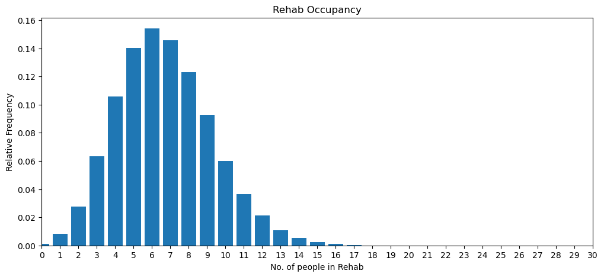
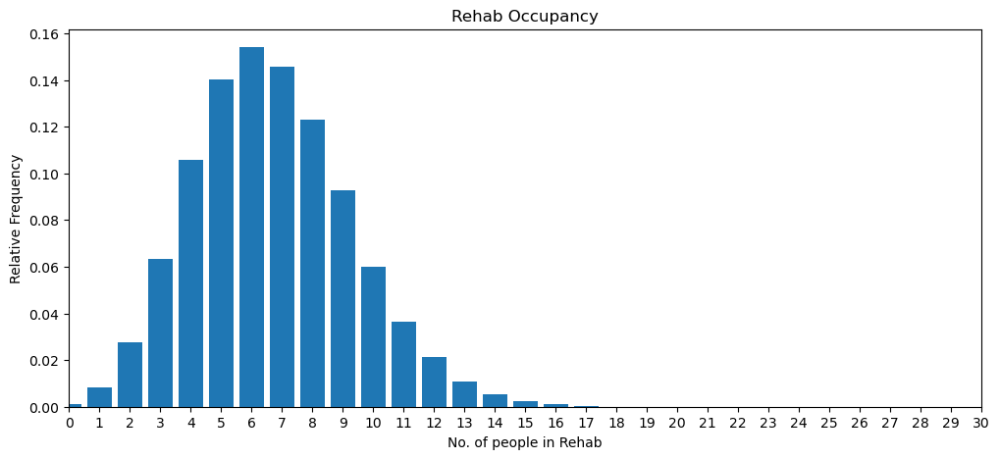

Iteration 23: Multiple Replications (2) stage 2#
Plain English Summary#
The second step of implementing multiple replications writes new code only:
Create a multiple replications function that calls
single_runand stores run results.Create three functions for combining replications and calculating the mean of the occupancy and prob of delay distributions
Create a function that produces a table summary of “probability of delay” and “1 in every n patients delayed” (to match paper).
These are standard python functions that are relatively simple we therefore included all of functions in the same prompt.
The tester writes the script to run all of these functions.
To simplify the notebook we remove the scripts to run ASU and Rehab models individually using scripts. Models are still tested individually in the formal testing section.
Notebook imports#
import math
import statistics
from sim_tools.distributions import Lognormal
import pandas as pd
LLM Prompt 1 #
LLM Prompt
create a function called multiple_replications. The function accepts an instance of Experiment and the number of replications (default=5) as parameters. The functions logic of each replication is as follows:
call
single_runstore the returned results of the replication for later use in a list called
rep_results
after all replications are complete return rep_results
create a function called combine_pdelay_results(rep_results) where rep_results is a python list where each item is a dictionary. The function logic is as follows:
Loop through rep_results:
select
prob_delay_asuandunique_vals_asu.find the minimum value in
unique_vals_asucalledmin_occupancy_asuCreate an new array of length 30 of all zeros. Copy values from
prob_delay_asuto the new array usingunique_vals_asuas the index.In the new array set all values whose array index is <
min_occupancyto 1.0store the results a new result list
Repeat for prob_delay_rehab, unique_vals_rehab and min_occupancy_rehab
Return the result lists in a tuple of numpy arrays
create a function called combine_occup_results(rep_results) where rep_results is a python list where each item is a dictionary. The function logic is as follows:
Loop through rep_results:
select
relative_freq_asuandunique_vals_asu.Create an new array of length 30 of all zeros. Copy values from
relative_freq_asuto the new array usingunique_vals_asuas the index.store the results a new result list
Repeat for relative_freq_rehab,
Return the result lists in a tuple of numpy arrays
create a function called mean_results(rep_results) where rep_results is a numpy array. The function should return the mean of the columns in rep_results.
create a function called summary_table(mean_pdelay, min_beds, max_beds, bed_type).
Slice
mean_pdelaybetweenmin_bedsandmax_beds.Creates a pandas dataframe. The first column is the slice of
mean_pdelay(2dp) the second column is 1 / the slice ofmean_pdelay(to 2dp). Round the 2nd column down to nearest integer.The column names are “p(delay)” and “1 in every n patients delayed”.
The index should start at min_beds and end at max_beds. Its name is “No. “ +
bed_type+ “ beds”Return the dataframe
Date and time of input to LLM#
0900 23rd July 2024
Observations on the LLM Output#
An initial prompt was used in this iteration to convert lognormal moments to normal moments and use it in the
RehabilitationUnitclass.Additional prompt:
Create a new external function called
lognormal_to_normal, which takes two parameters, mean and standard deviation. Use it to convert onvert lognormal moments to normal moments in theRehabilitationUnitclass.This is added to the testing function
The ASU continues to use the conversion method in the
PatientTypeclassThis iteration generated all new functions using the Stage 1 prompt. These are all listed below.
(TOTAL TWO PROMPTS)
Comparison of outputs with Stage 1 found an issue which could be easily missed when using LLMs to generate code, as the resultant rehab output is only slightly out. This was checked with Stage 1 tester, and a bug was found.
It is to do with variables “patient_type” and what data type ASU and Rehab classes expect them to be. The ASU class uses “patient_type” as an instance of the PatientType class. So the name of the type of patient is stored in the .name attribute. e.g. “patient_type.name == “Stroke”. The Rehab class treats “patient_type” as a string instead of an object. So all “rehab_treatment” function includes “if patient_type == “Stroke” etc. ASU passes the instance of the class rather than the name of the patient type. This does not cause an error because the if statement has an “else”. This means that all ASU transferred patients are given a Length of Stay drawn from the “other” distribution (mean is half of stroke and hence you get a lower daily occupancy).
This will be modified in the next iteration.
Ideally, having started using PatientType objects for ASU, the rehab class would have also used PatientType objects instead of strings. This is an example of the LLM making suboptimal choices which can potentially lead to indetectable problems.
Sources reported by the LLM#
None reported at time of generation.
Code carried over#
calculate_occupancy_frequencies- calculate relative frequencies of occupancy observationsoccupancy_plot- show occupancy as a bar chart.calculate_prob_delayprob_delay_plotExperimentPatientType- ASU patient typesRehabilitationUnitAcuteStrokeUnitsingle_run- code that runs the full model ASU+REHAB
Model code #
Imports#
import simpy
import numpy as np
import matplotlib.pyplot as plt
LLM Output: lognormal function#
def lognormal_to_normal(mean, std):
"""
Convert lognormal moments to normal moments.
Parameters:
mean (float): Mean of the lognormal distribution.
std (float): Standard deviation of the lognormal distribution.
Returns:
tuple: (mean, std) of the corresponding normal distribution.
"""
normal_mean = np.log(mean ** 2 / np.sqrt(std ** 2 + mean ** 2))
normal_std = np.sqrt(np.log(std ** 2 / mean ** 2 + 1))
return normal_mean, normal_std
Experiment class#
class Experiment:
def __init__(self, params=None):
default_params = {
'results_collection_period': 5 * 365,
'warm_up': 1095, # Added here, immediately below results_collection_period
'trace': False,
'acute_audit_interval': 1, # Default to 1 day
'rehab_audit_interval': 1, # Default to 1 day
'rehab_stroke_iat': 21.8,
'rehab_neuro_iat': 31.7,
'rehab_other_iat': 28.6,
# New parameters for RehabilitationUnit
'rehab_stroke_esd_los_mean': 30.3,
'rehab_stroke_esd_los_std': 23.1,
'rehab_stroke_other_los_mean': 28.4,
'rehab_stroke_other_los_std': 27.2,
'rehab_complex_neuro_los_mean': 27.6,
'rehab_complex_neuro_los_std': 28.4,
'rehab_other_los_mean': 16.1,
'rehab_other_los_std': 14.1,
'rehab_stroke_post_destination_probs': [0.4, 0.6],
'rehab_complex_neuro_post_destination_probs': [0.09, 0.91],
'rehab_other_post_destination_probs': [0.12, 0.88],
'patient_types': {
'Stroke': {
'interarrival_time': 1.2,
'post_asu_probabilities': [0.24, 0.13, 0.63],
'los_params': {'Rehab': (7.4, 8.6), 'ESD': (4.6, 4.8), 'Other': (7.0, 8.7)}
},
'TIA': {
'interarrival_time': 9.3,
'post_asu_probabilities': [0.01, 0.01, 0.98],
'los_params': (1.8, 5.0)
},
'Complex Neurological': {
'interarrival_time': 3.6,
'post_asu_probabilities': [0.11, 0.05, 0.84],
'los_params': (4.0, 5.0)
},
'Other': {
'interarrival_time': 3.2,
'post_asu_probabilities': [0.05, 0.10, 0.85],
'los_params': (3.8, 5.2)
}
}
}
if params is None:
self.params = default_params
else:
self.params = self.merge_params(default_params, params)
self.asu_occupancy = [] # Initialize the list to store ASU occupancy
self.rehab_occupancy = [] # Initialize the list to store rehab occupancy
self.warm_up = self.params['warm_up'] # Initialize warm_up period from params
def merge_params(self, default, new):
merged = default.copy()
for key, value in new.items():
if isinstance(value, dict) and key in merged:
merged[key] = self.merge_params(merged[key], value)
else:
merged[key] = value
return merged
def audit_acute_occupancy(self, env, first_interval, audit_interval, asu, experiment):
yield env.timeout(first_interval)
while True:
experiment.asu_occupancy.append(asu.occupancy)
yield env.timeout(audit_interval)
def audit_rehab_occupancy(self, env, first_interval, audit_interval, rehab_unit, experiment):
yield env.timeout(first_interval)
while True:
experiment.rehab_occupancy.append(rehab_unit.occupancy)
yield env.timeout(audit_interval)
def reset_kpi(self):
self.asu_occupancy = []
self.rehab_occupancy = []
ASU Patient Type Class#
class PatientType:
def __init__(self, name, interarrival_time, post_asu_probabilities, los_params):
self.name = name
self.interarrival_time = interarrival_time
self.count = 0
self.rng = np.random.default_rng()
self.post_asu_probabilities = post_asu_probabilities
self.los_params = los_params
def generate_interarrival_time(self):
return self.rng.exponential(self.interarrival_time)
def sample_post_asu_destination(self):
return self.rng.choice(['Rehab', 'ESD', 'Other'], p=self.post_asu_probabilities)
def sample_length_of_stay(self, destination=None):
if self.name == 'Stroke':
mean, std = self.los_params[destination]
else:
mean, std = self.los_params
normal_mean = math.log(mean**2 / math.sqrt(std**2 + mean**2))
normal_std = math.sqrt(math.log(1 + (std**2 / mean**2)))
return self.rng.lognormal(normal_mean, normal_std)
Acute stroke unit class#
class AcuteStrokeUnit:
def __init__(self, env, experiment, rehab_unit):
self.env = env
self.experiment = experiment
self.rehab_unit = rehab_unit
#self.results_collection_period = experiment.params['results_collection_period']
self.total_arrivals = 0
self.occupancy = 0
self.trace = experiment.params['trace']
self.patient_types = {
name: PatientType(name, params['interarrival_time'], params['post_asu_probabilities'], params['los_params'])
for name, params in experiment.params['patient_types'].items()
}
def run(self):
for patient_type in self.patient_types.values():
self.env.process(self.patient_generator(patient_type))
def patient_generator(self, patient_type):
while True:
interarrival_time = patient_type.generate_interarrival_time()
yield self.env.timeout(interarrival_time)
self.total_arrivals += 1
patient_type.count += 1
patient_id = self.total_arrivals - 1
post_asu_destination = patient_type.sample_post_asu_destination()
if self.trace:
print(f"Time {self.env.now:.2f}: Patient {patient_id} ({patient_type.name}) arrived")
print(f" Total arrivals: {self.total_arrivals}")
print(f" {patient_type.name} arrivals: {patient_type.count}")
print(f" Post-ASU destination: {post_asu_destination}")
print(f" Next {patient_type.name} arrival in {interarrival_time:.2f} days")
self.occupancy += 1
if self.trace:
print(f" Current occupancy: {self.occupancy}")
self.env.process(self.acute_treatment(patient_type, patient_id, post_asu_destination))
def acute_treatment(self, patient_type, patient_id, post_asu_destination):
if patient_type.name == 'Stroke':
yield from self.stroke_acute_treatment(patient_type, patient_id, post_asu_destination)
elif patient_type.name == 'TIA':
yield from self.tia_acute_treatment(patient_type, patient_id, post_asu_destination)
elif patient_type.name == 'Complex Neurological':
yield from self.complex_neurological_acute_treatment(patient_type, patient_id, post_asu_destination)
else: # Other
yield from self.other_acute_treatment(patient_type, patient_id, post_asu_destination)
self.occupancy -= 1
if self.trace:
print(f"Time {self.env.now:.2f}: Patient {patient_id} ({patient_type.name}) left ASU")
print(f" Current occupancy: {self.occupancy}")
def stroke_acute_treatment(self, patient_type, patient_id, post_asu_destination):
los = self.patient_types['Stroke'].sample_length_of_stay(post_asu_destination)
if self.trace:
print(f"Time {self.env.now:.2f}: Patient {patient_id} (Stroke) starting acute treatment")
print(f" Length of stay: {los:.2f} days")
yield self.env.timeout(los)
if self.trace:
print(f"Time {self.env.now:.2f}: Patient {patient_id} (Stroke) finished acute treatment")
if post_asu_destination == "Rehab":
self.rehab_unit.occupancy += 1
self.rehab_unit.arrivals_from_asu +=1
self.env.process(self.rehab_unit.rehab_treatment(patient_type, patient_id))
if self.trace:
print(f" Post-ASU destination (stroke to stroke rehab): {post_asu_destination, patient_id}")
def tia_acute_treatment(self, patient_type, patient_id, post_asu_destination):
los = patient_type.sample_length_of_stay()
if self.trace:
print(f"Time {self.env.now:.2f}: Patient {patient_id} (TIA) starting acute treatment")
print(f" Length of stay: {los:.2f} days")
yield self.env.timeout(los)
if self.trace:
print(f"Time {self.env.now:.2f}: Patient {patient_id} (TIA) finished acute treatment")
if post_asu_destination == "Rehab":
self.rehab_unit.occupancy += 1
self.rehab_unit.arrivals_from_asu +=1
self.env.process(self.rehab_unit.rehab_treatment(patient_type, patient_id))
if self.trace:
print(f" Post-ASU destination (tia to tia rehab): {post_asu_destination, patient_id}")
def complex_neurological_acute_treatment(self, patient_type, patient_id, post_asu_destination):
los = patient_type.sample_length_of_stay()
if self.trace:
print(f"Time {self.env.now:.2f}: Patient {patient_id} (Complex Neurological) starting acute treatment")
print(f" Length of stay: {los:.2f} days")
yield self.env.timeout(los)
if self.trace:
print(f"Time {self.env.now:.2f}: Patient {patient_id} (Complex Neurological) finished acute treatment")
if post_asu_destination == "Rehab":
self.rehab_unit.occupancy += 1
self.rehab_unit.arrivals_from_asu +=1
self.env.process(self.rehab_unit.rehab_treatment(patient_type, patient_id))
if self.trace:
print(f" Post-ASU destination (complex to complex rehab): {post_asu_destination, patient_id}")
def other_acute_treatment(self, patient_type, patient_id, post_asu_destination):
los = patient_type.sample_length_of_stay()
if self.trace:
print(f"Time {self.env.now:.2f}: Patient {patient_id} (Other) starting acute treatment")
print(f" Length of stay: {los:.2f} days")
yield self.env.timeout(los)
if self.trace:
print(f"Time {self.env.now:.2f}: Patient {patient_id} (Other) finished acute treatment")
if post_asu_destination == "Rehab":
self.rehab_unit.occupancy += 1
self.rehab_unit.arrivals_from_asu +=1
self.env.process(self.rehab_unit.rehab_treatment(patient_type, patient_id))
if self.trace:
print(f" Post-ASU destination (other to other rehab): {post_asu_destination, patient_id}")
Rehabilitation Unit class #
class RehabilitationUnit:
def __init__(self, env, experiment):
self.env = env
self.experiment = experiment
self.trace = experiment.params['trace']
self.total_arrivals = 0
self.arrivals_from_asu = 0
self.patient_counts = {
'Stroke': 0,
'Complex Neurological': 0,
'Other': 0,
'TIA': 0
}
self.occupancy = 0
self.stroke_iat_external = experiment.params['rehab_stroke_iat']
self.complex_neuro_iat_external = experiment.params['rehab_neuro_iat']
self.other_iat_external = experiment.params['rehab_other_iat']
# Convert lognormal moments to normal moments
self.stroke_esd_mean, self.stroke_esd_std = lognormal_to_normal(
experiment.params['rehab_stroke_esd_los_mean'],
experiment.params['rehab_stroke_esd_los_std']
)
self.stroke_other_mean, self.stroke_other_std = lognormal_to_normal(
experiment.params['rehab_stroke_other_los_mean'],
experiment.params['rehab_stroke_other_los_std']
)
self.complex_neuro_mean, self.complex_neuro_std = lognormal_to_normal(
experiment.params['rehab_complex_neuro_los_mean'],
experiment.params['rehab_complex_neuro_los_std']
)
self.other_mean, self.other_std = lognormal_to_normal(
experiment.params['rehab_other_los_mean'],
experiment.params['rehab_other_los_std']
)
self.tia_mean, self.tia_std = lognormal_to_normal(18.7, 23.5) # TIA parameters
def run(self):
self.env.process(self.stroke_generator())
self.env.process(self.complex_neuro_generator())
self.env.process(self.other_generator())
def stroke_generator(self):
while True:
yield self.env.timeout(np.random.exponential(self.stroke_iat_external))
self.patient_arrival('Stroke')
def complex_neuro_generator(self):
while True:
yield self.env.timeout(np.random.exponential(self.complex_neuro_iat_external))
self.patient_arrival('Complex Neurological')
def other_generator(self):
while True:
yield self.env.timeout(np.random.exponential(self.other_iat_external))
self.patient_arrival('Other')
def patient_arrival(self, patient_type):
patient_id = self.total_arrivals
self.total_arrivals += 1
self.patient_counts[patient_type] += 1
self.occupancy += 1
if self.experiment.params['trace']:
print(f"Time {self.env.now:.2f}: Patient {patient_id} ({patient_type}) arrived at RU")
print(f" Total arrivals: {self.total_arrivals}")
print(f" {patient_type} arrivals: {self.patient_counts[patient_type]}")
print(f" Current patient counts: {self.patient_counts}")
print(f" Current occupancy: {self.occupancy}")
self.env.process(self.rehab_treatment(patient_type, patient_id))
def rehab_treatment(self, patient_type, patient_id):
if patient_type == 'Stroke':
yield from self.stroke_rehab_treatment(patient_id)
elif patient_type == 'Complex Neurological':
yield from self.complex_neurological_rehab_treatment(patient_id)
elif patient_type == 'TIA':
yield from self.tia_rehab_treatment(patient_id)
else:
yield from self.other_rehab_treatment(patient_id)
self.occupancy -= 1
if self.experiment.params['trace']:
print(f"Time {self.env.now:.2f}: Patient {patient_id} ({patient_type}) left RU")
print(f" Current occupancy: {self.occupancy}")
def stroke_rehab_treatment(self, patient_id):
post_rehab_destination = np.random.choice(['ESD', 'Other'], p=self.experiment.params['rehab_stroke_post_destination_probs'])
if post_rehab_destination == 'ESD':
length_of_stay = np.random.lognormal(self.stroke_esd_mean, self.stroke_esd_std)
else:
length_of_stay = np.random.lognormal(self.stroke_other_mean, self.stroke_other_std)
yield self.env.timeout(length_of_stay)
if self.experiment.params['trace']:
print(f"Time {self.env.now:.2f}: Patient {patient_id} (Stroke) completed rehab treatment")
print(f" Post-rehab destination: {post_rehab_destination}")
print(f" Length of stay: {length_of_stay:.2f} days")
def complex_neurological_rehab_treatment(self, patient_id):
post_rehab_destination = np.random.choice(['ESD', 'Other'], p=self.experiment.params['rehab_complex_neuro_post_destination_probs'])
length_of_stay = np.random.lognormal(self.complex_neuro_mean, self.complex_neuro_std)
yield self.env.timeout(length_of_stay)
if self.experiment.params['trace']:
print(f"Time {self.env.now:.2f}: Patient {patient_id} (Complex Neurological) completed rehab treatment")
print(f" Post-rehab destination: {post_rehab_destination}")
print(f" Length of stay: {length_of_stay:.2f} days")
def other_rehab_treatment(self, patient_id):
post_rehab_destination = np.random.choice(['ESD', 'Other'], p=self.experiment.params['rehab_other_post_destination_probs'])
length_of_stay = np.random.lognormal(self.other_mean, self.other_std)
yield self.env.timeout(length_of_stay)
if self.experiment.params['trace']:
print(f"Time {self.env.now:.2f}: Patient {patient_id} (Other) completed rehab treatment")
print(f" Post-rehab destination: {post_rehab_destination}")
print(f" Length of stay: {length_of_stay:.2f} days")
def tia_rehab_treatment(self, patient_id):
post_rehab_destination = np.random.choice(['ESD', 'Other'], p=[0, 1]) # Always 'Other' for TIA patients
length_of_stay = np.random.lognormal(self.tia_mean, self.tia_std)
yield self.env.timeout(length_of_stay)
if self.experiment.params['trace']:
print(f"Time {self.env.now:.2f}: Patient {patient_id} (TIA) completed rehab treatment")
print(f" Post-rehab destination: {post_rehab_destination}")
print(f" Length of stay: {length_of_stay:.2f} days")
Occupancy post-processing code#
def calculate_occupancy_frequencies(occupancy_list):
unique_values, counts = np.unique(occupancy_list, return_counts=True)
relative_freq = counts / len(occupancy_list)
cumulative_freq = np.cumsum(relative_freq)
return relative_freq, cumulative_freq, unique_values
def occupancy_plot(relative_freq, unique_values, x_label="No. people in ward", figsize=(12, 5)):
fig, ax = plt.subplots(figsize=figsize)
ax.bar(unique_values, relative_freq)
ax.set_xlabel(x_label)
ax.set_ylabel("Relative Frequency")
ax.set_title("Occupancy Distribution")
ax.set_xticks(range(0, 31))
ax.set_xlim(0, 30)
return fig, ax
Probability of delay post-processing code#
def calculate_prob_delay(relative_freq, cumulative_freq):
rel_freq = np.array(relative_freq)
cum_freq = np.array(cumulative_freq)
return rel_freq / cum_freq
def prob_delay_plot(prob_delay, unique_values, x_label="No. acute beds available", figsize=(12, 5)):
fig, ax = plt.subplots(figsize=figsize)
ax.step(unique_values, prob_delay, where='post')
ax.set_xlabel(x_label)
ax.set_ylabel("Probability of Delay")
ax.set_title("Probability of Delay vs. Number of Beds Available")
ax.set_xticks(range(0, 31))
ax.set_xlim(0, 30)
ax.set_ylim(0, 1)
return fig, ax
Function to perform a single run of ASU+REHAB#
def single_run(experiment):
experiment.reset_kpi()
# Create the simulation environment
env = simpy.Environment()
# Create models
rehab_unit = RehabilitationUnit(env, experiment)
asu = AcuteStrokeUnit(env, experiment, rehab_unit)
# Run models
rehab_unit.run()
asu.run()
# Start the audit processes
env.process(experiment.audit_acute_occupancy(env, experiment.warm_up, experiment.params['acute_audit_interval'], asu, experiment))
env.process(experiment.audit_rehab_occupancy(env, experiment.warm_up, experiment.params['rehab_audit_interval'], rehab_unit, experiment))
# Run the simulation
env.run(until=experiment.warm_up + experiment.params['results_collection_period'])
# Calculate occupancy frequencies and probabilities of delay
rel_freq_a, cum_freq_a, unique_vals_a = calculate_occupancy_frequencies(experiment.asu_occupancy)
prob_delay_a = calculate_prob_delay(rel_freq_a, cum_freq_a)
rel_freq_r, cum_freq_r, unique_vals_r = calculate_occupancy_frequencies(experiment.rehab_occupancy)
prob_delay_r = calculate_prob_delay(rel_freq_r, cum_freq_r)
return {
'relative_freq_asu': rel_freq_a,
'prob_delay_asu': prob_delay_a,
'unique_vals_asu': unique_vals_a,
'relative_freq_rehab': rel_freq_r,
'prob_delay_rehab': prob_delay_r,
'unique_vals_rehab': unique_vals_r
}
Multiple Replication function#
def multiple_replications(experiment, num_replications=5):
rep_results = []
for _ in range(num_replications):
result = single_run(experiment)
rep_results.append(result)
return rep_results
Functions to combine replication results#
def combine_pdelay_results(rep_results):
asu_results = []
rehab_results = []
for result in rep_results:
prob_delay_asu = result['prob_delay_asu']
unique_vals_asu = result['unique_vals_asu']
min_occupancy_asu = min(unique_vals_asu)
asu_array = np.zeros(30)
asu_array[unique_vals_asu] = prob_delay_asu
asu_array[:min_occupancy_asu] = 1.0
asu_results.append(asu_array)
prob_delay_rehab = result['prob_delay_rehab']
unique_vals_rehab = result['unique_vals_rehab']
min_occupancy_rehab = min(unique_vals_rehab)
rehab_array = np.zeros(30)
rehab_array[unique_vals_rehab] = prob_delay_rehab
rehab_array[:min_occupancy_rehab] = 1.0
rehab_results.append(rehab_array)
return np.array(asu_results), np.array(rehab_results)
def combine_occup_results(rep_results):
asu_results = []
rehab_results = []
for result in rep_results:
relative_freq_asu = result['relative_freq_asu']
unique_vals_asu = result['unique_vals_asu']
asu_array = np.zeros(30)
asu_array[unique_vals_asu] = relative_freq_asu
asu_results.append(asu_array)
relative_freq_rehab = result['relative_freq_rehab']
unique_vals_rehab = result['unique_vals_rehab']
rehab_array = np.zeros(30)
rehab_array[unique_vals_rehab] = relative_freq_rehab
rehab_results.append(rehab_array)
return np.array(asu_results), np.array(rehab_results)
def mean_results(rep_results):
return np.mean(rep_results, axis=0)
Tabular results for p(delay)#
def summary_table(mean_pdelay, min_beds, max_beds, bed_type):
sliced_pdelay = mean_pdelay[min_beds:max_beds+1]
data = {
"p(delay)": np.round(sliced_pdelay, 2),
"1 in every n patients delayed": np.floor(1 / np.round(sliced_pdelay, 2)).astype(int)
}
df = pd.DataFrame(data, index=range(min_beds, max_beds+1))
df.index.name = f"No. {bed_type} beds"
return df
Script to run model was outputted by LLM along with the prompt outputs
Min and max beds in summary table were modified by tester
# Create the experiment
experiment = Experiment({
'results_collection_period': 365*5, # Run for 5 years
'trace': False, # Set to True if you want to see detailed logs
})
# Run multiple replications
rep_results = multiple_replications(experiment, num_replications=100)
# Combine results
asu_pdelay, rehab_pdelay = combine_pdelay_results(rep_results)
asu_occup, rehab_occup = combine_occup_results(rep_results)
# Calculate mean results
mean_pdelay_asu = mean_results(asu_pdelay)
mean_pdelay_rehab = mean_results(rehab_pdelay)
mean_occup_asu = mean_results(asu_occup)
mean_occup_rehab = mean_results(rehab_occup)
# Create summary tables
asu_summary = summary_table(mean_pdelay_asu, min_beds=9, max_beds=14, bed_type="ASU")
rehab_summary = summary_table(mean_pdelay_rehab, min_beds=8, max_beds=14, bed_type="Rehab")
# Plot ASU Probability of Delay
fig, ax = prob_delay_plot(mean_pdelay_asu, range(30), x_label="No. ASU beds available")
plt.title("ASU Probability of Delay")
plt.show()
# Plot ASU Occupancy
fig, ax = occupancy_plot(mean_occup_asu, range(30), x_label="No. of people in ASU")
plt.title("ASU Occupancy")
plt.show()
# Plot Rehab Probability of Delay
fig, ax = prob_delay_plot(mean_pdelay_rehab, range(30), x_label="No. rehab beds available")
plt.title("Rehab Probability of Delay")
plt.show()
# Plot Rehab Occupancy
fig, ax = occupancy_plot(mean_occup_rehab, range(30), x_label="No. of people in Rehab")
plt.title("Rehab Occupancy")
plt.show()
 

print("ASU Summary Table:")
asu_summary
ASU Summary Table:
| p(delay) | 1 in every n patients delayed | |
|---|---|---|
| No. ASU beds | ||
| 9 | 0.18 | 5 |
| 10 | 0.13 | 7 |
| 11 | 0.09 | 11 |
| 12 | 0.06 | 16 |
| 13 | 0.03 | 33 |
| 14 | 0.02 | 50 |
print("Rehab Summary Table:")
rehab_summary
Rehab Summary Table:
| p(delay) | 1 in every n patients delayed | |
|---|---|---|
| No. Rehab beds | ||
| 8 | 0.16 | 6 |
| 9 | 0.11 | 9 |
| 10 | 0.07 | 14 |
| 11 | 0.04 | 25 |
| 12 | 0.02 | 50 |
| 13 | 0.01 | 100 |
| 14 | 0.01 | 100 |
Testing #
Results processing 1: code correctly calculates relative and cumulative frequencies
Expected result: for [1, 1, 1, 1, 2, 2, 2, 3, 3, 4] relative = [4/10, 3/10, 2/10, 1/10] and cum = [4/10, 7/10, 9/10, 1.0]
Actual result (PASS): for [1, 1, 1, 1, 2, 2, 2, 3, 3, 4] relative = [4/10, 3/10, 2/10, 1/10] and cum = [4/10, 7/10, 9/10, 1.0]
Results processing 2: test that prob delay is calculated correctly.
Expected result: The probability of delay is [1.0, 0.3/0.7, 0.2/0.9, 0.1/1.0]
Actual result (PASS): The probability of delay is [1.0, 0.3/0.7, 0.2/0.9, 0.1/1.0]
Results collection test 1: Test the result collection process for ASU collects ward occupancy every day
Expected result: The number of observations taken is 1 less the number of days the model is run.
Actual result (PASS): The number of observations taken is 1 less the number of days the model is run.
Results collection test 2: Test ASU ward occupancy data collected is in a sensible range.
Expected result: The type collected is int. The values are in the range 0 to 50 with sensible moments.
Actual result (PASS): The type collected is int. The values are in the range 0 to 50 with sensible moments.
Results collection test 3: Test the result collection process for REHAB collects unit occupancy every day
Expected result: The number of observations taken is 1 less the number of days the model is run.
Actual result (PASS): The number of observations taken is 1 less the number of days the model is run.
Results collection test 4: Test REHAB unit occupancy data collected is in a sensible range.
Expected result: The type collected is int. The values are in the range 0 to (10-15) with sensible moments.
Actual result (PASS): The type collected is int. The values are 0 to (10-15) with sensible moments.
Results collection test 5: SYSTEM TEST: Test the result collection process for ASU+REHAB collects ward occupancy every day
Expected result: The number of observations taken is 1 less the number of days the model is run.
Actual result (PASS): The number of observations taken is 1 less the number of days the model is run.
Single run test: SYSTEM TEST: Test that the
single_runfunction returns a dictionary of resultsExpected Result: len(run_results) == 6 and type(run_results) == dict
Actual Result (PASS): len(run_results) == 6 and type(run_results) == dict
Warm-up Period Test: Test warm-up works correctly for ASU+REHAB ward occupancy. Audit interval = 1 and Warm-up > 0
Expected result: The length of the occupancy data collection arrays is equal to the results collection period.
Actual result (PASS): The length of the occupancy data collection arrays is equal to the results collection period.
Suppress simulated trace: Test that setting experiment.trace = False suppresses ASU output by default.
Expected result: The ASU model runs with no simulated log output
Actual result (PASS): The ASU model runs with no simulated log output
Suppress simulated trace 2: Test that setting experiment.trace = False suppresses REHAB output by default.
Expected result: The REHAB model runs with no simulated log output
Actual result (PASS): The REHAB model runs with no simulated log output
Testing lognormal function: Test that lognomal function correctly calculates the moments of the underlying normal dist.
Expected result: The LLM generated function and
sim-tools.distributions.Lognormalperform the same conversion.Actual results (PASS): The functions generate the same values.
Extreme value test 1: TIA, Complex Neuro, Other, have their inter-arrival time is set to \(M\) a very large number
Expected result: The only type of patient to arrive to the model is “Stroke”
Actual result (PASS): The only type of patient to arrive to the model is “Stroke”
Extreme value test 2: All patient types have have their inter-arrival time is set to \(M\) a very large number
Expected result: No patients arrive to the model.
Actual result (PASS): No patients arrive to the model.
Different run length: The run length of the model is set to 10 days.
Expected result: The model should runs no longer than 10 simulated time periods
Actual result (PASS): The model runs no longer than 10 simulated time periods
Extreme value test 3: All patient types have have their mean length of stay time set to \(M\) a very large number
Expected result: No patients depart the model (only arrivals seen in log)
Actual Results (PASS): No patients depart the model.
Extreme value test 4: All patient types apart from stroke->rehab have have their mean length of stay time set to \(M\) a very large number
Expected result: Only stroke patients depart the model (seen in log)
Actual Results (PASS): Only stroke patient depart the model.
Extreme value test 5: In rehab, Complex Neuro, and Other, have their inter-arrival time is set to \(M\) a very large number
Expected result: The only type of patient to arrive to the rehab model is “Stroke”
Actual result (PASS): The only type of patient to arrive to the rehab model is “Stroke”
Extreme value test 6: In the rehab model, all patient types have have their inter-arrival time is set to \(M\) a very large number
Expected result: No patients arrive to the model.
Actual result (PASS): No patients arrive to the model.
Extreme value test 7: In the rehab model, all patient types have their length of stay means set to \(M\) a very larger number.
Expected result: Patients arrive to the model as normal, but do not depart.
Actual result (PASS): Patients arrive to the model as normal, but do not depart.
Results processing 1#
Test that the code correctly calculates the relative and cumulative frequencies of a python list of integer values.
(PASS)
def result_processing_test_1(values, rel_expected, cum_expected):
'''
Test the `calculate_occupancy_frequencies` function works
as expected.
Expected result: relative frequencies and cumulative freqs
are the same as expected values.
Params:
------
values: list
list of values to test
rel_expected: list
list of floats - expected relative freqs
cum_expected: list
list of floats - expected cumulative freqs
Returns:
-------
bool: does the model pass the test.
'''
rel, cum, unique = calculate_occupancy_frequencies(values)
# use all close to allow for minor floating point differences.
return (set(rel) == set(rel_expected)) and np.allclose(np.array(cum_expected), cum)
result_processing_test_1(values=[1, 1, 1, 1, 2, 2, 2, 3, 3, 4],
rel_expected=[0.4, 0.3, 0.2, 0.1],
cum_expected=[0.4, 0.7, 0.9, 1.0])
True
Results Processing test 2#
Test that the calculation of the probability of delay is correct.
(PASS)
def result_processing_test_2(relative, cum, p_delay_expected):
'''
Test the probability of delay is calculated correctly.
Params:
------
relative: list
list of floats - relative freqs
cum: list
list of floats - cumulative freqs
Returns:
-------
bool: does the function pass the test.
'''
p_delay = calculate_prob_delay(relative, cum)
# use all close to allow for minor floating point differences.
return np.allclose(np.array(p_delay_expected), p_delay)
relative = [0.4, 0.3, 0.2, 0.1],
cum = [0.4, 0.7, 0.9, 1.0]
expected = [1.0, 0.3/0.7, 0.2/0.9, 0.1/1.0]
result = result_processing_test_2(relative, cum, expected)
result
True
Results collection test 1#
Test the optional results collection process works correctly. The process should collect acute stroke occupancy every day
(PASS)
def results_collection_test1(audit_interval=1):
'''
Test the model collects acute stroke occupancy every day
Expected result: len(experiment.asu_occupancy) == env.now
Params:
------
audit_interval: 1
duration of audit.
Returns:
-------
bool: does the model pass the test.
'''
# Create the experiment
experiment = Experiment({
'run_length': 365*5, # Run for 5 years
'trace': False, # Set to True if you want to see detailed logs
'acute_audit_interval': audit_interval # Audit interval as specified
})
# Create the simulation environment
env = simpy.Environment()
rehab_unit = RehabilitationUnit(env, experiment)
# Create the AcuteStrokeUnit
asu = AcuteStrokeUnit(env, experiment, rehab_unit)
# modified iteration 21
# start the audit_acute_occupancy to record ASU occupancy at intervals
env.process(experiment.audit_acute_occupancy(env, 1, experiment.params['acute_audit_interval'], asu, experiment))
# Run the model - modified iteration 21
asu.run()
env.run(until=experiment.params['results_collection_period'])
print(f"Number of occupancy audits: {len(experiment.asu_occupancy)}")
print(f'Simulation time: {env.now}')
# The number of audits should be equal to the simulation time
# (assuming audit_interval=1 and the first audit happens at time 1)
return len(experiment.asu_occupancy) == (env.now - 1)
results_collection_test1()
Number of occupancy audits: 1824
Simulation time: 1825
True
Result collection test 2#
(PASS)
def results_collection_test2(audit_interval=1):
'''
Test ASU ward occupancy data collected is in a sensible range.
Expected result: The type collected is int. The values are in
the range in the range 0 to 50 with sensible moments.
prints out:
min
max
mean
deciles
Params:
------
audit_interval: 1
duration of audit.
Returns:
-------
None
'''
# Create the experiment
experiment = Experiment({
'trace': False,
'acute_audit_interval': audit_interval
})
# Create the simulation environment
env = simpy.Environment()
rehab_unit = RehabilitationUnit(env, experiment)
# Create the AcuteStrokeUnit
asu = AcuteStrokeUnit(env, experiment, rehab_unit)
# Start the audit process - modified iteration 21
env.process(experiment.audit_acute_occupancy(env, 1, experiment.params['acute_audit_interval'], asu, experiment))
# Run the model - modified iteration 21
asu.run()
env.run(until=experiment.params['results_collection_period'])
# Calculate statistics
min_occupancy = min(experiment.asu_occupancy)
max_occupancy = max(experiment.asu_occupancy)
mean_occupancy = statistics.fmean(experiment.asu_occupancy)
deciles = [round(q, 1) for q in statistics.quantiles(experiment.asu_occupancy, n=10)]
# Print results
print(f'Minimum occupancy: {min_occupancy}')
print(f'Maximum occupancy: {max_occupancy}')
print(f'Mean occupancy: {mean_occupancy:.2f}')
print(f'Deciles of occupancy: {deciles}')
results_collection_test2()
Minimum occupancy: 1
Maximum occupancy: 19
Mean occupancy: 8.43
Deciles of occupancy: [5.0, 6.0, 7.0, 8.0, 8.0, 9.0, 10.0, 11.0, 12.0]
Results collection test 3#
Test the optional results collection process works correctly for rehab. The process should collect rehab unit occupancy every day.
(PASS)
def results_collection_test3(audit_interval=1):
'''
Test the model collects rehab occupancy every day
Expected result: len(experiment.rehab_occupancy) == env.now - 1
Params:
------
audit_interval: 1
duration of audit.
Returns:
-------
bool: does the model pass the test.
'''
# Create the simulation environment
env = simpy.Environment()
# create experiment
experiment = Experiment()
rehab_unit = RehabilitationUnit(env, experiment)
# Start the audit process - modified iteration 21
env.process(experiment.audit_rehab_occupancy(env, 1, experiment.params['rehab_audit_interval'], rehab_unit, experiment))
# Run the model for the default run length in the experiment - modified in iteration 21
env.run(until=experiment.params['results_collection_period'])
print(f'{len(experiment.rehab_occupancy)=}')
print(f'{env.now=}')
return len(experiment.rehab_occupancy) == (env.now - 1)
results_collection_test3()
len(experiment.rehab_occupancy)=1824
env.now=1825
True
Results Collection Test 4#
(PASS)
def results_collection_test4(audit_interval=1):
'''
Test REHAB ward occupancy data collected is in a sensible range.
Expected result: The type collected is int. The values are in
the range 1 to [10-15] with sensible moments.
Note this is when the Rehab unit is used independently
with external arrivals only i.e. no transfers from ASU.
prints out:
min
max
mean
deciles
Params:
------
audit_interval: 1
duration of audit.
Returns:
-------
None
'''
# Create the simulation environment
env = simpy.Environment()
# create experiment
experiment = Experiment()
rehab_unit = RehabilitationUnit(env, experiment)
rehab_unit.run()
# Start the audit process - modified iteration 21
env.process(experiment.audit_rehab_occupancy(env, 1, experiment.params['rehab_audit_interval'], rehab_unit, experiment))
# Run the model for the default run length in the experiment - modified in iteration 21
env.run(until=experiment.params['results_collection_period'])
print(f'min(experiment.rehab_occupancy)={min(experiment.rehab_occupancy)}')
print(f'max(experiment.rehab_occupancy)={max(experiment.rehab_occupancy)}')
print(f'statistics.fmean(experiment.rehab_occupancy)={statistics.fmean(experiment.rehab_occupancy):.2f}')
print('Deciles:', [round(q, 1) for q in statistics.quantiles(experiment.rehab_occupancy, n=10)])
results_collection_test4()
min(experiment.rehab_occupancy)=0
max(experiment.rehab_occupancy)=11
statistics.fmean(experiment.rehab_occupancy)=3.05
Deciles: [1.0, 1.0, 2.0, 2.0, 3.0, 3.0, 4.0, 5.0, 5.0]
Results Collection Test 5 (SYSTEM TEST)#
Test that when the models are linked that the occupancy is audited correctly.
def results_collection_test5(audit_interval=1):
'''
Test REHAB ward occupancy data collected is in a sensible range
when it is connected to the ASU model.
Expected result: The type collected is int. The values are in
the range in the range 1 to [10-15] with sensible moments.
Expected result:
len(experiment.asu_occupancy) == env.now - 1 AND
len(experiment.rehab_occupancy) == env.now - 1
Params:
------
audit_interval: 1
duration of audit.
Returns:
-------
bool: does the model pass the test.
'''
# Create the simulation environment
env = simpy.Environment()
# Create an experiment with default parameters
experiment = Experiment()
# Create models
rehab_unit = RehabilitationUnit(env, experiment)
asu = AcuteStrokeUnit(env, experiment, rehab_unit)
# Start the ASU patient generators for each type of patient
asu.run()
rehab_unit.run()
# Start the audit process - modified iteration 21
env.process(experiment.audit_rehab_occupancy(env, 1, experiment.params['rehab_audit_interval'], rehab_unit, experiment))
env.process(experiment.audit_acute_occupancy(env, 1, experiment.params['acute_audit_interval'], asu, experiment))
# Run the simulation until the specified run length in the Experiment parameters - modified in iteration 21
env.run(until=experiment.params['results_collection_period'])
# Print info for debug
print(f"Average rehab occupancy: {sum(experiment.rehab_occupancy) / len(experiment.rehab_occupancy):.2f}")
print(f"Maximum rehab occupancy: {max(experiment.rehab_occupancy)}")
print(f"Minimum rehab occupancy: {min(experiment.rehab_occupancy)}")
print(f'{len(experiment.asu_occupancy)=}')
print(f'{len(experiment.rehab_occupancy)=}')
print(f'{env.now=}')
# Test
return len(experiment.asu_occupancy) == (env.now - 1) and \
len(experiment.rehab_occupancy) == (env.now - 1)
results_collection_test5()
Average rehab occupancy: 7.01
Maximum rehab occupancy: 17
Minimum rehab occupancy: 0
len(experiment.asu_occupancy)=1824
len(experiment.rehab_occupancy)=1824
env.now=1825
True
Results Collection Test 6 (SYSTEM TEST)#
def results_collection_test6(audit_interval=1):
'''
Test the model collects acute stroke occupancy every day
Expected result: The type collected is int. The values are in
the range in the range 1 to ~25 with sensible moments.
Note this is when the Rehab unit is linked to the ASU.
I.e. transfers from ASU + external arrivals
prints out:
min
max
mean
deciles
Params:
------
audit_interval: 1
duration of audit.
Returns:
-------
bool: does the model pass the test.
'''
# Create the simulation environment
env = simpy.Environment()
# Create an experiment with default parameters
experiment = Experiment()
# Create models
rehab_unit = RehabilitationUnit(env, experiment)
asu = AcuteStrokeUnit(env, experiment, rehab_unit)
# Start the ASU patient generators for each type of patient
asu.run()
rehab_unit.run()
# Start the audit process - modified iteration 21
env.process(experiment.audit_rehab_occupancy(env, 1, experiment.params['rehab_audit_interval'], rehab_unit, experiment))
env.process(experiment.audit_acute_occupancy(env, 1, experiment.params['acute_audit_interval'], asu, experiment))
# Run the simulation until the specified run length in the Experiment parameters - modified in iteration 21
env.run(until=experiment.params['results_collection_period'])
# Test
print(f'min(experiment.rehab_occupancy)={min(experiment.rehab_occupancy)}')
print(f'max(experiment.rehab_occupancy)={max(experiment.rehab_occupancy)}')
print(f'statistics.fmean(experiment.rehab_occupancy)={statistics.fmean(experiment.rehab_occupancy):.2f}')
print('Deciles:', [round(q, 1) for q in statistics.quantiles(experiment.rehab_occupancy, n=10)])
results_collection_test6()
min(experiment.rehab_occupancy)=0
max(experiment.rehab_occupancy)=15
statistics.fmean(experiment.rehab_occupancy)=6.33
Deciles: [3.0, 4.0, 5.0, 6.0, 6.0, 7.0, 7.5, 8.0, 9.0]
Warm-up Test#
(PASS)
def warm_up_test(warm_up, audit_interval=1):
'''
Test warm-up works correctly for ASU+REHAB ward occupancy
Expected result:
len(experiment.asu_occupancy) == experiment.params['results_collection_period']
AND len(experiment.rehab_occupancy) == experiment.params['results_collection_period']
Params:
------
warm_up: int
Duration of warm-up period.
audit_interval: int, default 1
Duration of audit interval.
Returns:
-------
bool: does the model pass the test.
'''
# Create the experiment with specified warm-up period
experiment = Experiment({
'warm_up': warm_up,
'acute_audit_interval': audit_interval,
'rehab_audit_interval': audit_interval
})
# Create the simulation environment
env = simpy.Environment()
# Create models
rehab_unit = RehabilitationUnit(env, experiment)
asu = AcuteStrokeUnit(env, experiment, rehab_unit)
# Start the ASU patient generators
asu.run()
# Start the REHAB patient generators
rehab_unit.run()
# Start the audit processes
env.process(experiment.audit_acute_occupancy(env, experiment.warm_up, audit_interval, asu, experiment))
env.process(experiment.audit_rehab_occupancy(env, experiment.warm_up, audit_interval, rehab_unit, experiment))
# Run the simulation
env.run(until=experiment.warm_up + experiment.params['results_collection_period'])
# Print info for debug
print(f'{len(experiment.asu_occupancy)=}')
print(f'{len(experiment.rehab_occupancy)=}')
print(f'{env.now=}')
print(f'{experiment.params["results_collection_period"]=}')
print(f'{experiment.warm_up + experiment.params["results_collection_period"]=}')
# Test
return (len(experiment.asu_occupancy) == experiment.params['results_collection_period'] and
len(experiment.rehab_occupancy) == experiment.params['results_collection_period'])
warm_up_test(warm_up=365)
len(experiment.asu_occupancy)=1825
len(experiment.rehab_occupancy)=1825
env.now=2190
experiment.params["results_collection_period"]=1825
experiment.warm_up + experiment.params["results_collection_period"]=2190
True
Single run test (SYSTEM TEST)#
def single_run_test():
'''
Test the single_run function returns a dictionary of
results.
The results dictionary contains the following keys:
'relative_freq_asu'
'prob_delay_asu'
'unique_vals_asu'
'relative_freq_rehab'
'prob_delay_rehab'
'unique_vals_rehab'
Expected result:
len(run_results) == 6 and type(run_results) == dict
Returns:
-------
bool: does the model pass the test.
'''
# a default experiment
default_experiment_params = Experiment()
# run the model
run_results = single_run(default_experiment_params)
# Print the results for debugging
print(f"{run_results['relative_freq_asu']=}")
print(f"{run_results['prob_delay_asu']=}")
print(f"{run_results['unique_vals_asu']=}")
print(f"{run_results['relative_freq_rehab']=}")
print(f"{run_results['prob_delay_rehab']=}")
print(f"{run_results['unique_vals_rehab']=}")
# Test
expected_keys = {
'relative_freq_asu',
'prob_delay_asu',
'unique_vals_asu',
'relative_freq_rehab',
'prob_delay_rehab',
'unique_vals_rehab'
}
return len(run_results) == 6 and type(run_results) == dict and set(run_results.keys()) == expected_keys
single_run_test()
run_results['relative_freq_asu']=array([0.00328767, 0.00547945, 0.02027397, 0.04657534, 0.09863014,
0.13260274, 0.14630137, 0.1490411 , 0.11890411, 0.09424658,
0.06794521, 0.04164384, 0.03945205, 0.01479452, 0.00986301,
0.00657534, 0.00273973, 0.00054795, 0.00109589])
run_results['prob_delay_asu']=array([1.00000000e+00, 6.25000000e-01, 6.98113208e-01, 6.15942029e-01,
5.66037736e-01, 4.32142857e-01, 3.22853688e-01, 2.47497725e-01,
1.64893617e-01, 1.15591398e-01, 7.69230769e-02, 4.50236967e-02,
4.09090909e-02, 1.51091214e-02, 9.97229917e-03, 6.60429279e-03,
2.74423710e-03, 5.48546352e-04, 1.09589041e-03])
run_results['unique_vals_asu']=array([ 1, 2, 3, 4, 5, 6, 7, 8, 9, 10, 11, 12, 13, 14, 15, 16, 17,
18, 19])
run_results['relative_freq_rehab']=array([0.00054795, 0.01479452, 0.05205479, 0.10958904, 0.14958904,
0.14630137, 0.13917808, 0.12821918, 0.1030137 , 0.06958904,
0.04383562, 0.02082192, 0.01315068, 0.00328767, 0.00109589,
0.00438356, 0.00054795])
run_results['prob_delay_rehab']=array([1.00000000e+00, 9.64285714e-01, 7.72357724e-01, 6.19195046e-01,
4.58053691e-01, 3.09385863e-01, 2.27394808e-01, 1.73205033e-01,
1.22157245e-01, 7.62304922e-02, 4.58190149e-02, 2.13004484e-02,
1.32743363e-02, 3.30760750e-03, 1.10132159e-03, 4.38596491e-03,
5.47945205e-04])
run_results['unique_vals_rehab']=array([ 1, 2, 3, 4, 5, 6, 7, 8, 9, 10, 11, 12, 13, 14, 15, 16, 17])
True
Test suppress trace 1#
(PASS)
def test_suppress_log(trace):
'''
Test that setting experiment.trace
False suppresses output.
Expected result: patient_count > 0
Params:
------
trace: bool
is trace outputted or not?
Returns:
-------
int: number of patient arrivals.
'''
experiment = Experiment({'trace': trace})
env = simpy.Environment()
rehab_unit = RehabilitationUnit(env, experiment)
model = AcuteStrokeUnit(env, experiment, rehab_unit)
model.run()
env.run(until=experiment.params['results_collection_period'])
print("\nSimulation completed.")
print(f"Total simulation time: {model.env.now:.2f} days")
print(f"Total patient arrivals: {model.total_arrivals}")
for patient_type in model.patient_types.values():
print(f"Total {patient_type.name} arrivals: {patient_type.count}")
test_suppress_log(trace=False)
Simulation completed.
Total simulation time: 1825.00 days
Total patient arrivals: 2781
Total Stroke arrivals: 1538
Total TIA arrivals: 181
Total Complex Neurological arrivals: 483
Total Other arrivals: 579
Test suppress trace 2#
def test_suppress_log_rehab(trace):
'''
Test that setting experiment.trace to
False suppresses output in the rehab model
Expected result: patient_count > 0
Params:
------
trace: bool
is trace outputted or not?
Returns:
-------
int: number of patient arrivals.
'''
# Create the simulation environment
experiment = Experiment({'trace': trace})
env = simpy.Environment()
model = RehabilitationUnit(env, experiment)
asu = AcuteStrokeUnit(env, experiment, model)
model.run()
env.run(until=experiment.params['results_collection_period'])
print("\nSimulation completed.")
print(f"Total simulation time: {model.env.now:.2f} days")
print(f"Total patient arrivals: {model.total_arrivals}")
print(f"Final rehab patient counts: {model.patient_counts}")
test_suppress_log_rehab(False)
Simulation completed.
Total simulation time: 1825.00 days
Total patient arrivals: 206
Final rehab patient counts: {'Stroke': 81, 'Complex Neurological': 50, 'Other': 75, 'TIA': 0}
Lognormal test#
Test that lognomal function correctly calculates the moments of the underlying normal dist.
Result: PASS
def test_lognormal_moments(mean, std):
'''
Test that lognomal function correctly calculates
the moments of the underlying normal dist.
Params:
------
mean: float
mean of the lognormal distribution
std: float
st dev of the lognormal distribution
Returns:
-------
bool
'''
# Lognormal class from sim-tools.
expected_moments = Lognormal(mean, std)
print(expected_moments.mu, expected_moments.sigma)
# Convert lognormal parameters from llm for asu
normal_mean = math.log(mean**2 / math.sqrt(std**2 + mean**2))
normal_std = math.sqrt(math.log(1 + (std**2 / mean**2)))
print(normal_mean, normal_std)
# Check llm lognormal function used in rehab model - changed in iteration 23
normal_mean2 = np.log(mean ** 2 / np.sqrt(std ** 2 + mean ** 2))
normal_std2 = np.sqrt(np.log(std ** 2 / mean ** 2 + 1))
print (normal_mean2, normal_std2)
return (normal_mean, normal_std) == (expected_moments.mu, expected_moments.sigma) == (normal_mean2, normal_std2)
test_lognormal_moments(128.79, 267.51)
4.022977459259615 1.2924439729790718
4.022977459259615 1.2924439729790718
4.022977459259615 1.2924439729790718
True
Extreme value test 1#
The model uses hard coded parameters. The most simple way to modify the code for this test was to change hard coded parameters for \(M\)
Result: PASS
M = 10_000_000
def ev_test_1(large_number):
'''
TIA, Complex Neuro, Other, have their inter-arrival
time set to $M$ a very large number
Expected result: The only type of patient to arrive to the model
is "Stroke". This is seen in the event log
Params:
-------
large_number: int
M a very large number
Returns:
--------
int: the number of patients that arrived to the model.
'''
def main(arrival_rates=None, results_collection_period=None):
custom_params = {}
if arrival_rates:
custom_params['patient_types'] = arrival_rates
if results_collection_period:
custom_params['results_collection_period'] = results_collection_period
# Create an Experiment instance with custom parameters
experiment = Experiment(custom_params)
# Run the simulation with the custom experiment
env = simpy.Environment()
rehab_unit = RehabilitationUnit(env, experiment)
model = AcuteStrokeUnit(env, experiment, rehab_unit)
model.run()
env.run(until=experiment.params['results_collection_period'])
# Print results to check
print("\nSimulation completed.")
print(f"Total simulation time: {model.env.now:.2f} days")
print(f"Total patient arrivals: {model.total_arrivals}")
for patient_type in model.patient_types.values():
print(f"Total {patient_type.name} arrivals: {patient_type.count}")
if __name__ == "__main__":
large_number = M
asu_arrival_rates = {
'Stroke': {'interarrival_time': 1.2},
'TIA': {'interarrival_time': large_number},
'Complex Neurological': {'interarrival_time': large_number},
'Other': {'interarrival_time': large_number}
}
main(asu_arrival_rates, results_collection_period=2*365) # Run for 2 years with custom parameters
ev_test_1(M)
Simulation completed.
Total simulation time: 730.00 days
Total patient arrivals: 645
Total Stroke arrivals: 645
Total TIA arrivals: 0
Total Complex Neurological arrivals: 0
Total Other arrivals: 0
Extreme value test 2#
An experiment is setup so that all patient types have a mean inter-arrival rate of \(M\)
Result: PASS
def ev_test_2(large_number):
'''
All patient types have have their inter-arrival time is
set to $M$ a very large number
Expected result: No patients arrive to the model.
Params:
-------
large_number: int
M a very large number
Returns:
--------
int: the number of patients that arrived to the model.
'''
def main(arrival_rates=None, results_collection_period=None):
custom_params = {}
if arrival_rates:
custom_params['patient_types'] = arrival_rates
if results_collection_period:
custom_params['results_collection_period'] = results_collection_period
# Create an Experiment instance with custom parameters
experiment = Experiment(custom_params)
# Run the simulation with the custom experiment
env = simpy.Environment()
rehab_unit = RehabilitationUnit(env, experiment)
model = AcuteStrokeUnit(env, experiment, rehab_unit)
model.run()
env.run(until=experiment.params['results_collection_period'])
# Print results to check
print("\nSimulation completed.")
print(f"Total simulation time: {model.env.now:.2f} days")
print(f"Total patient arrivals: {model.total_arrivals}")
for patient_type in model.patient_types.values():
print(f"Total {patient_type.name} arrivals: {patient_type.count}")
if __name__ == "__main__":
large_number = M
asu_arrival_rates = {
'Stroke': {'interarrival_time': large_number},
'TIA': {'interarrival_time': large_number},
'Complex Neurological': {'interarrival_time': large_number},
'Other': {'interarrival_time': large_number}
}
main(asu_arrival_rates, results_collection_period=2*365) # Run for 2 years with custom parameters
ev_test_2(M)
Simulation completed.
Total simulation time: 730.00 days
Total patient arrivals: 0
Total Stroke arrivals: 0
Total TIA arrivals: 0
Total Complex Neurological arrivals: 0
Total Other arrivals: 0
Different run length test#
The model has again been modified to use the original code and parameters generated by the LLM.
TEN_DAYS = 10
def test_run_length(results_collection_period):
'''
Test that the run length of the model can be modified.
Expected result: The model should runs no longer than the new run length.
Params:
------
run_length: float
Run length of the model in days.
Returns:
-------
float
Simulation end time.
'''
def main(results_collection_period=None):
custom_params = {}
if results_collection_period:
custom_params['results_collection_period'] = results_collection_period
# Create an Experiment instance with custom parameters
experiment = Experiment(custom_params)
# Run the simulation with the custom experiment
env = simpy.Environment()
rehab_unit = RehabilitationUnit(env, experiment)
model = AcuteStrokeUnit(env, experiment, rehab_unit)
model.run()
env.run(until=experiment.params['results_collection_period'])
# Print results to check
print("\nSimulation completed.")
print(f"Total simulation time: {model.env.now:.2f} days")
print(f"Total patient arrivals: {model.total_arrivals}")
for patient_type in model.patient_types.values():
print(f"Total {patient_type.name} arrivals: {patient_type.count}")
if __name__ == "__main__":
main(results_collection_period=results_collection_period)
test_run_length(TEN_DAYS)
Simulation completed.
Total simulation time: 10.00 days
Total patient arrivals: 12
Total Stroke arrivals: 6
Total TIA arrivals: 1
Total Complex Neurological arrivals: 3
Total Other arrivals: 2
Extreme value test 3#
An experiment is setup so that all patient types have a mean length of stay on the ASU of \(M\)
Result: PASS
def ev_test_3(large_number):
'''
All patient types have have their mean length
of stay time set to $M$ a very large number
Expected result: No patients depart the model
(only arrivals seen in log)
Params:
-------
large_number: int
M a very large number
'''
def main(los_params=None, results_collection_period=None, trace=True):
custom_params = {'patient_types': {}}
if los_params:
for patient_type, los in los_params.items():
if patient_type not in custom_params['patient_types']:
custom_params['patient_types'][patient_type] = {}
custom_params['patient_types'][patient_type]['los_params'] = los
if results_collection_period:
custom_params['results_collection_period'] = results_collection_period
if trace:
custom_params['trace'] = True
# Create an Experiment instance with custom parameters
experiment = Experiment(custom_params)
# Run the simulation with the custom experiment
env = simpy.Environment()
rehab_unit = RehabilitationUnit(env, experiment)
model = AcuteStrokeUnit(env, experiment, rehab_unit)
model.run()
env.run(until=experiment.params['results_collection_period'])
# Print results
print("\nSimulation completed.")
print(f"Total simulation time: {model.env.now:.2f} days")
print(f"Total patient arrivals: {model.total_arrivals}")
print(f"Total occupancy: {model.occupancy}")
for patient_type in model.patient_types.values():
print(f"Total {patient_type.name} arrivals: {patient_type.count}")
return model # Return the model so we can access its attributes
# New length of stay parameters - stdev is default
new_los_params = {
'Stroke': {'Rehab': (large_number, 8.6), 'ESD': (large_number, 4.8), 'Other': (large_number, 8.7)},
'TIA': (large_number, 5.0),
'Complex Neurological': (large_number, 5.0),
'Other': (large_number, 5.2)
}
# Run the simulation with new parameters
model = main(los_params=new_los_params, results_collection_period=2*365)
# Check if the total number of arrivals is greater than the final occupancy
total_arrivals = model.total_arrivals
final_occupancy = model.occupancy
return total_arrivals == final_occupancy
result = ev_test_3(M)
Time 0.74: Patient 0 (Stroke) arrived
Total arrivals: 1
Stroke arrivals: 1
Post-ASU destination: Other
Next Stroke arrival in 0.74 days
Current occupancy: 1
Time 0.74: Patient 0 (Stroke) starting acute treatment
Length of stay: 9999998.13 days
Time 0.88: Patient 1 (Stroke) arrived
Total arrivals: 2
Stroke arrivals: 2
Post-ASU destination: Other
Next Stroke arrival in 0.14 days
Current occupancy: 2
Time 0.88: Patient 1 (Stroke) starting acute treatment
Length of stay: 9999995.96 days
Time 1.71: Patient 2 (Complex Neurological) arrived
Total arrivals: 3
Complex Neurological arrivals: 1
Post-ASU destination: Other
Next Complex Neurological arrival in 1.71 days
Current occupancy: 3
Time 1.71: Patient 2 (Complex Neurological) starting acute treatment
Length of stay: 9999998.07 days
Time 2.67: Patient 3 (Other) arrived
Total arrivals: 4
Other arrivals: 1
Post-ASU destination: Other
Next Other arrival in 2.67 days
Current occupancy: 4
Time 2.67: Patient 3 (Other) starting acute treatment
Length of stay: 9999992.45 days
Time 2.99: Patient 4 (Other) arrived
Total arrivals: 5
Other arrivals: 2
Post-ASU destination: Other
Next Other arrival in 0.32 days
Current occupancy: 5
Time 2.99: Patient 4 (Other) starting acute treatment
Length of stay: 10000000.71 days
Time 3.95: Patient 5 (Complex Neurological) arrived
Total arrivals: 6
Complex Neurological arrivals: 2
Post-ASU destination: ESD
Next Complex Neurological arrival in 2.24 days
Current occupancy: 6
Time 3.95: Patient 5 (Complex Neurological) starting acute treatment
Length of stay: 9999994.25 days
Time 4.15: Patient 6 (Other) arrived
Total arrivals: 7
Other arrivals: 3
Post-ASU destination: Other
Next Other arrival in 1.16 days
Current occupancy: 7
Time 4.15: Patient 6 (Other) starting acute treatment
Length of stay: 9999995.47 days
Time 4.15: Patient 7 (Complex Neurological) arrived
Total arrivals: 8
Complex Neurological arrivals: 3
Post-ASU destination: Other
Next Complex Neurological arrival in 0.20 days
Current occupancy: 8
Time 4.15: Patient 7 (Complex Neurological) starting acute treatment
Length of stay: 9999993.82 days
Time 5.39: Patient 8 (Other) arrived
Total arrivals: 9
Other arrivals: 4
Post-ASU destination: ESD
Next Other arrival in 1.24 days
Current occupancy: 9
Time 5.39: Patient 8 (Other) starting acute treatment
Length of stay: 9999992.40 days
Time 5.86: Patient 9 (Complex Neurological) arrived
Total arrivals: 10
Complex Neurological arrivals: 4
Post-ASU destination: Other
Next Complex Neurological arrival in 1.70 days
Current occupancy: 10
Time 5.86: Patient 9 (Complex Neurological) starting acute treatment
Length of stay: 10000000.74 days
Time 6.27: Patient 10 (Stroke) arrived
Total arrivals: 11
Stroke arrivals: 3
Post-ASU destination: Other
Next Stroke arrival in 5.39 days
Current occupancy: 11
Time 6.27: Patient 10 (Stroke) starting acute treatment
Length of stay: 9999984.99 days
Time 6.78: Patient 11 (Complex Neurological) arrived
Total arrivals: 12
Complex Neurological arrivals: 5
Post-ASU destination: Other
Next Complex Neurological arrival in 0.92 days
Current occupancy: 12
Time 6.78: Patient 11 (Complex Neurological) starting acute treatment
Length of stay: 10000001.39 days
Time 7.33: Patient 12 (Stroke) arrived
Total arrivals: 13
Stroke arrivals: 4
Post-ASU destination: Other
Next Stroke arrival in 1.06 days
Current occupancy: 13
Time 7.33: Patient 12 (Stroke) starting acute treatment
Length of stay: 9999983.67 days
Time 7.54: Patient 13 (Other) arrived
Total arrivals: 14
Other arrivals: 5
Post-ASU destination: Other
Next Other arrival in 2.15 days
Current occupancy: 14
Time 7.54: Patient 13 (Other) starting acute treatment
Length of stay: 9999994.48 days
Time 8.17: Patient 14 (Stroke) arrived
Total arrivals: 15
Stroke arrivals: 5
Post-ASU destination: Other
Next Stroke arrival in 0.84 days
Current occupancy: 15
Time 8.17: Patient 14 (Stroke) starting acute treatment
Length of stay: 10000010.30 days
Time 8.34: Patient 15 (Other) arrived
Total arrivals: 16
Other arrivals: 6
Post-ASU destination: Other
Next Other arrival in 0.80 days
Current occupancy: 16
Time 8.34: Patient 15 (Other) starting acute treatment
Length of stay: 9999993.74 days
Time 8.65: Patient 16 (Complex Neurological) arrived
Total arrivals: 17
Complex Neurological arrivals: 6
Post-ASU destination: Other
Next Complex Neurological arrival in 1.87 days
Current occupancy: 17
Time 8.65: Patient 16 (Complex Neurological) starting acute treatment
Length of stay: 9999996.32 days
Time 8.94: Patient 17 (Other) arrived
Total arrivals: 18
Other arrivals: 7
Post-ASU destination: Other
Next Other arrival in 0.60 days
Current occupancy: 18
Time 8.94: Patient 17 (Other) starting acute treatment
Length of stay: 9999994.09 days
Time 9.36: Patient 18 (Stroke) arrived
Total arrivals: 19
Stroke arrivals: 6
Post-ASU destination: Other
Next Stroke arrival in 1.19 days
Current occupancy: 19
Time 9.36: Patient 18 (Stroke) starting acute treatment
Length of stay: 10000003.36 days
Time 9.40: Patient 19 (Stroke) arrived
Total arrivals: 20
Stroke arrivals: 7
Post-ASU destination: Other
Next Stroke arrival in 0.05 days
Current occupancy: 20
Time 9.40: Patient 19 (Stroke) starting acute treatment
Length of stay: 9999992.91 days
Time 10.02: Patient 20 (Stroke) arrived
Total arrivals: 21
Stroke arrivals: 8
Post-ASU destination: Other
Next Stroke arrival in 0.61 days
Current occupancy: 21
Time 10.02: Patient 20 (Stroke) starting acute treatment
Length of stay: 10000021.01 days
Time 10.15: Patient 21 (Stroke) arrived
Total arrivals: 22
Stroke arrivals: 9
Post-ASU destination: Other
Next Stroke arrival in 0.13 days
Current occupancy: 22
Time 10.15: Patient 21 (Stroke) starting acute treatment
Length of stay: 9999987.80 days
Time 10.27: Patient 22 (Stroke) arrived
Total arrivals: 23
Stroke arrivals: 10
Post-ASU destination: Other
Next Stroke arrival in 0.12 days
Current occupancy: 23
Time 10.27: Patient 22 (Stroke) starting acute treatment
Length of stay: 10000003.60 days
Time 10.58: Patient 23 (Stroke) arrived
Total arrivals: 24
Stroke arrivals: 11
Post-ASU destination: Rehab
Next Stroke arrival in 0.31 days
Current occupancy: 24
Time 10.58: Patient 23 (Stroke) starting acute treatment
Length of stay: 10000002.07 days
Time 10.68: Patient 24 (Complex Neurological) arrived
Total arrivals: 25
Complex Neurological arrivals: 7
Post-ASU destination: Other
Next Complex Neurological arrival in 2.03 days
Current occupancy: 25
Time 10.68: Patient 24 (Complex Neurological) starting acute treatment
Length of stay: 10000001.52 days
Time 11.44: Patient 25 (Complex Neurological) arrived
Total arrivals: 26
Complex Neurological arrivals: 8
Post-ASU destination: Other
Next Complex Neurological arrival in 0.76 days
Current occupancy: 26
Time 11.44: Patient 25 (Complex Neurological) starting acute treatment
Length of stay: 9999999.81 days
Time 11.89: Patient 26 (Stroke) arrived
Total arrivals: 27
Stroke arrivals: 12
Post-ASU destination: Rehab
Next Stroke arrival in 1.31 days
Current occupancy: 27
Time 11.89: Patient 26 (Stroke) starting acute treatment
Length of stay: 9999992.57 days
Time 12.52: Patient 27 (Other) arrived
Total arrivals: 28
Other arrivals: 8
Post-ASU destination: Other
Next Other arrival in 3.58 days
Current occupancy: 28
Time 12.52: Patient 27 (Other) starting acute treatment
Length of stay: 10000008.68 days
Time 12.68: Patient 28 (Complex Neurological) arrived
Total arrivals: 29
Complex Neurological arrivals: 9
Post-ASU destination: Other
Next Complex Neurological arrival in 1.24 days
Current occupancy: 29
Time 12.68: Patient 28 (Complex Neurological) starting acute treatment
Length of stay: 10000000.93 days
Time 12.77: Patient 29 (Other) arrived
Total arrivals: 30
Other arrivals: 9
Post-ASU destination: Other
Next Other arrival in 0.25 days
Current occupancy: 30
Time 12.77: Patient 29 (Other) starting acute treatment
Length of stay: 9999995.94 days
Time 12.82: Patient 30 (Stroke) arrived
Total arrivals: 31
Stroke arrivals: 13
Post-ASU destination: ESD
Next Stroke arrival in 0.93 days
Current occupancy: 31
Time 12.82: Patient 30 (Stroke) starting acute treatment
Length of stay: 9999996.42 days
Time 14.82: Patient 31 (Stroke) arrived
Total arrivals: 32
Stroke arrivals: 14
Post-ASU destination: Rehab
Next Stroke arrival in 2.01 days
Current occupancy: 32
Time 14.82: Patient 31 (Stroke) starting acute treatment
Length of stay: 10000004.67 days
Time 16.30: Patient 32 (Stroke) arrived
Total arrivals: 33
Stroke arrivals: 15
Post-ASU destination: Rehab
Next Stroke arrival in 1.48 days
Current occupancy: 33
Time 16.30: Patient 32 (Stroke) starting acute treatment
Length of stay: 9999997.55 days
Time 16.69: Patient 33 (Other) arrived
Total arrivals: 34
Other arrivals: 10
Post-ASU destination: Other
Next Other arrival in 3.91 days
Current occupancy: 34
Time 16.69: Patient 33 (Other) starting acute treatment
Length of stay: 9999997.91 days
Time 18.52: Patient 34 (Stroke) arrived
Total arrivals: 35
Stroke arrivals: 16
Post-ASU destination: Other
Next Stroke arrival in 2.22 days
Current occupancy: 35
Time 18.52: Patient 34 (Stroke) starting acute treatment
Length of stay: 10000019.75 days
Time 18.66: Patient 35 (Stroke) arrived
Total arrivals: 36
Stroke arrivals: 17
Post-ASU destination: ESD
Next Stroke arrival in 0.14 days
Current occupancy: 36
Time 18.66: Patient 35 (Stroke) starting acute treatment
Length of stay: 9999999.58 days
Time 19.30: Patient 36 (Stroke) arrived
Total arrivals: 37
Stroke arrivals: 18
Post-ASU destination: Other
Next Stroke arrival in 0.64 days
Current occupancy: 37
Time 19.30: Patient 36 (Stroke) starting acute treatment
Length of stay: 10000009.79 days
Time 19.42: Patient 37 (Stroke) arrived
Total arrivals: 38
Stroke arrivals: 19
Post-ASU destination: Other
Next Stroke arrival in 0.12 days
Current occupancy: 38
Time 19.42: Patient 37 (Stroke) starting acute treatment
Length of stay: 10000001.00 days
Time 20.25: Patient 38 (Stroke) arrived
Total arrivals: 39
Stroke arrivals: 20
Post-ASU destination: Other
Next Stroke arrival in 0.83 days
Current occupancy: 39
Time 20.25: Patient 38 (Stroke) starting acute treatment
Length of stay: 9999992.40 days
Time 20.99: Patient 39 (Stroke) arrived
Total arrivals: 40
Stroke arrivals: 21
Post-ASU destination: Other
Next Stroke arrival in 0.74 days
Current occupancy: 40
Time 20.99: Patient 39 (Stroke) starting acute treatment
Length of stay: 10000009.51 days
Time 21.77: Patient 40 (Stroke) arrived
Total arrivals: 41
Stroke arrivals: 22
Post-ASU destination: Other
Next Stroke arrival in 0.78 days
Current occupancy: 41
Time 21.77: Patient 40 (Stroke) starting acute treatment
Length of stay: 9999991.75 days
Time 22.99: Patient 41 (Stroke) arrived
Total arrivals: 42
Stroke arrivals: 23
Post-ASU destination: Other
Next Stroke arrival in 1.23 days
Current occupancy: 42
Time 22.99: Patient 41 (Stroke) starting acute treatment
Length of stay: 10000016.34 days
Time 24.08: Patient 42 (Stroke) arrived
Total arrivals: 43
Stroke arrivals: 24
Post-ASU destination: Other
Next Stroke arrival in 1.09 days
Current occupancy: 43
Time 24.08: Patient 42 (Stroke) starting acute treatment
Length of stay: 10000005.94 days
Time 25.25: Patient 43 (Stroke) arrived
Total arrivals: 44
Stroke arrivals: 25
Post-ASU destination: Other
Next Stroke arrival in 1.17 days
Current occupancy: 44
Time 25.25: Patient 43 (Stroke) starting acute treatment
Length of stay: 10000005.48 days
Time 26.24: Patient 44 (Stroke) arrived
Total arrivals: 45
Stroke arrivals: 26
Post-ASU destination: Other
Next Stroke arrival in 0.99 days
Current occupancy: 45
Time 26.24: Patient 44 (Stroke) starting acute treatment
Length of stay: 9999998.29 days
Time 26.35: Patient 45 (Stroke) arrived
Total arrivals: 46
Stroke arrivals: 27
Post-ASU destination: Other
Next Stroke arrival in 0.11 days
Current occupancy: 46
Time 26.35: Patient 45 (Stroke) starting acute treatment
Length of stay: 9999998.97 days
Time 26.60: Patient 46 (Stroke) arrived
Total arrivals: 47
Stroke arrivals: 28
Post-ASU destination: Other
Next Stroke arrival in 0.25 days
Current occupancy: 47
Time 26.60: Patient 46 (Stroke) starting acute treatment
Length of stay: 10000004.43 days
Time 27.47: Patient 47 (Complex Neurological) arrived
Total arrivals: 48
Complex Neurological arrivals: 10
Post-ASU destination: Other
Next Complex Neurological arrival in 14.79 days
Current occupancy: 48
Time 27.47: Patient 47 (Complex Neurological) starting acute treatment
Length of stay: 9999997.92 days
Time 27.53: Patient 48 (Stroke) arrived
Total arrivals: 49
Stroke arrivals: 29
Post-ASU destination: Other
Next Stroke arrival in 0.93 days
Current occupancy: 49
Time 27.53: Patient 48 (Stroke) starting acute treatment
Length of stay: 9999991.23 days
Time 28.16: Patient 49 (Other) arrived
Total arrivals: 50
Other arrivals: 11
Post-ASU destination: Other
Next Other arrival in 11.47 days
Current occupancy: 50
Time 28.16: Patient 49 (Other) starting acute treatment
Length of stay: 10000001.00 days
Time 29.67: Patient 50 (Complex Neurological) arrived
Total arrivals: 51
Complex Neurological arrivals: 11
Post-ASU destination: Other
Next Complex Neurological arrival in 2.21 days
Current occupancy: 51
Time 29.67: Patient 50 (Complex Neurological) starting acute treatment
Length of stay: 9999999.54 days
Time 31.86: Patient 51 (Stroke) arrived
Total arrivals: 52
Stroke arrivals: 30
Post-ASU destination: Other
Next Stroke arrival in 4.33 days
Current occupancy: 52
Time 31.86: Patient 51 (Stroke) starting acute treatment
Length of stay: 9999994.91 days
Time 33.87: Patient 52 (Stroke) arrived
Total arrivals: 53
Stroke arrivals: 31
Post-ASU destination: ESD
Next Stroke arrival in 2.01 days
Current occupancy: 53
Time 33.87: Patient 52 (Stroke) starting acute treatment
Length of stay: 9999994.48 days
Time 34.39: Patient 53 (Stroke) arrived
Total arrivals: 54
Stroke arrivals: 32
Post-ASU destination: Other
Next Stroke arrival in 0.52 days
Current occupancy: 54
Time 34.39: Patient 53 (Stroke) starting acute treatment
Length of stay: 10000011.04 days
Time 34.40: Patient 54 (Complex Neurological) arrived
Total arrivals: 55
Complex Neurological arrivals: 12
Post-ASU destination: Other
Next Complex Neurological arrival in 4.73 days
Current occupancy: 55
Time 34.40: Patient 54 (Complex Neurological) starting acute treatment
Length of stay: 10000005.11 days
Time 34.81: Patient 55 (Stroke) arrived
Total arrivals: 56
Stroke arrivals: 33
Post-ASU destination: Rehab
Next Stroke arrival in 0.42 days
Current occupancy: 56
Time 34.81: Patient 55 (Stroke) starting acute treatment
Length of stay: 10000002.17 days
Time 35.43: Patient 56 (Stroke) arrived
Total arrivals: 57
Stroke arrivals: 34
Post-ASU destination: Other
Next Stroke arrival in 0.62 days
Current occupancy: 57
Time 35.43: Patient 56 (Stroke) starting acute treatment
Length of stay: 10000005.81 days
Time 37.95: Patient 57 (Stroke) arrived
Total arrivals: 58
Stroke arrivals: 35
Post-ASU destination: Other
Next Stroke arrival in 2.52 days
Current occupancy: 58
Time 37.95: Patient 57 (Stroke) starting acute treatment
Length of stay: 10000008.68 days
Time 38.10: Patient 58 (Other) arrived
Total arrivals: 59
Other arrivals: 12
Post-ASU destination: Other
Next Other arrival in 9.94 days
Current occupancy: 59
Time 38.10: Patient 58 (Other) starting acute treatment
Length of stay: 10000000.38 days
Time 38.87: Patient 59 (Complex Neurological) arrived
Total arrivals: 60
Complex Neurological arrivals: 13
Post-ASU destination: Other
Next Complex Neurological arrival in 4.47 days
Current occupancy: 60
Time 38.87: Patient 59 (Complex Neurological) starting acute treatment
Length of stay: 10000002.94 days
Time 39.11: Patient 60 (Stroke) arrived
Total arrivals: 61
Stroke arrivals: 36
Post-ASU destination: Other
Next Stroke arrival in 1.16 days
Current occupancy: 61
Time 39.11: Patient 60 (Stroke) starting acute treatment
Length of stay: 9999995.51 days
Time 39.54: Patient 61 (Other) arrived
Total arrivals: 62
Other arrivals: 13
Post-ASU destination: Other
Next Other arrival in 1.44 days
Current occupancy: 62
Time 39.54: Patient 61 (Other) starting acute treatment
Length of stay: 9999999.48 days
Time 39.79: Patient 62 (Stroke) arrived
Total arrivals: 63
Stroke arrivals: 37
Post-ASU destination: Other
Next Stroke arrival in 0.68 days
Current occupancy: 63
Time 39.79: Patient 62 (Stroke) starting acute treatment
Length of stay: 10000008.48 days
Time 40.31: Patient 63 (Stroke) arrived
Total arrivals: 64
Stroke arrivals: 38
Post-ASU destination: Other
Next Stroke arrival in 0.52 days
Current occupancy: 64
Time 40.31: Patient 63 (Stroke) starting acute treatment
Length of stay: 10000018.01 days
Time 40.56: Patient 64 (Complex Neurological) arrived
Total arrivals: 65
Complex Neurological arrivals: 14
Post-ASU destination: Other
Next Complex Neurological arrival in 1.69 days
Current occupancy: 65
Time 40.56: Patient 64 (Complex Neurological) starting acute treatment
Length of stay: 10000001.79 days
Time 41.53: Patient 65 (Complex Neurological) arrived
Total arrivals: 66
Complex Neurological arrivals: 15
Post-ASU destination: Other
Next Complex Neurological arrival in 0.97 days
Current occupancy: 66
Time 41.53: Patient 65 (Complex Neurological) starting acute treatment
Length of stay: 9999997.32 days
Time 42.04: Patient 66 (Stroke) arrived
Total arrivals: 67
Stroke arrivals: 39
Post-ASU destination: Other
Next Stroke arrival in 1.73 days
Current occupancy: 67
Time 42.04: Patient 66 (Stroke) starting acute treatment
Length of stay: 9999990.50 days
Time 42.25: Patient 67 (Complex Neurological) arrived
Total arrivals: 68
Complex Neurological arrivals: 16
Post-ASU destination: Other
Next Complex Neurological arrival in 0.72 days
Current occupancy: 68
Time 42.25: Patient 67 (Complex Neurological) starting acute treatment
Length of stay: 10000000.11 days
Time 42.46: Patient 68 (Other) arrived
Total arrivals: 69
Other arrivals: 14
Post-ASU destination: Other
Next Other arrival in 2.92 days
Current occupancy: 69
Time 42.46: Patient 68 (Other) starting acute treatment
Length of stay: 9999989.08 days
Time 43.27: Patient 69 (Complex Neurological) arrived
Total arrivals: 70
Complex Neurological arrivals: 17
Post-ASU destination: Other
Next Complex Neurological arrival in 1.02 days
Current occupancy: 70
Time 43.27: Patient 69 (Complex Neurological) starting acute treatment
Length of stay: 9999991.72 days
Time 44.00: Patient 70 (Stroke) arrived
Total arrivals: 71
Stroke arrivals: 40
Post-ASU destination: Other
Next Stroke arrival in 1.96 days
Current occupancy: 71
Time 44.00: Patient 70 (Stroke) starting acute treatment
Length of stay: 9999993.41 days
Time 44.14: Patient 71 (TIA) arrived
Total arrivals: 72
TIA arrivals: 1
Post-ASU destination: Other
Next TIA arrival in 44.14 days
Current occupancy: 72
Time 44.14: Patient 71 (TIA) starting acute treatment
Length of stay: 10000003.33 days
Time 44.45: Patient 72 (TIA) arrived
Total arrivals: 73
TIA arrivals: 2
Post-ASU destination: Other
Next TIA arrival in 0.31 days
Current occupancy: 73
Time 44.45: Patient 72 (TIA) starting acute treatment
Length of stay: 9999996.37 days
Time 44.68: Patient 73 (Other) arrived
Total arrivals: 74
Other arrivals: 15
Post-ASU destination: Rehab
Next Other arrival in 2.22 days
Current occupancy: 74
Time 44.68: Patient 73 (Other) starting acute treatment
Length of stay: 9999995.20 days
Time 46.43: Patient 74 (Stroke) arrived
Total arrivals: 75
Stroke arrivals: 41
Post-ASU destination: Other
Next Stroke arrival in 2.43 days
Current occupancy: 75
Time 46.43: Patient 74 (Stroke) starting acute treatment
Length of stay: 9999991.63 days
Time 46.65: Patient 75 (Complex Neurological) arrived
Total arrivals: 76
Complex Neurological arrivals: 18
Post-ASU destination: Other
Next Complex Neurological arrival in 3.38 days
Current occupancy: 76
Time 46.65: Patient 75 (Complex Neurological) starting acute treatment
Length of stay: 10000004.32 days
Time 46.81: Patient 76 (Other) arrived
Total arrivals: 77
Other arrivals: 16
Post-ASU destination: Other
Next Other arrival in 2.13 days
Current occupancy: 77
Time 46.81: Patient 76 (Other) starting acute treatment
Length of stay: 9999991.08 days
Time 47.69: Patient 77 (TIA) arrived
Total arrivals: 78
TIA arrivals: 3
Post-ASU destination: Other
Next TIA arrival in 3.24 days
Current occupancy: 78
Time 47.69: Patient 77 (TIA) starting acute treatment
Length of stay: 9999996.53 days
Time 48.16: Patient 78 (Other) arrived
Total arrivals: 79
Other arrivals: 17
Post-ASU destination: Other
Next Other arrival in 1.36 days
Current occupancy: 79
Time 48.16: Patient 78 (Other) starting acute treatment
Length of stay: 9999999.08 days
Time 48.34: Patient 79 (TIA) arrived
Total arrivals: 80
TIA arrivals: 4
Post-ASU destination: Other
Next TIA arrival in 0.65 days
Current occupancy: 80
Time 48.34: Patient 79 (TIA) starting acute treatment
Length of stay: 9999996.94 days
Time 50.49: Patient 80 (Other) arrived
Total arrivals: 81
Other arrivals: 18
Post-ASU destination: Other
Next Other arrival in 2.32 days
Current occupancy: 81
Time 50.49: Patient 80 (Other) starting acute treatment
Length of stay: 9999999.05 days
Time 51.32: Patient 81 (Other) arrived
Total arrivals: 82
Other arrivals: 19
Post-ASU destination: Other
Next Other arrival in 0.84 days
Current occupancy: 82
Time 51.32: Patient 81 (Other) starting acute treatment
Length of stay: 10000007.75 days
Time 51.37: Patient 82 (TIA) arrived
Total arrivals: 83
TIA arrivals: 5
Post-ASU destination: Other
Next TIA arrival in 3.03 days
Current occupancy: 83
Time 51.37: Patient 82 (TIA) starting acute treatment
Length of stay: 10000007.38 days
Time 52.22: Patient 83 (Stroke) arrived
Total arrivals: 84
Stroke arrivals: 42
Post-ASU destination: Other
Next Stroke arrival in 5.78 days
Current occupancy: 84
Time 52.22: Patient 83 (Stroke) starting acute treatment
Length of stay: 9999978.04 days
Time 53.04: Patient 84 (TIA) arrived
Total arrivals: 85
TIA arrivals: 6
Post-ASU destination: Other
Next TIA arrival in 1.68 days
Current occupancy: 85
Time 53.04: Patient 84 (TIA) starting acute treatment
Length of stay: 10000001.65 days
Time 54.16: Patient 85 (Stroke) arrived
Total arrivals: 86
Stroke arrivals: 43
Post-ASU destination: Other
Next Stroke arrival in 1.94 days
Current occupancy: 86
Time 54.16: Patient 85 (Stroke) starting acute treatment
Length of stay: 10000014.43 days
Time 55.86: Patient 86 (Stroke) arrived
Total arrivals: 87
Stroke arrivals: 44
Post-ASU destination: Other
Next Stroke arrival in 1.70 days
Current occupancy: 87
Time 55.86: Patient 86 (Stroke) starting acute treatment
Length of stay: 9999995.96 days
Time 56.08: Patient 87 (Stroke) arrived
Total arrivals: 88
Stroke arrivals: 45
Post-ASU destination: Other
Next Stroke arrival in 0.22 days
Current occupancy: 88
Time 56.08: Patient 87 (Stroke) starting acute treatment
Length of stay: 10000002.93 days
Time 56.33: Patient 88 (Complex Neurological) arrived
Total arrivals: 89
Complex Neurological arrivals: 19
Post-ASU destination: Other
Next Complex Neurological arrival in 9.68 days
Current occupancy: 89
Time 56.33: Patient 88 (Complex Neurological) starting acute treatment
Length of stay: 10000007.57 days
Time 56.55: Patient 89 (Stroke) arrived
Total arrivals: 90
Stroke arrivals: 46
Post-ASU destination: Other
Next Stroke arrival in 0.48 days
Current occupancy: 90
Time 56.55: Patient 89 (Stroke) starting acute treatment
Length of stay: 10000011.36 days
Time 57.34: Patient 90 (Complex Neurological) arrived
Total arrivals: 91
Complex Neurological arrivals: 20
Post-ASU destination: Other
Next Complex Neurological arrival in 1.01 days
Current occupancy: 91
Time 57.34: Patient 90 (Complex Neurological) starting acute treatment
Length of stay: 9999993.98 days
Time 57.94: Patient 91 (Stroke) arrived
Total arrivals: 92
Stroke arrivals: 47
Post-ASU destination: Other
Next Stroke arrival in 1.38 days
Current occupancy: 92
Time 57.94: Patient 91 (Stroke) starting acute treatment
Length of stay: 10000011.84 days
Time 58.22: Patient 92 (Other) arrived
Total arrivals: 93
Other arrivals: 20
Post-ASU destination: Other
Next Other arrival in 6.89 days
Current occupancy: 93
Time 58.22: Patient 92 (Other) starting acute treatment
Length of stay: 10000001.87 days
Time 58.39: Patient 93 (Other) arrived
Total arrivals: 94
Other arrivals: 21
Post-ASU destination: Other
Next Other arrival in 0.18 days
Current occupancy: 94
Time 58.39: Patient 93 (Other) starting acute treatment
Length of stay: 9999996.01 days
Time 59.13: Patient 94 (Complex Neurological) arrived
Total arrivals: 95
Complex Neurological arrivals: 21
Post-ASU destination: Other
Next Complex Neurological arrival in 1.79 days
Current occupancy: 95
Time 59.13: Patient 94 (Complex Neurological) starting acute treatment
Length of stay: 10000003.12 days
Time 59.78: Patient 95 (Stroke) arrived
Total arrivals: 96
Stroke arrivals: 48
Post-ASU destination: Rehab
Next Stroke arrival in 1.85 days
Current occupancy: 96
Time 59.78: Patient 95 (Stroke) starting acute treatment
Length of stay: 10000009.35 days
Time 60.28: Patient 96 (Stroke) arrived
Total arrivals: 97
Stroke arrivals: 49
Post-ASU destination: ESD
Next Stroke arrival in 0.50 days
Current occupancy: 97
Time 60.28: Patient 96 (Stroke) starting acute treatment
Length of stay: 9999992.55 days
Time 60.81: Patient 97 (Stroke) arrived
Total arrivals: 98
Stroke arrivals: 50
Post-ASU destination: ESD
Next Stroke arrival in 0.53 days
Current occupancy: 98
Time 60.81: Patient 97 (Stroke) starting acute treatment
Length of stay: 10000006.14 days
Time 61.04: Patient 98 (Stroke) arrived
Total arrivals: 99
Stroke arrivals: 51
Post-ASU destination: Rehab
Next Stroke arrival in 0.23 days
Current occupancy: 99
Time 61.04: Patient 98 (Stroke) starting acute treatment
Length of stay: 10000005.03 days
Time 61.71: Patient 99 (Stroke) arrived
Total arrivals: 100
Stroke arrivals: 52
Post-ASU destination: Other
Next Stroke arrival in 0.67 days
Current occupancy: 100
Time 61.71: Patient 99 (Stroke) starting acute treatment
Length of stay: 9999991.25 days
Time 62.30: Patient 100 (Stroke) arrived
Total arrivals: 101
Stroke arrivals: 53
Post-ASU destination: Other
Next Stroke arrival in 0.59 days
Current occupancy: 101
Time 62.30: Patient 100 (Stroke) starting acute treatment
Length of stay: 9999999.02 days
Time 62.32: Patient 101 (Stroke) arrived
Total arrivals: 102
Stroke arrivals: 54
Post-ASU destination: Other
Next Stroke arrival in 0.02 days
Current occupancy: 102
Time 62.32: Patient 101 (Stroke) starting acute treatment
Length of stay: 9999998.80 days
Time 62.35: Patient 102 (Stroke) arrived
Total arrivals: 103
Stroke arrivals: 55
Post-ASU destination: Other
Next Stroke arrival in 0.03 days
Current occupancy: 103
Time 62.35: Patient 102 (Stroke) starting acute treatment
Length of stay: 9999995.29 days
Time 62.51: Patient 103 (Stroke) arrived
Total arrivals: 104
Stroke arrivals: 56
Post-ASU destination: Rehab
Next Stroke arrival in 0.16 days
Current occupancy: 104
Time 62.51: Patient 103 (Stroke) starting acute treatment
Length of stay: 9999996.69 days
Time 63.32: Patient 104 (Complex Neurological) arrived
Total arrivals: 105
Complex Neurological arrivals: 22
Post-ASU destination: Other
Next Complex Neurological arrival in 4.19 days
Current occupancy: 105
Time 63.32: Patient 104 (Complex Neurological) starting acute treatment
Length of stay: 10000002.12 days
Time 63.35: Patient 105 (Stroke) arrived
Total arrivals: 106
Stroke arrivals: 57
Post-ASU destination: Other
Next Stroke arrival in 0.84 days
Current occupancy: 106
Time 63.35: Patient 105 (Stroke) starting acute treatment
Length of stay: 10000012.61 days
Time 64.60: Patient 106 (Other) arrived
Total arrivals: 107
Other arrivals: 22
Post-ASU destination: Other
Next Other arrival in 6.21 days
Current occupancy: 107
Time 64.60: Patient 106 (Other) starting acute treatment
Length of stay: 10000001.87 days
Time 64.72: Patient 107 (Stroke) arrived
Total arrivals: 108
Stroke arrivals: 58
Post-ASU destination: Other
Next Stroke arrival in 1.37 days
Current occupancy: 108
Time 64.72: Patient 107 (Stroke) starting acute treatment
Length of stay: 10000001.39 days
Time 64.91: Patient 108 (Stroke) arrived
Total arrivals: 109
Stroke arrivals: 59
Post-ASU destination: Other
Next Stroke arrival in 0.19 days
Current occupancy: 109
Time 64.91: Patient 108 (Stroke) starting acute treatment
Length of stay: 9999990.36 days
Time 66.15: Patient 109 (Stroke) arrived
Total arrivals: 110
Stroke arrivals: 60
Post-ASU destination: ESD
Next Stroke arrival in 1.24 days
Current occupancy: 110
Time 66.15: Patient 109 (Stroke) starting acute treatment
Length of stay: 9999999.01 days
Time 66.60: Patient 110 (Stroke) arrived
Total arrivals: 111
Stroke arrivals: 61
Post-ASU destination: Rehab
Next Stroke arrival in 0.45 days
Current occupancy: 111
Time 66.60: Patient 110 (Stroke) starting acute treatment
Length of stay: 10000011.94 days
Time 66.78: Patient 111 (Stroke) arrived
Total arrivals: 112
Stroke arrivals: 62
Post-ASU destination: Other
Next Stroke arrival in 0.18 days
Current occupancy: 112
Time 66.78: Patient 111 (Stroke) starting acute treatment
Length of stay: 10000016.00 days
Time 67.02: Patient 112 (Complex Neurological) arrived
Total arrivals: 113
Complex Neurological arrivals: 23
Post-ASU destination: Other
Next Complex Neurological arrival in 3.70 days
Current occupancy: 113
Time 67.02: Patient 112 (Complex Neurological) starting acute treatment
Length of stay: 9999997.17 days
Time 67.72: Patient 113 (Stroke) arrived
Total arrivals: 114
Stroke arrivals: 63
Post-ASU destination: ESD
Next Stroke arrival in 0.94 days
Current occupancy: 114
Time 67.72: Patient 113 (Stroke) starting acute treatment
Length of stay: 10000000.28 days
Time 68.44: Patient 114 (Complex Neurological) arrived
Total arrivals: 115
Complex Neurological arrivals: 24
Post-ASU destination: Other
Next Complex Neurological arrival in 1.42 days
Current occupancy: 115
Time 68.44: Patient 114 (Complex Neurological) starting acute treatment
Length of stay: 9999996.80 days
Time 70.56: Patient 115 (Stroke) arrived
Total arrivals: 116
Stroke arrivals: 64
Post-ASU destination: Other
Next Stroke arrival in 2.84 days
Current occupancy: 116
Time 70.56: Patient 115 (Stroke) starting acute treatment
Length of stay: 10000007.10 days
Time 71.59: Patient 116 (Complex Neurological) arrived
Total arrivals: 117
Complex Neurological arrivals: 25
Post-ASU destination: Other
Next Complex Neurological arrival in 3.15 days
Current occupancy: 117
Time 71.59: Patient 116 (Complex Neurological) starting acute treatment
Length of stay: 10000006.16 days
Time 72.81: Patient 117 (Other) arrived
Total arrivals: 118
Other arrivals: 23
Post-ASU destination: Other
Next Other arrival in 8.21 days
Current occupancy: 118
Time 72.81: Patient 117 (Other) starting acute treatment
Length of stay: 9999995.65 days
Time 73.43: Patient 118 (Complex Neurological) arrived
Total arrivals: 119
Complex Neurological arrivals: 26
Post-ASU destination: Other
Next Complex Neurological arrival in 1.84 days
Current occupancy: 119
Time 73.43: Patient 118 (Complex Neurological) starting acute treatment
Length of stay: 9999994.09 days
Time 74.16: Patient 119 (Stroke) arrived
Total arrivals: 120
Stroke arrivals: 65
Post-ASU destination: Other
Next Stroke arrival in 3.60 days
Current occupancy: 120
Time 74.16: Patient 119 (Stroke) starting acute treatment
Length of stay: 9999997.81 days
Time 74.44: Patient 120 (Stroke) arrived
Total arrivals: 121
Stroke arrivals: 66
Post-ASU destination: Other
Next Stroke arrival in 0.29 days
Current occupancy: 121
Time 74.44: Patient 120 (Stroke) starting acute treatment
Length of stay: 9999992.83 days
Time 74.87: Patient 121 (Stroke) arrived
Total arrivals: 122
Stroke arrivals: 67
Post-ASU destination: Other
Next Stroke arrival in 0.42 days
Current occupancy: 122
Time 74.87: Patient 121 (Stroke) starting acute treatment
Length of stay: 10000008.85 days
Time 74.92: Patient 122 (Stroke) arrived
Total arrivals: 123
Stroke arrivals: 68
Post-ASU destination: Other
Next Stroke arrival in 0.06 days
Current occupancy: 123
Time 74.92: Patient 122 (Stroke) starting acute treatment
Length of stay: 9999988.68 days
Time 75.12: Patient 123 (Other) arrived
Total arrivals: 124
Other arrivals: 24
Post-ASU destination: Other
Next Other arrival in 2.31 days
Current occupancy: 124
Time 75.12: Patient 123 (Other) starting acute treatment
Length of stay: 9999997.13 days
Time 75.78: Patient 124 (Stroke) arrived
Total arrivals: 125
Stroke arrivals: 69
Post-ASU destination: Other
Next Stroke arrival in 0.86 days
Current occupancy: 125
Time 75.78: Patient 124 (Stroke) starting acute treatment
Length of stay: 10000011.59 days
Time 75.94: Patient 125 (Other) arrived
Total arrivals: 126
Other arrivals: 25
Post-ASU destination: Other
Next Other arrival in 0.82 days
Current occupancy: 126
Time 75.94: Patient 125 (Other) starting acute treatment
Length of stay: 10000000.52 days
Time 77.06: Patient 126 (Stroke) arrived
Total arrivals: 127
Stroke arrivals: 70
Post-ASU destination: Other
Next Stroke arrival in 1.28 days
Current occupancy: 127
Time 77.06: Patient 126 (Stroke) starting acute treatment
Length of stay: 10000006.75 days
Time 77.85: Patient 127 (Stroke) arrived
Total arrivals: 128
Stroke arrivals: 71
Post-ASU destination: Other
Next Stroke arrival in 0.79 days
Current occupancy: 128
Time 77.85: Patient 127 (Stroke) starting acute treatment
Length of stay: 10000003.69 days
Time 77.90: Patient 128 (Stroke) arrived
Total arrivals: 129
Stroke arrivals: 72
Post-ASU destination: Other
Next Stroke arrival in 0.05 days
Current occupancy: 129
Time 77.90: Patient 128 (Stroke) starting acute treatment
Length of stay: 10000011.83 days
Time 78.41: Patient 129 (Other) arrived
Total arrivals: 130
Other arrivals: 26
Post-ASU destination: Other
Next Other arrival in 2.47 days
Current occupancy: 130
Time 78.41: Patient 129 (Other) starting acute treatment
Length of stay: 9999992.53 days
Time 78.79: Patient 130 (Stroke) arrived
Total arrivals: 131
Stroke arrivals: 73
Post-ASU destination: Rehab
Next Stroke arrival in 0.90 days
Current occupancy: 131
Time 78.79: Patient 130 (Stroke) starting acute treatment
Length of stay: 10000014.02 days
Time 80.26: Patient 131 (Stroke) arrived
Total arrivals: 132
Stroke arrivals: 74
Post-ASU destination: Other
Next Stroke arrival in 1.46 days
Current occupancy: 132
Time 80.26: Patient 131 (Stroke) starting acute treatment
Length of stay: 10000004.41 days
Time 82.57: Patient 132 (Stroke) arrived
Total arrivals: 133
Stroke arrivals: 75
Post-ASU destination: Rehab
Next Stroke arrival in 2.31 days
Current occupancy: 133
Time 82.57: Patient 132 (Stroke) starting acute treatment
Length of stay: 9999999.30 days
Time 83.09: Patient 133 (Stroke) arrived
Total arrivals: 134
Stroke arrivals: 76
Post-ASU destination: Rehab
Next Stroke arrival in 0.53 days
Current occupancy: 134
Time 83.09: Patient 133 (Stroke) starting acute treatment
Length of stay: 9999992.41 days
Time 83.52: Patient 134 (Complex Neurological) arrived
Total arrivals: 135
Complex Neurological arrivals: 27
Post-ASU destination: Other
Next Complex Neurological arrival in 10.09 days
Current occupancy: 135
Time 83.52: Patient 134 (Complex Neurological) starting acute treatment
Length of stay: 9999999.30 days
Time 83.85: Patient 135 (Stroke) arrived
Total arrivals: 136
Stroke arrivals: 77
Post-ASU destination: ESD
Next Stroke arrival in 0.76 days
Current occupancy: 136
Time 83.85: Patient 135 (Stroke) starting acute treatment
Length of stay: 9999995.88 days
Time 84.07: Patient 136 (Stroke) arrived
Total arrivals: 137
Stroke arrivals: 78
Post-ASU destination: ESD
Next Stroke arrival in 0.22 days
Current occupancy: 137
Time 84.07: Patient 136 (Stroke) starting acute treatment
Length of stay: 9999992.08 days
Time 84.07: Patient 137 (Stroke) arrived
Total arrivals: 138
Stroke arrivals: 79
Post-ASU destination: Other
Next Stroke arrival in 0.00 days
Current occupancy: 138
Time 84.07: Patient 137 (Stroke) starting acute treatment
Length of stay: 9999985.61 days
Time 84.36: Patient 138 (Stroke) arrived
Total arrivals: 139
Stroke arrivals: 80
Post-ASU destination: Rehab
Next Stroke arrival in 0.29 days
Current occupancy: 139
Time 84.36: Patient 138 (Stroke) starting acute treatment
Length of stay: 10000005.86 days
Time 84.50: Patient 139 (Stroke) arrived
Total arrivals: 140
Stroke arrivals: 81
Post-ASU destination: Rehab
Next Stroke arrival in 0.14 days
Current occupancy: 140
Time 84.50: Patient 139 (Stroke) starting acute treatment
Length of stay: 10000006.76 days
Time 84.51: Patient 140 (Stroke) arrived
Total arrivals: 141
Stroke arrivals: 82
Post-ASU destination: Other
Next Stroke arrival in 0.01 days
Current occupancy: 141
Time 84.51: Patient 140 (Stroke) starting acute treatment
Length of stay: 9999993.87 days
Time 84.63: Patient 141 (Stroke) arrived
Total arrivals: 142
Stroke arrivals: 83
Post-ASU destination: Other
Next Stroke arrival in 0.12 days
Current occupancy: 142
Time 84.63: Patient 141 (Stroke) starting acute treatment
Length of stay: 9999993.53 days
Time 86.30: Patient 142 (Other) arrived
Total arrivals: 143
Other arrivals: 27
Post-ASU destination: Other
Next Other arrival in 7.89 days
Current occupancy: 143
Time 86.30: Patient 142 (Other) starting acute treatment
Length of stay: 10000011.28 days
Time 87.36: Patient 143 (Stroke) arrived
Total arrivals: 144
Stroke arrivals: 84
Post-ASU destination: Rehab
Next Stroke arrival in 2.73 days
Current occupancy: 144
Time 87.36: Patient 143 (Stroke) starting acute treatment
Length of stay: 9999992.69 days
Time 87.92: Patient 144 (Stroke) arrived
Total arrivals: 145
Stroke arrivals: 85
Post-ASU destination: Other
Next Stroke arrival in 0.56 days
Current occupancy: 145
Time 87.92: Patient 144 (Stroke) starting acute treatment
Length of stay: 10000004.59 days
Time 88.12: Patient 145 (Stroke) arrived
Total arrivals: 146
Stroke arrivals: 86
Post-ASU destination: Rehab
Next Stroke arrival in 0.20 days
Current occupancy: 146
Time 88.12: Patient 145 (Stroke) starting acute treatment
Length of stay: 10000002.92 days
Time 88.47: Patient 146 (Stroke) arrived
Total arrivals: 147
Stroke arrivals: 87
Post-ASU destination: Other
Next Stroke arrival in 0.35 days
Current occupancy: 147
Time 88.47: Patient 146 (Stroke) starting acute treatment
Length of stay: 10000013.67 days
Time 88.81: Patient 147 (Complex Neurological) arrived
Total arrivals: 148
Complex Neurological arrivals: 28
Post-ASU destination: Other
Next Complex Neurological arrival in 5.30 days
Current occupancy: 148
Time 88.81: Patient 147 (Complex Neurological) starting acute treatment
Length of stay: 10000000.21 days
Time 89.29: Patient 148 (Stroke) arrived
Total arrivals: 149
Stroke arrivals: 88
Post-ASU destination: Rehab
Next Stroke arrival in 0.82 days
Current occupancy: 149
Time 89.29: Patient 148 (Stroke) starting acute treatment
Length of stay: 10000002.44 days
Time 89.54: Patient 149 (Other) arrived
Total arrivals: 150
Other arrivals: 28
Post-ASU destination: Other
Next Other arrival in 3.24 days
Current occupancy: 150
Time 89.54: Patient 149 (Other) starting acute treatment
Length of stay: 9999990.76 days
Time 89.62: Patient 150 (Other) arrived
Total arrivals: 151
Other arrivals: 29
Post-ASU destination: Other
Next Other arrival in 0.08 days
Current occupancy: 151
Time 89.62: Patient 150 (Other) starting acute treatment
Length of stay: 9999993.99 days
Time 90.22: Patient 151 (Complex Neurological) arrived
Total arrivals: 152
Complex Neurological arrivals: 29
Post-ASU destination: Other
Next Complex Neurological arrival in 1.41 days
Current occupancy: 152
Time 90.22: Patient 151 (Complex Neurological) starting acute treatment
Length of stay: 10000010.10 days
Time 91.30: Patient 152 (Complex Neurological) arrived
Total arrivals: 153
Complex Neurological arrivals: 30
Post-ASU destination: Other
Next Complex Neurological arrival in 1.07 days
Current occupancy: 153
Time 91.30: Patient 152 (Complex Neurological) starting acute treatment
Length of stay: 10000005.35 days
Time 91.47: Patient 153 (Stroke) arrived
Total arrivals: 154
Stroke arrivals: 89
Post-ASU destination: Other
Next Stroke arrival in 2.18 days
Current occupancy: 154
Time 91.47: Patient 153 (Stroke) starting acute treatment
Length of stay: 9999991.59 days
Time 91.99: Patient 154 (Stroke) arrived
Total arrivals: 155
Stroke arrivals: 90
Post-ASU destination: Other
Next Stroke arrival in 0.52 days
Current occupancy: 155
Time 91.99: Patient 154 (Stroke) starting acute treatment
Length of stay: 10000005.98 days
Time 92.05: Patient 155 (Complex Neurological) arrived
Total arrivals: 156
Complex Neurological arrivals: 31
Post-ASU destination: ESD
Next Complex Neurological arrival in 0.75 days
Current occupancy: 156
Time 92.05: Patient 155 (Complex Neurological) starting acute treatment
Length of stay: 9999999.74 days
Time 93.66: Patient 156 (Stroke) arrived
Total arrivals: 157
Stroke arrivals: 91
Post-ASU destination: Other
Next Stroke arrival in 1.68 days
Current occupancy: 157
Time 93.66: Patient 156 (Stroke) starting acute treatment
Length of stay: 9999996.80 days
Time 96.18: Patient 157 (TIA) arrived
Total arrivals: 158
TIA arrivals: 7
Post-ASU destination: Other
Next TIA arrival in 43.14 days
Current occupancy: 158
Time 96.18: Patient 157 (TIA) starting acute treatment
Length of stay: 9999993.90 days
Time 96.93: Patient 158 (Complex Neurological) arrived
Total arrivals: 159
Complex Neurological arrivals: 32
Post-ASU destination: Other
Next Complex Neurological arrival in 4.88 days
Current occupancy: 159
Time 96.93: Patient 158 (Complex Neurological) starting acute treatment
Length of stay: 9999997.23 days
Time 97.63: Patient 159 (Stroke) arrived
Total arrivals: 160
Stroke arrivals: 92
Post-ASU destination: ESD
Next Stroke arrival in 3.97 days
Current occupancy: 160
Time 97.63: Patient 159 (Stroke) starting acute treatment
Length of stay: 9999997.07 days
Time 97.68: Patient 160 (Stroke) arrived
Total arrivals: 161
Stroke arrivals: 93
Post-ASU destination: Rehab
Next Stroke arrival in 0.04 days
Current occupancy: 161
Time 97.68: Patient 160 (Stroke) starting acute treatment
Length of stay: 9999999.36 days
Time 97.69: Patient 161 (Stroke) arrived
Total arrivals: 162
Stroke arrivals: 94
Post-ASU destination: Other
Next Stroke arrival in 0.01 days
Current occupancy: 162
Time 97.69: Patient 161 (Stroke) starting acute treatment
Length of stay: 9999998.15 days
Time 97.88: Patient 162 (Stroke) arrived
Total arrivals: 163
Stroke arrivals: 95
Post-ASU destination: Other
Next Stroke arrival in 0.19 days
Current occupancy: 163
Time 97.88: Patient 162 (Stroke) starting acute treatment
Length of stay: 10000011.08 days
Time 98.79: Patient 163 (Stroke) arrived
Total arrivals: 164
Stroke arrivals: 96
Post-ASU destination: Other
Next Stroke arrival in 0.91 days
Current occupancy: 164
Time 98.79: Patient 163 (Stroke) starting acute treatment
Length of stay: 10000004.22 days
Time 99.77: Patient 164 (Stroke) arrived
Total arrivals: 165
Stroke arrivals: 97
Post-ASU destination: Rehab
Next Stroke arrival in 0.98 days
Current occupancy: 165
Time 99.77: Patient 164 (Stroke) starting acute treatment
Length of stay: 10000004.80 days
Time 100.27: Patient 165 (TIA) arrived
Total arrivals: 166
TIA arrivals: 8
Post-ASU destination: Other
Next TIA arrival in 4.09 days
Current occupancy: 166
Time 100.27: Patient 165 (TIA) starting acute treatment
Length of stay: 9999991.57 days
Time 100.53: Patient 166 (Stroke) arrived
Total arrivals: 167
Stroke arrivals: 98
Post-ASU destination: Other
Next Stroke arrival in 0.76 days
Current occupancy: 167
Time 100.53: Patient 166 (Stroke) starting acute treatment
Length of stay: 10000003.54 days
Time 101.13: Patient 167 (Stroke) arrived
Total arrivals: 168
Stroke arrivals: 99
Post-ASU destination: ESD
Next Stroke arrival in 0.61 days
Current occupancy: 168
Time 101.13: Patient 167 (Stroke) starting acute treatment
Length of stay: 9999997.62 days
Time 101.15: Patient 168 (Stroke) arrived
Total arrivals: 169
Stroke arrivals: 100
Post-ASU destination: Other
Next Stroke arrival in 0.02 days
Current occupancy: 169
Time 101.15: Patient 168 (Stroke) starting acute treatment
Length of stay: 10000006.90 days
Time 103.32: Patient 169 (Stroke) arrived
Total arrivals: 170
Stroke arrivals: 101
Post-ASU destination: Other
Next Stroke arrival in 2.16 days
Current occupancy: 170
Time 103.32: Patient 169 (Stroke) starting acute treatment
Length of stay: 10000000.86 days
Time 103.94: Patient 170 (TIA) arrived
Total arrivals: 171
TIA arrivals: 9
Post-ASU destination: Other
Next TIA arrival in 3.67 days
Current occupancy: 171
Time 103.94: Patient 170 (TIA) starting acute treatment
Length of stay: 10000014.18 days
Time 104.35: Patient 171 (Complex Neurological) arrived
Total arrivals: 172
Complex Neurological arrivals: 33
Post-ASU destination: Other
Next Complex Neurological arrival in 7.42 days
Current occupancy: 172
Time 104.35: Patient 171 (Complex Neurological) starting acute treatment
Length of stay: 10000002.04 days
Time 105.40: Patient 172 (Stroke) arrived
Total arrivals: 173
Stroke arrivals: 102
Post-ASU destination: Rehab
Next Stroke arrival in 2.08 days
Current occupancy: 173
Time 105.40: Patient 172 (Stroke) starting acute treatment
Length of stay: 10000007.35 days
Time 106.51: Patient 173 (Stroke) arrived
Total arrivals: 174
Stroke arrivals: 103
Post-ASU destination: Other
Next Stroke arrival in 1.11 days
Current occupancy: 174
Time 106.51: Patient 173 (Stroke) starting acute treatment
Length of stay: 10000004.36 days
Time 107.59: Patient 174 (Stroke) arrived
Total arrivals: 175
Stroke arrivals: 104
Post-ASU destination: ESD
Next Stroke arrival in 1.08 days
Current occupancy: 175
Time 107.59: Patient 174 (Stroke) starting acute treatment
Length of stay: 10000001.10 days
Time 108.41: Patient 175 (Stroke) arrived
Total arrivals: 176
Stroke arrivals: 105
Post-ASU destination: Other
Next Stroke arrival in 0.82 days
Current occupancy: 176
Time 108.41: Patient 175 (Stroke) starting acute treatment
Length of stay: 9999996.20 days
Time 108.49: Patient 176 (Stroke) arrived
Total arrivals: 177
Stroke arrivals: 106
Post-ASU destination: ESD
Next Stroke arrival in 0.08 days
Current occupancy: 177
Time 108.49: Patient 176 (Stroke) starting acute treatment
Length of stay: 10000002.73 days
Time 110.84: Patient 177 (Other) arrived
Total arrivals: 178
Other arrivals: 30
Post-ASU destination: Rehab
Next Other arrival in 21.22 days
Current occupancy: 178
Time 110.84: Patient 177 (Other) starting acute treatment
Length of stay: 9999998.66 days
Time 111.81: Patient 178 (Other) arrived
Total arrivals: 179
Other arrivals: 31
Post-ASU destination: Other
Next Other arrival in 0.96 days
Current occupancy: 179
Time 111.81: Patient 178 (Other) starting acute treatment
Length of stay: 9999997.95 days
Time 113.69: Patient 179 (Other) arrived
Total arrivals: 180
Other arrivals: 32
Post-ASU destination: Other
Next Other arrival in 1.88 days
Current occupancy: 180
Time 113.69: Patient 179 (Other) starting acute treatment
Length of stay: 9999996.09 days
Time 114.87: Patient 180 (Complex Neurological) arrived
Total arrivals: 181
Complex Neurological arrivals: 34
Post-ASU destination: Other
Next Complex Neurological arrival in 10.52 days
Current occupancy: 181
Time 114.87: Patient 180 (Complex Neurological) starting acute treatment
Length of stay: 10000005.67 days
Time 116.68: Patient 181 (Stroke) arrived
Total arrivals: 182
Stroke arrivals: 107
Post-ASU destination: Other
Next Stroke arrival in 8.19 days
Current occupancy: 182
Time 116.68: Patient 181 (Stroke) starting acute treatment
Length of stay: 10000007.97 days
Time 117.29: Patient 182 (Stroke) arrived
Total arrivals: 183
Stroke arrivals: 108
Post-ASU destination: Other
Next Stroke arrival in 0.61 days
Current occupancy: 183
Time 117.29: Patient 182 (Stroke) starting acute treatment
Length of stay: 10000005.48 days
Time 117.58: Patient 183 (Other) arrived
Total arrivals: 184
Other arrivals: 33
Post-ASU destination: Other
Next Other arrival in 3.89 days
Current occupancy: 184
Time 117.58: Patient 183 (Other) starting acute treatment
Length of stay: 10000002.54 days
Time 117.80: Patient 184 (Stroke) arrived
Total arrivals: 185
Stroke arrivals: 109
Post-ASU destination: ESD
Next Stroke arrival in 0.52 days
Current occupancy: 185
Time 117.80: Patient 184 (Stroke) starting acute treatment
Length of stay: 10000007.28 days
Time 118.33: Patient 185 (Stroke) arrived
Total arrivals: 186
Stroke arrivals: 110
Post-ASU destination: Other
Next Stroke arrival in 0.52 days
Current occupancy: 186
Time 118.33: Patient 185 (Stroke) starting acute treatment
Length of stay: 9999999.49 days
Time 118.57: Patient 186 (Stroke) arrived
Total arrivals: 187
Stroke arrivals: 111
Post-ASU destination: Other
Next Stroke arrival in 0.24 days
Current occupancy: 187
Time 118.57: Patient 186 (Stroke) starting acute treatment
Length of stay: 10000010.42 days
Time 119.21: Patient 187 (Stroke) arrived
Total arrivals: 188
Stroke arrivals: 112
Post-ASU destination: Other
Next Stroke arrival in 0.64 days
Current occupancy: 188
Time 119.21: Patient 187 (Stroke) starting acute treatment
Length of stay: 9999993.66 days
Time 119.21: Patient 188 (Other) arrived
Total arrivals: 189
Other arrivals: 34
Post-ASU destination: Other
Next Other arrival in 1.64 days
Current occupancy: 189
Time 119.21: Patient 188 (Other) starting acute treatment
Length of stay: 9999999.79 days
Time 119.29: Patient 189 (Stroke) arrived
Total arrivals: 190
Stroke arrivals: 113
Post-ASU destination: ESD
Next Stroke arrival in 0.08 days
Current occupancy: 190
Time 119.29: Patient 189 (Stroke) starting acute treatment
Length of stay: 10000000.06 days
Time 120.35: Patient 190 (Stroke) arrived
Total arrivals: 191
Stroke arrivals: 114
Post-ASU destination: Other
Next Stroke arrival in 1.06 days
Current occupancy: 191
Time 120.35: Patient 190 (Stroke) starting acute treatment
Length of stay: 9999998.93 days
Time 120.72: Patient 191 (Stroke) arrived
Total arrivals: 192
Stroke arrivals: 115
Post-ASU destination: Other
Next Stroke arrival in 0.37 days
Current occupancy: 192
Time 120.72: Patient 191 (Stroke) starting acute treatment
Length of stay: 10000002.61 days
Time 122.67: Patient 192 (Complex Neurological) arrived
Total arrivals: 193
Complex Neurological arrivals: 35
Post-ASU destination: Other
Next Complex Neurological arrival in 7.80 days
Current occupancy: 193
Time 122.67: Patient 192 (Complex Neurological) starting acute treatment
Length of stay: 9999988.10 days
Time 123.19: Patient 193 (TIA) arrived
Total arrivals: 194
TIA arrivals: 10
Post-ASU destination: Other
Next TIA arrival in 19.25 days
Current occupancy: 194
Time 123.19: Patient 193 (TIA) starting acute treatment
Length of stay: 10000002.63 days
Time 123.49: Patient 194 (Complex Neurological) arrived
Total arrivals: 195
Complex Neurological arrivals: 36
Post-ASU destination: Other
Next Complex Neurological arrival in 0.82 days
Current occupancy: 195
Time 123.49: Patient 194 (Complex Neurological) starting acute treatment
Length of stay: 9999996.67 days
Time 124.22: Patient 195 (Complex Neurological) arrived
Total arrivals: 196
Complex Neurological arrivals: 37
Post-ASU destination: Other
Next Complex Neurological arrival in 0.72 days
Current occupancy: 196
Time 124.22: Patient 195 (Complex Neurological) starting acute treatment
Length of stay: 10000005.45 days
Time 124.39: Patient 196 (Stroke) arrived
Total arrivals: 197
Stroke arrivals: 116
Post-ASU destination: Other
Next Stroke arrival in 3.67 days
Current occupancy: 197
Time 124.39: Patient 196 (Stroke) starting acute treatment
Length of stay: 10000010.75 days
Time 125.03: Patient 197 (TIA) arrived
Total arrivals: 198
TIA arrivals: 11
Post-ASU destination: Other
Next TIA arrival in 1.84 days
Current occupancy: 198
Time 125.03: Patient 197 (TIA) starting acute treatment
Length of stay: 9999992.73 days
Time 125.78: Patient 198 (Stroke) arrived
Total arrivals: 199
Stroke arrivals: 117
Post-ASU destination: Rehab
Next Stroke arrival in 1.39 days
Current occupancy: 199
Time 125.78: Patient 198 (Stroke) starting acute treatment
Length of stay: 9999995.54 days
Time 125.85: Patient 199 (Other) arrived
Total arrivals: 200
Other arrivals: 35
Post-ASU destination: Other
Next Other arrival in 6.64 days
Current occupancy: 200
Time 125.85: Patient 199 (Other) starting acute treatment
Length of stay: 10000005.88 days
Time 126.91: Patient 200 (TIA) arrived
Total arrivals: 201
TIA arrivals: 12
Post-ASU destination: Other
Next TIA arrival in 1.88 days
Current occupancy: 201
Time 126.91: Patient 200 (TIA) starting acute treatment
Length of stay: 10000001.76 days
Time 127.51: Patient 201 (Stroke) arrived
Total arrivals: 202
Stroke arrivals: 118
Post-ASU destination: ESD
Next Stroke arrival in 1.74 days
Current occupancy: 202
Time 127.51: Patient 201 (Stroke) starting acute treatment
Length of stay: 10000001.00 days
Time 129.44: Patient 202 (Stroke) arrived
Total arrivals: 203
Stroke arrivals: 119
Post-ASU destination: Other
Next Stroke arrival in 1.93 days
Current occupancy: 203
Time 129.44: Patient 202 (Stroke) starting acute treatment
Length of stay: 9999998.75 days
Time 130.32: Patient 203 (Other) arrived
Total arrivals: 204
Other arrivals: 36
Post-ASU destination: Other
Next Other arrival in 4.47 days
Current occupancy: 204
Time 130.32: Patient 203 (Other) starting acute treatment
Length of stay: 10000002.69 days
Time 132.28: Patient 204 (Stroke) arrived
Total arrivals: 205
Stroke arrivals: 120
Post-ASU destination: Other
Next Stroke arrival in 2.84 days
Current occupancy: 205
Time 132.28: Patient 204 (Stroke) starting acute treatment
Length of stay: 9999992.58 days
Time 132.73: Patient 205 (Complex Neurological) arrived
Total arrivals: 206
Complex Neurological arrivals: 38
Post-ASU destination: Other
Next Complex Neurological arrival in 8.51 days
Current occupancy: 206
Time 132.73: Patient 205 (Complex Neurological) starting acute treatment
Length of stay: 9999999.10 days
Time 132.76: Patient 206 (TIA) arrived
Total arrivals: 207
TIA arrivals: 13
Post-ASU destination: Other
Next TIA arrival in 5.85 days
Current occupancy: 207
Time 132.76: Patient 206 (TIA) starting acute treatment
Length of stay: 9999998.44 days
Time 132.89: Patient 207 (TIA) arrived
Total arrivals: 208
TIA arrivals: 14
Post-ASU destination: Other
Next TIA arrival in 0.13 days
Current occupancy: 208
Time 132.89: Patient 207 (TIA) starting acute treatment
Length of stay: 10000006.56 days
Time 133.54: Patient 208 (Stroke) arrived
Total arrivals: 209
Stroke arrivals: 121
Post-ASU destination: Other
Next Stroke arrival in 1.27 days
Current occupancy: 209
Time 133.54: Patient 208 (Stroke) starting acute treatment
Length of stay: 9999987.65 days
Time 134.08: Patient 209 (Stroke) arrived
Total arrivals: 210
Stroke arrivals: 122
Post-ASU destination: Rehab
Next Stroke arrival in 0.53 days
Current occupancy: 210
Time 134.08: Patient 209 (Stroke) starting acute treatment
Length of stay: 9999991.71 days
Time 134.33: Patient 210 (TIA) arrived
Total arrivals: 211
TIA arrivals: 15
Post-ASU destination: Other
Next TIA arrival in 1.44 days
Current occupancy: 211
Time 134.33: Patient 210 (TIA) starting acute treatment
Length of stay: 10000007.68 days
Time 134.45: Patient 211 (Stroke) arrived
Total arrivals: 212
Stroke arrivals: 123
Post-ASU destination: Other
Next Stroke arrival in 0.38 days
Current occupancy: 212
Time 134.45: Patient 211 (Stroke) starting acute treatment
Length of stay: 10000005.08 days
Time 135.03: Patient 212 (Stroke) arrived
Total arrivals: 213
Stroke arrivals: 124
Post-ASU destination: Other
Next Stroke arrival in 0.58 days
Current occupancy: 213
Time 135.03: Patient 212 (Stroke) starting acute treatment
Length of stay: 10000002.94 days
Time 135.80: Patient 213 (TIA) arrived
Total arrivals: 214
TIA arrivals: 16
Post-ASU destination: Other
Next TIA arrival in 1.47 days
Current occupancy: 214
Time 135.80: Patient 213 (TIA) starting acute treatment
Length of stay: 10000009.88 days
Time 136.03: Patient 214 (TIA) arrived
Total arrivals: 215
TIA arrivals: 17
Post-ASU destination: Other
Next TIA arrival in 0.23 days
Current occupancy: 215
Time 136.03: Patient 214 (TIA) starting acute treatment
Length of stay: 9999996.79 days
Time 136.26: Patient 215 (Stroke) arrived
Total arrivals: 216
Stroke arrivals: 125
Post-ASU destination: Other
Next Stroke arrival in 1.22 days
Current occupancy: 216
Time 136.26: Patient 215 (Stroke) starting acute treatment
Length of stay: 9999993.50 days
Time 136.26: Patient 216 (Other) arrived
Total arrivals: 217
Other arrivals: 37
Post-ASU destination: Other
Next Other arrival in 5.94 days
Current occupancy: 217
Time 136.26: Patient 216 (Other) starting acute treatment
Length of stay: 9999997.59 days
Time 136.85: Patient 217 (Stroke) arrived
Total arrivals: 218
Stroke arrivals: 126
Post-ASU destination: Other
Next Stroke arrival in 0.59 days
Current occupancy: 218
Time 136.85: Patient 217 (Stroke) starting acute treatment
Length of stay: 10000002.10 days
Time 136.87: Patient 218 (Complex Neurological) arrived
Total arrivals: 219
Complex Neurological arrivals: 39
Post-ASU destination: Other
Next Complex Neurological arrival in 4.14 days
Current occupancy: 219
Time 136.87: Patient 218 (Complex Neurological) starting acute treatment
Length of stay: 9999997.31 days
Time 137.69: Patient 219 (Complex Neurological) arrived
Total arrivals: 220
Complex Neurological arrivals: 40
Post-ASU destination: Other
Next Complex Neurological arrival in 0.82 days
Current occupancy: 220
Time 137.69: Patient 219 (Complex Neurological) starting acute treatment
Length of stay: 10000003.54 days
Time 138.48: Patient 220 (Stroke) arrived
Total arrivals: 221
Stroke arrivals: 127
Post-ASU destination: Other
Next Stroke arrival in 1.63 days
Current occupancy: 221
Time 138.48: Patient 220 (Stroke) starting acute treatment
Length of stay: 10000017.18 days
Time 139.94: Patient 221 (Stroke) arrived
Total arrivals: 222
Stroke arrivals: 128
Post-ASU destination: Other
Next Stroke arrival in 1.46 days
Current occupancy: 222
Time 139.94: Patient 221 (Stroke) starting acute treatment
Length of stay: 9999995.81 days
Time 140.27: Patient 222 (Stroke) arrived
Total arrivals: 223
Stroke arrivals: 129
Post-ASU destination: Other
Next Stroke arrival in 0.33 days
Current occupancy: 223
Time 140.27: Patient 222 (Stroke) starting acute treatment
Length of stay: 9999987.15 days
Time 140.48: Patient 223 (Stroke) arrived
Total arrivals: 224
Stroke arrivals: 130
Post-ASU destination: Other
Next Stroke arrival in 0.21 days
Current occupancy: 224
Time 140.48: Patient 223 (Stroke) starting acute treatment
Length of stay: 10000008.28 days
Time 140.58: Patient 224 (Stroke) arrived
Total arrivals: 225
Stroke arrivals: 131
Post-ASU destination: Other
Next Stroke arrival in 0.09 days
Current occupancy: 225
Time 140.58: Patient 224 (Stroke) starting acute treatment
Length of stay: 9999999.93 days
Time 140.85: Patient 225 (Complex Neurological) arrived
Total arrivals: 226
Complex Neurological arrivals: 41
Post-ASU destination: Other
Next Complex Neurological arrival in 3.16 days
Current occupancy: 226
Time 140.85: Patient 225 (Complex Neurological) starting acute treatment
Length of stay: 9999999.14 days
Time 141.01: Patient 226 (Other) arrived
Total arrivals: 227
Other arrivals: 38
Post-ASU destination: Other
Next Other arrival in 4.75 days
Current occupancy: 227
Time 141.01: Patient 226 (Other) starting acute treatment
Length of stay: 10000000.45 days
Time 141.34: Patient 227 (Stroke) arrived
Total arrivals: 228
Stroke arrivals: 132
Post-ASU destination: Other
Next Stroke arrival in 0.76 days
Current occupancy: 228
Time 141.34: Patient 227 (Stroke) starting acute treatment
Length of stay: 9999994.14 days
Time 143.05: Patient 228 (Stroke) arrived
Total arrivals: 229
Stroke arrivals: 133
Post-ASU destination: Other
Next Stroke arrival in 1.71 days
Current occupancy: 229
Time 143.05: Patient 228 (Stroke) starting acute treatment
Length of stay: 10000014.70 days
Time 144.61: Patient 229 (Other) arrived
Total arrivals: 230
Other arrivals: 39
Post-ASU destination: Other
Next Other arrival in 3.60 days
Current occupancy: 230
Time 144.61: Patient 229 (Other) starting acute treatment
Length of stay: 9999992.97 days
Time 144.66: Patient 230 (Stroke) arrived
Total arrivals: 231
Stroke arrivals: 134
Post-ASU destination: Other
Next Stroke arrival in 1.61 days
Current occupancy: 231
Time 144.66: Patient 230 (Stroke) starting acute treatment
Length of stay: 10000011.76 days
Time 144.86: Patient 231 (TIA) arrived
Total arrivals: 232
TIA arrivals: 18
Post-ASU destination: Other
Next TIA arrival in 8.83 days
Current occupancy: 232
Time 144.86: Patient 231 (TIA) starting acute treatment
Length of stay: 9999999.93 days
Time 145.58: Patient 232 (Stroke) arrived
Total arrivals: 233
Stroke arrivals: 135
Post-ASU destination: Other
Next Stroke arrival in 0.92 days
Current occupancy: 233
Time 145.58: Patient 232 (Stroke) starting acute treatment
Length of stay: 9999998.72 days
Time 147.36: Patient 233 (Complex Neurological) arrived
Total arrivals: 234
Complex Neurological arrivals: 42
Post-ASU destination: Other
Next Complex Neurological arrival in 6.51 days
Current occupancy: 234
Time 147.36: Patient 233 (Complex Neurological) starting acute treatment
Length of stay: 9999994.00 days
Time 148.81: Patient 234 (Other) arrived
Total arrivals: 235
Other arrivals: 40
Post-ASU destination: Other
Next Other arrival in 4.20 days
Current occupancy: 235
Time 148.81: Patient 234 (Other) starting acute treatment
Length of stay: 9999993.48 days
Time 149.52: Patient 235 (Stroke) arrived
Total arrivals: 236
Stroke arrivals: 136
Post-ASU destination: Other
Next Stroke arrival in 3.93 days
Current occupancy: 236
Time 149.52: Patient 235 (Stroke) starting acute treatment
Length of stay: 10000004.90 days
Time 150.24: Patient 236 (Stroke) arrived
Total arrivals: 237
Stroke arrivals: 137
Post-ASU destination: Other
Next Stroke arrival in 0.72 days
Current occupancy: 237
Time 150.24: Patient 236 (Stroke) starting acute treatment
Length of stay: 9999990.35 days
Time 150.50: Patient 237 (Stroke) arrived
Total arrivals: 238
Stroke arrivals: 138
Post-ASU destination: Other
Next Stroke arrival in 0.26 days
Current occupancy: 238
Time 150.50: Patient 237 (Stroke) starting acute treatment
Length of stay: 9999994.79 days
Time 151.14: Patient 238 (Complex Neurological) arrived
Total arrivals: 239
Complex Neurological arrivals: 43
Post-ASU destination: Other
Next Complex Neurological arrival in 3.79 days
Current occupancy: 239
Time 151.14: Patient 238 (Complex Neurological) starting acute treatment
Length of stay: 10000005.55 days
Time 151.32: Patient 239 (Complex Neurological) arrived
Total arrivals: 240
Complex Neurological arrivals: 44
Post-ASU destination: Other
Next Complex Neurological arrival in 0.18 days
Current occupancy: 240
Time 151.32: Patient 239 (Complex Neurological) starting acute treatment
Length of stay: 9999993.50 days
Time 151.48: Patient 240 (Stroke) arrived
Total arrivals: 241
Stroke arrivals: 139
Post-ASU destination: Rehab
Next Stroke arrival in 0.99 days
Current occupancy: 241
Time 151.48: Patient 240 (Stroke) starting acute treatment
Length of stay: 10000010.27 days
Time 152.12: Patient 241 (Other) arrived
Total arrivals: 242
Other arrivals: 41
Post-ASU destination: Other
Next Other arrival in 3.31 days
Current occupancy: 242
Time 152.12: Patient 241 (Other) starting acute treatment
Length of stay: 9999999.93 days
Time 152.65: Patient 242 (Stroke) arrived
Total arrivals: 243
Stroke arrivals: 140
Post-ASU destination: Rehab
Next Stroke arrival in 1.16 days
Current occupancy: 243
Time 152.65: Patient 242 (Stroke) starting acute treatment
Length of stay: 10000009.60 days
Time 153.29: Patient 243 (Stroke) arrived
Total arrivals: 244
Stroke arrivals: 141
Post-ASU destination: Other
Next Stroke arrival in 0.64 days
Current occupancy: 244
Time 153.29: Patient 243 (Stroke) starting acute treatment
Length of stay: 10000000.98 days
Time 154.86: Patient 244 (Stroke) arrived
Total arrivals: 245
Stroke arrivals: 142
Post-ASU destination: Rehab
Next Stroke arrival in 1.57 days
Current occupancy: 245
Time 154.86: Patient 244 (Stroke) starting acute treatment
Length of stay: 9999991.76 days
Time 155.00: Patient 245 (Stroke) arrived
Total arrivals: 246
Stroke arrivals: 143
Post-ASU destination: Other
Next Stroke arrival in 0.13 days
Current occupancy: 246
Time 155.00: Patient 245 (Stroke) starting acute treatment
Length of stay: 9999996.55 days
Time 155.54: Patient 246 (Stroke) arrived
Total arrivals: 247
Stroke arrivals: 144
Post-ASU destination: Other
Next Stroke arrival in 0.55 days
Current occupancy: 247
Time 155.54: Patient 246 (Stroke) starting acute treatment
Length of stay: 10000002.45 days
Time 155.89: Patient 247 (Stroke) arrived
Total arrivals: 248
Stroke arrivals: 145
Post-ASU destination: Other
Next Stroke arrival in 0.34 days
Current occupancy: 248
Time 155.89: Patient 247 (Stroke) starting acute treatment
Length of stay: 9999992.45 days
Time 156.14: Patient 248 (Stroke) arrived
Total arrivals: 249
Stroke arrivals: 146
Post-ASU destination: Rehab
Next Stroke arrival in 0.25 days
Current occupancy: 249
Time 156.14: Patient 248 (Stroke) starting acute treatment
Length of stay: 10000001.06 days
Time 157.32: Patient 249 (Stroke) arrived
Total arrivals: 250
Stroke arrivals: 147
Post-ASU destination: Other
Next Stroke arrival in 1.18 days
Current occupancy: 250
Time 157.32: Patient 249 (Stroke) starting acute treatment
Length of stay: 9999993.06 days
Time 157.65: Patient 250 (Other) arrived
Total arrivals: 251
Other arrivals: 42
Post-ASU destination: Other
Next Other arrival in 5.53 days
Current occupancy: 251
Time 157.65: Patient 250 (Other) starting acute treatment
Length of stay: 10000001.75 days
Time 159.16: Patient 251 (Complex Neurological) arrived
Total arrivals: 252
Complex Neurological arrivals: 45
Post-ASU destination: Rehab
Next Complex Neurological arrival in 7.84 days
Current occupancy: 252
Time 159.16: Patient 251 (Complex Neurological) starting acute treatment
Length of stay: 9999996.57 days
Time 159.23: Patient 252 (Stroke) arrived
Total arrivals: 253
Stroke arrivals: 148
Post-ASU destination: Other
Next Stroke arrival in 1.91 days
Current occupancy: 253
Time 159.23: Patient 252 (Stroke) starting acute treatment
Length of stay: 9999997.61 days
Time 160.54: Patient 253 (Stroke) arrived
Total arrivals: 254
Stroke arrivals: 149
Post-ASU destination: ESD
Next Stroke arrival in 1.31 days
Current occupancy: 254
Time 160.54: Patient 253 (Stroke) starting acute treatment
Length of stay: 10000002.37 days
Time 161.08: Patient 254 (Other) arrived
Total arrivals: 255
Other arrivals: 43
Post-ASU destination: Other
Next Other arrival in 3.42 days
Current occupancy: 255
Time 161.08: Patient 254 (Other) starting acute treatment
Length of stay: 10000001.83 days
Time 162.03: Patient 255 (Stroke) arrived
Total arrivals: 256
Stroke arrivals: 150
Post-ASU destination: ESD
Next Stroke arrival in 1.49 days
Current occupancy: 256
Time 162.03: Patient 255 (Stroke) starting acute treatment
Length of stay: 10000005.31 days
Time 162.55: Patient 256 (TIA) arrived
Total arrivals: 257
TIA arrivals: 19
Post-ASU destination: Other
Next TIA arrival in 17.69 days
Current occupancy: 257
Time 162.55: Patient 256 (TIA) starting acute treatment
Length of stay: 9999999.87 days
Time 163.00: Patient 257 (Stroke) arrived
Total arrivals: 258
Stroke arrivals: 151
Post-ASU destination: Other
Next Stroke arrival in 0.98 days
Current occupancy: 258
Time 163.00: Patient 257 (Stroke) starting acute treatment
Length of stay: 9999987.30 days
Time 163.23: Patient 258 (Stroke) arrived
Total arrivals: 259
Stroke arrivals: 152
Post-ASU destination: Rehab
Next Stroke arrival in 0.22 days
Current occupancy: 259
Time 163.23: Patient 258 (Stroke) starting acute treatment
Length of stay: 10000000.41 days
Time 163.45: Patient 259 (Other) arrived
Total arrivals: 260
Other arrivals: 44
Post-ASU destination: Other
Next Other arrival in 2.37 days
Current occupancy: 260
Time 163.45: Patient 259 (Other) starting acute treatment
Length of stay: 9999995.80 days
Time 168.27: Patient 260 (Other) arrived
Total arrivals: 261
Other arrivals: 45
Post-ASU destination: Other
Next Other arrival in 4.82 days
Current occupancy: 261
Time 168.27: Patient 260 (Other) starting acute treatment
Length of stay: 9999993.21 days
Time 169.73: Patient 261 (Stroke) arrived
Total arrivals: 262
Stroke arrivals: 153
Post-ASU destination: Other
Next Stroke arrival in 6.50 days
Current occupancy: 262
Time 169.73: Patient 261 (Stroke) starting acute treatment
Length of stay: 10000003.85 days
Time 170.62: Patient 262 (Stroke) arrived
Total arrivals: 263
Stroke arrivals: 154
Post-ASU destination: Rehab
Next Stroke arrival in 0.90 days
Current occupancy: 263
Time 170.62: Patient 262 (Stroke) starting acute treatment
Length of stay: 10000008.67 days
Time 170.86: Patient 263 (Stroke) arrived
Total arrivals: 264
Stroke arrivals: 155
Post-ASU destination: Other
Next Stroke arrival in 0.23 days
Current occupancy: 264
Time 170.86: Patient 263 (Stroke) starting acute treatment
Length of stay: 9999992.97 days
Time 171.91: Patient 264 (Stroke) arrived
Total arrivals: 265
Stroke arrivals: 156
Post-ASU destination: Other
Next Stroke arrival in 1.05 days
Current occupancy: 265
Time 171.91: Patient 264 (Stroke) starting acute treatment
Length of stay: 9999991.38 days
Time 172.35: Patient 265 (Other) arrived
Total arrivals: 266
Other arrivals: 46
Post-ASU destination: Other
Next Other arrival in 4.08 days
Current occupancy: 266
Time 172.35: Patient 265 (Other) starting acute treatment
Length of stay: 10000000.24 days
Time 173.54: Patient 266 (Other) arrived
Total arrivals: 267
Other arrivals: 47
Post-ASU destination: Rehab
Next Other arrival in 1.19 days
Current occupancy: 267
Time 173.54: Patient 266 (Other) starting acute treatment
Length of stay: 10000002.00 days
Time 174.48: Patient 267 (Stroke) arrived
Total arrivals: 268
Stroke arrivals: 157
Post-ASU destination: Other
Next Stroke arrival in 2.58 days
Current occupancy: 268
Time 174.48: Patient 267 (Stroke) starting acute treatment
Length of stay: 10000013.31 days
Time 174.97: Patient 268 (Stroke) arrived
Total arrivals: 269
Stroke arrivals: 158
Post-ASU destination: Other
Next Stroke arrival in 0.48 days
Current occupancy: 269
Time 174.97: Patient 268 (Stroke) starting acute treatment
Length of stay: 9999999.90 days
Time 175.17: Patient 269 (Complex Neurological) arrived
Total arrivals: 270
Complex Neurological arrivals: 46
Post-ASU destination: Other
Next Complex Neurological arrival in 16.01 days
Current occupancy: 270
Time 175.17: Patient 269 (Complex Neurological) starting acute treatment
Length of stay: 10000007.63 days
Time 176.64: Patient 270 (Stroke) arrived
Total arrivals: 271
Stroke arrivals: 159
Post-ASU destination: Rehab
Next Stroke arrival in 1.67 days
Current occupancy: 271
Time 176.64: Patient 270 (Stroke) starting acute treatment
Length of stay: 9999993.79 days
Time 179.11: Patient 271 (Other) arrived
Total arrivals: 272
Other arrivals: 48
Post-ASU destination: Other
Next Other arrival in 5.57 days
Current occupancy: 272
Time 179.11: Patient 271 (Other) starting acute treatment
Length of stay: 9999995.29 days
Time 179.25: Patient 272 (Stroke) arrived
Total arrivals: 273
Stroke arrivals: 160
Post-ASU destination: Rehab
Next Stroke arrival in 2.61 days
Current occupancy: 273
Time 179.25: Patient 272 (Stroke) starting acute treatment
Length of stay: 10000014.74 days
Time 179.46: Patient 273 (Complex Neurological) arrived
Total arrivals: 274
Complex Neurological arrivals: 47
Post-ASU destination: Other
Next Complex Neurological arrival in 4.29 days
Current occupancy: 274
Time 179.46: Patient 273 (Complex Neurological) starting acute treatment
Length of stay: 9999994.35 days
Time 179.80: Patient 274 (Other) arrived
Total arrivals: 275
Other arrivals: 49
Post-ASU destination: Other
Next Other arrival in 0.69 days
Current occupancy: 275
Time 179.80: Patient 274 (Other) starting acute treatment
Length of stay: 10000003.71 days
Time 179.80: Patient 275 (Stroke) arrived
Total arrivals: 276
Stroke arrivals: 161
Post-ASU destination: Other
Next Stroke arrival in 0.55 days
Current occupancy: 276
Time 179.80: Patient 275 (Stroke) starting acute treatment
Length of stay: 9999989.59 days
Time 179.94: Patient 276 (Complex Neurological) arrived
Total arrivals: 277
Complex Neurological arrivals: 48
Post-ASU destination: Other
Next Complex Neurological arrival in 0.48 days
Current occupancy: 277
Time 179.94: Patient 276 (Complex Neurological) starting acute treatment
Length of stay: 9999990.38 days
Time 180.56: Patient 277 (Stroke) arrived
Total arrivals: 278
Stroke arrivals: 162
Post-ASU destination: Rehab
Next Stroke arrival in 0.76 days
Current occupancy: 278
Time 180.56: Patient 277 (Stroke) starting acute treatment
Length of stay: 10000007.41 days
Time 181.37: Patient 278 (Other) arrived
Total arrivals: 279
Other arrivals: 50
Post-ASU destination: Other
Next Other arrival in 1.58 days
Current occupancy: 279
Time 181.37: Patient 278 (Other) starting acute treatment
Length of stay: 9999997.40 days
Time 183.08: Patient 279 (Stroke) arrived
Total arrivals: 280
Stroke arrivals: 163
Post-ASU destination: Rehab
Next Stroke arrival in 2.51 days
Current occupancy: 280
Time 183.08: Patient 279 (Stroke) starting acute treatment
Length of stay: 9999989.19 days
Time 183.67: Patient 280 (Stroke) arrived
Total arrivals: 281
Stroke arrivals: 164
Post-ASU destination: Other
Next Stroke arrival in 0.59 days
Current occupancy: 281
Time 183.67: Patient 280 (Stroke) starting acute treatment
Length of stay: 10000001.56 days
Time 184.78: Patient 281 (Other) arrived
Total arrivals: 282
Other arrivals: 51
Post-ASU destination: Other
Next Other arrival in 3.40 days
Current occupancy: 282
Time 184.78: Patient 281 (Other) starting acute treatment
Length of stay: 10000000.13 days
Time 185.56: Patient 282 (Stroke) arrived
Total arrivals: 283
Stroke arrivals: 165
Post-ASU destination: ESD
Next Stroke arrival in 1.89 days
Current occupancy: 283
Time 185.56: Patient 282 (Stroke) starting acute treatment
Length of stay: 10000007.01 days
Time 185.93: Patient 283 (Complex Neurological) arrived
Total arrivals: 284
Complex Neurological arrivals: 49
Post-ASU destination: Other
Next Complex Neurological arrival in 5.99 days
Current occupancy: 284
Time 185.93: Patient 283 (Complex Neurological) starting acute treatment
Length of stay: 9999998.05 days
Time 186.02: Patient 284 (Stroke) arrived
Total arrivals: 285
Stroke arrivals: 166
Post-ASU destination: Other
Next Stroke arrival in 0.46 days
Current occupancy: 285
Time 186.02: Patient 284 (Stroke) starting acute treatment
Length of stay: 10000006.95 days
Time 186.71: Patient 285 (Complex Neurological) arrived
Total arrivals: 286
Complex Neurological arrivals: 50
Post-ASU destination: Other
Next Complex Neurological arrival in 0.77 days
Current occupancy: 286
Time 186.71: Patient 285 (Complex Neurological) starting acute treatment
Length of stay: 9999996.54 days
Time 187.62: Patient 286 (Stroke) arrived
Total arrivals: 287
Stroke arrivals: 167
Post-ASU destination: Other
Next Stroke arrival in 1.60 days
Current occupancy: 287
Time 187.62: Patient 286 (Stroke) starting acute treatment
Length of stay: 9999993.93 days
Time 188.17: Patient 287 (Stroke) arrived
Total arrivals: 288
Stroke arrivals: 168
Post-ASU destination: Other
Next Stroke arrival in 0.55 days
Current occupancy: 288
Time 188.17: Patient 287 (Stroke) starting acute treatment
Length of stay: 9999987.37 days
Time 188.73: Patient 288 (Stroke) arrived
Total arrivals: 289
Stroke arrivals: 169
Post-ASU destination: Other
Next Stroke arrival in 0.56 days
Current occupancy: 289
Time 188.73: Patient 288 (Stroke) starting acute treatment
Length of stay: 10000012.49 days
Time 189.82: Patient 289 (Stroke) arrived
Total arrivals: 290
Stroke arrivals: 170
Post-ASU destination: ESD
Next Stroke arrival in 1.09 days
Current occupancy: 290
Time 189.82: Patient 289 (Stroke) starting acute treatment
Length of stay: 10000000.26 days
Time 191.26: Patient 290 (Stroke) arrived
Total arrivals: 291
Stroke arrivals: 171
Post-ASU destination: Other
Next Stroke arrival in 1.45 days
Current occupancy: 291
Time 191.26: Patient 290 (Stroke) starting acute treatment
Length of stay: 9999992.20 days
Time 192.06: Patient 291 (Complex Neurological) arrived
Total arrivals: 292
Complex Neurological arrivals: 51
Post-ASU destination: Other
Next Complex Neurological arrival in 5.35 days
Current occupancy: 292
Time 192.06: Patient 291 (Complex Neurological) starting acute treatment
Length of stay: 9999997.84 days
Time 192.39: Patient 292 (Other) arrived
Total arrivals: 293
Other arrivals: 52
Post-ASU destination: ESD
Next Other arrival in 7.62 days
Current occupancy: 293
Time 192.39: Patient 292 (Other) starting acute treatment
Length of stay: 10000009.31 days
Time 192.81: Patient 293 (Stroke) arrived
Total arrivals: 294
Stroke arrivals: 172
Post-ASU destination: Other
Next Stroke arrival in 1.55 days
Current occupancy: 294
Time 192.81: Patient 293 (Stroke) starting acute treatment
Length of stay: 9999998.83 days
Time 193.95: Patient 294 (Other) arrived
Total arrivals: 295
Other arrivals: 53
Post-ASU destination: Other
Next Other arrival in 1.56 days
Current occupancy: 295
Time 193.95: Patient 294 (Other) starting acute treatment
Length of stay: 10000003.12 days
Time 194.90: Patient 295 (Complex Neurological) arrived
Total arrivals: 296
Complex Neurological arrivals: 52
Post-ASU destination: Other
Next Complex Neurological arrival in 2.84 days
Current occupancy: 296
Time 194.90: Patient 295 (Complex Neurological) starting acute treatment
Length of stay: 10000008.03 days
Time 196.93: Patient 296 (Stroke) arrived
Total arrivals: 297
Stroke arrivals: 173
Post-ASU destination: Rehab
Next Stroke arrival in 4.11 days
Current occupancy: 297
Time 196.93: Patient 296 (Stroke) starting acute treatment
Length of stay: 9999991.53 days
Time 197.47: Patient 297 (Stroke) arrived
Total arrivals: 298
Stroke arrivals: 174
Post-ASU destination: ESD
Next Stroke arrival in 0.54 days
Current occupancy: 298
Time 197.47: Patient 297 (Stroke) starting acute treatment
Length of stay: 10000002.94 days
Time 198.78: Patient 298 (Stroke) arrived
Total arrivals: 299
Stroke arrivals: 175
Post-ASU destination: Other
Next Stroke arrival in 1.31 days
Current occupancy: 299
Time 198.78: Patient 298 (Stroke) starting acute treatment
Length of stay: 9999990.88 days
Time 199.28: Patient 299 (Other) arrived
Total arrivals: 300
Other arrivals: 54
Post-ASU destination: Other
Next Other arrival in 5.33 days
Current occupancy: 300
Time 199.28: Patient 299 (Other) starting acute treatment
Length of stay: 9999998.11 days
Time 199.30: Patient 300 (Stroke) arrived
Total arrivals: 301
Stroke arrivals: 176
Post-ASU destination: Rehab
Next Stroke arrival in 0.52 days
Current occupancy: 301
Time 199.30: Patient 300 (Stroke) starting acute treatment
Length of stay: 9999996.52 days
Time 199.51: Patient 301 (Stroke) arrived
Total arrivals: 302
Stroke arrivals: 177
Post-ASU destination: Other
Next Stroke arrival in 0.21 days
Current occupancy: 302
Time 199.51: Patient 301 (Stroke) starting acute treatment
Length of stay: 9999991.11 days
Time 200.15: Patient 302 (Complex Neurological) arrived
Total arrivals: 303
Complex Neurological arrivals: 53
Post-ASU destination: Other
Next Complex Neurological arrival in 5.25 days
Current occupancy: 303
Time 200.15: Patient 302 (Complex Neurological) starting acute treatment
Length of stay: 10000006.12 days
Time 200.38: Patient 303 (Complex Neurological) arrived
Total arrivals: 304
Complex Neurological arrivals: 54
Post-ASU destination: Other
Next Complex Neurological arrival in 0.23 days
Current occupancy: 304
Time 200.38: Patient 303 (Complex Neurological) starting acute treatment
Length of stay: 10000003.97 days
Time 200.39: Patient 304 (Stroke) arrived
Total arrivals: 305
Stroke arrivals: 178
Post-ASU destination: Rehab
Next Stroke arrival in 0.88 days
Current occupancy: 305
Time 200.39: Patient 304 (Stroke) starting acute treatment
Length of stay: 10000008.50 days
Time 200.63: Patient 305 (Stroke) arrived
Total arrivals: 306
Stroke arrivals: 179
Post-ASU destination: Other
Next Stroke arrival in 0.24 days
Current occupancy: 306
Time 200.63: Patient 305 (Stroke) starting acute treatment
Length of stay: 9999992.69 days
Time 201.14: Patient 306 (Other) arrived
Total arrivals: 307
Other arrivals: 55
Post-ASU destination: Other
Next Other arrival in 1.86 days
Current occupancy: 307
Time 201.14: Patient 306 (Other) starting acute treatment
Length of stay: 10000003.96 days
Time 201.48: Patient 307 (Complex Neurological) arrived
Total arrivals: 308
Complex Neurological arrivals: 55
Post-ASU destination: Other
Next Complex Neurological arrival in 1.09 days
Current occupancy: 308
Time 201.48: Patient 307 (Complex Neurological) starting acute treatment
Length of stay: 10000003.58 days
Time 201.72: Patient 308 (Stroke) arrived
Total arrivals: 309
Stroke arrivals: 180
Post-ASU destination: Rehab
Next Stroke arrival in 1.09 days
Current occupancy: 309
Time 201.72: Patient 308 (Stroke) starting acute treatment
Length of stay: 9999997.66 days
Time 203.00: Patient 309 (Stroke) arrived
Total arrivals: 310
Stroke arrivals: 181
Post-ASU destination: Other
Next Stroke arrival in 1.28 days
Current occupancy: 310
Time 203.00: Patient 309 (Stroke) starting acute treatment
Length of stay: 9999999.93 days
Time 204.17: Patient 310 (Complex Neurological) arrived
Total arrivals: 311
Complex Neurological arrivals: 56
Post-ASU destination: Other
Next Complex Neurological arrival in 2.69 days
Current occupancy: 311
Time 204.17: Patient 310 (Complex Neurological) starting acute treatment
Length of stay: 10000001.08 days
Time 204.42: Patient 311 (Stroke) arrived
Total arrivals: 312
Stroke arrivals: 182
Post-ASU destination: Other
Next Stroke arrival in 1.42 days
Current occupancy: 312
Time 204.42: Patient 311 (Stroke) starting acute treatment
Length of stay: 9999990.28 days
Time 204.75: Patient 312 (Other) arrived
Total arrivals: 313
Other arrivals: 56
Post-ASU destination: Other
Next Other arrival in 3.61 days
Current occupancy: 313
Time 204.75: Patient 312 (Other) starting acute treatment
Length of stay: 10000003.59 days
Time 206.46: Patient 313 (Complex Neurological) arrived
Total arrivals: 314
Complex Neurological arrivals: 57
Post-ASU destination: Other
Next Complex Neurological arrival in 2.29 days
Current occupancy: 314
Time 206.46: Patient 313 (Complex Neurological) starting acute treatment
Length of stay: 10000004.97 days
Time 207.06: Patient 314 (Stroke) arrived
Total arrivals: 315
Stroke arrivals: 183
Post-ASU destination: Other
Next Stroke arrival in 2.64 days
Current occupancy: 315
Time 207.06: Patient 314 (Stroke) starting acute treatment
Length of stay: 10000001.97 days
Time 207.71: Patient 315 (TIA) arrived
Total arrivals: 316
TIA arrivals: 20
Post-ASU destination: Other
Next TIA arrival in 45.17 days
Current occupancy: 316
Time 207.71: Patient 315 (TIA) starting acute treatment
Length of stay: 9999995.77 days
Time 207.82: Patient 316 (Stroke) arrived
Total arrivals: 317
Stroke arrivals: 184
Post-ASU destination: Rehab
Next Stroke arrival in 0.76 days
Current occupancy: 317
Time 207.82: Patient 316 (Stroke) starting acute treatment
Length of stay: 10000007.48 days
Time 208.60: Patient 317 (Other) arrived
Total arrivals: 318
Other arrivals: 57
Post-ASU destination: Other
Next Other arrival in 3.85 days
Current occupancy: 318
Time 208.60: Patient 317 (Other) starting acute treatment
Length of stay: 9999998.25 days
Time 209.17: Patient 318 (Stroke) arrived
Total arrivals: 319
Stroke arrivals: 185
Post-ASU destination: ESD
Next Stroke arrival in 1.35 days
Current occupancy: 319
Time 209.17: Patient 318 (Stroke) starting acute treatment
Length of stay: 10000002.71 days
Time 211.02: Patient 319 (Stroke) arrived
Total arrivals: 320
Stroke arrivals: 186
Post-ASU destination: Other
Next Stroke arrival in 1.85 days
Current occupancy: 320
Time 211.02: Patient 319 (Stroke) starting acute treatment
Length of stay: 10000007.15 days
Time 211.09: Patient 320 (TIA) arrived
Total arrivals: 321
TIA arrivals: 21
Post-ASU destination: Other
Next TIA arrival in 3.37 days
Current occupancy: 321
Time 211.09: Patient 320 (TIA) starting acute treatment
Length of stay: 10000005.90 days
Time 211.71: Patient 321 (Other) arrived
Total arrivals: 322
Other arrivals: 58
Post-ASU destination: Other
Next Other arrival in 3.11 days
Current occupancy: 322
Time 211.71: Patient 321 (Other) starting acute treatment
Length of stay: 9999995.10 days
Time 212.24: Patient 322 (Stroke) arrived
Total arrivals: 323
Stroke arrivals: 187
Post-ASU destination: Other
Next Stroke arrival in 1.22 days
Current occupancy: 323
Time 212.24: Patient 322 (Stroke) starting acute treatment
Length of stay: 10000005.80 days
Time 212.31: Patient 323 (Complex Neurological) arrived
Total arrivals: 324
Complex Neurological arrivals: 58
Post-ASU destination: Other
Next Complex Neurological arrival in 5.85 days
Current occupancy: 324
Time 212.31: Patient 323 (Complex Neurological) starting acute treatment
Length of stay: 10000006.44 days
Time 212.74: Patient 324 (Complex Neurological) arrived
Total arrivals: 325
Complex Neurological arrivals: 59
Post-ASU destination: ESD
Next Complex Neurological arrival in 0.43 days
Current occupancy: 325
Time 212.74: Patient 324 (Complex Neurological) starting acute treatment
Length of stay: 10000003.97 days
Time 213.68: Patient 325 (Stroke) arrived
Total arrivals: 326
Stroke arrivals: 188
Post-ASU destination: Other
Next Stroke arrival in 1.44 days
Current occupancy: 326
Time 213.68: Patient 325 (Stroke) starting acute treatment
Length of stay: 10000006.04 days
Time 214.15: Patient 326 (Stroke) arrived
Total arrivals: 327
Stroke arrivals: 189
Post-ASU destination: Rehab
Next Stroke arrival in 0.47 days
Current occupancy: 327
Time 214.15: Patient 326 (Stroke) starting acute treatment
Length of stay: 9999996.67 days
Time 214.73: Patient 327 (Stroke) arrived
Total arrivals: 328
Stroke arrivals: 190
Post-ASU destination: Other
Next Stroke arrival in 0.58 days
Current occupancy: 328
Time 214.73: Patient 327 (Stroke) starting acute treatment
Length of stay: 9999988.62 days
Time 214.81: Patient 328 (Stroke) arrived
Total arrivals: 329
Stroke arrivals: 191
Post-ASU destination: Other
Next Stroke arrival in 0.08 days
Current occupancy: 329
Time 214.81: Patient 328 (Stroke) starting acute treatment
Length of stay: 9999994.39 days
Time 215.85: Patient 329 (Stroke) arrived
Total arrivals: 330
Stroke arrivals: 192
Post-ASU destination: Other
Next Stroke arrival in 1.04 days
Current occupancy: 330
Time 215.85: Patient 329 (Stroke) starting acute treatment
Length of stay: 9999988.72 days
Time 216.55: Patient 330 (Stroke) arrived
Total arrivals: 331
Stroke arrivals: 193
Post-ASU destination: Other
Next Stroke arrival in 0.70 days
Current occupancy: 331
Time 216.55: Patient 330 (Stroke) starting acute treatment
Length of stay: 9999987.03 days
Time 219.86: Patient 331 (Complex Neurological) arrived
Total arrivals: 332
Complex Neurological arrivals: 60
Post-ASU destination: Other
Next Complex Neurological arrival in 7.12 days
Current occupancy: 332
Time 219.86: Patient 331 (Complex Neurological) starting acute treatment
Length of stay: 9999995.35 days
Time 220.66: Patient 332 (TIA) arrived
Total arrivals: 333
TIA arrivals: 22
Post-ASU destination: Other
Next TIA arrival in 9.57 days
Current occupancy: 333
Time 220.66: Patient 332 (TIA) starting acute treatment
Length of stay: 10000005.20 days
Time 222.54: Patient 333 (Complex Neurological) arrived
Total arrivals: 334
Complex Neurological arrivals: 61
Post-ASU destination: Other
Next Complex Neurological arrival in 2.67 days
Current occupancy: 334
Time 222.54: Patient 333 (Complex Neurological) starting acute treatment
Length of stay: 10000000.04 days
Time 223.04: Patient 334 (Stroke) arrived
Total arrivals: 335
Stroke arrivals: 194
Post-ASU destination: Other
Next Stroke arrival in 6.49 days
Current occupancy: 335
Time 223.04: Patient 334 (Stroke) starting acute treatment
Length of stay: 9999999.48 days
Time 223.44: Patient 335 (Stroke) arrived
Total arrivals: 336
Stroke arrivals: 195
Post-ASU destination: Rehab
Next Stroke arrival in 0.39 days
Current occupancy: 336
Time 223.44: Patient 335 (Stroke) starting acute treatment
Length of stay: 9999996.11 days
Time 224.03: Patient 336 (TIA) arrived
Total arrivals: 337
TIA arrivals: 23
Post-ASU destination: Other
Next TIA arrival in 3.37 days
Current occupancy: 337
Time 224.03: Patient 336 (TIA) starting acute treatment
Length of stay: 9999994.84 days
Time 224.22: Patient 337 (Stroke) arrived
Total arrivals: 338
Stroke arrivals: 196
Post-ASU destination: Rehab
Next Stroke arrival in 0.78 days
Current occupancy: 338
Time 224.22: Patient 337 (Stroke) starting acute treatment
Length of stay: 10000007.88 days
Time 226.47: Patient 338 (Other) arrived
Total arrivals: 339
Other arrivals: 59
Post-ASU destination: Other
Next Other arrival in 14.77 days
Current occupancy: 339
Time 226.47: Patient 338 (Other) starting acute treatment
Length of stay: 9999999.72 days
Time 227.78: Patient 339 (Complex Neurological) arrived
Total arrivals: 340
Complex Neurological arrivals: 62
Post-ASU destination: Rehab
Next Complex Neurological arrival in 5.24 days
Current occupancy: 340
Time 227.78: Patient 339 (Complex Neurological) starting acute treatment
Length of stay: 9999996.60 days
Time 228.57: Patient 340 (Stroke) arrived
Total arrivals: 341
Stroke arrivals: 197
Post-ASU destination: ESD
Next Stroke arrival in 4.35 days
Current occupancy: 341
Time 228.57: Patient 340 (Stroke) starting acute treatment
Length of stay: 10000001.05 days
Time 229.63: Patient 341 (Complex Neurological) arrived
Total arrivals: 342
Complex Neurological arrivals: 63
Post-ASU destination: Other
Next Complex Neurological arrival in 1.86 days
Current occupancy: 342
Time 229.63: Patient 341 (Complex Neurological) starting acute treatment
Length of stay: 9999996.83 days
Time 229.97: Patient 342 (Other) arrived
Total arrivals: 343
Other arrivals: 60
Post-ASU destination: Other
Next Other arrival in 3.49 days
Current occupancy: 343
Time 229.97: Patient 342 (Other) starting acute treatment
Length of stay: 10000001.36 days
Time 230.09: Patient 343 (Complex Neurological) arrived
Total arrivals: 344
Complex Neurological arrivals: 64
Post-ASU destination: Other
Next Complex Neurological arrival in 0.46 days
Current occupancy: 344
Time 230.09: Patient 343 (Complex Neurological) starting acute treatment
Length of stay: 10000002.05 days
Time 230.21: Patient 344 (Stroke) arrived
Total arrivals: 345
Stroke arrivals: 198
Post-ASU destination: Rehab
Next Stroke arrival in 1.64 days
Current occupancy: 345
Time 230.21: Patient 344 (Stroke) starting acute treatment
Length of stay: 9999987.88 days
Time 230.59: Patient 345 (Complex Neurological) arrived
Total arrivals: 346
Complex Neurological arrivals: 65
Post-ASU destination: Other
Next Complex Neurological arrival in 0.51 days
Current occupancy: 346
Time 230.59: Patient 345 (Complex Neurological) starting acute treatment
Length of stay: 9999997.26 days
Time 232.43: Patient 346 (Complex Neurological) arrived
Total arrivals: 347
Complex Neurological arrivals: 66
Post-ASU destination: Other
Next Complex Neurological arrival in 1.84 days
Current occupancy: 347
Time 232.43: Patient 346 (Complex Neurological) starting acute treatment
Length of stay: 9999991.18 days
Time 233.04: Patient 347 (Stroke) arrived
Total arrivals: 348
Stroke arrivals: 199
Post-ASU destination: Other
Next Stroke arrival in 2.83 days
Current occupancy: 348
Time 233.04: Patient 347 (Stroke) starting acute treatment
Length of stay: 10000006.34 days
Time 234.06: Patient 348 (Other) arrived
Total arrivals: 349
Other arrivals: 61
Post-ASU destination: Other
Next Other arrival in 4.09 days
Current occupancy: 349
Time 234.06: Patient 348 (Other) starting acute treatment
Length of stay: 9999998.59 days
Time 234.41: Patient 349 (Stroke) arrived
Total arrivals: 350
Stroke arrivals: 200
Post-ASU destination: ESD
Next Stroke arrival in 1.37 days
Current occupancy: 350
Time 234.41: Patient 349 (Stroke) starting acute treatment
Length of stay: 9999995.63 days
Time 234.80: Patient 350 (Stroke) arrived
Total arrivals: 351
Stroke arrivals: 201
Post-ASU destination: Other
Next Stroke arrival in 0.39 days
Current occupancy: 351
Time 234.80: Patient 350 (Stroke) starting acute treatment
Length of stay: 9999997.76 days
Time 235.98: Patient 351 (Stroke) arrived
Total arrivals: 352
Stroke arrivals: 202
Post-ASU destination: Rehab
Next Stroke arrival in 1.18 days
Current occupancy: 352
Time 235.98: Patient 351 (Stroke) starting acute treatment
Length of stay: 10000000.57 days
Time 235.99: Patient 352 (Stroke) arrived
Total arrivals: 353
Stroke arrivals: 203
Post-ASU destination: Other
Next Stroke arrival in 0.01 days
Current occupancy: 353
Time 235.99: Patient 352 (Stroke) starting acute treatment
Length of stay: 10000011.64 days
Time 237.89: Patient 353 (Stroke) arrived
Total arrivals: 354
Stroke arrivals: 204
Post-ASU destination: Other
Next Stroke arrival in 1.90 days
Current occupancy: 354
Time 237.89: Patient 353 (Stroke) starting acute treatment
Length of stay: 10000002.26 days
Time 239.37: Patient 354 (Other) arrived
Total arrivals: 355
Other arrivals: 62
Post-ASU destination: Other
Next Other arrival in 5.31 days
Current occupancy: 355
Time 239.37: Patient 354 (Other) starting acute treatment
Length of stay: 10000008.10 days
Time 239.97: Patient 355 (Stroke) arrived
Total arrivals: 356
Stroke arrivals: 205
Post-ASU destination: Rehab
Next Stroke arrival in 2.08 days
Current occupancy: 356
Time 239.97: Patient 355 (Stroke) starting acute treatment
Length of stay: 9999991.55 days
Time 240.79: Patient 356 (Other) arrived
Total arrivals: 357
Other arrivals: 63
Post-ASU destination: Other
Next Other arrival in 1.42 days
Current occupancy: 357
Time 240.79: Patient 356 (Other) starting acute treatment
Length of stay: 9999993.68 days
Time 241.24: Patient 357 (Stroke) arrived
Total arrivals: 358
Stroke arrivals: 206
Post-ASU destination: Other
Next Stroke arrival in 1.27 days
Current occupancy: 358
Time 241.24: Patient 357 (Stroke) starting acute treatment
Length of stay: 9999994.34 days
Time 241.39: Patient 358 (TIA) arrived
Total arrivals: 359
TIA arrivals: 24
Post-ASU destination: Rehab
Next TIA arrival in 17.36 days
Current occupancy: 359
Time 241.39: Patient 358 (TIA) starting acute treatment
Length of stay: 9999998.69 days
Time 242.13: Patient 359 (TIA) arrived
Total arrivals: 360
TIA arrivals: 25
Post-ASU destination: Other
Next TIA arrival in 0.74 days
Current occupancy: 360
Time 242.13: Patient 359 (TIA) starting acute treatment
Length of stay: 9999998.88 days
Time 243.36: Patient 360 (Stroke) arrived
Total arrivals: 361
Stroke arrivals: 207
Post-ASU destination: Rehab
Next Stroke arrival in 2.12 days
Current occupancy: 361
Time 243.36: Patient 360 (Stroke) starting acute treatment
Length of stay: 10000000.78 days
Time 243.63: Patient 361 (Stroke) arrived
Total arrivals: 362
Stroke arrivals: 208
Post-ASU destination: Other
Next Stroke arrival in 0.26 days
Current occupancy: 362
Time 243.63: Patient 361 (Stroke) starting acute treatment
Length of stay: 10000009.39 days
Time 243.69: Patient 362 (Stroke) arrived
Total arrivals: 363
Stroke arrivals: 209
Post-ASU destination: Other
Next Stroke arrival in 0.06 days
Current occupancy: 363
Time 243.69: Patient 362 (Stroke) starting acute treatment
Length of stay: 9999988.61 days
Time 243.74: Patient 363 (Stroke) arrived
Total arrivals: 364
Stroke arrivals: 210
Post-ASU destination: Other
Next Stroke arrival in 0.05 days
Current occupancy: 364
Time 243.74: Patient 363 (Stroke) starting acute treatment
Length of stay: 9999993.20 days
Time 244.38: Patient 364 (Stroke) arrived
Total arrivals: 365
Stroke arrivals: 211
Post-ASU destination: Other
Next Stroke arrival in 0.64 days
Current occupancy: 365
Time 244.38: Patient 364 (Stroke) starting acute treatment
Length of stay: 9999985.86 days
Time 245.03: Patient 365 (Complex Neurological) arrived
Total arrivals: 366
Complex Neurological arrivals: 67
Post-ASU destination: Rehab
Next Complex Neurological arrival in 12.60 days
Current occupancy: 366
Time 245.03: Patient 365 (Complex Neurological) starting acute treatment
Length of stay: 10000005.16 days
Time 245.12: Patient 366 (Stroke) arrived
Total arrivals: 367
Stroke arrivals: 212
Post-ASU destination: Rehab
Next Stroke arrival in 0.73 days
Current occupancy: 367
Time 245.12: Patient 366 (Stroke) starting acute treatment
Length of stay: 9999999.61 days
Time 245.35: Patient 367 (Complex Neurological) arrived
Total arrivals: 368
Complex Neurological arrivals: 68
Post-ASU destination: Other
Next Complex Neurological arrival in 0.31 days
Current occupancy: 368
Time 245.35: Patient 367 (Complex Neurological) starting acute treatment
Length of stay: 10000002.14 days
Time 246.26: Patient 368 (Stroke) arrived
Total arrivals: 369
Stroke arrivals: 213
Post-ASU destination: Other
Next Stroke arrival in 1.15 days
Current occupancy: 369
Time 246.26: Patient 368 (Stroke) starting acute treatment
Length of stay: 10000002.64 days
Time 247.31: Patient 369 (TIA) arrived
Total arrivals: 370
TIA arrivals: 26
Post-ASU destination: Other
Next TIA arrival in 5.18 days
Current occupancy: 370
Time 247.31: Patient 369 (TIA) starting acute treatment
Length of stay: 9999994.37 days
Time 247.31: Patient 370 (Stroke) arrived
Total arrivals: 371
Stroke arrivals: 214
Post-ASU destination: Other
Next Stroke arrival in 1.05 days
Current occupancy: 371
Time 247.31: Patient 370 (Stroke) starting acute treatment
Length of stay: 9999998.78 days
Time 248.47: Patient 371 (Stroke) arrived
Total arrivals: 372
Stroke arrivals: 215
Post-ASU destination: Other
Next Stroke arrival in 1.16 days
Current occupancy: 372
Time 248.47: Patient 371 (Stroke) starting acute treatment
Length of stay: 9999984.82 days
Time 249.02: Patient 372 (Stroke) arrived
Total arrivals: 373
Stroke arrivals: 216
Post-ASU destination: Other
Next Stroke arrival in 0.56 days
Current occupancy: 373
Time 249.02: Patient 372 (Stroke) starting acute treatment
Length of stay: 10000008.58 days
Time 249.48: Patient 373 (Stroke) arrived
Total arrivals: 374
Stroke arrivals: 217
Post-ASU destination: Rehab
Next Stroke arrival in 0.45 days
Current occupancy: 374
Time 249.48: Patient 373 (Stroke) starting acute treatment
Length of stay: 10000000.78 days
Time 249.61: Patient 374 (Complex Neurological) arrived
Total arrivals: 375
Complex Neurological arrivals: 69
Post-ASU destination: Other
Next Complex Neurological arrival in 4.26 days
Current occupancy: 375
Time 249.61: Patient 374 (Complex Neurological) starting acute treatment
Length of stay: 9999999.01 days
Time 250.74: Patient 375 (Stroke) arrived
Total arrivals: 376
Stroke arrivals: 218
Post-ASU destination: Other
Next Stroke arrival in 1.27 days
Current occupancy: 376
Time 250.74: Patient 375 (Stroke) starting acute treatment
Length of stay: 10000004.54 days
Time 252.42: Patient 376 (Stroke) arrived
Total arrivals: 377
Stroke arrivals: 219
Post-ASU destination: Other
Next Stroke arrival in 1.67 days
Current occupancy: 377
Time 252.42: Patient 376 (Stroke) starting acute treatment
Length of stay: 9999993.72 days
Time 254.29: Patient 377 (Complex Neurological) arrived
Total arrivals: 378
Complex Neurological arrivals: 70
Post-ASU destination: Other
Next Complex Neurological arrival in 4.68 days
Current occupancy: 378
Time 254.29: Patient 377 (Complex Neurological) starting acute treatment
Length of stay: 9999995.36 days
Time 254.50: Patient 378 (TIA) arrived
Total arrivals: 379
TIA arrivals: 27
Post-ASU destination: Other
Next TIA arrival in 7.19 days
Current occupancy: 379
Time 254.50: Patient 378 (TIA) starting acute treatment
Length of stay: 9999999.09 days
Time 254.68: Patient 379 (Stroke) arrived
Total arrivals: 380
Stroke arrivals: 220
Post-ASU destination: Rehab
Next Stroke arrival in 2.26 days
Current occupancy: 380
Time 254.68: Patient 379 (Stroke) starting acute treatment
Length of stay: 10000001.99 days
Time 255.16: Patient 380 (Other) arrived
Total arrivals: 381
Other arrivals: 64
Post-ASU destination: ESD
Next Other arrival in 14.37 days
Current occupancy: 381
Time 255.16: Patient 380 (Other) starting acute treatment
Length of stay: 9999999.73 days
Time 257.66: Patient 381 (TIA) arrived
Total arrivals: 382
TIA arrivals: 28
Post-ASU destination: Other
Next TIA arrival in 3.16 days
Current occupancy: 382
Time 257.66: Patient 381 (TIA) starting acute treatment
Length of stay: 10000001.20 days
Time 257.80: Patient 382 (Complex Neurological) arrived
Total arrivals: 383
Complex Neurological arrivals: 71
Post-ASU destination: Other
Next Complex Neurological arrival in 3.51 days
Current occupancy: 383
Time 257.80: Patient 382 (Complex Neurological) starting acute treatment
Length of stay: 10000006.85 days
Time 258.31: Patient 383 (Stroke) arrived
Total arrivals: 384
Stroke arrivals: 221
Post-ASU destination: Other
Next Stroke arrival in 3.63 days
Current occupancy: 384
Time 258.31: Patient 383 (Stroke) starting acute treatment
Length of stay: 10000005.18 days
Time 259.03: Patient 384 (Complex Neurological) arrived
Total arrivals: 385
Complex Neurological arrivals: 72
Post-ASU destination: Other
Next Complex Neurological arrival in 1.23 days
Current occupancy: 385
Time 259.03: Patient 384 (Complex Neurological) starting acute treatment
Length of stay: 10000005.19 days
Time 259.28: Patient 385 (Stroke) arrived
Total arrivals: 386
Stroke arrivals: 222
Post-ASU destination: Rehab
Next Stroke arrival in 0.97 days
Current occupancy: 386
Time 259.28: Patient 385 (Stroke) starting acute treatment
Length of stay: 9999994.08 days
Time 259.31: Patient 386 (Stroke) arrived
Total arrivals: 387
Stroke arrivals: 223
Post-ASU destination: Other
Next Stroke arrival in 0.04 days
Current occupancy: 387
Time 259.31: Patient 386 (Stroke) starting acute treatment
Length of stay: 9999990.68 days
Time 260.68: Patient 387 (TIA) arrived
Total arrivals: 388
TIA arrivals: 29
Post-ASU destination: Other
Next TIA arrival in 3.02 days
Current occupancy: 388
Time 260.68: Patient 387 (TIA) starting acute treatment
Length of stay: 9999988.84 days
Time 261.70: Patient 388 (Stroke) arrived
Total arrivals: 389
Stroke arrivals: 224
Post-ASU destination: Other
Next Stroke arrival in 2.39 days
Current occupancy: 389
Time 261.70: Patient 388 (Stroke) starting acute treatment
Length of stay: 10000008.69 days
Time 263.55: Patient 389 (Stroke) arrived
Total arrivals: 390
Stroke arrivals: 225
Post-ASU destination: Other
Next Stroke arrival in 1.85 days
Current occupancy: 390
Time 263.55: Patient 389 (Stroke) starting acute treatment
Length of stay: 9999992.13 days
Time 264.00: Patient 390 (Stroke) arrived
Total arrivals: 391
Stroke arrivals: 226
Post-ASU destination: Other
Next Stroke arrival in 0.44 days
Current occupancy: 391
Time 264.00: Patient 390 (Stroke) starting acute treatment
Length of stay: 9999994.59 days
Time 264.11: Patient 391 (Other) arrived
Total arrivals: 392
Other arrivals: 65
Post-ASU destination: Other
Next Other arrival in 8.96 days
Current occupancy: 392
Time 264.11: Patient 391 (Other) starting acute treatment
Length of stay: 9999996.32 days
Time 264.14: Patient 392 (Complex Neurological) arrived
Total arrivals: 393
Complex Neurological arrivals: 73
Post-ASU destination: Other
Next Complex Neurological arrival in 5.12 days
Current occupancy: 393
Time 264.14: Patient 392 (Complex Neurological) starting acute treatment
Length of stay: 9999998.22 days
Time 264.49: Patient 393 (Other) arrived
Total arrivals: 394
Other arrivals: 66
Post-ASU destination: Rehab
Next Other arrival in 0.38 days
Current occupancy: 394
Time 264.49: Patient 393 (Other) starting acute treatment
Length of stay: 10000003.45 days
Time 265.40: Patient 394 (TIA) arrived
Total arrivals: 395
TIA arrivals: 30
Post-ASU destination: Other
Next TIA arrival in 4.72 days
Current occupancy: 395
Time 265.40: Patient 394 (TIA) starting acute treatment
Length of stay: 10000006.41 days
Time 265.57: Patient 395 (Stroke) arrived
Total arrivals: 396
Stroke arrivals: 227
Post-ASU destination: Other
Next Stroke arrival in 1.57 days
Current occupancy: 396
Time 265.57: Patient 395 (Stroke) starting acute treatment
Length of stay: 10000004.25 days
Time 265.81: Patient 396 (TIA) arrived
Total arrivals: 397
TIA arrivals: 31
Post-ASU destination: Other
Next TIA arrival in 0.41 days
Current occupancy: 397
Time 265.81: Patient 396 (TIA) starting acute treatment
Length of stay: 10000001.23 days
Time 265.82: Patient 397 (Stroke) arrived
Total arrivals: 398
Stroke arrivals: 228
Post-ASU destination: Other
Next Stroke arrival in 0.25 days
Current occupancy: 398
Time 265.82: Patient 397 (Stroke) starting acute treatment
Length of stay: 9999988.56 days
Time 265.92: Patient 398 (Stroke) arrived
Total arrivals: 399
Stroke arrivals: 229
Post-ASU destination: Other
Next Stroke arrival in 0.10 days
Current occupancy: 399
Time 265.92: Patient 398 (Stroke) starting acute treatment
Length of stay: 10000004.01 days
Time 265.94: Patient 399 (Stroke) arrived
Total arrivals: 400
Stroke arrivals: 230
Post-ASU destination: Rehab
Next Stroke arrival in 0.02 days
Current occupancy: 400
Time 265.94: Patient 399 (Stroke) starting acute treatment
Length of stay: 9999993.41 days
Time 266.08: Patient 400 (Stroke) arrived
Total arrivals: 401
Stroke arrivals: 231
Post-ASU destination: ESD
Next Stroke arrival in 0.14 days
Current occupancy: 401
Time 266.08: Patient 400 (Stroke) starting acute treatment
Length of stay: 9999999.57 days
Time 266.18: Patient 401 (Other) arrived
Total arrivals: 402
Other arrivals: 67
Post-ASU destination: Other
Next Other arrival in 1.69 days
Current occupancy: 402
Time 266.18: Patient 401 (Other) starting acute treatment
Length of stay: 10000003.20 days
Time 266.46: Patient 402 (Complex Neurological) arrived
Total arrivals: 403
Complex Neurological arrivals: 74
Post-ASU destination: Rehab
Next Complex Neurological arrival in 2.32 days
Current occupancy: 403
Time 266.46: Patient 402 (Complex Neurological) starting acute treatment
Length of stay: 9999996.80 days
Time 267.24: Patient 403 (Other) arrived
Total arrivals: 404
Other arrivals: 68
Post-ASU destination: Other
Next Other arrival in 1.06 days
Current occupancy: 404
Time 267.24: Patient 403 (Other) starting acute treatment
Length of stay: 10000001.02 days
Time 267.43: Patient 404 (Other) arrived
Total arrivals: 405
Other arrivals: 69
Post-ASU destination: Other
Next Other arrival in 0.19 days
Current occupancy: 405
Time 267.43: Patient 404 (Other) starting acute treatment
Length of stay: 10000001.69 days
Time 268.72: Patient 405 (Complex Neurological) arrived
Total arrivals: 406
Complex Neurological arrivals: 75
Post-ASU destination: Other
Next Complex Neurological arrival in 2.26 days
Current occupancy: 406
Time 268.72: Patient 405 (Complex Neurological) starting acute treatment
Length of stay: 9999998.50 days
Time 269.18: Patient 406 (Stroke) arrived
Total arrivals: 407
Stroke arrivals: 232
Post-ASU destination: Other
Next Stroke arrival in 3.10 days
Current occupancy: 407
Time 269.18: Patient 406 (Stroke) starting acute treatment
Length of stay: 9999999.84 days
Time 270.10: Patient 407 (Stroke) arrived
Total arrivals: 408
Stroke arrivals: 233
Post-ASU destination: Other
Next Stroke arrival in 0.92 days
Current occupancy: 408
Time 270.10: Patient 407 (Stroke) starting acute treatment
Length of stay: 10000011.31 days
Time 270.34: Patient 408 (Stroke) arrived
Total arrivals: 409
Stroke arrivals: 234
Post-ASU destination: Rehab
Next Stroke arrival in 0.24 days
Current occupancy: 409
Time 270.34: Patient 408 (Stroke) starting acute treatment
Length of stay: 10000002.29 days
Time 270.54: Patient 409 (Other) arrived
Total arrivals: 410
Other arrivals: 70
Post-ASU destination: Other
Next Other arrival in 3.11 days
Current occupancy: 410
Time 270.54: Patient 409 (Other) starting acute treatment
Length of stay: 9999999.46 days
Time 271.71: Patient 410 (Complex Neurological) arrived
Total arrivals: 411
Complex Neurological arrivals: 76
Post-ASU destination: Other
Next Complex Neurological arrival in 2.99 days
Current occupancy: 411
Time 271.71: Patient 410 (Complex Neurological) starting acute treatment
Length of stay: 9999994.41 days
Time 271.73: Patient 411 (Complex Neurological) arrived
Total arrivals: 412
Complex Neurological arrivals: 77
Post-ASU destination: Other
Next Complex Neurological arrival in 0.02 days
Current occupancy: 412
Time 271.73: Patient 411 (Complex Neurological) starting acute treatment
Length of stay: 10000002.98 days
Time 273.30: Patient 412 (Complex Neurological) arrived
Total arrivals: 413
Complex Neurological arrivals: 78
Post-ASU destination: ESD
Next Complex Neurological arrival in 1.57 days
Current occupancy: 413
Time 273.30: Patient 412 (Complex Neurological) starting acute treatment
Length of stay: 10000002.39 days
Time 274.37: Patient 413 (Complex Neurological) arrived
Total arrivals: 414
Complex Neurological arrivals: 79
Post-ASU destination: Other
Next Complex Neurological arrival in 1.07 days
Current occupancy: 414
Time 274.37: Patient 413 (Complex Neurological) starting acute treatment
Length of stay: 10000003.35 days
Time 275.07: Patient 414 (Other) arrived
Total arrivals: 415
Other arrivals: 71
Post-ASU destination: Other
Next Other arrival in 4.53 days
Current occupancy: 415
Time 275.07: Patient 414 (Other) starting acute treatment
Length of stay: 10000000.40 days
Time 275.95: Patient 415 (Complex Neurological) arrived
Total arrivals: 416
Complex Neurological arrivals: 80
Post-ASU destination: Other
Next Complex Neurological arrival in 1.58 days
Current occupancy: 416
Time 275.95: Patient 415 (Complex Neurological) starting acute treatment
Length of stay: 10000001.49 days
Time 276.46: Patient 416 (Other) arrived
Total arrivals: 417
Other arrivals: 72
Post-ASU destination: Rehab
Next Other arrival in 1.39 days
Current occupancy: 417
Time 276.46: Patient 416 (Other) starting acute treatment
Length of stay: 10000006.41 days
Time 276.76: Patient 417 (Complex Neurological) arrived
Total arrivals: 418
Complex Neurological arrivals: 81
Post-ASU destination: Other
Next Complex Neurological arrival in 0.81 days
Current occupancy: 418
Time 276.76: Patient 417 (Complex Neurological) starting acute treatment
Length of stay: 9999996.87 days
Time 277.40: Patient 418 (Stroke) arrived
Total arrivals: 419
Stroke arrivals: 235
Post-ASU destination: Rehab
Next Stroke arrival in 7.05 days
Current occupancy: 419
Time 277.40: Patient 418 (Stroke) starting acute treatment
Length of stay: 9999994.29 days
Time 278.50: Patient 419 (Stroke) arrived
Total arrivals: 420
Stroke arrivals: 236
Post-ASU destination: ESD
Next Stroke arrival in 1.11 days
Current occupancy: 420
Time 278.50: Patient 419 (Stroke) starting acute treatment
Length of stay: 9999998.37 days
Time 279.41: Patient 420 (Complex Neurological) arrived
Total arrivals: 421
Complex Neurological arrivals: 82
Post-ASU destination: Rehab
Next Complex Neurological arrival in 2.65 days
Current occupancy: 421
Time 279.41: Patient 420 (Complex Neurological) starting acute treatment
Length of stay: 10000010.59 days
Time 279.75: Patient 421 (Stroke) arrived
Total arrivals: 422
Stroke arrivals: 237
Post-ASU destination: Other
Next Stroke arrival in 1.24 days
Current occupancy: 422
Time 279.75: Patient 421 (Stroke) starting acute treatment
Length of stay: 10000005.65 days
Time 281.03: Patient 422 (TIA) arrived
Total arrivals: 423
TIA arrivals: 32
Post-ASU destination: Other
Next TIA arrival in 15.22 days
Current occupancy: 423
Time 281.03: Patient 422 (TIA) starting acute treatment
Length of stay: 9999998.77 days
Time 281.04: Patient 423 (Stroke) arrived
Total arrivals: 424
Stroke arrivals: 238
Post-ASU destination: Other
Next Stroke arrival in 1.29 days
Current occupancy: 424
Time 281.04: Patient 423 (Stroke) starting acute treatment
Length of stay: 10000004.01 days
Time 281.04: Patient 424 (Complex Neurological) arrived
Total arrivals: 425
Complex Neurological arrivals: 83
Post-ASU destination: Other
Next Complex Neurological arrival in 1.63 days
Current occupancy: 425
Time 281.04: Patient 424 (Complex Neurological) starting acute treatment
Length of stay: 9999994.94 days
Time 282.12: Patient 425 (Stroke) arrived
Total arrivals: 426
Stroke arrivals: 239
Post-ASU destination: Other
Next Stroke arrival in 1.08 days
Current occupancy: 426
Time 282.12: Patient 425 (Stroke) starting acute treatment
Length of stay: 10000008.79 days
Time 283.31: Patient 426 (Stroke) arrived
Total arrivals: 427
Stroke arrivals: 240
Post-ASU destination: Rehab
Next Stroke arrival in 1.19 days
Current occupancy: 427
Time 283.31: Patient 426 (Stroke) starting acute treatment
Length of stay: 10000008.30 days
Time 284.94: Patient 427 (Stroke) arrived
Total arrivals: 428
Stroke arrivals: 241
Post-ASU destination: ESD
Next Stroke arrival in 1.63 days
Current occupancy: 428
Time 284.94: Patient 427 (Stroke) starting acute treatment
Length of stay: 9999999.07 days
Time 286.25: Patient 428 (Stroke) arrived
Total arrivals: 429
Stroke arrivals: 242
Post-ASU destination: Rehab
Next Stroke arrival in 1.30 days
Current occupancy: 429
Time 286.25: Patient 428 (Stroke) starting acute treatment
Length of stay: 10000001.00 days
Time 286.51: Patient 429 (Stroke) arrived
Total arrivals: 430
Stroke arrivals: 243
Post-ASU destination: Rehab
Next Stroke arrival in 0.26 days
Current occupancy: 430
Time 286.51: Patient 429 (Stroke) starting acute treatment
Length of stay: 10000016.58 days
Time 287.12: Patient 430 (Stroke) arrived
Total arrivals: 431
Stroke arrivals: 244
Post-ASU destination: Other
Next Stroke arrival in 0.61 days
Current occupancy: 431
Time 287.12: Patient 430 (Stroke) starting acute treatment
Length of stay: 9999997.24 days
Time 288.25: Patient 431 (TIA) arrived
Total arrivals: 432
TIA arrivals: 33
Post-ASU destination: Other
Next TIA arrival in 7.22 days
Current occupancy: 432
Time 288.25: Patient 431 (TIA) starting acute treatment
Length of stay: 10000011.99 days
Time 288.29: Patient 432 (Stroke) arrived
Total arrivals: 433
Stroke arrivals: 245
Post-ASU destination: Rehab
Next Stroke arrival in 1.16 days
Current occupancy: 433
Time 288.29: Patient 432 (Stroke) starting acute treatment
Length of stay: 9999996.53 days
Time 289.32: Patient 433 (Complex Neurological) arrived
Total arrivals: 434
Complex Neurological arrivals: 84
Post-ASU destination: Other
Next Complex Neurological arrival in 8.28 days
Current occupancy: 434
Time 289.32: Patient 433 (Complex Neurological) starting acute treatment
Length of stay: 9999992.86 days
Time 289.90: Patient 434 (Stroke) arrived
Total arrivals: 435
Stroke arrivals: 246
Post-ASU destination: Other
Next Stroke arrival in 1.61 days
Current occupancy: 435
Time 289.90: Patient 434 (Stroke) starting acute treatment
Length of stay: 10000001.48 days
Time 290.15: Patient 435 (TIA) arrived
Total arrivals: 436
TIA arrivals: 34
Post-ASU destination: Other
Next TIA arrival in 1.90 days
Current occupancy: 436
Time 290.15: Patient 435 (TIA) starting acute treatment
Length of stay: 9999996.87 days
Time 290.34: Patient 436 (Stroke) arrived
Total arrivals: 437
Stroke arrivals: 247
Post-ASU destination: Other
Next Stroke arrival in 0.44 days
Current occupancy: 437
Time 290.34: Patient 436 (Stroke) starting acute treatment
Length of stay: 9999993.56 days
Time 292.37: Patient 437 (Stroke) arrived
Total arrivals: 438
Stroke arrivals: 248
Post-ASU destination: Rehab
Next Stroke arrival in 2.03 days
Current occupancy: 438
Time 292.37: Patient 437 (Stroke) starting acute treatment
Length of stay: 9999998.74 days
Time 293.02: Patient 438 (Other) arrived
Total arrivals: 439
Other arrivals: 73
Post-ASU destination: Other
Next Other arrival in 16.56 days
Current occupancy: 439
Time 293.02: Patient 438 (Other) starting acute treatment
Length of stay: 10000006.12 days
Time 293.46: Patient 439 (Stroke) arrived
Total arrivals: 440
Stroke arrivals: 249
Post-ASU destination: Rehab
Next Stroke arrival in 1.09 days
Current occupancy: 440
Time 293.46: Patient 439 (Stroke) starting acute treatment
Length of stay: 10000003.09 days
Time 296.59: Patient 440 (Stroke) arrived
Total arrivals: 441
Stroke arrivals: 250
Post-ASU destination: Rehab
Next Stroke arrival in 3.13 days
Current occupancy: 441
Time 296.59: Patient 440 (Stroke) starting acute treatment
Length of stay: 10000013.82 days
Time 297.02: Patient 441 (Stroke) arrived
Total arrivals: 442
Stroke arrivals: 251
Post-ASU destination: Rehab
Next Stroke arrival in 0.43 days
Current occupancy: 442
Time 297.02: Patient 441 (Stroke) starting acute treatment
Length of stay: 9999996.70 days
Time 297.48: Patient 442 (Stroke) arrived
Total arrivals: 443
Stroke arrivals: 252
Post-ASU destination: ESD
Next Stroke arrival in 0.46 days
Current occupancy: 443
Time 297.48: Patient 442 (Stroke) starting acute treatment
Length of stay: 10000001.61 days
Time 298.05: Patient 443 (Other) arrived
Total arrivals: 444
Other arrivals: 74
Post-ASU destination: Other
Next Other arrival in 5.03 days
Current occupancy: 444
Time 298.05: Patient 443 (Other) starting acute treatment
Length of stay: 9999988.52 days
Time 298.30: Patient 444 (Complex Neurological) arrived
Total arrivals: 445
Complex Neurological arrivals: 85
Post-ASU destination: Other
Next Complex Neurological arrival in 8.98 days
Current occupancy: 445
Time 298.30: Patient 444 (Complex Neurological) starting acute treatment
Length of stay: 10000007.60 days
Time 298.82: Patient 445 (Stroke) arrived
Total arrivals: 446
Stroke arrivals: 253
Post-ASU destination: Other
Next Stroke arrival in 1.34 days
Current occupancy: 446
Time 298.82: Patient 445 (Stroke) starting acute treatment
Length of stay: 10000013.88 days
Time 299.48: Patient 446 (Complex Neurological) arrived
Total arrivals: 447
Complex Neurological arrivals: 86
Post-ASU destination: Other
Next Complex Neurological arrival in 1.18 days
Current occupancy: 447
Time 299.48: Patient 446 (Complex Neurological) starting acute treatment
Length of stay: 10000003.98 days
Time 299.90: Patient 447 (Stroke) arrived
Total arrivals: 448
Stroke arrivals: 254
Post-ASU destination: Other
Next Stroke arrival in 1.08 days
Current occupancy: 448
Time 299.90: Patient 447 (Stroke) starting acute treatment
Length of stay: 10000006.57 days
Time 300.72: Patient 448 (Stroke) arrived
Total arrivals: 449
Stroke arrivals: 255
Post-ASU destination: Rehab
Next Stroke arrival in 0.81 days
Current occupancy: 449
Time 300.72: Patient 448 (Stroke) starting acute treatment
Length of stay: 9999992.99 days
Time 300.82: Patient 449 (Other) arrived
Total arrivals: 450
Other arrivals: 75
Post-ASU destination: Other
Next Other arrival in 2.77 days
Current occupancy: 450
Time 300.82: Patient 449 (Other) starting acute treatment
Length of stay: 10000002.94 days
Time 301.08: Patient 450 (Other) arrived
Total arrivals: 451
Other arrivals: 76
Post-ASU destination: Other
Next Other arrival in 0.26 days
Current occupancy: 451
Time 301.08: Patient 450 (Other) starting acute treatment
Length of stay: 9999998.24 days
Time 301.98: Patient 451 (Other) arrived
Total arrivals: 452
Other arrivals: 77
Post-ASU destination: Other
Next Other arrival in 0.90 days
Current occupancy: 452
Time 301.98: Patient 451 (Other) starting acute treatment
Length of stay: 10000001.78 days
Time 302.63: Patient 452 (Stroke) arrived
Total arrivals: 453
Stroke arrivals: 256
Post-ASU destination: Other
Next Stroke arrival in 1.92 days
Current occupancy: 453
Time 302.63: Patient 452 (Stroke) starting acute treatment
Length of stay: 9999982.18 days
Time 304.85: Patient 453 (Complex Neurological) arrived
Total arrivals: 454
Complex Neurological arrivals: 87
Post-ASU destination: Other
Next Complex Neurological arrival in 5.37 days
Current occupancy: 454
Time 304.85: Patient 453 (Complex Neurological) starting acute treatment
Length of stay: 10000006.17 days
Time 306.24: Patient 454 (Stroke) arrived
Total arrivals: 455
Stroke arrivals: 257
Post-ASU destination: Rehab
Next Stroke arrival in 3.61 days
Current occupancy: 455
Time 306.24: Patient 454 (Stroke) starting acute treatment
Length of stay: 9999999.99 days
Time 308.72: Patient 455 (Complex Neurological) arrived
Total arrivals: 456
Complex Neurological arrivals: 88
Post-ASU destination: Other
Next Complex Neurological arrival in 3.87 days
Current occupancy: 456
Time 308.72: Patient 455 (Complex Neurological) starting acute treatment
Length of stay: 10000006.15 days
Time 309.57: Patient 456 (Stroke) arrived
Total arrivals: 457
Stroke arrivals: 258
Post-ASU destination: Other
Next Stroke arrival in 3.33 days
Current occupancy: 457
Time 309.57: Patient 456 (Stroke) starting acute treatment
Length of stay: 9999988.52 days
Time 310.57: Patient 457 (Stroke) arrived
Total arrivals: 458
Stroke arrivals: 259
Post-ASU destination: Other
Next Stroke arrival in 1.00 days
Current occupancy: 458
Time 310.57: Patient 457 (Stroke) starting acute treatment
Length of stay: 10000013.44 days
Time 310.86: Patient 458 (Stroke) arrived
Total arrivals: 459
Stroke arrivals: 260
Post-ASU destination: Other
Next Stroke arrival in 0.29 days
Current occupancy: 459
Time 310.86: Patient 458 (Stroke) starting acute treatment
Length of stay: 9999997.74 days
Time 311.54: Patient 459 (Other) arrived
Total arrivals: 460
Other arrivals: 78
Post-ASU destination: Rehab
Next Other arrival in 9.56 days
Current occupancy: 460
Time 311.54: Patient 459 (Other) starting acute treatment
Length of stay: 10000003.60 days
Time 311.78: Patient 460 (Stroke) arrived
Total arrivals: 461
Stroke arrivals: 261
Post-ASU destination: Other
Next Stroke arrival in 0.92 days
Current occupancy: 461
Time 311.78: Patient 460 (Stroke) starting acute treatment
Length of stay: 10000003.66 days
Time 313.07: Patient 461 (Complex Neurological) arrived
Total arrivals: 462
Complex Neurological arrivals: 89
Post-ASU destination: Other
Next Complex Neurological arrival in 4.35 days
Current occupancy: 462
Time 313.07: Patient 461 (Complex Neurological) starting acute treatment
Length of stay: 9999995.20 days
Time 313.57: Patient 462 (Stroke) arrived
Total arrivals: 463
Stroke arrivals: 262
Post-ASU destination: Other
Next Stroke arrival in 1.79 days
Current occupancy: 463
Time 313.57: Patient 462 (Stroke) starting acute treatment
Length of stay: 10000002.31 days
Time 315.44: Patient 463 (Stroke) arrived
Total arrivals: 464
Stroke arrivals: 263
Post-ASU destination: Other
Next Stroke arrival in 1.87 days
Current occupancy: 464
Time 315.44: Patient 463 (Stroke) starting acute treatment
Length of stay: 9999991.95 days
Time 318.52: Patient 464 (Stroke) arrived
Total arrivals: 465
Stroke arrivals: 264
Post-ASU destination: Other
Next Stroke arrival in 3.08 days
Current occupancy: 465
Time 318.52: Patient 464 (Stroke) starting acute treatment
Length of stay: 10000011.58 days
Time 318.87: Patient 465 (Stroke) arrived
Total arrivals: 466
Stroke arrivals: 265
Post-ASU destination: Other
Next Stroke arrival in 0.36 days
Current occupancy: 466
Time 318.87: Patient 465 (Stroke) starting acute treatment
Length of stay: 10000000.36 days
Time 319.23: Patient 466 (Stroke) arrived
Total arrivals: 467
Stroke arrivals: 266
Post-ASU destination: Other
Next Stroke arrival in 0.36 days
Current occupancy: 467
Time 319.23: Patient 466 (Stroke) starting acute treatment
Length of stay: 9999995.32 days
Time 319.88: Patient 467 (Other) arrived
Total arrivals: 468
Other arrivals: 79
Post-ASU destination: Rehab
Next Other arrival in 8.33 days
Current occupancy: 468
Time 319.88: Patient 467 (Other) starting acute treatment
Length of stay: 10000009.62 days
Time 321.58: Patient 468 (Complex Neurological) arrived
Total arrivals: 469
Complex Neurological arrivals: 90
Post-ASU destination: Other
Next Complex Neurological arrival in 8.51 days
Current occupancy: 469
Time 321.58: Patient 468 (Complex Neurological) starting acute treatment
Length of stay: 10000002.53 days
Time 322.83: Patient 469 (Complex Neurological) arrived
Total arrivals: 470
Complex Neurological arrivals: 91
Post-ASU destination: Other
Next Complex Neurological arrival in 1.25 days
Current occupancy: 470
Time 322.83: Patient 469 (Complex Neurological) starting acute treatment
Length of stay: 9999998.68 days
Time 325.23: Patient 470 (Complex Neurological) arrived
Total arrivals: 471
Complex Neurological arrivals: 92
Post-ASU destination: Other
Next Complex Neurological arrival in 2.40 days
Current occupancy: 471
Time 325.23: Patient 470 (Complex Neurological) starting acute treatment
Length of stay: 10000005.57 days
Time 325.45: Patient 471 (Other) arrived
Total arrivals: 472
Other arrivals: 80
Post-ASU destination: Other
Next Other arrival in 5.57 days
Current occupancy: 472
Time 325.45: Patient 471 (Other) starting acute treatment
Length of stay: 9999995.44 days
Time 325.99: Patient 472 (Stroke) arrived
Total arrivals: 473
Stroke arrivals: 267
Post-ASU destination: ESD
Next Stroke arrival in 6.75 days
Current occupancy: 473
Time 325.99: Patient 472 (Stroke) starting acute treatment
Length of stay: 9999995.70 days
Time 326.61: Patient 473 (Other) arrived
Total arrivals: 474
Other arrivals: 81
Post-ASU destination: Other
Next Other arrival in 1.16 days
Current occupancy: 474
Time 326.61: Patient 473 (Other) starting acute treatment
Length of stay: 9999991.35 days
Time 326.91: Patient 474 (Complex Neurological) arrived
Total arrivals: 475
Complex Neurological arrivals: 93
Post-ASU destination: Other
Next Complex Neurological arrival in 1.68 days
Current occupancy: 475
Time 326.91: Patient 474 (Complex Neurological) starting acute treatment
Length of stay: 10000002.77 days
Time 326.98: Patient 475 (Stroke) arrived
Total arrivals: 476
Stroke arrivals: 268
Post-ASU destination: Other
Next Stroke arrival in 0.99 days
Current occupancy: 476
Time 326.98: Patient 475 (Stroke) starting acute treatment
Length of stay: 9999988.93 days
Time 327.93: Patient 476 (Complex Neurological) arrived
Total arrivals: 477
Complex Neurological arrivals: 94
Post-ASU destination: Rehab
Next Complex Neurological arrival in 1.02 days
Current occupancy: 477
Time 327.93: Patient 476 (Complex Neurological) starting acute treatment
Length of stay: 10000000.28 days
Time 328.82: Patient 477 (Stroke) arrived
Total arrivals: 478
Stroke arrivals: 269
Post-ASU destination: Other
Next Stroke arrival in 1.84 days
Current occupancy: 478
Time 328.82: Patient 477 (Stroke) starting acute treatment
Length of stay: 9999983.78 days
Time 328.91: Patient 478 (TIA) arrived
Total arrivals: 479
TIA arrivals: 35
Post-ASU destination: Other
Next TIA arrival in 38.76 days
Current occupancy: 479
Time 328.91: Patient 478 (TIA) starting acute treatment
Length of stay: 10000002.90 days
Time 330.71: Patient 479 (Stroke) arrived
Total arrivals: 480
Stroke arrivals: 270
Post-ASU destination: Other
Next Stroke arrival in 1.88 days
Current occupancy: 480
Time 330.71: Patient 479 (Stroke) starting acute treatment
Length of stay: 9999982.55 days
Time 331.16: Patient 480 (Complex Neurological) arrived
Total arrivals: 481
Complex Neurological arrivals: 95
Post-ASU destination: ESD
Next Complex Neurological arrival in 3.22 days
Current occupancy: 481
Time 331.16: Patient 480 (Complex Neurological) starting acute treatment
Length of stay: 10000000.21 days
Time 331.29: Patient 481 (Complex Neurological) arrived
Total arrivals: 482
Complex Neurological arrivals: 96
Post-ASU destination: Other
Next Complex Neurological arrival in 0.13 days
Current occupancy: 482
Time 331.29: Patient 481 (Complex Neurological) starting acute treatment
Length of stay: 9999998.83 days
Time 331.52: Patient 482 (Complex Neurological) arrived
Total arrivals: 483
Complex Neurological arrivals: 97
Post-ASU destination: Rehab
Next Complex Neurological arrival in 0.24 days
Current occupancy: 483
Time 331.52: Patient 482 (Complex Neurological) starting acute treatment
Length of stay: 9999997.43 days
Time 332.01: Patient 483 (Stroke) arrived
Total arrivals: 484
Stroke arrivals: 271
Post-ASU destination: Rehab
Next Stroke arrival in 1.30 days
Current occupancy: 484
Time 332.01: Patient 483 (Stroke) starting acute treatment
Length of stay: 9999994.62 days
Time 333.16: Patient 484 (Stroke) arrived
Total arrivals: 485
Stroke arrivals: 272
Post-ASU destination: Other
Next Stroke arrival in 1.16 days
Current occupancy: 485
Time 333.16: Patient 484 (Stroke) starting acute treatment
Length of stay: 10000013.17 days
Time 334.08: Patient 485 (Complex Neurological) arrived
Total arrivals: 486
Complex Neurological arrivals: 98
Post-ASU destination: Other
Next Complex Neurological arrival in 2.55 days
Current occupancy: 486
Time 334.08: Patient 485 (Complex Neurological) starting acute treatment
Length of stay: 10000008.74 days
Time 334.32: Patient 486 (Stroke) arrived
Total arrivals: 487
Stroke arrivals: 273
Post-ASU destination: Rehab
Next Stroke arrival in 1.15 days
Current occupancy: 487
Time 334.32: Patient 486 (Stroke) starting acute treatment
Length of stay: 10000003.92 days
Time 335.62: Patient 487 (Stroke) arrived
Total arrivals: 488
Stroke arrivals: 274
Post-ASU destination: Other
Next Stroke arrival in 1.31 days
Current occupancy: 488
Time 335.62: Patient 487 (Stroke) starting acute treatment
Length of stay: 10000015.70 days
Time 336.32: Patient 488 (Complex Neurological) arrived
Total arrivals: 489
Complex Neurological arrivals: 99
Post-ASU destination: Other
Next Complex Neurological arrival in 2.24 days
Current occupancy: 489
Time 336.32: Patient 488 (Complex Neurological) starting acute treatment
Length of stay: 9999997.89 days
Time 336.79: Patient 489 (Stroke) arrived
Total arrivals: 490
Stroke arrivals: 275
Post-ASU destination: Other
Next Stroke arrival in 1.16 days
Current occupancy: 490
Time 336.79: Patient 489 (Stroke) starting acute treatment
Length of stay: 10000001.33 days
Time 338.46: Patient 490 (Other) arrived
Total arrivals: 491
Other arrivals: 82
Post-ASU destination: Other
Next Other arrival in 11.85 days
Current occupancy: 491
Time 338.46: Patient 490 (Other) starting acute treatment
Length of stay: 9999993.88 days
Time 338.61: Patient 491 (Complex Neurological) arrived
Total arrivals: 492
Complex Neurological arrivals: 100
Post-ASU destination: Other
Next Complex Neurological arrival in 2.29 days
Current occupancy: 492
Time 338.61: Patient 491 (Complex Neurological) starting acute treatment
Length of stay: 9999994.17 days
Time 339.45: Patient 492 (Stroke) arrived
Total arrivals: 493
Stroke arrivals: 276
Post-ASU destination: ESD
Next Stroke arrival in 2.66 days
Current occupancy: 493
Time 339.45: Patient 492 (Stroke) starting acute treatment
Length of stay: 9999997.70 days
Time 339.53: Patient 493 (Stroke) arrived
Total arrivals: 494
Stroke arrivals: 277
Post-ASU destination: Other
Next Stroke arrival in 0.09 days
Current occupancy: 494
Time 339.53: Patient 493 (Stroke) starting acute treatment
Length of stay: 9999990.20 days
Time 341.58: Patient 494 (Complex Neurological) arrived
Total arrivals: 495
Complex Neurological arrivals: 101
Post-ASU destination: Other
Next Complex Neurological arrival in 2.97 days
Current occupancy: 495
Time 341.58: Patient 494 (Complex Neurological) starting acute treatment
Length of stay: 10000001.39 days
Time 341.66: Patient 495 (Stroke) arrived
Total arrivals: 496
Stroke arrivals: 278
Post-ASU destination: Rehab
Next Stroke arrival in 2.13 days
Current occupancy: 496
Time 341.66: Patient 495 (Stroke) starting acute treatment
Length of stay: 10000003.50 days
Time 343.42: Patient 496 (Stroke) arrived
Total arrivals: 497
Stroke arrivals: 279
Post-ASU destination: Other
Next Stroke arrival in 1.76 days
Current occupancy: 497
Time 343.42: Patient 496 (Stroke) starting acute treatment
Length of stay: 9999987.52 days
Time 347.33: Patient 497 (Complex Neurological) arrived
Total arrivals: 498
Complex Neurological arrivals: 102
Post-ASU destination: Other
Next Complex Neurological arrival in 5.75 days
Current occupancy: 498
Time 347.33: Patient 497 (Complex Neurological) starting acute treatment
Length of stay: 9999998.16 days
Time 349.22: Patient 498 (Stroke) arrived
Total arrivals: 499
Stroke arrivals: 280
Post-ASU destination: Other
Next Stroke arrival in 5.80 days
Current occupancy: 499
Time 349.22: Patient 498 (Stroke) starting acute treatment
Length of stay: 10000007.35 days
Time 349.74: Patient 499 (Stroke) arrived
Total arrivals: 500
Stroke arrivals: 281
Post-ASU destination: Rehab
Next Stroke arrival in 0.52 days
Current occupancy: 500
Time 349.74: Patient 499 (Stroke) starting acute treatment
Length of stay: 9999987.35 days
Time 349.82: Patient 500 (Complex Neurological) arrived
Total arrivals: 501
Complex Neurological arrivals: 103
Post-ASU destination: Other
Next Complex Neurological arrival in 2.49 days
Current occupancy: 501
Time 349.82: Patient 500 (Complex Neurological) starting acute treatment
Length of stay: 10000000.64 days
Time 349.89: Patient 501 (Complex Neurological) arrived
Total arrivals: 502
Complex Neurological arrivals: 104
Post-ASU destination: Rehab
Next Complex Neurological arrival in 0.07 days
Current occupancy: 502
Time 349.89: Patient 501 (Complex Neurological) starting acute treatment
Length of stay: 9999999.87 days
Time 349.95: Patient 502 (Other) arrived
Total arrivals: 503
Other arrivals: 83
Post-ASU destination: ESD
Next Other arrival in 11.50 days
Current occupancy: 503
Time 349.95: Patient 502 (Other) starting acute treatment
Length of stay: 10000004.59 days
Time 350.32: Patient 503 (Complex Neurological) arrived
Total arrivals: 504
Complex Neurological arrivals: 105
Post-ASU destination: Other
Next Complex Neurological arrival in 0.43 days
Current occupancy: 504
Time 350.32: Patient 503 (Complex Neurological) starting acute treatment
Length of stay: 9999997.82 days
Time 350.45: Patient 504 (Complex Neurological) arrived
Total arrivals: 505
Complex Neurological arrivals: 106
Post-ASU destination: Other
Next Complex Neurological arrival in 0.13 days
Current occupancy: 505
Time 350.45: Patient 504 (Complex Neurological) starting acute treatment
Length of stay: 9999994.70 days
Time 352.46: Patient 505 (Stroke) arrived
Total arrivals: 506
Stroke arrivals: 282
Post-ASU destination: ESD
Next Stroke arrival in 2.72 days
Current occupancy: 506
Time 352.46: Patient 505 (Stroke) starting acute treatment
Length of stay: 10000004.23 days
Time 353.81: Patient 506 (Other) arrived
Total arrivals: 507
Other arrivals: 84
Post-ASU destination: Other
Next Other arrival in 3.86 days
Current occupancy: 507
Time 353.81: Patient 506 (Other) starting acute treatment
Length of stay: 9999997.93 days
Time 354.23: Patient 507 (Stroke) arrived
Total arrivals: 508
Stroke arrivals: 283
Post-ASU destination: Rehab
Next Stroke arrival in 1.78 days
Current occupancy: 508
Time 354.23: Patient 507 (Stroke) starting acute treatment
Length of stay: 10000001.85 days
Time 354.59: Patient 508 (Other) arrived
Total arrivals: 509
Other arrivals: 85
Post-ASU destination: Other
Next Other arrival in 0.78 days
Current occupancy: 509
Time 354.59: Patient 508 (Other) starting acute treatment
Length of stay: 9999995.88 days
Time 354.88: Patient 509 (Stroke) arrived
Total arrivals: 510
Stroke arrivals: 284
Post-ASU destination: Other
Next Stroke arrival in 0.64 days
Current occupancy: 510
Time 354.88: Patient 509 (Stroke) starting acute treatment
Length of stay: 9999993.26 days
Time 355.49: Patient 510 (TIA) arrived
Total arrivals: 511
TIA arrivals: 36
Post-ASU destination: Other
Next TIA arrival in 26.58 days
Current occupancy: 511
Time 355.49: Patient 510 (TIA) starting acute treatment
Length of stay: 9999990.87 days
Time 355.69: Patient 511 (Stroke) arrived
Total arrivals: 512
Stroke arrivals: 285
Post-ASU destination: Rehab
Next Stroke arrival in 0.81 days
Current occupancy: 512
Time 355.69: Patient 511 (Stroke) starting acute treatment
Length of stay: 9999996.37 days
Time 355.99: Patient 512 (Stroke) arrived
Total arrivals: 513
Stroke arrivals: 286
Post-ASU destination: Other
Next Stroke arrival in 0.30 days
Current occupancy: 513
Time 355.99: Patient 512 (Stroke) starting acute treatment
Length of stay: 9999993.02 days
Time 356.28: Patient 513 (Other) arrived
Total arrivals: 514
Other arrivals: 86
Post-ASU destination: Other
Next Other arrival in 1.70 days
Current occupancy: 514
Time 356.28: Patient 513 (Other) starting acute treatment
Length of stay: 10000001.98 days
Time 356.84: Patient 514 (Other) arrived
Total arrivals: 515
Other arrivals: 87
Post-ASU destination: Other
Next Other arrival in 0.56 days
Current occupancy: 515
Time 356.84: Patient 514 (Other) starting acute treatment
Length of stay: 10000003.48 days
Time 357.04: Patient 515 (Complex Neurological) arrived
Total arrivals: 516
Complex Neurological arrivals: 107
Post-ASU destination: Other
Next Complex Neurological arrival in 6.59 days
Current occupancy: 516
Time 357.04: Patient 515 (Complex Neurological) starting acute treatment
Length of stay: 10000002.12 days
Time 358.77: Patient 516 (Other) arrived
Total arrivals: 517
Other arrivals: 88
Post-ASU destination: Other
Next Other arrival in 1.93 days
Current occupancy: 517
Time 358.77: Patient 516 (Other) starting acute treatment
Length of stay: 10000004.38 days
Time 362.75: Patient 517 (Complex Neurological) arrived
Total arrivals: 518
Complex Neurological arrivals: 108
Post-ASU destination: Other
Next Complex Neurological arrival in 5.71 days
Current occupancy: 518
Time 362.75: Patient 517 (Complex Neurological) starting acute treatment
Length of stay: 9999999.78 days
Time 363.49: Patient 518 (Stroke) arrived
Total arrivals: 519
Stroke arrivals: 287
Post-ASU destination: Other
Next Stroke arrival in 7.50 days
Current occupancy: 519
Time 363.49: Patient 518 (Stroke) starting acute treatment
Length of stay: 10000001.93 days
Time 363.60: Patient 519 (Stroke) arrived
Total arrivals: 520
Stroke arrivals: 288
Post-ASU destination: Rehab
Next Stroke arrival in 0.11 days
Current occupancy: 520
Time 363.60: Patient 519 (Stroke) starting acute treatment
Length of stay: 9999994.41 days
Time 364.31: Patient 520 (Other) arrived
Total arrivals: 521
Other arrivals: 89
Post-ASU destination: Other
Next Other arrival in 5.54 days
Current occupancy: 521
Time 364.31: Patient 520 (Other) starting acute treatment
Length of stay: 9999990.74 days
Time 364.89: Patient 521 (Stroke) arrived
Total arrivals: 522
Stroke arrivals: 289
Post-ASU destination: Other
Next Stroke arrival in 1.29 days
Current occupancy: 522
Time 364.89: Patient 521 (Stroke) starting acute treatment
Length of stay: 9999993.16 days
Time 365.50: Patient 522 (Stroke) arrived
Total arrivals: 523
Stroke arrivals: 290
Post-ASU destination: Other
Next Stroke arrival in 0.61 days
Current occupancy: 523
Time 365.50: Patient 522 (Stroke) starting acute treatment
Length of stay: 9999991.62 days
Time 365.71: Patient 523 (Stroke) arrived
Total arrivals: 524
Stroke arrivals: 291
Post-ASU destination: Other
Next Stroke arrival in 0.21 days
Current occupancy: 524
Time 365.71: Patient 523 (Stroke) starting acute treatment
Length of stay: 9999974.54 days
Time 366.06: Patient 524 (Stroke) arrived
Total arrivals: 525
Stroke arrivals: 292
Post-ASU destination: Other
Next Stroke arrival in 0.35 days
Current occupancy: 525
Time 366.06: Patient 524 (Stroke) starting acute treatment
Length of stay: 9999994.19 days
Time 367.55: Patient 525 (Stroke) arrived
Total arrivals: 526
Stroke arrivals: 293
Post-ASU destination: Other
Next Stroke arrival in 1.49 days
Current occupancy: 526
Time 367.55: Patient 525 (Stroke) starting acute treatment
Length of stay: 10000003.62 days
Time 368.60: Patient 526 (Stroke) arrived
Total arrivals: 527
Stroke arrivals: 294
Post-ASU destination: ESD
Next Stroke arrival in 1.04 days
Current occupancy: 527
Time 368.60: Patient 526 (Stroke) starting acute treatment
Length of stay: 10000000.75 days
Time 370.25: Patient 527 (Other) arrived
Total arrivals: 528
Other arrivals: 90
Post-ASU destination: Rehab
Next Other arrival in 5.94 days
Current occupancy: 528
Time 370.25: Patient 527 (Other) starting acute treatment
Length of stay: 10000010.37 days
Time 371.95: Patient 528 (Stroke) arrived
Total arrivals: 529
Stroke arrivals: 295
Post-ASU destination: Other
Next Stroke arrival in 3.35 days
Current occupancy: 529
Time 371.95: Patient 528 (Stroke) starting acute treatment
Length of stay: 9999990.26 days
Time 372.57: Patient 529 (Stroke) arrived
Total arrivals: 530
Stroke arrivals: 296
Post-ASU destination: ESD
Next Stroke arrival in 0.62 days
Current occupancy: 530
Time 372.57: Patient 529 (Stroke) starting acute treatment
Length of stay: 9999999.72 days
Time 373.22: Patient 530 (Stroke) arrived
Total arrivals: 531
Stroke arrivals: 297
Post-ASU destination: Other
Next Stroke arrival in 0.65 days
Current occupancy: 531
Time 373.22: Patient 530 (Stroke) starting acute treatment
Length of stay: 10000000.97 days
Time 373.92: Patient 531 (Stroke) arrived
Total arrivals: 532
Stroke arrivals: 298
Post-ASU destination: ESD
Next Stroke arrival in 0.71 days
Current occupancy: 532
Time 373.92: Patient 531 (Stroke) starting acute treatment
Length of stay: 10000002.65 days
Time 374.05: Patient 532 (Stroke) arrived
Total arrivals: 533
Stroke arrivals: 299
Post-ASU destination: Other
Next Stroke arrival in 0.13 days
Current occupancy: 533
Time 374.05: Patient 532 (Stroke) starting acute treatment
Length of stay: 9999996.86 days
Time 374.20: Patient 533 (Stroke) arrived
Total arrivals: 534
Stroke arrivals: 300
Post-ASU destination: ESD
Next Stroke arrival in 0.14 days
Current occupancy: 534
Time 374.20: Patient 533 (Stroke) starting acute treatment
Length of stay: 10000004.62 days
Time 375.00: Patient 534 (Stroke) arrived
Total arrivals: 535
Stroke arrivals: 301
Post-ASU destination: Other
Next Stroke arrival in 0.81 days
Current occupancy: 535
Time 375.00: Patient 534 (Stroke) starting acute treatment
Length of stay: 9999996.79 days
Time 377.15: Patient 535 (Stroke) arrived
Total arrivals: 536
Stroke arrivals: 302
Post-ASU destination: Rehab
Next Stroke arrival in 2.15 days
Current occupancy: 536
Time 377.15: Patient 535 (Stroke) starting acute treatment
Length of stay: 10000003.15 days
Time 377.55: Patient 536 (Stroke) arrived
Total arrivals: 537
Stroke arrivals: 303
Post-ASU destination: Other
Next Stroke arrival in 0.40 days
Current occupancy: 537
Time 377.55: Patient 536 (Stroke) starting acute treatment
Length of stay: 10000003.29 days
Time 379.14: Patient 537 (Stroke) arrived
Total arrivals: 538
Stroke arrivals: 304
Post-ASU destination: Other
Next Stroke arrival in 1.59 days
Current occupancy: 538
Time 379.14: Patient 537 (Stroke) starting acute treatment
Length of stay: 9999996.45 days
Time 379.49: Patient 538 (Stroke) arrived
Total arrivals: 539
Stroke arrivals: 305
Post-ASU destination: Other
Next Stroke arrival in 0.35 days
Current occupancy: 539
Time 379.49: Patient 538 (Stroke) starting acute treatment
Length of stay: 9999996.81 days
Time 379.68: Patient 539 (Stroke) arrived
Total arrivals: 540
Stroke arrivals: 306
Post-ASU destination: Other
Next Stroke arrival in 0.19 days
Current occupancy: 540
Time 379.68: Patient 539 (Stroke) starting acute treatment
Length of stay: 10000008.66 days
Time 380.80: Patient 540 (TIA) arrived
Total arrivals: 541
TIA arrivals: 37
Post-ASU destination: Other
Next TIA arrival in 25.31 days
Current occupancy: 541
Time 380.80: Patient 540 (TIA) starting acute treatment
Length of stay: 9999998.25 days
Time 381.17: Patient 541 (Stroke) arrived
Total arrivals: 542
Stroke arrivals: 307
Post-ASU destination: Other
Next Stroke arrival in 1.49 days
Current occupancy: 542
Time 381.17: Patient 541 (Stroke) starting acute treatment
Length of stay: 9999996.88 days
Time 382.12: Patient 542 (Complex Neurological) arrived
Total arrivals: 543
Complex Neurological arrivals: 109
Post-ASU destination: Other
Next Complex Neurological arrival in 19.37 days
Current occupancy: 543
Time 382.12: Patient 542 (Complex Neurological) starting acute treatment
Length of stay: 9999999.74 days
Time 383.22: Patient 543 (Stroke) arrived
Total arrivals: 544
Stroke arrivals: 308
Post-ASU destination: Other
Next Stroke arrival in 2.04 days
Current occupancy: 544
Time 383.22: Patient 543 (Stroke) starting acute treatment
Length of stay: 9999984.18 days
Time 383.27: Patient 544 (Stroke) arrived
Total arrivals: 545
Stroke arrivals: 309
Post-ASU destination: Other
Next Stroke arrival in 0.05 days
Current occupancy: 545
Time 383.27: Patient 544 (Stroke) starting acute treatment
Length of stay: 9999984.33 days
Time 384.29: Patient 545 (Complex Neurological) arrived
Total arrivals: 546
Complex Neurological arrivals: 110
Post-ASU destination: Other
Next Complex Neurological arrival in 2.17 days
Current occupancy: 546
Time 384.29: Patient 545 (Complex Neurological) starting acute treatment
Length of stay: 9999994.72 days
Time 384.37: Patient 546 (TIA) arrived
Total arrivals: 547
TIA arrivals: 38
Post-ASU destination: Other
Next TIA arrival in 3.56 days
Current occupancy: 547
Time 384.37: Patient 546 (TIA) starting acute treatment
Length of stay: 9999998.27 days
Time 384.88: Patient 547 (Stroke) arrived
Total arrivals: 548
Stroke arrivals: 310
Post-ASU destination: Other
Next Stroke arrival in 1.61 days
Current occupancy: 548
Time 384.88: Patient 547 (Stroke) starting acute treatment
Length of stay: 10000004.17 days
Time 385.81: Patient 548 (TIA) arrived
Total arrivals: 549
TIA arrivals: 39
Post-ASU destination: Other
Next TIA arrival in 1.44 days
Current occupancy: 549
Time 385.81: Patient 548 (TIA) starting acute treatment
Length of stay: 10000005.26 days
Time 385.82: Patient 549 (Other) arrived
Total arrivals: 550
Other arrivals: 91
Post-ASU destination: Other
Next Other arrival in 15.57 days
Current occupancy: 550
Time 385.82: Patient 549 (Other) starting acute treatment
Length of stay: 10000014.93 days
Time 386.54: Patient 550 (Stroke) arrived
Total arrivals: 551
Stroke arrivals: 311
Post-ASU destination: Other
Next Stroke arrival in 1.66 days
Current occupancy: 551
Time 386.54: Patient 550 (Stroke) starting acute treatment
Length of stay: 9999983.49 days
Time 387.45: Patient 551 (Complex Neurological) arrived
Total arrivals: 552
Complex Neurological arrivals: 111
Post-ASU destination: ESD
Next Complex Neurological arrival in 3.16 days
Current occupancy: 552
Time 387.45: Patient 551 (Complex Neurological) starting acute treatment
Length of stay: 10000003.09 days
Time 388.24: Patient 552 (Stroke) arrived
Total arrivals: 553
Stroke arrivals: 312
Post-ASU destination: Rehab
Next Stroke arrival in 1.70 days
Current occupancy: 553
Time 388.24: Patient 552 (Stroke) starting acute treatment
Length of stay: 10000005.63 days
Time 388.50: Patient 553 (Stroke) arrived
Total arrivals: 554
Stroke arrivals: 313
Post-ASU destination: Other
Next Stroke arrival in 0.26 days
Current occupancy: 554
Time 388.50: Patient 553 (Stroke) starting acute treatment
Length of stay: 10000002.79 days
Time 391.18: Patient 554 (Other) arrived
Total arrivals: 555
Other arrivals: 92
Post-ASU destination: Other
Next Other arrival in 5.35 days
Current occupancy: 555
Time 391.18: Patient 554 (Other) starting acute treatment
Length of stay: 10000001.52 days
Time 391.83: Patient 555 (Stroke) arrived
Total arrivals: 556
Stroke arrivals: 314
Post-ASU destination: Other
Next Stroke arrival in 3.33 days
Current occupancy: 556
Time 391.83: Patient 555 (Stroke) starting acute treatment
Length of stay: 10000020.88 days
Time 392.10: Patient 556 (Stroke) arrived
Total arrivals: 557
Stroke arrivals: 315
Post-ASU destination: Other
Next Stroke arrival in 0.27 days
Current occupancy: 557
Time 392.10: Patient 556 (Stroke) starting acute treatment
Length of stay: 9999999.50 days
Time 394.51: Patient 557 (Stroke) arrived
Total arrivals: 558
Stroke arrivals: 316
Post-ASU destination: Other
Next Stroke arrival in 2.41 days
Current occupancy: 558
Time 394.51: Patient 557 (Stroke) starting acute treatment
Length of stay: 10000002.00 days
Time 395.54: Patient 558 (Other) arrived
Total arrivals: 559
Other arrivals: 93
Post-ASU destination: Other
Next Other arrival in 4.37 days
Current occupancy: 559
Time 395.54: Patient 558 (Other) starting acute treatment
Length of stay: 9999999.58 days
Time 395.65: Patient 559 (Stroke) arrived
Total arrivals: 560
Stroke arrivals: 317
Post-ASU destination: Other
Next Stroke arrival in 1.14 days
Current occupancy: 560
Time 395.65: Patient 559 (Stroke) starting acute treatment
Length of stay: 9999999.85 days
Time 396.79: Patient 560 (Stroke) arrived
Total arrivals: 561
Stroke arrivals: 318
Post-ASU destination: Rehab
Next Stroke arrival in 1.14 days
Current occupancy: 561
Time 396.79: Patient 560 (Stroke) starting acute treatment
Length of stay: 10000007.69 days
Time 397.05: Patient 561 (Stroke) arrived
Total arrivals: 562
Stroke arrivals: 319
Post-ASU destination: Rehab
Next Stroke arrival in 0.26 days
Current occupancy: 562
Time 397.05: Patient 561 (Stroke) starting acute treatment
Length of stay: 9999996.63 days
Time 397.55: Patient 562 (Stroke) arrived
Total arrivals: 563
Stroke arrivals: 320
Post-ASU destination: Other
Next Stroke arrival in 0.51 days
Current occupancy: 563
Time 397.55: Patient 562 (Stroke) starting acute treatment
Length of stay: 10000003.00 days
Time 397.75: Patient 563 (TIA) arrived
Total arrivals: 564
TIA arrivals: 40
Post-ASU destination: Other
Next TIA arrival in 11.95 days
Current occupancy: 564
Time 397.75: Patient 563 (TIA) starting acute treatment
Length of stay: 9999999.76 days
Time 397.88: Patient 564 (Stroke) arrived
Total arrivals: 565
Stroke arrivals: 321
Post-ASU destination: Rehab
Next Stroke arrival in 0.33 days
Current occupancy: 565
Time 397.88: Patient 564 (Stroke) starting acute treatment
Length of stay: 10000004.29 days
Time 398.32: Patient 565 (Stroke) arrived
Total arrivals: 566
Stroke arrivals: 322
Post-ASU destination: ESD
Next Stroke arrival in 0.44 days
Current occupancy: 566
Time 398.32: Patient 565 (Stroke) starting acute treatment
Length of stay: 10000000.09 days
Time 399.84: Patient 566 (Stroke) arrived
Total arrivals: 567
Stroke arrivals: 323
Post-ASU destination: Rehab
Next Stroke arrival in 1.52 days
Current occupancy: 567
Time 399.84: Patient 566 (Stroke) starting acute treatment
Length of stay: 10000008.53 days
Time 400.10: Patient 567 (Stroke) arrived
Total arrivals: 568
Stroke arrivals: 324
Post-ASU destination: Rehab
Next Stroke arrival in 0.25 days
Current occupancy: 568
Time 400.10: Patient 567 (Stroke) starting acute treatment
Length of stay: 9999976.77 days
Time 400.83: Patient 568 (Complex Neurological) arrived
Total arrivals: 569
Complex Neurological arrivals: 112
Post-ASU destination: Other
Next Complex Neurological arrival in 13.39 days
Current occupancy: 569
Time 400.83: Patient 568 (Complex Neurological) starting acute treatment
Length of stay: 10000003.64 days
Time 401.14: Patient 569 (Complex Neurological) arrived
Total arrivals: 570
Complex Neurological arrivals: 113
Post-ASU destination: Other
Next Complex Neurological arrival in 0.31 days
Current occupancy: 570
Time 401.14: Patient 569 (Complex Neurological) starting acute treatment
Length of stay: 10000002.60 days
Time 401.20: Patient 570 (Stroke) arrived
Total arrivals: 571
Stroke arrivals: 325
Post-ASU destination: Rehab
Next Stroke arrival in 1.11 days
Current occupancy: 571
Time 401.20: Patient 570 (Stroke) starting acute treatment
Length of stay: 9999984.92 days
Time 401.97: Patient 571 (Other) arrived
Total arrivals: 572
Other arrivals: 94
Post-ASU destination: Other
Next Other arrival in 6.42 days
Current occupancy: 572
Time 401.97: Patient 571 (Other) starting acute treatment
Length of stay: 9999999.31 days
Time 402.04: Patient 572 (Other) arrived
Total arrivals: 573
Other arrivals: 95
Post-ASU destination: Other
Next Other arrival in 0.07 days
Current occupancy: 573
Time 402.04: Patient 572 (Other) starting acute treatment
Length of stay: 10000001.20 days
Time 403.81: Patient 573 (Stroke) arrived
Total arrivals: 574
Stroke arrivals: 326
Post-ASU destination: Other
Next Stroke arrival in 2.61 days
Current occupancy: 574
Time 403.81: Patient 573 (Stroke) starting acute treatment
Length of stay: 9999982.73 days
Time 404.19: Patient 574 (Stroke) arrived
Total arrivals: 575
Stroke arrivals: 327
Post-ASU destination: Rehab
Next Stroke arrival in 0.38 days
Current occupancy: 575
Time 404.19: Patient 574 (Stroke) starting acute treatment
Length of stay: 9999993.58 days
Time 404.49: Patient 575 (Stroke) arrived
Total arrivals: 576
Stroke arrivals: 328
Post-ASU destination: Other
Next Stroke arrival in 0.30 days
Current occupancy: 576
Time 404.49: Patient 575 (Stroke) starting acute treatment
Length of stay: 9999994.14 days
Time 405.79: Patient 576 (Stroke) arrived
Total arrivals: 577
Stroke arrivals: 329
Post-ASU destination: Other
Next Stroke arrival in 1.30 days
Current occupancy: 577
Time 405.79: Patient 576 (Stroke) starting acute treatment
Length of stay: 10000012.86 days
Time 407.89: Patient 577 (Stroke) arrived
Total arrivals: 578
Stroke arrivals: 330
Post-ASU destination: Other
Next Stroke arrival in 2.10 days
Current occupancy: 578
Time 407.89: Patient 577 (Stroke) starting acute treatment
Length of stay: 9999998.13 days
Time 408.28: Patient 578 (Stroke) arrived
Total arrivals: 579
Stroke arrivals: 331
Post-ASU destination: Other
Next Stroke arrival in 0.39 days
Current occupancy: 579
Time 408.28: Patient 578 (Stroke) starting acute treatment
Length of stay: 10000001.30 days
Time 408.68: Patient 579 (TIA) arrived
Total arrivals: 580
TIA arrivals: 41
Post-ASU destination: Other
Next TIA arrival in 10.92 days
Current occupancy: 580
Time 408.68: Patient 579 (TIA) starting acute treatment
Length of stay: 9999998.36 days
Time 408.76: Patient 580 (Complex Neurological) arrived
Total arrivals: 581
Complex Neurological arrivals: 114
Post-ASU destination: Other
Next Complex Neurological arrival in 7.62 days
Current occupancy: 581
Time 408.76: Patient 580 (Complex Neurological) starting acute treatment
Length of stay: 10000005.68 days
Time 408.80: Patient 581 (Other) arrived
Total arrivals: 582
Other arrivals: 96
Post-ASU destination: Other
Next Other arrival in 6.76 days
Current occupancy: 582
Time 408.80: Patient 581 (Other) starting acute treatment
Length of stay: 10000005.25 days
Time 408.87: Patient 582 (Stroke) arrived
Total arrivals: 583
Stroke arrivals: 332
Post-ASU destination: ESD
Next Stroke arrival in 0.59 days
Current occupancy: 583
Time 408.87: Patient 582 (Stroke) starting acute treatment
Length of stay: 9999998.43 days
Time 408.95: Patient 583 (Stroke) arrived
Total arrivals: 584
Stroke arrivals: 333
Post-ASU destination: Other
Next Stroke arrival in 0.08 days
Current occupancy: 584
Time 408.95: Patient 583 (Stroke) starting acute treatment
Length of stay: 9999988.20 days
Time 409.62: Patient 584 (Stroke) arrived
Total arrivals: 585
Stroke arrivals: 334
Post-ASU destination: Other
Next Stroke arrival in 0.68 days
Current occupancy: 585
Time 409.62: Patient 584 (Stroke) starting acute treatment
Length of stay: 10000001.27 days
Time 410.49: Patient 585 (Other) arrived
Total arrivals: 586
Other arrivals: 97
Post-ASU destination: Other
Next Other arrival in 1.69 days
Current occupancy: 586
Time 410.49: Patient 585 (Other) starting acute treatment
Length of stay: 9999998.61 days
Time 410.67: Patient 586 (Complex Neurological) arrived
Total arrivals: 587
Complex Neurological arrivals: 115
Post-ASU destination: Other
Next Complex Neurological arrival in 1.91 days
Current occupancy: 587
Time 410.67: Patient 586 (Complex Neurological) starting acute treatment
Length of stay: 10000001.19 days
Time 412.33: Patient 587 (Other) arrived
Total arrivals: 588
Other arrivals: 98
Post-ASU destination: Other
Next Other arrival in 1.84 days
Current occupancy: 588
Time 412.33: Patient 587 (Other) starting acute treatment
Length of stay: 9999996.50 days
Time 413.71: Patient 588 (Complex Neurological) arrived
Total arrivals: 589
Complex Neurological arrivals: 116
Post-ASU destination: Other
Next Complex Neurological arrival in 3.04 days
Current occupancy: 589
Time 413.71: Patient 588 (Complex Neurological) starting acute treatment
Length of stay: 10000002.86 days
Time 414.25: Patient 589 (Other) arrived
Total arrivals: 590
Other arrivals: 99
Post-ASU destination: Other
Next Other arrival in 1.91 days
Current occupancy: 590
Time 414.25: Patient 589 (Other) starting acute treatment
Length of stay: 10000007.96 days
Time 414.80: Patient 590 (TIA) arrived
Total arrivals: 591
TIA arrivals: 42
Post-ASU destination: Other
Next TIA arrival in 6.13 days
Current occupancy: 591
Time 414.80: Patient 590 (TIA) starting acute treatment
Length of stay: 10000000.35 days
Time 415.39: Patient 591 (Stroke) arrived
Total arrivals: 592
Stroke arrivals: 335
Post-ASU destination: ESD
Next Stroke arrival in 5.77 days
Current occupancy: 592
Time 415.39: Patient 591 (Stroke) starting acute treatment
Length of stay: 10000001.30 days
Time 416.50: Patient 592 (Stroke) arrived
Total arrivals: 593
Stroke arrivals: 336
Post-ASU destination: ESD
Next Stroke arrival in 1.11 days
Current occupancy: 593
Time 416.50: Patient 592 (Stroke) starting acute treatment
Length of stay: 9999991.84 days
Time 418.10: Patient 593 (Other) arrived
Total arrivals: 594
Other arrivals: 100
Post-ASU destination: Other
Next Other arrival in 3.85 days
Current occupancy: 594
Time 418.10: Patient 593 (Other) starting acute treatment
Length of stay: 10000003.93 days
Time 418.57: Patient 594 (Stroke) arrived
Total arrivals: 595
Stroke arrivals: 337
Post-ASU destination: Other
Next Stroke arrival in 2.07 days
Current occupancy: 595
Time 418.57: Patient 594 (Stroke) starting acute treatment
Length of stay: 10000005.24 days
Time 418.59: Patient 595 (Stroke) arrived
Total arrivals: 596
Stroke arrivals: 338
Post-ASU destination: Other
Next Stroke arrival in 0.02 days
Current occupancy: 596
Time 418.59: Patient 595 (Stroke) starting acute treatment
Length of stay: 10000000.09 days
Time 419.73: Patient 596 (Other) arrived
Total arrivals: 597
Other arrivals: 101
Post-ASU destination: Other
Next Other arrival in 1.63 days
Current occupancy: 597
Time 419.73: Patient 596 (Other) starting acute treatment
Length of stay: 10000007.31 days
Time 422.26: Patient 597 (Complex Neurological) arrived
Total arrivals: 598
Complex Neurological arrivals: 117
Post-ASU destination: Other
Next Complex Neurological arrival in 8.54 days
Current occupancy: 598
Time 422.26: Patient 597 (Complex Neurological) starting acute treatment
Length of stay: 10000004.34 days
Time 423.03: Patient 598 (Other) arrived
Total arrivals: 599
Other arrivals: 102
Post-ASU destination: Other
Next Other arrival in 3.30 days
Current occupancy: 599
Time 423.03: Patient 598 (Other) starting acute treatment
Length of stay: 9999997.15 days
Time 423.17: Patient 599 (Other) arrived
Total arrivals: 600
Other arrivals: 103
Post-ASU destination: Other
Next Other arrival in 0.14 days
Current occupancy: 600
Time 423.17: Patient 599 (Other) starting acute treatment
Length of stay: 10000000.06 days
Time 423.49: Patient 600 (TIA) arrived
Total arrivals: 601
TIA arrivals: 43
Post-ASU destination: Other
Next TIA arrival in 8.68 days
Current occupancy: 601
Time 423.49: Patient 600 (TIA) starting acute treatment
Length of stay: 10000000.29 days
Time 423.90: Patient 601 (Stroke) arrived
Total arrivals: 602
Stroke arrivals: 339
Post-ASU destination: Other
Next Stroke arrival in 5.31 days
Current occupancy: 602
Time 423.90: Patient 601 (Stroke) starting acute treatment
Length of stay: 10000008.53 days
Time 424.32: Patient 602 (Stroke) arrived
Total arrivals: 603
Stroke arrivals: 340
Post-ASU destination: Other
Next Stroke arrival in 0.41 days
Current occupancy: 603
Time 424.32: Patient 602 (Stroke) starting acute treatment
Length of stay: 9999994.56 days
Time 426.94: Patient 603 (Complex Neurological) arrived
Total arrivals: 604
Complex Neurological arrivals: 118
Post-ASU destination: Other
Next Complex Neurological arrival in 4.69 days
Current occupancy: 604
Time 426.94: Patient 603 (Complex Neurological) starting acute treatment
Length of stay: 10000005.03 days
Time 427.09: Patient 604 (Other) arrived
Total arrivals: 605
Other arrivals: 104
Post-ASU destination: Other
Next Other arrival in 3.92 days
Current occupancy: 605
Time 427.09: Patient 604 (Other) starting acute treatment
Length of stay: 9999997.53 days
Time 427.44: Patient 605 (Other) arrived
Total arrivals: 606
Other arrivals: 105
Post-ASU destination: Other
Next Other arrival in 0.35 days
Current occupancy: 606
Time 427.44: Patient 605 (Other) starting acute treatment
Length of stay: 9999991.50 days
Time 427.92: Patient 606 (Complex Neurological) arrived
Total arrivals: 607
Complex Neurological arrivals: 119
Post-ASU destination: Other
Next Complex Neurological arrival in 0.98 days
Current occupancy: 607
Time 427.92: Patient 606 (Complex Neurological) starting acute treatment
Length of stay: 10000001.10 days
Time 428.16: Patient 607 (TIA) arrived
Total arrivals: 608
TIA arrivals: 44
Post-ASU destination: Other
Next TIA arrival in 4.68 days
Current occupancy: 608
Time 428.16: Patient 607 (TIA) starting acute treatment
Length of stay: 9999996.34 days
Time 428.50: Patient 608 (Complex Neurological) arrived
Total arrivals: 609
Complex Neurological arrivals: 120
Post-ASU destination: Other
Next Complex Neurological arrival in 0.58 days
Current occupancy: 609
Time 428.50: Patient 608 (Complex Neurological) starting acute treatment
Length of stay: 10000000.58 days
Time 429.56: Patient 609 (Stroke) arrived
Total arrivals: 610
Stroke arrivals: 341
Post-ASU destination: Rehab
Next Stroke arrival in 5.24 days
Current occupancy: 610
Time 429.56: Patient 609 (Stroke) starting acute treatment
Length of stay: 9999986.59 days
Time 429.57: Patient 610 (Other) arrived
Total arrivals: 611
Other arrivals: 106
Post-ASU destination: Other
Next Other arrival in 2.12 days
Current occupancy: 611
Time 429.57: Patient 610 (Other) starting acute treatment
Length of stay: 9999999.13 days
Time 434.07: Patient 611 (Other) arrived
Total arrivals: 612
Other arrivals: 107
Post-ASU destination: Other
Next Other arrival in 4.51 days
Current occupancy: 612
Time 434.07: Patient 611 (Other) starting acute treatment
Length of stay: 10000000.50 days
Time 435.20: Patient 612 (Other) arrived
Total arrivals: 613
Other arrivals: 108
Post-ASU destination: ESD
Next Other arrival in 1.13 days
Current occupancy: 613
Time 435.20: Patient 612 (Other) starting acute treatment
Length of stay: 9999997.53 days
Time 435.50: Patient 613 (Stroke) arrived
Total arrivals: 614
Stroke arrivals: 342
Post-ASU destination: Other
Next Stroke arrival in 5.95 days
Current occupancy: 614
Time 435.50: Patient 613 (Stroke) starting acute treatment
Length of stay: 9999993.90 days
Time 435.70: Patient 614 (Other) arrived
Total arrivals: 615
Other arrivals: 109
Post-ASU destination: Other
Next Other arrival in 0.50 days
Current occupancy: 615
Time 435.70: Patient 614 (Other) starting acute treatment
Length of stay: 10000000.05 days
Time 435.84: Patient 615 (Complex Neurological) arrived
Total arrivals: 616
Complex Neurological arrivals: 121
Post-ASU destination: Rehab
Next Complex Neurological arrival in 7.35 days
Current occupancy: 616
Time 435.84: Patient 615 (Complex Neurological) starting acute treatment
Length of stay: 9999989.66 days
Time 436.50: Patient 616 (Complex Neurological) arrived
Total arrivals: 617
Complex Neurological arrivals: 122
Post-ASU destination: Other
Next Complex Neurological arrival in 0.65 days
Current occupancy: 617
Time 436.50: Patient 616 (Complex Neurological) starting acute treatment
Length of stay: 9999999.84 days
Time 436.55: Patient 617 (Stroke) arrived
Total arrivals: 618
Stroke arrivals: 343
Post-ASU destination: Other
Next Stroke arrival in 1.05 days
Current occupancy: 618
Time 436.55: Patient 617 (Stroke) starting acute treatment
Length of stay: 10000006.19 days
Time 436.93: Patient 618 (Stroke) arrived
Total arrivals: 619
Stroke arrivals: 344
Post-ASU destination: ESD
Next Stroke arrival in 0.38 days
Current occupancy: 619
Time 436.93: Patient 618 (Stroke) starting acute treatment
Length of stay: 10000001.25 days
Time 437.04: Patient 619 (Complex Neurological) arrived
Total arrivals: 620
Complex Neurological arrivals: 123
Post-ASU destination: Other
Next Complex Neurological arrival in 0.54 days
Current occupancy: 620
Time 437.04: Patient 619 (Complex Neurological) starting acute treatment
Length of stay: 9999992.21 days
Time 438.18: Patient 620 (Other) arrived
Total arrivals: 621
Other arrivals: 110
Post-ASU destination: Other
Next Other arrival in 2.48 days
Current occupancy: 621
Time 438.18: Patient 620 (Other) starting acute treatment
Length of stay: 9999987.97 days
Time 438.41: Patient 621 (Complex Neurological) arrived
Total arrivals: 622
Complex Neurological arrivals: 124
Post-ASU destination: Other
Next Complex Neurological arrival in 1.37 days
Current occupancy: 622
Time 438.41: Patient 621 (Complex Neurological) starting acute treatment
Length of stay: 10000002.97 days
Time 439.72: Patient 622 (Stroke) arrived
Total arrivals: 623
Stroke arrivals: 345
Post-ASU destination: Other
Next Stroke arrival in 2.79 days
Current occupancy: 623
Time 439.72: Patient 622 (Stroke) starting acute treatment
Length of stay: 9999980.10 days
Time 440.62: Patient 623 (Stroke) arrived
Total arrivals: 624
Stroke arrivals: 346
Post-ASU destination: Rehab
Next Stroke arrival in 0.91 days
Current occupancy: 624
Time 440.62: Patient 623 (Stroke) starting acute treatment
Length of stay: 9999999.16 days
Time 442.19: Patient 624 (Other) arrived
Total arrivals: 625
Other arrivals: 111
Post-ASU destination: Other
Next Other arrival in 4.01 days
Current occupancy: 625
Time 442.19: Patient 624 (Other) starting acute treatment
Length of stay: 10000004.00 days
Time 442.39: Patient 625 (TIA) arrived
Total arrivals: 626
TIA arrivals: 45
Post-ASU destination: Other
Next TIA arrival in 14.23 days
Current occupancy: 626
Time 442.39: Patient 625 (TIA) starting acute treatment
Length of stay: 10000000.57 days
Time 442.93: Patient 626 (Stroke) arrived
Total arrivals: 627
Stroke arrivals: 347
Post-ASU destination: ESD
Next Stroke arrival in 2.30 days
Current occupancy: 627
Time 442.93: Patient 626 (Stroke) starting acute treatment
Length of stay: 9999992.98 days
Time 443.48: Patient 627 (Stroke) arrived
Total arrivals: 628
Stroke arrivals: 348
Post-ASU destination: Other
Next Stroke arrival in 0.55 days
Current occupancy: 628
Time 443.48: Patient 627 (Stroke) starting acute treatment
Length of stay: 9999994.16 days
Time 444.93: Patient 628 (Stroke) arrived
Total arrivals: 629
Stroke arrivals: 349
Post-ASU destination: Rehab
Next Stroke arrival in 1.46 days
Current occupancy: 629
Time 444.93: Patient 628 (Stroke) starting acute treatment
Length of stay: 9999981.67 days
Time 445.36: Patient 629 (Stroke) arrived
Total arrivals: 630
Stroke arrivals: 350
Post-ASU destination: Other
Next Stroke arrival in 0.42 days
Current occupancy: 630
Time 445.36: Patient 629 (Stroke) starting acute treatment
Length of stay: 9999996.85 days
Time 446.87: Patient 630 (Stroke) arrived
Total arrivals: 631
Stroke arrivals: 351
Post-ASU destination: Other
Next Stroke arrival in 1.51 days
Current occupancy: 631
Time 446.87: Patient 630 (Stroke) starting acute treatment
Length of stay: 10000019.45 days
Time 447.14: Patient 631 (Stroke) arrived
Total arrivals: 632
Stroke arrivals: 352
Post-ASU destination: Other
Next Stroke arrival in 0.27 days
Current occupancy: 632
Time 447.14: Patient 631 (Stroke) starting acute treatment
Length of stay: 10000001.46 days
Time 447.43: Patient 632 (Other) arrived
Total arrivals: 633
Other arrivals: 112
Post-ASU destination: Other
Next Other arrival in 5.23 days
Current occupancy: 633
Time 447.43: Patient 632 (Other) starting acute treatment
Length of stay: 10000001.19 days
Time 447.98: Patient 633 (Stroke) arrived
Total arrivals: 634
Stroke arrivals: 353
Post-ASU destination: Other
Next Stroke arrival in 0.85 days
Current occupancy: 634
Time 447.98: Patient 633 (Stroke) starting acute treatment
Length of stay: 9999997.06 days
Time 450.15: Patient 634 (Stroke) arrived
Total arrivals: 635
Stroke arrivals: 354
Post-ASU destination: Other
Next Stroke arrival in 2.16 days
Current occupancy: 635
Time 450.15: Patient 634 (Stroke) starting acute treatment
Length of stay: 10000002.00 days
Time 450.27: Patient 635 (TIA) arrived
Total arrivals: 636
TIA arrivals: 46
Post-ASU destination: Other
Next TIA arrival in 7.88 days
Current occupancy: 636
Time 450.27: Patient 635 (TIA) starting acute treatment
Length of stay: 9999994.19 days
Time 450.31: Patient 636 (Stroke) arrived
Total arrivals: 637
Stroke arrivals: 355
Post-ASU destination: Other
Next Stroke arrival in 0.17 days
Current occupancy: 637
Time 450.31: Patient 636 (Stroke) starting acute treatment
Length of stay: 10000003.51 days
Time 452.46: Patient 637 (Stroke) arrived
Total arrivals: 638
Stroke arrivals: 356
Post-ASU destination: Rehab
Next Stroke arrival in 2.15 days
Current occupancy: 638
Time 452.46: Patient 637 (Stroke) starting acute treatment
Length of stay: 9999989.36 days
Time 452.63: Patient 638 (Stroke) arrived
Total arrivals: 639
Stroke arrivals: 357
Post-ASU destination: Other
Next Stroke arrival in 0.17 days
Current occupancy: 639
Time 452.63: Patient 638 (Stroke) starting acute treatment
Length of stay: 9999979.19 days
Time 454.15: Patient 639 (Stroke) arrived
Total arrivals: 640
Stroke arrivals: 358
Post-ASU destination: Rehab
Next Stroke arrival in 1.52 days
Current occupancy: 640
Time 454.15: Patient 639 (Stroke) starting acute treatment
Length of stay: 10000011.58 days
Time 455.39: Patient 640 (Other) arrived
Total arrivals: 641
Other arrivals: 113
Post-ASU destination: Other
Next Other arrival in 7.97 days
Current occupancy: 641
Time 455.39: Patient 640 (Other) starting acute treatment
Length of stay: 9999997.02 days
Time 455.74: Patient 641 (Stroke) arrived
Total arrivals: 642
Stroke arrivals: 359
Post-ASU destination: Other
Next Stroke arrival in 1.59 days
Current occupancy: 642
Time 455.74: Patient 641 (Stroke) starting acute treatment
Length of stay: 10000000.33 days
Time 456.36: Patient 642 (Stroke) arrived
Total arrivals: 643
Stroke arrivals: 360
Post-ASU destination: Other
Next Stroke arrival in 0.62 days
Current occupancy: 643
Time 456.36: Patient 642 (Stroke) starting acute treatment
Length of stay: 10000008.64 days
Time 458.30: Patient 643 (Stroke) arrived
Total arrivals: 644
Stroke arrivals: 361
Post-ASU destination: ESD
Next Stroke arrival in 1.94 days
Current occupancy: 644
Time 458.30: Patient 643 (Stroke) starting acute treatment
Length of stay: 9999990.78 days
Time 459.16: Patient 644 (Other) arrived
Total arrivals: 645
Other arrivals: 114
Post-ASU destination: Other
Next Other arrival in 3.77 days
Current occupancy: 645
Time 459.16: Patient 644 (Other) starting acute treatment
Length of stay: 9999996.02 days
Time 459.27: Patient 645 (Other) arrived
Total arrivals: 646
Other arrivals: 115
Post-ASU destination: Other
Next Other arrival in 0.10 days
Current occupancy: 646
Time 459.27: Patient 645 (Other) starting acute treatment
Length of stay: 9999994.71 days
Time 459.64: Patient 646 (Other) arrived
Total arrivals: 647
Other arrivals: 116
Post-ASU destination: Other
Next Other arrival in 0.38 days
Current occupancy: 647
Time 459.64: Patient 646 (Other) starting acute treatment
Length of stay: 10000004.51 days
Time 460.81: Patient 647 (Stroke) arrived
Total arrivals: 648
Stroke arrivals: 362
Post-ASU destination: Other
Next Stroke arrival in 2.50 days
Current occupancy: 648
Time 460.81: Patient 647 (Stroke) starting acute treatment
Length of stay: 10000008.63 days
Time 461.36: Patient 648 (Stroke) arrived
Total arrivals: 649
Stroke arrivals: 363
Post-ASU destination: Rehab
Next Stroke arrival in 0.56 days
Current occupancy: 649
Time 461.36: Patient 648 (Stroke) starting acute treatment
Length of stay: 9999996.06 days
Time 461.61: Patient 649 (Stroke) arrived
Total arrivals: 650
Stroke arrivals: 364
Post-ASU destination: Other
Next Stroke arrival in 0.24 days
Current occupancy: 650
Time 461.61: Patient 649 (Stroke) starting acute treatment
Length of stay: 9999997.20 days
Time 461.73: Patient 650 (Stroke) arrived
Total arrivals: 651
Stroke arrivals: 365
Post-ASU destination: Other
Next Stroke arrival in 0.12 days
Current occupancy: 651
Time 461.73: Patient 650 (Stroke) starting acute treatment
Length of stay: 9999988.18 days
Time 461.88: Patient 651 (Complex Neurological) arrived
Total arrivals: 652
Complex Neurological arrivals: 125
Post-ASU destination: Other
Next Complex Neurological arrival in 23.47 days
Current occupancy: 652
Time 461.88: Patient 651 (Complex Neurological) starting acute treatment
Length of stay: 10000003.18 days
Time 462.84: Patient 652 (Stroke) arrived
Total arrivals: 653
Stroke arrivals: 366
Post-ASU destination: Other
Next Stroke arrival in 1.12 days
Current occupancy: 653
Time 462.84: Patient 652 (Stroke) starting acute treatment
Length of stay: 9999985.65 days
Time 463.93: Patient 653 (Stroke) arrived
Total arrivals: 654
Stroke arrivals: 367
Post-ASU destination: Rehab
Next Stroke arrival in 1.09 days
Current occupancy: 654
Time 463.93: Patient 653 (Stroke) starting acute treatment
Length of stay: 9999984.21 days
Time 465.00: Patient 654 (Stroke) arrived
Total arrivals: 655
Stroke arrivals: 368
Post-ASU destination: Other
Next Stroke arrival in 1.07 days
Current occupancy: 655
Time 465.00: Patient 654 (Stroke) starting acute treatment
Length of stay: 9999996.90 days
Time 465.39: Patient 655 (Stroke) arrived
Total arrivals: 656
Stroke arrivals: 369
Post-ASU destination: Rehab
Next Stroke arrival in 0.39 days
Current occupancy: 656
Time 465.39: Patient 655 (Stroke) starting acute treatment
Length of stay: 10000001.44 days
Time 465.80: Patient 656 (Stroke) arrived
Total arrivals: 657
Stroke arrivals: 370
Post-ASU destination: Other
Next Stroke arrival in 0.41 days
Current occupancy: 657
Time 465.80: Patient 656 (Stroke) starting acute treatment
Length of stay: 10000002.29 days
Time 466.42: Patient 657 (Complex Neurological) arrived
Total arrivals: 658
Complex Neurological arrivals: 126
Post-ASU destination: Other
Next Complex Neurological arrival in 4.54 days
Current occupancy: 658
Time 466.42: Patient 657 (Complex Neurological) starting acute treatment
Length of stay: 10000001.60 days
Time 466.55: Patient 658 (Other) arrived
Total arrivals: 659
Other arrivals: 117
Post-ASU destination: Other
Next Other arrival in 6.90 days
Current occupancy: 659
Time 466.55: Patient 658 (Other) starting acute treatment
Length of stay: 9999999.90 days
Time 468.81: Patient 659 (Stroke) arrived
Total arrivals: 660
Stroke arrivals: 371
Post-ASU destination: Other
Next Stroke arrival in 3.02 days
Current occupancy: 660
Time 468.81: Patient 659 (Stroke) starting acute treatment
Length of stay: 10000003.36 days
Time 469.18: Patient 660 (Other) arrived
Total arrivals: 661
Other arrivals: 118
Post-ASU destination: ESD
Next Other arrival in 2.63 days
Current occupancy: 661
Time 469.18: Patient 660 (Other) starting acute treatment
Length of stay: 10000006.20 days
Time 469.46: Patient 661 (TIA) arrived
Total arrivals: 662
TIA arrivals: 47
Post-ASU destination: Other
Next TIA arrival in 19.19 days
Current occupancy: 662
Time 469.46: Patient 661 (TIA) starting acute treatment
Length of stay: 10000001.16 days
Time 470.11: Patient 662 (Other) arrived
Total arrivals: 663
Other arrivals: 119
Post-ASU destination: Other
Next Other arrival in 0.93 days
Current occupancy: 663
Time 470.11: Patient 662 (Other) starting acute treatment
Length of stay: 9999997.99 days
Time 470.14: Patient 663 (Complex Neurological) arrived
Total arrivals: 664
Complex Neurological arrivals: 127
Post-ASU destination: Other
Next Complex Neurological arrival in 3.73 days
Current occupancy: 664
Time 470.14: Patient 663 (Complex Neurological) starting acute treatment
Length of stay: 9999999.65 days
Time 471.80: Patient 664 (Other) arrived
Total arrivals: 665
Other arrivals: 120
Post-ASU destination: Other
Next Other arrival in 1.69 days
Current occupancy: 665
Time 471.80: Patient 664 (Other) starting acute treatment
Length of stay: 9999989.70 days
Time 471.89: Patient 665 (Complex Neurological) arrived
Total arrivals: 666
Complex Neurological arrivals: 128
Post-ASU destination: Other
Next Complex Neurological arrival in 1.75 days
Current occupancy: 666
Time 471.89: Patient 665 (Complex Neurological) starting acute treatment
Length of stay: 10000000.39 days
Time 472.82: Patient 666 (Stroke) arrived
Total arrivals: 667
Stroke arrivals: 372
Post-ASU destination: Rehab
Next Stroke arrival in 4.01 days
Current occupancy: 667
Time 472.82: Patient 666 (Stroke) starting acute treatment
Length of stay: 10000007.10 days
Time 474.16: Patient 667 (Other) arrived
Total arrivals: 668
Other arrivals: 121
Post-ASU destination: Other
Next Other arrival in 2.36 days
Current occupancy: 668
Time 474.16: Patient 667 (Other) starting acute treatment
Length of stay: 10000003.54 days
Time 475.29: Patient 668 (Complex Neurological) arrived
Total arrivals: 669
Complex Neurological arrivals: 129
Post-ASU destination: Rehab
Next Complex Neurological arrival in 3.40 days
Current occupancy: 669
Time 475.29: Patient 668 (Complex Neurological) starting acute treatment
Length of stay: 10000005.51 days
Time 477.55: Patient 669 (Other) arrived
Total arrivals: 670
Other arrivals: 122
Post-ASU destination: ESD
Next Other arrival in 3.39 days
Current occupancy: 670
Time 477.55: Patient 669 (Other) starting acute treatment
Length of stay: 9999995.26 days
Time 478.25: Patient 670 (Complex Neurological) arrived
Total arrivals: 671
Complex Neurological arrivals: 130
Post-ASU destination: Other
Next Complex Neurological arrival in 2.96 days
Current occupancy: 671
Time 478.25: Patient 670 (Complex Neurological) starting acute treatment
Length of stay: 9999996.53 days
Time 478.55: Patient 671 (Stroke) arrived
Total arrivals: 672
Stroke arrivals: 373
Post-ASU destination: Rehab
Next Stroke arrival in 5.73 days
Current occupancy: 672
Time 478.55: Patient 671 (Stroke) starting acute treatment
Length of stay: 9999988.27 days
Time 479.35: Patient 672 (Other) arrived
Total arrivals: 673
Other arrivals: 123
Post-ASU destination: Other
Next Other arrival in 1.80 days
Current occupancy: 673
Time 479.35: Patient 672 (Other) starting acute treatment
Length of stay: 10000002.38 days
Time 479.48: Patient 673 (Stroke) arrived
Total arrivals: 674
Stroke arrivals: 374
Post-ASU destination: Rehab
Next Stroke arrival in 0.93 days
Current occupancy: 674
Time 479.48: Patient 673 (Stroke) starting acute treatment
Length of stay: 9999992.58 days
Time 479.90: Patient 674 (Stroke) arrived
Total arrivals: 675
Stroke arrivals: 375
Post-ASU destination: Other
Next Stroke arrival in 0.41 days
Current occupancy: 675
Time 479.90: Patient 674 (Stroke) starting acute treatment
Length of stay: 9999976.65 days
Time 481.62: Patient 675 (Stroke) arrived
Total arrivals: 676
Stroke arrivals: 376
Post-ASU destination: Rehab
Next Stroke arrival in 1.72 days
Current occupancy: 676
Time 481.62: Patient 675 (Stroke) starting acute treatment
Length of stay: 9999981.49 days
Time 484.12: Patient 676 (Other) arrived
Total arrivals: 677
Other arrivals: 124
Post-ASU destination: Other
Next Other arrival in 4.77 days
Current occupancy: 677
Time 484.12: Patient 676 (Other) starting acute treatment
Length of stay: 9999991.13 days
Time 484.17: Patient 677 (Other) arrived
Total arrivals: 678
Other arrivals: 125
Post-ASU destination: Other
Next Other arrival in 0.05 days
Current occupancy: 678
Time 484.17: Patient 677 (Other) starting acute treatment
Length of stay: 10000002.61 days
Time 484.43: Patient 678 (Complex Neurological) arrived
Total arrivals: 679
Complex Neurological arrivals: 131
Post-ASU destination: Other
Next Complex Neurological arrival in 6.18 days
Current occupancy: 679
Time 484.43: Patient 678 (Complex Neurological) starting acute treatment
Length of stay: 9999996.52 days
Time 485.26: Patient 679 (Complex Neurological) arrived
Total arrivals: 680
Complex Neurological arrivals: 132
Post-ASU destination: ESD
Next Complex Neurological arrival in 0.83 days
Current occupancy: 680
Time 485.26: Patient 679 (Complex Neurological) starting acute treatment
Length of stay: 10000001.98 days
Time 485.40: Patient 680 (Stroke) arrived
Total arrivals: 681
Stroke arrivals: 377
Post-ASU destination: Other
Next Stroke arrival in 3.78 days
Current occupancy: 681
Time 485.40: Patient 680 (Stroke) starting acute treatment
Length of stay: 9999989.51 days
Time 485.75: Patient 681 (Other) arrived
Total arrivals: 682
Other arrivals: 126
Post-ASU destination: Rehab
Next Other arrival in 1.58 days
Current occupancy: 682
Time 485.75: Patient 681 (Other) starting acute treatment
Length of stay: 9999995.67 days
Time 486.02: Patient 682 (Stroke) arrived
Total arrivals: 683
Stroke arrivals: 378
Post-ASU destination: Rehab
Next Stroke arrival in 0.62 days
Current occupancy: 683
Time 486.02: Patient 682 (Stroke) starting acute treatment
Length of stay: 10000002.79 days
Time 486.25: Patient 683 (Other) arrived
Total arrivals: 684
Other arrivals: 127
Post-ASU destination: ESD
Next Other arrival in 0.50 days
Current occupancy: 684
Time 486.25: Patient 683 (Other) starting acute treatment
Length of stay: 9999995.60 days
Time 488.20: Patient 684 (Stroke) arrived
Total arrivals: 685
Stroke arrivals: 379
Post-ASU destination: Rehab
Next Stroke arrival in 2.18 days
Current occupancy: 685
Time 488.20: Patient 684 (Stroke) starting acute treatment
Length of stay: 10000000.98 days
Time 488.34: Patient 685 (Stroke) arrived
Total arrivals: 686
Stroke arrivals: 380
Post-ASU destination: Other
Next Stroke arrival in 0.14 days
Current occupancy: 686
Time 488.34: Patient 685 (Stroke) starting acute treatment
Length of stay: 9999993.98 days
Time 488.57: Patient 686 (Stroke) arrived
Total arrivals: 687
Stroke arrivals: 381
Post-ASU destination: ESD
Next Stroke arrival in 0.23 days
Current occupancy: 687
Time 488.57: Patient 686 (Stroke) starting acute treatment
Length of stay: 10000006.84 days
Time 489.20: Patient 687 (Stroke) arrived
Total arrivals: 688
Stroke arrivals: 382
Post-ASU destination: Other
Next Stroke arrival in 0.63 days
Current occupancy: 688
Time 489.20: Patient 687 (Stroke) starting acute treatment
Length of stay: 10000015.11 days
Time 491.13: Patient 688 (Stroke) arrived
Total arrivals: 689
Stroke arrivals: 383
Post-ASU destination: Other
Next Stroke arrival in 1.94 days
Current occupancy: 689
Time 491.13: Patient 688 (Stroke) starting acute treatment
Length of stay: 9999998.13 days
Time 491.33: Patient 689 (Stroke) arrived
Total arrivals: 690
Stroke arrivals: 384
Post-ASU destination: Other
Next Stroke arrival in 0.20 days
Current occupancy: 690
Time 491.33: Patient 689 (Stroke) starting acute treatment
Length of stay: 10000006.35 days
Time 492.00: Patient 690 (Stroke) arrived
Total arrivals: 691
Stroke arrivals: 385
Post-ASU destination: Rehab
Next Stroke arrival in 0.67 days
Current occupancy: 691
Time 492.00: Patient 690 (Stroke) starting acute treatment
Length of stay: 9999993.45 days
Time 493.86: Patient 691 (Other) arrived
Total arrivals: 692
Other arrivals: 128
Post-ASU destination: Other
Next Other arrival in 7.61 days
Current occupancy: 692
Time 493.86: Patient 691 (Other) starting acute treatment
Length of stay: 10000003.77 days
Time 494.15: Patient 692 (Other) arrived
Total arrivals: 693
Other arrivals: 129
Post-ASU destination: Other
Next Other arrival in 0.29 days
Current occupancy: 693
Time 494.15: Patient 692 (Other) starting acute treatment
Length of stay: 9999999.19 days
Time 494.20: Patient 693 (Stroke) arrived
Total arrivals: 694
Stroke arrivals: 386
Post-ASU destination: Rehab
Next Stroke arrival in 2.19 days
Current occupancy: 694
Time 494.20: Patient 693 (Stroke) starting acute treatment
Length of stay: 9999991.88 days
Time 494.25: Patient 694 (TIA) arrived
Total arrivals: 695
TIA arrivals: 48
Post-ASU destination: Other
Next TIA arrival in 24.79 days
Current occupancy: 695
Time 494.25: Patient 694 (TIA) starting acute treatment
Length of stay: 10000001.72 days
Time 494.44: Patient 695 (Stroke) arrived
Total arrivals: 696
Stroke arrivals: 387
Post-ASU destination: Other
Next Stroke arrival in 0.24 days
Current occupancy: 696
Time 494.44: Patient 695 (Stroke) starting acute treatment
Length of stay: 10000000.19 days
Time 494.70: Patient 696 (Other) arrived
Total arrivals: 697
Other arrivals: 130
Post-ASU destination: Other
Next Other arrival in 0.55 days
Current occupancy: 697
Time 494.70: Patient 696 (Other) starting acute treatment
Length of stay: 9999998.42 days
Time 495.52: Patient 697 (Stroke) arrived
Total arrivals: 698
Stroke arrivals: 388
Post-ASU destination: Other
Next Stroke arrival in 1.08 days
Current occupancy: 698
Time 495.52: Patient 697 (Stroke) starting acute treatment
Length of stay: 9999997.61 days
Time 496.92: Patient 698 (Stroke) arrived
Total arrivals: 699
Stroke arrivals: 389
Post-ASU destination: Rehab
Next Stroke arrival in 1.40 days
Current occupancy: 699
Time 496.92: Patient 698 (Stroke) starting acute treatment
Length of stay: 9999996.57 days
Time 497.20: Patient 699 (Stroke) arrived
Total arrivals: 700
Stroke arrivals: 390
Post-ASU destination: Other
Next Stroke arrival in 0.28 days
Current occupancy: 700
Time 497.20: Patient 699 (Stroke) starting acute treatment
Length of stay: 9999990.53 days
Time 498.53: Patient 700 (Stroke) arrived
Total arrivals: 701
Stroke arrivals: 391
Post-ASU destination: ESD
Next Stroke arrival in 1.33 days
Current occupancy: 701
Time 498.53: Patient 700 (Stroke) starting acute treatment
Length of stay: 10000001.19 days
Time 498.83: Patient 701 (Complex Neurological) arrived
Total arrivals: 702
Complex Neurological arrivals: 133
Post-ASU destination: Other
Next Complex Neurological arrival in 13.57 days
Current occupancy: 702
Time 498.83: Patient 701 (Complex Neurological) starting acute treatment
Length of stay: 10000003.87 days
Time 498.99: Patient 702 (Stroke) arrived
Total arrivals: 703
Stroke arrivals: 392
Post-ASU destination: ESD
Next Stroke arrival in 0.45 days
Current occupancy: 703
Time 498.99: Patient 702 (Stroke) starting acute treatment
Length of stay: 10000002.05 days
Time 500.18: Patient 703 (Complex Neurological) arrived
Total arrivals: 704
Complex Neurological arrivals: 134
Post-ASU destination: Other
Next Complex Neurological arrival in 1.35 days
Current occupancy: 704
Time 500.18: Patient 703 (Complex Neurological) starting acute treatment
Length of stay: 9999994.44 days
Time 501.94: Patient 704 (Stroke) arrived
Total arrivals: 705
Stroke arrivals: 393
Post-ASU destination: Other
Next Stroke arrival in 2.95 days
Current occupancy: 705
Time 501.94: Patient 704 (Stroke) starting acute treatment
Length of stay: 10000002.36 days
Time 502.07: Patient 705 (Stroke) arrived
Total arrivals: 706
Stroke arrivals: 394
Post-ASU destination: Other
Next Stroke arrival in 0.13 days
Current occupancy: 706
Time 502.07: Patient 705 (Stroke) starting acute treatment
Length of stay: 9999992.31 days
Time 503.64: Patient 706 (Other) arrived
Total arrivals: 707
Other arrivals: 131
Post-ASU destination: Other
Next Other arrival in 8.94 days
Current occupancy: 707
Time 503.64: Patient 706 (Other) starting acute treatment
Length of stay: 9999993.63 days
Time 503.68: Patient 707 (Stroke) arrived
Total arrivals: 708
Stroke arrivals: 395
Post-ASU destination: Other
Next Stroke arrival in 1.61 days
Current occupancy: 708
Time 503.68: Patient 707 (Stroke) starting acute treatment
Length of stay: 9999991.98 days
Time 504.24: Patient 708 (Stroke) arrived
Total arrivals: 709
Stroke arrivals: 396
Post-ASU destination: Other
Next Stroke arrival in 0.56 days
Current occupancy: 709
Time 504.24: Patient 708 (Stroke) starting acute treatment
Length of stay: 9999990.47 days
Time 505.60: Patient 709 (Stroke) arrived
Total arrivals: 710
Stroke arrivals: 397
Post-ASU destination: Rehab
Next Stroke arrival in 1.35 days
Current occupancy: 710
Time 505.60: Patient 709 (Stroke) starting acute treatment
Length of stay: 9999990.43 days
Time 506.25: Patient 710 (Stroke) arrived
Total arrivals: 711
Stroke arrivals: 398
Post-ASU destination: Other
Next Stroke arrival in 0.65 days
Current occupancy: 711
Time 506.25: Patient 710 (Stroke) starting acute treatment
Length of stay: 9999993.29 days
Time 506.28: Patient 711 (Other) arrived
Total arrivals: 712
Other arrivals: 132
Post-ASU destination: Other
Next Other arrival in 2.64 days
Current occupancy: 712
Time 506.28: Patient 711 (Other) starting acute treatment
Length of stay: 9999996.72 days
Time 506.70: Patient 712 (Stroke) arrived
Total arrivals: 713
Stroke arrivals: 399
Post-ASU destination: Other
Next Stroke arrival in 0.45 days
Current occupancy: 713
Time 506.70: Patient 712 (Stroke) starting acute treatment
Length of stay: 10000005.33 days
Time 506.87: Patient 713 (TIA) arrived
Total arrivals: 714
TIA arrivals: 49
Post-ASU destination: Other
Next TIA arrival in 12.61 days
Current occupancy: 714
Time 506.87: Patient 713 (TIA) starting acute treatment
Length of stay: 10000000.34 days
Time 507.15: Patient 714 (Stroke) arrived
Total arrivals: 715
Stroke arrivals: 400
Post-ASU destination: ESD
Next Stroke arrival in 0.45 days
Current occupancy: 715
Time 507.15: Patient 714 (Stroke) starting acute treatment
Length of stay: 10000003.16 days
Time 507.24: Patient 715 (Other) arrived
Total arrivals: 716
Other arrivals: 133
Post-ASU destination: Other
Next Other arrival in 0.96 days
Current occupancy: 716
Time 507.24: Patient 715 (Other) starting acute treatment
Length of stay: 10000000.20 days
Time 508.22: Patient 716 (Stroke) arrived
Total arrivals: 717
Stroke arrivals: 401
Post-ASU destination: Other
Next Stroke arrival in 1.07 days
Current occupancy: 717
Time 508.22: Patient 716 (Stroke) starting acute treatment
Length of stay: 10000012.42 days
Time 508.53: Patient 717 (Stroke) arrived
Total arrivals: 718
Stroke arrivals: 402
Post-ASU destination: Other
Next Stroke arrival in 0.31 days
Current occupancy: 718
Time 508.53: Patient 717 (Stroke) starting acute treatment
Length of stay: 9999995.10 days
Time 508.78: Patient 718 (Complex Neurological) arrived
Total arrivals: 719
Complex Neurological arrivals: 135
Post-ASU destination: ESD
Next Complex Neurological arrival in 8.60 days
Current occupancy: 719
Time 508.78: Patient 718 (Complex Neurological) starting acute treatment
Length of stay: 10000001.20 days
Time 509.30: Patient 719 (Stroke) arrived
Total arrivals: 720
Stroke arrivals: 403
Post-ASU destination: Other
Next Stroke arrival in 0.77 days
Current occupancy: 720
Time 509.30: Patient 719 (Stroke) starting acute treatment
Length of stay: 9999991.94 days
Time 510.11: Patient 720 (TIA) arrived
Total arrivals: 721
TIA arrivals: 50
Post-ASU destination: Other
Next TIA arrival in 3.24 days
Current occupancy: 721
Time 510.11: Patient 720 (TIA) starting acute treatment
Length of stay: 10000000.90 days
Time 510.27: Patient 721 (Stroke) arrived
Total arrivals: 722
Stroke arrivals: 404
Post-ASU destination: Rehab
Next Stroke arrival in 0.96 days
Current occupancy: 722
Time 510.27: Patient 721 (Stroke) starting acute treatment
Length of stay: 9999993.58 days
Time 510.89: Patient 722 (Stroke) arrived
Total arrivals: 723
Stroke arrivals: 405
Post-ASU destination: Other
Next Stroke arrival in 0.63 days
Current occupancy: 723
Time 510.89: Patient 722 (Stroke) starting acute treatment
Length of stay: 9999994.52 days
Time 511.37: Patient 723 (Complex Neurological) arrived
Total arrivals: 724
Complex Neurological arrivals: 136
Post-ASU destination: Other
Next Complex Neurological arrival in 2.59 days
Current occupancy: 724
Time 511.37: Patient 723 (Complex Neurological) starting acute treatment
Length of stay: 9999996.49 days
Time 511.51: Patient 724 (Other) arrived
Total arrivals: 725
Other arrivals: 134
Post-ASU destination: Other
Next Other arrival in 4.27 days
Current occupancy: 725
Time 511.51: Patient 724 (Other) starting acute treatment
Length of stay: 10000007.19 days
Time 511.79: Patient 725 (Stroke) arrived
Total arrivals: 726
Stroke arrivals: 406
Post-ASU destination: Other
Next Stroke arrival in 0.90 days
Current occupancy: 726
Time 511.79: Patient 725 (Stroke) starting acute treatment
Length of stay: 10000003.96 days
Time 512.17: Patient 726 (Stroke) arrived
Total arrivals: 727
Stroke arrivals: 407
Post-ASU destination: Other
Next Stroke arrival in 0.38 days
Current occupancy: 727
Time 512.17: Patient 726 (Stroke) starting acute treatment
Length of stay: 10000002.13 days
Time 512.58: Patient 727 (Stroke) arrived
Total arrivals: 728
Stroke arrivals: 408
Post-ASU destination: ESD
Next Stroke arrival in 0.40 days
Current occupancy: 728
Time 512.58: Patient 727 (Stroke) starting acute treatment
Length of stay: 10000006.65 days
Time 512.94: Patient 728 (Other) arrived
Total arrivals: 729
Other arrivals: 135
Post-ASU destination: Other
Next Other arrival in 1.43 days
Current occupancy: 729
Time 512.94: Patient 728 (Other) starting acute treatment
Length of stay: 10000004.41 days
Time 513.74: Patient 729 (Stroke) arrived
Total arrivals: 730
Stroke arrivals: 409
Post-ASU destination: Other
Next Stroke arrival in 1.16 days
Current occupancy: 730
Time 513.74: Patient 729 (Stroke) starting acute treatment
Length of stay: 9999998.84 days
Time 514.48: Patient 730 (Stroke) arrived
Total arrivals: 731
Stroke arrivals: 410
Post-ASU destination: Other
Next Stroke arrival in 0.74 days
Current occupancy: 731
Time 514.48: Patient 730 (Stroke) starting acute treatment
Length of stay: 10000019.49 days
Time 515.20: Patient 731 (TIA) arrived
Total arrivals: 732
TIA arrivals: 51
Post-ASU destination: Other
Next TIA arrival in 5.09 days
Current occupancy: 732
Time 515.20: Patient 731 (TIA) starting acute treatment
Length of stay: 10000001.50 days
Time 515.28: Patient 732 (Stroke) arrived
Total arrivals: 733
Stroke arrivals: 411
Post-ASU destination: Other
Next Stroke arrival in 0.80 days
Current occupancy: 733
Time 515.28: Patient 732 (Stroke) starting acute treatment
Length of stay: 10000005.63 days
Time 515.36: Patient 733 (Stroke) arrived
Total arrivals: 734
Stroke arrivals: 412
Post-ASU destination: Other
Next Stroke arrival in 0.08 days
Current occupancy: 734
Time 515.36: Patient 733 (Stroke) starting acute treatment
Length of stay: 9999993.57 days
Time 515.63: Patient 734 (Other) arrived
Total arrivals: 735
Other arrivals: 136
Post-ASU destination: Other
Next Other arrival in 2.68 days
Current occupancy: 735
Time 515.63: Patient 734 (Other) starting acute treatment
Length of stay: 10000009.35 days
Time 517.61: Patient 735 (Stroke) arrived
Total arrivals: 736
Stroke arrivals: 413
Post-ASU destination: Rehab
Next Stroke arrival in 2.26 days
Current occupancy: 736
Time 517.61: Patient 735 (Stroke) starting acute treatment
Length of stay: 9999993.68 days
Time 520.26: Patient 736 (Stroke) arrived
Total arrivals: 737
Stroke arrivals: 414
Post-ASU destination: Other
Next Stroke arrival in 2.65 days
Current occupancy: 737
Time 520.26: Patient 736 (Stroke) starting acute treatment
Length of stay: 10000000.59 days
Time 521.23: Patient 737 (Stroke) arrived
Total arrivals: 738
Stroke arrivals: 415
Post-ASU destination: Other
Next Stroke arrival in 0.98 days
Current occupancy: 738
Time 521.23: Patient 737 (Stroke) starting acute treatment
Length of stay: 10000005.69 days
Time 521.44: Patient 738 (Stroke) arrived
Total arrivals: 739
Stroke arrivals: 416
Post-ASU destination: Rehab
Next Stroke arrival in 0.20 days
Current occupancy: 739
Time 521.44: Patient 738 (Stroke) starting acute treatment
Length of stay: 10000000.48 days
Time 521.95: Patient 739 (Complex Neurological) arrived
Total arrivals: 740
Complex Neurological arrivals: 137
Post-ASU destination: Other
Next Complex Neurological arrival in 10.59 days
Current occupancy: 740
Time 521.95: Patient 739 (Complex Neurological) starting acute treatment
Length of stay: 9999996.70 days
Time 522.38: Patient 740 (Stroke) arrived
Total arrivals: 741
Stroke arrivals: 417
Post-ASU destination: Other
Next Stroke arrival in 0.94 days
Current occupancy: 741
Time 522.38: Patient 740 (Stroke) starting acute treatment
Length of stay: 9999990.77 days
Time 523.31: Patient 741 (Complex Neurological) arrived
Total arrivals: 742
Complex Neurological arrivals: 138
Post-ASU destination: ESD
Next Complex Neurological arrival in 1.36 days
Current occupancy: 742
Time 523.31: Patient 741 (Complex Neurological) starting acute treatment
Length of stay: 10000001.32 days
Time 523.32: Patient 742 (Stroke) arrived
Total arrivals: 743
Stroke arrivals: 418
Post-ASU destination: Other
Next Stroke arrival in 0.94 days
Current occupancy: 743
Time 523.32: Patient 742 (Stroke) starting acute treatment
Length of stay: 9999996.44 days
Time 523.46: Patient 743 (Other) arrived
Total arrivals: 744
Other arrivals: 137
Post-ASU destination: Other
Next Other arrival in 7.83 days
Current occupancy: 744
Time 523.46: Patient 743 (Other) starting acute treatment
Length of stay: 10000010.42 days
Time 524.79: Patient 744 (Other) arrived
Total arrivals: 745
Other arrivals: 138
Post-ASU destination: Other
Next Other arrival in 1.34 days
Current occupancy: 745
Time 524.79: Patient 744 (Other) starting acute treatment
Length of stay: 10000005.15 days
Time 527.20: Patient 745 (Stroke) arrived
Total arrivals: 746
Stroke arrivals: 419
Post-ASU destination: Rehab
Next Stroke arrival in 3.88 days
Current occupancy: 746
Time 527.20: Patient 745 (Stroke) starting acute treatment
Length of stay: 9999991.86 days
Time 527.81: Patient 746 (Stroke) arrived
Total arrivals: 747
Stroke arrivals: 420
Post-ASU destination: Other
Next Stroke arrival in 0.61 days
Current occupancy: 747
Time 527.81: Patient 746 (Stroke) starting acute treatment
Length of stay: 9999994.30 days
Time 528.06: Patient 747 (Stroke) arrived
Total arrivals: 748
Stroke arrivals: 421
Post-ASU destination: ESD
Next Stroke arrival in 0.25 days
Current occupancy: 748
Time 528.06: Patient 747 (Stroke) starting acute treatment
Length of stay: 10000001.35 days
Time 528.20: Patient 748 (TIA) arrived
Total arrivals: 749
TIA arrivals: 52
Post-ASU destination: Rehab
Next TIA arrival in 13.01 days
Current occupancy: 749
Time 528.20: Patient 748 (TIA) starting acute treatment
Length of stay: 9999990.68 days
Time 529.49: Patient 749 (Stroke) arrived
Total arrivals: 750
Stroke arrivals: 422
Post-ASU destination: Other
Next Stroke arrival in 1.43 days
Current occupancy: 750
Time 529.49: Patient 749 (Stroke) starting acute treatment
Length of stay: 10000002.51 days
Time 529.74: Patient 750 (Stroke) arrived
Total arrivals: 751
Stroke arrivals: 423
Post-ASU destination: ESD
Next Stroke arrival in 0.25 days
Current occupancy: 751
Time 529.74: Patient 750 (Stroke) starting acute treatment
Length of stay: 9999994.63 days
Time 531.11: Patient 751 (Other) arrived
Total arrivals: 752
Other arrivals: 139
Post-ASU destination: Other
Next Other arrival in 6.32 days
Current occupancy: 752
Time 531.11: Patient 751 (Other) starting acute treatment
Length of stay: 9999987.57 days
Time 531.49: Patient 752 (Other) arrived
Total arrivals: 753
Other arrivals: 140
Post-ASU destination: Other
Next Other arrival in 0.38 days
Current occupancy: 753
Time 531.49: Patient 752 (Other) starting acute treatment
Length of stay: 9999990.88 days
Time 532.15: Patient 753 (Stroke) arrived
Total arrivals: 754
Stroke arrivals: 424
Post-ASU destination: ESD
Next Stroke arrival in 2.41 days
Current occupancy: 754
Time 532.15: Patient 753 (Stroke) starting acute treatment
Length of stay: 10000006.93 days
Time 532.91: Patient 754 (Stroke) arrived
Total arrivals: 755
Stroke arrivals: 425
Post-ASU destination: Other
Next Stroke arrival in 0.76 days
Current occupancy: 755
Time 532.91: Patient 754 (Stroke) starting acute treatment
Length of stay: 9999994.54 days
Time 533.58: Patient 755 (Stroke) arrived
Total arrivals: 756
Stroke arrivals: 426
Post-ASU destination: Other
Next Stroke arrival in 0.67 days
Current occupancy: 756
Time 533.58: Patient 755 (Stroke) starting acute treatment
Length of stay: 10000011.38 days
Time 535.96: Patient 756 (Stroke) arrived
Total arrivals: 757
Stroke arrivals: 427
Post-ASU destination: Rehab
Next Stroke arrival in 2.38 days
Current occupancy: 757
Time 535.96: Patient 756 (Stroke) starting acute treatment
Length of stay: 10000010.70 days
Time 537.11: Patient 757 (Stroke) arrived
Total arrivals: 758
Stroke arrivals: 428
Post-ASU destination: Other
Next Stroke arrival in 1.15 days
Current occupancy: 758
Time 537.11: Patient 757 (Stroke) starting acute treatment
Length of stay: 10000003.31 days
Time 537.12: Patient 758 (Other) arrived
Total arrivals: 759
Other arrivals: 141
Post-ASU destination: Other
Next Other arrival in 5.63 days
Current occupancy: 759
Time 537.12: Patient 758 (Other) starting acute treatment
Length of stay: 10000006.63 days
Time 537.57: Patient 759 (Other) arrived
Total arrivals: 760
Other arrivals: 142
Post-ASU destination: Other
Next Other arrival in 0.46 days
Current occupancy: 760
Time 537.57: Patient 759 (Other) starting acute treatment
Length of stay: 10000006.59 days
Time 538.28: Patient 760 (Stroke) arrived
Total arrivals: 761
Stroke arrivals: 429
Post-ASU destination: Other
Next Stroke arrival in 1.17 days
Current occupancy: 761
Time 538.28: Patient 760 (Stroke) starting acute treatment
Length of stay: 10000004.66 days
Time 540.49: Patient 761 (Stroke) arrived
Total arrivals: 762
Stroke arrivals: 430
Post-ASU destination: ESD
Next Stroke arrival in 2.21 days
Current occupancy: 762
Time 540.49: Patient 761 (Stroke) starting acute treatment
Length of stay: 9999996.46 days
Time 541.13: Patient 762 (Stroke) arrived
Total arrivals: 763
Stroke arrivals: 431
Post-ASU destination: Other
Next Stroke arrival in 0.64 days
Current occupancy: 763
Time 541.13: Patient 762 (Stroke) starting acute treatment
Length of stay: 10000004.63 days
Time 541.47: Patient 763 (Stroke) arrived
Total arrivals: 764
Stroke arrivals: 432
Post-ASU destination: Other
Next Stroke arrival in 0.34 days
Current occupancy: 764
Time 541.47: Patient 763 (Stroke) starting acute treatment
Length of stay: 9999999.33 days
Time 541.80: Patient 764 (Complex Neurological) arrived
Total arrivals: 765
Complex Neurological arrivals: 139
Post-ASU destination: Rehab
Next Complex Neurological arrival in 18.49 days
Current occupancy: 765
Time 541.80: Patient 764 (Complex Neurological) starting acute treatment
Length of stay: 9999992.64 days
Time 542.06: Patient 765 (TIA) arrived
Total arrivals: 766
TIA arrivals: 53
Post-ASU destination: Other
Next TIA arrival in 13.86 days
Current occupancy: 766
Time 542.06: Patient 765 (TIA) starting acute treatment
Length of stay: 10000000.50 days
Time 542.29: Patient 766 (Other) arrived
Total arrivals: 767
Other arrivals: 143
Post-ASU destination: Other
Next Other arrival in 4.71 days
Current occupancy: 767
Time 542.29: Patient 766 (Other) starting acute treatment
Length of stay: 10000016.11 days
Time 544.10: Patient 767 (Stroke) arrived
Total arrivals: 768
Stroke arrivals: 433
Post-ASU destination: Rehab
Next Stroke arrival in 2.62 days
Current occupancy: 768
Time 544.10: Patient 767 (Stroke) starting acute treatment
Length of stay: 10000009.60 days
Time 544.61: Patient 768 (Stroke) arrived
Total arrivals: 769
Stroke arrivals: 434
Post-ASU destination: Other
Next Stroke arrival in 0.51 days
Current occupancy: 769
Time 544.61: Patient 768 (Stroke) starting acute treatment
Length of stay: 10000005.34 days
Time 544.92: Patient 769 (Stroke) arrived
Total arrivals: 770
Stroke arrivals: 435
Post-ASU destination: Other
Next Stroke arrival in 0.31 days
Current occupancy: 770
Time 544.92: Patient 769 (Stroke) starting acute treatment
Length of stay: 9999998.27 days
Time 545.11: Patient 770 (TIA) arrived
Total arrivals: 771
TIA arrivals: 54
Post-ASU destination: Other
Next TIA arrival in 3.05 days
Current occupancy: 771
Time 545.11: Patient 770 (TIA) starting acute treatment
Length of stay: 9999999.42 days
Time 545.54: Patient 771 (Stroke) arrived
Total arrivals: 772
Stroke arrivals: 436
Post-ASU destination: Rehab
Next Stroke arrival in 0.63 days
Current occupancy: 772
Time 545.54: Patient 771 (Stroke) starting acute treatment
Length of stay: 10000008.65 days
Time 545.85: Patient 772 (Other) arrived
Total arrivals: 773
Other arrivals: 144
Post-ASU destination: Other
Next Other arrival in 3.56 days
Current occupancy: 773
Time 545.85: Patient 772 (Other) starting acute treatment
Length of stay: 10000004.02 days
Time 546.46: Patient 773 (Stroke) arrived
Total arrivals: 774
Stroke arrivals: 437
Post-ASU destination: Other
Next Stroke arrival in 0.91 days
Current occupancy: 774
Time 546.46: Patient 773 (Stroke) starting acute treatment
Length of stay: 9999996.17 days
Time 546.61: Patient 774 (Stroke) arrived
Total arrivals: 775
Stroke arrivals: 438
Post-ASU destination: Other
Next Stroke arrival in 0.15 days
Current occupancy: 775
Time 546.61: Patient 774 (Stroke) starting acute treatment
Length of stay: 10000000.71 days
Time 546.77: Patient 775 (Complex Neurological) arrived
Total arrivals: 776
Complex Neurological arrivals: 140
Post-ASU destination: Other
Next Complex Neurological arrival in 4.97 days
Current occupancy: 776
Time 546.77: Patient 775 (Complex Neurological) starting acute treatment
Length of stay: 9999999.31 days
Time 547.50: Patient 776 (TIA) arrived
Total arrivals: 777
TIA arrivals: 55
Post-ASU destination: Other
Next TIA arrival in 2.39 days
Current occupancy: 777
Time 547.50: Patient 776 (TIA) starting acute treatment
Length of stay: 10000002.90 days
Time 549.83: Patient 777 (Complex Neurological) arrived
Total arrivals: 778
Complex Neurological arrivals: 141
Post-ASU destination: Rehab
Next Complex Neurological arrival in 3.07 days
Current occupancy: 778
Time 549.83: Patient 777 (Complex Neurological) starting acute treatment
Length of stay: 9999998.79 days
Time 552.09: Patient 778 (Stroke) arrived
Total arrivals: 779
Stroke arrivals: 439
Post-ASU destination: Other
Next Stroke arrival in 5.48 days
Current occupancy: 779
Time 552.09: Patient 778 (Stroke) starting acute treatment
Length of stay: 9999986.79 days
Time 552.13: Patient 779 (Complex Neurological) arrived
Total arrivals: 780
Complex Neurological arrivals: 142
Post-ASU destination: Other
Next Complex Neurological arrival in 2.30 days
Current occupancy: 780
Time 552.13: Patient 779 (Complex Neurological) starting acute treatment
Length of stay: 10000003.33 days
Time 552.37: Patient 780 (Complex Neurological) arrived
Total arrivals: 781
Complex Neurological arrivals: 143
Post-ASU destination: Other
Next Complex Neurological arrival in 0.24 days
Current occupancy: 781
Time 552.37: Patient 780 (Complex Neurological) starting acute treatment
Length of stay: 10000009.25 days
Time 553.19: Patient 781 (Stroke) arrived
Total arrivals: 782
Stroke arrivals: 440
Post-ASU destination: Rehab
Next Stroke arrival in 1.10 days
Current occupancy: 782
Time 553.19: Patient 781 (Stroke) starting acute treatment
Length of stay: 10000003.14 days
Time 555.10: Patient 782 (Stroke) arrived
Total arrivals: 783
Stroke arrivals: 441
Post-ASU destination: Other
Next Stroke arrival in 1.91 days
Current occupancy: 783
Time 555.10: Patient 782 (Stroke) starting acute treatment
Length of stay: 9999991.50 days
Time 555.44: Patient 783 (Complex Neurological) arrived
Total arrivals: 784
Complex Neurological arrivals: 144
Post-ASU destination: Other
Next Complex Neurological arrival in 3.07 days
Current occupancy: 784
Time 555.44: Patient 783 (Complex Neurological) starting acute treatment
Length of stay: 10000000.57 days
Time 556.01: Patient 784 (Stroke) arrived
Total arrivals: 785
Stroke arrivals: 442
Post-ASU destination: Rehab
Next Stroke arrival in 0.91 days
Current occupancy: 785
Time 556.01: Patient 784 (Stroke) starting acute treatment
Length of stay: 9999993.17 days
Time 556.39: Patient 785 (Stroke) arrived
Total arrivals: 786
Stroke arrivals: 443
Post-ASU destination: Other
Next Stroke arrival in 0.38 days
Current occupancy: 786
Time 556.39: Patient 785 (Stroke) starting acute treatment
Length of stay: 10000002.15 days
Time 556.49: Patient 786 (Stroke) arrived
Total arrivals: 787
Stroke arrivals: 444
Post-ASU destination: Other
Next Stroke arrival in 0.10 days
Current occupancy: 787
Time 556.49: Patient 786 (Stroke) starting acute treatment
Length of stay: 10000011.22 days
Time 556.75: Patient 787 (Stroke) arrived
Total arrivals: 788
Stroke arrivals: 445
Post-ASU destination: Other
Next Stroke arrival in 0.26 days
Current occupancy: 788
Time 556.75: Patient 787 (Stroke) starting acute treatment
Length of stay: 9999987.44 days
Time 556.80: Patient 788 (Complex Neurological) arrived
Total arrivals: 789
Complex Neurological arrivals: 145
Post-ASU destination: Other
Next Complex Neurological arrival in 1.36 days
Current occupancy: 789
Time 556.80: Patient 788 (Complex Neurological) starting acute treatment
Length of stay: 9999994.00 days
Time 556.84: Patient 789 (Stroke) arrived
Total arrivals: 790
Stroke arrivals: 446
Post-ASU destination: Rehab
Next Stroke arrival in 0.09 days
Current occupancy: 790
Time 556.84: Patient 789 (Stroke) starting acute treatment
Length of stay: 9999993.99 days
Time 557.62: Patient 790 (Stroke) arrived
Total arrivals: 791
Stroke arrivals: 447
Post-ASU destination: Other
Next Stroke arrival in 0.78 days
Current occupancy: 791
Time 557.62: Patient 790 (Stroke) starting acute treatment
Length of stay: 10000000.98 days
Time 558.18: Patient 791 (Stroke) arrived
Total arrivals: 792
Stroke arrivals: 448
Post-ASU destination: Rehab
Next Stroke arrival in 0.56 days
Current occupancy: 792
Time 558.18: Patient 791 (Stroke) starting acute treatment
Length of stay: 9999995.96 days
Time 559.11: Patient 792 (Stroke) arrived
Total arrivals: 793
Stroke arrivals: 449
Post-ASU destination: Other
Next Stroke arrival in 0.93 days
Current occupancy: 793
Time 559.11: Patient 792 (Stroke) starting acute treatment
Length of stay: 10000008.17 days
Time 559.30: Patient 793 (Stroke) arrived
Total arrivals: 794
Stroke arrivals: 450
Post-ASU destination: Other
Next Stroke arrival in 0.19 days
Current occupancy: 794
Time 559.30: Patient 793 (Stroke) starting acute treatment
Length of stay: 10000009.98 days
Time 559.35: Patient 794 (Stroke) arrived
Total arrivals: 795
Stroke arrivals: 451
Post-ASU destination: Other
Next Stroke arrival in 0.05 days
Current occupancy: 795
Time 559.35: Patient 794 (Stroke) starting acute treatment
Length of stay: 10000008.10 days
Time 559.74: Patient 795 (TIA) arrived
Total arrivals: 796
TIA arrivals: 56
Post-ASU destination: Other
Next TIA arrival in 12.25 days
Current occupancy: 796
Time 559.74: Patient 795 (TIA) starting acute treatment
Length of stay: 9999996.72 days
Time 559.90: Patient 796 (Other) arrived
Total arrivals: 797
Other arrivals: 145
Post-ASU destination: Other
Next Other arrival in 14.05 days
Current occupancy: 797
Time 559.90: Patient 796 (Other) starting acute treatment
Length of stay: 9999996.43 days
Time 560.41: Patient 797 (Stroke) arrived
Total arrivals: 798
Stroke arrivals: 452
Post-ASU destination: ESD
Next Stroke arrival in 1.06 days
Current occupancy: 798
Time 560.41: Patient 797 (Stroke) starting acute treatment
Length of stay: 9999992.96 days
Time 560.99: Patient 798 (Other) arrived
Total arrivals: 799
Other arrivals: 146
Post-ASU destination: Other
Next Other arrival in 1.09 days
Current occupancy: 799
Time 560.99: Patient 798 (Other) starting acute treatment
Length of stay: 9999995.59 days
Time 561.51: Patient 799 (Stroke) arrived
Total arrivals: 800
Stroke arrivals: 453
Post-ASU destination: Rehab
Next Stroke arrival in 1.10 days
Current occupancy: 800
Time 561.51: Patient 799 (Stroke) starting acute treatment
Length of stay: 10000011.61 days
Time 561.90: Patient 800 (TIA) arrived
Total arrivals: 801
TIA arrivals: 57
Post-ASU destination: Other
Next TIA arrival in 2.16 days
Current occupancy: 801
Time 561.90: Patient 800 (TIA) starting acute treatment
Length of stay: 9999996.52 days
Time 562.42: Patient 801 (Stroke) arrived
Total arrivals: 802
Stroke arrivals: 454
Post-ASU destination: ESD
Next Stroke arrival in 0.91 days
Current occupancy: 802
Time 562.42: Patient 801 (Stroke) starting acute treatment
Length of stay: 9999999.69 days
Time 563.48: Patient 802 (Stroke) arrived
Total arrivals: 803
Stroke arrivals: 455
Post-ASU destination: Other
Next Stroke arrival in 1.06 days
Current occupancy: 803
Time 563.48: Patient 802 (Stroke) starting acute treatment
Length of stay: 9999996.53 days
Time 563.78: Patient 803 (Complex Neurological) arrived
Total arrivals: 804
Complex Neurological arrivals: 146
Post-ASU destination: Rehab
Next Complex Neurological arrival in 6.98 days
Current occupancy: 804
Time 563.78: Patient 803 (Complex Neurological) starting acute treatment
Length of stay: 9999998.90 days
Time 563.99: Patient 804 (Stroke) arrived
Total arrivals: 805
Stroke arrivals: 456
Post-ASU destination: Other
Next Stroke arrival in 0.51 days
Current occupancy: 805
Time 563.99: Patient 804 (Stroke) starting acute treatment
Length of stay: 9999995.06 days
Time 564.03: Patient 805 (TIA) arrived
Total arrivals: 806
TIA arrivals: 58
Post-ASU destination: Other
Next TIA arrival in 2.12 days
Current occupancy: 806
Time 564.03: Patient 805 (TIA) starting acute treatment
Length of stay: 10000004.66 days
Time 564.49: Patient 806 (Other) arrived
Total arrivals: 807
Other arrivals: 147
Post-ASU destination: Other
Next Other arrival in 3.50 days
Current occupancy: 807
Time 564.49: Patient 806 (Other) starting acute treatment
Length of stay: 9999994.28 days
Time 565.38: Patient 807 (Other) arrived
Total arrivals: 808
Other arrivals: 148
Post-ASU destination: Other
Next Other arrival in 0.88 days
Current occupancy: 808
Time 565.38: Patient 807 (Other) starting acute treatment
Length of stay: 10000002.97 days
Time 565.67: Patient 808 (Stroke) arrived
Total arrivals: 809
Stroke arrivals: 457
Post-ASU destination: ESD
Next Stroke arrival in 1.68 days
Current occupancy: 809
Time 565.67: Patient 808 (Stroke) starting acute treatment
Length of stay: 10000002.57 days
Time 566.42: Patient 809 (Complex Neurological) arrived
Total arrivals: 810
Complex Neurological arrivals: 147
Post-ASU destination: Rehab
Next Complex Neurological arrival in 2.64 days
Current occupancy: 810
Time 566.42: Patient 809 (Complex Neurological) starting acute treatment
Length of stay: 10000002.67 days
Time 567.44: Patient 810 (Stroke) arrived
Total arrivals: 811
Stroke arrivals: 458
Post-ASU destination: ESD
Next Stroke arrival in 1.77 days
Current occupancy: 811
Time 567.44: Patient 810 (Stroke) starting acute treatment
Length of stay: 9999997.50 days
Time 568.55: Patient 811 (Stroke) arrived
Total arrivals: 812
Stroke arrivals: 459
Post-ASU destination: Other
Next Stroke arrival in 1.11 days
Current occupancy: 812
Time 568.55: Patient 811 (Stroke) starting acute treatment
Length of stay: 9999997.07 days
Time 569.44: Patient 812 (Other) arrived
Total arrivals: 813
Other arrivals: 149
Post-ASU destination: Other
Next Other arrival in 4.06 days
Current occupancy: 813
Time 569.44: Patient 812 (Other) starting acute treatment
Length of stay: 10000004.73 days
Time 570.19: Patient 813 (Stroke) arrived
Total arrivals: 814
Stroke arrivals: 460
Post-ASU destination: Other
Next Stroke arrival in 1.64 days
Current occupancy: 814
Time 570.19: Patient 813 (Stroke) starting acute treatment
Length of stay: 10000012.75 days
Time 570.73: Patient 814 (TIA) arrived
Total arrivals: 815
TIA arrivals: 59
Post-ASU destination: Other
Next TIA arrival in 6.71 days
Current occupancy: 815
Time 570.73: Patient 814 (TIA) starting acute treatment
Length of stay: 10000001.05 days
Time 570.79: Patient 815 (Other) arrived
Total arrivals: 816
Other arrivals: 150
Post-ASU destination: Other
Next Other arrival in 1.36 days
Current occupancy: 816
Time 570.79: Patient 815 (Other) starting acute treatment
Length of stay: 10000001.34 days
Time 571.42: Patient 816 (Stroke) arrived
Total arrivals: 817
Stroke arrivals: 461
Post-ASU destination: ESD
Next Stroke arrival in 1.23 days
Current occupancy: 817
Time 571.42: Patient 816 (Stroke) starting acute treatment
Length of stay: 10000005.18 days
Time 572.68: Patient 817 (Stroke) arrived
Total arrivals: 818
Stroke arrivals: 462
Post-ASU destination: Other
Next Stroke arrival in 1.26 days
Current occupancy: 818
Time 572.68: Patient 817 (Stroke) starting acute treatment
Length of stay: 10000005.13 days
Time 573.72: Patient 818 (Stroke) arrived
Total arrivals: 819
Stroke arrivals: 463
Post-ASU destination: Other
Next Stroke arrival in 1.04 days
Current occupancy: 819
Time 573.72: Patient 818 (Stroke) starting acute treatment
Length of stay: 10000001.94 days
Time 573.94: Patient 819 (Complex Neurological) arrived
Total arrivals: 820
Complex Neurological arrivals: 148
Post-ASU destination: Other
Next Complex Neurological arrival in 7.51 days
Current occupancy: 820
Time 573.94: Patient 819 (Complex Neurological) starting acute treatment
Length of stay: 10000004.13 days
Time 574.36: Patient 820 (Stroke) arrived
Total arrivals: 821
Stroke arrivals: 464
Post-ASU destination: ESD
Next Stroke arrival in 0.64 days
Current occupancy: 821
Time 574.36: Patient 820 (Stroke) starting acute treatment
Length of stay: 9999998.84 days
Time 575.55: Patient 821 (Stroke) arrived
Total arrivals: 822
Stroke arrivals: 465
Post-ASU destination: Other
Next Stroke arrival in 1.19 days
Current occupancy: 822
Time 575.55: Patient 821 (Stroke) starting acute treatment
Length of stay: 9999995.69 days
Time 575.60: Patient 822 (Stroke) arrived
Total arrivals: 823
Stroke arrivals: 466
Post-ASU destination: ESD
Next Stroke arrival in 0.05 days
Current occupancy: 823
Time 575.60: Patient 822 (Stroke) starting acute treatment
Length of stay: 9999990.90 days
Time 575.75: Patient 823 (Stroke) arrived
Total arrivals: 824
Stroke arrivals: 467
Post-ASU destination: ESD
Next Stroke arrival in 0.15 days
Current occupancy: 824
Time 575.75: Patient 823 (Stroke) starting acute treatment
Length of stay: 10000000.91 days
Time 577.31: Patient 824 (Stroke) arrived
Total arrivals: 825
Stroke arrivals: 468
Post-ASU destination: Rehab
Next Stroke arrival in 1.56 days
Current occupancy: 825
Time 577.31: Patient 824 (Stroke) starting acute treatment
Length of stay: 9999999.59 days
Time 578.02: Patient 825 (Other) arrived
Total arrivals: 826
Other arrivals: 151
Post-ASU destination: Other
Next Other arrival in 7.23 days
Current occupancy: 826
Time 578.02: Patient 825 (Other) starting acute treatment
Length of stay: 10000001.55 days
Time 578.03: Patient 826 (Other) arrived
Total arrivals: 827
Other arrivals: 152
Post-ASU destination: Other
Next Other arrival in 0.01 days
Current occupancy: 827
Time 578.03: Patient 826 (Other) starting acute treatment
Length of stay: 9999996.10 days
Time 578.14: Patient 827 (Complex Neurological) arrived
Total arrivals: 828
Complex Neurological arrivals: 149
Post-ASU destination: Other
Next Complex Neurological arrival in 4.20 days
Current occupancy: 828
Time 578.14: Patient 827 (Complex Neurological) starting acute treatment
Length of stay: 10000004.61 days
Time 578.21: Patient 828 (Other) arrived
Total arrivals: 829
Other arrivals: 153
Post-ASU destination: Other
Next Other arrival in 0.18 days
Current occupancy: 829
Time 578.21: Patient 828 (Other) starting acute treatment
Length of stay: 10000002.04 days
Time 578.28: Patient 829 (Other) arrived
Total arrivals: 830
Other arrivals: 154
Post-ASU destination: Other
Next Other arrival in 0.07 days
Current occupancy: 830
Time 578.28: Patient 829 (Other) starting acute treatment
Length of stay: 9999992.68 days
Time 578.98: Patient 830 (Stroke) arrived
Total arrivals: 831
Stroke arrivals: 469
Post-ASU destination: Other
Next Stroke arrival in 1.67 days
Current occupancy: 831
Time 578.98: Patient 830 (Stroke) starting acute treatment
Length of stay: 10000006.62 days
Time 579.61: Patient 831 (Stroke) arrived
Total arrivals: 832
Stroke arrivals: 470
Post-ASU destination: Other
Next Stroke arrival in 0.63 days
Current occupancy: 832
Time 579.61: Patient 831 (Stroke) starting acute treatment
Length of stay: 10000004.15 days
Time 579.81: Patient 832 (Stroke) arrived
Total arrivals: 833
Stroke arrivals: 471
Post-ASU destination: Rehab
Next Stroke arrival in 0.20 days
Current occupancy: 833
Time 579.81: Patient 832 (Stroke) starting acute treatment
Length of stay: 10000005.50 days
Time 579.91: Patient 833 (Stroke) arrived
Total arrivals: 834
Stroke arrivals: 472
Post-ASU destination: Other
Next Stroke arrival in 0.10 days
Current occupancy: 834
Time 579.91: Patient 833 (Stroke) starting acute treatment
Length of stay: 10000006.47 days
Time 580.84: Patient 834 (Stroke) arrived
Total arrivals: 835
Stroke arrivals: 473
Post-ASU destination: Other
Next Stroke arrival in 0.93 days
Current occupancy: 835
Time 580.84: Patient 834 (Stroke) starting acute treatment
Length of stay: 10000000.96 days
Time 581.31: Patient 835 (Stroke) arrived
Total arrivals: 836
Stroke arrivals: 474
Post-ASU destination: Rehab
Next Stroke arrival in 0.47 days
Current occupancy: 836
Time 581.31: Patient 835 (Stroke) starting acute treatment
Length of stay: 9999993.80 days
Time 582.46: Patient 836 (Stroke) arrived
Total arrivals: 837
Stroke arrivals: 475
Post-ASU destination: Rehab
Next Stroke arrival in 1.15 days
Current occupancy: 837
Time 582.46: Patient 836 (Stroke) starting acute treatment
Length of stay: 9999986.22 days
Time 583.10: Patient 837 (Complex Neurological) arrived
Total arrivals: 838
Complex Neurological arrivals: 150
Post-ASU destination: Other
Next Complex Neurological arrival in 4.96 days
Current occupancy: 838
Time 583.10: Patient 837 (Complex Neurological) starting acute treatment
Length of stay: 10000009.40 days
Time 583.43: Patient 838 (Other) arrived
Total arrivals: 839
Other arrivals: 155
Post-ASU destination: Other
Next Other arrival in 5.15 days
Current occupancy: 839
Time 583.43: Patient 838 (Other) starting acute treatment
Length of stay: 10000009.36 days
Time 583.67: Patient 839 (Other) arrived
Total arrivals: 840
Other arrivals: 156
Post-ASU destination: Other
Next Other arrival in 0.24 days
Current occupancy: 840
Time 583.67: Patient 839 (Other) starting acute treatment
Length of stay: 9999992.65 days
Time 585.01: Patient 840 (Complex Neurological) arrived
Total arrivals: 841
Complex Neurological arrivals: 151
Post-ASU destination: Other
Next Complex Neurological arrival in 1.91 days
Current occupancy: 841
Time 585.01: Patient 840 (Complex Neurological) starting acute treatment
Length of stay: 10000000.41 days
Time 585.31: Patient 841 (Other) arrived
Total arrivals: 842
Other arrivals: 157
Post-ASU destination: Other
Next Other arrival in 1.64 days
Current occupancy: 842
Time 585.31: Patient 841 (Other) starting acute treatment
Length of stay: 10000000.10 days
Time 586.19: Patient 842 (Other) arrived
Total arrivals: 843
Other arrivals: 158
Post-ASU destination: ESD
Next Other arrival in 0.88 days
Current occupancy: 843
Time 586.19: Patient 842 (Other) starting acute treatment
Length of stay: 10000000.55 days
Time 586.56: Patient 843 (Stroke) arrived
Total arrivals: 844
Stroke arrivals: 476
Post-ASU destination: Rehab
Next Stroke arrival in 4.10 days
Current occupancy: 844
Time 586.56: Patient 843 (Stroke) starting acute treatment
Length of stay: 9999996.98 days
Time 586.59: Patient 844 (Stroke) arrived
Total arrivals: 845
Stroke arrivals: 477
Post-ASU destination: Rehab
Next Stroke arrival in 0.03 days
Current occupancy: 845
Time 586.59: Patient 844 (Stroke) starting acute treatment
Length of stay: 10000011.00 days
Time 586.73: Patient 845 (Complex Neurological) arrived
Total arrivals: 846
Complex Neurological arrivals: 152
Post-ASU destination: Other
Next Complex Neurological arrival in 1.72 days
Current occupancy: 846
Time 586.73: Patient 845 (Complex Neurological) starting acute treatment
Length of stay: 9999999.20 days
Time 586.75: Patient 846 (Stroke) arrived
Total arrivals: 847
Stroke arrivals: 478
Post-ASU destination: Other
Next Stroke arrival in 0.16 days
Current occupancy: 847
Time 586.75: Patient 846 (Stroke) starting acute treatment
Length of stay: 9999996.36 days
Time 587.83: Patient 847 (Other) arrived
Total arrivals: 848
Other arrivals: 159
Post-ASU destination: Other
Next Other arrival in 1.64 days
Current occupancy: 848
Time 587.83: Patient 847 (Other) starting acute treatment
Length of stay: 9999999.35 days
Time 589.31: Patient 848 (Stroke) arrived
Total arrivals: 849
Stroke arrivals: 479
Post-ASU destination: Rehab
Next Stroke arrival in 2.56 days
Current occupancy: 849
Time 589.31: Patient 848 (Stroke) starting acute treatment
Length of stay: 9999973.87 days
Time 590.62: Patient 849 (Other) arrived
Total arrivals: 850
Other arrivals: 160
Post-ASU destination: Other
Next Other arrival in 2.79 days
Current occupancy: 850
Time 590.62: Patient 849 (Other) starting acute treatment
Length of stay: 10000000.98 days
Time 590.95: Patient 850 (Other) arrived
Total arrivals: 851
Other arrivals: 161
Post-ASU destination: Other
Next Other arrival in 0.33 days
Current occupancy: 851
Time 590.95: Patient 850 (Other) starting acute treatment
Length of stay: 9999991.54 days
Time 591.88: Patient 851 (Stroke) arrived
Total arrivals: 852
Stroke arrivals: 480
Post-ASU destination: Other
Next Stroke arrival in 2.57 days
Current occupancy: 852
Time 591.88: Patient 851 (Stroke) starting acute treatment
Length of stay: 9999994.56 days
Time 591.97: Patient 852 (Stroke) arrived
Total arrivals: 853
Stroke arrivals: 481
Post-ASU destination: Rehab
Next Stroke arrival in 0.09 days
Current occupancy: 853
Time 591.97: Patient 852 (Stroke) starting acute treatment
Length of stay: 10000007.63 days
Time 594.24: Patient 853 (Other) arrived
Total arrivals: 854
Other arrivals: 162
Post-ASU destination: Other
Next Other arrival in 3.29 days
Current occupancy: 854
Time 594.24: Patient 853 (Other) starting acute treatment
Length of stay: 10000005.45 days
Time 594.40: Patient 854 (Other) arrived
Total arrivals: 855
Other arrivals: 163
Post-ASU destination: Other
Next Other arrival in 0.16 days
Current occupancy: 855
Time 594.40: Patient 854 (Other) starting acute treatment
Length of stay: 10000006.66 days
Time 596.92: Patient 855 (Stroke) arrived
Total arrivals: 856
Stroke arrivals: 482
Post-ASU destination: Rehab
Next Stroke arrival in 4.95 days
Current occupancy: 856
Time 596.92: Patient 855 (Stroke) starting acute treatment
Length of stay: 9999992.77 days
Time 599.43: Patient 856 (Other) arrived
Total arrivals: 857
Other arrivals: 164
Post-ASU destination: Other
Next Other arrival in 5.03 days
Current occupancy: 857
Time 599.43: Patient 856 (Other) starting acute treatment
Length of stay: 10000001.89 days
Time 599.62: Patient 857 (TIA) arrived
Total arrivals: 858
TIA arrivals: 60
Post-ASU destination: Other
Next TIA arrival in 28.89 days
Current occupancy: 858
Time 599.62: Patient 857 (TIA) starting acute treatment
Length of stay: 9999995.27 days
Time 599.79: Patient 858 (Stroke) arrived
Total arrivals: 859
Stroke arrivals: 483
Post-ASU destination: Rehab
Next Stroke arrival in 2.87 days
Current occupancy: 859
Time 599.79: Patient 858 (Stroke) starting acute treatment
Length of stay: 9999996.82 days
Time 600.10: Patient 859 (Stroke) arrived
Total arrivals: 860
Stroke arrivals: 484
Post-ASU destination: Other
Next Stroke arrival in 0.31 days
Current occupancy: 860
Time 600.10: Patient 859 (Stroke) starting acute treatment
Length of stay: 10000009.36 days
Time 601.81: Patient 860 (Other) arrived
Total arrivals: 861
Other arrivals: 165
Post-ASU destination: Other
Next Other arrival in 2.38 days
Current occupancy: 861
Time 601.81: Patient 860 (Other) starting acute treatment
Length of stay: 10000006.10 days
Time 603.94: Patient 861 (Stroke) arrived
Total arrivals: 862
Stroke arrivals: 485
Post-ASU destination: Rehab
Next Stroke arrival in 3.85 days
Current occupancy: 862
Time 603.94: Patient 861 (Stroke) starting acute treatment
Length of stay: 10000001.96 days
Time 604.92: Patient 862 (Stroke) arrived
Total arrivals: 863
Stroke arrivals: 486
Post-ASU destination: Rehab
Next Stroke arrival in 0.97 days
Current occupancy: 863
Time 604.92: Patient 862 (Stroke) starting acute treatment
Length of stay: 9999982.07 days
Time 605.53: Patient 863 (Stroke) arrived
Total arrivals: 864
Stroke arrivals: 487
Post-ASU destination: Rehab
Next Stroke arrival in 0.62 days
Current occupancy: 864
Time 605.53: Patient 863 (Stroke) starting acute treatment
Length of stay: 10000003.90 days
Time 605.63: Patient 864 (Stroke) arrived
Total arrivals: 865
Stroke arrivals: 488
Post-ASU destination: Other
Next Stroke arrival in 0.10 days
Current occupancy: 865
Time 605.63: Patient 864 (Stroke) starting acute treatment
Length of stay: 10000003.32 days
Time 605.72: Patient 865 (Complex Neurological) arrived
Total arrivals: 866
Complex Neurological arrivals: 153
Post-ASU destination: Other
Next Complex Neurological arrival in 18.99 days
Current occupancy: 866
Time 605.72: Patient 865 (Complex Neurological) starting acute treatment
Length of stay: 10000007.36 days
Time 606.03: Patient 866 (Stroke) arrived
Total arrivals: 867
Stroke arrivals: 489
Post-ASU destination: Rehab
Next Stroke arrival in 0.40 days
Current occupancy: 867
Time 606.03: Patient 866 (Stroke) starting acute treatment
Length of stay: 10000002.19 days
Time 607.67: Patient 867 (Stroke) arrived
Total arrivals: 868
Stroke arrivals: 490
Post-ASU destination: Rehab
Next Stroke arrival in 1.64 days
Current occupancy: 868
Time 607.67: Patient 867 (Stroke) starting acute treatment
Length of stay: 10000017.98 days
Time 608.15: Patient 868 (Stroke) arrived
Total arrivals: 869
Stroke arrivals: 491
Post-ASU destination: Other
Next Stroke arrival in 0.48 days
Current occupancy: 869
Time 608.15: Patient 868 (Stroke) starting acute treatment
Length of stay: 10000008.41 days
Time 608.54: Patient 869 (Stroke) arrived
Total arrivals: 870
Stroke arrivals: 492
Post-ASU destination: ESD
Next Stroke arrival in 0.39 days
Current occupancy: 870
Time 608.54: Patient 869 (Stroke) starting acute treatment
Length of stay: 10000009.71 days
Time 609.44: Patient 870 (Complex Neurological) arrived
Total arrivals: 871
Complex Neurological arrivals: 154
Post-ASU destination: Other
Next Complex Neurological arrival in 3.72 days
Current occupancy: 871
Time 609.44: Patient 870 (Complex Neurological) starting acute treatment
Length of stay: 9999999.82 days
Time 609.50: Patient 871 (Complex Neurological) arrived
Total arrivals: 872
Complex Neurological arrivals: 155
Post-ASU destination: Other
Next Complex Neurological arrival in 0.07 days
Current occupancy: 872
Time 609.50: Patient 871 (Complex Neurological) starting acute treatment
Length of stay: 10000002.58 days
Time 610.03: Patient 872 (Complex Neurological) arrived
Total arrivals: 873
Complex Neurological arrivals: 156
Post-ASU destination: Other
Next Complex Neurological arrival in 0.53 days
Current occupancy: 873
Time 610.03: Patient 872 (Complex Neurological) starting acute treatment
Length of stay: 10000005.18 days
Time 610.14: Patient 873 (Stroke) arrived
Total arrivals: 874
Stroke arrivals: 493
Post-ASU destination: Other
Next Stroke arrival in 1.60 days
Current occupancy: 874
Time 610.14: Patient 873 (Stroke) starting acute treatment
Length of stay: 10000001.29 days
Time 610.16: Patient 874 (Other) arrived
Total arrivals: 875
Other arrivals: 166
Post-ASU destination: Other
Next Other arrival in 8.35 days
Current occupancy: 875
Time 610.16: Patient 874 (Other) starting acute treatment
Length of stay: 10000008.83 days
Time 611.26: Patient 875 (Stroke) arrived
Total arrivals: 876
Stroke arrivals: 494
Post-ASU destination: Other
Next Stroke arrival in 1.12 days
Current occupancy: 876
Time 611.26: Patient 875 (Stroke) starting acute treatment
Length of stay: 9999986.13 days
Time 611.58: Patient 876 (Stroke) arrived
Total arrivals: 877
Stroke arrivals: 495
Post-ASU destination: Rehab
Next Stroke arrival in 0.32 days
Current occupancy: 877
Time 611.58: Patient 876 (Stroke) starting acute treatment
Length of stay: 10000001.06 days
Time 613.23: Patient 877 (Complex Neurological) arrived
Total arrivals: 878
Complex Neurological arrivals: 157
Post-ASU destination: Other
Next Complex Neurological arrival in 3.20 days
Current occupancy: 878
Time 613.23: Patient 877 (Complex Neurological) starting acute treatment
Length of stay: 9999997.00 days
Time 613.38: Patient 878 (Stroke) arrived
Total arrivals: 879
Stroke arrivals: 496
Post-ASU destination: Other
Next Stroke arrival in 1.80 days
Current occupancy: 879
Time 613.38: Patient 878 (Stroke) starting acute treatment
Length of stay: 9999998.13 days
Time 613.78: Patient 879 (Other) arrived
Total arrivals: 880
Other arrivals: 167
Post-ASU destination: Other
Next Other arrival in 3.63 days
Current occupancy: 880
Time 613.78: Patient 879 (Other) starting acute treatment
Length of stay: 10000000.49 days
Time 614.04: Patient 880 (Stroke) arrived
Total arrivals: 881
Stroke arrivals: 497
Post-ASU destination: ESD
Next Stroke arrival in 0.65 days
Current occupancy: 881
Time 614.04: Patient 880 (Stroke) starting acute treatment
Length of stay: 9999998.37 days
Time 614.31: Patient 881 (Stroke) arrived
Total arrivals: 882
Stroke arrivals: 498
Post-ASU destination: Rehab
Next Stroke arrival in 0.28 days
Current occupancy: 882
Time 614.31: Patient 881 (Stroke) starting acute treatment
Length of stay: 10000008.07 days
Time 615.34: Patient 882 (Other) arrived
Total arrivals: 883
Other arrivals: 168
Post-ASU destination: Other
Next Other arrival in 1.56 days
Current occupancy: 883
Time 615.34: Patient 882 (Other) starting acute treatment
Length of stay: 10000009.18 days
Time 617.33: Patient 883 (Stroke) arrived
Total arrivals: 884
Stroke arrivals: 499
Post-ASU destination: ESD
Next Stroke arrival in 3.02 days
Current occupancy: 884
Time 617.33: Patient 883 (Stroke) starting acute treatment
Length of stay: 9999987.13 days
Time 617.89: Patient 884 (Stroke) arrived
Total arrivals: 885
Stroke arrivals: 500
Post-ASU destination: ESD
Next Stroke arrival in 0.56 days
Current occupancy: 885
Time 617.89: Patient 884 (Stroke) starting acute treatment
Length of stay: 9999997.68 days
Time 617.95: Patient 885 (Stroke) arrived
Total arrivals: 886
Stroke arrivals: 501
Post-ASU destination: Other
Next Stroke arrival in 0.06 days
Current occupancy: 886
Time 617.95: Patient 885 (Stroke) starting acute treatment
Length of stay: 9999987.22 days
Time 619.67: Patient 886 (Complex Neurological) arrived
Total arrivals: 887
Complex Neurological arrivals: 158
Post-ASU destination: Other
Next Complex Neurological arrival in 6.45 days
Current occupancy: 887
Time 619.67: Patient 886 (Complex Neurological) starting acute treatment
Length of stay: 9999999.90 days
Time 620.26: Patient 887 (Stroke) arrived
Total arrivals: 888
Stroke arrivals: 502
Post-ASU destination: Other
Next Stroke arrival in 2.32 days
Current occupancy: 888
Time 620.26: Patient 887 (Stroke) starting acute treatment
Length of stay: 9999995.54 days
Time 621.35: Patient 888 (Stroke) arrived
Total arrivals: 889
Stroke arrivals: 503
Post-ASU destination: Other
Next Stroke arrival in 1.08 days
Current occupancy: 889
Time 621.35: Patient 888 (Stroke) starting acute treatment
Length of stay: 10000006.11 days
Time 622.43: Patient 889 (Other) arrived
Total arrivals: 890
Other arrivals: 169
Post-ASU destination: Other
Next Other arrival in 7.09 days
Current occupancy: 890
Time 622.43: Patient 889 (Other) starting acute treatment
Length of stay: 10000003.30 days
Time 623.26: Patient 890 (Other) arrived
Total arrivals: 891
Other arrivals: 170
Post-ASU destination: Other
Next Other arrival in 0.82 days
Current occupancy: 891
Time 623.26: Patient 890 (Other) starting acute treatment
Length of stay: 10000004.90 days
Time 625.07: Patient 891 (Other) arrived
Total arrivals: 892
Other arrivals: 171
Post-ASU destination: Other
Next Other arrival in 1.81 days
Current occupancy: 892
Time 625.07: Patient 891 (Other) starting acute treatment
Length of stay: 9999997.91 days
Time 626.45: Patient 892 (TIA) arrived
Total arrivals: 893
TIA arrivals: 61
Post-ASU destination: Other
Next TIA arrival in 26.83 days
Current occupancy: 893
Time 626.45: Patient 892 (TIA) starting acute treatment
Length of stay: 10000002.66 days
Time 626.63: Patient 893 (Stroke) arrived
Total arrivals: 894
Stroke arrivals: 504
Post-ASU destination: Rehab
Next Stroke arrival in 5.29 days
Current occupancy: 894
Time 626.63: Patient 893 (Stroke) starting acute treatment
Length of stay: 9999983.60 days
Time 628.35: Patient 894 (Stroke) arrived
Total arrivals: 895
Stroke arrivals: 505
Post-ASU destination: Other
Next Stroke arrival in 1.71 days
Current occupancy: 895
Time 628.35: Patient 894 (Stroke) starting acute treatment
Length of stay: 9999996.24 days
Time 628.59: Patient 895 (Other) arrived
Total arrivals: 896
Other arrivals: 172
Post-ASU destination: Other
Next Other arrival in 3.52 days
Current occupancy: 896
Time 628.59: Patient 895 (Other) starting acute treatment
Length of stay: 9999999.40 days
Time 628.81: Patient 896 (Stroke) arrived
Total arrivals: 897
Stroke arrivals: 506
Post-ASU destination: ESD
Next Stroke arrival in 0.46 days
Current occupancy: 897
Time 628.81: Patient 896 (Stroke) starting acute treatment
Length of stay: 9999991.12 days
Time 631.69: Patient 897 (Other) arrived
Total arrivals: 898
Other arrivals: 173
Post-ASU destination: Other
Next Other arrival in 3.11 days
Current occupancy: 898
Time 631.69: Patient 897 (Other) starting acute treatment
Length of stay: 9999999.26 days
Time 631.90: Patient 898 (Other) arrived
Total arrivals: 899
Other arrivals: 174
Post-ASU destination: Other
Next Other arrival in 0.20 days
Current occupancy: 899
Time 631.90: Patient 898 (Other) starting acute treatment
Length of stay: 10000002.53 days
Time 632.56: Patient 899 (Stroke) arrived
Total arrivals: 900
Stroke arrivals: 507
Post-ASU destination: Other
Next Stroke arrival in 3.75 days
Current occupancy: 900
Time 632.56: Patient 899 (Stroke) starting acute treatment
Length of stay: 9999984.96 days
Time 632.88: Patient 900 (Stroke) arrived
Total arrivals: 901
Stroke arrivals: 508
Post-ASU destination: Other
Next Stroke arrival in 0.32 days
Current occupancy: 901
Time 632.88: Patient 900 (Stroke) starting acute treatment
Length of stay: 9999998.19 days
Time 634.32: Patient 901 (Stroke) arrived
Total arrivals: 902
Stroke arrivals: 509
Post-ASU destination: Other
Next Stroke arrival in 1.43 days
Current occupancy: 902
Time 634.32: Patient 901 (Stroke) starting acute treatment
Length of stay: 10000003.96 days
Time 634.52: Patient 902 (Complex Neurological) arrived
Total arrivals: 903
Complex Neurological arrivals: 159
Post-ASU destination: Other
Next Complex Neurological arrival in 14.84 days
Current occupancy: 903
Time 634.52: Patient 902 (Complex Neurological) starting acute treatment
Length of stay: 9999993.05 days
Time 635.21: Patient 903 (Complex Neurological) arrived
Total arrivals: 904
Complex Neurological arrivals: 160
Post-ASU destination: Rehab
Next Complex Neurological arrival in 0.69 days
Current occupancy: 904
Time 635.21: Patient 903 (Complex Neurological) starting acute treatment
Length of stay: 10000000.27 days
Time 636.80: Patient 904 (Stroke) arrived
Total arrivals: 905
Stroke arrivals: 510
Post-ASU destination: Other
Next Stroke arrival in 2.48 days
Current occupancy: 905
Time 636.80: Patient 904 (Stroke) starting acute treatment
Length of stay: 10000002.78 days
Time 637.04: Patient 905 (Stroke) arrived
Total arrivals: 906
Stroke arrivals: 511
Post-ASU destination: ESD
Next Stroke arrival in 0.24 days
Current occupancy: 906
Time 637.04: Patient 905 (Stroke) starting acute treatment
Length of stay: 9999997.87 days
Time 637.48: Patient 906 (TIA) arrived
Total arrivals: 907
TIA arrivals: 62
Post-ASU destination: Other
Next TIA arrival in 11.03 days
Current occupancy: 907
Time 637.48: Patient 906 (TIA) starting acute treatment
Length of stay: 10000004.18 days
Time 637.64: Patient 907 (Stroke) arrived
Total arrivals: 908
Stroke arrivals: 512
Post-ASU destination: Other
Next Stroke arrival in 0.60 days
Current occupancy: 908
Time 637.64: Patient 907 (Stroke) starting acute treatment
Length of stay: 9999995.48 days
Time 638.28: Patient 908 (Complex Neurological) arrived
Total arrivals: 909
Complex Neurological arrivals: 161
Post-ASU destination: Other
Next Complex Neurological arrival in 3.07 days
Current occupancy: 909
Time 638.28: Patient 908 (Complex Neurological) starting acute treatment
Length of stay: 9999993.51 days
Time 638.62: Patient 909 (Stroke) arrived
Total arrivals: 910
Stroke arrivals: 513
Post-ASU destination: Other
Next Stroke arrival in 0.98 days
Current occupancy: 910
Time 638.62: Patient 909 (Stroke) starting acute treatment
Length of stay: 10000008.26 days
Time 639.36: Patient 910 (Stroke) arrived
Total arrivals: 911
Stroke arrivals: 514
Post-ASU destination: Rehab
Next Stroke arrival in 0.74 days
Current occupancy: 911
Time 639.36: Patient 910 (Stroke) starting acute treatment
Length of stay: 10000004.38 days
Time 639.41: Patient 911 (Stroke) arrived
Total arrivals: 912
Stroke arrivals: 515
Post-ASU destination: Other
Next Stroke arrival in 0.06 days
Current occupancy: 912
Time 639.41: Patient 911 (Stroke) starting acute treatment
Length of stay: 9999986.30 days
Time 639.90: Patient 912 (Stroke) arrived
Total arrivals: 913
Stroke arrivals: 516
Post-ASU destination: Other
Next Stroke arrival in 0.49 days
Current occupancy: 913
Time 639.90: Patient 912 (Stroke) starting acute treatment
Length of stay: 10000014.00 days
Time 640.40: Patient 913 (Other) arrived
Total arrivals: 914
Other arrivals: 175
Post-ASU destination: Other
Next Other arrival in 8.51 days
Current occupancy: 914
Time 640.40: Patient 913 (Other) starting acute treatment
Length of stay: 9999991.44 days
Time 640.55: Patient 914 (Stroke) arrived
Total arrivals: 915
Stroke arrivals: 517
Post-ASU destination: Rehab
Next Stroke arrival in 0.66 days
Current occupancy: 915
Time 640.55: Patient 914 (Stroke) starting acute treatment
Length of stay: 9999992.22 days
Time 640.96: Patient 915 (TIA) arrived
Total arrivals: 916
TIA arrivals: 63
Post-ASU destination: Other
Next TIA arrival in 3.48 days
Current occupancy: 916
Time 640.96: Patient 915 (TIA) starting acute treatment
Length of stay: 9999990.27 days
Time 641.42: Patient 916 (Other) arrived
Total arrivals: 917
Other arrivals: 176
Post-ASU destination: Other
Next Other arrival in 1.02 days
Current occupancy: 917
Time 641.42: Patient 916 (Other) starting acute treatment
Length of stay: 9999990.78 days
Time 641.72: Patient 917 (Stroke) arrived
Total arrivals: 918
Stroke arrivals: 518
Post-ASU destination: Other
Next Stroke arrival in 1.17 days
Current occupancy: 918
Time 641.72: Patient 917 (Stroke) starting acute treatment
Length of stay: 9999999.24 days
Time 642.48: Patient 918 (TIA) arrived
Total arrivals: 919
TIA arrivals: 64
Post-ASU destination: Other
Next TIA arrival in 1.52 days
Current occupancy: 919
Time 642.48: Patient 918 (TIA) starting acute treatment
Length of stay: 9999990.43 days
Time 645.17: Patient 919 (Stroke) arrived
Total arrivals: 920
Stroke arrivals: 519
Post-ASU destination: ESD
Next Stroke arrival in 3.45 days
Current occupancy: 920
Time 645.17: Patient 919 (Stroke) starting acute treatment
Length of stay: 9999993.60 days
Time 645.50: Patient 920 (Complex Neurological) arrived
Total arrivals: 921
Complex Neurological arrivals: 162
Post-ASU destination: Other
Next Complex Neurological arrival in 7.23 days
Current occupancy: 921
Time 645.50: Patient 920 (Complex Neurological) starting acute treatment
Length of stay: 9999997.21 days
Time 646.24: Patient 921 (Stroke) arrived
Total arrivals: 922
Stroke arrivals: 520
Post-ASU destination: Other
Next Stroke arrival in 1.08 days
Current occupancy: 922
Time 646.24: Patient 921 (Stroke) starting acute treatment
Length of stay: 9999992.27 days
Time 646.54: Patient 922 (Other) arrived
Total arrivals: 923
Other arrivals: 177
Post-ASU destination: Other
Next Other arrival in 5.12 days
Current occupancy: 923
Time 646.54: Patient 922 (Other) starting acute treatment
Length of stay: 9999998.00 days
Time 647.50: Patient 923 (Stroke) arrived
Total arrivals: 924
Stroke arrivals: 521
Post-ASU destination: Other
Next Stroke arrival in 1.26 days
Current occupancy: 924
Time 647.50: Patient 923 (Stroke) starting acute treatment
Length of stay: 10000015.53 days
Time 647.97: Patient 924 (Stroke) arrived
Total arrivals: 925
Stroke arrivals: 522
Post-ASU destination: Other
Next Stroke arrival in 0.47 days
Current occupancy: 925
Time 647.97: Patient 924 (Stroke) starting acute treatment
Length of stay: 9999985.59 days
Time 648.49: Patient 925 (Stroke) arrived
Total arrivals: 926
Stroke arrivals: 523
Post-ASU destination: Rehab
Next Stroke arrival in 0.52 days
Current occupancy: 926
Time 648.49: Patient 925 (Stroke) starting acute treatment
Length of stay: 9999989.39 days
Time 648.63: Patient 926 (Stroke) arrived
Total arrivals: 927
Stroke arrivals: 524
Post-ASU destination: Other
Next Stroke arrival in 0.14 days
Current occupancy: 927
Time 648.63: Patient 926 (Stroke) starting acute treatment
Length of stay: 10000002.36 days
Time 648.99: Patient 927 (Complex Neurological) arrived
Total arrivals: 928
Complex Neurological arrivals: 163
Post-ASU destination: Other
Next Complex Neurological arrival in 3.49 days
Current occupancy: 928
Time 648.99: Patient 927 (Complex Neurological) starting acute treatment
Length of stay: 9999999.78 days
Time 649.64: Patient 928 (Stroke) arrived
Total arrivals: 929
Stroke arrivals: 525
Post-ASU destination: Other
Next Stroke arrival in 1.00 days
Current occupancy: 929
Time 649.64: Patient 928 (Stroke) starting acute treatment
Length of stay: 9999995.74 days
Time 650.12: Patient 929 (Stroke) arrived
Total arrivals: 930
Stroke arrivals: 526
Post-ASU destination: Other
Next Stroke arrival in 0.48 days
Current occupancy: 930
Time 650.12: Patient 929 (Stroke) starting acute treatment
Length of stay: 10000010.62 days
Time 650.20: Patient 930 (Stroke) arrived
Total arrivals: 931
Stroke arrivals: 527
Post-ASU destination: ESD
Next Stroke arrival in 0.08 days
Current occupancy: 931
Time 650.20: Patient 930 (Stroke) starting acute treatment
Length of stay: 10000000.73 days
Time 650.37: Patient 931 (Stroke) arrived
Total arrivals: 932
Stroke arrivals: 528
Post-ASU destination: Rehab
Next Stroke arrival in 0.16 days
Current occupancy: 932
Time 650.37: Patient 931 (Stroke) starting acute treatment
Length of stay: 10000004.40 days
Time 650.77: Patient 932 (Other) arrived
Total arrivals: 933
Other arrivals: 178
Post-ASU destination: Other
Next Other arrival in 4.23 days
Current occupancy: 933
Time 650.77: Patient 932 (Other) starting acute treatment
Length of stay: 9999992.75 days
Time 652.02: Patient 933 (Stroke) arrived
Total arrivals: 934
Stroke arrivals: 529
Post-ASU destination: Rehab
Next Stroke arrival in 1.65 days
Current occupancy: 934
Time 652.02: Patient 933 (Stroke) starting acute treatment
Length of stay: 10000001.73 days
Time 653.97: Patient 934 (Complex Neurological) arrived
Total arrivals: 935
Complex Neurological arrivals: 164
Post-ASU destination: Rehab
Next Complex Neurological arrival in 4.97 days
Current occupancy: 935
Time 653.97: Patient 934 (Complex Neurological) starting acute treatment
Length of stay: 10000005.05 days
Time 654.37: Patient 935 (Stroke) arrived
Total arrivals: 936
Stroke arrivals: 530
Post-ASU destination: Other
Next Stroke arrival in 2.36 days
Current occupancy: 936
Time 654.37: Patient 935 (Stroke) starting acute treatment
Length of stay: 9999992.90 days
Time 655.05: Patient 936 (Other) arrived
Total arrivals: 937
Other arrivals: 179
Post-ASU destination: Other
Next Other arrival in 4.28 days
Current occupancy: 937
Time 655.05: Patient 936 (Other) starting acute treatment
Length of stay: 9999999.26 days
Time 655.28: Patient 937 (Other) arrived
Total arrivals: 938
Other arrivals: 180
Post-ASU destination: Rehab
Next Other arrival in 0.23 days
Current occupancy: 938
Time 655.28: Patient 937 (Other) starting acute treatment
Length of stay: 10000002.09 days
Time 660.03: Patient 938 (Stroke) arrived
Total arrivals: 939
Stroke arrivals: 531
Post-ASU destination: Rehab
Next Stroke arrival in 5.65 days
Current occupancy: 939
Time 660.03: Patient 938 (Stroke) starting acute treatment
Length of stay: 10000012.03 days
Time 661.47: Patient 939 (Stroke) arrived
Total arrivals: 940
Stroke arrivals: 532
Post-ASU destination: Rehab
Next Stroke arrival in 1.45 days
Current occupancy: 940
Time 661.47: Patient 939 (Stroke) starting acute treatment
Length of stay: 10000010.63 days
Time 661.61: Patient 940 (Stroke) arrived
Total arrivals: 941
Stroke arrivals: 533
Post-ASU destination: Rehab
Next Stroke arrival in 0.14 days
Current occupancy: 941
Time 661.61: Patient 940 (Stroke) starting acute treatment
Length of stay: 10000004.29 days
Time 661.68: Patient 941 (Stroke) arrived
Total arrivals: 942
Stroke arrivals: 534
Post-ASU destination: Other
Next Stroke arrival in 0.06 days
Current occupancy: 942
Time 661.68: Patient 941 (Stroke) starting acute treatment
Length of stay: 10000007.23 days
Time 662.44: Patient 942 (Stroke) arrived
Total arrivals: 943
Stroke arrivals: 535
Post-ASU destination: Rehab
Next Stroke arrival in 0.76 days
Current occupancy: 943
Time 662.44: Patient 942 (Stroke) starting acute treatment
Length of stay: 10000002.08 days
Time 663.09: Patient 943 (TIA) arrived
Total arrivals: 944
TIA arrivals: 65
Post-ASU destination: Other
Next TIA arrival in 20.61 days
Current occupancy: 944
Time 663.09: Patient 943 (TIA) starting acute treatment
Length of stay: 10000003.03 days
Time 663.60: Patient 944 (Stroke) arrived
Total arrivals: 945
Stroke arrivals: 536
Post-ASU destination: Other
Next Stroke arrival in 1.16 days
Current occupancy: 945
Time 663.60: Patient 944 (Stroke) starting acute treatment
Length of stay: 9999986.80 days
Time 663.99: Patient 945 (Other) arrived
Total arrivals: 946
Other arrivals: 181
Post-ASU destination: ESD
Next Other arrival in 8.71 days
Current occupancy: 946
Time 663.99: Patient 945 (Other) starting acute treatment
Length of stay: 9999996.21 days
Time 665.27: Patient 946 (Stroke) arrived
Total arrivals: 947
Stroke arrivals: 537
Post-ASU destination: Other
Next Stroke arrival in 1.67 days
Current occupancy: 947
Time 665.27: Patient 946 (Stroke) starting acute treatment
Length of stay: 9999998.55 days
Time 665.79: Patient 947 (Stroke) arrived
Total arrivals: 948
Stroke arrivals: 538
Post-ASU destination: Other
Next Stroke arrival in 0.52 days
Current occupancy: 948
Time 665.79: Patient 947 (Stroke) starting acute treatment
Length of stay: 9999999.42 days
Time 666.05: Patient 948 (Other) arrived
Total arrivals: 949
Other arrivals: 182
Post-ASU destination: Other
Next Other arrival in 2.06 days
Current occupancy: 949
Time 666.05: Patient 948 (Other) starting acute treatment
Length of stay: 9999986.77 days
Time 666.16: Patient 949 (Stroke) arrived
Total arrivals: 950
Stroke arrivals: 539
Post-ASU destination: Other
Next Stroke arrival in 0.37 days
Current occupancy: 950
Time 666.16: Patient 949 (Stroke) starting acute treatment
Length of stay: 10000004.02 days
Time 667.50: Patient 950 (Complex Neurological) arrived
Total arrivals: 951
Complex Neurological arrivals: 165
Post-ASU destination: Other
Next Complex Neurological arrival in 13.53 days
Current occupancy: 951
Time 667.50: Patient 950 (Complex Neurological) starting acute treatment
Length of stay: 9999993.74 days
Time 667.67: Patient 951 (Stroke) arrived
Total arrivals: 952
Stroke arrivals: 540
Post-ASU destination: ESD
Next Stroke arrival in 1.51 days
Current occupancy: 952
Time 667.67: Patient 951 (Stroke) starting acute treatment
Length of stay: 10000007.33 days
Time 668.32: Patient 952 (Stroke) arrived
Total arrivals: 953
Stroke arrivals: 541
Post-ASU destination: Other
Next Stroke arrival in 0.66 days
Current occupancy: 953
Time 668.32: Patient 952 (Stroke) starting acute treatment
Length of stay: 10000008.65 days
Time 668.53: Patient 953 (Stroke) arrived
Total arrivals: 954
Stroke arrivals: 542
Post-ASU destination: Other
Next Stroke arrival in 0.20 days
Current occupancy: 954
Time 668.53: Patient 953 (Stroke) starting acute treatment
Length of stay: 9999989.26 days
Time 668.56: Patient 954 (Stroke) arrived
Total arrivals: 955
Stroke arrivals: 543
Post-ASU destination: Other
Next Stroke arrival in 0.03 days
Current occupancy: 955
Time 668.56: Patient 954 (Stroke) starting acute treatment
Length of stay: 10000000.36 days
Time 668.77: Patient 955 (Stroke) arrived
Total arrivals: 956
Stroke arrivals: 544
Post-ASU destination: Other
Next Stroke arrival in 0.21 days
Current occupancy: 956
Time 668.77: Patient 955 (Stroke) starting acute treatment
Length of stay: 10000010.76 days
Time 669.52: Patient 956 (Stroke) arrived
Total arrivals: 957
Stroke arrivals: 545
Post-ASU destination: Other
Next Stroke arrival in 0.75 days
Current occupancy: 957
Time 669.52: Patient 956 (Stroke) starting acute treatment
Length of stay: 10000005.91 days
Time 670.61: Patient 957 (Stroke) arrived
Total arrivals: 958
Stroke arrivals: 546
Post-ASU destination: ESD
Next Stroke arrival in 1.09 days
Current occupancy: 958
Time 670.61: Patient 957 (Stroke) starting acute treatment
Length of stay: 10000003.03 days
Time 670.80: Patient 958 (Stroke) arrived
Total arrivals: 959
Stroke arrivals: 547
Post-ASU destination: Rehab
Next Stroke arrival in 0.19 days
Current occupancy: 959
Time 670.80: Patient 958 (Stroke) starting acute treatment
Length of stay: 10000003.67 days
Time 671.01: Patient 959 (Other) arrived
Total arrivals: 960
Other arrivals: 183
Post-ASU destination: Other
Next Other arrival in 4.95 days
Current occupancy: 960
Time 671.01: Patient 959 (Other) starting acute treatment
Length of stay: 10000001.72 days
Time 671.40: Patient 960 (Stroke) arrived
Total arrivals: 961
Stroke arrivals: 548
Post-ASU destination: Other
Next Stroke arrival in 0.60 days
Current occupancy: 961
Time 671.40: Patient 960 (Stroke) starting acute treatment
Length of stay: 10000005.73 days
Time 672.03: Patient 961 (Stroke) arrived
Total arrivals: 962
Stroke arrivals: 549
Post-ASU destination: ESD
Next Stroke arrival in 0.63 days
Current occupancy: 962
Time 672.03: Patient 961 (Stroke) starting acute treatment
Length of stay: 10000008.23 days
Time 673.89: Patient 962 (Stroke) arrived
Total arrivals: 963
Stroke arrivals: 550
Post-ASU destination: Other
Next Stroke arrival in 1.86 days
Current occupancy: 963
Time 673.89: Patient 962 (Stroke) starting acute treatment
Length of stay: 9999991.72 days
Time 674.65: Patient 963 (Complex Neurological) arrived
Total arrivals: 964
Complex Neurological arrivals: 166
Post-ASU destination: Other
Next Complex Neurological arrival in 7.15 days
Current occupancy: 964
Time 674.65: Patient 963 (Complex Neurological) starting acute treatment
Length of stay: 10000008.48 days
Time 675.13: Patient 964 (Complex Neurological) arrived
Total arrivals: 965
Complex Neurological arrivals: 167
Post-ASU destination: Rehab
Next Complex Neurological arrival in 0.48 days
Current occupancy: 965
Time 675.13: Patient 964 (Complex Neurological) starting acute treatment
Length of stay: 10000001.49 days
Time 675.79: Patient 965 (Complex Neurological) arrived
Total arrivals: 966
Complex Neurological arrivals: 168
Post-ASU destination: Other
Next Complex Neurological arrival in 0.66 days
Current occupancy: 966
Time 675.79: Patient 965 (Complex Neurological) starting acute treatment
Length of stay: 10000001.75 days
Time 676.11: Patient 966 (Other) arrived
Total arrivals: 967
Other arrivals: 184
Post-ASU destination: Other
Next Other arrival in 5.10 days
Current occupancy: 967
Time 676.11: Patient 966 (Other) starting acute treatment
Length of stay: 9999999.46 days
Time 677.15: Patient 967 (Stroke) arrived
Total arrivals: 968
Stroke arrivals: 551
Post-ASU destination: Other
Next Stroke arrival in 3.26 days
Current occupancy: 968
Time 677.15: Patient 967 (Stroke) starting acute treatment
Length of stay: 10000012.49 days
Time 677.34: Patient 968 (Stroke) arrived
Total arrivals: 969
Stroke arrivals: 552
Post-ASU destination: Rehab
Next Stroke arrival in 0.19 days
Current occupancy: 969
Time 677.34: Patient 968 (Stroke) starting acute treatment
Length of stay: 9999998.78 days
Time 677.54: Patient 969 (Stroke) arrived
Total arrivals: 970
Stroke arrivals: 553
Post-ASU destination: ESD
Next Stroke arrival in 0.20 days
Current occupancy: 970
Time 677.54: Patient 969 (Stroke) starting acute treatment
Length of stay: 10000000.07 days
Time 679.05: Patient 970 (Stroke) arrived
Total arrivals: 971
Stroke arrivals: 554
Post-ASU destination: ESD
Next Stroke arrival in 1.51 days
Current occupancy: 971
Time 679.05: Patient 970 (Stroke) starting acute treatment
Length of stay: 10000001.29 days
Time 679.06: Patient 971 (Stroke) arrived
Total arrivals: 972
Stroke arrivals: 555
Post-ASU destination: Other
Next Stroke arrival in 0.01 days
Current occupancy: 972
Time 679.06: Patient 971 (Stroke) starting acute treatment
Length of stay: 10000006.47 days
Time 679.53: Patient 972 (Stroke) arrived
Total arrivals: 973
Stroke arrivals: 556
Post-ASU destination: Other
Next Stroke arrival in 0.47 days
Current occupancy: 973
Time 679.53: Patient 972 (Stroke) starting acute treatment
Length of stay: 10000004.53 days
Time 679.71: Patient 973 (Stroke) arrived
Total arrivals: 974
Stroke arrivals: 557
Post-ASU destination: Other
Next Stroke arrival in 0.19 days
Current occupancy: 974
Time 679.71: Patient 973 (Stroke) starting acute treatment
Length of stay: 9999988.21 days
Time 679.78: Patient 974 (Stroke) arrived
Total arrivals: 975
Stroke arrivals: 558
Post-ASU destination: Other
Next Stroke arrival in 0.07 days
Current occupancy: 975
Time 679.78: Patient 974 (Stroke) starting acute treatment
Length of stay: 10000007.84 days
Time 682.16: Patient 975 (Other) arrived
Total arrivals: 976
Other arrivals: 185
Post-ASU destination: Other
Next Other arrival in 6.05 days
Current occupancy: 976
Time 682.16: Patient 975 (Other) starting acute treatment
Length of stay: 10000005.22 days
Time 682.47: Patient 976 (Stroke) arrived
Total arrivals: 977
Stroke arrivals: 559
Post-ASU destination: Other
Next Stroke arrival in 2.69 days
Current occupancy: 977
Time 682.47: Patient 976 (Stroke) starting acute treatment
Length of stay: 9999999.72 days
Time 682.52: Patient 977 (Stroke) arrived
Total arrivals: 978
Stroke arrivals: 560
Post-ASU destination: Other
Next Stroke arrival in 0.05 days
Current occupancy: 978
Time 682.52: Patient 977 (Stroke) starting acute treatment
Length of stay: 10000007.94 days
Time 682.83: Patient 978 (Stroke) arrived
Total arrivals: 979
Stroke arrivals: 561
Post-ASU destination: Other
Next Stroke arrival in 0.31 days
Current occupancy: 979
Time 682.83: Patient 978 (Stroke) starting acute treatment
Length of stay: 9999985.57 days
Time 683.35: Patient 979 (Complex Neurological) arrived
Total arrivals: 980
Complex Neurological arrivals: 169
Post-ASU destination: Other
Next Complex Neurological arrival in 7.56 days
Current occupancy: 980
Time 683.35: Patient 979 (Complex Neurological) starting acute treatment
Length of stay: 10000001.01 days
Time 684.73: Patient 980 (TIA) arrived
Total arrivals: 981
TIA arrivals: 66
Post-ASU destination: Other
Next TIA arrival in 21.64 days
Current occupancy: 981
Time 684.73: Patient 980 (TIA) starting acute treatment
Length of stay: 9999987.70 days
Time 685.08: Patient 981 (Other) arrived
Total arrivals: 982
Other arrivals: 186
Post-ASU destination: Other
Next Other arrival in 2.92 days
Current occupancy: 982
Time 685.08: Patient 981 (Other) starting acute treatment
Length of stay: 10000008.13 days
Time 685.37: Patient 982 (Stroke) arrived
Total arrivals: 983
Stroke arrivals: 562
Post-ASU destination: Other
Next Stroke arrival in 2.54 days
Current occupancy: 983
Time 685.37: Patient 982 (Stroke) starting acute treatment
Length of stay: 10000012.98 days
Time 685.88: Patient 983 (TIA) arrived
Total arrivals: 984
TIA arrivals: 67
Post-ASU destination: Other
Next TIA arrival in 1.16 days
Current occupancy: 984
Time 685.88: Patient 983 (TIA) starting acute treatment
Length of stay: 10000002.21 days
Time 686.11: Patient 984 (Stroke) arrived
Total arrivals: 985
Stroke arrivals: 563
Post-ASU destination: Other
Next Stroke arrival in 0.74 days
Current occupancy: 985
Time 686.11: Patient 984 (Stroke) starting acute treatment
Length of stay: 9999999.77 days
Time 686.13: Patient 985 (Stroke) arrived
Total arrivals: 986
Stroke arrivals: 564
Post-ASU destination: Other
Next Stroke arrival in 0.02 days
Current occupancy: 986
Time 686.13: Patient 985 (Stroke) starting acute treatment
Length of stay: 10000019.46 days
Time 686.82: Patient 986 (Stroke) arrived
Total arrivals: 987
Stroke arrivals: 565
Post-ASU destination: Other
Next Stroke arrival in 0.69 days
Current occupancy: 987
Time 686.82: Patient 986 (Stroke) starting acute treatment
Length of stay: 9999995.31 days
Time 687.86: Patient 987 (Complex Neurological) arrived
Total arrivals: 988
Complex Neurological arrivals: 170
Post-ASU destination: Other
Next Complex Neurological arrival in 4.51 days
Current occupancy: 988
Time 687.86: Patient 987 (Complex Neurological) starting acute treatment
Length of stay: 10000000.14 days
Time 688.15: Patient 988 (Complex Neurological) arrived
Total arrivals: 989
Complex Neurological arrivals: 171
Post-ASU destination: Other
Next Complex Neurological arrival in 0.29 days
Current occupancy: 989
Time 688.15: Patient 988 (Complex Neurological) starting acute treatment
Length of stay: 9999992.20 days
Time 688.19: Patient 989 (Complex Neurological) arrived
Total arrivals: 990
Complex Neurological arrivals: 172
Post-ASU destination: Other
Next Complex Neurological arrival in 0.04 days
Current occupancy: 990
Time 688.19: Patient 989 (Complex Neurological) starting acute treatment
Length of stay: 10000003.12 days
Time 688.82: Patient 990 (Other) arrived
Total arrivals: 991
Other arrivals: 187
Post-ASU destination: Other
Next Other arrival in 3.74 days
Current occupancy: 991
Time 688.82: Patient 990 (Other) starting acute treatment
Length of stay: 9999998.88 days
Time 689.70: Patient 991 (Other) arrived
Total arrivals: 992
Other arrivals: 188
Post-ASU destination: Other
Next Other arrival in 0.88 days
Current occupancy: 992
Time 689.70: Patient 991 (Other) starting acute treatment
Length of stay: 9999999.70 days
Time 690.14: Patient 992 (TIA) arrived
Total arrivals: 993
TIA arrivals: 68
Post-ASU destination: Other
Next TIA arrival in 4.25 days
Current occupancy: 993
Time 690.14: Patient 992 (TIA) starting acute treatment
Length of stay: 9999995.16 days
Time 690.28: Patient 993 (Stroke) arrived
Total arrivals: 994
Stroke arrivals: 566
Post-ASU destination: Other
Next Stroke arrival in 3.46 days
Current occupancy: 994
Time 690.28: Patient 993 (Stroke) starting acute treatment
Length of stay: 9999998.55 days
Time 690.37: Patient 994 (Complex Neurological) arrived
Total arrivals: 995
Complex Neurological arrivals: 173
Post-ASU destination: Other
Next Complex Neurological arrival in 2.18 days
Current occupancy: 995
Time 690.37: Patient 994 (Complex Neurological) starting acute treatment
Length of stay: 9999993.74 days
Time 691.50: Patient 995 (Stroke) arrived
Total arrivals: 996
Stroke arrivals: 567
Post-ASU destination: Other
Next Stroke arrival in 1.22 days
Current occupancy: 996
Time 691.50: Patient 995 (Stroke) starting acute treatment
Length of stay: 9999989.69 days
Time 691.55: Patient 996 (Stroke) arrived
Total arrivals: 997
Stroke arrivals: 568
Post-ASU destination: Other
Next Stroke arrival in 0.05 days
Current occupancy: 997
Time 691.55: Patient 996 (Stroke) starting acute treatment
Length of stay: 10000001.12 days
Time 692.91: Patient 997 (Stroke) arrived
Total arrivals: 998
Stroke arrivals: 569
Post-ASU destination: Other
Next Stroke arrival in 1.36 days
Current occupancy: 998
Time 692.91: Patient 997 (Stroke) starting acute treatment
Length of stay: 10000010.94 days
Time 693.24: Patient 998 (Stroke) arrived
Total arrivals: 999
Stroke arrivals: 570
Post-ASU destination: Rehab
Next Stroke arrival in 0.33 days
Current occupancy: 999
Time 693.24: Patient 998 (Stroke) starting acute treatment
Length of stay: 10000014.74 days
Time 693.77: Patient 999 (Stroke) arrived
Total arrivals: 1000
Stroke arrivals: 571
Post-ASU destination: Other
Next Stroke arrival in 0.53 days
Current occupancy: 1000
Time 693.77: Patient 999 (Stroke) starting acute treatment
Length of stay: 9999995.89 days
Time 693.82: Patient 1000 (Other) arrived
Total arrivals: 1001
Other arrivals: 189
Post-ASU destination: ESD
Next Other arrival in 4.12 days
Current occupancy: 1001
Time 693.82: Patient 1000 (Other) starting acute treatment
Length of stay: 10000000.62 days
Time 694.68: Patient 1001 (Stroke) arrived
Total arrivals: 1002
Stroke arrivals: 572
Post-ASU destination: Rehab
Next Stroke arrival in 0.91 days
Current occupancy: 1002
Time 694.68: Patient 1001 (Stroke) starting acute treatment
Length of stay: 9999992.36 days
Time 694.75: Patient 1002 (Other) arrived
Total arrivals: 1003
Other arrivals: 190
Post-ASU destination: Other
Next Other arrival in 0.93 days
Current occupancy: 1003
Time 694.75: Patient 1002 (Other) starting acute treatment
Length of stay: 10000002.06 days
Time 696.15: Patient 1003 (Stroke) arrived
Total arrivals: 1004
Stroke arrivals: 573
Post-ASU destination: Other
Next Stroke arrival in 1.47 days
Current occupancy: 1004
Time 696.15: Patient 1003 (Stroke) starting acute treatment
Length of stay: 10000005.86 days
Time 697.29: Patient 1004 (Stroke) arrived
Total arrivals: 1005
Stroke arrivals: 574
Post-ASU destination: Rehab
Next Stroke arrival in 1.14 days
Current occupancy: 1005
Time 697.29: Patient 1004 (Stroke) starting acute treatment
Length of stay: 10000014.18 days
Time 697.32: Patient 1005 (Complex Neurological) arrived
Total arrivals: 1006
Complex Neurological arrivals: 174
Post-ASU destination: Other
Next Complex Neurological arrival in 6.96 days
Current occupancy: 1006
Time 697.32: Patient 1005 (Complex Neurological) starting acute treatment
Length of stay: 10000002.55 days
Time 697.58: Patient 1006 (Stroke) arrived
Total arrivals: 1007
Stroke arrivals: 575
Post-ASU destination: Other
Next Stroke arrival in 0.29 days
Current occupancy: 1007
Time 697.58: Patient 1006 (Stroke) starting acute treatment
Length of stay: 10000000.96 days
Time 698.10: Patient 1007 (Complex Neurological) arrived
Total arrivals: 1008
Complex Neurological arrivals: 175
Post-ASU destination: Other
Next Complex Neurological arrival in 0.78 days
Current occupancy: 1008
Time 698.10: Patient 1007 (Complex Neurological) starting acute treatment
Length of stay: 10000005.05 days
Time 699.32: Patient 1008 (Stroke) arrived
Total arrivals: 1009
Stroke arrivals: 576
Post-ASU destination: ESD
Next Stroke arrival in 1.74 days
Current occupancy: 1009
Time 699.32: Patient 1008 (Stroke) starting acute treatment
Length of stay: 10000001.24 days
Time 700.59: Patient 1009 (Stroke) arrived
Total arrivals: 1010
Stroke arrivals: 577
Post-ASU destination: Other
Next Stroke arrival in 1.26 days
Current occupancy: 1010
Time 700.59: Patient 1009 (Stroke) starting acute treatment
Length of stay: 10000009.06 days
Time 702.73: Patient 1010 (Complex Neurological) arrived
Total arrivals: 1011
Complex Neurological arrivals: 176
Post-ASU destination: Other
Next Complex Neurological arrival in 4.62 days
Current occupancy: 1011
Time 702.73: Patient 1010 (Complex Neurological) starting acute treatment
Length of stay: 9999999.34 days
Time 705.02: Patient 1011 (Stroke) arrived
Total arrivals: 1012
Stroke arrivals: 578
Post-ASU destination: Rehab
Next Stroke arrival in 4.43 days
Current occupancy: 1012
Time 705.02: Patient 1011 (Stroke) starting acute treatment
Length of stay: 10000006.38 days
Time 706.70: Patient 1012 (Other) arrived
Total arrivals: 1013
Other arrivals: 191
Post-ASU destination: Other
Next Other arrival in 11.95 days
Current occupancy: 1013
Time 706.70: Patient 1012 (Other) starting acute treatment
Length of stay: 9999994.37 days
Time 707.37: Patient 1013 (Stroke) arrived
Total arrivals: 1014
Stroke arrivals: 579
Post-ASU destination: Rehab
Next Stroke arrival in 2.35 days
Current occupancy: 1014
Time 707.37: Patient 1013 (Stroke) starting acute treatment
Length of stay: 10000003.74 days
Time 707.44: Patient 1014 (Stroke) arrived
Total arrivals: 1015
Stroke arrivals: 580
Post-ASU destination: Other
Next Stroke arrival in 0.07 days
Current occupancy: 1015
Time 707.44: Patient 1014 (Stroke) starting acute treatment
Length of stay: 10000005.30 days
Time 707.49: Patient 1015 (Stroke) arrived
Total arrivals: 1016
Stroke arrivals: 581
Post-ASU destination: Other
Next Stroke arrival in 0.06 days
Current occupancy: 1016
Time 707.49: Patient 1015 (Stroke) starting acute treatment
Length of stay: 10000000.46 days
Time 707.52: Patient 1016 (Complex Neurological) arrived
Total arrivals: 1017
Complex Neurological arrivals: 177
Post-ASU destination: Other
Next Complex Neurological arrival in 4.80 days
Current occupancy: 1017
Time 707.52: Patient 1016 (Complex Neurological) starting acute treatment
Length of stay: 9999998.53 days
Time 708.02: Patient 1017 (Other) arrived
Total arrivals: 1018
Other arrivals: 192
Post-ASU destination: Other
Next Other arrival in 1.31 days
Current occupancy: 1018
Time 708.02: Patient 1017 (Other) starting acute treatment
Length of stay: 9999997.66 days
Time 708.65: Patient 1018 (Complex Neurological) arrived
Total arrivals: 1019
Complex Neurological arrivals: 178
Post-ASU destination: Other
Next Complex Neurological arrival in 1.13 days
Current occupancy: 1019
Time 708.65: Patient 1018 (Complex Neurological) starting acute treatment
Length of stay: 10000002.15 days
Time 708.85: Patient 1019 (Other) arrived
Total arrivals: 1020
Other arrivals: 193
Post-ASU destination: Other
Next Other arrival in 0.83 days
Current occupancy: 1020
Time 708.85: Patient 1019 (Other) starting acute treatment
Length of stay: 9999999.87 days
Time 709.17: Patient 1020 (Stroke) arrived
Total arrivals: 1021
Stroke arrivals: 582
Post-ASU destination: Other
Next Stroke arrival in 1.67 days
Current occupancy: 1021
Time 709.17: Patient 1020 (Stroke) starting acute treatment
Length of stay: 10000004.74 days
Time 711.00: Patient 1021 (Complex Neurological) arrived
Total arrivals: 1022
Complex Neurological arrivals: 179
Post-ASU destination: Other
Next Complex Neurological arrival in 2.35 days
Current occupancy: 1022
Time 711.00: Patient 1021 (Complex Neurological) starting acute treatment
Length of stay: 10000005.55 days
Time 711.52: Patient 1022 (Stroke) arrived
Total arrivals: 1023
Stroke arrivals: 583
Post-ASU destination: Other
Next Stroke arrival in 2.35 days
Current occupancy: 1023
Time 711.52: Patient 1022 (Stroke) starting acute treatment
Length of stay: 9999987.37 days
Time 712.49: Patient 1023 (Stroke) arrived
Total arrivals: 1024
Stroke arrivals: 584
Post-ASU destination: Rehab
Next Stroke arrival in 0.97 days
Current occupancy: 1024
Time 712.49: Patient 1023 (Stroke) starting acute treatment
Length of stay: 9999994.22 days
Time 712.62: Patient 1024 (Stroke) arrived
Total arrivals: 1025
Stroke arrivals: 585
Post-ASU destination: Other
Next Stroke arrival in 0.13 days
Current occupancy: 1025
Time 712.62: Patient 1024 (Stroke) starting acute treatment
Length of stay: 9999997.58 days
Time 712.73: Patient 1025 (Complex Neurological) arrived
Total arrivals: 1026
Complex Neurological arrivals: 180
Post-ASU destination: Other
Next Complex Neurological arrival in 1.73 days
Current occupancy: 1026
Time 712.73: Patient 1025 (Complex Neurological) starting acute treatment
Length of stay: 9999998.41 days
Time 712.87: Patient 1026 (Stroke) arrived
Total arrivals: 1027
Stroke arrivals: 586
Post-ASU destination: ESD
Next Stroke arrival in 0.26 days
Current occupancy: 1027
Time 712.87: Patient 1026 (Stroke) starting acute treatment
Length of stay: 10000005.03 days
Time 713.43: Patient 1027 (Stroke) arrived
Total arrivals: 1028
Stroke arrivals: 587
Post-ASU destination: Rehab
Next Stroke arrival in 0.56 days
Current occupancy: 1028
Time 713.43: Patient 1027 (Stroke) starting acute treatment
Length of stay: 10000002.67 days
Time 713.50: Patient 1028 (Other) arrived
Total arrivals: 1029
Other arrivals: 194
Post-ASU destination: Other
Next Other arrival in 4.65 days
Current occupancy: 1029
Time 713.50: Patient 1028 (Other) starting acute treatment
Length of stay: 10000009.90 days
Time 715.77: Patient 1029 (Stroke) arrived
Total arrivals: 1030
Stroke arrivals: 588
Post-ASU destination: Other
Next Stroke arrival in 2.34 days
Current occupancy: 1030
Time 715.77: Patient 1029 (Stroke) starting acute treatment
Length of stay: 9999996.15 days
Time 716.16: Patient 1030 (Complex Neurological) arrived
Total arrivals: 1031
Complex Neurological arrivals: 181
Post-ASU destination: Other
Next Complex Neurological arrival in 3.43 days
Current occupancy: 1031
Time 716.16: Patient 1030 (Complex Neurological) starting acute treatment
Length of stay: 10000006.22 days
Time 717.25: Patient 1031 (Stroke) arrived
Total arrivals: 1032
Stroke arrivals: 589
Post-ASU destination: ESD
Next Stroke arrival in 1.48 days
Current occupancy: 1032
Time 717.25: Patient 1031 (Stroke) starting acute treatment
Length of stay: 10000001.51 days
Time 717.96: Patient 1032 (Stroke) arrived
Total arrivals: 1033
Stroke arrivals: 590
Post-ASU destination: Other
Next Stroke arrival in 0.71 days
Current occupancy: 1033
Time 717.96: Patient 1032 (Stroke) starting acute treatment
Length of stay: 10000005.40 days
Time 718.08: Patient 1033 (Complex Neurological) arrived
Total arrivals: 1034
Complex Neurological arrivals: 182
Post-ASU destination: Other
Next Complex Neurological arrival in 1.93 days
Current occupancy: 1034
Time 718.08: Patient 1033 (Complex Neurological) starting acute treatment
Length of stay: 9999998.75 days
Time 718.34: Patient 1034 (Stroke) arrived
Total arrivals: 1035
Stroke arrivals: 591
Post-ASU destination: ESD
Next Stroke arrival in 0.38 days
Current occupancy: 1035
Time 718.34: Patient 1034 (Stroke) starting acute treatment
Length of stay: 9999996.13 days
Time 718.61: Patient 1035 (TIA) arrived
Total arrivals: 1036
TIA arrivals: 69
Post-ASU destination: Other
Next TIA arrival in 28.47 days
Current occupancy: 1036
Time 718.61: Patient 1035 (TIA) starting acute treatment
Length of stay: 9999996.34 days
Time 719.75: Patient 1036 (Stroke) arrived
Total arrivals: 1037
Stroke arrivals: 592
Post-ASU destination: Rehab
Next Stroke arrival in 1.41 days
Current occupancy: 1037
Time 719.75: Patient 1036 (Stroke) starting acute treatment
Length of stay: 10000000.21 days
Time 719.82: Patient 1037 (Complex Neurological) arrived
Total arrivals: 1038
Complex Neurological arrivals: 183
Post-ASU destination: Other
Next Complex Neurological arrival in 1.74 days
Current occupancy: 1038
Time 719.82: Patient 1037 (Complex Neurological) starting acute treatment
Length of stay: 9999993.79 days
Time 722.05: Patient 1038 (Stroke) arrived
Total arrivals: 1039
Stroke arrivals: 593
Post-ASU destination: Other
Next Stroke arrival in 2.31 days
Current occupancy: 1039
Time 722.05: Patient 1038 (Stroke) starting acute treatment
Length of stay: 10000026.72 days
Time 722.58: Patient 1039 (Stroke) arrived
Total arrivals: 1040
Stroke arrivals: 594
Post-ASU destination: Other
Next Stroke arrival in 0.52 days
Current occupancy: 1040
Time 722.58: Patient 1039 (Stroke) starting acute treatment
Length of stay: 9999986.93 days
Time 722.86: Patient 1040 (Stroke) arrived
Total arrivals: 1041
Stroke arrivals: 595
Post-ASU destination: Other
Next Stroke arrival in 0.29 days
Current occupancy: 1041
Time 722.86: Patient 1040 (Stroke) starting acute treatment
Length of stay: 10000002.70 days
Time 724.38: Patient 1041 (Stroke) arrived
Total arrivals: 1042
Stroke arrivals: 596
Post-ASU destination: Other
Next Stroke arrival in 1.51 days
Current occupancy: 1042
Time 724.38: Patient 1041 (Stroke) starting acute treatment
Length of stay: 9999998.11 days
Time 724.47: Patient 1042 (Stroke) arrived
Total arrivals: 1043
Stroke arrivals: 597
Post-ASU destination: Rehab
Next Stroke arrival in 0.09 days
Current occupancy: 1043
Time 724.47: Patient 1042 (Stroke) starting acute treatment
Length of stay: 9999992.07 days
Time 724.96: Patient 1043 (TIA) arrived
Total arrivals: 1044
TIA arrivals: 70
Post-ASU destination: Other
Next TIA arrival in 6.35 days
Current occupancy: 1044
Time 724.96: Patient 1043 (TIA) starting acute treatment
Length of stay: 9999994.13 days
Time 725.34: Patient 1044 (Stroke) arrived
Total arrivals: 1045
Stroke arrivals: 598
Post-ASU destination: Other
Next Stroke arrival in 0.88 days
Current occupancy: 1045
Time 725.34: Patient 1044 (Stroke) starting acute treatment
Length of stay: 10000003.91 days
Time 725.98: Patient 1045 (Stroke) arrived
Total arrivals: 1046
Stroke arrivals: 599
Post-ASU destination: Other
Next Stroke arrival in 0.64 days
Current occupancy: 1046
Time 725.98: Patient 1045 (Stroke) starting acute treatment
Length of stay: 10000002.58 days
Time 726.58: Patient 1046 (Stroke) arrived
Total arrivals: 1047
Stroke arrivals: 600
Post-ASU destination: Other
Next Stroke arrival in 0.60 days
Current occupancy: 1047
Time 726.58: Patient 1046 (Stroke) starting acute treatment
Length of stay: 9999991.02 days
Time 727.75: Patient 1047 (Stroke) arrived
Total arrivals: 1048
Stroke arrivals: 601
Post-ASU destination: Rehab
Next Stroke arrival in 1.17 days
Current occupancy: 1048
Time 727.75: Patient 1047 (Stroke) starting acute treatment
Length of stay: 9999990.38 days
Time 728.41: Patient 1048 (Stroke) arrived
Total arrivals: 1049
Stroke arrivals: 602
Post-ASU destination: ESD
Next Stroke arrival in 0.66 days
Current occupancy: 1049
Time 728.41: Patient 1048 (Stroke) starting acute treatment
Length of stay: 9999996.85 days
Time 728.57: Patient 1049 (Stroke) arrived
Total arrivals: 1050
Stroke arrivals: 603
Post-ASU destination: Other
Next Stroke arrival in 0.16 days
Current occupancy: 1050
Time 728.57: Patient 1049 (Stroke) starting acute treatment
Length of stay: 9999995.62 days
Time 729.11: Patient 1050 (Stroke) arrived
Total arrivals: 1051
Stroke arrivals: 604
Post-ASU destination: Other
Next Stroke arrival in 0.54 days
Current occupancy: 1051
Time 729.11: Patient 1050 (Stroke) starting acute treatment
Length of stay: 10000002.54 days
Simulation completed.
Total simulation time: 730.00 days
Total patient arrivals: 1051
Total occupancy: 1051
Total Stroke arrivals: 604
Total TIA arrivals: 70
Total Complex Neurological arrivals: 183
Total Other arrivals: 194
result
True
Extreme value test 4#
An experiment is setup so that all patient types other than stroke->rehab have a mean length of stay on the ASU of \(M\)
Result: PASS
def ev_test_4(large_number):
'''
All patient types apart from stroke-rehab patients
have have their mean length
of stay time set to $M$ a very large number
Expected result: Only stroke patients depart the
model.
(only arrivals seen in log)
Params:
-------
large_number: int
M a very large number
'''
def main(los_params=None, results_collection_period=None, trace=True):
custom_params = {'patient_types': {}}
if los_params:
for patient_type, los in los_params.items():
if patient_type not in custom_params['patient_types']:
custom_params['patient_types'][patient_type] = {}
custom_params['patient_types'][patient_type]['los_params'] = los
if results_collection_period:
custom_params['results_collection_period'] = results_collection_period
if trace:
custom_params['trace'] = True
# Create an Experiment instance with custom parameters
experiment = Experiment(custom_params)
# Run the simulation with the custom experiment
env = simpy.Environment()
rehab_unit = RehabilitationUnit(env, experiment)
model = AcuteStrokeUnit(env, experiment, rehab_unit)
model.run()
env.run(until=experiment.params['results_collection_period'])
# Print results
print("\nSimulation completed.")
print(f"Total simulation time: {model.env.now:.2f} days")
print(f"Total patient arrivals: {model.total_arrivals}")
print(f"Total occupancy: {model.occupancy}")
for patient_type in model.patient_types.values():
print(f"Total {patient_type.name} arrivals: {patient_type.count}")
return model # Return the model so we can access its attributes
# New length of stay parameters - stdev is default
new_los_params = {
'Stroke': {'Rehab': (7.4, 8.6), 'ESD': (large_number, 4.8), 'Other': (large_number, 8.7)},
'TIA': (large_number, 5.0),
'Complex Neurological': (large_number, 5.0),
'Other': (large_number, 5.2)
}
# Run the simulation with new parameters
model = main(los_params=new_los_params, results_collection_period=2*365)
# Check if the total number of arrivals is greater than the final occupancy
total_arrivals = model.total_arrivals
final_occupancy = model.occupancy
return total_arrivals > final_occupancy
results = ev_test_4(M)
Time 0.43: Patient 0 (Other) arrived
Total arrivals: 1
Other arrivals: 1
Post-ASU destination: Other
Next Other arrival in 0.43 days
Current occupancy: 1
Time 0.43: Patient 0 (Other) starting acute treatment
Length of stay: 10000005.88 days
Time 0.93: Patient 1 (Stroke) arrived
Total arrivals: 2
Stroke arrivals: 1
Post-ASU destination: ESD
Next Stroke arrival in 0.93 days
Current occupancy: 2
Time 0.93: Patient 1 (Stroke) starting acute treatment
Length of stay: 10000000.80 days
Time 1.23: Patient 2 (Stroke) arrived
Total arrivals: 3
Stroke arrivals: 2
Post-ASU destination: Other
Next Stroke arrival in 0.30 days
Current occupancy: 3
Time 1.23: Patient 2 (Stroke) starting acute treatment
Length of stay: 9999997.18 days
Time 1.23: Patient 3 (Complex Neurological) arrived
Total arrivals: 4
Complex Neurological arrivals: 1
Post-ASU destination: Other
Next Complex Neurological arrival in 1.23 days
Current occupancy: 4
Time 1.23: Patient 3 (Complex Neurological) starting acute treatment
Length of stay: 10000001.04 days
Time 1.39: Patient 4 (Stroke) arrived
Total arrivals: 5
Stroke arrivals: 3
Post-ASU destination: ESD
Next Stroke arrival in 0.16 days
Current occupancy: 5
Time 1.39: Patient 4 (Stroke) starting acute treatment
Length of stay: 10000000.73 days
Time 1.53: Patient 5 (Stroke) arrived
Total arrivals: 6
Stroke arrivals: 4
Post-ASU destination: ESD
Next Stroke arrival in 0.14 days
Current occupancy: 6
Time 1.53: Patient 5 (Stroke) starting acute treatment
Length of stay: 10000004.24 days
Time 1.91: Patient 6 (Stroke) arrived
Total arrivals: 7
Stroke arrivals: 5
Post-ASU destination: Other
Next Stroke arrival in 0.38 days
Current occupancy: 7
Time 1.91: Patient 6 (Stroke) starting acute treatment
Length of stay: 10000011.66 days
Time 2.47: Patient 7 (Stroke) arrived
Total arrivals: 8
Stroke arrivals: 6
Post-ASU destination: Other
Next Stroke arrival in 0.57 days
Current occupancy: 8
Time 2.47: Patient 7 (Stroke) starting acute treatment
Length of stay: 10000007.83 days
Time 2.67: Patient 8 (Stroke) arrived
Total arrivals: 9
Stroke arrivals: 7
Post-ASU destination: Other
Next Stroke arrival in 0.20 days
Current occupancy: 9
Time 2.67: Patient 8 (Stroke) starting acute treatment
Length of stay: 9999995.80 days
Time 2.70: Patient 9 (Stroke) arrived
Total arrivals: 10
Stroke arrivals: 8
Post-ASU destination: Other
Next Stroke arrival in 0.03 days
Current occupancy: 10
Time 2.70: Patient 9 (Stroke) starting acute treatment
Length of stay: 10000006.56 days
Time 3.26: Patient 10 (Stroke) arrived
Total arrivals: 11
Stroke arrivals: 9
Post-ASU destination: Other
Next Stroke arrival in 0.56 days
Current occupancy: 11
Time 3.26: Patient 10 (Stroke) starting acute treatment
Length of stay: 10000000.43 days
Time 4.26: Patient 11 (Other) arrived
Total arrivals: 12
Other arrivals: 2
Post-ASU destination: Other
Next Other arrival in 3.83 days
Current occupancy: 12
Time 4.26: Patient 11 (Other) starting acute treatment
Length of stay: 10000003.96 days
Time 4.67: Patient 12 (Other) arrived
Total arrivals: 13
Other arrivals: 3
Post-ASU destination: Other
Next Other arrival in 0.41 days
Current occupancy: 13
Time 4.67: Patient 12 (Other) starting acute treatment
Length of stay: 10000005.06 days
Time 5.85: Patient 13 (TIA) arrived
Total arrivals: 14
TIA arrivals: 1
Post-ASU destination: Other
Next TIA arrival in 5.85 days
Current occupancy: 14
Time 5.85: Patient 13 (TIA) starting acute treatment
Length of stay: 10000009.04 days
Time 5.95: Patient 14 (Stroke) arrived
Total arrivals: 15
Stroke arrivals: 10
Post-ASU destination: Rehab
Next Stroke arrival in 2.68 days
Current occupancy: 15
Time 5.95: Patient 14 (Stroke) starting acute treatment
Length of stay: 2.08 days
Time 6.23: Patient 15 (Stroke) arrived
Total arrivals: 16
Stroke arrivals: 11
Post-ASU destination: Rehab
Next Stroke arrival in 0.29 days
Current occupancy: 16
Time 6.23: Patient 15 (Stroke) starting acute treatment
Length of stay: 4.30 days
Time 7.12: Patient 16 (Stroke) arrived
Total arrivals: 17
Stroke arrivals: 12
Post-ASU destination: Other
Next Stroke arrival in 0.89 days
Current occupancy: 17
Time 7.12: Patient 16 (Stroke) starting acute treatment
Length of stay: 10000002.37 days
Time 7.26: Patient 17 (Stroke) arrived
Total arrivals: 18
Stroke arrivals: 13
Post-ASU destination: ESD
Next Stroke arrival in 0.14 days
Current occupancy: 18
Time 7.26: Patient 17 (Stroke) starting acute treatment
Length of stay: 9999996.04 days
Time 8.03: Patient 14 (Stroke) finished acute treatment
Post-ASU destination (stroke to stroke rehab): ('Rehab', 14)
Time 8.03: Patient 14 (Stroke) left ASU
Current occupancy: 17
Time 10.53: Patient 15 (Stroke) finished acute treatment
Post-ASU destination (stroke to stroke rehab): ('Rehab', 15)
Time 10.53: Patient 15 (Stroke) left ASU
Current occupancy: 16
Time 12.02: Patient 18 (TIA) arrived
Total arrivals: 19
TIA arrivals: 2
Post-ASU destination: Other
Next TIA arrival in 6.18 days
Current occupancy: 17
Time 12.02: Patient 18 (TIA) starting acute treatment
Length of stay: 9999990.46 days
Time 13.35: Patient 19 (Other) arrived
Total arrivals: 20
Other arrivals: 4
Post-ASU destination: Other
Next Other arrival in 8.68 days
Current occupancy: 18
Time 13.35: Patient 19 (Other) starting acute treatment
Length of stay: 9999996.98 days
Time 13.35: Patient 20 (Complex Neurological) arrived
Total arrivals: 21
Complex Neurological arrivals: 2
Post-ASU destination: Other
Next Complex Neurological arrival in 12.12 days
Current occupancy: 19
Time 13.35: Patient 20 (Complex Neurological) starting acute treatment
Length of stay: 10000001.28 days
Time 13.59: Patient 21 (Stroke) arrived
Total arrivals: 22
Stroke arrivals: 14
Post-ASU destination: ESD
Next Stroke arrival in 6.33 days
Current occupancy: 20
Time 13.59: Patient 21 (Stroke) starting acute treatment
Length of stay: 9999996.26 days
Time 14.31: Patient 22 (Other) arrived
Total arrivals: 23
Other arrivals: 5
Post-ASU destination: Other
Next Other arrival in 0.95 days
Current occupancy: 21
Time 14.31: Patient 22 (Other) starting acute treatment
Length of stay: 9999997.56 days
Time 15.09: Patient 23 (Stroke) arrived
Total arrivals: 24
Stroke arrivals: 15
Post-ASU destination: Other
Next Stroke arrival in 1.50 days
Current occupancy: 22
Time 15.09: Patient 23 (Stroke) starting acute treatment
Length of stay: 9999999.69 days
Time 15.74: Patient 24 (Other) arrived
Total arrivals: 25
Other arrivals: 6
Post-ASU destination: Other
Next Other arrival in 1.44 days
Current occupancy: 23
Time 15.74: Patient 24 (Other) starting acute treatment
Length of stay: 9999995.80 days
Time 16.26: Patient 25 (Other) arrived
Total arrivals: 26
Other arrivals: 7
Post-ASU destination: ESD
Next Other arrival in 0.52 days
Current occupancy: 24
Time 16.26: Patient 25 (Other) starting acute treatment
Length of stay: 10000001.10 days
Time 17.09: Patient 26 (Stroke) arrived
Total arrivals: 27
Stroke arrivals: 16
Post-ASU destination: Other
Next Stroke arrival in 2.01 days
Current occupancy: 25
Time 17.09: Patient 26 (Stroke) starting acute treatment
Length of stay: 9999990.65 days
Time 17.53: Patient 27 (Other) arrived
Total arrivals: 28
Other arrivals: 8
Post-ASU destination: ESD
Next Other arrival in 1.27 days
Current occupancy: 26
Time 17.53: Patient 27 (Other) starting acute treatment
Length of stay: 9999994.45 days
Time 18.08: Patient 28 (Stroke) arrived
Total arrivals: 29
Stroke arrivals: 17
Post-ASU destination: Rehab
Next Stroke arrival in 0.98 days
Current occupancy: 27
Time 18.08: Patient 28 (Stroke) starting acute treatment
Length of stay: 2.38 days
Time 20.46: Patient 28 (Stroke) finished acute treatment
Post-ASU destination (stroke to stroke rehab): ('Rehab', 28)
Time 20.46: Patient 28 (Stroke) left ASU
Current occupancy: 26
Time 21.45: Patient 29 (Stroke) arrived
Total arrivals: 30
Stroke arrivals: 18
Post-ASU destination: Other
Next Stroke arrival in 3.37 days
Current occupancy: 27
Time 21.45: Patient 29 (Stroke) starting acute treatment
Length of stay: 9999995.53 days
Time 22.21: Patient 30 (Complex Neurological) arrived
Total arrivals: 31
Complex Neurological arrivals: 3
Post-ASU destination: Rehab
Next Complex Neurological arrival in 8.85 days
Current occupancy: 28
Time 22.21: Patient 30 (Complex Neurological) starting acute treatment
Length of stay: 10000008.13 days
Time 23.04: Patient 31 (Stroke) arrived
Total arrivals: 32
Stroke arrivals: 19
Post-ASU destination: ESD
Next Stroke arrival in 1.59 days
Current occupancy: 29
Time 23.04: Patient 31 (Stroke) starting acute treatment
Length of stay: 10000002.17 days
Time 23.10: Patient 14 (Other) completed rehab treatment
Post-rehab destination: ESD
Length of stay: 15.07 days
Time 23.10: Patient 14 (<__main__.PatientType object at 0x7108c6bee380>) left RU
Current occupancy: 2
Time 25.04: Patient 32 (Complex Neurological) arrived
Total arrivals: 33
Complex Neurological arrivals: 4
Post-ASU destination: Other
Next Complex Neurological arrival in 2.83 days
Current occupancy: 30
Time 25.04: Patient 32 (Complex Neurological) starting acute treatment
Length of stay: 10000001.79 days
Time 25.88: Patient 33 (Stroke) arrived
Total arrivals: 34
Stroke arrivals: 20
Post-ASU destination: Other
Next Stroke arrival in 2.83 days
Current occupancy: 31
Time 25.88: Patient 33 (Stroke) starting acute treatment
Length of stay: 10000002.08 days
Time 26.22: Patient 34 (Complex Neurological) arrived
Total arrivals: 35
Complex Neurological arrivals: 5
Post-ASU destination: Other
Next Complex Neurological arrival in 1.18 days
Current occupancy: 32
Time 26.22: Patient 34 (Complex Neurological) starting acute treatment
Length of stay: 9999993.50 days
Time 26.47: Patient 35 (Stroke) arrived
Total arrivals: 36
Stroke arrivals: 21
Post-ASU destination: Rehab
Next Stroke arrival in 0.59 days
Current occupancy: 33
Time 26.47: Patient 35 (Stroke) starting acute treatment
Length of stay: 4.28 days
Time 27.44: Patient 36 (Stroke) arrived
Total arrivals: 37
Stroke arrivals: 22
Post-ASU destination: Other
Next Stroke arrival in 0.97 days
Current occupancy: 34
Time 27.44: Patient 36 (Stroke) starting acute treatment
Length of stay: 9999984.05 days
Time 28.45: Patient 37 (Stroke) arrived
Total arrivals: 38
Stroke arrivals: 23
Post-ASU destination: Rehab
Next Stroke arrival in 1.02 days
Current occupancy: 35
Time 28.45: Patient 37 (Stroke) starting acute treatment
Length of stay: 8.68 days
Time 29.65: Patient 38 (Complex Neurological) arrived
Total arrivals: 39
Complex Neurological arrivals: 6
Post-ASU destination: Other
Next Complex Neurological arrival in 3.43 days
Current occupancy: 36
Time 29.65: Patient 38 (Complex Neurological) starting acute treatment
Length of stay: 10000002.39 days
Time 30.26: Patient 39 (Complex Neurological) arrived
Total arrivals: 40
Complex Neurological arrivals: 7
Post-ASU destination: Other
Next Complex Neurological arrival in 0.61 days
Current occupancy: 37
Time 30.26: Patient 39 (Complex Neurological) starting acute treatment
Length of stay: 10000006.00 days
Time 30.68: Patient 40 (Stroke) arrived
Total arrivals: 41
Stroke arrivals: 24
Post-ASU destination: ESD
Next Stroke arrival in 2.22 days
Current occupancy: 38
Time 30.68: Patient 40 (Stroke) starting acute treatment
Length of stay: 10000003.02 days
Time 30.74: Patient 35 (Stroke) finished acute treatment
Post-ASU destination (stroke to stroke rehab): ('Rehab', 35)
Time 30.74: Patient 35 (Stroke) left ASU
Current occupancy: 37
Time 31.63: Patient 41 (Stroke) arrived
Total arrivals: 42
Stroke arrivals: 25
Post-ASU destination: Other
Next Stroke arrival in 0.96 days
Current occupancy: 38
Time 31.63: Patient 41 (Stroke) starting acute treatment
Length of stay: 10000004.18 days
Time 31.74: Patient 42 (Stroke) arrived
Total arrivals: 43
Stroke arrivals: 26
Post-ASU destination: Rehab
Next Stroke arrival in 0.10 days
Current occupancy: 39
Time 31.74: Patient 42 (Stroke) starting acute treatment
Length of stay: 10.87 days
Time 32.13: Patient 15 (Other) completed rehab treatment
Post-rehab destination: Other
Length of stay: 21.60 days
Time 32.13: Patient 15 (<__main__.PatientType object at 0x7108c6bee380>) left RU
Current occupancy: 2
Time 32.89: Patient 43 (Other) arrived
Total arrivals: 44
Other arrivals: 9
Post-ASU destination: Other
Next Other arrival in 15.36 days
Current occupancy: 40
Time 32.89: Patient 43 (Other) starting acute treatment
Length of stay: 10000010.53 days
Time 33.22: Patient 44 (Other) arrived
Total arrivals: 45
Other arrivals: 10
Post-ASU destination: Other
Next Other arrival in 0.34 days
Current occupancy: 41
Time 33.22: Patient 44 (Other) starting acute treatment
Length of stay: 9999991.67 days
Time 33.93: Patient 45 (Stroke) arrived
Total arrivals: 46
Stroke arrivals: 27
Post-ASU destination: Rehab
Next Stroke arrival in 2.19 days
Current occupancy: 42
Time 33.93: Patient 45 (Stroke) starting acute treatment
Length of stay: 19.64 days
Time 36.49: Patient 46 (Stroke) arrived
Total arrivals: 47
Stroke arrivals: 28
Post-ASU destination: Other
Next Stroke arrival in 2.57 days
Current occupancy: 43
Time 36.49: Patient 46 (Stroke) starting acute treatment
Length of stay: 9999996.91 days
Time 37.13: Patient 37 (Stroke) finished acute treatment
Post-ASU destination (stroke to stroke rehab): ('Rehab', 37)
Time 37.13: Patient 37 (Stroke) left ASU
Current occupancy: 42
Time 37.74: Patient 47 (Other) arrived
Total arrivals: 48
Other arrivals: 11
Post-ASU destination: Other
Next Other arrival in 4.52 days
Current occupancy: 43
Time 37.74: Patient 47 (Other) starting acute treatment
Length of stay: 10000003.64 days
Time 38.48: Patient 48 (Other) arrived
Total arrivals: 49
Other arrivals: 12
Post-ASU destination: Other
Next Other arrival in 0.74 days
Current occupancy: 44
Time 38.48: Patient 48 (Other) starting acute treatment
Length of stay: 10000000.25 days
Time 38.54: Patient 49 (TIA) arrived
Total arrivals: 50
TIA arrivals: 3
Post-ASU destination: Other
Next TIA arrival in 26.51 days
Current occupancy: 45
Time 38.54: Patient 49 (TIA) starting acute treatment
Length of stay: 10000007.34 days
Time 41.41: Patient 50 (Stroke) arrived
Total arrivals: 51
Stroke arrivals: 29
Post-ASU destination: Other
Next Stroke arrival in 4.91 days
Current occupancy: 46
Time 41.41: Patient 50 (Stroke) starting acute treatment
Length of stay: 10000004.98 days
Time 41.45: Patient 51 (Stroke) arrived
Total arrivals: 52
Stroke arrivals: 30
Post-ASU destination: ESD
Next Stroke arrival in 0.04 days
Current occupancy: 47
Time 41.45: Patient 51 (Stroke) starting acute treatment
Length of stay: 10000003.10 days
Time 42.61: Patient 42 (Stroke) finished acute treatment
Post-ASU destination (stroke to stroke rehab): ('Rehab', 42)
Time 42.61: Patient 42 (Stroke) left ASU
Current occupancy: 46
Time 43.08: Patient 37 (Other) completed rehab treatment
Post-rehab destination: Other
Length of stay: 5.95 days
Time 43.08: Patient 37 (<__main__.PatientType object at 0x7108c6bee380>) left RU
Current occupancy: 3
Time 43.20: Patient 52 (Stroke) arrived
Total arrivals: 53
Stroke arrivals: 31
Post-ASU destination: Rehab
Next Stroke arrival in 1.75 days
Current occupancy: 47
Time 43.20: Patient 52 (Stroke) starting acute treatment
Length of stay: 1.13 days
Time 44.01: Patient 53 (Stroke) arrived
Total arrivals: 54
Stroke arrivals: 32
Post-ASU destination: Rehab
Next Stroke arrival in 0.81 days
Current occupancy: 48
Time 44.01: Patient 53 (Stroke) starting acute treatment
Length of stay: 3.97 days
Time 44.33: Patient 52 (Stroke) finished acute treatment
Post-ASU destination (stroke to stroke rehab): ('Rehab', 52)
Time 44.33: Patient 52 (Stroke) left ASU
Current occupancy: 47
Time 44.69: Patient 54 (Other) arrived
Total arrivals: 55
Other arrivals: 13
Post-ASU destination: ESD
Next Other arrival in 6.20 days
Current occupancy: 48
Time 44.69: Patient 54 (Other) starting acute treatment
Length of stay: 9999996.16 days
Time 45.23: Patient 55 (Other) arrived
Total arrivals: 56
Other arrivals: 14
Post-ASU destination: ESD
Next Other arrival in 0.54 days
Current occupancy: 49
Time 45.23: Patient 55 (Other) starting acute treatment
Length of stay: 9999999.13 days
Time 45.77: Patient 56 (Stroke) arrived
Total arrivals: 57
Stroke arrivals: 33
Post-ASU destination: Other
Next Stroke arrival in 1.76 days
Current occupancy: 50
Time 45.77: Patient 56 (Stroke) starting acute treatment
Length of stay: 9999988.28 days
Time 46.41: Patient 57 (Stroke) arrived
Total arrivals: 58
Stroke arrivals: 34
Post-ASU destination: Rehab
Next Stroke arrival in 0.64 days
Current occupancy: 51
Time 46.41: Patient 57 (Stroke) starting acute treatment
Length of stay: 3.85 days
Time 46.61: Patient 58 (Stroke) arrived
Total arrivals: 59
Stroke arrivals: 35
Post-ASU destination: Rehab
Next Stroke arrival in 0.21 days
Current occupancy: 52
Time 46.61: Patient 58 (Stroke) starting acute treatment
Length of stay: 1.45 days
Time 47.78: Patient 59 (Other) arrived
Total arrivals: 60
Other arrivals: 15
Post-ASU destination: ESD
Next Other arrival in 2.55 days
Current occupancy: 53
Time 47.78: Patient 59 (Other) starting acute treatment
Length of stay: 10000004.88 days
Time 47.83: Patient 60 (Stroke) arrived
Total arrivals: 61
Stroke arrivals: 36
Post-ASU destination: Other
Next Stroke arrival in 1.22 days
Current occupancy: 54
Time 47.83: Patient 60 (Stroke) starting acute treatment
Length of stay: 9999990.87 days
Time 47.98: Patient 53 (Stroke) finished acute treatment
Post-ASU destination (stroke to stroke rehab): ('Rehab', 53)
Time 47.98: Patient 53 (Stroke) left ASU
Current occupancy: 53
Time 48.06: Patient 58 (Stroke) finished acute treatment
Post-ASU destination (stroke to stroke rehab): ('Rehab', 58)
Time 48.06: Patient 58 (Stroke) left ASU
Current occupancy: 52
Time 48.34: Patient 61 (Other) arrived
Total arrivals: 62
Other arrivals: 16
Post-ASU destination: Other
Next Other arrival in 0.56 days
Current occupancy: 53
Time 48.34: Patient 61 (Other) starting acute treatment
Length of stay: 9999998.26 days
Time 48.60: Patient 62 (Stroke) arrived
Total arrivals: 63
Stroke arrivals: 37
Post-ASU destination: Other
Next Stroke arrival in 0.77 days
Current occupancy: 54
Time 48.60: Patient 62 (Stroke) starting acute treatment
Length of stay: 9999981.10 days
Time 48.88: Patient 63 (Stroke) arrived
Total arrivals: 64
Stroke arrivals: 38
Post-ASU destination: ESD
Next Stroke arrival in 0.28 days
Current occupancy: 55
Time 48.88: Patient 63 (Stroke) starting acute treatment
Length of stay: 10000002.10 days
Time 49.24: Patient 64 (TIA) arrived
Total arrivals: 65
TIA arrivals: 4
Post-ASU destination: Other
Next TIA arrival in 10.71 days
Current occupancy: 56
Time 49.24: Patient 64 (TIA) starting acute treatment
Length of stay: 10000003.60 days
Time 49.63: Patient 58 (Other) completed rehab treatment
Post-rehab destination: Other
Length of stay: 1.57 days
Time 49.63: Patient 58 (<__main__.PatientType object at 0x7108c6bee380>) left RU
Current occupancy: 5
Time 50.25: Patient 57 (Stroke) finished acute treatment
Post-ASU destination (stroke to stroke rehab): ('Rehab', 57)
Time 50.25: Patient 57 (Stroke) left ASU
Current occupancy: 55
Time 50.83: Patient 65 (Stroke) arrived
Total arrivals: 66
Stroke arrivals: 39
Post-ASU destination: Other
Next Stroke arrival in 1.95 days
Current occupancy: 56
Time 50.83: Patient 65 (Stroke) starting acute treatment
Length of stay: 9999997.37 days
Time 51.39: Patient 66 (TIA) arrived
Total arrivals: 67
TIA arrivals: 5
Post-ASU destination: Other
Next TIA arrival in 2.14 days
Current occupancy: 57
Time 51.39: Patient 66 (TIA) starting acute treatment
Length of stay: 9999996.03 days
Time 52.32: Patient 67 (Stroke) arrived
Total arrivals: 68
Stroke arrivals: 40
Post-ASU destination: Other
Next Stroke arrival in 1.48 days
Current occupancy: 58
Time 52.32: Patient 67 (Stroke) starting acute treatment
Length of stay: 10000011.56 days
Time 52.49: Patient 68 (Stroke) arrived
Total arrivals: 69
Stroke arrivals: 41
Post-ASU destination: Other
Next Stroke arrival in 0.17 days
Current occupancy: 59
Time 52.49: Patient 68 (Stroke) starting acute treatment
Length of stay: 10000004.94 days
Time 52.86: Patient 69 (Stroke) arrived
Total arrivals: 70
Stroke arrivals: 42
Post-ASU destination: Other
Next Stroke arrival in 0.37 days
Current occupancy: 60
Time 52.86: Patient 69 (Stroke) starting acute treatment
Length of stay: 9999995.85 days
Time 53.02: Patient 70 (Stroke) arrived
Total arrivals: 71
Stroke arrivals: 43
Post-ASU destination: Other
Next Stroke arrival in 0.16 days
Current occupancy: 61
Time 53.02: Patient 70 (Stroke) starting acute treatment
Length of stay: 9999989.46 days
Time 53.25: Patient 71 (Other) arrived
Total arrivals: 72
Other arrivals: 17
Post-ASU destination: Other
Next Other arrival in 4.91 days
Current occupancy: 62
Time 53.25: Patient 71 (Other) starting acute treatment
Length of stay: 9999996.93 days
Time 53.32: Patient 72 (Stroke) arrived
Total arrivals: 73
Stroke arrivals: 44
Post-ASU destination: Other
Next Stroke arrival in 0.30 days
Current occupancy: 63
Time 53.32: Patient 72 (Stroke) starting acute treatment
Length of stay: 10000007.39 days
Time 53.57: Patient 45 (Stroke) finished acute treatment
Post-ASU destination (stroke to stroke rehab): ('Rehab', 45)
Time 53.57: Patient 45 (Stroke) left ASU
Current occupancy: 62
Time 54.43: Patient 73 (Other) arrived
Total arrivals: 74
Other arrivals: 18
Post-ASU destination: Other
Next Other arrival in 1.18 days
Current occupancy: 63
Time 54.43: Patient 73 (Other) starting acute treatment
Length of stay: 10000002.23 days
Time 54.55: Patient 74 (Other) arrived
Total arrivals: 75
Other arrivals: 19
Post-ASU destination: Other
Next Other arrival in 0.12 days
Current occupancy: 64
Time 54.55: Patient 74 (Other) starting acute treatment
Length of stay: 10000001.47 days
Time 55.07: Patient 75 (Other) arrived
Total arrivals: 76
Other arrivals: 20
Post-ASU destination: Other
Next Other arrival in 0.52 days
Current occupancy: 65
Time 55.07: Patient 75 (Other) starting acute treatment
Length of stay: 9999993.09 days
Time 55.29: Patient 76 (Stroke) arrived
Total arrivals: 77
Stroke arrivals: 45
Post-ASU destination: Other
Next Stroke arrival in 1.97 days
Current occupancy: 66
Time 55.29: Patient 76 (Stroke) starting acute treatment
Length of stay: 9999994.06 days
Time 55.60: Patient 77 (Stroke) arrived
Total arrivals: 78
Stroke arrivals: 46
Post-ASU destination: Rehab
Next Stroke arrival in 0.31 days
Current occupancy: 67
Time 55.60: Patient 77 (Stroke) starting acute treatment
Length of stay: 1.54 days
Time 55.70: Patient 78 (Stroke) arrived
Total arrivals: 79
Stroke arrivals: 47
Post-ASU destination: Other
Next Stroke arrival in 0.10 days
Current occupancy: 68
Time 55.70: Patient 78 (Stroke) starting acute treatment
Length of stay: 9999977.06 days
Time 56.45: Patient 79 (Stroke) arrived
Total arrivals: 80
Stroke arrivals: 48
Post-ASU destination: Other
Next Stroke arrival in 0.75 days
Current occupancy: 69
Time 56.45: Patient 79 (Stroke) starting acute treatment
Length of stay: 10000000.10 days
Time 56.83: Patient 28 (Other) completed rehab treatment
Post-rehab destination: Other
Length of stay: 36.37 days
Time 56.83: Patient 28 (<__main__.PatientType object at 0x7108c6bee380>) left RU
Current occupancy: 6
Time 57.01: Patient 80 (Stroke) arrived
Total arrivals: 81
Stroke arrivals: 49
Post-ASU destination: Other
Next Stroke arrival in 0.56 days
Current occupancy: 70
Time 57.01: Patient 80 (Stroke) starting acute treatment
Length of stay: 9999995.86 days
Time 57.13: Patient 77 (Stroke) finished acute treatment
Post-ASU destination (stroke to stroke rehab): ('Rehab', 77)
Time 57.13: Patient 77 (Stroke) left ASU
Current occupancy: 69
Time 57.41: Patient 42 (Other) completed rehab treatment
Post-rehab destination: Other
Length of stay: 14.80 days
Time 57.41: Patient 42 (<__main__.PatientType object at 0x7108c6bee380>) left RU
Current occupancy: 6
Time 57.75: Patient 81 (Stroke) arrived
Total arrivals: 82
Stroke arrivals: 50
Post-ASU destination: ESD
Next Stroke arrival in 0.75 days
Current occupancy: 70
Time 57.75: Patient 81 (Stroke) starting acute treatment
Length of stay: 10000009.97 days
Time 58.59: Patient 82 (Stroke) arrived
Total arrivals: 83
Stroke arrivals: 51
Post-ASU destination: Other
Next Stroke arrival in 0.84 days
Current occupancy: 71
Time 58.59: Patient 82 (Stroke) starting acute treatment
Length of stay: 10000004.48 days
Time 58.59: Patient 52 (Other) completed rehab treatment
Post-rehab destination: Other
Length of stay: 14.26 days
Time 58.59: Patient 52 (<__main__.PatientType object at 0x7108c6bee380>) left RU
Current occupancy: 5
Time 58.62: Patient 83 (TIA) arrived
Total arrivals: 84
TIA arrivals: 6
Post-ASU destination: Other
Next TIA arrival in 7.23 days
Current occupancy: 72
Time 58.62: Patient 83 (TIA) starting acute treatment
Length of stay: 10000001.03 days
Time 60.32: Patient 84 (Complex Neurological) arrived
Total arrivals: 85
Complex Neurological arrivals: 8
Post-ASU destination: Other
Next Complex Neurological arrival in 30.06 days
Current occupancy: 73
Time 60.32: Patient 84 (Complex Neurological) starting acute treatment
Length of stay: 10000001.77 days
Time 60.33: Patient 77 (Other) completed rehab treatment
Post-rehab destination: Other
Length of stay: 3.20 days
Time 60.33: Patient 77 (<__main__.PatientType object at 0x7108c6bee380>) left RU
Current occupancy: 4
Time 60.51: Patient 57 (Other) completed rehab treatment
Post-rehab destination: Other
Length of stay: 10.26 days
Time 60.51: Patient 57 (<__main__.PatientType object at 0x7108c6bee380>) left RU
Current occupancy: 3
Time 61.77: Patient 85 (Other) arrived
Total arrivals: 86
Other arrivals: 21
Post-ASU destination: Other
Next Other arrival in 6.70 days
Current occupancy: 74
Time 61.77: Patient 85 (Other) starting acute treatment
Length of stay: 9999998.71 days
Time 62.36: Patient 86 (Complex Neurological) arrived
Total arrivals: 87
Complex Neurological arrivals: 9
Post-ASU destination: Rehab
Next Complex Neurological arrival in 2.04 days
Current occupancy: 75
Time 62.36: Patient 86 (Complex Neurological) starting acute treatment
Length of stay: 9999999.30 days
Time 62.60: Patient 87 (Other) arrived
Total arrivals: 88
Other arrivals: 22
Post-ASU destination: Other
Next Other arrival in 0.84 days
Current occupancy: 76
Time 62.60: Patient 87 (Other) starting acute treatment
Length of stay: 9999995.52 days
Time 63.54: Patient 88 (Complex Neurological) arrived
Total arrivals: 89
Complex Neurological arrivals: 10
Post-ASU destination: Other
Next Complex Neurological arrival in 1.18 days
Current occupancy: 77
Time 63.54: Patient 88 (Complex Neurological) starting acute treatment
Length of stay: 10000004.61 days
Time 63.89: Patient 89 (Stroke) arrived
Total arrivals: 90
Stroke arrivals: 52
Post-ASU destination: Other
Next Stroke arrival in 5.30 days
Current occupancy: 78
Time 63.89: Patient 89 (Stroke) starting acute treatment
Length of stay: 10000003.52 days
Time 64.11: Patient 90 (Stroke) arrived
Total arrivals: 91
Stroke arrivals: 53
Post-ASU destination: Other
Next Stroke arrival in 0.22 days
Current occupancy: 79
Time 64.11: Patient 90 (Stroke) starting acute treatment
Length of stay: 10000006.46 days
Time 65.70: Patient 91 (Stroke) arrived
Total arrivals: 92
Stroke arrivals: 54
Post-ASU destination: Other
Next Stroke arrival in 1.59 days
Current occupancy: 80
Time 65.70: Patient 91 (Stroke) starting acute treatment
Length of stay: 9999996.88 days
Time 65.77: Patient 92 (Stroke) arrived
Total arrivals: 93
Stroke arrivals: 55
Post-ASU destination: Rehab
Next Stroke arrival in 0.07 days
Current occupancy: 81
Time 65.77: Patient 92 (Stroke) starting acute treatment
Length of stay: 3.10 days
Time 66.32: Patient 93 (Complex Neurological) arrived
Total arrivals: 94
Complex Neurological arrivals: 11
Post-ASU destination: Other
Next Complex Neurological arrival in 2.78 days
Current occupancy: 82
Time 66.32: Patient 93 (Complex Neurological) starting acute treatment
Length of stay: 9999996.26 days
Time 66.68: Patient 94 (Stroke) arrived
Total arrivals: 95
Stroke arrivals: 56
Post-ASU destination: Other
Next Stroke arrival in 0.92 days
Current occupancy: 83
Time 66.68: Patient 94 (Stroke) starting acute treatment
Length of stay: 9999994.99 days
Time 66.76: Patient 95 (Other) arrived
Total arrivals: 96
Other arrivals: 23
Post-ASU destination: Other
Next Other arrival in 4.16 days
Current occupancy: 84
Time 66.76: Patient 95 (Other) starting acute treatment
Length of stay: 10000000.41 days
Time 67.20: Patient 96 (TIA) arrived
Total arrivals: 97
TIA arrivals: 7
Post-ASU destination: Other
Next TIA arrival in 8.58 days
Current occupancy: 85
Time 67.20: Patient 96 (TIA) starting acute treatment
Length of stay: 9999992.84 days
Time 67.24: Patient 97 (Stroke) arrived
Total arrivals: 98
Stroke arrivals: 57
Post-ASU destination: Other
Next Stroke arrival in 0.56 days
Current occupancy: 86
Time 67.24: Patient 97 (Stroke) starting acute treatment
Length of stay: 10000005.50 days
Time 68.10: Patient 98 (Stroke) arrived
Total arrivals: 99
Stroke arrivals: 58
Post-ASU destination: Other
Next Stroke arrival in 0.85 days
Current occupancy: 87
Time 68.10: Patient 98 (Stroke) starting acute treatment
Length of stay: 10000007.19 days
Time 68.11: Patient 99 (Other) arrived
Total arrivals: 100
Other arrivals: 24
Post-ASU destination: Other
Next Other arrival in 1.35 days
Current occupancy: 88
Time 68.11: Patient 99 (Other) starting acute treatment
Length of stay: 9999999.30 days
Time 68.87: Patient 92 (Stroke) finished acute treatment
Post-ASU destination (stroke to stroke rehab): ('Rehab', 92)
Time 68.87: Patient 92 (Stroke) left ASU
Current occupancy: 87
Time 70.11: Patient 100 (Other) arrived
Total arrivals: 101
Other arrivals: 25
Post-ASU destination: Other
Next Other arrival in 2.00 days
Current occupancy: 88
Time 70.11: Patient 100 (Other) starting acute treatment
Length of stay: 9999997.73 days
Time 70.55: Patient 45 (Other) completed rehab treatment
Post-rehab destination: Other
Length of stay: 16.98 days
Time 70.55: Patient 45 (<__main__.PatientType object at 0x7108c6bee380>) left RU
Current occupancy: 3
Time 70.64: Patient 101 (TIA) arrived
Total arrivals: 102
TIA arrivals: 8
Post-ASU destination: Other
Next TIA arrival in 3.44 days
Current occupancy: 89
Time 70.64: Patient 101 (TIA) starting acute treatment
Length of stay: 10000002.23 days
Time 71.77: Patient 102 (Complex Neurological) arrived
Total arrivals: 103
Complex Neurological arrivals: 12
Post-ASU destination: Other
Next Complex Neurological arrival in 5.45 days
Current occupancy: 90
Time 71.77: Patient 102 (Complex Neurological) starting acute treatment
Length of stay: 10000004.02 days
Time 72.65: Patient 103 (Stroke) arrived
Total arrivals: 104
Stroke arrivals: 59
Post-ASU destination: Other
Next Stroke arrival in 4.56 days
Current occupancy: 91
Time 72.65: Patient 103 (Stroke) starting acute treatment
Length of stay: 10000005.86 days
Time 72.67: Patient 104 (Other) arrived
Total arrivals: 105
Other arrivals: 26
Post-ASU destination: Rehab
Next Other arrival in 2.56 days
Current occupancy: 92
Time 72.67: Patient 104 (Other) starting acute treatment
Length of stay: 10000000.39 days
Time 72.74: Patient 92 (Other) completed rehab treatment
Post-rehab destination: ESD
Length of stay: 3.87 days
Time 72.74: Patient 92 (<__main__.PatientType object at 0x7108c6bee380>) left RU
Current occupancy: 2
Time 72.83: Patient 105 (Complex Neurological) arrived
Total arrivals: 106
Complex Neurological arrivals: 13
Post-ASU destination: Other
Next Complex Neurological arrival in 1.06 days
Current occupancy: 93
Time 72.83: Patient 105 (Complex Neurological) starting acute treatment
Length of stay: 9999998.58 days
Time 73.65: Patient 106 (TIA) arrived
Total arrivals: 107
TIA arrivals: 9
Post-ASU destination: Other
Next TIA arrival in 3.01 days
Current occupancy: 94
Time 73.65: Patient 106 (TIA) starting acute treatment
Length of stay: 10000000.19 days
Time 74.01: Patient 107 (Complex Neurological) arrived
Total arrivals: 108
Complex Neurological arrivals: 14
Post-ASU destination: Other
Next Complex Neurological arrival in 1.18 days
Current occupancy: 95
Time 74.01: Patient 107 (Complex Neurological) starting acute treatment
Length of stay: 10000001.68 days
Time 74.11: Patient 108 (Stroke) arrived
Total arrivals: 109
Stroke arrivals: 60
Post-ASU destination: Other
Next Stroke arrival in 1.45 days
Current occupancy: 96
Time 74.11: Patient 108 (Stroke) starting acute treatment
Length of stay: 9999998.83 days
Time 75.26: Patient 109 (Complex Neurological) arrived
Total arrivals: 110
Complex Neurological arrivals: 15
Post-ASU destination: Other
Next Complex Neurological arrival in 1.25 days
Current occupancy: 97
Time 75.26: Patient 109 (Complex Neurological) starting acute treatment
Length of stay: 9999999.75 days
Time 75.62: Patient 110 (Complex Neurological) arrived
Total arrivals: 111
Complex Neurological arrivals: 16
Post-ASU destination: Rehab
Next Complex Neurological arrival in 0.36 days
Current occupancy: 98
Time 75.62: Patient 110 (Complex Neurological) starting acute treatment
Length of stay: 9999997.71 days
Time 76.66: Patient 111 (Other) arrived
Total arrivals: 112
Other arrivals: 27
Post-ASU destination: Other
Next Other arrival in 3.99 days
Current occupancy: 99
Time 76.66: Patient 111 (Other) starting acute treatment
Length of stay: 9999999.57 days
Time 76.71: Patient 112 (Other) arrived
Total arrivals: 113
Other arrivals: 28
Post-ASU destination: Other
Next Other arrival in 0.05 days
Current occupancy: 100
Time 76.71: Patient 112 (Other) starting acute treatment
Length of stay: 9999995.93 days
Time 76.78: Patient 113 (Stroke) arrived
Total arrivals: 114
Stroke arrivals: 61
Post-ASU destination: Other
Next Stroke arrival in 2.67 days
Current occupancy: 101
Time 76.78: Patient 113 (Stroke) starting acute treatment
Length of stay: 9999981.10 days
Time 77.08: Patient 114 (Stroke) arrived
Total arrivals: 115
Stroke arrivals: 62
Post-ASU destination: Rehab
Next Stroke arrival in 0.30 days
Current occupancy: 102
Time 77.08: Patient 114 (Stroke) starting acute treatment
Length of stay: 4.36 days
Time 78.01: Patient 115 (Stroke) arrived
Total arrivals: 116
Stroke arrivals: 63
Post-ASU destination: Other
Next Stroke arrival in 0.93 days
Current occupancy: 103
Time 78.01: Patient 115 (Stroke) starting acute treatment
Length of stay: 10000003.71 days
Time 79.31: Patient 116 (Other) arrived
Total arrivals: 117
Other arrivals: 29
Post-ASU destination: Other
Next Other arrival in 2.61 days
Current occupancy: 104
Time 79.31: Patient 116 (Other) starting acute treatment
Length of stay: 10000008.98 days
Time 80.01: Patient 117 (Stroke) arrived
Total arrivals: 118
Stroke arrivals: 64
Post-ASU destination: Rehab
Next Stroke arrival in 2.00 days
Current occupancy: 105
Time 80.01: Patient 117 (Stroke) starting acute treatment
Length of stay: 6.20 days
Time 80.47: Patient 118 (Stroke) arrived
Total arrivals: 119
Stroke arrivals: 65
Post-ASU destination: Other
Next Stroke arrival in 0.46 days
Current occupancy: 106
Time 80.47: Patient 118 (Stroke) starting acute treatment
Length of stay: 10000003.68 days
Time 81.44: Patient 114 (Stroke) finished acute treatment
Post-ASU destination (stroke to stroke rehab): ('Rehab', 114)
Time 81.44: Patient 114 (Stroke) left ASU
Current occupancy: 105
Time 81.53: Patient 119 (Other) arrived
Total arrivals: 120
Other arrivals: 30
Post-ASU destination: Other
Next Other arrival in 2.21 days
Current occupancy: 106
Time 81.53: Patient 119 (Other) starting acute treatment
Length of stay: 9999999.10 days
Time 81.90: Patient 120 (Stroke) arrived
Total arrivals: 121
Stroke arrivals: 66
Post-ASU destination: Other
Next Stroke arrival in 1.43 days
Current occupancy: 107
Time 81.90: Patient 120 (Stroke) starting acute treatment
Length of stay: 9999990.91 days
Time 82.64: Patient 121 (Stroke) arrived
Total arrivals: 122
Stroke arrivals: 67
Post-ASU destination: Other
Next Stroke arrival in 0.73 days
Current occupancy: 108
Time 82.64: Patient 121 (Stroke) starting acute treatment
Length of stay: 9999994.22 days
Time 82.78: Patient 122 (Other) arrived
Total arrivals: 123
Other arrivals: 31
Post-ASU destination: Other
Next Other arrival in 1.26 days
Current occupancy: 109
Time 82.78: Patient 122 (Other) starting acute treatment
Length of stay: 10000005.32 days
Time 83.07: Patient 123 (Other) arrived
Total arrivals: 124
Other arrivals: 32
Post-ASU destination: Other
Next Other arrival in 0.29 days
Current occupancy: 110
Time 83.07: Patient 123 (Other) starting acute treatment
Length of stay: 9999993.28 days
Time 83.10: Patient 124 (Complex Neurological) arrived
Total arrivals: 125
Complex Neurological arrivals: 17
Post-ASU destination: Other
Next Complex Neurological arrival in 7.48 days
Current occupancy: 111
Time 83.10: Patient 124 (Complex Neurological) starting acute treatment
Length of stay: 9999999.30 days
Time 83.28: Patient 125 (Other) arrived
Total arrivals: 126
Other arrivals: 33
Post-ASU destination: Other
Next Other arrival in 0.21 days
Current occupancy: 112
Time 83.28: Patient 125 (Other) starting acute treatment
Length of stay: 10000000.99 days
Time 83.28: Patient 126 (Stroke) arrived
Total arrivals: 127
Stroke arrivals: 68
Post-ASU destination: ESD
Next Stroke arrival in 0.65 days
Current occupancy: 113
Time 83.28: Patient 126 (Stroke) starting acute treatment
Length of stay: 10000004.52 days
Time 83.33: Patient 127 (Stroke) arrived
Total arrivals: 128
Stroke arrivals: 69
Post-ASU destination: ESD
Next Stroke arrival in 0.05 days
Current occupancy: 114
Time 83.33: Patient 127 (Stroke) starting acute treatment
Length of stay: 9999996.82 days
Time 84.06: Patient 128 (Stroke) arrived
Total arrivals: 129
Stroke arrivals: 70
Post-ASU destination: Rehab
Next Stroke arrival in 0.73 days
Current occupancy: 115
Time 84.06: Patient 128 (Stroke) starting acute treatment
Length of stay: 3.97 days
Time 84.35: Patient 35 (Other) completed rehab treatment
Post-rehab destination: Other
Length of stay: 53.61 days
Time 84.35: Patient 35 (<__main__.PatientType object at 0x7108c6bee380>) left RU
Current occupancy: 2
Time 84.56: Patient 129 (Other) arrived
Total arrivals: 130
Other arrivals: 34
Post-ASU destination: Other
Next Other arrival in 1.28 days
Current occupancy: 116
Time 84.56: Patient 129 (Other) starting acute treatment
Length of stay: 10000003.92 days
Time 85.29: Patient 130 (Complex Neurological) arrived
Total arrivals: 131
Complex Neurological arrivals: 18
Post-ASU destination: Other
Next Complex Neurological arrival in 2.19 days
Current occupancy: 117
Time 85.29: Patient 130 (Complex Neurological) starting acute treatment
Length of stay: 9999995.54 days
Time 86.01: Patient 131 (Other) arrived
Total arrivals: 132
Other arrivals: 35
Post-ASU destination: ESD
Next Other arrival in 1.45 days
Current occupancy: 118
Time 86.01: Patient 131 (Other) starting acute treatment
Length of stay: 10000007.67 days
Time 86.21: Patient 117 (Stroke) finished acute treatment
Post-ASU destination (stroke to stroke rehab): ('Rehab', 117)
Time 86.21: Patient 117 (Stroke) left ASU
Current occupancy: 117
Time 86.31: Patient 132 (Stroke) arrived
Total arrivals: 133
Stroke arrivals: 71
Post-ASU destination: Other
Next Stroke arrival in 2.25 days
Current occupancy: 118
Time 86.31: Patient 132 (Stroke) starting acute treatment
Length of stay: 9999991.08 days
Time 86.62: Patient 133 (Other) arrived
Total arrivals: 134
Other arrivals: 36
Post-ASU destination: Other
Next Other arrival in 0.61 days
Current occupancy: 119
Time 86.62: Patient 133 (Other) starting acute treatment
Length of stay: 9999999.82 days
Time 86.67: Patient 134 (Stroke) arrived
Total arrivals: 135
Stroke arrivals: 72
Post-ASU destination: Rehab
Next Stroke arrival in 0.36 days
Current occupancy: 120
Time 86.67: Patient 134 (Stroke) starting acute treatment
Length of stay: 4.08 days
Time 87.34: Patient 53 (Other) completed rehab treatment
Post-rehab destination: Other
Length of stay: 39.35 days
Time 87.34: Patient 53 (<__main__.PatientType object at 0x7108c6bee380>) left RU
Current occupancy: 2
Time 87.35: Patient 135 (Stroke) arrived
Total arrivals: 136
Stroke arrivals: 73
Post-ASU destination: ESD
Next Stroke arrival in 0.68 days
Current occupancy: 121
Time 87.35: Patient 135 (Stroke) starting acute treatment
Length of stay: 10000006.04 days
Time 87.37: Patient 136 (Stroke) arrived
Total arrivals: 137
Stroke arrivals: 74
Post-ASU destination: Other
Next Stroke arrival in 0.02 days
Current occupancy: 122
Time 87.37: Patient 136 (Stroke) starting acute treatment
Length of stay: 9999985.12 days
Time 88.03: Patient 128 (Stroke) finished acute treatment
Post-ASU destination (stroke to stroke rehab): ('Rehab', 128)
Time 88.03: Patient 128 (Stroke) left ASU
Current occupancy: 121
Time 88.87: Patient 137 (Complex Neurological) arrived
Total arrivals: 138
Complex Neurological arrivals: 19
Post-ASU destination: Other
Next Complex Neurological arrival in 3.58 days
Current occupancy: 122
Time 88.87: Patient 137 (Complex Neurological) starting acute treatment
Length of stay: 10000001.75 days
Time 89.84: Patient 138 (Stroke) arrived
Total arrivals: 139
Stroke arrivals: 75
Post-ASU destination: Other
Next Stroke arrival in 2.47 days
Current occupancy: 123
Time 89.84: Patient 138 (Stroke) starting acute treatment
Length of stay: 10000006.85 days
Time 90.75: Patient 134 (Stroke) finished acute treatment
Post-ASU destination (stroke to stroke rehab): ('Rehab', 134)
Time 90.75: Patient 134 (Stroke) left ASU
Current occupancy: 122
Time 91.93: Patient 117 (Other) completed rehab treatment
Post-rehab destination: Other
Length of stay: 5.72 days
Time 91.93: Patient 117 (<__main__.PatientType object at 0x7108c6bee380>) left RU
Current occupancy: 3
Time 92.71: Patient 114 (Other) completed rehab treatment
Post-rehab destination: Other
Length of stay: 11.27 days
Time 92.71: Patient 114 (<__main__.PatientType object at 0x7108c6bee380>) left RU
Current occupancy: 2
Time 93.39: Patient 139 (Stroke) arrived
Total arrivals: 140
Stroke arrivals: 76
Post-ASU destination: Rehab
Next Stroke arrival in 3.55 days
Current occupancy: 123
Time 93.39: Patient 139 (Stroke) starting acute treatment
Length of stay: 5.66 days
Time 96.33: Patient 140 (Stroke) arrived
Total arrivals: 141
Stroke arrivals: 77
Post-ASU destination: Other
Next Stroke arrival in 2.95 days
Current occupancy: 124
Time 96.33: Patient 140 (Stroke) starting acute treatment
Length of stay: 10000000.04 days
Time 96.35: Patient 141 (Stroke) arrived
Total arrivals: 142
Stroke arrivals: 78
Post-ASU destination: Other
Next Stroke arrival in 0.02 days
Current occupancy: 125
Time 96.35: Patient 141 (Stroke) starting acute treatment
Length of stay: 9999993.25 days
Time 96.79: Patient 142 (Stroke) arrived
Total arrivals: 143
Stroke arrivals: 79
Post-ASU destination: ESD
Next Stroke arrival in 0.43 days
Current occupancy: 126
Time 96.79: Patient 142 (Stroke) starting acute treatment
Length of stay: 9999997.63 days
Time 96.91: Patient 143 (Stroke) arrived
Total arrivals: 144
Stroke arrivals: 80
Post-ASU destination: Other
Next Stroke arrival in 0.12 days
Current occupancy: 127
Time 96.91: Patient 143 (Stroke) starting acute treatment
Length of stay: 9999996.57 days
Time 98.27: Patient 144 (Complex Neurological) arrived
Total arrivals: 145
Complex Neurological arrivals: 20
Post-ASU destination: Other
Next Complex Neurological arrival in 9.40 days
Current occupancy: 128
Time 98.27: Patient 144 (Complex Neurological) starting acute treatment
Length of stay: 9999992.51 days
Time 99.05: Patient 139 (Stroke) finished acute treatment
Post-ASU destination (stroke to stroke rehab): ('Rehab', 139)
Time 99.05: Patient 139 (Stroke) left ASU
Current occupancy: 127
Time 99.07: Patient 145 (Stroke) arrived
Total arrivals: 146
Stroke arrivals: 81
Post-ASU destination: Other
Next Stroke arrival in 2.16 days
Current occupancy: 128
Time 99.07: Patient 145 (Stroke) starting acute treatment
Length of stay: 10000001.36 days
Time 99.37: Patient 146 (Stroke) arrived
Total arrivals: 147
Stroke arrivals: 82
Post-ASU destination: Other
Next Stroke arrival in 0.30 days
Current occupancy: 129
Time 99.37: Patient 146 (Stroke) starting acute treatment
Length of stay: 9999991.76 days
Time 99.76: Patient 147 (Stroke) arrived
Total arrivals: 148
Stroke arrivals: 83
Post-ASU destination: Other
Next Stroke arrival in 0.39 days
Current occupancy: 130
Time 99.76: Patient 147 (Stroke) starting acute treatment
Length of stay: 10000002.22 days
Time 99.83: Patient 148 (Stroke) arrived
Total arrivals: 149
Stroke arrivals: 84
Post-ASU destination: Other
Next Stroke arrival in 0.07 days
Current occupancy: 131
Time 99.83: Patient 148 (Stroke) starting acute treatment
Length of stay: 9999998.57 days
Time 101.47: Patient 128 (Other) completed rehab treatment
Post-rehab destination: ESD
Length of stay: 13.43 days
Time 101.47: Patient 128 (<__main__.PatientType object at 0x7108c6bee380>) left RU
Current occupancy: 2
Time 103.20: Patient 149 (Stroke) arrived
Total arrivals: 150
Stroke arrivals: 85
Post-ASU destination: Other
Next Stroke arrival in 3.37 days
Current occupancy: 132
Time 103.20: Patient 149 (Stroke) starting acute treatment
Length of stay: 10000007.22 days
Time 103.20: Patient 150 (Stroke) arrived
Total arrivals: 151
Stroke arrivals: 86
Post-ASU destination: Other
Next Stroke arrival in 0.01 days
Current occupancy: 133
Time 103.20: Patient 150 (Stroke) starting acute treatment
Length of stay: 10000002.20 days
Time 103.42: Patient 151 (Complex Neurological) arrived
Total arrivals: 152
Complex Neurological arrivals: 21
Post-ASU destination: Other
Next Complex Neurological arrival in 5.15 days
Current occupancy: 134
Time 103.42: Patient 151 (Complex Neurological) starting acute treatment
Length of stay: 9999999.30 days
Time 103.55: Patient 152 (Other) arrived
Total arrivals: 153
Other arrivals: 37
Post-ASU destination: Other
Next Other arrival in 16.93 days
Current occupancy: 135
Time 103.55: Patient 152 (Other) starting acute treatment
Length of stay: 10000003.49 days
Time 104.63: Patient 153 (Stroke) arrived
Total arrivals: 154
Stroke arrivals: 87
Post-ASU destination: Other
Next Stroke arrival in 1.42 days
Current occupancy: 136
Time 104.63: Patient 153 (Stroke) starting acute treatment
Length of stay: 10000005.91 days
Time 104.84: Patient 154 (Stroke) arrived
Total arrivals: 155
Stroke arrivals: 88
Post-ASU destination: Rehab
Next Stroke arrival in 0.21 days
Current occupancy: 137
Time 104.84: Patient 154 (Stroke) starting acute treatment
Length of stay: 8.81 days
Time 106.85: Patient 155 (Stroke) arrived
Total arrivals: 156
Stroke arrivals: 89
Post-ASU destination: Other
Next Stroke arrival in 2.01 days
Current occupancy: 138
Time 106.85: Patient 155 (Stroke) starting acute treatment
Length of stay: 10000006.50 days
Time 107.02: Patient 156 (Complex Neurological) arrived
Total arrivals: 157
Complex Neurological arrivals: 22
Post-ASU destination: Other
Next Complex Neurological arrival in 3.60 days
Current occupancy: 139
Time 107.02: Patient 156 (Complex Neurological) starting acute treatment
Length of stay: 10000004.07 days
Time 107.87: Patient 157 (Other) arrived
Total arrivals: 158
Other arrivals: 38
Post-ASU destination: Other
Next Other arrival in 4.32 days
Current occupancy: 140
Time 107.87: Patient 157 (Other) starting acute treatment
Length of stay: 10000002.72 days
Time 107.96: Patient 158 (Complex Neurological) arrived
Total arrivals: 159
Complex Neurological arrivals: 23
Post-ASU destination: Other
Next Complex Neurological arrival in 0.95 days
Current occupancy: 141
Time 107.96: Patient 158 (Complex Neurological) starting acute treatment
Length of stay: 10000007.11 days
Time 108.05: Patient 159 (Stroke) arrived
Total arrivals: 160
Stroke arrivals: 90
Post-ASU destination: Other
Next Stroke arrival in 1.21 days
Current occupancy: 142
Time 108.05: Patient 159 (Stroke) starting acute treatment
Length of stay: 9999996.44 days
Time 108.65: Patient 160 (Stroke) arrived
Total arrivals: 161
Stroke arrivals: 91
Post-ASU destination: Other
Next Stroke arrival in 0.59 days
Current occupancy: 143
Time 108.65: Patient 160 (Stroke) starting acute treatment
Length of stay: 10000006.74 days
Time 109.46: Patient 161 (Stroke) arrived
Total arrivals: 162
Stroke arrivals: 92
Post-ASU destination: Other
Next Stroke arrival in 0.81 days
Current occupancy: 144
Time 109.46: Patient 161 (Stroke) starting acute treatment
Length of stay: 10000004.71 days
Time 109.85: Patient 162 (Complex Neurological) arrived
Total arrivals: 163
Complex Neurological arrivals: 24
Post-ASU destination: Other
Next Complex Neurological arrival in 1.88 days
Current occupancy: 145
Time 109.85: Patient 162 (Complex Neurological) starting acute treatment
Length of stay: 10000006.55 days
Time 109.93: Patient 163 (Stroke) arrived
Total arrivals: 164
Stroke arrivals: 93
Post-ASU destination: Other
Next Stroke arrival in 0.47 days
Current occupancy: 146
Time 109.93: Patient 163 (Stroke) starting acute treatment
Length of stay: 10000003.50 days
Time 110.13: Patient 164 (Complex Neurological) arrived
Total arrivals: 165
Complex Neurological arrivals: 25
Post-ASU destination: Other
Next Complex Neurological arrival in 0.28 days
Current occupancy: 147
Time 110.13: Patient 164 (Complex Neurological) starting acute treatment
Length of stay: 10000004.44 days
Time 110.84: Patient 165 (Stroke) arrived
Total arrivals: 166
Stroke arrivals: 94
Post-ASU destination: Rehab
Next Stroke arrival in 0.91 days
Current occupancy: 148
Time 110.84: Patient 165 (Stroke) starting acute treatment
Length of stay: 4.95 days
Time 112.40: Patient 166 (Other) arrived
Total arrivals: 167
Other arrivals: 39
Post-ASU destination: Other
Next Other arrival in 4.53 days
Current occupancy: 149
Time 112.40: Patient 166 (Other) starting acute treatment
Length of stay: 10000007.90 days
Time 112.51: Patient 167 (Other) arrived
Total arrivals: 168
Other arrivals: 40
Post-ASU destination: Other
Next Other arrival in 0.11 days
Current occupancy: 150
Time 112.51: Patient 167 (Other) starting acute treatment
Length of stay: 9999997.69 days
Time 112.86: Patient 168 (Stroke) arrived
Total arrivals: 169
Stroke arrivals: 95
Post-ASU destination: Other
Next Stroke arrival in 2.03 days
Current occupancy: 151
Time 112.86: Patient 168 (Stroke) starting acute treatment
Length of stay: 9999995.16 days
Time 112.90: Patient 169 (Stroke) arrived
Total arrivals: 170
Stroke arrivals: 96
Post-ASU destination: ESD
Next Stroke arrival in 0.04 days
Current occupancy: 152
Time 112.90: Patient 169 (Stroke) starting acute treatment
Length of stay: 9999999.87 days
Time 113.63: Patient 170 (Stroke) arrived
Total arrivals: 171
Stroke arrivals: 97
Post-ASU destination: ESD
Next Stroke arrival in 0.73 days
Current occupancy: 153
Time 113.63: Patient 170 (Stroke) starting acute treatment
Length of stay: 10000000.69 days
Time 113.65: Patient 154 (Stroke) finished acute treatment
Post-ASU destination (stroke to stroke rehab): ('Rehab', 154)
Time 113.65: Patient 154 (Stroke) left ASU
Current occupancy: 152
Time 113.94: Patient 171 (Other) arrived
Total arrivals: 172
Other arrivals: 41
Post-ASU destination: Other
Next Other arrival in 1.42 days
Current occupancy: 153
Time 113.94: Patient 171 (Other) starting acute treatment
Length of stay: 10000008.12 days
Time 115.79: Patient 165 (Stroke) finished acute treatment
Post-ASU destination (stroke to stroke rehab): ('Rehab', 165)
Time 115.79: Patient 165 (Stroke) left ASU
Current occupancy: 152
Time 115.89: Patient 172 (Stroke) arrived
Total arrivals: 173
Stroke arrivals: 98
Post-ASU destination: Other
Next Stroke arrival in 2.25 days
Current occupancy: 153
Time 115.89: Patient 172 (Stroke) starting acute treatment
Length of stay: 10000006.59 days
Time 116.06: Patient 173 (Other) arrived
Total arrivals: 174
Other arrivals: 42
Post-ASU destination: Other
Next Other arrival in 2.13 days
Current occupancy: 154
Time 116.06: Patient 173 (Other) starting acute treatment
Length of stay: 10000000.36 days
Time 116.42: Patient 154 (Other) completed rehab treatment
Post-rehab destination: Other
Length of stay: 2.77 days
Time 116.42: Patient 154 (<__main__.PatientType object at 0x7108c6bee380>) left RU
Current occupancy: 3
Time 118.50: Patient 174 (Other) arrived
Total arrivals: 175
Other arrivals: 43
Post-ASU destination: Rehab
Next Other arrival in 2.44 days
Current occupancy: 155
Time 118.50: Patient 174 (Other) starting acute treatment
Length of stay: 9999991.98 days
Time 118.55: Patient 175 (Stroke) arrived
Total arrivals: 176
Stroke arrivals: 99
Post-ASU destination: Other
Next Stroke arrival in 2.66 days
Current occupancy: 156
Time 118.55: Patient 175 (Stroke) starting acute treatment
Length of stay: 9999996.18 days
Time 118.84: Patient 176 (Complex Neurological) arrived
Total arrivals: 177
Complex Neurological arrivals: 26
Post-ASU destination: Other
Next Complex Neurological arrival in 8.71 days
Current occupancy: 157
Time 118.84: Patient 176 (Complex Neurological) starting acute treatment
Length of stay: 9999999.85 days
Time 121.98: Patient 177 (Stroke) arrived
Total arrivals: 178
Stroke arrivals: 100
Post-ASU destination: ESD
Next Stroke arrival in 3.43 days
Current occupancy: 158
Time 121.98: Patient 177 (Stroke) starting acute treatment
Length of stay: 9999999.51 days
Time 122.19: Patient 178 (Other) arrived
Total arrivals: 179
Other arrivals: 44
Post-ASU destination: Other
Next Other arrival in 3.69 days
Current occupancy: 159
Time 122.19: Patient 178 (Other) starting acute treatment
Length of stay: 10000002.29 days
Time 124.07: Patient 179 (Stroke) arrived
Total arrivals: 180
Stroke arrivals: 101
Post-ASU destination: ESD
Next Stroke arrival in 2.09 days
Current occupancy: 160
Time 124.07: Patient 179 (Stroke) starting acute treatment
Length of stay: 10000008.16 days
Time 124.71: Patient 180 (TIA) arrived
Total arrivals: 181
TIA arrivals: 10
Post-ASU destination: Other
Next TIA arrival in 51.05 days
Current occupancy: 161
Time 124.71: Patient 180 (TIA) starting acute treatment
Length of stay: 10000004.31 days
Time 124.98: Patient 181 (Other) arrived
Total arrivals: 182
Other arrivals: 45
Post-ASU destination: Other
Next Other arrival in 2.79 days
Current occupancy: 162
Time 124.98: Patient 181 (Other) starting acute treatment
Length of stay: 9999999.17 days
Time 125.25: Patient 182 (Complex Neurological) arrived
Total arrivals: 183
Complex Neurological arrivals: 27
Post-ASU destination: Other
Next Complex Neurological arrival in 6.41 days
Current occupancy: 163
Time 125.25: Patient 182 (Complex Neurological) starting acute treatment
Length of stay: 10000000.71 days
Time 126.59: Patient 183 (Complex Neurological) arrived
Total arrivals: 184
Complex Neurological arrivals: 28
Post-ASU destination: ESD
Next Complex Neurological arrival in 1.34 days
Current occupancy: 164
Time 126.59: Patient 183 (Complex Neurological) starting acute treatment
Length of stay: 9999995.88 days
Time 127.50: Patient 139 (Other) completed rehab treatment
Post-rehab destination: Other
Length of stay: 28.45 days
Time 127.50: Patient 139 (<__main__.PatientType object at 0x7108c6bee380>) left RU
Current occupancy: 2
Time 127.61: Patient 184 (TIA) arrived
Total arrivals: 185
TIA arrivals: 11
Post-ASU destination: Other
Next TIA arrival in 2.91 days
Current occupancy: 165
Time 127.61: Patient 184 (TIA) starting acute treatment
Length of stay: 9999996.67 days
Time 128.39: Patient 185 (Stroke) arrived
Total arrivals: 186
Stroke arrivals: 102
Post-ASU destination: Other
Next Stroke arrival in 4.33 days
Current occupancy: 166
Time 128.39: Patient 185 (Stroke) starting acute treatment
Length of stay: 10000006.51 days
Time 129.14: Patient 186 (Other) arrived
Total arrivals: 187
Other arrivals: 46
Post-ASU destination: Other
Next Other arrival in 4.15 days
Current occupancy: 167
Time 129.14: Patient 186 (Other) starting acute treatment
Length of stay: 10000001.42 days
Time 129.89: Patient 187 (Stroke) arrived
Total arrivals: 188
Stroke arrivals: 103
Post-ASU destination: Rehab
Next Stroke arrival in 1.49 days
Current occupancy: 168
Time 129.89: Patient 187 (Stroke) starting acute treatment
Length of stay: 1.31 days
Time 130.65: Patient 188 (Stroke) arrived
Total arrivals: 189
Stroke arrivals: 104
Post-ASU destination: Other
Next Stroke arrival in 0.76 days
Current occupancy: 169
Time 130.65: Patient 188 (Stroke) starting acute treatment
Length of stay: 10000003.05 days
Time 131.20: Patient 187 (Stroke) finished acute treatment
Post-ASU destination (stroke to stroke rehab): ('Rehab', 187)
Time 131.20: Patient 187 (Stroke) left ASU
Current occupancy: 168
Time 132.17: Patient 189 (Stroke) arrived
Total arrivals: 190
Stroke arrivals: 105
Post-ASU destination: Other
Next Stroke arrival in 1.52 days
Current occupancy: 169
Time 132.17: Patient 189 (Stroke) starting acute treatment
Length of stay: 10000010.87 days
Time 132.48: Patient 190 (Stroke) arrived
Total arrivals: 191
Stroke arrivals: 106
Post-ASU destination: ESD
Next Stroke arrival in 0.31 days
Current occupancy: 170
Time 132.48: Patient 190 (Stroke) starting acute treatment
Length of stay: 10000008.38 days
Time 132.78: Patient 191 (Stroke) arrived
Total arrivals: 192
Stroke arrivals: 107
Post-ASU destination: Other
Next Stroke arrival in 0.31 days
Current occupancy: 171
Time 132.78: Patient 191 (Stroke) starting acute treatment
Length of stay: 9999998.93 days
Time 133.06: Patient 192 (Other) arrived
Total arrivals: 193
Other arrivals: 47
Post-ASU destination: ESD
Next Other arrival in 3.93 days
Current occupancy: 172
Time 133.06: Patient 192 (Other) starting acute treatment
Length of stay: 10000004.28 days
Time 133.17: Patient 193 (TIA) arrived
Total arrivals: 194
TIA arrivals: 12
Post-ASU destination: Other
Next TIA arrival in 5.56 days
Current occupancy: 173
Time 133.17: Patient 193 (TIA) starting acute treatment
Length of stay: 9999996.09 days
Time 134.41: Patient 194 (Stroke) arrived
Total arrivals: 195
Stroke arrivals: 108
Post-ASU destination: Other
Next Stroke arrival in 1.63 days
Current occupancy: 174
Time 134.41: Patient 194 (Stroke) starting acute treatment
Length of stay: 10000004.27 days
Time 135.01: Patient 195 (Complex Neurological) arrived
Total arrivals: 196
Complex Neurological arrivals: 29
Post-ASU destination: Rehab
Next Complex Neurological arrival in 8.41 days
Current occupancy: 175
Time 135.01: Patient 195 (Complex Neurological) starting acute treatment
Length of stay: 9999994.70 days
Time 135.31: Patient 196 (Other) arrived
Total arrivals: 197
Other arrivals: 48
Post-ASU destination: Other
Next Other arrival in 2.25 days
Current occupancy: 176
Time 135.31: Patient 196 (Other) starting acute treatment
Length of stay: 10000004.56 days
Time 135.95: Patient 197 (Stroke) arrived
Total arrivals: 198
Stroke arrivals: 109
Post-ASU destination: Rehab
Next Stroke arrival in 1.53 days
Current occupancy: 177
Time 135.95: Patient 197 (Stroke) starting acute treatment
Length of stay: 7.21 days
Time 136.03: Patient 198 (Stroke) arrived
Total arrivals: 199
Stroke arrivals: 110
Post-ASU destination: ESD
Next Stroke arrival in 0.08 days
Current occupancy: 178
Time 136.03: Patient 198 (Stroke) starting acute treatment
Length of stay: 9999996.04 days
Time 137.64: Patient 199 (Other) arrived
Total arrivals: 200
Other arrivals: 49
Post-ASU destination: Rehab
Next Other arrival in 2.32 days
Current occupancy: 179
Time 137.64: Patient 199 (Other) starting acute treatment
Length of stay: 10000000.01 days
Time 139.26: Patient 200 (Stroke) arrived
Total arrivals: 201
Stroke arrivals: 111
Post-ASU destination: Other
Next Stroke arrival in 3.23 days
Current occupancy: 180
Time 139.26: Patient 200 (Stroke) starting acute treatment
Length of stay: 10000001.36 days
Time 139.27: Patient 201 (Complex Neurological) arrived
Total arrivals: 202
Complex Neurological arrivals: 30
Post-ASU destination: Other
Next Complex Neurological arrival in 4.27 days
Current occupancy: 181
Time 139.27: Patient 201 (Complex Neurological) starting acute treatment
Length of stay: 9999993.83 days
Time 141.54: Patient 202 (Stroke) arrived
Total arrivals: 203
Stroke arrivals: 112
Post-ASU destination: Other
Next Stroke arrival in 2.28 days
Current occupancy: 182
Time 141.54: Patient 202 (Stroke) starting acute treatment
Length of stay: 9999993.98 days
Time 141.66: Patient 203 (Complex Neurological) arrived
Total arrivals: 204
Complex Neurological arrivals: 31
Post-ASU destination: Rehab
Next Complex Neurological arrival in 2.39 days
Current occupancy: 183
Time 141.66: Patient 203 (Complex Neurological) starting acute treatment
Length of stay: 10000004.65 days
Time 141.90: Patient 204 (Stroke) arrived
Total arrivals: 205
Stroke arrivals: 113
Post-ASU destination: Other
Next Stroke arrival in 0.36 days
Current occupancy: 184
Time 141.90: Patient 204 (Stroke) starting acute treatment
Length of stay: 10000003.86 days
Time 142.00: Patient 205 (Stroke) arrived
Total arrivals: 206
Stroke arrivals: 114
Post-ASU destination: Other
Next Stroke arrival in 0.10 days
Current occupancy: 185
Time 142.00: Patient 205 (Stroke) starting acute treatment
Length of stay: 10000012.46 days
Time 143.16: Patient 197 (Stroke) finished acute treatment
Post-ASU destination (stroke to stroke rehab): ('Rehab', 197)
Time 143.16: Patient 197 (Stroke) left ASU
Current occupancy: 184
Time 143.37: Patient 206 (Other) arrived
Total arrivals: 207
Other arrivals: 50
Post-ASU destination: Other
Next Other arrival in 5.73 days
Current occupancy: 185
Time 143.37: Patient 206 (Other) starting acute treatment
Length of stay: 10000001.42 days
Time 143.97: Patient 207 (Stroke) arrived
Total arrivals: 208
Stroke arrivals: 115
Post-ASU destination: ESD
Next Stroke arrival in 1.97 days
Current occupancy: 186
Time 143.97: Patient 207 (Stroke) starting acute treatment
Length of stay: 9999997.36 days
Time 144.36: Patient 208 (Stroke) arrived
Total arrivals: 209
Stroke arrivals: 116
Post-ASU destination: Rehab
Next Stroke arrival in 0.39 days
Current occupancy: 187
Time 144.36: Patient 208 (Stroke) starting acute treatment
Length of stay: 3.76 days
Time 144.67: Patient 209 (Stroke) arrived
Total arrivals: 210
Stroke arrivals: 117
Post-ASU destination: Other
Next Stroke arrival in 0.31 days
Current occupancy: 188
Time 144.67: Patient 209 (Stroke) starting acute treatment
Length of stay: 10000012.48 days
Time 145.70: Patient 210 (Stroke) arrived
Total arrivals: 211
Stroke arrivals: 118
Post-ASU destination: Other
Next Stroke arrival in 1.03 days
Current occupancy: 189
Time 145.70: Patient 210 (Stroke) starting acute treatment
Length of stay: 9999991.09 days
Time 146.36: Patient 165 (Other) completed rehab treatment
Post-rehab destination: Other
Length of stay: 30.57 days
Time 146.36: Patient 165 (<__main__.PatientType object at 0x7108c6bee380>) left RU
Current occupancy: 3
Time 147.07: Patient 211 (Stroke) arrived
Total arrivals: 212
Stroke arrivals: 119
Post-ASU destination: Other
Next Stroke arrival in 1.37 days
Current occupancy: 190
Time 147.07: Patient 211 (Stroke) starting acute treatment
Length of stay: 10000017.52 days
Time 147.21: Patient 212 (Stroke) arrived
Total arrivals: 213
Stroke arrivals: 120
Post-ASU destination: Rehab
Next Stroke arrival in 0.15 days
Current occupancy: 191
Time 147.21: Patient 212 (Stroke) starting acute treatment
Length of stay: 10.52 days
Time 147.87: Patient 213 (TIA) arrived
Total arrivals: 214
TIA arrivals: 13
Post-ASU destination: Other
Next TIA arrival in 14.70 days
Current occupancy: 192
Time 147.87: Patient 213 (TIA) starting acute treatment
Length of stay: 10000008.02 days
Time 147.93: Patient 214 (Other) arrived
Total arrivals: 215
Other arrivals: 51
Post-ASU destination: Other
Next Other arrival in 4.57 days
Current occupancy: 193
Time 147.93: Patient 214 (Other) starting acute treatment
Length of stay: 9999990.21 days
Time 147.96: Patient 215 (Other) arrived
Total arrivals: 216
Other arrivals: 52
Post-ASU destination: Other
Next Other arrival in 0.02 days
Current occupancy: 194
Time 147.96: Patient 215 (Other) starting acute treatment
Length of stay: 9999992.76 days
Time 148.12: Patient 216 (Stroke) arrived
Total arrivals: 217
Stroke arrivals: 121
Post-ASU destination: Other
Next Stroke arrival in 0.90 days
Current occupancy: 195
Time 148.12: Patient 216 (Stroke) starting acute treatment
Length of stay: 9999989.64 days
Time 148.12: Patient 208 (Stroke) finished acute treatment
Post-ASU destination (stroke to stroke rehab): ('Rehab', 208)
Time 148.12: Patient 208 (Stroke) left ASU
Current occupancy: 194
Time 148.53: Patient 217 (Stroke) arrived
Total arrivals: 218
Stroke arrivals: 122
Post-ASU destination: Other
Next Stroke arrival in 0.41 days
Current occupancy: 195
Time 148.53: Patient 217 (Stroke) starting acute treatment
Length of stay: 9999990.52 days
Time 148.70: Patient 218 (Stroke) arrived
Total arrivals: 219
Stroke arrivals: 123
Post-ASU destination: Other
Next Stroke arrival in 0.17 days
Current occupancy: 196
Time 148.70: Patient 218 (Stroke) starting acute treatment
Length of stay: 10000008.97 days
Time 149.06: Patient 219 (Stroke) arrived
Total arrivals: 220
Stroke arrivals: 124
Post-ASU destination: ESD
Next Stroke arrival in 0.36 days
Current occupancy: 197
Time 149.06: Patient 219 (Stroke) starting acute treatment
Length of stay: 9999999.82 days
Time 149.14: Patient 220 (Stroke) arrived
Total arrivals: 221
Stroke arrivals: 125
Post-ASU destination: Other
Next Stroke arrival in 0.08 days
Current occupancy: 198
Time 149.14: Patient 220 (Stroke) starting acute treatment
Length of stay: 9999995.88 days
Time 149.25: Patient 221 (Stroke) arrived
Total arrivals: 222
Stroke arrivals: 126
Post-ASU destination: Rehab
Next Stroke arrival in 0.11 days
Current occupancy: 199
Time 149.25: Patient 221 (Stroke) starting acute treatment
Length of stay: 6.33 days
Time 149.32: Patient 222 (Stroke) arrived
Total arrivals: 223
Stroke arrivals: 127
Post-ASU destination: Other
Next Stroke arrival in 0.07 days
Current occupancy: 200
Time 149.32: Patient 222 (Stroke) starting acute treatment
Length of stay: 9999999.49 days
Time 151.20: Patient 223 (Stroke) arrived
Total arrivals: 224
Stroke arrivals: 128
Post-ASU destination: Rehab
Next Stroke arrival in 1.88 days
Current occupancy: 201
Time 151.20: Patient 223 (Stroke) starting acute treatment
Length of stay: 1.31 days
Time 151.39: Patient 224 (TIA) arrived
Total arrivals: 225
TIA arrivals: 14
Post-ASU destination: Other
Next TIA arrival in 3.52 days
Current occupancy: 202
Time 151.39: Patient 224 (TIA) starting acute treatment
Length of stay: 9999997.22 days
Time 151.46: Patient 225 (Complex Neurological) arrived
Total arrivals: 226
Complex Neurological arrivals: 32
Post-ASU destination: Other
Next Complex Neurological arrival in 9.79 days
Current occupancy: 203
Time 151.46: Patient 225 (Complex Neurological) starting acute treatment
Length of stay: 9999999.03 days
Time 152.38: Patient 208 (Other) completed rehab treatment
Post-rehab destination: Other
Length of stay: 4.26 days
Time 152.38: Patient 208 (<__main__.PatientType object at 0x7108c6bee380>) left RU
Current occupancy: 3
Time 152.47: Patient 226 (Stroke) arrived
Total arrivals: 227
Stroke arrivals: 129
Post-ASU destination: Other
Next Stroke arrival in 1.27 days
Current occupancy: 204
Time 152.47: Patient 226 (Stroke) starting acute treatment
Length of stay: 10000009.02 days
Time 152.47: Patient 227 (Other) arrived
Total arrivals: 228
Other arrivals: 53
Post-ASU destination: Other
Next Other arrival in 4.51 days
Current occupancy: 205
Time 152.47: Patient 227 (Other) starting acute treatment
Length of stay: 9999999.85 days
Time 152.51: Patient 223 (Stroke) finished acute treatment
Post-ASU destination (stroke to stroke rehab): ('Rehab', 223)
Time 152.51: Patient 223 (Stroke) left ASU
Current occupancy: 204
Time 152.89: Patient 228 (Stroke) arrived
Total arrivals: 229
Stroke arrivals: 130
Post-ASU destination: Other
Next Stroke arrival in 0.42 days
Current occupancy: 205
Time 152.89: Patient 228 (Stroke) starting acute treatment
Length of stay: 9999995.46 days
Time 155.20: Patient 229 (Stroke) arrived
Total arrivals: 230
Stroke arrivals: 131
Post-ASU destination: Other
Next Stroke arrival in 2.30 days
Current occupancy: 206
Time 155.20: Patient 229 (Stroke) starting acute treatment
Length of stay: 9999999.24 days
Time 155.58: Patient 221 (Stroke) finished acute treatment
Post-ASU destination (stroke to stroke rehab): ('Rehab', 221)
Time 155.58: Patient 221 (Stroke) left ASU
Current occupancy: 205
Time 156.12: Patient 230 (Stroke) arrived
Total arrivals: 231
Stroke arrivals: 132
Post-ASU destination: Rehab
Next Stroke arrival in 0.92 days
Current occupancy: 206
Time 156.12: Patient 230 (Stroke) starting acute treatment
Length of stay: 2.29 days
Time 156.97: Patient 231 (Complex Neurological) arrived
Total arrivals: 232
Complex Neurological arrivals: 33
Post-ASU destination: Other
Next Complex Neurological arrival in 5.51 days
Current occupancy: 207
Time 156.97: Patient 231 (Complex Neurological) starting acute treatment
Length of stay: 10000012.22 days
Time 156.98: Patient 232 (Complex Neurological) arrived
Total arrivals: 233
Complex Neurological arrivals: 34
Post-ASU destination: ESD
Next Complex Neurological arrival in 0.02 days
Current occupancy: 208
Time 156.98: Patient 232 (Complex Neurological) starting acute treatment
Length of stay: 9999996.64 days
Time 157.23: Patient 187 (Other) completed rehab treatment
Post-rehab destination: Other
Length of stay: 26.03 days
Time 157.23: Patient 187 (<__main__.PatientType object at 0x7108c6bee380>) left RU
Current occupancy: 4
Time 157.65: Patient 233 (TIA) arrived
Total arrivals: 234
TIA arrivals: 15
Post-ASU destination: Other
Next TIA arrival in 6.26 days
Current occupancy: 209
Time 157.65: Patient 233 (TIA) starting acute treatment
Length of stay: 9999997.23 days
Time 157.70: Patient 234 (Stroke) arrived
Total arrivals: 235
Stroke arrivals: 133
Post-ASU destination: Other
Next Stroke arrival in 1.58 days
Current occupancy: 210
Time 157.70: Patient 234 (Stroke) starting acute treatment
Length of stay: 9999988.12 days
Time 157.73: Patient 212 (Stroke) finished acute treatment
Post-ASU destination (stroke to stroke rehab): ('Rehab', 212)
Time 157.73: Patient 212 (Stroke) left ASU
Current occupancy: 209
Time 158.19: Patient 235 (Stroke) arrived
Total arrivals: 236
Stroke arrivals: 134
Post-ASU destination: Other
Next Stroke arrival in 0.49 days
Current occupancy: 210
Time 158.19: Patient 235 (Stroke) starting acute treatment
Length of stay: 10000017.36 days
Time 158.41: Patient 230 (Stroke) finished acute treatment
Post-ASU destination (stroke to stroke rehab): ('Rehab', 230)
Time 158.41: Patient 230 (Stroke) left ASU
Current occupancy: 209
Time 158.42: Patient 236 (Stroke) arrived
Total arrivals: 237
Stroke arrivals: 135
Post-ASU destination: Other
Next Stroke arrival in 0.24 days
Current occupancy: 210
Time 158.42: Patient 236 (Stroke) starting acute treatment
Length of stay: 10000014.13 days
Time 158.53: Patient 237 (Stroke) arrived
Total arrivals: 238
Stroke arrivals: 136
Post-ASU destination: Other
Next Stroke arrival in 0.11 days
Current occupancy: 211
Time 158.53: Patient 237 (Stroke) starting acute treatment
Length of stay: 9999989.67 days
Time 159.23: Patient 238 (Stroke) arrived
Total arrivals: 239
Stroke arrivals: 137
Post-ASU destination: Other
Next Stroke arrival in 0.70 days
Current occupancy: 212
Time 159.23: Patient 238 (Stroke) starting acute treatment
Length of stay: 10000000.76 days
Time 159.36: Patient 239 (Other) arrived
Total arrivals: 240
Other arrivals: 54
Post-ASU destination: Other
Next Other arrival in 6.89 days
Current occupancy: 213
Time 159.36: Patient 239 (Other) starting acute treatment
Length of stay: 10000006.45 days
Time 159.45: Patient 240 (Stroke) arrived
Total arrivals: 241
Stroke arrivals: 138
Post-ASU destination: Other
Next Stroke arrival in 0.22 days
Current occupancy: 214
Time 159.45: Patient 240 (Stroke) starting acute treatment
Length of stay: 9999995.05 days
Time 159.77: Patient 241 (Other) arrived
Total arrivals: 242
Other arrivals: 55
Post-ASU destination: ESD
Next Other arrival in 0.41 days
Current occupancy: 215
Time 159.77: Patient 241 (Other) starting acute treatment
Length of stay: 10000001.14 days
Time 159.94: Patient 197 (Other) completed rehab treatment
Post-rehab destination: Other
Length of stay: 16.78 days
Time 159.94: Patient 197 (<__main__.PatientType object at 0x7108c6bee380>) left RU
Current occupancy: 5
Time 161.42: Patient 242 (Stroke) arrived
Total arrivals: 243
Stroke arrivals: 139
Post-ASU destination: Other
Next Stroke arrival in 1.97 days
Current occupancy: 216
Time 161.42: Patient 242 (Stroke) starting acute treatment
Length of stay: 10000008.22 days
Time 162.46: Patient 243 (Other) arrived
Total arrivals: 244
Other arrivals: 56
Post-ASU destination: Other
Next Other arrival in 2.69 days
Current occupancy: 217
Time 162.46: Patient 243 (Other) starting acute treatment
Length of stay: 10000005.02 days
Time 163.44: Patient 244 (TIA) arrived
Total arrivals: 245
TIA arrivals: 16
Post-ASU destination: Other
Next TIA arrival in 5.79 days
Current occupancy: 218
Time 163.44: Patient 244 (TIA) starting acute treatment
Length of stay: 9999999.33 days
Time 164.27: Patient 245 (Stroke) arrived
Total arrivals: 246
Stroke arrivals: 140
Post-ASU destination: ESD
Next Stroke arrival in 2.85 days
Current occupancy: 219
Time 164.27: Patient 245 (Stroke) starting acute treatment
Length of stay: 9999993.47 days
Time 165.62: Patient 246 (Stroke) arrived
Total arrivals: 247
Stroke arrivals: 141
Post-ASU destination: Other
Next Stroke arrival in 1.35 days
Current occupancy: 220
Time 165.62: Patient 246 (Stroke) starting acute treatment
Length of stay: 10000005.14 days
Time 165.66: Patient 247 (Other) arrived
Total arrivals: 248
Other arrivals: 57
Post-ASU destination: Other
Next Other arrival in 3.20 days
Current occupancy: 221
Time 165.66: Patient 247 (Other) starting acute treatment
Length of stay: 9999998.45 days
Time 165.89: Patient 248 (Stroke) arrived
Total arrivals: 249
Stroke arrivals: 142
Post-ASU destination: Rehab
Next Stroke arrival in 0.27 days
Current occupancy: 222
Time 165.89: Patient 248 (Stroke) starting acute treatment
Length of stay: 5.13 days
Time 166.00: Patient 249 (Other) arrived
Total arrivals: 250
Other arrivals: 58
Post-ASU destination: Other
Next Other arrival in 0.34 days
Current occupancy: 223
Time 166.00: Patient 249 (Other) starting acute treatment
Length of stay: 9999999.40 days
Time 167.23: Patient 250 (Stroke) arrived
Total arrivals: 251
Stroke arrivals: 143
Post-ASU destination: Other
Next Stroke arrival in 1.34 days
Current occupancy: 224
Time 167.23: Patient 250 (Stroke) starting acute treatment
Length of stay: 9999978.86 days
Time 167.48: Patient 251 (Stroke) arrived
Total arrivals: 252
Stroke arrivals: 144
Post-ASU destination: Other
Next Stroke arrival in 0.25 days
Current occupancy: 225
Time 167.48: Patient 251 (Stroke) starting acute treatment
Length of stay: 9999981.16 days
Time 167.84: Patient 252 (Stroke) arrived
Total arrivals: 253
Stroke arrivals: 145
Post-ASU destination: Other
Next Stroke arrival in 0.36 days
Current occupancy: 226
Time 167.84: Patient 252 (Stroke) starting acute treatment
Length of stay: 10000011.67 days
Time 167.98: Patient 253 (TIA) arrived
Total arrivals: 254
TIA arrivals: 17
Post-ASU destination: Other
Next TIA arrival in 4.54 days
Current occupancy: 227
Time 167.98: Patient 253 (TIA) starting acute treatment
Length of stay: 10000002.78 days
Time 168.62: Patient 221 (Other) completed rehab treatment
Post-rehab destination: Other
Length of stay: 13.03 days
Time 168.62: Patient 221 (<__main__.PatientType object at 0x7108c6bee380>) left RU
Current occupancy: 4
Time 168.62: Patient 254 (Complex Neurological) arrived
Total arrivals: 255
Complex Neurological arrivals: 35
Post-ASU destination: Other
Next Complex Neurological arrival in 11.64 days
Current occupancy: 228
Time 168.62: Patient 254 (Complex Neurological) starting acute treatment
Length of stay: 10000006.79 days
Time 168.89: Patient 134 (Other) completed rehab treatment
Post-rehab destination: Other
Length of stay: 78.14 days
Time 168.89: Patient 134 (<__main__.PatientType object at 0x7108c6bee380>) left RU
Current occupancy: 3
Time 169.53: Patient 255 (Stroke) arrived
Total arrivals: 256
Stroke arrivals: 146
Post-ASU destination: Other
Next Stroke arrival in 1.69 days
Current occupancy: 229
Time 169.53: Patient 255 (Stroke) starting acute treatment
Length of stay: 10000002.66 days
Time 169.58: Patient 256 (Stroke) arrived
Total arrivals: 257
Stroke arrivals: 147
Post-ASU destination: Other
Next Stroke arrival in 0.04 days
Current occupancy: 230
Time 169.58: Patient 256 (Stroke) starting acute treatment
Length of stay: 10000011.89 days
Time 170.44: Patient 230 (Other) completed rehab treatment
Post-rehab destination: Other
Length of stay: 12.03 days
Time 170.44: Patient 230 (<__main__.PatientType object at 0x7108c6bee380>) left RU
Current occupancy: 2
Time 170.53: Patient 257 (Complex Neurological) arrived
Total arrivals: 258
Complex Neurological arrivals: 36
Post-ASU destination: Rehab
Next Complex Neurological arrival in 1.90 days
Current occupancy: 231
Time 170.53: Patient 257 (Complex Neurological) starting acute treatment
Length of stay: 9999999.61 days
Time 170.67: Patient 258 (Stroke) arrived
Total arrivals: 259
Stroke arrivals: 148
Post-ASU destination: Other
Next Stroke arrival in 1.10 days
Current occupancy: 232
Time 170.67: Patient 258 (Stroke) starting acute treatment
Length of stay: 9999994.66 days
Time 170.90: Patient 259 (TIA) arrived
Total arrivals: 260
TIA arrivals: 18
Post-ASU destination: Other
Next TIA arrival in 2.92 days
Current occupancy: 233
Time 170.90: Patient 259 (TIA) starting acute treatment
Length of stay: 10000002.35 days
Time 171.02: Patient 248 (Stroke) finished acute treatment
Post-ASU destination (stroke to stroke rehab): ('Rehab', 248)
Time 171.02: Patient 248 (Stroke) left ASU
Current occupancy: 232
Time 172.41: Patient 260 (Other) arrived
Total arrivals: 261
Other arrivals: 59
Post-ASU destination: ESD
Next Other arrival in 6.41 days
Current occupancy: 233
Time 172.41: Patient 260 (Other) starting acute treatment
Length of stay: 9999990.52 days
Time 172.98: Patient 261 (Stroke) arrived
Total arrivals: 262
Stroke arrivals: 149
Post-ASU destination: Rehab
Next Stroke arrival in 2.31 days
Current occupancy: 234
Time 172.98: Patient 261 (Stroke) starting acute treatment
Length of stay: 0.97 days
Time 173.09: Patient 262 (Other) arrived
Total arrivals: 263
Other arrivals: 60
Post-ASU destination: Other
Next Other arrival in 0.68 days
Current occupancy: 235
Time 173.09: Patient 262 (Other) starting acute treatment
Length of stay: 9999997.23 days
Time 173.65: Patient 263 (Complex Neurological) arrived
Total arrivals: 264
Complex Neurological arrivals: 37
Post-ASU destination: Other
Next Complex Neurological arrival in 3.12 days
Current occupancy: 236
Time 173.65: Patient 263 (Complex Neurological) starting acute treatment
Length of stay: 9999998.16 days
Time 173.95: Patient 261 (Stroke) finished acute treatment
Post-ASU destination (stroke to stroke rehab): ('Rehab', 261)
Time 173.95: Patient 261 (Stroke) left ASU
Current occupancy: 235
Time 174.33: Patient 264 (Stroke) arrived
Total arrivals: 265
Stroke arrivals: 150
Post-ASU destination: Other
Next Stroke arrival in 1.35 days
Current occupancy: 236
Time 174.33: Patient 264 (Stroke) starting acute treatment
Length of stay: 10000013.27 days
Time 174.42: Patient 265 (Other) arrived
Total arrivals: 266
Other arrivals: 61
Post-ASU destination: Other
Next Other arrival in 1.33 days
Current occupancy: 237
Time 174.42: Patient 265 (Other) starting acute treatment
Length of stay: 9999998.82 days
Time 176.91: Patient 266 (Stroke) arrived
Total arrivals: 267
Stroke arrivals: 151
Post-ASU destination: Other
Next Stroke arrival in 2.58 days
Current occupancy: 238
Time 176.91: Patient 266 (Stroke) starting acute treatment
Length of stay: 10000007.43 days
Time 177.30: Patient 267 (Stroke) arrived
Total arrivals: 268
Stroke arrivals: 152
Post-ASU destination: Other
Next Stroke arrival in 0.39 days
Current occupancy: 239
Time 177.30: Patient 267 (Stroke) starting acute treatment
Length of stay: 9999980.63 days
Time 178.44: Patient 268 (Stroke) arrived
Total arrivals: 269
Stroke arrivals: 153
Post-ASU destination: Rehab
Next Stroke arrival in 1.14 days
Current occupancy: 240
Time 178.44: Patient 268 (Stroke) starting acute treatment
Length of stay: 3.13 days
Time 179.75: Patient 269 (Complex Neurological) arrived
Total arrivals: 270
Complex Neurological arrivals: 38
Post-ASU destination: Rehab
Next Complex Neurological arrival in 6.11 days
Current occupancy: 241
Time 179.75: Patient 269 (Complex Neurological) starting acute treatment
Length of stay: 10000001.91 days
Time 179.99: Patient 270 (Complex Neurological) arrived
Total arrivals: 271
Complex Neurological arrivals: 39
Post-ASU destination: Other
Next Complex Neurological arrival in 0.24 days
Current occupancy: 242
Time 179.99: Patient 270 (Complex Neurological) starting acute treatment
Length of stay: 10000005.58 days
Time 180.73: Patient 271 (Stroke) arrived
Total arrivals: 272
Stroke arrivals: 154
Post-ASU destination: Other
Next Stroke arrival in 2.29 days
Current occupancy: 243
Time 180.73: Patient 271 (Stroke) starting acute treatment
Length of stay: 9999992.19 days
Time 180.88: Patient 272 (Stroke) arrived
Total arrivals: 273
Stroke arrivals: 155
Post-ASU destination: Other
Next Stroke arrival in 0.15 days
Current occupancy: 244
Time 180.88: Patient 272 (Stroke) starting acute treatment
Length of stay: 10000007.02 days
Time 181.57: Patient 268 (Stroke) finished acute treatment
Post-ASU destination (stroke to stroke rehab): ('Rehab', 268)
Time 181.57: Patient 268 (Stroke) left ASU
Current occupancy: 243
Time 181.61: Patient 273 (Stroke) arrived
Total arrivals: 274
Stroke arrivals: 156
Post-ASU destination: ESD
Next Stroke arrival in 0.73 days
Current occupancy: 244
Time 181.61: Patient 273 (Stroke) starting acute treatment
Length of stay: 9999999.70 days
Time 182.28: Patient 274 (Stroke) arrived
Total arrivals: 275
Stroke arrivals: 157
Post-ASU destination: Rehab
Next Stroke arrival in 0.67 days
Current occupancy: 245
Time 182.28: Patient 274 (Stroke) starting acute treatment
Length of stay: 5.70 days
Time 185.09: Patient 275 (Complex Neurological) arrived
Total arrivals: 276
Complex Neurological arrivals: 40
Post-ASU destination: Other
Next Complex Neurological arrival in 5.10 days
Current occupancy: 246
Time 185.09: Patient 275 (Complex Neurological) starting acute treatment
Length of stay: 9999999.73 days
Time 185.19: Patient 276 (Stroke) arrived
Total arrivals: 277
Stroke arrivals: 158
Post-ASU destination: Other
Next Stroke arrival in 2.90 days
Current occupancy: 247
Time 185.19: Patient 276 (Stroke) starting acute treatment
Length of stay: 9999992.17 days
Time 186.13: Patient 277 (Complex Neurological) arrived
Total arrivals: 278
Complex Neurological arrivals: 41
Post-ASU destination: Rehab
Next Complex Neurological arrival in 1.04 days
Current occupancy: 248
Time 186.13: Patient 277 (Complex Neurological) starting acute treatment
Length of stay: 9999998.77 days
Time 186.21: Patient 278 (Stroke) arrived
Total arrivals: 279
Stroke arrivals: 159
Post-ASU destination: Other
Next Stroke arrival in 1.03 days
Current occupancy: 249
Time 186.21: Patient 278 (Stroke) starting acute treatment
Length of stay: 9999992.07 days
Time 186.52: Patient 279 (Stroke) arrived
Total arrivals: 280
Stroke arrivals: 160
Post-ASU destination: Other
Next Stroke arrival in 0.30 days
Current occupancy: 250
Time 186.52: Patient 279 (Stroke) starting acute treatment
Length of stay: 10000003.30 days
Time 187.42: Patient 280 (Stroke) arrived
Total arrivals: 281
Stroke arrivals: 161
Post-ASU destination: Rehab
Next Stroke arrival in 0.90 days
Current occupancy: 251
Time 187.42: Patient 280 (Stroke) starting acute treatment
Length of stay: 2.12 days
Time 187.47: Patient 281 (Stroke) arrived
Total arrivals: 282
Stroke arrivals: 162
Post-ASU destination: Other
Next Stroke arrival in 0.05 days
Current occupancy: 252
Time 187.47: Patient 281 (Stroke) starting acute treatment
Length of stay: 10000006.57 days
Time 187.56: Patient 282 (Complex Neurological) arrived
Total arrivals: 283
Complex Neurological arrivals: 42
Post-ASU destination: Other
Next Complex Neurological arrival in 1.43 days
Current occupancy: 253
Time 187.56: Patient 282 (Complex Neurological) starting acute treatment
Length of stay: 9999997.70 days
Time 187.98: Patient 274 (Stroke) finished acute treatment
Post-ASU destination (stroke to stroke rehab): ('Rehab', 274)
Time 187.98: Patient 274 (Stroke) left ASU
Current occupancy: 252
Time 187.99: Patient 283 (Complex Neurological) arrived
Total arrivals: 284
Complex Neurological arrivals: 43
Post-ASU destination: Other
Next Complex Neurological arrival in 0.43 days
Current occupancy: 253
Time 187.99: Patient 283 (Complex Neurological) starting acute treatment
Length of stay: 10000000.08 days
Time 188.42: Patient 284 (Stroke) arrived
Total arrivals: 285
Stroke arrivals: 163
Post-ASU destination: Other
Next Stroke arrival in 0.95 days
Current occupancy: 254
Time 188.42: Patient 284 (Stroke) starting acute treatment
Length of stay: 10000006.97 days
Time 188.82: Patient 285 (Stroke) arrived
Total arrivals: 286
Stroke arrivals: 164
Post-ASU destination: ESD
Next Stroke arrival in 0.40 days
Current occupancy: 255
Time 188.82: Patient 285 (Stroke) starting acute treatment
Length of stay: 9999998.91 days
Time 188.89: Patient 286 (TIA) arrived
Total arrivals: 287
TIA arrivals: 19
Post-ASU destination: ESD
Next TIA arrival in 18.00 days
Current occupancy: 256
Time 188.89: Patient 286 (TIA) starting acute treatment
Length of stay: 10000000.22 days
Time 189.45: Patient 212 (Other) completed rehab treatment
Post-rehab destination: Other
Length of stay: 31.72 days
Time 189.45: Patient 212 (<__main__.PatientType object at 0x7108c6bee380>) left RU
Current occupancy: 5
Time 189.47: Patient 287 (Stroke) arrived
Total arrivals: 288
Stroke arrivals: 165
Post-ASU destination: ESD
Next Stroke arrival in 0.65 days
Current occupancy: 257
Time 189.47: Patient 287 (Stroke) starting acute treatment
Length of stay: 10000009.67 days
Time 189.53: Patient 280 (Stroke) finished acute treatment
Post-ASU destination (stroke to stroke rehab): ('Rehab', 280)
Time 189.53: Patient 280 (Stroke) left ASU
Current occupancy: 256
Time 189.83: Patient 288 (Stroke) arrived
Total arrivals: 289
Stroke arrivals: 166
Post-ASU destination: ESD
Next Stroke arrival in 0.36 days
Current occupancy: 257
Time 189.83: Patient 288 (Stroke) starting acute treatment
Length of stay: 9999999.41 days
Time 190.58: Patient 289 (Stroke) arrived
Total arrivals: 290
Stroke arrivals: 167
Post-ASU destination: Other
Next Stroke arrival in 0.75 days
Current occupancy: 258
Time 190.58: Patient 289 (Stroke) starting acute treatment
Length of stay: 10000002.18 days
Time 190.65: Patient 290 (TIA) arrived
Total arrivals: 291
TIA arrivals: 20
Post-ASU destination: Other
Next TIA arrival in 1.76 days
Current occupancy: 259
Time 190.65: Patient 290 (TIA) starting acute treatment
Length of stay: 10000000.71 days
Time 191.36: Patient 223 (Other) completed rehab treatment
Post-rehab destination: Other
Length of stay: 38.85 days
Time 191.36: Patient 223 (<__main__.PatientType object at 0x7108c6bee380>) left RU
Current occupancy: 5
Time 191.83: Patient 291 (Stroke) arrived
Total arrivals: 292
Stroke arrivals: 168
Post-ASU destination: Rehab
Next Stroke arrival in 1.25 days
Current occupancy: 260
Time 191.83: Patient 291 (Stroke) starting acute treatment
Length of stay: 14.02 days
Time 192.22: Patient 292 (Stroke) arrived
Total arrivals: 293
Stroke arrivals: 169
Post-ASU destination: Other
Next Stroke arrival in 0.39 days
Current occupancy: 261
Time 192.22: Patient 292 (Stroke) starting acute treatment
Length of stay: 10000000.76 days
Time 192.75: Patient 248 (Other) completed rehab treatment
Post-rehab destination: Other
Length of stay: 21.73 days
Time 192.75: Patient 248 (<__main__.PatientType object at 0x7108c6bee380>) left RU
Current occupancy: 4
Time 192.92: Patient 293 (Other) arrived
Total arrivals: 294
Other arrivals: 62
Post-ASU destination: ESD
Next Other arrival in 18.50 days
Current occupancy: 262
Time 192.92: Patient 293 (Other) starting acute treatment
Length of stay: 9999998.38 days
Time 193.75: Patient 294 (Stroke) arrived
Total arrivals: 295
Stroke arrivals: 170
Post-ASU destination: Rehab
Next Stroke arrival in 1.53 days
Current occupancy: 263
Time 193.75: Patient 294 (Stroke) starting acute treatment
Length of stay: 4.21 days
Time 193.86: Patient 295 (Stroke) arrived
Total arrivals: 296
Stroke arrivals: 171
Post-ASU destination: Other
Next Stroke arrival in 0.11 days
Current occupancy: 264
Time 193.86: Patient 295 (Stroke) starting acute treatment
Length of stay: 9999996.86 days
Time 193.91: Patient 296 (Stroke) arrived
Total arrivals: 297
Stroke arrivals: 172
Post-ASU destination: Rehab
Next Stroke arrival in 0.04 days
Current occupancy: 265
Time 193.91: Patient 296 (Stroke) starting acute treatment
Length of stay: 9.57 days
Time 193.91: Patient 297 (Stroke) arrived
Total arrivals: 298
Stroke arrivals: 173
Post-ASU destination: Other
Next Stroke arrival in 0.01 days
Current occupancy: 266
Time 193.91: Patient 297 (Stroke) starting acute treatment
Length of stay: 9999993.78 days
Time 194.00: Patient 298 (Other) arrived
Total arrivals: 299
Other arrivals: 63
Post-ASU destination: Other
Next Other arrival in 1.08 days
Current occupancy: 267
Time 194.00: Patient 298 (Other) starting acute treatment
Length of stay: 9999995.24 days
Time 194.15: Patient 268 (Other) completed rehab treatment
Post-rehab destination: Other
Length of stay: 12.59 days
Time 194.15: Patient 268 (<__main__.PatientType object at 0x7108c6bee380>) left RU
Current occupancy: 3
Time 194.47: Patient 299 (TIA) arrived
Total arrivals: 300
TIA arrivals: 21
Post-ASU destination: Other
Next TIA arrival in 3.82 days
Current occupancy: 268
Time 194.47: Patient 299 (TIA) starting acute treatment
Length of stay: 10000003.81 days
Time 195.40: Patient 300 (Complex Neurological) arrived
Total arrivals: 301
Complex Neurological arrivals: 44
Post-ASU destination: Other
Next Complex Neurological arrival in 7.41 days
Current occupancy: 269
Time 195.40: Patient 300 (Complex Neurological) starting acute treatment
Length of stay: 9999998.25 days
Time 195.56: Patient 301 (Stroke) arrived
Total arrivals: 302
Stroke arrivals: 174
Post-ASU destination: ESD
Next Stroke arrival in 1.65 days
Current occupancy: 270
Time 195.56: Patient 301 (Stroke) starting acute treatment
Length of stay: 10000000.02 days
Time 195.89: Patient 302 (Complex Neurological) arrived
Total arrivals: 303
Complex Neurological arrivals: 45
Post-ASU destination: Other
Next Complex Neurological arrival in 0.48 days
Current occupancy: 271
Time 195.89: Patient 302 (Complex Neurological) starting acute treatment
Length of stay: 9999997.93 days
Time 196.21: Patient 274 (Other) completed rehab treatment
Post-rehab destination: Other
Length of stay: 8.23 days
Time 196.21: Patient 274 (<__main__.PatientType object at 0x7108c6bee380>) left RU
Current occupancy: 2
Time 197.96: Patient 294 (Stroke) finished acute treatment
Post-ASU destination (stroke to stroke rehab): ('Rehab', 294)
Time 197.96: Patient 294 (Stroke) left ASU
Current occupancy: 270
Time 198.05: Patient 303 (Stroke) arrived
Total arrivals: 304
Stroke arrivals: 175
Post-ASU destination: Rehab
Next Stroke arrival in 2.49 days
Current occupancy: 271
Time 198.05: Patient 303 (Stroke) starting acute treatment
Length of stay: 2.44 days
Time 198.19: Patient 304 (Stroke) arrived
Total arrivals: 305
Stroke arrivals: 176
Post-ASU destination: Other
Next Stroke arrival in 0.14 days
Current occupancy: 272
Time 198.19: Patient 304 (Stroke) starting acute treatment
Length of stay: 9999990.94 days
Time 198.85: Patient 305 (Stroke) arrived
Total arrivals: 306
Stroke arrivals: 177
Post-ASU destination: Other
Next Stroke arrival in 0.66 days
Current occupancy: 273
Time 198.85: Patient 305 (Stroke) starting acute treatment
Length of stay: 10000008.66 days
Time 199.26: Patient 306 (Other) arrived
Total arrivals: 307
Other arrivals: 64
Post-ASU destination: Other
Next Other arrival in 5.27 days
Current occupancy: 274
Time 199.26: Patient 306 (Other) starting acute treatment
Length of stay: 9999997.58 days
Time 199.57: Patient 280 (Other) completed rehab treatment
Post-rehab destination: Other
Length of stay: 10.03 days
Time 199.57: Patient 280 (<__main__.PatientType object at 0x7108c6bee380>) left RU
Current occupancy: 2
Time 200.49: Patient 303 (Stroke) finished acute treatment
Post-ASU destination (stroke to stroke rehab): ('Rehab', 303)
Time 200.49: Patient 303 (Stroke) left ASU
Current occupancy: 273
Time 200.75: Patient 307 (TIA) arrived
Total arrivals: 308
TIA arrivals: 22
Post-ASU destination: Other
Next TIA arrival in 6.28 days
Current occupancy: 274
Time 200.75: Patient 307 (TIA) starting acute treatment
Length of stay: 10000009.06 days
Time 200.79: Patient 308 (Other) arrived
Total arrivals: 309
Other arrivals: 65
Post-ASU destination: Rehab
Next Other arrival in 1.53 days
Current occupancy: 275
Time 200.79: Patient 308 (Other) starting acute treatment
Length of stay: 9999996.79 days
Time 203.01: Patient 309 (Other) arrived
Total arrivals: 310
Other arrivals: 66
Post-ASU destination: Other
Next Other arrival in 2.21 days
Current occupancy: 276
Time 203.01: Patient 309 (Other) starting acute treatment
Length of stay: 9999994.03 days
Time 203.47: Patient 296 (Stroke) finished acute treatment
Post-ASU destination (stroke to stroke rehab): ('Rehab', 296)
Time 203.47: Patient 296 (Stroke) left ASU
Current occupancy: 275
Time 203.87: Patient 310 (Other) arrived
Total arrivals: 311
Other arrivals: 67
Post-ASU destination: Other
Next Other arrival in 0.86 days
Current occupancy: 276
Time 203.87: Patient 310 (Other) starting acute treatment
Length of stay: 10000004.42 days
Time 204.62: Patient 311 (Complex Neurological) arrived
Total arrivals: 312
Complex Neurological arrivals: 46
Post-ASU destination: Other
Next Complex Neurological arrival in 8.73 days
Current occupancy: 277
Time 204.62: Patient 311 (Complex Neurological) starting acute treatment
Length of stay: 9999996.70 days
Time 205.44: Patient 312 (Complex Neurological) arrived
Total arrivals: 313
Complex Neurological arrivals: 47
Post-ASU destination: Other
Next Complex Neurological arrival in 0.82 days
Current occupancy: 278
Time 205.44: Patient 312 (Complex Neurological) starting acute treatment
Length of stay: 10000006.56 days
Time 205.72: Patient 313 (Other) arrived
Total arrivals: 314
Other arrivals: 68
Post-ASU destination: ESD
Next Other arrival in 1.85 days
Current occupancy: 279
Time 205.72: Patient 313 (Other) starting acute treatment
Length of stay: 10000000.83 days
Time 205.85: Patient 291 (Stroke) finished acute treatment
Post-ASU destination (stroke to stroke rehab): ('Rehab', 291)
Time 205.85: Patient 291 (Stroke) left ASU
Current occupancy: 278
Time 206.21: Patient 314 (TIA) arrived
Total arrivals: 315
TIA arrivals: 23
Post-ASU destination: Other
Next TIA arrival in 5.45 days
Current occupancy: 279
Time 206.21: Patient 314 (TIA) starting acute treatment
Length of stay: 10000007.58 days
Time 206.73: Patient 315 (Stroke) arrived
Total arrivals: 316
Stroke arrivals: 178
Post-ASU destination: Rehab
Next Stroke arrival in 7.88 days
Current occupancy: 280
Time 206.73: Patient 315 (Stroke) starting acute treatment
Length of stay: 2.46 days
Time 208.06: Patient 316 (Stroke) arrived
Total arrivals: 317
Stroke arrivals: 179
Post-ASU destination: Other
Next Stroke arrival in 1.33 days
Current occupancy: 281
Time 208.06: Patient 316 (Stroke) starting acute treatment
Length of stay: 10000021.68 days
Time 208.72: Patient 317 (Stroke) arrived
Total arrivals: 318
Stroke arrivals: 180
Post-ASU destination: Rehab
Next Stroke arrival in 0.66 days
Current occupancy: 282
Time 208.72: Patient 317 (Stroke) starting acute treatment
Length of stay: 2.30 days
Time 209.19: Patient 315 (Stroke) finished acute treatment
Post-ASU destination (stroke to stroke rehab): ('Rehab', 315)
Time 209.19: Patient 315 (Stroke) left ASU
Current occupancy: 281
Time 209.53: Patient 318 (Stroke) arrived
Total arrivals: 319
Stroke arrivals: 181
Post-ASU destination: Rehab
Next Stroke arrival in 0.81 days
Current occupancy: 282
Time 209.53: Patient 318 (Stroke) starting acute treatment
Length of stay: 7.85 days
Time 210.17: Patient 319 (Stroke) arrived
Total arrivals: 320
Stroke arrivals: 182
Post-ASU destination: Rehab
Next Stroke arrival in 0.64 days
Current occupancy: 283
Time 210.17: Patient 319 (Stroke) starting acute treatment
Length of stay: 13.49 days
Time 210.79: Patient 303 (Other) completed rehab treatment
Post-rehab destination: Other
Length of stay: 10.30 days
Time 210.79: Patient 303 (<__main__.PatientType object at 0x7108c6bee380>) left RU
Current occupancy: 5
Time 210.80: Patient 320 (Stroke) arrived
Total arrivals: 321
Stroke arrivals: 183
Post-ASU destination: Other
Next Stroke arrival in 0.63 days
Current occupancy: 284
Time 210.80: Patient 320 (Stroke) starting acute treatment
Length of stay: 9999994.90 days
Time 211.02: Patient 317 (Stroke) finished acute treatment
Post-ASU destination (stroke to stroke rehab): ('Rehab', 317)
Time 211.02: Patient 317 (Stroke) left ASU
Current occupancy: 283
Time 213.28: Patient 321 (TIA) arrived
Total arrivals: 322
TIA arrivals: 24
Post-ASU destination: Other
Next TIA arrival in 7.07 days
Current occupancy: 284
Time 213.28: Patient 321 (TIA) starting acute treatment
Length of stay: 9999993.86 days
Time 213.36: Patient 322 (Complex Neurological) arrived
Total arrivals: 323
Complex Neurological arrivals: 48
Post-ASU destination: Rehab
Next Complex Neurological arrival in 7.92 days
Current occupancy: 285
Time 213.36: Patient 322 (Complex Neurological) starting acute treatment
Length of stay: 10000007.74 days
Time 213.37: Patient 323 (Stroke) arrived
Total arrivals: 324
Stroke arrivals: 184
Post-ASU destination: Other
Next Stroke arrival in 2.57 days
Current occupancy: 286
Time 213.37: Patient 323 (Stroke) starting acute treatment
Length of stay: 10000002.02 days
Time 214.32: Patient 324 (Stroke) arrived
Total arrivals: 325
Stroke arrivals: 185
Post-ASU destination: Rehab
Next Stroke arrival in 0.95 days
Current occupancy: 287
Time 214.32: Patient 324 (Stroke) starting acute treatment
Length of stay: 2.33 days
Time 216.25: Patient 325 (Stroke) arrived
Total arrivals: 326
Stroke arrivals: 186
Post-ASU destination: Other
Next Stroke arrival in 1.93 days
Current occupancy: 288
Time 216.25: Patient 325 (Stroke) starting acute treatment
Length of stay: 9999996.76 days
Time 216.36: Patient 315 (Other) completed rehab treatment
Post-rehab destination: Other
Length of stay: 7.17 days
Time 216.36: Patient 315 (<__main__.PatientType object at 0x7108c6bee380>) left RU
Current occupancy: 5
Time 216.39: Patient 326 (TIA) arrived
Total arrivals: 327
TIA arrivals: 25
Post-ASU destination: Other
Next TIA arrival in 3.11 days
Current occupancy: 289
Time 216.39: Patient 326 (TIA) starting acute treatment
Length of stay: 9999995.46 days
Time 216.50: Patient 327 (Stroke) arrived
Total arrivals: 328
Stroke arrivals: 187
Post-ASU destination: ESD
Next Stroke arrival in 0.25 days
Current occupancy: 290
Time 216.50: Patient 327 (Stroke) starting acute treatment
Length of stay: 9999999.23 days
Time 216.65: Patient 324 (Stroke) finished acute treatment
Post-ASU destination (stroke to stroke rehab): ('Rehab', 324)
Time 216.65: Patient 324 (Stroke) left ASU
Current occupancy: 289
Time 216.69: Patient 296 (Other) completed rehab treatment
Post-rehab destination: Other
Length of stay: 13.22 days
Time 216.69: Patient 296 (<__main__.PatientType object at 0x7108c6bee380>) left RU
Current occupancy: 5
Time 217.39: Patient 318 (Stroke) finished acute treatment
Post-ASU destination (stroke to stroke rehab): ('Rehab', 318)
Time 217.39: Patient 318 (Stroke) left ASU
Current occupancy: 288
Time 217.69: Patient 328 (Stroke) arrived
Total arrivals: 329
Stroke arrivals: 188
Post-ASU destination: Other
Next Stroke arrival in 1.19 days
Current occupancy: 289
Time 217.69: Patient 328 (Stroke) starting acute treatment
Length of stay: 10000002.69 days
Time 218.59: Patient 329 (Other) arrived
Total arrivals: 330
Other arrivals: 69
Post-ASU destination: Other
Next Other arrival in 12.87 days
Current occupancy: 290
Time 218.59: Patient 329 (Other) starting acute treatment
Length of stay: 9999991.73 days
Time 218.74: Patient 330 (Stroke) arrived
Total arrivals: 331
Stroke arrivals: 189
Post-ASU destination: Other
Next Stroke arrival in 1.04 days
Current occupancy: 291
Time 218.74: Patient 330 (Stroke) starting acute treatment
Length of stay: 10000001.20 days
Time 219.00: Patient 331 (Complex Neurological) arrived
Total arrivals: 332
Complex Neurological arrivals: 49
Post-ASU destination: Rehab
Next Complex Neurological arrival in 5.64 days
Current occupancy: 292
Time 219.00: Patient 331 (Complex Neurological) starting acute treatment
Length of stay: 9999989.41 days
Time 219.02: Patient 332 (Complex Neurological) arrived
Total arrivals: 333
Complex Neurological arrivals: 50
Post-ASU destination: ESD
Next Complex Neurological arrival in 0.01 days
Current occupancy: 293
Time 219.02: Patient 332 (Complex Neurological) starting acute treatment
Length of stay: 9999998.23 days
Time 219.10: Patient 333 (Stroke) arrived
Total arrivals: 334
Stroke arrivals: 190
Post-ASU destination: Other
Next Stroke arrival in 0.36 days
Current occupancy: 294
Time 219.10: Patient 333 (Stroke) starting acute treatment
Length of stay: 9999998.03 days
Time 219.29: Patient 334 (Other) arrived
Total arrivals: 335
Other arrivals: 70
Post-ASU destination: Other
Next Other arrival in 0.70 days
Current occupancy: 295
Time 219.29: Patient 334 (Other) starting acute treatment
Length of stay: 9999995.50 days
Time 219.62: Patient 318 (Other) completed rehab treatment
Post-rehab destination: Other
Length of stay: 2.23 days
Time 219.62: Patient 318 (<__main__.PatientType object at 0x7108c6bee380>) left RU
Current occupancy: 5
Time 219.72: Patient 335 (Other) arrived
Total arrivals: 336
Other arrivals: 71
Post-ASU destination: Other
Next Other arrival in 0.42 days
Current occupancy: 296
Time 219.72: Patient 335 (Other) starting acute treatment
Length of stay: 9999994.35 days
Time 219.87: Patient 336 (Stroke) arrived
Total arrivals: 337
Stroke arrivals: 191
Post-ASU destination: Other
Next Stroke arrival in 0.78 days
Current occupancy: 297
Time 219.87: Patient 336 (Stroke) starting acute treatment
Length of stay: 10000003.94 days
Time 219.92: Patient 261 (Other) completed rehab treatment
Post-rehab destination: Other
Length of stay: 45.97 days
Time 219.92: Patient 261 (<__main__.PatientType object at 0x7108c6bee380>) left RU
Current occupancy: 4
Time 221.72: Patient 337 (Complex Neurological) arrived
Total arrivals: 338
Complex Neurological arrivals: 51
Post-ASU destination: Other
Next Complex Neurological arrival in 2.70 days
Current occupancy: 298
Time 221.72: Patient 337 (Complex Neurological) starting acute treatment
Length of stay: 9999999.64 days
Time 222.47: Patient 338 (TIA) arrived
Total arrivals: 339
TIA arrivals: 26
Post-ASU destination: Other
Next TIA arrival in 6.08 days
Current occupancy: 299
Time 222.47: Patient 338 (TIA) starting acute treatment
Length of stay: 9999996.43 days
Time 222.47: Patient 339 (TIA) arrived
Total arrivals: 340
TIA arrivals: 27
Post-ASU destination: Other
Next TIA arrival in 0.01 days
Current occupancy: 300
Time 222.47: Patient 339 (TIA) starting acute treatment
Length of stay: 10000001.22 days
Time 223.03: Patient 294 (Other) completed rehab treatment
Post-rehab destination: Other
Length of stay: 25.07 days
Time 223.03: Patient 294 (<__main__.PatientType object at 0x7108c6bee380>) left RU
Current occupancy: 3
Time 223.67: Patient 319 (Stroke) finished acute treatment
Post-ASU destination (stroke to stroke rehab): ('Rehab', 319)
Time 223.67: Patient 319 (Stroke) left ASU
Current occupancy: 299
Time 224.84: Patient 340 (Other) arrived
Total arrivals: 341
Other arrivals: 72
Post-ASU destination: ESD
Next Other arrival in 5.13 days
Current occupancy: 300
Time 224.84: Patient 340 (Other) starting acute treatment
Length of stay: 10000001.14 days
Time 225.26: Patient 341 (Stroke) arrived
Total arrivals: 342
Stroke arrivals: 192
Post-ASU destination: Rehab
Next Stroke arrival in 5.38 days
Current occupancy: 301
Time 225.26: Patient 341 (Stroke) starting acute treatment
Length of stay: 5.87 days
Time 225.31: Patient 342 (Stroke) arrived
Total arrivals: 343
Stroke arrivals: 193
Post-ASU destination: Other
Next Stroke arrival in 0.05 days
Current occupancy: 302
Time 225.31: Patient 342 (Stroke) starting acute treatment
Length of stay: 9999995.93 days
Time 225.53: Patient 343 (Stroke) arrived
Total arrivals: 344
Stroke arrivals: 194
Post-ASU destination: ESD
Next Stroke arrival in 0.22 days
Current occupancy: 303
Time 225.53: Patient 343 (Stroke) starting acute treatment
Length of stay: 10000008.40 days
Time 226.49: Patient 324 (Other) completed rehab treatment
Post-rehab destination: Other
Length of stay: 9.85 days
Time 226.49: Patient 324 (<__main__.PatientType object at 0x7108c6bee380>) left RU
Current occupancy: 3
Time 226.85: Patient 317 (Other) completed rehab treatment
Post-rehab destination: Other
Length of stay: 15.84 days
Time 226.85: Patient 317 (<__main__.PatientType object at 0x7108c6bee380>) left RU
Current occupancy: 2
Time 227.08: Patient 344 (Stroke) arrived
Total arrivals: 345
Stroke arrivals: 195
Post-ASU destination: Rehab
Next Stroke arrival in 1.55 days
Current occupancy: 304
Time 227.08: Patient 344 (Stroke) starting acute treatment
Length of stay: 2.64 days
Time 227.59: Patient 345 (Other) arrived
Total arrivals: 346
Other arrivals: 73
Post-ASU destination: Other
Next Other arrival in 2.75 days
Current occupancy: 305
Time 227.59: Patient 345 (Other) starting acute treatment
Length of stay: 10000005.81 days
Time 227.92: Patient 291 (Other) completed rehab treatment
Post-rehab destination: Other
Length of stay: 22.06 days
Time 227.92: Patient 291 (<__main__.PatientType object at 0x7108c6bee380>) left RU
Current occupancy: 1
Time 227.97: Patient 319 (Other) completed rehab treatment
Post-rehab destination: Other
Length of stay: 4.30 days
Time 227.97: Patient 319 (<__main__.PatientType object at 0x7108c6bee380>) left RU
Current occupancy: 0
Time 229.54: Patient 346 (TIA) arrived
Total arrivals: 347
TIA arrivals: 28
Post-ASU destination: Other
Next TIA arrival in 7.07 days
Current occupancy: 306
Time 229.54: Patient 346 (TIA) starting acute treatment
Length of stay: 9999997.17 days
Time 229.72: Patient 344 (Stroke) finished acute treatment
Post-ASU destination (stroke to stroke rehab): ('Rehab', 344)
Time 229.72: Patient 344 (Stroke) left ASU
Current occupancy: 305
Time 229.95: Patient 347 (Stroke) arrived
Total arrivals: 348
Stroke arrivals: 196
Post-ASU destination: ESD
Next Stroke arrival in 2.87 days
Current occupancy: 306
Time 229.95: Patient 347 (Stroke) starting acute treatment
Length of stay: 9999992.96 days
Time 230.44: Patient 348 (Complex Neurological) arrived
Total arrivals: 349
Complex Neurological arrivals: 52
Post-ASU destination: Other
Next Complex Neurological arrival in 8.72 days
Current occupancy: 307
Time 230.44: Patient 348 (Complex Neurological) starting acute treatment
Length of stay: 9999991.81 days
Time 230.85: Patient 349 (Stroke) arrived
Total arrivals: 350
Stroke arrivals: 197
Post-ASU destination: Other
Next Stroke arrival in 0.89 days
Current occupancy: 308
Time 230.85: Patient 349 (Stroke) starting acute treatment
Length of stay: 10000011.30 days
Time 230.89: Patient 350 (Other) arrived
Total arrivals: 351
Other arrivals: 74
Post-ASU destination: Other
Next Other arrival in 3.30 days
Current occupancy: 309
Time 230.89: Patient 350 (Other) starting acute treatment
Length of stay: 9999991.87 days
Time 230.96: Patient 351 (Stroke) arrived
Total arrivals: 352
Stroke arrivals: 198
Post-ASU destination: Other
Next Stroke arrival in 0.11 days
Current occupancy: 310
Time 230.96: Patient 351 (Stroke) starting acute treatment
Length of stay: 9999992.82 days
Time 231.13: Patient 341 (Stroke) finished acute treatment
Post-ASU destination (stroke to stroke rehab): ('Rehab', 341)
Time 231.13: Patient 341 (Stroke) left ASU
Current occupancy: 309
Time 231.42: Patient 352 (Complex Neurological) arrived
Total arrivals: 353
Complex Neurological arrivals: 53
Post-ASU destination: Other
Next Complex Neurological arrival in 0.98 days
Current occupancy: 310
Time 231.42: Patient 352 (Complex Neurological) starting acute treatment
Length of stay: 9999996.31 days
Time 231.72: Patient 353 (Stroke) arrived
Total arrivals: 354
Stroke arrivals: 199
Post-ASU destination: Other
Next Stroke arrival in 0.76 days
Current occupancy: 311
Time 231.72: Patient 353 (Stroke) starting acute treatment
Length of stay: 9999994.59 days
Time 233.21: Patient 354 (Stroke) arrived
Total arrivals: 355
Stroke arrivals: 200
Post-ASU destination: Other
Next Stroke arrival in 1.50 days
Current occupancy: 312
Time 233.21: Patient 354 (Stroke) starting acute treatment
Length of stay: 10000001.52 days
Time 233.44: Patient 355 (Stroke) arrived
Total arrivals: 356
Stroke arrivals: 201
Post-ASU destination: Rehab
Next Stroke arrival in 0.23 days
Current occupancy: 313
Time 233.44: Patient 355 (Stroke) starting acute treatment
Length of stay: 2.25 days
Time 234.96: Patient 356 (Stroke) arrived
Total arrivals: 357
Stroke arrivals: 202
Post-ASU destination: Rehab
Next Stroke arrival in 1.51 days
Current occupancy: 314
Time 234.96: Patient 356 (Stroke) starting acute treatment
Length of stay: 2.60 days
Time 235.01: Patient 357 (Other) arrived
Total arrivals: 358
Other arrivals: 75
Post-ASU destination: Other
Next Other arrival in 4.12 days
Current occupancy: 315
Time 235.01: Patient 357 (Other) starting acute treatment
Length of stay: 9999994.17 days
Time 235.30: Patient 358 (Stroke) arrived
Total arrivals: 359
Stroke arrivals: 203
Post-ASU destination: Other
Next Stroke arrival in 0.34 days
Current occupancy: 316
Time 235.30: Patient 358 (Stroke) starting acute treatment
Length of stay: 9999994.96 days
Time 235.69: Patient 355 (Stroke) finished acute treatment
Post-ASU destination (stroke to stroke rehab): ('Rehab', 355)
Time 235.69: Patient 355 (Stroke) left ASU
Current occupancy: 315
Time 236.86: Patient 359 (Stroke) arrived
Total arrivals: 360
Stroke arrivals: 204
Post-ASU destination: Other
Next Stroke arrival in 1.56 days
Current occupancy: 316
Time 236.86: Patient 359 (Stroke) starting acute treatment
Length of stay: 9999996.60 days
Time 237.55: Patient 356 (Stroke) finished acute treatment
Post-ASU destination (stroke to stroke rehab): ('Rehab', 356)
Time 237.55: Patient 356 (Stroke) left ASU
Current occupancy: 315
Time 238.43: Patient 360 (Other) arrived
Total arrivals: 361
Other arrivals: 76
Post-ASU destination: Other
Next Other arrival in 3.41 days
Current occupancy: 316
Time 238.43: Patient 360 (Other) starting acute treatment
Length of stay: 10000002.16 days
Time 238.81: Patient 361 (Other) arrived
Total arrivals: 362
Other arrivals: 77
Post-ASU destination: Other
Next Other arrival in 0.39 days
Current occupancy: 317
Time 238.81: Patient 361 (Other) starting acute treatment
Length of stay: 9999989.40 days
Time 238.91: Patient 362 (Stroke) arrived
Total arrivals: 363
Stroke arrivals: 205
Post-ASU destination: Other
Next Stroke arrival in 2.06 days
Current occupancy: 318
Time 238.91: Patient 362 (Stroke) starting acute treatment
Length of stay: 10000004.10 days
Time 239.30: Patient 363 (Other) arrived
Total arrivals: 364
Other arrivals: 78
Post-ASU destination: Other
Next Other arrival in 0.49 days
Current occupancy: 319
Time 239.30: Patient 363 (Other) starting acute treatment
Length of stay: 10000001.93 days
Time 239.47: Patient 364 (Stroke) arrived
Total arrivals: 365
Stroke arrivals: 206
Post-ASU destination: Other
Next Stroke arrival in 0.55 days
Current occupancy: 320
Time 239.47: Patient 364 (Stroke) starting acute treatment
Length of stay: 10000011.22 days
Time 239.97: Patient 365 (Stroke) arrived
Total arrivals: 366
Stroke arrivals: 207
Post-ASU destination: Other
Next Stroke arrival in 0.51 days
Current occupancy: 321
Time 239.97: Patient 365 (Stroke) starting acute treatment
Length of stay: 10000005.73 days
Time 240.01: Patient 366 (Complex Neurological) arrived
Total arrivals: 367
Complex Neurological arrivals: 54
Post-ASU destination: Rehab
Next Complex Neurological arrival in 8.59 days
Current occupancy: 322
Time 240.01: Patient 366 (Complex Neurological) starting acute treatment
Length of stay: 9999996.67 days
Time 240.45: Patient 355 (Other) completed rehab treatment
Post-rehab destination: Other
Length of stay: 4.76 days
Time 240.45: Patient 355 (<__main__.PatientType object at 0x7108c6bee380>) left RU
Current occupancy: 3
Time 240.72: Patient 367 (Stroke) arrived
Total arrivals: 368
Stroke arrivals: 208
Post-ASU destination: Rehab
Next Stroke arrival in 0.74 days
Current occupancy: 323
Time 240.72: Patient 367 (Stroke) starting acute treatment
Length of stay: 5.87 days
Time 242.04: Patient 356 (Other) completed rehab treatment
Post-rehab destination: Other
Length of stay: 4.49 days
Time 242.04: Patient 356 (<__main__.PatientType object at 0x7108c6bee380>) left RU
Current occupancy: 2
Time 243.26: Patient 368 (Complex Neurological) arrived
Total arrivals: 369
Complex Neurological arrivals: 55
Post-ASU destination: Other
Next Complex Neurological arrival in 3.25 days
Current occupancy: 324
Time 243.26: Patient 368 (Complex Neurological) starting acute treatment
Length of stay: 10000007.08 days
Time 245.02: Patient 369 (Stroke) arrived
Total arrivals: 370
Stroke arrivals: 209
Post-ASU destination: Other
Next Stroke arrival in 4.30 days
Current occupancy: 325
Time 245.02: Patient 369 (Stroke) starting acute treatment
Length of stay: 9999997.17 days
Time 245.07: Patient 370 (Stroke) arrived
Total arrivals: 371
Stroke arrivals: 210
Post-ASU destination: Rehab
Next Stroke arrival in 0.05 days
Current occupancy: 326
Time 245.07: Patient 370 (Stroke) starting acute treatment
Length of stay: 11.40 days
Time 246.42: Patient 341 (Other) completed rehab treatment
Post-rehab destination: Other
Length of stay: 15.29 days
Time 246.42: Patient 341 (<__main__.PatientType object at 0x7108c6bee380>) left RU
Current occupancy: 1
Time 246.46: Patient 371 (Complex Neurological) arrived
Total arrivals: 372
Complex Neurological arrivals: 56
Post-ASU destination: Other
Next Complex Neurological arrival in 3.20 days
Current occupancy: 327
Time 246.46: Patient 371 (Complex Neurological) starting acute treatment
Length of stay: 9999994.71 days
Time 246.59: Patient 367 (Stroke) finished acute treatment
Post-ASU destination (stroke to stroke rehab): ('Rehab', 367)
Time 246.59: Patient 367 (Stroke) left ASU
Current occupancy: 326
Time 246.71: Patient 372 (Other) arrived
Total arrivals: 373
Other arrivals: 79
Post-ASU destination: Other
Next Other arrival in 7.41 days
Current occupancy: 327
Time 246.71: Patient 372 (Other) starting acute treatment
Length of stay: 10000007.11 days
Time 246.78: Patient 373 (Complex Neurological) arrived
Total arrivals: 374
Complex Neurological arrivals: 57
Post-ASU destination: Other
Next Complex Neurological arrival in 0.32 days
Current occupancy: 328
Time 246.78: Patient 373 (Complex Neurological) starting acute treatment
Length of stay: 9999999.82 days
Time 248.51: Patient 374 (Other) arrived
Total arrivals: 375
Other arrivals: 80
Post-ASU destination: ESD
Next Other arrival in 1.80 days
Current occupancy: 329
Time 248.51: Patient 374 (Other) starting acute treatment
Length of stay: 10000001.73 days
Time 249.54: Patient 375 (Stroke) arrived
Total arrivals: 376
Stroke arrivals: 211
Post-ASU destination: Other
Next Stroke arrival in 4.47 days
Current occupancy: 330
Time 249.54: Patient 375 (Stroke) starting acute treatment
Length of stay: 10000010.75 days
Time 250.11: Patient 376 (Stroke) arrived
Total arrivals: 377
Stroke arrivals: 212
Post-ASU destination: Rehab
Next Stroke arrival in 0.57 days
Current occupancy: 331
Time 250.11: Patient 376 (Stroke) starting acute treatment
Length of stay: 17.49 days
Time 251.33: Patient 377 (Other) arrived
Total arrivals: 378
Other arrivals: 81
Post-ASU destination: Other
Next Other arrival in 2.82 days
Current occupancy: 332
Time 251.33: Patient 377 (Other) starting acute treatment
Length of stay: 10000008.03 days
Time 251.46: Patient 367 (Other) completed rehab treatment
Post-rehab destination: Other
Length of stay: 4.87 days
Time 251.46: Patient 367 (<__main__.PatientType object at 0x7108c6bee380>) left RU
Current occupancy: 1
Time 252.29: Patient 378 (Stroke) arrived
Total arrivals: 379
Stroke arrivals: 213
Post-ASU destination: Other
Next Stroke arrival in 2.19 days
Current occupancy: 333
Time 252.29: Patient 378 (Stroke) starting acute treatment
Length of stay: 10000001.86 days
Time 253.10: Patient 379 (Stroke) arrived
Total arrivals: 380
Stroke arrivals: 214
Post-ASU destination: Rehab
Next Stroke arrival in 0.81 days
Current occupancy: 334
Time 253.10: Patient 379 (Stroke) starting acute treatment
Length of stay: 4.92 days
Time 254.26: Patient 380 (Complex Neurological) arrived
Total arrivals: 381
Complex Neurological arrivals: 58
Post-ASU destination: Other
Next Complex Neurological arrival in 7.48 days
Current occupancy: 335
Time 254.26: Patient 380 (Complex Neurological) starting acute treatment
Length of stay: 9999994.59 days
Time 255.15: Patient 381 (Stroke) arrived
Total arrivals: 382
Stroke arrivals: 215
Post-ASU destination: Other
Next Stroke arrival in 2.05 days
Current occupancy: 336
Time 255.15: Patient 381 (Stroke) starting acute treatment
Length of stay: 10000009.15 days
Time 256.47: Patient 370 (Stroke) finished acute treatment
Post-ASU destination (stroke to stroke rehab): ('Rehab', 370)
Time 256.47: Patient 370 (Stroke) left ASU
Current occupancy: 335
Time 257.12: Patient 382 (Stroke) arrived
Total arrivals: 383
Stroke arrivals: 216
Post-ASU destination: Other
Next Stroke arrival in 1.97 days
Current occupancy: 336
Time 257.12: Patient 382 (Stroke) starting acute treatment
Length of stay: 9999994.95 days
Time 257.61: Patient 383 (Complex Neurological) arrived
Total arrivals: 384
Complex Neurological arrivals: 59
Post-ASU destination: Other
Next Complex Neurological arrival in 3.35 days
Current occupancy: 337
Time 257.61: Patient 383 (Complex Neurological) starting acute treatment
Length of stay: 9999999.43 days
Time 258.02: Patient 379 (Stroke) finished acute treatment
Post-ASU destination (stroke to stroke rehab): ('Rehab', 379)
Time 258.02: Patient 379 (Stroke) left ASU
Current occupancy: 336
Time 258.13: Patient 384 (TIA) arrived
Total arrivals: 385
TIA arrivals: 29
Post-ASU destination: Other
Next TIA arrival in 28.59 days
Current occupancy: 337
Time 258.13: Patient 384 (TIA) starting acute treatment
Length of stay: 10000001.78 days
Time 259.08: Patient 385 (Complex Neurological) arrived
Total arrivals: 386
Complex Neurological arrivals: 60
Post-ASU destination: Other
Next Complex Neurological arrival in 1.47 days
Current occupancy: 338
Time 259.08: Patient 385 (Complex Neurological) starting acute treatment
Length of stay: 10000003.58 days
Time 259.45: Patient 386 (Complex Neurological) arrived
Total arrivals: 387
Complex Neurological arrivals: 61
Post-ASU destination: Other
Next Complex Neurological arrival in 0.37 days
Current occupancy: 339
Time 259.45: Patient 386 (Complex Neurological) starting acute treatment
Length of stay: 10000001.98 days
Time 260.62: Patient 370 (Other) completed rehab treatment
Post-rehab destination: ESD
Length of stay: 4.15 days
Time 260.62: Patient 370 (<__main__.PatientType object at 0x7108c6bee380>) left RU
Current occupancy: 2
Time 261.10: Patient 387 (Other) arrived
Total arrivals: 388
Other arrivals: 82
Post-ASU destination: Rehab
Next Other arrival in 9.77 days
Current occupancy: 340
Time 261.10: Patient 387 (Other) starting acute treatment
Length of stay: 10000003.60 days
Time 261.18: Patient 388 (Stroke) arrived
Total arrivals: 389
Stroke arrivals: 217
Post-ASU destination: Other
Next Stroke arrival in 4.05 days
Current occupancy: 341
Time 261.18: Patient 388 (Stroke) starting acute treatment
Length of stay: 10000000.01 days
Time 261.38: Patient 389 (Stroke) arrived
Total arrivals: 390
Stroke arrivals: 218
Post-ASU destination: Other
Next Stroke arrival in 0.20 days
Current occupancy: 342
Time 261.38: Patient 389 (Stroke) starting acute treatment
Length of stay: 9999999.15 days
Time 261.46: Patient 390 (Other) arrived
Total arrivals: 391
Other arrivals: 83
Post-ASU destination: Other
Next Other arrival in 0.36 days
Current occupancy: 343
Time 261.46: Patient 390 (Other) starting acute treatment
Length of stay: 9999993.90 days
Time 261.85: Patient 391 (Other) arrived
Total arrivals: 392
Other arrivals: 84
Post-ASU destination: Other
Next Other arrival in 0.39 days
Current occupancy: 344
Time 261.85: Patient 391 (Other) starting acute treatment
Length of stay: 9999999.72 days
Time 262.32: Patient 392 (Stroke) arrived
Total arrivals: 393
Stroke arrivals: 219
Post-ASU destination: Other
Next Stroke arrival in 0.94 days
Current occupancy: 345
Time 262.32: Patient 392 (Stroke) starting acute treatment
Length of stay: 9999990.60 days
Time 262.80: Patient 393 (Complex Neurological) arrived
Total arrivals: 394
Complex Neurological arrivals: 62
Post-ASU destination: Other
Next Complex Neurological arrival in 3.35 days
Current occupancy: 346
Time 262.80: Patient 393 (Complex Neurological) starting acute treatment
Length of stay: 10000006.72 days
Time 263.05: Patient 394 (TIA) arrived
Total arrivals: 395
TIA arrivals: 30
Post-ASU destination: Other
Next TIA arrival in 4.91 days
Current occupancy: 347
Time 263.05: Patient 394 (TIA) starting acute treatment
Length of stay: 9999992.23 days
Time 263.29: Patient 395 (Stroke) arrived
Total arrivals: 396
Stroke arrivals: 220
Post-ASU destination: Rehab
Next Stroke arrival in 0.97 days
Current occupancy: 348
Time 263.29: Patient 395 (Stroke) starting acute treatment
Length of stay: 8.81 days
Time 264.08: Patient 396 (Other) arrived
Total arrivals: 397
Other arrivals: 85
Post-ASU destination: Other
Next Other arrival in 2.23 days
Current occupancy: 349
Time 264.08: Patient 396 (Other) starting acute treatment
Length of stay: 10000001.55 days
Time 264.99: Patient 397 (Other) arrived
Total arrivals: 398
Other arrivals: 86
Post-ASU destination: Other
Next Other arrival in 0.91 days
Current occupancy: 350
Time 264.99: Patient 397 (Other) starting acute treatment
Length of stay: 10000005.20 days
Time 265.05: Patient 398 (Complex Neurological) arrived
Total arrivals: 399
Complex Neurological arrivals: 63
Post-ASU destination: Other
Next Complex Neurological arrival in 2.25 days
Current occupancy: 351
Time 265.05: Patient 398 (Complex Neurological) starting acute treatment
Length of stay: 10000006.50 days
Time 265.83: Patient 399 (Stroke) arrived
Total arrivals: 400
Stroke arrivals: 221
Post-ASU destination: Other
Next Stroke arrival in 2.54 days
Current occupancy: 352
Time 265.83: Patient 399 (Stroke) starting acute treatment
Length of stay: 10000008.78 days
Time 266.01: Patient 400 (TIA) arrived
Total arrivals: 401
TIA arrivals: 31
Post-ASU destination: Other
Next TIA arrival in 2.96 days
Current occupancy: 353
Time 266.01: Patient 400 (TIA) starting acute treatment
Length of stay: 9999993.04 days
Time 266.08: Patient 401 (Stroke) arrived
Total arrivals: 402
Stroke arrivals: 222
Post-ASU destination: Other
Next Stroke arrival in 0.25 days
Current occupancy: 354
Time 266.08: Patient 401 (Stroke) starting acute treatment
Length of stay: 9999997.24 days
Time 267.60: Patient 376 (Stroke) finished acute treatment
Post-ASU destination (stroke to stroke rehab): ('Rehab', 376)
Time 267.60: Patient 376 (Stroke) left ASU
Current occupancy: 353
Time 267.84: Patient 402 (Stroke) arrived
Total arrivals: 403
Stroke arrivals: 223
Post-ASU destination: Other
Next Stroke arrival in 1.76 days
Current occupancy: 354
Time 267.84: Patient 402 (Stroke) starting acute treatment
Length of stay: 10000007.64 days
Time 268.18: Patient 403 (Complex Neurological) arrived
Total arrivals: 404
Complex Neurological arrivals: 64
Post-ASU destination: Other
Next Complex Neurological arrival in 3.12 days
Current occupancy: 355
Time 268.18: Patient 403 (Complex Neurological) starting acute treatment
Length of stay: 10000002.66 days
Time 269.96: Patient 404 (Stroke) arrived
Total arrivals: 405
Stroke arrivals: 224
Post-ASU destination: ESD
Next Stroke arrival in 2.12 days
Current occupancy: 356
Time 269.96: Patient 404 (Stroke) starting acute treatment
Length of stay: 9999988.39 days
Time 270.05: Patient 405 (Stroke) arrived
Total arrivals: 406
Stroke arrivals: 225
Post-ASU destination: Rehab
Next Stroke arrival in 0.09 days
Current occupancy: 357
Time 270.05: Patient 405 (Stroke) starting acute treatment
Length of stay: 12.90 days
Time 271.83: Patient 406 (Complex Neurological) arrived
Total arrivals: 407
Complex Neurological arrivals: 65
Post-ASU destination: Rehab
Next Complex Neurological arrival in 3.65 days
Current occupancy: 358
Time 271.83: Patient 406 (Complex Neurological) starting acute treatment
Length of stay: 9999997.71 days
Time 272.10: Patient 395 (Stroke) finished acute treatment
Post-ASU destination (stroke to stroke rehab): ('Rehab', 395)
Time 272.10: Patient 395 (Stroke) left ASU
Current occupancy: 357
Time 272.20: Patient 407 (Stroke) arrived
Total arrivals: 408
Stroke arrivals: 226
Post-ASU destination: ESD
Next Stroke arrival in 2.15 days
Current occupancy: 358
Time 272.20: Patient 407 (Stroke) starting acute treatment
Length of stay: 10000002.97 days
Time 272.99: Patient 408 (TIA) arrived
Total arrivals: 409
TIA arrivals: 32
Post-ASU destination: Other
Next TIA arrival in 6.98 days
Current occupancy: 359
Time 272.99: Patient 408 (TIA) starting acute treatment
Length of stay: 10000002.07 days
Time 274.39: Patient 409 (Stroke) arrived
Total arrivals: 410
Stroke arrivals: 227
Post-ASU destination: Other
Next Stroke arrival in 2.19 days
Current occupancy: 360
Time 274.39: Patient 409 (Stroke) starting acute treatment
Length of stay: 10000000.28 days
Time 274.51: Patient 410 (Other) arrived
Total arrivals: 411
Other arrivals: 87
Post-ASU destination: Other
Next Other arrival in 9.52 days
Current occupancy: 361
Time 274.51: Patient 410 (Other) starting acute treatment
Length of stay: 10000000.74 days
Time 275.05: Patient 411 (TIA) arrived
Total arrivals: 412
TIA arrivals: 33
Post-ASU destination: Other
Next TIA arrival in 2.06 days
Current occupancy: 362
Time 275.05: Patient 411 (TIA) starting acute treatment
Length of stay: 9999991.02 days
Time 275.15: Patient 412 (Stroke) arrived
Total arrivals: 413
Stroke arrivals: 228
Post-ASU destination: Other
Next Stroke arrival in 0.76 days
Current occupancy: 363
Time 275.15: Patient 412 (Stroke) starting acute treatment
Length of stay: 10000003.27 days
Time 275.19: Patient 413 (Stroke) arrived
Total arrivals: 414
Stroke arrivals: 229
Post-ASU destination: Other
Next Stroke arrival in 0.03 days
Current occupancy: 364
Time 275.19: Patient 413 (Stroke) starting acute treatment
Length of stay: 10000006.92 days
Time 275.63: Patient 414 (Stroke) arrived
Total arrivals: 415
Stroke arrivals: 230
Post-ASU destination: Other
Next Stroke arrival in 0.45 days
Current occupancy: 365
Time 275.63: Patient 414 (Stroke) starting acute treatment
Length of stay: 10000008.67 days
Time 275.89: Patient 415 (TIA) arrived
Total arrivals: 416
TIA arrivals: 34
Post-ASU destination: Other
Next TIA arrival in 0.84 days
Current occupancy: 366
Time 275.89: Patient 415 (TIA) starting acute treatment
Length of stay: 9999999.01 days
Time 275.89: Patient 416 (Other) arrived
Total arrivals: 417
Other arrivals: 88
Post-ASU destination: Other
Next Other arrival in 1.38 days
Current occupancy: 367
Time 275.89: Patient 416 (Other) starting acute treatment
Length of stay: 10000000.88 days
Time 275.94: Patient 417 (Complex Neurological) arrived
Total arrivals: 418
Complex Neurological arrivals: 66
Post-ASU destination: Rehab
Next Complex Neurological arrival in 4.10 days
Current occupancy: 368
Time 275.94: Patient 417 (Complex Neurological) starting acute treatment
Length of stay: 10000001.79 days
Time 276.82: Patient 418 (Stroke) arrived
Total arrivals: 419
Stroke arrivals: 231
Post-ASU destination: Other
Next Stroke arrival in 1.19 days
Current occupancy: 369
Time 276.82: Patient 418 (Stroke) starting acute treatment
Length of stay: 10000008.90 days
Time 277.18: Patient 419 (Stroke) arrived
Total arrivals: 420
Stroke arrivals: 232
Post-ASU destination: Other
Next Stroke arrival in 0.37 days
Current occupancy: 370
Time 277.18: Patient 419 (Stroke) starting acute treatment
Length of stay: 9999987.61 days
Time 278.02: Patient 420 (Stroke) arrived
Total arrivals: 421
Stroke arrivals: 233
Post-ASU destination: Rehab
Next Stroke arrival in 0.83 days
Current occupancy: 371
Time 278.02: Patient 420 (Stroke) starting acute treatment
Length of stay: 4.02 days
Time 278.13: Patient 395 (Other) completed rehab treatment
Post-rehab destination: Other
Length of stay: 6.03 days
Time 278.13: Patient 395 (<__main__.PatientType object at 0x7108c6bee380>) left RU
Current occupancy: 3
Time 278.66: Patient 421 (Stroke) arrived
Total arrivals: 422
Stroke arrivals: 234
Post-ASU destination: Other
Next Stroke arrival in 0.64 days
Current occupancy: 372
Time 278.66: Patient 421 (Stroke) starting acute treatment
Length of stay: 10000003.95 days
Time 278.70: Patient 422 (Stroke) arrived
Total arrivals: 423
Stroke arrivals: 235
Post-ASU destination: Other
Next Stroke arrival in 0.04 days
Current occupancy: 373
Time 278.70: Patient 422 (Stroke) starting acute treatment
Length of stay: 9999997.76 days
Time 279.01: Patient 423 (Stroke) arrived
Total arrivals: 424
Stroke arrivals: 236
Post-ASU destination: ESD
Next Stroke arrival in 0.31 days
Current occupancy: 374
Time 279.01: Patient 423 (Stroke) starting acute treatment
Length of stay: 10000000.35 days
Time 280.72: Patient 424 (TIA) arrived
Total arrivals: 425
TIA arrivals: 35
Post-ASU destination: Other
Next TIA arrival in 4.83 days
Current occupancy: 375
Time 280.72: Patient 424 (TIA) starting acute treatment
Length of stay: 10000011.94 days
Time 281.36: Patient 425 (Stroke) arrived
Total arrivals: 426
Stroke arrivals: 237
Post-ASU destination: Other
Next Stroke arrival in 2.35 days
Current occupancy: 376
Time 281.36: Patient 425 (Stroke) starting acute treatment
Length of stay: 9999999.83 days
Time 281.63: Patient 426 (Complex Neurological) arrived
Total arrivals: 427
Complex Neurological arrivals: 67
Post-ASU destination: Rehab
Next Complex Neurological arrival in 5.69 days
Current occupancy: 377
Time 281.63: Patient 426 (Complex Neurological) starting acute treatment
Length of stay: 10000000.71 days
Time 281.83: Patient 379 (Other) completed rehab treatment
Post-rehab destination: Other
Length of stay: 23.81 days
Time 281.83: Patient 379 (<__main__.PatientType object at 0x7108c6bee380>) left RU
Current occupancy: 2
Time 282.04: Patient 420 (Stroke) finished acute treatment
Post-ASU destination (stroke to stroke rehab): ('Rehab', 420)
Time 282.04: Patient 420 (Stroke) left ASU
Current occupancy: 376
Time 282.27: Patient 427 (Other) arrived
Total arrivals: 428
Other arrivals: 89
Post-ASU destination: Other
Next Other arrival in 6.38 days
Current occupancy: 377
Time 282.27: Patient 427 (Other) starting acute treatment
Length of stay: 10000003.17 days
Time 282.53: Patient 428 (Complex Neurological) arrived
Total arrivals: 429
Complex Neurological arrivals: 68
Post-ASU destination: Other
Next Complex Neurological arrival in 0.90 days
Current occupancy: 378
Time 282.53: Patient 428 (Complex Neurological) starting acute treatment
Length of stay: 10000000.16 days
Time 282.95: Patient 405 (Stroke) finished acute treatment
Post-ASU destination (stroke to stroke rehab): ('Rehab', 405)
Time 282.95: Patient 405 (Stroke) left ASU
Current occupancy: 377
Time 283.29: Patient 429 (Stroke) arrived
Total arrivals: 430
Stroke arrivals: 238
Post-ASU destination: Rehab
Next Stroke arrival in 1.93 days
Current occupancy: 378
Time 283.29: Patient 429 (Stroke) starting acute treatment
Length of stay: 3.75 days
Time 283.67: Patient 430 (TIA) arrived
Total arrivals: 431
TIA arrivals: 36
Post-ASU destination: Other
Next TIA arrival in 2.95 days
Current occupancy: 379
Time 283.67: Patient 430 (TIA) starting acute treatment
Length of stay: 10000002.53 days
Time 283.75: Patient 431 (Complex Neurological) arrived
Total arrivals: 432
Complex Neurological arrivals: 69
Post-ASU destination: Other
Next Complex Neurological arrival in 1.22 days
Current occupancy: 380
Time 283.75: Patient 431 (Complex Neurological) starting acute treatment
Length of stay: 9999988.88 days
Time 284.38: Patient 432 (Stroke) arrived
Total arrivals: 433
Stroke arrivals: 239
Post-ASU destination: Other
Next Stroke arrival in 1.09 days
Current occupancy: 381
Time 284.38: Patient 432 (Stroke) starting acute treatment
Length of stay: 10000000.65 days
Time 284.83: Patient 433 (Other) arrived
Total arrivals: 434
Other arrivals: 90
Post-ASU destination: Other
Next Other arrival in 2.56 days
Current occupancy: 382
Time 284.83: Patient 433 (Other) starting acute treatment
Length of stay: 9999996.49 days
Time 285.25: Patient 434 (Stroke) arrived
Total arrivals: 435
Stroke arrivals: 240
Post-ASU destination: Other
Next Stroke arrival in 0.87 days
Current occupancy: 383
Time 285.25: Patient 434 (Stroke) starting acute treatment
Length of stay: 9999997.38 days
Time 287.03: Patient 429 (Stroke) finished acute treatment
Post-ASU destination (stroke to stroke rehab): ('Rehab', 429)
Time 287.03: Patient 429 (Stroke) left ASU
Current occupancy: 382
Time 287.31: Patient 435 (Other) arrived
Total arrivals: 436
Other arrivals: 91
Post-ASU destination: Other
Next Other arrival in 2.48 days
Current occupancy: 383
Time 287.31: Patient 435 (Other) starting acute treatment
Length of stay: 9999998.79 days
Time 287.48: Patient 436 (Stroke) arrived
Total arrivals: 437
Stroke arrivals: 241
Post-ASU destination: ESD
Next Stroke arrival in 2.23 days
Current occupancy: 384
Time 287.48: Patient 436 (Stroke) starting acute treatment
Length of stay: 10000006.45 days
Time 287.56: Patient 437 (Complex Neurological) arrived
Total arrivals: 438
Complex Neurological arrivals: 70
Post-ASU destination: Other
Next Complex Neurological arrival in 3.81 days
Current occupancy: 385
Time 287.56: Patient 437 (Complex Neurological) starting acute treatment
Length of stay: 9999998.49 days
Time 287.63: Patient 405 (Other) completed rehab treatment
Post-rehab destination: Other
Length of stay: 4.68 days
Time 287.63: Patient 405 (<__main__.PatientType object at 0x7108c6bee380>) left RU
Current occupancy: 4
Time 288.59: Patient 438 (Stroke) arrived
Total arrivals: 439
Stroke arrivals: 242
Post-ASU destination: Other
Next Stroke arrival in 1.12 days
Current occupancy: 386
Time 288.59: Patient 438 (Stroke) starting acute treatment
Length of stay: 10000010.83 days
Time 290.80: Patient 439 (Stroke) arrived
Total arrivals: 440
Stroke arrivals: 243
Post-ASU destination: Rehab
Next Stroke arrival in 2.21 days
Current occupancy: 387
Time 290.80: Patient 439 (Stroke) starting acute treatment
Length of stay: 5.09 days
Time 290.94: Patient 440 (Stroke) arrived
Total arrivals: 441
Stroke arrivals: 244
Post-ASU destination: Other
Next Stroke arrival in 0.14 days
Current occupancy: 388
Time 290.94: Patient 440 (Stroke) starting acute treatment
Length of stay: 10000006.02 days
Time 291.47: Patient 441 (Complex Neurological) arrived
Total arrivals: 442
Complex Neurological arrivals: 71
Post-ASU destination: ESD
Next Complex Neurological arrival in 3.90 days
Current occupancy: 389
Time 291.47: Patient 441 (Complex Neurological) starting acute treatment
Length of stay: 10000001.16 days
Time 291.53: Patient 442 (Other) arrived
Total arrivals: 443
Other arrivals: 92
Post-ASU destination: Other
Next Other arrival in 4.22 days
Current occupancy: 390
Time 291.53: Patient 442 (Other) starting acute treatment
Length of stay: 10000008.01 days
Time 291.54: Patient 443 (Stroke) arrived
Total arrivals: 444
Stroke arrivals: 245
Post-ASU destination: Other
Next Stroke arrival in 0.60 days
Current occupancy: 391
Time 291.54: Patient 443 (Stroke) starting acute treatment
Length of stay: 10000007.78 days
Time 292.91: Patient 444 (Other) arrived
Total arrivals: 445
Other arrivals: 93
Post-ASU destination: Other
Next Other arrival in 1.39 days
Current occupancy: 392
Time 292.91: Patient 444 (Other) starting acute treatment
Length of stay: 10000007.63 days
Time 292.92: Patient 445 (Complex Neurological) arrived
Total arrivals: 446
Complex Neurological arrivals: 72
Post-ASU destination: Other
Next Complex Neurological arrival in 1.45 days
Current occupancy: 393
Time 292.92: Patient 445 (Complex Neurological) starting acute treatment
Length of stay: 9999998.60 days
Time 293.30: Patient 446 (Stroke) arrived
Total arrivals: 447
Stroke arrivals: 246
Post-ASU destination: Other
Next Stroke arrival in 1.75 days
Current occupancy: 394
Time 293.30: Patient 446 (Stroke) starting acute treatment
Length of stay: 9999995.46 days
Time 293.42: Patient 447 (Stroke) arrived
Total arrivals: 448
Stroke arrivals: 247
Post-ASU destination: ESD
Next Stroke arrival in 0.12 days
Current occupancy: 395
Time 293.42: Patient 447 (Stroke) starting acute treatment
Length of stay: 10000002.42 days
Time 293.90: Patient 448 (Complex Neurological) arrived
Total arrivals: 449
Complex Neurological arrivals: 73
Post-ASU destination: Rehab
Next Complex Neurological arrival in 0.98 days
Current occupancy: 396
Time 293.90: Patient 448 (Complex Neurological) starting acute treatment
Length of stay: 10000003.25 days
Time 294.74: Patient 449 (Complex Neurological) arrived
Total arrivals: 450
Complex Neurological arrivals: 74
Post-ASU destination: Other
Next Complex Neurological arrival in 0.84 days
Current occupancy: 397
Time 294.74: Patient 449 (Complex Neurological) starting acute treatment
Length of stay: 10000006.65 days
Time 294.91: Patient 450 (Stroke) arrived
Total arrivals: 451
Stroke arrivals: 248
Post-ASU destination: Other
Next Stroke arrival in 1.49 days
Current occupancy: 398
Time 294.91: Patient 450 (Stroke) starting acute treatment
Length of stay: 9999995.68 days
Time 295.41: Patient 451 (Stroke) arrived
Total arrivals: 452
Stroke arrivals: 249
Post-ASU destination: Rehab
Next Stroke arrival in 0.50 days
Current occupancy: 399
Time 295.41: Patient 451 (Stroke) starting acute treatment
Length of stay: 3.76 days
Time 295.58: Patient 452 (Stroke) arrived
Total arrivals: 453
Stroke arrivals: 250
Post-ASU destination: ESD
Next Stroke arrival in 0.17 days
Current occupancy: 400
Time 295.58: Patient 452 (Stroke) starting acute treatment
Length of stay: 10000002.62 days
Time 295.90: Patient 439 (Stroke) finished acute treatment
Post-ASU destination (stroke to stroke rehab): ('Rehab', 439)
Time 295.90: Patient 439 (Stroke) left ASU
Current occupancy: 399
Time 296.64: Patient 344 (Other) completed rehab treatment
Post-rehab destination: Other
Length of stay: 66.93 days
Time 296.64: Patient 344 (<__main__.PatientType object at 0x7108c6bee380>) left RU
Current occupancy: 4
Time 298.26: Patient 453 (Stroke) arrived
Total arrivals: 454
Stroke arrivals: 251
Post-ASU destination: Rehab
Next Stroke arrival in 2.68 days
Current occupancy: 400
Time 298.26: Patient 453 (Stroke) starting acute treatment
Length of stay: 9.59 days
Time 298.71: Patient 454 (Stroke) arrived
Total arrivals: 455
Stroke arrivals: 252
Post-ASU destination: Other
Next Stroke arrival in 0.44 days
Current occupancy: 401
Time 298.71: Patient 454 (Stroke) starting acute treatment
Length of stay: 9999994.74 days
Time 298.87: Patient 455 (Other) arrived
Total arrivals: 456
Other arrivals: 94
Post-ASU destination: Other
Next Other arrival in 5.96 days
Current occupancy: 402
Time 298.87: Patient 455 (Other) starting acute treatment
Length of stay: 10000004.34 days
Time 298.97: Patient 456 (Stroke) arrived
Total arrivals: 457
Stroke arrivals: 253
Post-ASU destination: Other
Next Stroke arrival in 0.27 days
Current occupancy: 403
Time 298.97: Patient 456 (Stroke) starting acute treatment
Length of stay: 9999988.95 days
Time 299.06: Patient 457 (Other) arrived
Total arrivals: 458
Other arrivals: 95
Post-ASU destination: Other
Next Other arrival in 0.19 days
Current occupancy: 404
Time 299.06: Patient 457 (Other) starting acute treatment
Length of stay: 9999993.70 days
Time 299.16: Patient 451 (Stroke) finished acute treatment
Post-ASU destination (stroke to stroke rehab): ('Rehab', 451)
Time 299.16: Patient 451 (Stroke) left ASU
Current occupancy: 403
Time 299.20: Patient 458 (Complex Neurological) arrived
Total arrivals: 459
Complex Neurological arrivals: 75
Post-ASU destination: Other
Next Complex Neurological arrival in 4.46 days
Current occupancy: 404
Time 299.20: Patient 458 (Complex Neurological) starting acute treatment
Length of stay: 9999992.43 days
Time 299.28: Patient 459 (Other) arrived
Total arrivals: 460
Other arrivals: 96
Post-ASU destination: Other
Next Other arrival in 0.21 days
Current occupancy: 405
Time 299.28: Patient 459 (Other) starting acute treatment
Length of stay: 9999999.85 days
Time 301.01: Patient 460 (Stroke) arrived
Total arrivals: 461
Stroke arrivals: 254
Post-ASU destination: Other
Next Stroke arrival in 2.04 days
Current occupancy: 406
Time 301.01: Patient 460 (Stroke) starting acute treatment
Length of stay: 9999997.82 days
Time 302.33: Patient 461 (Other) arrived
Total arrivals: 462
Other arrivals: 97
Post-ASU destination: Other
Next Other arrival in 3.05 days
Current occupancy: 407
Time 302.33: Patient 461 (Other) starting acute treatment
Length of stay: 9999997.43 days
Time 302.34: Patient 462 (Other) arrived
Total arrivals: 463
Other arrivals: 98
Post-ASU destination: Other
Next Other arrival in 0.01 days
Current occupancy: 408
Time 302.34: Patient 462 (Other) starting acute treatment
Length of stay: 9999986.52 days
Time 302.56: Patient 463 (Stroke) arrived
Total arrivals: 464
Stroke arrivals: 255
Post-ASU destination: Rehab
Next Stroke arrival in 1.55 days
Current occupancy: 409
Time 302.56: Patient 463 (Stroke) starting acute treatment
Length of stay: 18.50 days
Time 302.87: Patient 464 (Other) arrived
Total arrivals: 465
Other arrivals: 99
Post-ASU destination: Other
Next Other arrival in 0.53 days
Current occupancy: 410
Time 302.87: Patient 464 (Other) starting acute treatment
Length of stay: 9999991.36 days
Time 303.06: Patient 465 (TIA) arrived
Total arrivals: 466
TIA arrivals: 37
Post-ASU destination: Other
Next TIA arrival in 19.39 days
Current occupancy: 411
Time 303.06: Patient 465 (TIA) starting acute treatment
Length of stay: 10000000.22 days
Time 304.68: Patient 466 (Other) arrived
Total arrivals: 467
Other arrivals: 100
Post-ASU destination: Other
Next Other arrival in 1.82 days
Current occupancy: 412
Time 304.68: Patient 466 (Other) starting acute treatment
Length of stay: 9999988.56 days
Time 305.16: Patient 429 (Other) completed rehab treatment
Post-rehab destination: Other
Length of stay: 18.13 days
Time 305.16: Patient 429 (<__main__.PatientType object at 0x7108c6bee380>) left RU
Current occupancy: 4
Time 305.64: Patient 467 (Complex Neurological) arrived
Total arrivals: 468
Complex Neurological arrivals: 76
Post-ASU destination: Other
Next Complex Neurological arrival in 6.43 days
Current occupancy: 413
Time 305.64: Patient 467 (Complex Neurological) starting acute treatment
Length of stay: 9999995.40 days
Time 305.65: Patient 468 (Complex Neurological) arrived
Total arrivals: 469
Complex Neurological arrivals: 77
Post-ASU destination: Other
Next Complex Neurological arrival in 0.01 days
Current occupancy: 414
Time 305.65: Patient 468 (Complex Neurological) starting acute treatment
Length of stay: 10000001.29 days
Time 305.70: Patient 420 (Other) completed rehab treatment
Post-rehab destination: ESD
Length of stay: 23.67 days
Time 305.70: Patient 420 (<__main__.PatientType object at 0x7108c6bee380>) left RU
Current occupancy: 3
Time 306.54: Patient 451 (Other) completed rehab treatment
Post-rehab destination: Other
Length of stay: 7.37 days
Time 306.54: Patient 451 (<__main__.PatientType object at 0x7108c6bee380>) left RU
Current occupancy: 2
Time 306.83: Patient 469 (Stroke) arrived
Total arrivals: 470
Stroke arrivals: 256
Post-ASU destination: Other
Next Stroke arrival in 4.27 days
Current occupancy: 415
Time 306.83: Patient 469 (Stroke) starting acute treatment
Length of stay: 10000004.36 days
Time 306.96: Patient 470 (Stroke) arrived
Total arrivals: 471
Stroke arrivals: 257
Post-ASU destination: Other
Next Stroke arrival in 0.13 days
Current occupancy: 416
Time 306.96: Patient 470 (Stroke) starting acute treatment
Length of stay: 9999987.05 days
Time 307.39: Patient 471 (Complex Neurological) arrived
Total arrivals: 472
Complex Neurological arrivals: 78
Post-ASU destination: Other
Next Complex Neurological arrival in 1.74 days
Current occupancy: 417
Time 307.39: Patient 471 (Complex Neurological) starting acute treatment
Length of stay: 10000000.20 days
Time 307.85: Patient 453 (Stroke) finished acute treatment
Post-ASU destination (stroke to stroke rehab): ('Rehab', 453)
Time 307.85: Patient 453 (Stroke) left ASU
Current occupancy: 416
Time 307.86: Patient 472 (Stroke) arrived
Total arrivals: 473
Stroke arrivals: 258
Post-ASU destination: Rehab
Next Stroke arrival in 0.91 days
Current occupancy: 417
Time 307.86: Patient 472 (Stroke) starting acute treatment
Length of stay: 7.69 days
Time 308.19: Patient 473 (Stroke) arrived
Total arrivals: 474
Stroke arrivals: 259
Post-ASU destination: Other
Next Stroke arrival in 0.33 days
Current occupancy: 418
Time 308.19: Patient 473 (Stroke) starting acute treatment
Length of stay: 10000008.81 days
Time 308.22: Patient 474 (Stroke) arrived
Total arrivals: 475
Stroke arrivals: 260
Post-ASU destination: Other
Next Stroke arrival in 0.02 days
Current occupancy: 419
Time 308.22: Patient 474 (Stroke) starting acute treatment
Length of stay: 9999994.37 days
Time 308.32: Patient 475 (Stroke) arrived
Total arrivals: 476
Stroke arrivals: 261
Post-ASU destination: Rehab
Next Stroke arrival in 0.11 days
Current occupancy: 420
Time 308.32: Patient 475 (Stroke) starting acute treatment
Length of stay: 2.76 days
Time 308.65: Patient 476 (Other) arrived
Total arrivals: 477
Other arrivals: 101
Post-ASU destination: Rehab
Next Other arrival in 3.96 days
Current occupancy: 421
Time 308.65: Patient 476 (Other) starting acute treatment
Length of stay: 9999998.31 days
Time 309.74: Patient 477 (Stroke) arrived
Total arrivals: 478
Stroke arrivals: 262
Post-ASU destination: Other
Next Stroke arrival in 1.41 days
Current occupancy: 422
Time 309.74: Patient 477 (Stroke) starting acute treatment
Length of stay: 10000012.90 days
Time 311.08: Patient 475 (Stroke) finished acute treatment
Post-ASU destination (stroke to stroke rehab): ('Rehab', 475)
Time 311.08: Patient 475 (Stroke) left ASU
Current occupancy: 421
Time 311.39: Patient 478 (Complex Neurological) arrived
Total arrivals: 479
Complex Neurological arrivals: 79
Post-ASU destination: Other
Next Complex Neurological arrival in 4.00 days
Current occupancy: 422
Time 311.39: Patient 478 (Complex Neurological) starting acute treatment
Length of stay: 9999995.26 days
Time 312.06: Patient 479 (Stroke) arrived
Total arrivals: 480
Stroke arrivals: 263
Post-ASU destination: Rehab
Next Stroke arrival in 2.32 days
Current occupancy: 423
Time 312.06: Patient 479 (Stroke) starting acute treatment
Length of stay: 11.89 days
Time 312.57: Patient 480 (Stroke) arrived
Total arrivals: 481
Stroke arrivals: 264
Post-ASU destination: Other
Next Stroke arrival in 0.51 days
Current occupancy: 424
Time 312.57: Patient 480 (Stroke) starting acute treatment
Length of stay: 9999990.33 days
Time 312.62: Patient 481 (Other) arrived
Total arrivals: 482
Other arrivals: 102
Post-ASU destination: Other
Next Other arrival in 3.97 days
Current occupancy: 425
Time 312.62: Patient 481 (Other) starting acute treatment
Length of stay: 10000002.39 days
Time 313.00: Patient 453 (Other) completed rehab treatment
Post-rehab destination: Other
Length of stay: 5.15 days
Time 313.00: Patient 453 (<__main__.PatientType object at 0x7108c6bee380>) left RU
Current occupancy: 3
Time 313.39: Patient 482 (Stroke) arrived
Total arrivals: 483
Stroke arrivals: 265
Post-ASU destination: Other
Next Stroke arrival in 0.81 days
Current occupancy: 426
Time 313.39: Patient 482 (Stroke) starting acute treatment
Length of stay: 10000003.04 days
Time 313.85: Patient 483 (Stroke) arrived
Total arrivals: 484
Stroke arrivals: 266
Post-ASU destination: Rehab
Next Stroke arrival in 0.47 days
Current occupancy: 427
Time 313.85: Patient 483 (Stroke) starting acute treatment
Length of stay: 2.22 days
Time 314.66: Patient 484 (Other) arrived
Total arrivals: 485
Other arrivals: 103
Post-ASU destination: Other
Next Other arrival in 2.04 days
Current occupancy: 428
Time 314.66: Patient 484 (Other) starting acute treatment
Length of stay: 10000009.45 days
Time 315.24: Patient 485 (Stroke) arrived
Total arrivals: 486
Stroke arrivals: 267
Post-ASU destination: Other
Next Stroke arrival in 1.39 days
Current occupancy: 429
Time 315.24: Patient 485 (Stroke) starting acute treatment
Length of stay: 9999997.46 days
Time 315.55: Patient 472 (Stroke) finished acute treatment
Post-ASU destination (stroke to stroke rehab): ('Rehab', 472)
Time 315.55: Patient 472 (Stroke) left ASU
Current occupancy: 428
Time 315.62: Patient 486 (Stroke) arrived
Total arrivals: 487
Stroke arrivals: 268
Post-ASU destination: ESD
Next Stroke arrival in 0.37 days
Current occupancy: 429
Time 315.62: Patient 486 (Stroke) starting acute treatment
Length of stay: 10000008.79 days
Time 315.88: Patient 487 (Stroke) arrived
Total arrivals: 488
Stroke arrivals: 269
Post-ASU destination: ESD
Next Stroke arrival in 0.27 days
Current occupancy: 430
Time 315.88: Patient 487 (Stroke) starting acute treatment
Length of stay: 9999995.63 days
Time 316.08: Patient 483 (Stroke) finished acute treatment
Post-ASU destination (stroke to stroke rehab): ('Rehab', 483)
Time 316.08: Patient 483 (Stroke) left ASU
Current occupancy: 429
Time 316.76: Patient 488 (Stroke) arrived
Total arrivals: 489
Stroke arrivals: 270
Post-ASU destination: Other
Next Stroke arrival in 0.88 days
Current occupancy: 430
Time 316.76: Patient 488 (Stroke) starting acute treatment
Length of stay: 10000010.36 days
Time 318.69: Patient 489 (Stroke) arrived
Total arrivals: 490
Stroke arrivals: 271
Post-ASU destination: Other
Next Stroke arrival in 1.93 days
Current occupancy: 431
Time 318.69: Patient 489 (Stroke) starting acute treatment
Length of stay: 10000016.98 days
Time 318.73: Patient 376 (Other) completed rehab treatment
Post-rehab destination: ESD
Length of stay: 51.13 days
Time 318.73: Patient 376 (<__main__.PatientType object at 0x7108c6bee380>) left RU
Current occupancy: 4
Time 320.59: Patient 490 (Other) arrived
Total arrivals: 491
Other arrivals: 104
Post-ASU destination: Other
Next Other arrival in 5.93 days
Current occupancy: 432
Time 320.59: Patient 490 (Other) starting acute treatment
Length of stay: 10000002.33 days
Time 320.76: Patient 491 (TIA) arrived
Total arrivals: 492
TIA arrivals: 38
Post-ASU destination: Other
Next TIA arrival in 17.70 days
Current occupancy: 433
Time 320.76: Patient 491 (TIA) starting acute treatment
Length of stay: 9999996.67 days
Time 321.06: Patient 463 (Stroke) finished acute treatment
Post-ASU destination (stroke to stroke rehab): ('Rehab', 463)
Time 321.06: Patient 463 (Stroke) left ASU
Current occupancy: 432
Time 321.45: Patient 492 (Other) arrived
Total arrivals: 493
Other arrivals: 105
Post-ASU destination: Other
Next Other arrival in 0.86 days
Current occupancy: 433
Time 321.45: Patient 492 (Other) starting acute treatment
Length of stay: 9999997.89 days
Time 322.96: Patient 493 (Stroke) arrived
Total arrivals: 494
Stroke arrivals: 272
Post-ASU destination: Other
Next Stroke arrival in 4.27 days
Current occupancy: 434
Time 322.96: Patient 493 (Stroke) starting acute treatment
Length of stay: 10000009.95 days
Time 323.33: Patient 494 (Stroke) arrived
Total arrivals: 495
Stroke arrivals: 273
Post-ASU destination: Other
Next Stroke arrival in 0.36 days
Current occupancy: 435
Time 323.33: Patient 494 (Stroke) starting acute treatment
Length of stay: 9999981.69 days
Time 323.41: Patient 495 (Stroke) arrived
Total arrivals: 496
Stroke arrivals: 274
Post-ASU destination: Other
Next Stroke arrival in 0.08 days
Current occupancy: 436
Time 323.41: Patient 495 (Stroke) starting acute treatment
Length of stay: 10000015.41 days
Time 323.88: Patient 496 (Other) arrived
Total arrivals: 497
Other arrivals: 106
Post-ASU destination: Other
Next Other arrival in 2.42 days
Current occupancy: 437
Time 323.88: Patient 496 (Other) starting acute treatment
Length of stay: 10000001.00 days
Time 323.95: Patient 479 (Stroke) finished acute treatment
Post-ASU destination (stroke to stroke rehab): ('Rehab', 479)
Time 323.95: Patient 479 (Stroke) left ASU
Current occupancy: 436
Time 324.01: Patient 497 (TIA) arrived
Total arrivals: 498
TIA arrivals: 39
Post-ASU destination: Other
Next TIA arrival in 3.25 days
Current occupancy: 437
Time 324.01: Patient 497 (TIA) starting acute treatment
Length of stay: 10000000.21 days
Time 324.19: Patient 498 (Other) arrived
Total arrivals: 499
Other arrivals: 107
Post-ASU destination: Other
Next Other arrival in 0.31 days
Current occupancy: 438
Time 324.19: Patient 498 (Other) starting acute treatment
Length of stay: 10000008.47 days
Time 324.52: Patient 499 (Stroke) arrived
Total arrivals: 500
Stroke arrivals: 275
Post-ASU destination: ESD
Next Stroke arrival in 1.11 days
Current occupancy: 439
Time 324.52: Patient 499 (Stroke) starting acute treatment
Length of stay: 10000009.21 days
Time 324.93: Patient 500 (TIA) arrived
Total arrivals: 501
TIA arrivals: 40
Post-ASU destination: Other
Next TIA arrival in 0.92 days
Current occupancy: 440
Time 324.93: Patient 500 (TIA) starting acute treatment
Length of stay: 9999994.33 days
Time 326.21: Patient 501 (Stroke) arrived
Total arrivals: 502
Stroke arrivals: 276
Post-ASU destination: Other
Next Stroke arrival in 1.69 days
Current occupancy: 441
Time 326.21: Patient 501 (Stroke) starting acute treatment
Length of stay: 10000001.95 days
Time 327.08: Patient 502 (Complex Neurological) arrived
Total arrivals: 503
Complex Neurological arrivals: 80
Post-ASU destination: Rehab
Next Complex Neurological arrival in 15.69 days
Current occupancy: 442
Time 327.08: Patient 502 (Complex Neurological) starting acute treatment
Length of stay: 10000002.25 days
Time 328.14: Patient 503 (Stroke) arrived
Total arrivals: 504
Stroke arrivals: 277
Post-ASU destination: Other
Next Stroke arrival in 1.93 days
Current occupancy: 443
Time 328.14: Patient 503 (Stroke) starting acute treatment
Length of stay: 10000009.74 days
Time 328.53: Patient 483 (Other) completed rehab treatment
Post-rehab destination: Other
Length of stay: 12.45 days
Time 328.53: Patient 483 (<__main__.PatientType object at 0x7108c6bee380>) left RU
Current occupancy: 5
Time 328.58: Patient 504 (Stroke) arrived
Total arrivals: 505
Stroke arrivals: 278
Post-ASU destination: Other
Next Stroke arrival in 0.44 days
Current occupancy: 444
Time 328.58: Patient 504 (Stroke) starting acute treatment
Length of stay: 10000009.90 days
Time 328.93: Patient 505 (Stroke) arrived
Total arrivals: 506
Stroke arrivals: 279
Post-ASU destination: Other
Next Stroke arrival in 0.36 days
Current occupancy: 445
Time 328.93: Patient 505 (Stroke) starting acute treatment
Length of stay: 10000003.16 days
Time 329.00: Patient 506 (Stroke) arrived
Total arrivals: 507
Stroke arrivals: 280
Post-ASU destination: Rehab
Next Stroke arrival in 0.07 days
Current occupancy: 446
Time 329.00: Patient 506 (Stroke) starting acute treatment
Length of stay: 6.80 days
Time 329.03: Patient 507 (TIA) arrived
Total arrivals: 508
TIA arrivals: 41
Post-ASU destination: Other
Next TIA arrival in 4.09 days
Current occupancy: 447
Time 329.03: Patient 507 (TIA) starting acute treatment
Length of stay: 9999989.63 days
Time 329.06: Patient 508 (Stroke) arrived
Total arrivals: 509
Stroke arrivals: 281
Post-ASU destination: Other
Next Stroke arrival in 0.06 days
Current occupancy: 448
Time 329.06: Patient 508 (Stroke) starting acute treatment
Length of stay: 10000003.35 days
Time 329.46: Patient 475 (Other) completed rehab treatment
Post-rehab destination: Other
Length of stay: 18.39 days
Time 329.46: Patient 475 (<__main__.PatientType object at 0x7108c6bee380>) left RU
Current occupancy: 4
Time 329.81: Patient 509 (Stroke) arrived
Total arrivals: 510
Stroke arrivals: 282
Post-ASU destination: ESD
Next Stroke arrival in 0.75 days
Current occupancy: 449
Time 329.81: Patient 509 (Stroke) starting acute treatment
Length of stay: 9999994.20 days
Time 330.46: Patient 510 (Complex Neurological) arrived
Total arrivals: 511
Complex Neurological arrivals: 81
Post-ASU destination: Other
Next Complex Neurological arrival in 3.38 days
Current occupancy: 450
Time 330.46: Patient 510 (Complex Neurological) starting acute treatment
Length of stay: 10000000.99 days
Time 331.43: Patient 511 (Complex Neurological) arrived
Total arrivals: 512
Complex Neurological arrivals: 82
Post-ASU destination: Other
Next Complex Neurological arrival in 0.97 days
Current occupancy: 451
Time 331.43: Patient 511 (Complex Neurological) starting acute treatment
Length of stay: 10000002.63 days
Time 331.56: Patient 512 (Complex Neurological) arrived
Total arrivals: 513
Complex Neurological arrivals: 83
Post-ASU destination: Other
Next Complex Neurological arrival in 0.13 days
Current occupancy: 452
Time 331.56: Patient 512 (Complex Neurological) starting acute treatment
Length of stay: 10000004.80 days
Time 333.00: Patient 513 (Stroke) arrived
Total arrivals: 514
Stroke arrivals: 283
Post-ASU destination: Other
Next Stroke arrival in 3.18 days
Current occupancy: 453
Time 333.00: Patient 513 (Stroke) starting acute treatment
Length of stay: 9999995.56 days
Time 333.08: Patient 514 (TIA) arrived
Total arrivals: 515
TIA arrivals: 42
Post-ASU destination: Other
Next TIA arrival in 4.05 days
Current occupancy: 454
Time 333.08: Patient 514 (TIA) starting acute treatment
Length of stay: 9999996.71 days
Time 333.16: Patient 515 (Stroke) arrived
Total arrivals: 516
Stroke arrivals: 284
Post-ASU destination: ESD
Next Stroke arrival in 0.16 days
Current occupancy: 455
Time 333.16: Patient 515 (Stroke) starting acute treatment
Length of stay: 10000001.59 days
Time 333.97: Patient 516 (Complex Neurological) arrived
Total arrivals: 517
Complex Neurological arrivals: 84
Post-ASU destination: Other
Next Complex Neurological arrival in 2.41 days
Current occupancy: 456
Time 333.97: Patient 516 (Complex Neurological) starting acute treatment
Length of stay: 10000000.48 days
Time 335.38: Patient 517 (Complex Neurological) arrived
Total arrivals: 518
Complex Neurological arrivals: 85
Post-ASU destination: Other
Next Complex Neurological arrival in 1.40 days
Current occupancy: 457
Time 335.38: Patient 517 (Complex Neurological) starting acute treatment
Length of stay: 9999997.05 days
Time 335.51: Patient 518 (Stroke) arrived
Total arrivals: 519
Stroke arrivals: 285
Post-ASU destination: Rehab
Next Stroke arrival in 2.35 days
Current occupancy: 458
Time 335.51: Patient 518 (Stroke) starting acute treatment
Length of stay: 6.48 days
Time 335.80: Patient 506 (Stroke) finished acute treatment
Post-ASU destination (stroke to stroke rehab): ('Rehab', 506)
Time 335.80: Patient 506 (Stroke) left ASU
Current occupancy: 457
Time 336.03: Patient 479 (Other) completed rehab treatment
Post-rehab destination: Other
Length of stay: 12.08 days
Time 336.03: Patient 479 (<__main__.PatientType object at 0x7108c6bee380>) left RU
Current occupancy: 4
Time 336.16: Patient 519 (Stroke) arrived
Total arrivals: 520
Stroke arrivals: 286
Post-ASU destination: Other
Next Stroke arrival in 0.65 days
Current occupancy: 458
Time 336.16: Patient 519 (Stroke) starting acute treatment
Length of stay: 10000003.66 days
Time 336.20: Patient 520 (Stroke) arrived
Total arrivals: 521
Stroke arrivals: 287
Post-ASU destination: Other
Next Stroke arrival in 0.04 days
Current occupancy: 459
Time 336.20: Patient 520 (Stroke) starting acute treatment
Length of stay: 9999998.05 days
Time 336.58: Patient 521 (Stroke) arrived
Total arrivals: 522
Stroke arrivals: 288
Post-ASU destination: Other
Next Stroke arrival in 0.38 days
Current occupancy: 460
Time 336.58: Patient 521 (Stroke) starting acute treatment
Length of stay: 10000010.54 days
Time 336.90: Patient 522 (Complex Neurological) arrived
Total arrivals: 523
Complex Neurological arrivals: 86
Post-ASU destination: Other
Next Complex Neurological arrival in 1.53 days
Current occupancy: 461
Time 336.90: Patient 522 (Complex Neurological) starting acute treatment
Length of stay: 9999994.93 days
Time 336.99: Patient 523 (Stroke) arrived
Total arrivals: 524
Stroke arrivals: 289
Post-ASU destination: Other
Next Stroke arrival in 0.40 days
Current occupancy: 462
Time 336.99: Patient 523 (Stroke) starting acute treatment
Length of stay: 9999995.41 days
Time 338.48: Patient 524 (Stroke) arrived
Total arrivals: 525
Stroke arrivals: 290
Post-ASU destination: Other
Next Stroke arrival in 1.49 days
Current occupancy: 463
Time 338.48: Patient 524 (Stroke) starting acute treatment
Length of stay: 10000003.34 days
Time 339.31: Patient 439 (Other) completed rehab treatment
Post-rehab destination: Other
Length of stay: 43.42 days
Time 339.31: Patient 439 (<__main__.PatientType object at 0x7108c6bee380>) left RU
Current occupancy: 3
Time 340.77: Patient 525 (Stroke) arrived
Total arrivals: 526
Stroke arrivals: 291
Post-ASU destination: Rehab
Next Stroke arrival in 2.30 days
Current occupancy: 464
Time 340.77: Patient 525 (Stroke) starting acute treatment
Length of stay: 0.94 days
Time 341.45: Patient 506 (Other) completed rehab treatment
Post-rehab destination: Other
Length of stay: 5.65 days
Time 341.45: Patient 506 (<__main__.PatientType object at 0x7108c6bee380>) left RU
Current occupancy: 2
Time 341.71: Patient 525 (Stroke) finished acute treatment
Post-ASU destination (stroke to stroke rehab): ('Rehab', 525)
Time 341.71: Patient 525 (Stroke) left ASU
Current occupancy: 463
Time 341.83: Patient 526 (Other) arrived
Total arrivals: 527
Other arrivals: 108
Post-ASU destination: ESD
Next Other arrival in 17.64 days
Current occupancy: 464
Time 341.83: Patient 526 (Other) starting acute treatment
Length of stay: 9999998.73 days
Time 341.98: Patient 518 (Stroke) finished acute treatment
Post-ASU destination (stroke to stroke rehab): ('Rehab', 518)
Time 341.98: Patient 518 (Stroke) left ASU
Current occupancy: 463
Time 342.41: Patient 527 (Other) arrived
Total arrivals: 528
Other arrivals: 109
Post-ASU destination: Other
Next Other arrival in 0.58 days
Current occupancy: 464
Time 342.41: Patient 527 (Other) starting acute treatment
Length of stay: 10000003.40 days
Time 343.28: Patient 528 (Other) arrived
Total arrivals: 529
Other arrivals: 110
Post-ASU destination: Other
Next Other arrival in 0.87 days
Current occupancy: 465
Time 343.28: Patient 528 (Other) starting acute treatment
Length of stay: 10000007.56 days
Time 343.63: Patient 529 (Stroke) arrived
Total arrivals: 530
Stroke arrivals: 292
Post-ASU destination: Other
Next Stroke arrival in 2.86 days
Current occupancy: 466
Time 343.63: Patient 529 (Stroke) starting acute treatment
Length of stay: 9999989.76 days
Time 343.97: Patient 530 (Stroke) arrived
Total arrivals: 531
Stroke arrivals: 293
Post-ASU destination: Rehab
Next Stroke arrival in 0.33 days
Current occupancy: 467
Time 343.97: Patient 530 (Stroke) starting acute treatment
Length of stay: 15.60 days
Time 344.88: Patient 531 (Stroke) arrived
Total arrivals: 532
Stroke arrivals: 294
Post-ASU destination: Other
Next Stroke arrival in 0.91 days
Current occupancy: 468
Time 344.88: Patient 531 (Stroke) starting acute treatment
Length of stay: 10000005.35 days
Time 344.93: Patient 532 (Stroke) arrived
Total arrivals: 533
Stroke arrivals: 295
Post-ASU destination: Rehab
Next Stroke arrival in 0.05 days
Current occupancy: 469
Time 344.93: Patient 532 (Stroke) starting acute treatment
Length of stay: 8.34 days
Time 345.82: Patient 533 (Stroke) arrived
Total arrivals: 534
Stroke arrivals: 296
Post-ASU destination: Rehab
Next Stroke arrival in 0.89 days
Current occupancy: 470
Time 345.82: Patient 533 (Stroke) starting acute treatment
Length of stay: 9.57 days
Time 345.89: Patient 534 (Complex Neurological) arrived
Total arrivals: 535
Complex Neurological arrivals: 87
Post-ASU destination: Other
Next Complex Neurological arrival in 8.99 days
Current occupancy: 471
Time 345.89: Patient 534 (Complex Neurological) starting acute treatment
Length of stay: 9999998.68 days
Time 346.02: Patient 535 (Stroke) arrived
Total arrivals: 536
Stroke arrivals: 297
Post-ASU destination: Other
Next Stroke arrival in 0.20 days
Current occupancy: 472
Time 346.02: Patient 535 (Stroke) starting acute treatment
Length of stay: 9999999.43 days
Time 346.18: Patient 472 (Other) completed rehab treatment
Post-rehab destination: Other
Length of stay: 30.63 days
Time 346.18: Patient 472 (<__main__.PatientType object at 0x7108c6bee380>) left RU
Current occupancy: 3
Time 346.35: Patient 536 (Other) arrived
Total arrivals: 537
Other arrivals: 111
Post-ASU destination: Other
Next Other arrival in 3.08 days
Current occupancy: 473
Time 346.35: Patient 536 (Other) starting acute treatment
Length of stay: 10000003.36 days
Time 346.58: Patient 537 (Stroke) arrived
Total arrivals: 538
Stroke arrivals: 298
Post-ASU destination: Other
Next Stroke arrival in 0.56 days
Current occupancy: 474
Time 346.58: Patient 537 (Stroke) starting acute treatment
Length of stay: 10000000.01 days
Time 346.64: Patient 538 (TIA) arrived
Total arrivals: 539
TIA arrivals: 43
Post-ASU destination: Other
Next TIA arrival in 13.56 days
Current occupancy: 475
Time 346.64: Patient 538 (TIA) starting acute treatment
Length of stay: 9999990.52 days
Time 347.78: Patient 539 (Stroke) arrived
Total arrivals: 540
Stroke arrivals: 299
Post-ASU destination: Other
Next Stroke arrival in 1.20 days
Current occupancy: 476
Time 347.78: Patient 539 (Stroke) starting acute treatment
Length of stay: 10000006.49 days
Time 347.93: Patient 540 (Stroke) arrived
Total arrivals: 541
Stroke arrivals: 300
Post-ASU destination: Rehab
Next Stroke arrival in 0.15 days
Current occupancy: 477
Time 347.93: Patient 540 (Stroke) starting acute treatment
Length of stay: 9.52 days
Time 349.23: Patient 518 (Other) completed rehab treatment
Post-rehab destination: Other
Length of stay: 7.24 days
Time 349.23: Patient 518 (<__main__.PatientType object at 0x7108c6bee380>) left RU
Current occupancy: 2
Time 349.41: Patient 541 (Complex Neurological) arrived
Total arrivals: 542
Complex Neurological arrivals: 88
Post-ASU destination: Rehab
Next Complex Neurological arrival in 3.52 days
Current occupancy: 478
Time 349.41: Patient 541 (Complex Neurological) starting acute treatment
Length of stay: 9999998.08 days
Time 349.42: Patient 542 (Stroke) arrived
Total arrivals: 543
Stroke arrivals: 301
Post-ASU destination: Other
Next Stroke arrival in 1.49 days
Current occupancy: 479
Time 349.42: Patient 542 (Stroke) starting acute treatment
Length of stay: 10000002.76 days
Time 349.43: Patient 543 (Other) arrived
Total arrivals: 544
Other arrivals: 112
Post-ASU destination: Other
Next Other arrival in 3.08 days
Current occupancy: 480
Time 349.43: Patient 543 (Other) starting acute treatment
Length of stay: 10000005.56 days
Time 350.14: Patient 544 (Stroke) arrived
Total arrivals: 545
Stroke arrivals: 302
Post-ASU destination: Rehab
Next Stroke arrival in 0.72 days
Current occupancy: 481
Time 350.14: Patient 544 (Stroke) starting acute treatment
Length of stay: 10.24 days
Time 350.65: Patient 545 (Stroke) arrived
Total arrivals: 546
Stroke arrivals: 303
Post-ASU destination: Other
Next Stroke arrival in 0.51 days
Current occupancy: 482
Time 350.65: Patient 545 (Stroke) starting acute treatment
Length of stay: 10000020.22 days
Time 352.02: Patient 546 (Other) arrived
Total arrivals: 547
Other arrivals: 113
Post-ASU destination: Other
Next Other arrival in 2.58 days
Current occupancy: 483
Time 352.02: Patient 546 (Other) starting acute treatment
Length of stay: 10000005.79 days
Time 352.82: Patient 463 (Other) completed rehab treatment
Post-rehab destination: Other
Length of stay: 31.76 days
Time 352.82: Patient 463 (<__main__.PatientType object at 0x7108c6bee380>) left RU
Current occupancy: 1
Time 353.27: Patient 532 (Stroke) finished acute treatment
Post-ASU destination (stroke to stroke rehab): ('Rehab', 532)
Time 353.27: Patient 532 (Stroke) left ASU
Current occupancy: 482
Time 353.45: Patient 547 (Stroke) arrived
Total arrivals: 548
Stroke arrivals: 304
Post-ASU destination: Other
Next Stroke arrival in 2.81 days
Current occupancy: 483
Time 353.45: Patient 547 (Stroke) starting acute treatment
Length of stay: 10000002.07 days
Time 354.22: Patient 525 (Other) completed rehab treatment
Post-rehab destination: Other
Length of stay: 12.50 days
Time 354.22: Patient 525 (<__main__.PatientType object at 0x7108c6bee380>) left RU
Current occupancy: 1
Time 354.59: Patient 548 (TIA) arrived
Total arrivals: 549
TIA arrivals: 44
Post-ASU destination: Other
Next TIA arrival in 7.96 days
Current occupancy: 484
Time 354.59: Patient 548 (TIA) starting acute treatment
Length of stay: 10000001.58 days
Time 355.27: Patient 549 (Stroke) arrived
Total arrivals: 550
Stroke arrivals: 305
Post-ASU destination: Other
Next Stroke arrival in 1.82 days
Current occupancy: 485
Time 355.27: Patient 549 (Stroke) starting acute treatment
Length of stay: 10000013.35 days
Time 355.39: Patient 533 (Stroke) finished acute treatment
Post-ASU destination (stroke to stroke rehab): ('Rehab', 533)
Time 355.39: Patient 533 (Stroke) left ASU
Current occupancy: 484
Time 356.52: Patient 550 (TIA) arrived
Total arrivals: 551
TIA arrivals: 45
Post-ASU destination: Other
Next TIA arrival in 1.92 days
Current occupancy: 485
Time 356.52: Patient 550 (TIA) starting acute treatment
Length of stay: 9999993.98 days
Time 357.45: Patient 540 (Stroke) finished acute treatment
Post-ASU destination (stroke to stroke rehab): ('Rehab', 540)
Time 357.45: Patient 540 (Stroke) left ASU
Current occupancy: 484
Time 358.07: Patient 532 (Other) completed rehab treatment
Post-rehab destination: ESD
Length of stay: 4.80 days
Time 358.07: Patient 532 (<__main__.PatientType object at 0x7108c6bee380>) left RU
Current occupancy: 2
Time 358.37: Patient 551 (Other) arrived
Total arrivals: 552
Other arrivals: 114
Post-ASU destination: Other
Next Other arrival in 6.35 days
Current occupancy: 485
Time 358.37: Patient 551 (Other) starting acute treatment
Length of stay: 10000002.10 days
Time 358.67: Patient 552 (Stroke) arrived
Total arrivals: 553
Stroke arrivals: 306
Post-ASU destination: ESD
Next Stroke arrival in 3.40 days
Current occupancy: 486
Time 358.67: Patient 552 (Stroke) starting acute treatment
Length of stay: 10000005.73 days
Time 359.07: Patient 553 (Other) arrived
Total arrivals: 554
Other arrivals: 115
Post-ASU destination: Other
Next Other arrival in 0.70 days
Current occupancy: 487
Time 359.07: Patient 553 (Other) starting acute treatment
Length of stay: 9999990.37 days
Time 359.07: Patient 533 (Other) completed rehab treatment
Post-rehab destination: Other
Length of stay: 3.68 days
Time 359.07: Patient 533 (<__main__.PatientType object at 0x7108c6bee380>) left RU
Current occupancy: 1
Time 359.12: Patient 554 (Complex Neurological) arrived
Total arrivals: 555
Complex Neurological arrivals: 89
Post-ASU destination: Other
Next Complex Neurological arrival in 9.70 days
Current occupancy: 488
Time 359.12: Patient 554 (Complex Neurological) starting acute treatment
Length of stay: 9999998.29 days
Time 359.57: Patient 530 (Stroke) finished acute treatment
Post-ASU destination (stroke to stroke rehab): ('Rehab', 530)
Time 359.57: Patient 530 (Stroke) left ASU
Current occupancy: 487
Time 360.06: Patient 555 (Stroke) arrived
Total arrivals: 556
Stroke arrivals: 307
Post-ASU destination: Other
Next Stroke arrival in 1.38 days
Current occupancy: 488
Time 360.06: Patient 555 (Stroke) starting acute treatment
Length of stay: 9999999.04 days
Time 360.38: Patient 544 (Stroke) finished acute treatment
Post-ASU destination (stroke to stroke rehab): ('Rehab', 544)
Time 360.38: Patient 544 (Stroke) left ASU
Current occupancy: 487
Time 362.62: Patient 556 (Complex Neurological) arrived
Total arrivals: 557
Complex Neurological arrivals: 90
Post-ASU destination: Other
Next Complex Neurological arrival in 3.50 days
Current occupancy: 488
Time 362.62: Patient 556 (Complex Neurological) starting acute treatment
Length of stay: 10000001.12 days
Time 362.92: Patient 557 (Stroke) arrived
Total arrivals: 558
Stroke arrivals: 308
Post-ASU destination: Rehab
Next Stroke arrival in 2.87 days
Current occupancy: 489
Time 362.92: Patient 557 (Stroke) starting acute treatment
Length of stay: 14.41 days
Time 363.34: Patient 558 (Complex Neurological) arrived
Total arrivals: 559
Complex Neurological arrivals: 91
Post-ASU destination: Other
Next Complex Neurological arrival in 0.72 days
Current occupancy: 490
Time 363.34: Patient 558 (Complex Neurological) starting acute treatment
Length of stay: 10000005.53 days
Time 364.28: Patient 540 (Other) completed rehab treatment
Post-rehab destination: Other
Length of stay: 6.83 days
Time 364.28: Patient 540 (<__main__.PatientType object at 0x7108c6bee380>) left RU
Current occupancy: 2
Time 365.49: Patient 559 (Stroke) arrived
Total arrivals: 560
Stroke arrivals: 309
Post-ASU destination: Other
Next Stroke arrival in 2.57 days
Current occupancy: 491
Time 365.49: Patient 559 (Stroke) starting acute treatment
Length of stay: 9999992.94 days
Time 367.02: Patient 560 (Stroke) arrived
Total arrivals: 561
Stroke arrivals: 310
Post-ASU destination: Other
Next Stroke arrival in 1.53 days
Current occupancy: 492
Time 367.02: Patient 560 (Stroke) starting acute treatment
Length of stay: 10000004.53 days
Time 368.46: Patient 544 (Other) completed rehab treatment
Post-rehab destination: Other
Length of stay: 8.09 days
Time 368.46: Patient 544 (<__main__.PatientType object at 0x7108c6bee380>) left RU
Current occupancy: 1
Time 368.50: Patient 561 (Complex Neurological) arrived
Total arrivals: 562
Complex Neurological arrivals: 92
Post-ASU destination: Other
Next Complex Neurological arrival in 5.16 days
Current occupancy: 493
Time 368.50: Patient 561 (Complex Neurological) starting acute treatment
Length of stay: 10000001.75 days
Time 368.96: Patient 562 (Stroke) arrived
Total arrivals: 563
Stroke arrivals: 311
Post-ASU destination: Rehab
Next Stroke arrival in 1.95 days
Current occupancy: 494
Time 368.96: Patient 562 (Stroke) starting acute treatment
Length of stay: 2.75 days
Time 370.49: Patient 563 (Stroke) arrived
Total arrivals: 564
Stroke arrivals: 312
Post-ASU destination: Rehab
Next Stroke arrival in 1.53 days
Current occupancy: 495
Time 370.49: Patient 563 (Stroke) starting acute treatment
Length of stay: 8.25 days
Time 370.74: Patient 564 (Other) arrived
Total arrivals: 565
Other arrivals: 116
Post-ASU destination: Other
Next Other arrival in 11.67 days
Current occupancy: 496
Time 370.74: Patient 564 (Other) starting acute treatment
Length of stay: 9999989.97 days
Time 371.70: Patient 565 (Other) arrived
Total arrivals: 566
Other arrivals: 117
Post-ASU destination: Other
Next Other arrival in 0.96 days
Current occupancy: 497
Time 371.70: Patient 565 (Other) starting acute treatment
Length of stay: 10000002.19 days
Time 371.72: Patient 562 (Stroke) finished acute treatment
Post-ASU destination (stroke to stroke rehab): ('Rehab', 562)
Time 371.72: Patient 562 (Stroke) left ASU
Current occupancy: 496
Time 372.18: Patient 566 (Other) arrived
Total arrivals: 567
Other arrivals: 118
Post-ASU destination: Rehab
Next Other arrival in 0.48 days
Current occupancy: 497
Time 372.18: Patient 566 (Other) starting acute treatment
Length of stay: 10000001.74 days
Time 373.59: Patient 567 (Stroke) arrived
Total arrivals: 568
Stroke arrivals: 313
Post-ASU destination: Other
Next Stroke arrival in 3.10 days
Current occupancy: 498
Time 373.59: Patient 567 (Stroke) starting acute treatment
Length of stay: 9999998.44 days
Time 374.06: Patient 568 (Stroke) arrived
Total arrivals: 569
Stroke arrivals: 314
Post-ASU destination: Rehab
Next Stroke arrival in 0.47 days
Current occupancy: 499
Time 374.06: Patient 568 (Stroke) starting acute treatment
Length of stay: 14.08 days
Time 374.56: Patient 569 (Stroke) arrived
Total arrivals: 570
Stroke arrivals: 315
Post-ASU destination: Other
Next Stroke arrival in 0.49 days
Current occupancy: 500
Time 374.56: Patient 569 (Stroke) starting acute treatment
Length of stay: 9999993.37 days
Time 374.94: Patient 570 (Stroke) arrived
Total arrivals: 571
Stroke arrivals: 316
Post-ASU destination: Other
Next Stroke arrival in 0.38 days
Current occupancy: 501
Time 374.94: Patient 570 (Stroke) starting acute treatment
Length of stay: 10000007.06 days
Time 375.39: Patient 571 (Stroke) arrived
Total arrivals: 572
Stroke arrivals: 317
Post-ASU destination: Other
Next Stroke arrival in 0.45 days
Current occupancy: 502
Time 375.39: Patient 571 (Stroke) starting acute treatment
Length of stay: 9999994.80 days
Time 376.40: Patient 572 (Other) arrived
Total arrivals: 573
Other arrivals: 119
Post-ASU destination: Other
Next Other arrival in 4.22 days
Current occupancy: 503
Time 376.40: Patient 572 (Other) starting acute treatment
Length of stay: 10000005.94 days
Time 377.13: Patient 573 (Stroke) arrived
Total arrivals: 574
Stroke arrivals: 318
Post-ASU destination: Other
Next Stroke arrival in 1.75 days
Current occupancy: 504
Time 377.13: Patient 573 (Stroke) starting acute treatment
Length of stay: 9999997.18 days
Time 377.33: Patient 557 (Stroke) finished acute treatment
Post-ASU destination (stroke to stroke rehab): ('Rehab', 557)
Time 377.33: Patient 557 (Stroke) left ASU
Current occupancy: 503
Time 378.16: Patient 574 (Complex Neurological) arrived
Total arrivals: 575
Complex Neurological arrivals: 93
Post-ASU destination: Other
Next Complex Neurological arrival in 9.66 days
Current occupancy: 504
Time 378.16: Patient 574 (Complex Neurological) starting acute treatment
Length of stay: 9999998.84 days
Time 378.74: Patient 563 (Stroke) finished acute treatment
Post-ASU destination (stroke to stroke rehab): ('Rehab', 563)
Time 378.74: Patient 563 (Stroke) left ASU
Current occupancy: 503
Time 378.88: Patient 575 (Complex Neurological) arrived
Total arrivals: 576
Complex Neurological arrivals: 94
Post-ASU destination: Other
Next Complex Neurological arrival in 0.72 days
Current occupancy: 504
Time 378.88: Patient 575 (Complex Neurological) starting acute treatment
Length of stay: 9999989.22 days
Time 379.57: Patient 576 (Stroke) arrived
Total arrivals: 577
Stroke arrivals: 319
Post-ASU destination: Rehab
Next Stroke arrival in 2.44 days
Current occupancy: 505
Time 379.57: Patient 576 (Stroke) starting acute treatment
Length of stay: 8.09 days
Time 380.21: Patient 577 (Stroke) arrived
Total arrivals: 578
Stroke arrivals: 320
Post-ASU destination: ESD
Next Stroke arrival in 0.64 days
Current occupancy: 506
Time 380.21: Patient 577 (Stroke) starting acute treatment
Length of stay: 9999996.05 days
Time 381.11: Patient 578 (Stroke) arrived
Total arrivals: 579
Stroke arrivals: 321
Post-ASU destination: Other
Next Stroke arrival in 0.91 days
Current occupancy: 507
Time 381.11: Patient 578 (Stroke) starting acute treatment
Length of stay: 10000003.28 days
Time 382.23: Patient 579 (Complex Neurological) arrived
Total arrivals: 580
Complex Neurological arrivals: 95
Post-ASU destination: Other
Next Complex Neurological arrival in 3.35 days
Current occupancy: 508
Time 382.23: Patient 579 (Complex Neurological) starting acute treatment
Length of stay: 9999994.53 days
Time 382.35: Patient 580 (Stroke) arrived
Total arrivals: 581
Stroke arrivals: 322
Post-ASU destination: Rehab
Next Stroke arrival in 1.23 days
Current occupancy: 509
Time 382.35: Patient 580 (Stroke) starting acute treatment
Length of stay: 1.37 days
Time 382.77: Patient 581 (Stroke) arrived
Total arrivals: 582
Stroke arrivals: 323
Post-ASU destination: Other
Next Stroke arrival in 0.43 days
Current occupancy: 510
Time 382.77: Patient 581 (Stroke) starting acute treatment
Length of stay: 9999994.29 days
Time 383.05: Patient 582 (Stroke) arrived
Total arrivals: 583
Stroke arrivals: 324
Post-ASU destination: Other
Next Stroke arrival in 0.28 days
Current occupancy: 511
Time 383.05: Patient 582 (Stroke) starting acute treatment
Length of stay: 9999985.68 days
Time 383.23: Patient 583 (Stroke) arrived
Total arrivals: 584
Stroke arrivals: 325
Post-ASU destination: Rehab
Next Stroke arrival in 0.18 days
Current occupancy: 512
Time 383.23: Patient 583 (Stroke) starting acute treatment
Length of stay: 1.04 days
Time 383.71: Patient 584 (Stroke) arrived
Total arrivals: 585
Stroke arrivals: 326
Post-ASU destination: Other
Next Stroke arrival in 0.47 days
Current occupancy: 513
Time 383.71: Patient 584 (Stroke) starting acute treatment
Length of stay: 10000001.76 days
Time 383.72: Patient 580 (Stroke) finished acute treatment
Post-ASU destination (stroke to stroke rehab): ('Rehab', 580)
Time 383.72: Patient 580 (Stroke) left ASU
Current occupancy: 512
Time 384.16: Patient 585 (Stroke) arrived
Total arrivals: 586
Stroke arrivals: 327
Post-ASU destination: ESD
Next Stroke arrival in 0.46 days
Current occupancy: 513
Time 384.16: Patient 585 (Stroke) starting acute treatment
Length of stay: 10000004.89 days
Time 384.27: Patient 583 (Stroke) finished acute treatment
Post-ASU destination (stroke to stroke rehab): ('Rehab', 583)
Time 384.27: Patient 583 (Stroke) left ASU
Current occupancy: 512
Time 384.30: Patient 586 (Other) arrived
Total arrivals: 587
Other arrivals: 120
Post-ASU destination: Other
Next Other arrival in 7.90 days
Current occupancy: 513
Time 384.30: Patient 586 (Other) starting acute treatment
Length of stay: 10000001.48 days
Time 384.32: Patient 587 (Stroke) arrived
Total arrivals: 588
Stroke arrivals: 328
Post-ASU destination: Other
Next Stroke arrival in 0.16 days
Current occupancy: 514
Time 384.32: Patient 587 (Stroke) starting acute treatment
Length of stay: 10000010.87 days
Time 384.45: Patient 588 (Stroke) arrived
Total arrivals: 589
Stroke arrivals: 329
Post-ASU destination: Other
Next Stroke arrival in 0.13 days
Current occupancy: 515
Time 384.45: Patient 588 (Stroke) starting acute treatment
Length of stay: 10000016.96 days
Time 384.80: Patient 589 (Stroke) arrived
Total arrivals: 590
Stroke arrivals: 330
Post-ASU destination: Other
Next Stroke arrival in 0.35 days
Current occupancy: 516
Time 384.80: Patient 589 (Stroke) starting acute treatment
Length of stay: 9999993.18 days
Time 385.92: Patient 590 (Other) arrived
Total arrivals: 591
Other arrivals: 121
Post-ASU destination: Other
Next Other arrival in 1.62 days
Current occupancy: 517
Time 385.92: Patient 590 (Other) starting acute treatment
Length of stay: 9999999.84 days
Time 386.40: Patient 563 (Other) completed rehab treatment
Post-rehab destination: Other
Length of stay: 7.66 days
Time 386.40: Patient 563 (<__main__.PatientType object at 0x7108c6bee380>) left RU
Current occupancy: 5
Time 386.53: Patient 591 (TIA) arrived
Total arrivals: 592
TIA arrivals: 46
Post-ASU destination: Other
Next TIA arrival in 30.01 days
Current occupancy: 518
Time 386.53: Patient 591 (TIA) starting acute treatment
Length of stay: 9999993.39 days
Time 386.54: Patient 592 (Stroke) arrived
Total arrivals: 593
Stroke arrivals: 331
Post-ASU destination: Other
Next Stroke arrival in 1.74 days
Current occupancy: 519
Time 386.54: Patient 592 (Stroke) starting acute treatment
Length of stay: 9999994.89 days
Time 386.89: Patient 593 (Complex Neurological) arrived
Total arrivals: 594
Complex Neurological arrivals: 96
Post-ASU destination: Rehab
Next Complex Neurological arrival in 4.66 days
Current occupancy: 520
Time 386.89: Patient 593 (Complex Neurological) starting acute treatment
Length of stay: 9999997.32 days
Time 387.66: Patient 576 (Stroke) finished acute treatment
Post-ASU destination (stroke to stroke rehab): ('Rehab', 576)
Time 387.66: Patient 576 (Stroke) left ASU
Current occupancy: 519
Time 388.14: Patient 568 (Stroke) finished acute treatment
Post-ASU destination (stroke to stroke rehab): ('Rehab', 568)
Time 388.14: Patient 568 (Stroke) left ASU
Current occupancy: 518
Time 388.22: Patient 594 (Stroke) arrived
Total arrivals: 595
Stroke arrivals: 332
Post-ASU destination: Rehab
Next Stroke arrival in 1.69 days
Current occupancy: 519
Time 388.22: Patient 594 (Stroke) starting acute treatment
Length of stay: 9.46 days
Time 388.36: Patient 595 (Stroke) arrived
Total arrivals: 596
Stroke arrivals: 333
Post-ASU destination: Other
Next Stroke arrival in 0.14 days
Current occupancy: 520
Time 388.36: Patient 595 (Stroke) starting acute treatment
Length of stay: 9999997.91 days
Time 388.99: Patient 596 (Stroke) arrived
Total arrivals: 597
Stroke arrivals: 334
Post-ASU destination: Other
Next Stroke arrival in 0.63 days
Current occupancy: 521
Time 388.99: Patient 596 (Stroke) starting acute treatment
Length of stay: 10000001.27 days
Time 389.00: Patient 597 (Stroke) arrived
Total arrivals: 598
Stroke arrivals: 335
Post-ASU destination: Other
Next Stroke arrival in 0.01 days
Current occupancy: 522
Time 389.00: Patient 597 (Stroke) starting acute treatment
Length of stay: 9999994.96 days
Time 389.02: Patient 598 (Complex Neurological) arrived
Total arrivals: 599
Complex Neurological arrivals: 97
Post-ASU destination: Other
Next Complex Neurological arrival in 2.13 days
Current occupancy: 523
Time 389.02: Patient 598 (Complex Neurological) starting acute treatment
Length of stay: 9999998.13 days
Time 389.88: Patient 599 (Stroke) arrived
Total arrivals: 600
Stroke arrivals: 336
Post-ASU destination: Other
Next Stroke arrival in 0.88 days
Current occupancy: 524
Time 389.88: Patient 599 (Stroke) starting acute treatment
Length of stay: 10000019.01 days
Time 390.46: Patient 600 (Stroke) arrived
Total arrivals: 601
Stroke arrivals: 337
Post-ASU destination: Other
Next Stroke arrival in 0.58 days
Current occupancy: 525
Time 390.46: Patient 600 (Stroke) starting acute treatment
Length of stay: 10000006.68 days
Time 390.66: Patient 601 (Stroke) arrived
Total arrivals: 602
Stroke arrivals: 338
Post-ASU destination: Other
Next Stroke arrival in 0.20 days
Current occupancy: 526
Time 390.66: Patient 601 (Stroke) starting acute treatment
Length of stay: 10000004.89 days
Time 391.80: Patient 602 (Other) arrived
Total arrivals: 603
Other arrivals: 122
Post-ASU destination: Other
Next Other arrival in 5.88 days
Current occupancy: 527
Time 391.80: Patient 602 (Other) starting acute treatment
Length of stay: 10000006.00 days
Time 392.02: Patient 530 (Other) completed rehab treatment
Post-rehab destination: Other
Length of stay: 32.45 days
Time 392.02: Patient 530 (<__main__.PatientType object at 0x7108c6bee380>) left RU
Current occupancy: 6
Time 392.07: Patient 603 (Complex Neurological) arrived
Total arrivals: 604
Complex Neurological arrivals: 98
Post-ASU destination: Other
Next Complex Neurological arrival in 3.04 days
Current occupancy: 528
Time 392.07: Patient 603 (Complex Neurological) starting acute treatment
Length of stay: 9999996.21 days
Time 392.31: Patient 604 (Other) arrived
Total arrivals: 605
Other arrivals: 123
Post-ASU destination: Other
Next Other arrival in 0.51 days
Current occupancy: 529
Time 392.31: Patient 604 (Other) starting acute treatment
Length of stay: 9999993.14 days
Time 392.33: Patient 605 (Stroke) arrived
Total arrivals: 606
Stroke arrivals: 339
Post-ASU destination: ESD
Next Stroke arrival in 1.67 days
Current occupancy: 530
Time 392.33: Patient 605 (Stroke) starting acute treatment
Length of stay: 9999996.52 days
Time 392.48: Patient 606 (TIA) arrived
Total arrivals: 607
TIA arrivals: 47
Post-ASU destination: Other
Next TIA arrival in 5.96 days
Current occupancy: 531
Time 392.48: Patient 606 (TIA) starting acute treatment
Length of stay: 9999994.33 days
Time 393.31: Patient 607 (Stroke) arrived
Total arrivals: 608
Stroke arrivals: 340
Post-ASU destination: Other
Next Stroke arrival in 0.99 days
Current occupancy: 532
Time 393.31: Patient 607 (Stroke) starting acute treatment
Length of stay: 10000008.52 days
Time 393.57: Patient 608 (Stroke) arrived
Total arrivals: 609
Stroke arrivals: 341
Post-ASU destination: Other
Next Stroke arrival in 0.26 days
Current occupancy: 533
Time 393.57: Patient 608 (Stroke) starting acute treatment
Length of stay: 10000001.50 days
Time 394.43: Patient 609 (Stroke) arrived
Total arrivals: 610
Stroke arrivals: 342
Post-ASU destination: Other
Next Stroke arrival in 0.86 days
Current occupancy: 534
Time 394.43: Patient 609 (Stroke) starting acute treatment
Length of stay: 9999988.77 days
Time 394.57: Patient 562 (Other) completed rehab treatment
Post-rehab destination: Other
Length of stay: 22.86 days
Time 394.57: Patient 562 (<__main__.PatientType object at 0x7108c6bee380>) left RU
Current occupancy: 5
Time 395.36: Patient 610 (Stroke) arrived
Total arrivals: 611
Stroke arrivals: 343
Post-ASU destination: Rehab
Next Stroke arrival in 0.93 days
Current occupancy: 535
Time 395.36: Patient 610 (Stroke) starting acute treatment
Length of stay: 8.57 days
Time 396.18: Patient 611 (Stroke) arrived
Total arrivals: 612
Stroke arrivals: 344
Post-ASU destination: Rehab
Next Stroke arrival in 0.82 days
Current occupancy: 536
Time 396.18: Patient 611 (Stroke) starting acute treatment
Length of stay: 27.53 days
Time 397.08: Patient 612 (Other) arrived
Total arrivals: 613
Other arrivals: 124
Post-ASU destination: Other
Next Other arrival in 4.77 days
Current occupancy: 537
Time 397.08: Patient 612 (Other) starting acute treatment
Length of stay: 9999996.65 days
Time 397.69: Patient 594 (Stroke) finished acute treatment
Post-ASU destination (stroke to stroke rehab): ('Rehab', 594)
Time 397.69: Patient 594 (Stroke) left ASU
Current occupancy: 536
Time 399.10: Patient 613 (Stroke) arrived
Total arrivals: 614
Stroke arrivals: 345
Post-ASU destination: Rehab
Next Stroke arrival in 2.92 days
Current occupancy: 537
Time 399.10: Patient 613 (Stroke) starting acute treatment
Length of stay: 10.54 days
Time 400.85: Patient 576 (Other) completed rehab treatment
Post-rehab destination: Other
Length of stay: 13.19 days
Time 400.85: Patient 576 (<__main__.PatientType object at 0x7108c6bee380>) left RU
Current occupancy: 5
Time 401.31: Patient 614 (Complex Neurological) arrived
Total arrivals: 615
Complex Neurological arrivals: 99
Post-ASU destination: Other
Next Complex Neurological arrival in 9.24 days
Current occupancy: 538
Time 401.31: Patient 614 (Complex Neurological) starting acute treatment
Length of stay: 10000006.66 days
Time 401.77: Patient 615 (Other) arrived
Total arrivals: 616
Other arrivals: 125
Post-ASU destination: Other
Next Other arrival in 4.69 days
Current occupancy: 539
Time 401.77: Patient 615 (Other) starting acute treatment
Length of stay: 9999994.31 days
Time 402.28: Patient 616 (Stroke) arrived
Total arrivals: 617
Stroke arrivals: 346
Post-ASU destination: Rehab
Next Stroke arrival in 3.18 days
Current occupancy: 540
Time 402.28: Patient 616 (Stroke) starting acute treatment
Length of stay: 2.32 days
Time 402.41: Patient 617 (Complex Neurological) arrived
Total arrivals: 618
Complex Neurological arrivals: 100
Post-ASU destination: Other
Next Complex Neurological arrival in 1.10 days
Current occupancy: 541
Time 402.41: Patient 617 (Complex Neurological) starting acute treatment
Length of stay: 9999996.92 days
Time 403.35: Patient 618 (Other) arrived
Total arrivals: 619
Other arrivals: 126
Post-ASU destination: Other
Next Other arrival in 1.58 days
Current occupancy: 542
Time 403.35: Patient 618 (Other) starting acute treatment
Length of stay: 10000008.83 days
Time 403.93: Patient 610 (Stroke) finished acute treatment
Post-ASU destination (stroke to stroke rehab): ('Rehab', 610)
Time 403.93: Patient 610 (Stroke) left ASU
Current occupancy: 541
Time 404.60: Patient 616 (Stroke) finished acute treatment
Post-ASU destination (stroke to stroke rehab): ('Rehab', 616)
Time 404.60: Patient 616 (Stroke) left ASU
Current occupancy: 540
Time 404.81: Patient 619 (Stroke) arrived
Total arrivals: 620
Stroke arrivals: 347
Post-ASU destination: ESD
Next Stroke arrival in 2.53 days
Current occupancy: 541
Time 404.81: Patient 619 (Stroke) starting acute treatment
Length of stay: 10000003.72 days
Time 405.86: Patient 583 (Other) completed rehab treatment
Post-rehab destination: Other
Length of stay: 21.59 days
Time 405.86: Patient 583 (<__main__.PatientType object at 0x7108c6bee380>) left RU
Current occupancy: 6
Time 406.02: Patient 620 (Stroke) arrived
Total arrivals: 621
Stroke arrivals: 348
Post-ASU destination: ESD
Next Stroke arrival in 1.21 days
Current occupancy: 542
Time 406.02: Patient 620 (Stroke) starting acute treatment
Length of stay: 9999998.38 days
Time 406.64: Patient 621 (Complex Neurological) arrived
Total arrivals: 622
Complex Neurological arrivals: 101
Post-ASU destination: Other
Next Complex Neurological arrival in 4.23 days
Current occupancy: 543
Time 406.64: Patient 621 (Complex Neurological) starting acute treatment
Length of stay: 9999991.86 days
Time 408.10: Patient 622 (Stroke) arrived
Total arrivals: 623
Stroke arrivals: 349
Post-ASU destination: Other
Next Stroke arrival in 2.08 days
Current occupancy: 544
Time 408.10: Patient 622 (Stroke) starting acute treatment
Length of stay: 10000011.08 days
Time 408.26: Patient 623 (Complex Neurological) arrived
Total arrivals: 624
Complex Neurological arrivals: 102
Post-ASU destination: Other
Next Complex Neurological arrival in 1.62 days
Current occupancy: 545
Time 408.26: Patient 623 (Complex Neurological) starting acute treatment
Length of stay: 9999998.23 days
Time 408.84: Patient 624 (Complex Neurological) arrived
Total arrivals: 625
Complex Neurological arrivals: 103
Post-ASU destination: Other
Next Complex Neurological arrival in 0.58 days
Current occupancy: 546
Time 408.84: Patient 624 (Complex Neurological) starting acute treatment
Length of stay: 9999997.54 days
Time 409.12: Patient 625 (Stroke) arrived
Total arrivals: 626
Stroke arrivals: 350
Post-ASU destination: Rehab
Next Stroke arrival in 1.02 days
Current occupancy: 547
Time 409.12: Patient 625 (Stroke) starting acute treatment
Length of stay: 2.55 days
Time 409.36: Patient 626 (Stroke) arrived
Total arrivals: 627
Stroke arrivals: 351
Post-ASU destination: Other
Next Stroke arrival in 0.24 days
Current occupancy: 548
Time 409.36: Patient 626 (Stroke) starting acute treatment
Length of stay: 10000003.26 days
Time 409.64: Patient 613 (Stroke) finished acute treatment
Post-ASU destination (stroke to stroke rehab): ('Rehab', 613)
Time 409.64: Patient 613 (Stroke) left ASU
Current occupancy: 547
Time 409.85: Patient 627 (Stroke) arrived
Total arrivals: 628
Stroke arrivals: 352
Post-ASU destination: Other
Next Stroke arrival in 0.49 days
Current occupancy: 548
Time 409.85: Patient 627 (Stroke) starting acute treatment
Length of stay: 10000006.59 days
Time 410.38: Patient 628 (Other) arrived
Total arrivals: 629
Other arrivals: 127
Post-ASU destination: Other
Next Other arrival in 7.03 days
Current occupancy: 549
Time 410.38: Patient 628 (Other) starting acute treatment
Length of stay: 10000003.77 days
Time 411.27: Patient 629 (TIA) arrived
Total arrivals: 630
TIA arrivals: 48
Post-ASU destination: Other
Next TIA arrival in 18.78 days
Current occupancy: 550
Time 411.27: Patient 629 (TIA) starting acute treatment
Length of stay: 10000009.22 days
Time 411.66: Patient 625 (Stroke) finished acute treatment
Post-ASU destination (stroke to stroke rehab): ('Rehab', 625)
Time 411.66: Patient 625 (Stroke) left ASU
Current occupancy: 549
Time 411.75: Patient 630 (Stroke) arrived
Total arrivals: 631
Stroke arrivals: 353
Post-ASU destination: Rehab
Next Stroke arrival in 1.90 days
Current occupancy: 550
Time 411.75: Patient 630 (Stroke) starting acute treatment
Length of stay: 6.71 days
Time 411.88: Patient 631 (Other) arrived
Total arrivals: 632
Other arrivals: 128
Post-ASU destination: Other
Next Other arrival in 1.49 days
Current occupancy: 551
Time 411.88: Patient 631 (Other) starting acute treatment
Length of stay: 9999998.05 days
Time 411.88: Patient 632 (Stroke) arrived
Total arrivals: 633
Stroke arrivals: 354
Post-ASU destination: Other
Next Stroke arrival in 0.13 days
Current occupancy: 552
Time 411.88: Patient 632 (Stroke) starting acute treatment
Length of stay: 9999998.07 days
Time 412.69: Patient 610 (Other) completed rehab treatment
Post-rehab destination: Other
Length of stay: 8.76 days
Time 412.69: Patient 610 (<__main__.PatientType object at 0x7108c6bee380>) left RU
Current occupancy: 7
Time 412.73: Patient 633 (Stroke) arrived
Total arrivals: 634
Stroke arrivals: 355
Post-ASU destination: Rehab
Next Stroke arrival in 0.85 days
Current occupancy: 553
Time 412.73: Patient 633 (Stroke) starting acute treatment
Length of stay: 2.48 days
Time 414.61: Patient 613 (Other) completed rehab treatment
Post-rehab destination: ESD
Length of stay: 4.97 days
Time 414.61: Patient 613 (<__main__.PatientType object at 0x7108c6bee380>) left RU
Current occupancy: 6
Time 414.63: Patient 568 (Other) completed rehab treatment
Post-rehab destination: Other
Length of stay: 26.49 days
Time 414.63: Patient 568 (<__main__.PatientType object at 0x7108c6bee380>) left RU
Current occupancy: 5
Time 415.21: Patient 633 (Stroke) finished acute treatment
Post-ASU destination (stroke to stroke rehab): ('Rehab', 633)
Time 415.21: Patient 633 (Stroke) left ASU
Current occupancy: 552
Time 418.46: Patient 630 (Stroke) finished acute treatment
Post-ASU destination (stroke to stroke rehab): ('Rehab', 630)
Time 418.46: Patient 630 (Stroke) left ASU
Current occupancy: 551
Time 419.02: Patient 634 (Stroke) arrived
Total arrivals: 635
Stroke arrivals: 356
Post-ASU destination: ESD
Next Stroke arrival in 6.28 days
Current occupancy: 552
Time 419.02: Patient 634 (Stroke) starting acute treatment
Length of stay: 10000007.53 days
Time 419.32: Patient 635 (Stroke) arrived
Total arrivals: 636
Stroke arrivals: 357
Post-ASU destination: Other
Next Stroke arrival in 0.30 days
Current occupancy: 553
Time 419.32: Patient 635 (Stroke) starting acute treatment
Length of stay: 9999996.19 days
Time 419.45: Patient 557 (Other) completed rehab treatment
Post-rehab destination: Other
Length of stay: 42.12 days
Time 419.45: Patient 557 (<__main__.PatientType object at 0x7108c6bee380>) left RU
Current occupancy: 6
Time 419.50: Patient 636 (Other) arrived
Total arrivals: 637
Other arrivals: 129
Post-ASU destination: Other
Next Other arrival in 7.62 days
Current occupancy: 554
Time 419.50: Patient 636 (Other) starting acute treatment
Length of stay: 9999992.98 days
Time 419.53: Patient 637 (TIA) arrived
Total arrivals: 638
TIA arrivals: 49
Post-ASU destination: Other
Next TIA arrival in 8.26 days
Current occupancy: 555
Time 419.53: Patient 637 (TIA) starting acute treatment
Length of stay: 10000000.38 days
Time 419.71: Patient 638 (Other) arrived
Total arrivals: 639
Other arrivals: 130
Post-ASU destination: Other
Next Other arrival in 0.21 days
Current occupancy: 556
Time 419.71: Patient 638 (Other) starting acute treatment
Length of stay: 9999999.88 days
Time 420.18: Patient 639 (Stroke) arrived
Total arrivals: 640
Stroke arrivals: 358
Post-ASU destination: Other
Next Stroke arrival in 0.86 days
Current occupancy: 557
Time 420.18: Patient 639 (Stroke) starting acute treatment
Length of stay: 9999994.34 days
Time 421.05: Patient 640 (Complex Neurological) arrived
Total arrivals: 641
Complex Neurological arrivals: 104
Post-ASU destination: Other
Next Complex Neurological arrival in 12.21 days
Current occupancy: 558
Time 421.05: Patient 640 (Complex Neurological) starting acute treatment
Length of stay: 10000006.66 days
Time 421.52: Patient 641 (Stroke) arrived
Total arrivals: 642
Stroke arrivals: 359
Post-ASU destination: Other
Next Stroke arrival in 1.35 days
Current occupancy: 559
Time 421.52: Patient 641 (Stroke) starting acute treatment
Length of stay: 10000014.14 days
Time 423.38: Patient 594 (Other) completed rehab treatment
Post-rehab destination: Other
Length of stay: 25.69 days
Time 423.38: Patient 594 (<__main__.PatientType object at 0x7108c6bee380>) left RU
Current occupancy: 5
Time 423.46: Patient 642 (Other) arrived
Total arrivals: 643
Other arrivals: 131
Post-ASU destination: Other
Next Other arrival in 3.75 days
Current occupancy: 560
Time 423.46: Patient 642 (Other) starting acute treatment
Length of stay: 10000007.95 days
Time 423.52: Patient 580 (Other) completed rehab treatment
Post-rehab destination: Other
Length of stay: 39.80 days
Time 423.52: Patient 580 (<__main__.PatientType object at 0x7108c6bee380>) left RU
Current occupancy: 4
Time 423.71: Patient 611 (Stroke) finished acute treatment
Post-ASU destination (stroke to stroke rehab): ('Rehab', 611)
Time 423.71: Patient 611 (Stroke) left ASU
Current occupancy: 559
Time 424.43: Patient 625 (Other) completed rehab treatment
Post-rehab destination: Other
Length of stay: 12.77 days
Time 424.43: Patient 625 (<__main__.PatientType object at 0x7108c6bee380>) left RU
Current occupancy: 4
Time 425.82: Patient 630 (Other) completed rehab treatment
Post-rehab destination: Other
Length of stay: 7.36 days
Time 425.82: Patient 630 (<__main__.PatientType object at 0x7108c6bee380>) left RU
Current occupancy: 3
Time 426.98: Patient 643 (Stroke) arrived
Total arrivals: 644
Stroke arrivals: 360
Post-ASU destination: Rehab
Next Stroke arrival in 5.46 days
Current occupancy: 560
Time 426.98: Patient 643 (Stroke) starting acute treatment
Length of stay: 10.20 days
Time 427.23: Patient 644 (Stroke) arrived
Total arrivals: 645
Stroke arrivals: 361
Post-ASU destination: Other
Next Stroke arrival in 0.25 days
Current occupancy: 561
Time 427.23: Patient 644 (Stroke) starting acute treatment
Length of stay: 10000002.14 days
Time 427.69: Patient 645 (Stroke) arrived
Total arrivals: 646
Stroke arrivals: 362
Post-ASU destination: Rehab
Next Stroke arrival in 0.46 days
Current occupancy: 562
Time 427.69: Patient 645 (Stroke) starting acute treatment
Length of stay: 6.66 days
Time 427.74: Patient 646 (Complex Neurological) arrived
Total arrivals: 647
Complex Neurological arrivals: 105
Post-ASU destination: Other
Next Complex Neurological arrival in 6.69 days
Current occupancy: 563
Time 427.74: Patient 646 (Complex Neurological) starting acute treatment
Length of stay: 9999994.84 days
Time 427.97: Patient 647 (Stroke) arrived
Total arrivals: 648
Stroke arrivals: 363
Post-ASU destination: Other
Next Stroke arrival in 0.28 days
Current occupancy: 564
Time 427.97: Patient 647 (Stroke) starting acute treatment
Length of stay: 9999992.48 days
Time 428.56: Patient 648 (Stroke) arrived
Total arrivals: 649
Stroke arrivals: 364
Post-ASU destination: Other
Next Stroke arrival in 0.60 days
Current occupancy: 565
Time 428.56: Patient 648 (Stroke) starting acute treatment
Length of stay: 10000004.05 days
Time 428.93: Patient 649 (Stroke) arrived
Total arrivals: 650
Stroke arrivals: 365
Post-ASU destination: Rehab
Next Stroke arrival in 0.36 days
Current occupancy: 566
Time 428.93: Patient 649 (Stroke) starting acute treatment
Length of stay: 5.91 days
Time 429.42: Patient 650 (Other) arrived
Total arrivals: 651
Other arrivals: 132
Post-ASU destination: Other
Next Other arrival in 5.97 days
Current occupancy: 567
Time 429.42: Patient 650 (Other) starting acute treatment
Length of stay: 10000005.22 days
Time 429.54: Patient 651 (Other) arrived
Total arrivals: 652
Other arrivals: 133
Post-ASU destination: ESD
Next Other arrival in 0.12 days
Current occupancy: 568
Time 429.54: Patient 651 (Other) starting acute treatment
Length of stay: 10000004.02 days
Time 429.60: Patient 652 (Other) arrived
Total arrivals: 653
Other arrivals: 134
Post-ASU destination: Other
Next Other arrival in 0.06 days
Current occupancy: 569
Time 429.60: Patient 652 (Other) starting acute treatment
Length of stay: 10000002.48 days
Time 430.56: Patient 653 (Stroke) arrived
Total arrivals: 654
Stroke arrivals: 366
Post-ASU destination: Rehab
Next Stroke arrival in 1.63 days
Current occupancy: 570
Time 430.56: Patient 653 (Stroke) starting acute treatment
Length of stay: 1.52 days
Time 431.14: Patient 654 (Stroke) arrived
Total arrivals: 655
Stroke arrivals: 367
Post-ASU destination: Other
Next Stroke arrival in 0.58 days
Current occupancy: 571
Time 431.14: Patient 654 (Stroke) starting acute treatment
Length of stay: 10000015.41 days
Time 432.02: Patient 655 (Other) arrived
Total arrivals: 656
Other arrivals: 135
Post-ASU destination: Other
Next Other arrival in 2.42 days
Current occupancy: 572
Time 432.02: Patient 655 (Other) starting acute treatment
Length of stay: 9999989.32 days
Time 432.07: Patient 653 (Stroke) finished acute treatment
Post-ASU destination (stroke to stroke rehab): ('Rehab', 653)
Time 432.07: Patient 653 (Stroke) left ASU
Current occupancy: 571
Time 432.70: Patient 656 (Complex Neurological) arrived
Total arrivals: 657
Complex Neurological arrivals: 106
Post-ASU destination: Other
Next Complex Neurological arrival in 4.96 days
Current occupancy: 572
Time 432.70: Patient 656 (Complex Neurological) starting acute treatment
Length of stay: 10000005.70 days
Time 433.44: Patient 657 (Stroke) arrived
Total arrivals: 658
Stroke arrivals: 368
Post-ASU destination: Rehab
Next Stroke arrival in 2.30 days
Current occupancy: 573
Time 433.44: Patient 657 (Stroke) starting acute treatment
Length of stay: 3.01 days
Time 433.78: Patient 658 (TIA) arrived
Total arrivals: 659
TIA arrivals: 50
Post-ASU destination: Other
Next TIA arrival in 14.24 days
Current occupancy: 574
Time 433.78: Patient 658 (TIA) starting acute treatment
Length of stay: 10000001.30 days
Time 434.35: Patient 645 (Stroke) finished acute treatment
Post-ASU destination (stroke to stroke rehab): ('Rehab', 645)
Time 434.35: Patient 645 (Stroke) left ASU
Current occupancy: 573
Time 434.63: Patient 659 (Complex Neurological) arrived
Total arrivals: 660
Complex Neurological arrivals: 107
Post-ASU destination: Other
Next Complex Neurological arrival in 1.93 days
Current occupancy: 574
Time 434.63: Patient 659 (Complex Neurological) starting acute treatment
Length of stay: 10000005.91 days
Time 434.84: Patient 649 (Stroke) finished acute treatment
Post-ASU destination (stroke to stroke rehab): ('Rehab', 649)
Time 434.84: Patient 649 (Stroke) left ASU
Current occupancy: 573
Time 434.94: Patient 633 (Other) completed rehab treatment
Post-rehab destination: ESD
Length of stay: 19.73 days
Time 434.94: Patient 633 (<__main__.PatientType object at 0x7108c6bee380>) left RU
Current occupancy: 5
Time 435.26: Patient 660 (TIA) arrived
Total arrivals: 661
TIA arrivals: 51
Post-ASU destination: Other
Next TIA arrival in 1.48 days
Current occupancy: 574
Time 435.26: Patient 660 (TIA) starting acute treatment
Length of stay: 9999994.32 days
Time 436.44: Patient 657 (Stroke) finished acute treatment
Post-ASU destination (stroke to stroke rehab): ('Rehab', 657)
Time 436.44: Patient 657 (Stroke) left ASU
Current occupancy: 573
Time 436.83: Patient 661 (Stroke) arrived
Total arrivals: 662
Stroke arrivals: 369
Post-ASU destination: Other
Next Stroke arrival in 3.39 days
Current occupancy: 574
Time 436.83: Patient 661 (Stroke) starting acute treatment
Length of stay: 10000014.01 days
Time 437.02: Patient 662 (Other) arrived
Total arrivals: 663
Other arrivals: 136
Post-ASU destination: Rehab
Next Other arrival in 5.00 days
Current occupancy: 575
Time 437.02: Patient 662 (Other) starting acute treatment
Length of stay: 9999998.04 days
Time 437.18: Patient 643 (Stroke) finished acute treatment
Post-ASU destination (stroke to stroke rehab): ('Rehab', 643)
Time 437.18: Patient 643 (Stroke) left ASU
Current occupancy: 574
Time 437.70: Patient 663 (Complex Neurological) arrived
Total arrivals: 664
Complex Neurological arrivals: 108
Post-ASU destination: Other
Next Complex Neurological arrival in 3.07 days
Current occupancy: 575
Time 437.70: Patient 663 (Complex Neurological) starting acute treatment
Length of stay: 9999994.81 days
Time 438.22: Patient 664 (Stroke) arrived
Total arrivals: 665
Stroke arrivals: 370
Post-ASU destination: Other
Next Stroke arrival in 1.39 days
Current occupancy: 576
Time 438.22: Patient 664 (Stroke) starting acute treatment
Length of stay: 10000000.47 days
Time 439.01: Patient 665 (Complex Neurological) arrived
Total arrivals: 666
Complex Neurological arrivals: 109
Post-ASU destination: Other
Next Complex Neurological arrival in 1.31 days
Current occupancy: 577
Time 439.01: Patient 665 (Complex Neurological) starting acute treatment
Length of stay: 10000001.89 days
Time 439.04: Patient 666 (Stroke) arrived
Total arrivals: 667
Stroke arrivals: 371
Post-ASU destination: Other
Next Stroke arrival in 0.82 days
Current occupancy: 578
Time 439.04: Patient 666 (Stroke) starting acute treatment
Length of stay: 10000006.92 days
Time 439.31: Patient 667 (Stroke) arrived
Total arrivals: 668
Stroke arrivals: 372
Post-ASU destination: Other
Next Stroke arrival in 0.27 days
Current occupancy: 579
Time 439.31: Patient 667 (Stroke) starting acute treatment
Length of stay: 10000000.40 days
Time 439.58: Patient 668 (Other) arrived
Total arrivals: 669
Other arrivals: 137
Post-ASU destination: Other
Next Other arrival in 2.55 days
Current occupancy: 580
Time 439.58: Patient 668 (Other) starting acute treatment
Length of stay: 10000007.00 days
Time 439.70: Patient 669 (Stroke) arrived
Total arrivals: 670
Stroke arrivals: 373
Post-ASU destination: Other
Next Stroke arrival in 0.39 days
Current occupancy: 581
Time 439.70: Patient 669 (Stroke) starting acute treatment
Length of stay: 10000009.67 days
Time 439.89: Patient 670 (Stroke) arrived
Total arrivals: 671
Stroke arrivals: 374
Post-ASU destination: Rehab
Next Stroke arrival in 0.20 days
Current occupancy: 582
Time 439.89: Patient 670 (Stroke) starting acute treatment
Length of stay: 4.27 days
Time 439.99: Patient 671 (Stroke) arrived
Total arrivals: 672
Stroke arrivals: 375
Post-ASU destination: ESD
Next Stroke arrival in 0.10 days
Current occupancy: 583
Time 439.99: Patient 671 (Stroke) starting acute treatment
Length of stay: 9999999.61 days
Time 440.01: Patient 645 (Other) completed rehab treatment
Post-rehab destination: ESD
Length of stay: 5.66 days
Time 440.01: Patient 645 (<__main__.PatientType object at 0x7108c6bee380>) left RU
Current occupancy: 6
Time 440.51: Patient 672 (Stroke) arrived
Total arrivals: 673
Stroke arrivals: 376
Post-ASU destination: Other
Next Stroke arrival in 0.51 days
Current occupancy: 584
Time 440.51: Patient 672 (Stroke) starting acute treatment
Length of stay: 10000010.38 days
Time 440.63: Patient 673 (TIA) arrived
Total arrivals: 674
TIA arrivals: 52
Post-ASU destination: Other
Next TIA arrival in 5.37 days
Current occupancy: 585
Time 440.63: Patient 673 (TIA) starting acute treatment
Length of stay: 10000002.18 days
Time 440.76: Patient 674 (Stroke) arrived
Total arrivals: 675
Stroke arrivals: 377
Post-ASU destination: Other
Next Stroke arrival in 0.25 days
Current occupancy: 586
Time 440.76: Patient 674 (Stroke) starting acute treatment
Length of stay: 9999993.32 days
Time 440.79: Patient 675 (Complex Neurological) arrived
Total arrivals: 676
Complex Neurological arrivals: 110
Post-ASU destination: Other
Next Complex Neurological arrival in 1.79 days
Current occupancy: 587
Time 440.79: Patient 675 (Complex Neurological) starting acute treatment
Length of stay: 9999993.56 days
Time 440.83: Patient 676 (Stroke) arrived
Total arrivals: 677
Stroke arrivals: 378
Post-ASU destination: Other
Next Stroke arrival in 0.08 days
Current occupancy: 588
Time 440.83: Patient 676 (Stroke) starting acute treatment
Length of stay: 9999985.93 days
Time 441.97: Patient 677 (Stroke) arrived
Total arrivals: 678
Stroke arrivals: 379
Post-ASU destination: ESD
Next Stroke arrival in 1.14 days
Current occupancy: 589
Time 441.97: Patient 677 (Stroke) starting acute treatment
Length of stay: 10000006.22 days
Time 442.38: Patient 678 (Stroke) arrived
Total arrivals: 679
Stroke arrivals: 380
Post-ASU destination: Other
Next Stroke arrival in 0.41 days
Current occupancy: 590
Time 442.38: Patient 678 (Stroke) starting acute treatment
Length of stay: 9999990.73 days
Time 442.54: Patient 679 (Complex Neurological) arrived
Total arrivals: 680
Complex Neurological arrivals: 111
Post-ASU destination: Other
Next Complex Neurological arrival in 1.75 days
Current occupancy: 591
Time 442.54: Patient 679 (Complex Neurological) starting acute treatment
Length of stay: 10000002.39 days
Time 443.21: Patient 616 (Other) completed rehab treatment
Post-rehab destination: Other
Length of stay: 38.61 days
Time 443.21: Patient 616 (<__main__.PatientType object at 0x7108c6bee380>) left RU
Current occupancy: 5
Time 444.11: Patient 680 (Stroke) arrived
Total arrivals: 681
Stroke arrivals: 381
Post-ASU destination: Other
Next Stroke arrival in 1.73 days
Current occupancy: 592
Time 444.11: Patient 680 (Stroke) starting acute treatment
Length of stay: 10000000.80 days
Time 444.17: Patient 670 (Stroke) finished acute treatment
Post-ASU destination (stroke to stroke rehab): ('Rehab', 670)
Time 444.17: Patient 670 (Stroke) left ASU
Current occupancy: 591
Time 444.19: Patient 681 (Stroke) arrived
Total arrivals: 682
Stroke arrivals: 382
Post-ASU destination: Other
Next Stroke arrival in 0.08 days
Current occupancy: 592
Time 444.19: Patient 681 (Stroke) starting acute treatment
Length of stay: 9999997.23 days
Time 444.38: Patient 682 (Stroke) arrived
Total arrivals: 683
Stroke arrivals: 383
Post-ASU destination: Other
Next Stroke arrival in 0.19 days
Current occupancy: 593
Time 444.38: Patient 682 (Stroke) starting acute treatment
Length of stay: 10000005.68 days
Time 445.17: Patient 683 (Stroke) arrived
Total arrivals: 684
Stroke arrivals: 384
Post-ASU destination: Other
Next Stroke arrival in 0.78 days
Current occupancy: 594
Time 445.17: Patient 683 (Stroke) starting acute treatment
Length of stay: 9999992.73 days
Time 445.18: Patient 643 (Other) completed rehab treatment
Post-rehab destination: ESD
Length of stay: 8.00 days
Time 445.18: Patient 643 (<__main__.PatientType object at 0x7108c6bee380>) left RU
Current occupancy: 5
Time 445.21: Patient 684 (TIA) arrived
Total arrivals: 685
TIA arrivals: 53
Post-ASU destination: Other
Next TIA arrival in 4.58 days
Current occupancy: 595
Time 445.21: Patient 684 (TIA) starting acute treatment
Length of stay: 10000001.11 days
Time 445.48: Patient 657 (Other) completed rehab treatment
Post-rehab destination: Other
Length of stay: 9.04 days
Time 445.48: Patient 657 (<__main__.PatientType object at 0x7108c6bee380>) left RU
Current occupancy: 4
Time 445.76: Patient 685 (Complex Neurological) arrived
Total arrivals: 686
Complex Neurological arrivals: 112
Post-ASU destination: Other
Next Complex Neurological arrival in 3.22 days
Current occupancy: 596
Time 445.76: Patient 685 (Complex Neurological) starting acute treatment
Length of stay: 10000003.84 days
Time 446.00: Patient 686 (Other) arrived
Total arrivals: 687
Other arrivals: 138
Post-ASU destination: Other
Next Other arrival in 6.43 days
Current occupancy: 597
Time 446.00: Patient 686 (Other) starting acute treatment
Length of stay: 10000008.41 days
Time 446.64: Patient 687 (Stroke) arrived
Total arrivals: 688
Stroke arrivals: 385
Post-ASU destination: Other
Next Stroke arrival in 1.47 days
Current occupancy: 598
Time 446.64: Patient 687 (Stroke) starting acute treatment
Length of stay: 10000002.32 days
Time 447.29: Patient 688 (Complex Neurological) arrived
Total arrivals: 689
Complex Neurological arrivals: 113
Post-ASU destination: Other
Next Complex Neurological arrival in 1.53 days
Current occupancy: 599
Time 447.29: Patient 688 (Complex Neurological) starting acute treatment
Length of stay: 9999989.78 days
Time 448.45: Patient 689 (Complex Neurological) arrived
Total arrivals: 690
Complex Neurological arrivals: 114
Post-ASU destination: Other
Next Complex Neurological arrival in 1.16 days
Current occupancy: 600
Time 448.45: Patient 689 (Complex Neurological) starting acute treatment
Length of stay: 10000005.25 days
Time 448.72: Patient 690 (Stroke) arrived
Total arrivals: 691
Stroke arrivals: 386
Post-ASU destination: ESD
Next Stroke arrival in 2.08 days
Current occupancy: 601
Time 448.72: Patient 690 (Stroke) starting acute treatment
Length of stay: 9999998.02 days
Time 448.89: Patient 691 (Other) arrived
Total arrivals: 692
Other arrivals: 139
Post-ASU destination: Other
Next Other arrival in 2.89 days
Current occupancy: 602
Time 448.89: Patient 691 (Other) starting acute treatment
Length of stay: 10000007.05 days
Time 449.60: Patient 692 (Stroke) arrived
Total arrivals: 693
Stroke arrivals: 387
Post-ASU destination: Other
Next Stroke arrival in 0.88 days
Current occupancy: 603
Time 449.60: Patient 692 (Stroke) starting acute treatment
Length of stay: 9999992.02 days
Time 450.40: Patient 693 (Stroke) arrived
Total arrivals: 694
Stroke arrivals: 388
Post-ASU destination: Other
Next Stroke arrival in 0.81 days
Current occupancy: 604
Time 450.40: Patient 693 (Stroke) starting acute treatment
Length of stay: 9999997.45 days
Time 451.69: Patient 694 (Stroke) arrived
Total arrivals: 695
Stroke arrivals: 389
Post-ASU destination: Other
Next Stroke arrival in 1.28 days
Current occupancy: 605
Time 451.69: Patient 694 (Stroke) starting acute treatment
Length of stay: 9999993.81 days
Time 451.97: Patient 695 (Complex Neurological) arrived
Total arrivals: 696
Complex Neurological arrivals: 115
Post-ASU destination: Other
Next Complex Neurological arrival in 3.52 days
Current occupancy: 606
Time 451.97: Patient 695 (Complex Neurological) starting acute treatment
Length of stay: 9999997.12 days
Time 452.29: Patient 696 (Stroke) arrived
Total arrivals: 697
Stroke arrivals: 390
Post-ASU destination: Other
Next Stroke arrival in 0.60 days
Current occupancy: 607
Time 452.29: Patient 696 (Stroke) starting acute treatment
Length of stay: 10000007.21 days
Time 452.77: Patient 697 (Other) arrived
Total arrivals: 698
Other arrivals: 140
Post-ASU destination: Other
Next Other arrival in 3.89 days
Current occupancy: 608
Time 452.77: Patient 697 (Other) starting acute treatment
Length of stay: 10000009.84 days
Time 452.91: Patient 698 (Stroke) arrived
Total arrivals: 699
Stroke arrivals: 391
Post-ASU destination: Other
Next Stroke arrival in 0.62 days
Current occupancy: 609
Time 452.91: Patient 698 (Stroke) starting acute treatment
Length of stay: 10000003.59 days
Time 453.22: Patient 699 (Stroke) arrived
Total arrivals: 700
Stroke arrivals: 392
Post-ASU destination: ESD
Next Stroke arrival in 0.31 days
Current occupancy: 610
Time 453.22: Patient 699 (Stroke) starting acute treatment
Length of stay: 10000008.86 days
Time 453.29: Patient 649 (Other) completed rehab treatment
Post-rehab destination: Other
Length of stay: 18.45 days
Time 453.29: Patient 649 (<__main__.PatientType object at 0x7108c6bee380>) left RU
Current occupancy: 3
Time 453.70: Patient 653 (Other) completed rehab treatment
Post-rehab destination: Other
Length of stay: 21.63 days
Time 453.70: Patient 653 (<__main__.PatientType object at 0x7108c6bee380>) left RU
Current occupancy: 2
Time 454.24: Patient 700 (Other) arrived
Total arrivals: 701
Other arrivals: 141
Post-ASU destination: Other
Next Other arrival in 1.46 days
Current occupancy: 611
Time 454.24: Patient 700 (Other) starting acute treatment
Length of stay: 9999997.07 days
Time 454.64: Patient 701 (Stroke) arrived
Total arrivals: 702
Stroke arrivals: 393
Post-ASU destination: Rehab
Next Stroke arrival in 1.42 days
Current occupancy: 612
Time 454.64: Patient 701 (Stroke) starting acute treatment
Length of stay: 2.91 days
Time 454.89: Patient 702 (Complex Neurological) arrived
Total arrivals: 703
Complex Neurological arrivals: 116
Post-ASU destination: ESD
Next Complex Neurological arrival in 2.92 days
Current occupancy: 613
Time 454.89: Patient 702 (Complex Neurological) starting acute treatment
Length of stay: 10000001.77 days
Time 455.52: Patient 703 (Stroke) arrived
Total arrivals: 704
Stroke arrivals: 394
Post-ASU destination: Rehab
Next Stroke arrival in 0.88 days
Current occupancy: 614
Time 455.52: Patient 703 (Stroke) starting acute treatment
Length of stay: 1.51 days
Time 457.03: Patient 703 (Stroke) finished acute treatment
Post-ASU destination (stroke to stroke rehab): ('Rehab', 703)
Time 457.03: Patient 703 (Stroke) left ASU
Current occupancy: 613
Time 457.48: Patient 704 (Complex Neurological) arrived
Total arrivals: 705
Complex Neurological arrivals: 117
Post-ASU destination: Other
Next Complex Neurological arrival in 2.59 days
Current occupancy: 614
Time 457.48: Patient 704 (Complex Neurological) starting acute treatment
Length of stay: 10000001.02 days
Time 457.55: Patient 701 (Stroke) finished acute treatment
Post-ASU destination (stroke to stroke rehab): ('Rehab', 701)
Time 457.55: Patient 701 (Stroke) left ASU
Current occupancy: 613
Time 458.20: Patient 705 (Stroke) arrived
Total arrivals: 706
Stroke arrivals: 395
Post-ASU destination: Other
Next Stroke arrival in 2.68 days
Current occupancy: 614
Time 458.20: Patient 705 (Stroke) starting acute treatment
Length of stay: 10000005.46 days
Time 459.09: Patient 670 (Other) completed rehab treatment
Post-rehab destination: Other
Length of stay: 14.93 days
Time 459.09: Patient 670 (<__main__.PatientType object at 0x7108c6bee380>) left RU
Current occupancy: 3
Time 459.55: Patient 706 (Other) arrived
Total arrivals: 707
Other arrivals: 142
Post-ASU destination: Other
Next Other arrival in 5.31 days
Current occupancy: 615
Time 459.55: Patient 706 (Other) starting acute treatment
Length of stay: 9999993.48 days
Time 459.97: Patient 707 (Stroke) arrived
Total arrivals: 708
Stroke arrivals: 396
Post-ASU destination: Other
Next Stroke arrival in 1.77 days
Current occupancy: 616
Time 459.97: Patient 707 (Stroke) starting acute treatment
Length of stay: 10000008.90 days
Time 460.39: Patient 708 (Stroke) arrived
Total arrivals: 709
Stroke arrivals: 397
Post-ASU destination: ESD
Next Stroke arrival in 0.42 days
Current occupancy: 617
Time 460.39: Patient 708 (Stroke) starting acute treatment
Length of stay: 10000000.12 days
Time 460.78: Patient 709 (Other) arrived
Total arrivals: 710
Other arrivals: 143
Post-ASU destination: Rehab
Next Other arrival in 1.23 days
Current occupancy: 618
Time 460.78: Patient 709 (Other) starting acute treatment
Length of stay: 10000003.31 days
Time 460.79: Patient 710 (Stroke) arrived
Total arrivals: 711
Stroke arrivals: 398
Post-ASU destination: Other
Next Stroke arrival in 0.40 days
Current occupancy: 619
Time 460.79: Patient 710 (Stroke) starting acute treatment
Length of stay: 9999998.47 days
Time 460.80: Patient 711 (Complex Neurological) arrived
Total arrivals: 712
Complex Neurological arrivals: 118
Post-ASU destination: Other
Next Complex Neurological arrival in 3.33 days
Current occupancy: 620
Time 460.80: Patient 711 (Complex Neurological) starting acute treatment
Length of stay: 9999991.08 days
Time 460.92: Patient 712 (Complex Neurological) arrived
Total arrivals: 713
Complex Neurological arrivals: 119
Post-ASU destination: Rehab
Next Complex Neurological arrival in 0.12 days
Current occupancy: 621
Time 460.92: Patient 712 (Complex Neurological) starting acute treatment
Length of stay: 9999988.76 days
Time 461.47: Patient 713 (TIA) arrived
Total arrivals: 714
TIA arrivals: 54
Post-ASU destination: Other
Next TIA arrival in 16.26 days
Current occupancy: 622
Time 461.47: Patient 713 (TIA) starting acute treatment
Length of stay: 10000002.21 days
Time 462.53: Patient 714 (Stroke) arrived
Total arrivals: 715
Stroke arrivals: 399
Post-ASU destination: Other
Next Stroke arrival in 1.74 days
Current occupancy: 623
Time 462.53: Patient 714 (Stroke) starting acute treatment
Length of stay: 10000002.99 days
Time 463.12: Patient 715 (TIA) arrived
Total arrivals: 716
TIA arrivals: 55
Post-ASU destination: Other
Next TIA arrival in 1.65 days
Current occupancy: 624
Time 463.12: Patient 715 (TIA) starting acute treatment
Length of stay: 10000007.83 days
Time 463.20: Patient 716 (Other) arrived
Total arrivals: 717
Other arrivals: 144
Post-ASU destination: Other
Next Other arrival in 2.42 days
Current occupancy: 625
Time 463.20: Patient 716 (Other) starting acute treatment
Length of stay: 10000003.24 days
Time 463.57: Patient 717 (Stroke) arrived
Total arrivals: 718
Stroke arrivals: 400
Post-ASU destination: Other
Next Stroke arrival in 1.05 days
Current occupancy: 626
Time 463.57: Patient 717 (Stroke) starting acute treatment
Length of stay: 10000008.14 days
Time 463.74: Patient 718 (Other) arrived
Total arrivals: 719
Other arrivals: 145
Post-ASU destination: Other
Next Other arrival in 0.53 days
Current occupancy: 627
Time 463.74: Patient 718 (Other) starting acute treatment
Length of stay: 9999997.89 days
Time 463.89: Patient 719 (TIA) arrived
Total arrivals: 720
TIA arrivals: 56
Post-ASU destination: Other
Next TIA arrival in 0.77 days
Current occupancy: 628
Time 463.89: Patient 719 (TIA) starting acute treatment
Length of stay: 9999998.85 days
Time 464.65: Patient 720 (Stroke) arrived
Total arrivals: 721
Stroke arrivals: 401
Post-ASU destination: Other
Next Stroke arrival in 1.07 days
Current occupancy: 629
Time 464.65: Patient 720 (Stroke) starting acute treatment
Length of stay: 9999986.20 days
Time 464.71: Patient 721 (Stroke) arrived
Total arrivals: 722
Stroke arrivals: 402
Post-ASU destination: Rehab
Next Stroke arrival in 0.07 days
Current occupancy: 630
Time 464.71: Patient 721 (Stroke) starting acute treatment
Length of stay: 5.44 days
Time 464.81: Patient 722 (Other) arrived
Total arrivals: 723
Other arrivals: 146
Post-ASU destination: Other
Next Other arrival in 1.08 days
Current occupancy: 631
Time 464.81: Patient 722 (Other) starting acute treatment
Length of stay: 9999992.27 days
Time 465.56: Patient 723 (Stroke) arrived
Total arrivals: 724
Stroke arrivals: 403
Post-ASU destination: Other
Next Stroke arrival in 0.85 days
Current occupancy: 632
Time 465.56: Patient 723 (Stroke) starting acute treatment
Length of stay: 10000002.17 days
Time 465.61: Patient 724 (Stroke) arrived
Total arrivals: 725
Stroke arrivals: 404
Post-ASU destination: Rehab
Next Stroke arrival in 0.05 days
Current occupancy: 633
Time 465.61: Patient 724 (Stroke) starting acute treatment
Length of stay: 5.61 days
Time 465.93: Patient 725 (Stroke) arrived
Total arrivals: 726
Stroke arrivals: 405
Post-ASU destination: Other
Next Stroke arrival in 0.32 days
Current occupancy: 634
Time 465.93: Patient 725 (Stroke) starting acute treatment
Length of stay: 9999994.34 days
Time 466.14: Patient 701 (Other) completed rehab treatment
Post-rehab destination: ESD
Length of stay: 8.60 days
Time 466.14: Patient 701 (<__main__.PatientType object at 0x7108c6bee380>) left RU
Current occupancy: 2
Time 467.10: Patient 611 (Other) completed rehab treatment
Post-rehab destination: ESD
Length of stay: 43.40 days
Time 467.10: Patient 611 (<__main__.PatientType object at 0x7108c6bee380>) left RU
Current occupancy: 1
Time 467.13: Patient 726 (Stroke) arrived
Total arrivals: 727
Stroke arrivals: 406
Post-ASU destination: Rehab
Next Stroke arrival in 1.20 days
Current occupancy: 635
Time 467.13: Patient 726 (Stroke) starting acute treatment
Length of stay: 0.74 days
Time 467.88: Patient 726 (Stroke) finished acute treatment
Post-ASU destination (stroke to stroke rehab): ('Rehab', 726)
Time 467.88: Patient 726 (Stroke) left ASU
Current occupancy: 634
Time 468.17: Patient 727 (Stroke) arrived
Total arrivals: 728
Stroke arrivals: 407
Post-ASU destination: Other
Next Stroke arrival in 1.04 days
Current occupancy: 635
Time 468.17: Patient 727 (Stroke) starting acute treatment
Length of stay: 10000017.26 days
Time 469.46: Patient 728 (TIA) arrived
Total arrivals: 729
TIA arrivals: 57
Post-ASU destination: Other
Next TIA arrival in 5.57 days
Current occupancy: 636
Time 469.46: Patient 728 (TIA) starting acute treatment
Length of stay: 9999999.71 days
Time 470.15: Patient 721 (Stroke) finished acute treatment
Post-ASU destination (stroke to stroke rehab): ('Rehab', 721)
Time 470.15: Patient 721 (Stroke) left ASU
Current occupancy: 635
Time 470.26: Patient 729 (Stroke) arrived
Total arrivals: 730
Stroke arrivals: 408
Post-ASU destination: Other
Next Stroke arrival in 2.09 days
Current occupancy: 636
Time 470.26: Patient 729 (Stroke) starting acute treatment
Length of stay: 10000015.22 days
Time 470.44: Patient 730 (Stroke) arrived
Total arrivals: 731
Stroke arrivals: 409
Post-ASU destination: Other
Next Stroke arrival in 0.18 days
Current occupancy: 637
Time 470.44: Patient 730 (Stroke) starting acute treatment
Length of stay: 9999997.63 days
Time 470.66: Patient 703 (Other) completed rehab treatment
Post-rehab destination: Other
Length of stay: 13.63 days
Time 470.66: Patient 703 (<__main__.PatientType object at 0x7108c6bee380>) left RU
Current occupancy: 2
Time 471.22: Patient 724 (Stroke) finished acute treatment
Post-ASU destination (stroke to stroke rehab): ('Rehab', 724)
Time 471.22: Patient 724 (Stroke) left ASU
Current occupancy: 636
Time 471.84: Patient 731 (Complex Neurological) arrived
Total arrivals: 732
Complex Neurological arrivals: 120
Post-ASU destination: Other
Next Complex Neurological arrival in 10.92 days
Current occupancy: 637
Time 471.84: Patient 731 (Complex Neurological) starting acute treatment
Length of stay: 9999999.47 days
Time 472.17: Patient 732 (Stroke) arrived
Total arrivals: 733
Stroke arrivals: 410
Post-ASU destination: Other
Next Stroke arrival in 1.73 days
Current occupancy: 638
Time 472.17: Patient 732 (Stroke) starting acute treatment
Length of stay: 9999995.75 days
Time 472.34: Patient 733 (Stroke) arrived
Total arrivals: 734
Stroke arrivals: 411
Post-ASU destination: Rehab
Next Stroke arrival in 0.17 days
Current occupancy: 639
Time 472.34: Patient 733 (Stroke) starting acute treatment
Length of stay: 9.76 days
Time 472.55: Patient 734 (Complex Neurological) arrived
Total arrivals: 735
Complex Neurological arrivals: 121
Post-ASU destination: Other
Next Complex Neurological arrival in 0.71 days
Current occupancy: 640
Time 472.55: Patient 734 (Complex Neurological) starting acute treatment
Length of stay: 9999998.13 days
Time 472.83: Patient 735 (Stroke) arrived
Total arrivals: 736
Stroke arrivals: 412
Post-ASU destination: Rehab
Next Stroke arrival in 0.49 days
Current occupancy: 641
Time 472.83: Patient 735 (Stroke) starting acute treatment
Length of stay: 7.38 days
Time 476.13: Patient 736 (Complex Neurological) arrived
Total arrivals: 737
Complex Neurological arrivals: 122
Post-ASU destination: Other
Next Complex Neurological arrival in 3.59 days
Current occupancy: 642
Time 476.13: Patient 736 (Complex Neurological) starting acute treatment
Length of stay: 10000000.31 days
Time 476.37: Patient 721 (Other) completed rehab treatment
Post-rehab destination: Other
Length of stay: 6.22 days
Time 476.37: Patient 721 (<__main__.PatientType object at 0x7108c6bee380>) left RU
Current occupancy: 2
Time 476.75: Patient 737 (Other) arrived
Total arrivals: 738
Other arrivals: 147
Post-ASU destination: Other
Next Other arrival in 11.94 days
Current occupancy: 643
Time 476.75: Patient 737 (Other) starting acute treatment
Length of stay: 9999995.05 days
Time 478.56: Patient 738 (Stroke) arrived
Total arrivals: 739
Stroke arrivals: 413
Post-ASU destination: Rehab
Next Stroke arrival in 5.72 days
Current occupancy: 644
Time 478.56: Patient 738 (Stroke) starting acute treatment
Length of stay: 10.51 days
Time 479.19: Patient 739 (Stroke) arrived
Total arrivals: 740
Stroke arrivals: 414
Post-ASU destination: Other
Next Stroke arrival in 0.64 days
Current occupancy: 645
Time 479.19: Patient 739 (Stroke) starting acute treatment
Length of stay: 10000000.64 days
Time 479.37: Patient 740 (Stroke) arrived
Total arrivals: 741
Stroke arrivals: 415
Post-ASU destination: Rehab
Next Stroke arrival in 0.17 days
Current occupancy: 646
Time 479.37: Patient 740 (Stroke) starting acute treatment
Length of stay: 2.53 days
Time 479.56: Patient 741 (Stroke) arrived
Total arrivals: 742
Stroke arrivals: 416
Post-ASU destination: ESD
Next Stroke arrival in 0.19 days
Current occupancy: 647
Time 479.56: Patient 741 (Stroke) starting acute treatment
Length of stay: 10000003.35 days
Time 479.99: Patient 742 (Stroke) arrived
Total arrivals: 743
Stroke arrivals: 417
Post-ASU destination: Rehab
Next Stroke arrival in 0.43 days
Current occupancy: 648
Time 479.99: Patient 742 (Stroke) starting acute treatment
Length of stay: 5.43 days
Time 480.21: Patient 735 (Stroke) finished acute treatment
Post-ASU destination (stroke to stroke rehab): ('Rehab', 735)
Time 480.21: Patient 735 (Stroke) left ASU
Current occupancy: 647
Time 480.50: Patient 743 (Stroke) arrived
Total arrivals: 744
Stroke arrivals: 418
Post-ASU destination: Other
Next Stroke arrival in 0.51 days
Current occupancy: 648
Time 480.50: Patient 743 (Stroke) starting acute treatment
Length of stay: 10000003.45 days
Time 481.35: Patient 744 (Stroke) arrived
Total arrivals: 745
Stroke arrivals: 419
Post-ASU destination: Other
Next Stroke arrival in 0.85 days
Current occupancy: 649
Time 481.35: Patient 744 (Stroke) starting acute treatment
Length of stay: 10000006.68 days
Time 481.82: Patient 745 (Stroke) arrived
Total arrivals: 746
Stroke arrivals: 420
Post-ASU destination: Other
Next Stroke arrival in 0.46 days
Current occupancy: 650
Time 481.82: Patient 745 (Stroke) starting acute treatment
Length of stay: 10000008.86 days
Time 481.90: Patient 740 (Stroke) finished acute treatment
Post-ASU destination (stroke to stroke rehab): ('Rehab', 740)
Time 481.90: Patient 740 (Stroke) left ASU
Current occupancy: 649
Time 482.10: Patient 733 (Stroke) finished acute treatment
Post-ASU destination (stroke to stroke rehab): ('Rehab', 733)
Time 482.10: Patient 733 (Stroke) left ASU
Current occupancy: 648
Time 482.74: Patient 746 (Other) arrived
Total arrivals: 747
Other arrivals: 148
Post-ASU destination: Other
Next Other arrival in 5.99 days
Current occupancy: 649
Time 482.74: Patient 746 (Other) starting acute treatment
Length of stay: 9999995.54 days
Time 482.88: Patient 747 (Stroke) arrived
Total arrivals: 748
Stroke arrivals: 421
Post-ASU destination: Other
Next Stroke arrival in 1.06 days
Current occupancy: 650
Time 482.88: Patient 747 (Stroke) starting acute treatment
Length of stay: 9999996.34 days
Time 483.88: Patient 748 (Stroke) arrived
Total arrivals: 749
Stroke arrivals: 422
Post-ASU destination: Other
Next Stroke arrival in 1.01 days
Current occupancy: 651
Time 483.88: Patient 748 (Stroke) starting acute treatment
Length of stay: 9999998.30 days
Time 485.42: Patient 742 (Stroke) finished acute treatment
Post-ASU destination (stroke to stroke rehab): ('Rehab', 742)
Time 485.42: Patient 742 (Stroke) left ASU
Current occupancy: 650
Time 485.43: Patient 749 (Stroke) arrived
Total arrivals: 750
Stroke arrivals: 423
Post-ASU destination: Rehab
Next Stroke arrival in 1.55 days
Current occupancy: 651
Time 485.43: Patient 749 (Stroke) starting acute treatment
Length of stay: 5.30 days
Time 485.88: Patient 750 (Stroke) arrived
Total arrivals: 751
Stroke arrivals: 424
Post-ASU destination: Other
Next Stroke arrival in 0.44 days
Current occupancy: 652
Time 485.88: Patient 750 (Stroke) starting acute treatment
Length of stay: 10000012.01 days
Time 486.45: Patient 751 (Stroke) arrived
Total arrivals: 752
Stroke arrivals: 425
Post-ASU destination: Other
Next Stroke arrival in 0.57 days
Current occupancy: 653
Time 486.45: Patient 751 (Stroke) starting acute treatment
Length of stay: 10000001.14 days
Time 486.56: Patient 752 (Complex Neurological) arrived
Total arrivals: 753
Complex Neurological arrivals: 123
Post-ASU destination: Other
Next Complex Neurological arrival in 10.43 days
Current occupancy: 654
Time 486.56: Patient 752 (Complex Neurological) starting acute treatment
Length of stay: 10000000.80 days
Time 486.59: Patient 753 (Other) arrived
Total arrivals: 754
Other arrivals: 149
Post-ASU destination: Rehab
Next Other arrival in 3.85 days
Current occupancy: 655
Time 486.59: Patient 753 (Other) starting acute treatment
Length of stay: 10000003.70 days
Time 487.20: Patient 754 (Stroke) arrived
Total arrivals: 755
Stroke arrivals: 426
Post-ASU destination: Other
Next Stroke arrival in 0.75 days
Current occupancy: 656
Time 487.20: Patient 754 (Stroke) starting acute treatment
Length of stay: 9999998.96 days
Time 487.34: Patient 755 (Other) arrived
Total arrivals: 756
Other arrivals: 150
Post-ASU destination: Other
Next Other arrival in 0.75 days
Current occupancy: 657
Time 487.34: Patient 755 (Other) starting acute treatment
Length of stay: 10000001.63 days
Time 488.44: Patient 724 (Other) completed rehab treatment
Post-rehab destination: ESD
Length of stay: 17.22 days
Time 488.44: Patient 724 (<__main__.PatientType object at 0x7108c6bee380>) left RU
Current occupancy: 5
Time 489.06: Patient 738 (Stroke) finished acute treatment
Post-ASU destination (stroke to stroke rehab): ('Rehab', 738)
Time 489.06: Patient 738 (Stroke) left ASU
Current occupancy: 656
Time 489.62: Patient 735 (Other) completed rehab treatment
Post-rehab destination: Other
Length of stay: 9.41 days
Time 489.62: Patient 735 (<__main__.PatientType object at 0x7108c6bee380>) left RU
Current occupancy: 5
Time 489.94: Patient 756 (Stroke) arrived
Total arrivals: 757
Stroke arrivals: 427
Post-ASU destination: ESD
Next Stroke arrival in 2.74 days
Current occupancy: 657
Time 489.94: Patient 756 (Stroke) starting acute treatment
Length of stay: 10000000.04 days
Time 490.11: Patient 757 (Stroke) arrived
Total arrivals: 758
Stroke arrivals: 428
Post-ASU destination: Rehab
Next Stroke arrival in 0.18 days
Current occupancy: 658
Time 490.11: Patient 757 (Stroke) starting acute treatment
Length of stay: 5.29 days
Time 490.59: Patient 758 (Stroke) arrived
Total arrivals: 759
Stroke arrivals: 429
Post-ASU destination: Other
Next Stroke arrival in 0.48 days
Current occupancy: 659
Time 490.59: Patient 758 (Stroke) starting acute treatment
Length of stay: 9999996.04 days
Time 490.73: Patient 749 (Stroke) finished acute treatment
Post-ASU destination (stroke to stroke rehab): ('Rehab', 749)
Time 490.73: Patient 749 (Stroke) left ASU
Current occupancy: 658
Time 492.00: Patient 759 (Stroke) arrived
Total arrivals: 760
Stroke arrivals: 430
Post-ASU destination: Rehab
Next Stroke arrival in 1.41 days
Current occupancy: 659
Time 492.00: Patient 759 (Stroke) starting acute treatment
Length of stay: 3.08 days
Time 492.02: Patient 760 (Stroke) arrived
Total arrivals: 761
Stroke arrivals: 431
Post-ASU destination: Other
Next Stroke arrival in 0.01 days
Current occupancy: 660
Time 492.02: Patient 760 (Stroke) starting acute treatment
Length of stay: 10000011.40 days
Time 492.56: Patient 761 (Stroke) arrived
Total arrivals: 762
Stroke arrivals: 432
Post-ASU destination: Rehab
Next Stroke arrival in 0.54 days
Current occupancy: 661
Time 492.56: Patient 761 (Stroke) starting acute treatment
Length of stay: 3.25 days
Time 493.52: Patient 762 (Other) arrived
Total arrivals: 763
Other arrivals: 151
Post-ASU destination: ESD
Next Other arrival in 6.18 days
Current occupancy: 662
Time 493.52: Patient 762 (Other) starting acute treatment
Length of stay: 10000005.48 days
Time 493.52: Patient 763 (Stroke) arrived
Total arrivals: 764
Stroke arrivals: 433
Post-ASU destination: Other
Next Stroke arrival in 0.96 days
Current occupancy: 663
Time 493.52: Patient 763 (Stroke) starting acute treatment
Length of stay: 10000001.60 days
Time 493.55: Patient 749 (Other) completed rehab treatment
Post-rehab destination: Other
Length of stay: 2.82 days
Time 493.55: Patient 749 (<__main__.PatientType object at 0x7108c6bee380>) left RU
Current occupancy: 5
Time 493.91: Patient 764 (Complex Neurological) arrived
Total arrivals: 765
Complex Neurological arrivals: 124
Post-ASU destination: Other
Next Complex Neurological arrival in 7.34 days
Current occupancy: 664
Time 493.91: Patient 764 (Complex Neurological) starting acute treatment
Length of stay: 10000009.21 days
Time 494.02: Patient 765 (Stroke) arrived
Total arrivals: 766
Stroke arrivals: 434
Post-ASU destination: Other
Next Stroke arrival in 0.50 days
Current occupancy: 665
Time 494.02: Patient 765 (Stroke) starting acute treatment
Length of stay: 9999985.56 days
Time 494.72: Patient 766 (Complex Neurological) arrived
Total arrivals: 767
Complex Neurological arrivals: 125
Post-ASU destination: Other
Next Complex Neurological arrival in 0.82 days
Current occupancy: 666
Time 494.72: Patient 766 (Complex Neurological) starting acute treatment
Length of stay: 9999994.75 days
Time 494.76: Patient 742 (Other) completed rehab treatment
Post-rehab destination: Other
Length of stay: 9.34 days
Time 494.76: Patient 742 (<__main__.PatientType object at 0x7108c6bee380>) left RU
Current occupancy: 4
Time 495.09: Patient 759 (Stroke) finished acute treatment
Post-ASU destination (stroke to stroke rehab): ('Rehab', 759)
Time 495.09: Patient 759 (Stroke) left ASU
Current occupancy: 665
Time 495.14: Patient 767 (Stroke) arrived
Total arrivals: 768
Stroke arrivals: 435
Post-ASU destination: ESD
Next Stroke arrival in 1.12 days
Current occupancy: 666
Time 495.14: Patient 767 (Stroke) starting acute treatment
Length of stay: 9999995.87 days
Time 495.40: Patient 757 (Stroke) finished acute treatment
Post-ASU destination (stroke to stroke rehab): ('Rehab', 757)
Time 495.40: Patient 757 (Stroke) left ASU
Current occupancy: 665
Time 495.52: Patient 768 (Stroke) arrived
Total arrivals: 769
Stroke arrivals: 436
Post-ASU destination: Rehab
Next Stroke arrival in 0.38 days
Current occupancy: 666
Time 495.52: Patient 768 (Stroke) starting acute treatment
Length of stay: 3.35 days
Time 495.70: Patient 726 (Other) completed rehab treatment
Post-rehab destination: Other
Length of stay: 27.83 days
Time 495.70: Patient 726 (<__main__.PatientType object at 0x7108c6bee380>) left RU
Current occupancy: 5
Time 495.81: Patient 761 (Stroke) finished acute treatment
Post-ASU destination (stroke to stroke rehab): ('Rehab', 761)
Time 495.81: Patient 761 (Stroke) left ASU
Current occupancy: 665
Time 495.88: Patient 769 (Stroke) arrived
Total arrivals: 770
Stroke arrivals: 437
Post-ASU destination: Rehab
Next Stroke arrival in 0.36 days
Current occupancy: 666
Time 495.88: Patient 769 (Stroke) starting acute treatment
Length of stay: 5.94 days
Time 496.14: Patient 770 (Complex Neurological) arrived
Total arrivals: 771
Complex Neurological arrivals: 126
Post-ASU destination: Rehab
Next Complex Neurological arrival in 1.42 days
Current occupancy: 667
Time 496.14: Patient 770 (Complex Neurological) starting acute treatment
Length of stay: 10000002.41 days
Time 496.62: Patient 771 (Other) arrived
Total arrivals: 772
Other arrivals: 152
Post-ASU destination: Other
Next Other arrival in 3.09 days
Current occupancy: 668
Time 496.62: Patient 771 (Other) starting acute treatment
Length of stay: 10000009.59 days
Time 498.13: Patient 772 (Other) arrived
Total arrivals: 773
Other arrivals: 153
Post-ASU destination: Other
Next Other arrival in 1.51 days
Current occupancy: 669
Time 498.13: Patient 772 (Other) starting acute treatment
Length of stay: 9999998.93 days
Time 498.20: Patient 759 (Other) completed rehab treatment
Post-rehab destination: Other
Length of stay: 3.11 days
Time 498.20: Patient 759 (<__main__.PatientType object at 0x7108c6bee380>) left RU
Current occupancy: 5
Time 498.38: Patient 773 (Stroke) arrived
Total arrivals: 774
Stroke arrivals: 438
Post-ASU destination: Other
Next Stroke arrival in 2.50 days
Current occupancy: 670
Time 498.38: Patient 773 (Stroke) starting acute treatment
Length of stay: 9999997.65 days
Time 498.58: Patient 733 (Other) completed rehab treatment
Post-rehab destination: Other
Length of stay: 16.48 days
Time 498.58: Patient 733 (<__main__.PatientType object at 0x7108c6bee380>) left RU
Current occupancy: 4
Time 498.87: Patient 768 (Stroke) finished acute treatment
Post-ASU destination (stroke to stroke rehab): ('Rehab', 768)
Time 498.87: Patient 768 (Stroke) left ASU
Current occupancy: 669
Time 499.18: Patient 774 (Other) arrived
Total arrivals: 775
Other arrivals: 154
Post-ASU destination: Other
Next Other arrival in 1.05 days
Current occupancy: 670
Time 499.18: Patient 774 (Other) starting acute treatment
Length of stay: 9999995.69 days
Time 500.22: Patient 775 (Stroke) arrived
Total arrivals: 776
Stroke arrivals: 439
Post-ASU destination: Other
Next Stroke arrival in 1.83 days
Current occupancy: 671
Time 500.22: Patient 775 (Stroke) starting acute treatment
Length of stay: 9999999.35 days
Time 500.25: Patient 776 (TIA) arrived
Total arrivals: 777
TIA arrivals: 58
Post-ASU destination: Other
Next TIA arrival in 30.79 days
Current occupancy: 672
Time 500.25: Patient 776 (TIA) starting acute treatment
Length of stay: 9999998.16 days
Time 500.65: Patient 777 (Stroke) arrived
Total arrivals: 778
Stroke arrivals: 440
Post-ASU destination: Other
Next Stroke arrival in 0.44 days
Current occupancy: 673
Time 500.65: Patient 777 (Stroke) starting acute treatment
Length of stay: 9999998.22 days
Time 500.85: Patient 778 (Other) arrived
Total arrivals: 779
Other arrivals: 155
Post-ASU destination: Other
Next Other arrival in 1.67 days
Current occupancy: 674
Time 500.85: Patient 778 (Other) starting acute treatment
Length of stay: 10000005.25 days
Time 501.09: Patient 779 (Stroke) arrived
Total arrivals: 780
Stroke arrivals: 441
Post-ASU destination: Other
Next Stroke arrival in 0.44 days
Current occupancy: 675
Time 501.09: Patient 779 (Stroke) starting acute treatment
Length of stay: 9999987.77 days
Time 501.20: Patient 780 (Other) arrived
Total arrivals: 781
Other arrivals: 156
Post-ASU destination: Other
Next Other arrival in 0.36 days
Current occupancy: 676
Time 501.20: Patient 780 (Other) starting acute treatment
Length of stay: 10000000.57 days
Time 501.24: Patient 761 (Other) completed rehab treatment
Post-rehab destination: ESD
Length of stay: 5.43 days
Time 501.24: Patient 761 (<__main__.PatientType object at 0x7108c6bee380>) left RU
Current occupancy: 4
Time 501.34: Patient 738 (Other) completed rehab treatment
Post-rehab destination: Other
Length of stay: 12.28 days
Time 501.34: Patient 738 (<__main__.PatientType object at 0x7108c6bee380>) left RU
Current occupancy: 3
Time 501.83: Patient 769 (Stroke) finished acute treatment
Post-ASU destination (stroke to stroke rehab): ('Rehab', 769)
Time 501.83: Patient 769 (Stroke) left ASU
Current occupancy: 675
Time 501.85: Patient 781 (Stroke) arrived
Total arrivals: 782
Stroke arrivals: 442
Post-ASU destination: Other
Next Stroke arrival in 0.76 days
Current occupancy: 676
Time 501.85: Patient 781 (Stroke) starting acute treatment
Length of stay: 9999990.16 days
Time 504.95: Patient 782 (TIA) arrived
Total arrivals: 783
TIA arrivals: 59
Post-ASU destination: Other
Next TIA arrival in 4.70 days
Current occupancy: 677
Time 504.95: Patient 782 (TIA) starting acute treatment
Length of stay: 10000001.18 days
Time 506.21: Patient 783 (Stroke) arrived
Total arrivals: 784
Stroke arrivals: 443
Post-ASU destination: Other
Next Stroke arrival in 4.35 days
Current occupancy: 678
Time 506.21: Patient 783 (Stroke) starting acute treatment
Length of stay: 10000000.63 days
Time 506.59: Patient 784 (Complex Neurological) arrived
Total arrivals: 785
Complex Neurological arrivals: 127
Post-ASU destination: Other
Next Complex Neurological arrival in 10.45 days
Current occupancy: 679
Time 506.59: Patient 784 (Complex Neurological) starting acute treatment
Length of stay: 9999992.45 days
Time 506.84: Patient 768 (Other) completed rehab treatment
Post-rehab destination: ESD
Length of stay: 7.97 days
Time 506.84: Patient 768 (<__main__.PatientType object at 0x7108c6bee380>) left RU
Current occupancy: 3
Time 506.86: Patient 785 (Stroke) arrived
Total arrivals: 786
Stroke arrivals: 444
Post-ASU destination: Other
Next Stroke arrival in 0.65 days
Current occupancy: 680
Time 506.86: Patient 785 (Stroke) starting acute treatment
Length of stay: 10000004.65 days
Time 507.67: Patient 786 (Stroke) arrived
Total arrivals: 787
Stroke arrivals: 445
Post-ASU destination: Rehab
Next Stroke arrival in 0.81 days
Current occupancy: 681
Time 507.67: Patient 786 (Stroke) starting acute treatment
Length of stay: 2.72 days
Time 509.56: Patient 769 (Other) completed rehab treatment
Post-rehab destination: Other
Length of stay: 7.73 days
Time 509.56: Patient 769 (<__main__.PatientType object at 0x7108c6bee380>) left RU
Current occupancy: 2
Time 509.62: Patient 787 (Stroke) arrived
Total arrivals: 788
Stroke arrivals: 446
Post-ASU destination: Other
Next Stroke arrival in 1.95 days
Current occupancy: 682
Time 509.62: Patient 787 (Stroke) starting acute treatment
Length of stay: 9999987.18 days
Time 509.78: Patient 788 (Other) arrived
Total arrivals: 789
Other arrivals: 157
Post-ASU destination: Other
Next Other arrival in 8.57 days
Current occupancy: 683
Time 509.78: Patient 788 (Other) starting acute treatment
Length of stay: 10000003.31 days
Time 510.39: Patient 786 (Stroke) finished acute treatment
Post-ASU destination (stroke to stroke rehab): ('Rehab', 786)
Time 510.39: Patient 786 (Stroke) left ASU
Current occupancy: 682
Time 510.86: Patient 789 (TIA) arrived
Total arrivals: 790
TIA arrivals: 60
Post-ASU destination: Other
Next TIA arrival in 5.91 days
Current occupancy: 683
Time 510.86: Patient 789 (TIA) starting acute treatment
Length of stay: 10000002.47 days
Time 511.58: Patient 790 (Stroke) arrived
Total arrivals: 791
Stroke arrivals: 447
Post-ASU destination: Other
Next Stroke arrival in 1.96 days
Current occupancy: 684
Time 511.58: Patient 790 (Stroke) starting acute treatment
Length of stay: 9999996.92 days
Time 511.66: Patient 791 (Complex Neurological) arrived
Total arrivals: 792
Complex Neurological arrivals: 128
Post-ASU destination: Other
Next Complex Neurological arrival in 5.07 days
Current occupancy: 685
Time 511.66: Patient 791 (Complex Neurological) starting acute treatment
Length of stay: 10000002.24 days
Time 511.78: Patient 740 (Other) completed rehab treatment
Post-rehab destination: Other
Length of stay: 29.88 days
Time 511.78: Patient 740 (<__main__.PatientType object at 0x7108c6bee380>) left RU
Current occupancy: 2
Time 512.12: Patient 792 (Stroke) arrived
Total arrivals: 793
Stroke arrivals: 448
Post-ASU destination: Rehab
Next Stroke arrival in 0.54 days
Current occupancy: 686
Time 512.12: Patient 792 (Stroke) starting acute treatment
Length of stay: 11.37 days
Time 513.70: Patient 793 (Stroke) arrived
Total arrivals: 794
Stroke arrivals: 449
Post-ASU destination: Other
Next Stroke arrival in 1.58 days
Current occupancy: 687
Time 513.70: Patient 793 (Stroke) starting acute treatment
Length of stay: 9999999.53 days
Time 515.48: Patient 794 (Complex Neurological) arrived
Total arrivals: 795
Complex Neurological arrivals: 129
Post-ASU destination: Other
Next Complex Neurological arrival in 3.82 days
Current occupancy: 688
Time 515.48: Patient 794 (Complex Neurological) starting acute treatment
Length of stay: 9999998.95 days
Time 516.45: Patient 795 (Complex Neurological) arrived
Total arrivals: 796
Complex Neurological arrivals: 130
Post-ASU destination: Other
Next Complex Neurological arrival in 0.97 days
Current occupancy: 689
Time 516.45: Patient 795 (Complex Neurological) starting acute treatment
Length of stay: 9999996.29 days
Time 517.11: Patient 796 (Other) arrived
Total arrivals: 797
Other arrivals: 158
Post-ASU destination: Other
Next Other arrival in 7.33 days
Current occupancy: 690
Time 517.11: Patient 796 (Other) starting acute treatment
Length of stay: 10000000.19 days
Time 517.34: Patient 797 (Stroke) arrived
Total arrivals: 798
Stroke arrivals: 450
Post-ASU destination: Other
Next Stroke arrival in 3.64 days
Current occupancy: 691
Time 517.34: Patient 797 (Stroke) starting acute treatment
Length of stay: 9999998.22 days
Time 517.40: Patient 798 (Complex Neurological) arrived
Total arrivals: 799
Complex Neurological arrivals: 131
Post-ASU destination: Other
Next Complex Neurological arrival in 0.95 days
Current occupancy: 692
Time 517.40: Patient 798 (Complex Neurological) starting acute treatment
Length of stay: 9999991.83 days
Time 517.83: Patient 757 (Other) completed rehab treatment
Post-rehab destination: Other
Length of stay: 22.43 days
Time 517.83: Patient 757 (<__main__.PatientType object at 0x7108c6bee380>) left RU
Current occupancy: 1
Time 518.25: Patient 799 (TIA) arrived
Total arrivals: 800
TIA arrivals: 61
Post-ASU destination: Other
Next TIA arrival in 7.38 days
Current occupancy: 693
Time 518.25: Patient 799 (TIA) starting acute treatment
Length of stay: 9999993.68 days
Time 518.52: Patient 800 (Complex Neurological) arrived
Total arrivals: 801
Complex Neurological arrivals: 132
Post-ASU destination: Other
Next Complex Neurological arrival in 1.12 days
Current occupancy: 694
Time 518.52: Patient 800 (Complex Neurological) starting acute treatment
Length of stay: 10000006.85 days
Time 518.88: Patient 801 (Other) arrived
Total arrivals: 802
Other arrivals: 159
Post-ASU destination: Other
Next Other arrival in 1.77 days
Current occupancy: 695
Time 518.88: Patient 801 (Other) starting acute treatment
Length of stay: 10000002.72 days
Time 519.25: Patient 802 (Complex Neurological) arrived
Total arrivals: 803
Complex Neurological arrivals: 133
Post-ASU destination: Other
Next Complex Neurological arrival in 0.73 days
Current occupancy: 696
Time 519.25: Patient 802 (Complex Neurological) starting acute treatment
Length of stay: 9999993.43 days
Time 521.38: Patient 803 (Complex Neurological) arrived
Total arrivals: 804
Complex Neurological arrivals: 134
Post-ASU destination: Other
Next Complex Neurological arrival in 2.14 days
Current occupancy: 697
Time 521.38: Patient 803 (Complex Neurological) starting acute treatment
Length of stay: 10000001.70 days
Time 521.76: Patient 804 (Complex Neurological) arrived
Total arrivals: 805
Complex Neurological arrivals: 135
Post-ASU destination: Other
Next Complex Neurological arrival in 0.38 days
Current occupancy: 698
Time 521.76: Patient 804 (Complex Neurological) starting acute treatment
Length of stay: 9999990.99 days
Time 523.49: Patient 792 (Stroke) finished acute treatment
Post-ASU destination (stroke to stroke rehab): ('Rehab', 792)
Time 523.49: Patient 792 (Stroke) left ASU
Current occupancy: 697
Time 523.50: Patient 805 (Other) arrived
Total arrivals: 806
Other arrivals: 160
Post-ASU destination: Rehab
Next Other arrival in 4.62 days
Current occupancy: 698
Time 523.50: Patient 805 (Other) starting acute treatment
Length of stay: 10000000.72 days
Time 524.03: Patient 806 (Stroke) arrived
Total arrivals: 807
Stroke arrivals: 451
Post-ASU destination: Rehab
Next Stroke arrival in 6.69 days
Current occupancy: 699
Time 524.03: Patient 806 (Stroke) starting acute treatment
Length of stay: 1.86 days
Time 524.06: Patient 807 (TIA) arrived
Total arrivals: 808
TIA arrivals: 62
Post-ASU destination: Other
Next TIA arrival in 5.81 days
Current occupancy: 700
Time 524.06: Patient 807 (TIA) starting acute treatment
Length of stay: 10000002.13 days
Time 524.37: Patient 808 (Stroke) arrived
Total arrivals: 809
Stroke arrivals: 452
Post-ASU destination: Other
Next Stroke arrival in 0.34 days
Current occupancy: 701
Time 524.37: Patient 808 (Stroke) starting acute treatment
Length of stay: 10000003.01 days
Time 524.76: Patient 809 (Stroke) arrived
Total arrivals: 810
Stroke arrivals: 453
Post-ASU destination: Other
Next Stroke arrival in 0.39 days
Current occupancy: 702
Time 524.76: Patient 809 (Stroke) starting acute treatment
Length of stay: 9999995.02 days
Time 525.89: Patient 806 (Stroke) finished acute treatment
Post-ASU destination (stroke to stroke rehab): ('Rehab', 806)
Time 525.89: Patient 806 (Stroke) left ASU
Current occupancy: 701
Time 526.45: Patient 810 (Stroke) arrived
Total arrivals: 811
Stroke arrivals: 454
Post-ASU destination: Other
Next Stroke arrival in 1.69 days
Current occupancy: 702
Time 526.45: Patient 810 (Stroke) starting acute treatment
Length of stay: 9999989.18 days
Time 526.55: Patient 811 (Stroke) arrived
Total arrivals: 812
Stroke arrivals: 455
Post-ASU destination: Other
Next Stroke arrival in 0.10 days
Current occupancy: 703
Time 526.55: Patient 811 (Stroke) starting acute treatment
Length of stay: 10000000.23 days
Time 526.77: Patient 812 (Complex Neurological) arrived
Total arrivals: 813
Complex Neurological arrivals: 136
Post-ASU destination: Other
Next Complex Neurological arrival in 5.00 days
Current occupancy: 704
Time 526.77: Patient 812 (Complex Neurological) starting acute treatment
Length of stay: 10000003.22 days
Time 528.85: Patient 813 (Stroke) arrived
Total arrivals: 814
Stroke arrivals: 456
Post-ASU destination: ESD
Next Stroke arrival in 2.30 days
Current occupancy: 705
Time 528.85: Patient 813 (Stroke) starting acute treatment
Length of stay: 9999996.51 days
Time 529.05: Patient 814 (Stroke) arrived
Total arrivals: 815
Stroke arrivals: 457
Post-ASU destination: Other
Next Stroke arrival in 0.20 days
Current occupancy: 706
Time 529.05: Patient 814 (Stroke) starting acute treatment
Length of stay: 10000003.14 days
Time 529.66: Patient 815 (Other) arrived
Total arrivals: 816
Other arrivals: 161
Post-ASU destination: Other
Next Other arrival in 6.16 days
Current occupancy: 707
Time 529.66: Patient 815 (Other) starting acute treatment
Length of stay: 10000009.07 days
Time 530.35: Patient 816 (Stroke) arrived
Total arrivals: 817
Stroke arrivals: 458
Post-ASU destination: Other
Next Stroke arrival in 1.30 days
Current occupancy: 708
Time 530.35: Patient 816 (Stroke) starting acute treatment
Length of stay: 10000014.07 days
Time 530.82: Patient 817 (Stroke) arrived
Total arrivals: 818
Stroke arrivals: 459
Post-ASU destination: Other
Next Stroke arrival in 0.47 days
Current occupancy: 709
Time 530.82: Patient 817 (Stroke) starting acute treatment
Length of stay: 10000015.64 days
Time 531.55: Patient 818 (Complex Neurological) arrived
Total arrivals: 819
Complex Neurological arrivals: 137
Post-ASU destination: Other
Next Complex Neurological arrival in 4.78 days
Current occupancy: 710
Time 531.55: Patient 818 (Complex Neurological) starting acute treatment
Length of stay: 10000004.25 days
Time 531.69: Patient 819 (Complex Neurological) arrived
Total arrivals: 820
Complex Neurological arrivals: 138
Post-ASU destination: Other
Next Complex Neurological arrival in 0.14 days
Current occupancy: 711
Time 531.69: Patient 819 (Complex Neurological) starting acute treatment
Length of stay: 9999996.97 days
Time 532.03: Patient 820 (TIA) arrived
Total arrivals: 821
TIA arrivals: 63
Post-ASU destination: Other
Next TIA arrival in 7.98 days
Current occupancy: 712
Time 532.03: Patient 820 (TIA) starting acute treatment
Length of stay: 9999995.85 days
Time 532.71: Patient 821 (Complex Neurological) arrived
Total arrivals: 822
Complex Neurological arrivals: 139
Post-ASU destination: Other
Next Complex Neurological arrival in 1.02 days
Current occupancy: 713
Time 532.71: Patient 821 (Complex Neurological) starting acute treatment
Length of stay: 9999998.65 days
Time 532.90: Patient 822 (Stroke) arrived
Total arrivals: 823
Stroke arrivals: 460
Post-ASU destination: Other
Next Stroke arrival in 2.08 days
Current occupancy: 714
Time 532.90: Patient 822 (Stroke) starting acute treatment
Length of stay: 10000013.76 days
Time 532.94: Patient 823 (TIA) arrived
Total arrivals: 824
TIA arrivals: 64
Post-ASU destination: Other
Next TIA arrival in 0.90 days
Current occupancy: 715
Time 532.94: Patient 823 (TIA) starting acute treatment
Length of stay: 9999999.95 days
Time 533.19: Patient 824 (Stroke) arrived
Total arrivals: 825
Stroke arrivals: 461
Post-ASU destination: Rehab
Next Stroke arrival in 0.29 days
Current occupancy: 716
Time 533.19: Patient 824 (Stroke) starting acute treatment
Length of stay: 9.00 days
Time 533.79: Patient 825 (Other) arrived
Total arrivals: 826
Other arrivals: 162
Post-ASU destination: Other
Next Other arrival in 4.13 days
Current occupancy: 717
Time 533.79: Patient 825 (Other) starting acute treatment
Length of stay: 9999993.94 days
Time 533.86: Patient 826 (TIA) arrived
Total arrivals: 827
TIA arrivals: 65
Post-ASU destination: Other
Next TIA arrival in 0.93 days
Current occupancy: 718
Time 533.86: Patient 826 (TIA) starting acute treatment
Length of stay: 9999999.26 days
Time 534.16: Patient 786 (Other) completed rehab treatment
Post-rehab destination: Other
Length of stay: 23.77 days
Time 534.16: Patient 786 (<__main__.PatientType object at 0x7108c6bee380>) left RU
Current occupancy: 2
Time 535.28: Patient 827 (Complex Neurological) arrived
Total arrivals: 828
Complex Neurological arrivals: 140
Post-ASU destination: Other
Next Complex Neurological arrival in 2.57 days
Current occupancy: 719
Time 535.28: Patient 827 (Complex Neurological) starting acute treatment
Length of stay: 9999998.02 days
Time 535.82: Patient 828 (Stroke) arrived
Total arrivals: 829
Stroke arrivals: 462
Post-ASU destination: Other
Next Stroke arrival in 2.64 days
Current occupancy: 720
Time 535.82: Patient 828 (Stroke) starting acute treatment
Length of stay: 10000002.27 days
Time 535.88: Patient 829 (Stroke) arrived
Total arrivals: 830
Stroke arrivals: 463
Post-ASU destination: Other
Next Stroke arrival in 0.06 days
Current occupancy: 721
Time 535.88: Patient 829 (Stroke) starting acute treatment
Length of stay: 10000005.78 days
Time 535.96: Patient 806 (Other) completed rehab treatment
Post-rehab destination: Other
Length of stay: 10.07 days
Time 535.96: Patient 806 (<__main__.PatientType object at 0x7108c6bee380>) left RU
Current occupancy: 1
Time 538.34: Patient 830 (Stroke) arrived
Total arrivals: 831
Stroke arrivals: 464
Post-ASU destination: Rehab
Next Stroke arrival in 2.46 days
Current occupancy: 722
Time 538.34: Patient 830 (Stroke) starting acute treatment
Length of stay: 2.06 days
Time 538.74: Patient 831 (Other) arrived
Total arrivals: 832
Other arrivals: 163
Post-ASU destination: Other
Next Other arrival in 4.95 days
Current occupancy: 723
Time 538.74: Patient 831 (Other) starting acute treatment
Length of stay: 10000007.11 days
Time 540.27: Patient 832 (Complex Neurological) arrived
Total arrivals: 833
Complex Neurological arrivals: 141
Post-ASU destination: Other
Next Complex Neurological arrival in 4.99 days
Current occupancy: 724
Time 540.27: Patient 832 (Complex Neurological) starting acute treatment
Length of stay: 10000002.62 days
Time 540.39: Patient 830 (Stroke) finished acute treatment
Post-ASU destination (stroke to stroke rehab): ('Rehab', 830)
Time 540.39: Patient 830 (Stroke) left ASU
Current occupancy: 723
Time 541.93: Patient 833 (Complex Neurological) arrived
Total arrivals: 834
Complex Neurological arrivals: 142
Post-ASU destination: Other
Next Complex Neurological arrival in 1.66 days
Current occupancy: 724
Time 541.93: Patient 833 (Complex Neurological) starting acute treatment
Length of stay: 9999997.72 days
Time 542.19: Patient 824 (Stroke) finished acute treatment
Post-ASU destination (stroke to stroke rehab): ('Rehab', 824)
Time 542.19: Patient 824 (Stroke) left ASU
Current occupancy: 723
Time 543.17: Patient 834 (Stroke) arrived
Total arrivals: 835
Stroke arrivals: 465
Post-ASU destination: Other
Next Stroke arrival in 4.83 days
Current occupancy: 724
Time 543.17: Patient 834 (Stroke) starting acute treatment
Length of stay: 10000011.75 days
Time 543.62: Patient 835 (TIA) arrived
Total arrivals: 836
TIA arrivals: 66
Post-ASU destination: Other
Next TIA arrival in 9.76 days
Current occupancy: 725
Time 543.62: Patient 835 (TIA) starting acute treatment
Length of stay: 9999998.57 days
Time 543.92: Patient 836 (Stroke) arrived
Total arrivals: 837
Stroke arrivals: 466
Post-ASU destination: Other
Next Stroke arrival in 0.76 days
Current occupancy: 726
Time 543.92: Patient 836 (Stroke) starting acute treatment
Length of stay: 9999991.12 days
Time 544.26: Patient 837 (Other) arrived
Total arrivals: 838
Other arrivals: 164
Post-ASU destination: Rehab
Next Other arrival in 5.53 days
Current occupancy: 727
Time 544.26: Patient 837 (Other) starting acute treatment
Length of stay: 9999995.68 days
Time 544.46: Patient 838 (Stroke) arrived
Total arrivals: 839
Stroke arrivals: 467
Post-ASU destination: ESD
Next Stroke arrival in 0.54 days
Current occupancy: 728
Time 544.46: Patient 838 (Stroke) starting acute treatment
Length of stay: 10000003.67 days
Time 545.73: Patient 839 (Stroke) arrived
Total arrivals: 840
Stroke arrivals: 468
Post-ASU destination: Other
Next Stroke arrival in 1.27 days
Current occupancy: 729
Time 545.73: Patient 839 (Stroke) starting acute treatment
Length of stay: 9999983.63 days
Time 545.80: Patient 840 (Stroke) arrived
Total arrivals: 841
Stroke arrivals: 469
Post-ASU destination: Rehab
Next Stroke arrival in 0.06 days
Current occupancy: 730
Time 545.80: Patient 840 (Stroke) starting acute treatment
Length of stay: 0.37 days
Time 545.89: Patient 841 (TIA) arrived
Total arrivals: 842
TIA arrivals: 67
Post-ASU destination: Other
Next TIA arrival in 2.27 days
Current occupancy: 731
Time 545.89: Patient 841 (TIA) starting acute treatment
Length of stay: 10000002.86 days
Time 546.17: Patient 840 (Stroke) finished acute treatment
Post-ASU destination (stroke to stroke rehab): ('Rehab', 840)
Time 546.17: Patient 840 (Stroke) left ASU
Current occupancy: 730
Time 547.04: Patient 842 (Stroke) arrived
Total arrivals: 843
Stroke arrivals: 470
Post-ASU destination: Other
Next Stroke arrival in 1.25 days
Current occupancy: 731
Time 547.04: Patient 842 (Stroke) starting acute treatment
Length of stay: 10000000.87 days
Time 548.70: Patient 843 (Stroke) arrived
Total arrivals: 844
Stroke arrivals: 471
Post-ASU destination: Other
Next Stroke arrival in 1.66 days
Current occupancy: 732
Time 548.70: Patient 843 (Stroke) starting acute treatment
Length of stay: 10000002.83 days
Time 549.01: Patient 830 (Other) completed rehab treatment
Post-rehab destination: Other
Length of stay: 8.62 days
Time 549.01: Patient 830 (<__main__.PatientType object at 0x7108c6bee380>) left RU
Current occupancy: 3
Time 549.06: Patient 844 (Stroke) arrived
Total arrivals: 845
Stroke arrivals: 472
Post-ASU destination: Other
Next Stroke arrival in 0.36 days
Current occupancy: 733
Time 549.06: Patient 844 (Stroke) starting acute treatment
Length of stay: 9999999.47 days
Time 549.64: Patient 845 (Other) arrived
Total arrivals: 846
Other arrivals: 165
Post-ASU destination: Other
Next Other arrival in 5.38 days
Current occupancy: 734
Time 549.64: Patient 845 (Other) starting acute treatment
Length of stay: 10000002.59 days
Time 549.99: Patient 840 (Other) completed rehab treatment
Post-rehab destination: Other
Length of stay: 3.82 days
Time 549.99: Patient 840 (<__main__.PatientType object at 0x7108c6bee380>) left RU
Current occupancy: 2
Time 550.95: Patient 846 (Stroke) arrived
Total arrivals: 847
Stroke arrivals: 473
Post-ASU destination: Other
Next Stroke arrival in 1.89 days
Current occupancy: 735
Time 550.95: Patient 846 (Stroke) starting acute treatment
Length of stay: 10000007.07 days
Time 551.66: Patient 847 (Other) arrived
Total arrivals: 848
Other arrivals: 166
Post-ASU destination: Other
Next Other arrival in 2.02 days
Current occupancy: 736
Time 551.66: Patient 847 (Other) starting acute treatment
Length of stay: 9999995.13 days
Time 551.83: Patient 848 (Stroke) arrived
Total arrivals: 849
Stroke arrivals: 474
Post-ASU destination: Rehab
Next Stroke arrival in 0.88 days
Current occupancy: 737
Time 551.83: Patient 848 (Stroke) starting acute treatment
Length of stay: 4.53 days
Time 551.97: Patient 849 (Stroke) arrived
Total arrivals: 850
Stroke arrivals: 475
Post-ASU destination: Other
Next Stroke arrival in 0.14 days
Current occupancy: 738
Time 551.97: Patient 849 (Stroke) starting acute treatment
Length of stay: 9999992.37 days
Time 552.65: Patient 850 (Stroke) arrived
Total arrivals: 851
Stroke arrivals: 476
Post-ASU destination: Other
Next Stroke arrival in 0.68 days
Current occupancy: 739
Time 552.65: Patient 850 (Stroke) starting acute treatment
Length of stay: 10000000.10 days
Time 552.66: Patient 851 (Other) arrived
Total arrivals: 852
Other arrivals: 167
Post-ASU destination: Other
Next Other arrival in 1.00 days
Current occupancy: 740
Time 552.66: Patient 851 (Other) starting acute treatment
Length of stay: 9999995.32 days
Time 552.89: Patient 852 (Stroke) arrived
Total arrivals: 853
Stroke arrivals: 477
Post-ASU destination: ESD
Next Stroke arrival in 0.24 days
Current occupancy: 741
Time 552.89: Patient 852 (Stroke) starting acute treatment
Length of stay: 9999999.11 days
Time 553.07: Patient 853 (Stroke) arrived
Total arrivals: 854
Stroke arrivals: 478
Post-ASU destination: ESD
Next Stroke arrival in 0.18 days
Current occupancy: 742
Time 553.07: Patient 853 (Stroke) starting acute treatment
Length of stay: 10000004.43 days
Time 554.37: Patient 854 (TIA) arrived
Total arrivals: 855
TIA arrivals: 68
Post-ASU destination: Other
Next TIA arrival in 8.47 days
Current occupancy: 743
Time 554.37: Patient 854 (TIA) starting acute treatment
Length of stay: 10000012.67 days
Time 554.39: Patient 855 (Stroke) arrived
Total arrivals: 856
Stroke arrivals: 479
Post-ASU destination: Other
Next Stroke arrival in 1.32 days
Current occupancy: 744
Time 554.39: Patient 855 (Stroke) starting acute treatment
Length of stay: 10000001.39 days
Time 554.55: Patient 856 (Other) arrived
Total arrivals: 857
Other arrivals: 168
Post-ASU destination: Other
Next Other arrival in 1.89 days
Current occupancy: 745
Time 554.55: Patient 856 (Other) starting acute treatment
Length of stay: 10000005.78 days
Time 554.66: Patient 857 (Complex Neurological) arrived
Total arrivals: 858
Complex Neurological arrivals: 143
Post-ASU destination: Other
Next Complex Neurological arrival in 12.73 days
Current occupancy: 746
Time 554.66: Patient 857 (Complex Neurological) starting acute treatment
Length of stay: 10000004.70 days
Time 555.46: Patient 858 (Stroke) arrived
Total arrivals: 859
Stroke arrivals: 480
Post-ASU destination: Rehab
Next Stroke arrival in 1.07 days
Current occupancy: 747
Time 555.46: Patient 858 (Stroke) starting acute treatment
Length of stay: 3.90 days
Time 555.60: Patient 792 (Other) completed rehab treatment
Post-rehab destination: Other
Length of stay: 32.11 days
Time 555.60: Patient 792 (<__main__.PatientType object at 0x7108c6bee380>) left RU
Current occupancy: 1
Time 556.36: Patient 848 (Stroke) finished acute treatment
Post-ASU destination (stroke to stroke rehab): ('Rehab', 848)
Time 556.36: Patient 848 (Stroke) left ASU
Current occupancy: 746
Time 557.26: Patient 859 (Other) arrived
Total arrivals: 860
Other arrivals: 169
Post-ASU destination: Other
Next Other arrival in 2.72 days
Current occupancy: 747
Time 557.26: Patient 859 (Other) starting acute treatment
Length of stay: 9999991.16 days
Time 557.57: Patient 860 (TIA) arrived
Total arrivals: 861
TIA arrivals: 69
Post-ASU destination: ESD
Next TIA arrival in 3.21 days
Current occupancy: 748
Time 557.57: Patient 860 (TIA) starting acute treatment
Length of stay: 10000003.42 days
Time 558.12: Patient 861 (Complex Neurological) arrived
Total arrivals: 862
Complex Neurological arrivals: 144
Post-ASU destination: Other
Next Complex Neurological arrival in 3.46 days
Current occupancy: 749
Time 558.12: Patient 861 (Complex Neurological) starting acute treatment
Length of stay: 9999993.12 days
Time 558.36: Patient 862 (Stroke) arrived
Total arrivals: 863
Stroke arrivals: 481
Post-ASU destination: Rehab
Next Stroke arrival in 2.90 days
Current occupancy: 750
Time 558.36: Patient 862 (Stroke) starting acute treatment
Length of stay: 4.52 days
Time 558.59: Patient 863 (Stroke) arrived
Total arrivals: 864
Stroke arrivals: 482
Post-ASU destination: Rehab
Next Stroke arrival in 0.23 days
Current occupancy: 751
Time 558.59: Patient 863 (Stroke) starting acute treatment
Length of stay: 5.66 days
Time 558.74: Patient 864 (Complex Neurological) arrived
Total arrivals: 865
Complex Neurological arrivals: 145
Post-ASU destination: Other
Next Complex Neurological arrival in 0.62 days
Current occupancy: 752
Time 558.74: Patient 864 (Complex Neurological) starting acute treatment
Length of stay: 9999996.25 days
Time 559.36: Patient 858 (Stroke) finished acute treatment
Post-ASU destination (stroke to stroke rehab): ('Rehab', 858)
Time 559.36: Patient 858 (Stroke) left ASU
Current occupancy: 751
Time 559.52: Patient 865 (Complex Neurological) arrived
Total arrivals: 866
Complex Neurological arrivals: 146
Post-ASU destination: Other
Next Complex Neurological arrival in 0.77 days
Current occupancy: 752
Time 559.52: Patient 865 (Complex Neurological) starting acute treatment
Length of stay: 10000002.04 days
Time 559.81: Patient 866 (Complex Neurological) arrived
Total arrivals: 867
Complex Neurological arrivals: 147
Post-ASU destination: Rehab
Next Complex Neurological arrival in 0.29 days
Current occupancy: 753
Time 559.81: Patient 866 (Complex Neurological) starting acute treatment
Length of stay: 10000001.14 days
Time 559.90: Patient 867 (Other) arrived
Total arrivals: 868
Other arrivals: 170
Post-ASU destination: Other
Next Other arrival in 2.64 days
Current occupancy: 754
Time 559.90: Patient 867 (Other) starting acute treatment
Length of stay: 9999995.55 days
Time 560.14: Patient 824 (Other) completed rehab treatment
Post-rehab destination: Other
Length of stay: 17.96 days
Time 560.14: Patient 824 (<__main__.PatientType object at 0x7108c6bee380>) left RU
Current occupancy: 2
Time 561.00: Patient 868 (TIA) arrived
Total arrivals: 869
TIA arrivals: 70
Post-ASU destination: Other
Next TIA arrival in 3.43 days
Current occupancy: 755
Time 561.00: Patient 868 (TIA) starting acute treatment
Length of stay: 10000003.89 days
Time 561.76: Patient 869 (Stroke) arrived
Total arrivals: 870
Stroke arrivals: 483
Post-ASU destination: ESD
Next Stroke arrival in 3.17 days
Current occupancy: 756
Time 561.76: Patient 869 (Stroke) starting acute treatment
Length of stay: 9999998.57 days
Time 562.87: Patient 862 (Stroke) finished acute treatment
Post-ASU destination (stroke to stroke rehab): ('Rehab', 862)
Time 562.87: Patient 862 (Stroke) left ASU
Current occupancy: 755
Time 564.26: Patient 863 (Stroke) finished acute treatment
Post-ASU destination (stroke to stroke rehab): ('Rehab', 863)
Time 564.26: Patient 863 (Stroke) left ASU
Current occupancy: 754
Time 564.52: Patient 870 (TIA) arrived
Total arrivals: 871
TIA arrivals: 71
Post-ASU destination: Other
Next TIA arrival in 3.52 days
Current occupancy: 755
Time 564.52: Patient 870 (TIA) starting acute treatment
Length of stay: 10000004.34 days
Time 564.68: Patient 871 (TIA) arrived
Total arrivals: 872
TIA arrivals: 72
Post-ASU destination: Other
Next TIA arrival in 0.16 days
Current occupancy: 756
Time 564.68: Patient 871 (TIA) starting acute treatment
Length of stay: 9999998.67 days
Time 564.87: Patient 872 (Stroke) arrived
Total arrivals: 873
Stroke arrivals: 484
Post-ASU destination: Other
Next Stroke arrival in 3.11 days
Current occupancy: 757
Time 564.87: Patient 872 (Stroke) starting acute treatment
Length of stay: 9999987.67 days
Time 565.96: Patient 873 (Other) arrived
Total arrivals: 874
Other arrivals: 171
Post-ASU destination: Other
Next Other arrival in 6.05 days
Current occupancy: 758
Time 565.96: Patient 873 (Other) starting acute treatment
Length of stay: 9999998.89 days
Time 566.08: Patient 862 (Other) completed rehab treatment
Post-rehab destination: Other
Length of stay: 3.20 days
Time 566.08: Patient 862 (<__main__.PatientType object at 0x7108c6bee380>) left RU
Current occupancy: 3
Time 566.37: Patient 874 (Stroke) arrived
Total arrivals: 875
Stroke arrivals: 485
Post-ASU destination: Other
Next Stroke arrival in 1.50 days
Current occupancy: 759
Time 566.37: Patient 874 (Stroke) starting acute treatment
Length of stay: 10000002.23 days
Time 567.51: Patient 875 (Stroke) arrived
Total arrivals: 876
Stroke arrivals: 486
Post-ASU destination: ESD
Next Stroke arrival in 1.14 days
Current occupancy: 760
Time 567.51: Patient 875 (Stroke) starting acute treatment
Length of stay: 10000000.42 days
Time 567.58: Patient 876 (Stroke) arrived
Total arrivals: 877
Stroke arrivals: 487
Post-ASU destination: Other
Next Stroke arrival in 0.08 days
Current occupancy: 761
Time 567.58: Patient 876 (Stroke) starting acute treatment
Length of stay: 10000005.27 days
Time 568.32: Patient 877 (TIA) arrived
Total arrivals: 878
TIA arrivals: 73
Post-ASU destination: Other
Next TIA arrival in 3.64 days
Current occupancy: 762
Time 568.32: Patient 877 (TIA) starting acute treatment
Length of stay: 9999995.43 days
Time 569.03: Patient 878 (Complex Neurological) arrived
Total arrivals: 879
Complex Neurological arrivals: 148
Post-ASU destination: Other
Next Complex Neurological arrival in 9.22 days
Current occupancy: 763
Time 569.03: Patient 878 (Complex Neurological) starting acute treatment
Length of stay: 9999995.51 days
Time 569.84: Patient 863 (Other) completed rehab treatment
Post-rehab destination: Other
Length of stay: 5.58 days
Time 569.84: Patient 863 (<__main__.PatientType object at 0x7108c6bee380>) left RU
Current occupancy: 2
Time 570.15: Patient 879 (Stroke) arrived
Total arrivals: 880
Stroke arrivals: 488
Post-ASU destination: Other
Next Stroke arrival in 2.56 days
Current occupancy: 764
Time 570.15: Patient 879 (Stroke) starting acute treatment
Length of stay: 9999994.44 days
Time 570.46: Patient 880 (Other) arrived
Total arrivals: 881
Other arrivals: 172
Post-ASU destination: Other
Next Other arrival in 4.50 days
Current occupancy: 765
Time 570.46: Patient 880 (Other) starting acute treatment
Length of stay: 10000002.95 days
Time 570.71: Patient 881 (Stroke) arrived
Total arrivals: 882
Stroke arrivals: 489
Post-ASU destination: Other
Next Stroke arrival in 0.56 days
Current occupancy: 766
Time 570.71: Patient 881 (Stroke) starting acute treatment
Length of stay: 9999999.39 days
Time 571.65: Patient 882 (Other) arrived
Total arrivals: 883
Other arrivals: 173
Post-ASU destination: Other
Next Other arrival in 1.19 days
Current occupancy: 767
Time 571.65: Patient 882 (Other) starting acute treatment
Length of stay: 10000000.46 days
Time 571.90: Patient 858 (Other) completed rehab treatment
Post-rehab destination: Other
Length of stay: 12.54 days
Time 571.90: Patient 858 (<__main__.PatientType object at 0x7108c6bee380>) left RU
Current occupancy: 1
Time 572.19: Patient 883 (Stroke) arrived
Total arrivals: 884
Stroke arrivals: 490
Post-ASU destination: Other
Next Stroke arrival in 1.48 days
Current occupancy: 768
Time 572.19: Patient 883 (Stroke) starting acute treatment
Length of stay: 10000007.46 days
Time 572.32: Patient 884 (Stroke) arrived
Total arrivals: 885
Stroke arrivals: 491
Post-ASU destination: Other
Next Stroke arrival in 0.13 days
Current occupancy: 769
Time 572.32: Patient 884 (Stroke) starting acute treatment
Length of stay: 10000014.42 days
Time 573.18: Patient 885 (Stroke) arrived
Total arrivals: 886
Stroke arrivals: 492
Post-ASU destination: Other
Next Stroke arrival in 0.86 days
Current occupancy: 770
Time 573.18: Patient 885 (Stroke) starting acute treatment
Length of stay: 10000000.37 days
Time 573.62: Patient 886 (Stroke) arrived
Total arrivals: 887
Stroke arrivals: 493
Post-ASU destination: Rehab
Next Stroke arrival in 0.43 days
Current occupancy: 771
Time 573.62: Patient 886 (Stroke) starting acute treatment
Length of stay: 8.25 days
Time 574.53: Patient 887 (Stroke) arrived
Total arrivals: 888
Stroke arrivals: 494
Post-ASU destination: ESD
Next Stroke arrival in 0.91 days
Current occupancy: 772
Time 574.53: Patient 887 (Stroke) starting acute treatment
Length of stay: 10000008.66 days
Time 574.71: Patient 888 (TIA) arrived
Total arrivals: 889
TIA arrivals: 74
Post-ASU destination: Other
Next TIA arrival in 6.39 days
Current occupancy: 773
Time 574.71: Patient 888 (TIA) starting acute treatment
Length of stay: 9999995.63 days
Time 575.09: Patient 889 (Stroke) arrived
Total arrivals: 890
Stroke arrivals: 495
Post-ASU destination: ESD
Next Stroke arrival in 0.56 days
Current occupancy: 774
Time 575.09: Patient 889 (Stroke) starting acute treatment
Length of stay: 10000001.71 days
Time 577.19: Patient 890 (Stroke) arrived
Total arrivals: 891
Stroke arrivals: 496
Post-ASU destination: Other
Next Stroke arrival in 2.10 days
Current occupancy: 775
Time 577.19: Patient 890 (Stroke) starting acute treatment
Length of stay: 10000005.63 days
Time 577.20: Patient 891 (Complex Neurological) arrived
Total arrivals: 892
Complex Neurological arrivals: 149
Post-ASU destination: Other
Next Complex Neurological arrival in 8.18 days
Current occupancy: 776
Time 577.20: Patient 891 (Complex Neurological) starting acute treatment
Length of stay: 9999995.18 days
Time 579.49: Patient 892 (Other) arrived
Total arrivals: 893
Other arrivals: 174
Post-ASU destination: Other
Next Other arrival in 7.84 days
Current occupancy: 777
Time 579.49: Patient 892 (Other) starting acute treatment
Length of stay: 10000003.92 days
Time 579.53: Patient 893 (Other) arrived
Total arrivals: 894
Other arrivals: 175
Post-ASU destination: ESD
Next Other arrival in 0.05 days
Current occupancy: 778
Time 579.53: Patient 893 (Other) starting acute treatment
Length of stay: 10000002.23 days
Time 580.08: Patient 894 (Stroke) arrived
Total arrivals: 895
Stroke arrivals: 497
Post-ASU destination: Other
Next Stroke arrival in 2.89 days
Current occupancy: 779
Time 580.08: Patient 894 (Stroke) starting acute treatment
Length of stay: 10000006.67 days
Time 580.39: Patient 895 (Other) arrived
Total arrivals: 896
Other arrivals: 176
Post-ASU destination: Other
Next Other arrival in 0.86 days
Current occupancy: 780
Time 580.39: Patient 895 (Other) starting acute treatment
Length of stay: 9999987.35 days
Time 581.86: Patient 886 (Stroke) finished acute treatment
Post-ASU destination (stroke to stroke rehab): ('Rehab', 886)
Time 581.86: Patient 886 (Stroke) left ASU
Current occupancy: 779
Time 582.05: Patient 896 (Other) arrived
Total arrivals: 897
Other arrivals: 177
Post-ASU destination: Other
Next Other arrival in 1.66 days
Current occupancy: 780
Time 582.05: Patient 896 (Other) starting acute treatment
Length of stay: 9999990.82 days
Time 582.08: Patient 897 (TIA) arrived
Total arrivals: 898
TIA arrivals: 75
Post-ASU destination: Other
Next TIA arrival in 7.37 days
Current occupancy: 781
Time 582.08: Patient 897 (TIA) starting acute treatment
Length of stay: 10000003.25 days
Time 582.24: Patient 898 (Other) arrived
Total arrivals: 899
Other arrivals: 178
Post-ASU destination: Other
Next Other arrival in 0.19 days
Current occupancy: 782
Time 582.24: Patient 898 (Other) starting acute treatment
Length of stay: 10000004.26 days
Time 582.68: Patient 899 (Stroke) arrived
Total arrivals: 900
Stroke arrivals: 498
Post-ASU destination: Other
Next Stroke arrival in 2.59 days
Current occupancy: 783
Time 582.68: Patient 899 (Stroke) starting acute treatment
Length of stay: 9999988.82 days
Time 583.38: Patient 900 (Stroke) arrived
Total arrivals: 901
Stroke arrivals: 499
Post-ASU destination: Other
Next Stroke arrival in 0.71 days
Current occupancy: 784
Time 583.38: Patient 900 (Stroke) starting acute treatment
Length of stay: 9999998.16 days
Time 583.52: Patient 901 (Stroke) arrived
Total arrivals: 902
Stroke arrivals: 500
Post-ASU destination: ESD
Next Stroke arrival in 0.14 days
Current occupancy: 785
Time 583.52: Patient 901 (Stroke) starting acute treatment
Length of stay: 9999997.85 days
Time 583.69: Patient 902 (Stroke) arrived
Total arrivals: 903
Stroke arrivals: 501
Post-ASU destination: ESD
Next Stroke arrival in 0.17 days
Current occupancy: 786
Time 583.69: Patient 902 (Stroke) starting acute treatment
Length of stay: 9999996.37 days
Time 585.52: Patient 903 (Stroke) arrived
Total arrivals: 904
Stroke arrivals: 502
Post-ASU destination: Other
Next Stroke arrival in 1.83 days
Current occupancy: 787
Time 585.52: Patient 903 (Stroke) starting acute treatment
Length of stay: 10000001.36 days
Time 585.67: Patient 904 (Stroke) arrived
Total arrivals: 905
Stroke arrivals: 503
Post-ASU destination: Rehab
Next Stroke arrival in 0.16 days
Current occupancy: 788
Time 585.67: Patient 904 (Stroke) starting acute treatment
Length of stay: 2.04 days
Time 585.74: Patient 905 (Complex Neurological) arrived
Total arrivals: 906
Complex Neurological arrivals: 150
Post-ASU destination: Other
Next Complex Neurological arrival in 8.54 days
Current occupancy: 789
Time 585.74: Patient 905 (Complex Neurological) starting acute treatment
Length of stay: 10000002.09 days
Time 586.67: Patient 906 (Stroke) arrived
Total arrivals: 907
Stroke arrivals: 504
Post-ASU destination: Other
Next Stroke arrival in 1.00 days
Current occupancy: 790
Time 586.67: Patient 906 (Stroke) starting acute treatment
Length of stay: 9999999.68 days
Time 586.70: Patient 907 (Complex Neurological) arrived
Total arrivals: 908
Complex Neurological arrivals: 151
Post-ASU destination: Other
Next Complex Neurological arrival in 0.96 days
Current occupancy: 791
Time 586.70: Patient 907 (Complex Neurological) starting acute treatment
Length of stay: 9999996.42 days
Time 586.92: Patient 908 (Stroke) arrived
Total arrivals: 909
Stroke arrivals: 505
Post-ASU destination: ESD
Next Stroke arrival in 0.25 days
Current occupancy: 792
Time 586.92: Patient 908 (Stroke) starting acute treatment
Length of stay: 10000003.28 days
Time 587.03: Patient 909 (Stroke) arrived
Total arrivals: 910
Stroke arrivals: 506
Post-ASU destination: Other
Next Stroke arrival in 0.11 days
Current occupancy: 793
Time 587.03: Patient 909 (Stroke) starting acute treatment
Length of stay: 10000012.61 days
Time 587.07: Patient 910 (Complex Neurological) arrived
Total arrivals: 911
Complex Neurological arrivals: 152
Post-ASU destination: Other
Next Complex Neurological arrival in 0.37 days
Current occupancy: 794
Time 587.07: Patient 910 (Complex Neurological) starting acute treatment
Length of stay: 10000005.27 days
Time 587.20: Patient 911 (Complex Neurological) arrived
Total arrivals: 912
Complex Neurological arrivals: 153
Post-ASU destination: Other
Next Complex Neurological arrival in 0.13 days
Current occupancy: 795
Time 587.20: Patient 911 (Complex Neurological) starting acute treatment
Length of stay: 10000001.57 days
Time 587.44: Patient 912 (TIA) arrived
Total arrivals: 913
TIA arrivals: 76
Post-ASU destination: Other
Next TIA arrival in 5.36 days
Current occupancy: 796
Time 587.44: Patient 912 (TIA) starting acute treatment
Length of stay: 10000001.77 days
Time 587.71: Patient 904 (Stroke) finished acute treatment
Post-ASU destination (stroke to stroke rehab): ('Rehab', 904)
Time 587.71: Patient 904 (Stroke) left ASU
Current occupancy: 795
Time 588.55: Patient 913 (Other) arrived
Total arrivals: 914
Other arrivals: 179
Post-ASU destination: Other
Next Other arrival in 6.30 days
Current occupancy: 796
Time 588.55: Patient 913 (Other) starting acute treatment
Length of stay: 9999996.56 days
Time 589.54: Patient 914 (Other) arrived
Total arrivals: 915
Other arrivals: 180
Post-ASU destination: ESD
Next Other arrival in 1.00 days
Current occupancy: 797
Time 589.54: Patient 914 (Other) starting acute treatment
Length of stay: 10000001.86 days
Time 591.44: Patient 915 (Complex Neurological) arrived
Total arrivals: 916
Complex Neurological arrivals: 154
Post-ASU destination: Other
Next Complex Neurological arrival in 4.24 days
Current occupancy: 798
Time 591.44: Patient 915 (Complex Neurological) starting acute treatment
Length of stay: 9999992.42 days
Time 591.55: Patient 916 (Stroke) arrived
Total arrivals: 917
Stroke arrivals: 507
Post-ASU destination: Rehab
Next Stroke arrival in 4.52 days
Current occupancy: 799
Time 591.55: Patient 916 (Stroke) starting acute treatment
Length of stay: 6.02 days
Time 591.57: Patient 848 (Other) completed rehab treatment
Post-rehab destination: ESD
Length of stay: 35.21 days
Time 591.57: Patient 848 (<__main__.PatientType object at 0x7108c6bee380>) left RU
Current occupancy: 2
Time 592.06: Patient 917 (TIA) arrived
Total arrivals: 918
TIA arrivals: 77
Post-ASU destination: Other
Next TIA arrival in 4.61 days
Current occupancy: 800
Time 592.06: Patient 917 (TIA) starting acute treatment
Length of stay: 10000004.38 days
Time 592.19: Patient 918 (Complex Neurological) arrived
Total arrivals: 919
Complex Neurological arrivals: 155
Post-ASU destination: Other
Next Complex Neurological arrival in 0.74 days
Current occupancy: 801
Time 592.19: Patient 918 (Complex Neurological) starting acute treatment
Length of stay: 10000000.70 days
Time 594.75: Patient 919 (Complex Neurological) arrived
Total arrivals: 920
Complex Neurological arrivals: 156
Post-ASU destination: Other
Next Complex Neurological arrival in 2.57 days
Current occupancy: 802
Time 594.75: Patient 919 (Complex Neurological) starting acute treatment
Length of stay: 10000000.35 days
Time 594.85: Patient 920 (Stroke) arrived
Total arrivals: 921
Stroke arrivals: 508
Post-ASU destination: Rehab
Next Stroke arrival in 3.30 days
Current occupancy: 803
Time 594.85: Patient 920 (Stroke) starting acute treatment
Length of stay: 7.82 days
Time 595.20: Patient 886 (Other) completed rehab treatment
Post-rehab destination: ESD
Length of stay: 13.34 days
Time 595.20: Patient 886 (<__main__.PatientType object at 0x7108c6bee380>) left RU
Current occupancy: 1
Time 595.39: Patient 921 (Stroke) arrived
Total arrivals: 922
Stroke arrivals: 509
Post-ASU destination: Other
Next Stroke arrival in 0.55 days
Current occupancy: 804
Time 595.39: Patient 921 (Stroke) starting acute treatment
Length of stay: 10000006.84 days
Time 595.58: Patient 922 (Stroke) arrived
Total arrivals: 923
Stroke arrivals: 510
Post-ASU destination: Other
Next Stroke arrival in 0.18 days
Current occupancy: 805
Time 595.58: Patient 922 (Stroke) starting acute treatment
Length of stay: 10000016.00 days
Time 596.85: Patient 923 (Stroke) arrived
Total arrivals: 924
Stroke arrivals: 511
Post-ASU destination: ESD
Next Stroke arrival in 1.27 days
Current occupancy: 806
Time 596.85: Patient 923 (Stroke) starting acute treatment
Length of stay: 10000012.17 days
Time 597.57: Patient 916 (Stroke) finished acute treatment
Post-ASU destination (stroke to stroke rehab): ('Rehab', 916)
Time 597.57: Patient 916 (Stroke) left ASU
Current occupancy: 805
Time 597.98: Patient 924 (Stroke) arrived
Total arrivals: 925
Stroke arrivals: 512
Post-ASU destination: Other
Next Stroke arrival in 1.13 days
Current occupancy: 806
Time 597.98: Patient 924 (Stroke) starting acute treatment
Length of stay: 10000003.06 days
Time 598.00: Patient 925 (Stroke) arrived
Total arrivals: 926
Stroke arrivals: 513
Post-ASU destination: Other
Next Stroke arrival in 0.02 days
Current occupancy: 807
Time 598.00: Patient 925 (Stroke) starting acute treatment
Length of stay: 10000004.11 days
Time 598.13: Patient 926 (Stroke) arrived
Total arrivals: 927
Stroke arrivals: 514
Post-ASU destination: Other
Next Stroke arrival in 0.13 days
Current occupancy: 808
Time 598.13: Patient 926 (Stroke) starting acute treatment
Length of stay: 10000002.83 days
Time 598.28: Patient 927 (Stroke) arrived
Total arrivals: 928
Stroke arrivals: 515
Post-ASU destination: Other
Next Stroke arrival in 0.15 days
Current occupancy: 809
Time 598.28: Patient 927 (Stroke) starting acute treatment
Length of stay: 10000013.59 days
Time 600.71: Patient 928 (Stroke) arrived
Total arrivals: 929
Stroke arrivals: 516
Post-ASU destination: Other
Next Stroke arrival in 2.43 days
Current occupancy: 810
Time 600.71: Patient 928 (Stroke) starting acute treatment
Length of stay: 9999991.37 days
Time 601.90: Patient 929 (TIA) arrived
Total arrivals: 930
TIA arrivals: 78
Post-ASU destination: Other
Next TIA arrival in 9.84 days
Current occupancy: 811
Time 601.90: Patient 929 (TIA) starting acute treatment
Length of stay: 10000006.35 days
Time 602.25: Patient 930 (Complex Neurological) arrived
Total arrivals: 931
Complex Neurological arrivals: 157
Post-ASU destination: Other
Next Complex Neurological arrival in 7.50 days
Current occupancy: 812
Time 602.25: Patient 930 (Complex Neurological) starting acute treatment
Length of stay: 10000002.88 days
Time 602.61: Patient 931 (Stroke) arrived
Total arrivals: 932
Stroke arrivals: 517
Post-ASU destination: Other
Next Stroke arrival in 1.90 days
Current occupancy: 813
Time 602.61: Patient 931 (Stroke) starting acute treatment
Length of stay: 9999999.23 days
Time 602.66: Patient 932 (TIA) arrived
Total arrivals: 933
TIA arrivals: 79
Post-ASU destination: Other
Next TIA arrival in 0.76 days
Current occupancy: 814
Time 602.66: Patient 932 (TIA) starting acute treatment
Length of stay: 10000000.66 days
Time 602.67: Patient 920 (Stroke) finished acute treatment
Post-ASU destination (stroke to stroke rehab): ('Rehab', 920)
Time 602.67: Patient 920 (Stroke) left ASU
Current occupancy: 813
Time 602.92: Patient 933 (Stroke) arrived
Total arrivals: 934
Stroke arrivals: 518
Post-ASU destination: ESD
Next Stroke arrival in 0.31 days
Current occupancy: 814
Time 602.92: Patient 933 (Stroke) starting acute treatment
Length of stay: 10000001.53 days
Time 602.92: Patient 934 (Stroke) arrived
Total arrivals: 935
Stroke arrivals: 519
Post-ASU destination: Other
Next Stroke arrival in 0.00 days
Current occupancy: 815
Time 602.92: Patient 934 (Stroke) starting acute treatment
Length of stay: 10000001.09 days
Time 603.52: Patient 935 (Stroke) arrived
Total arrivals: 936
Stroke arrivals: 520
Post-ASU destination: Other
Next Stroke arrival in 0.59 days
Current occupancy: 816
Time 603.52: Patient 935 (Stroke) starting acute treatment
Length of stay: 9999984.36 days
Time 603.67: Patient 936 (Other) arrived
Total arrivals: 937
Other arrivals: 181
Post-ASU destination: Other
Next Other arrival in 14.13 days
Current occupancy: 817
Time 603.67: Patient 936 (Other) starting acute treatment
Length of stay: 9999997.37 days
Time 603.91: Patient 937 (Other) arrived
Total arrivals: 938
Other arrivals: 182
Post-ASU destination: Other
Next Other arrival in 0.24 days
Current occupancy: 818
Time 603.91: Patient 937 (Other) starting acute treatment
Length of stay: 9999998.10 days
Time 604.79: Patient 938 (Stroke) arrived
Total arrivals: 939
Stroke arrivals: 521
Post-ASU destination: ESD
Next Stroke arrival in 1.27 days
Current occupancy: 819
Time 604.79: Patient 938 (Stroke) starting acute treatment
Length of stay: 10000004.94 days
Time 604.91: Patient 939 (Stroke) arrived
Total arrivals: 940
Stroke arrivals: 522
Post-ASU destination: Other
Next Stroke arrival in 0.12 days
Current occupancy: 820
Time 604.91: Patient 939 (Stroke) starting acute treatment
Length of stay: 9999991.06 days
Time 605.09: Patient 940 (Complex Neurological) arrived
Total arrivals: 941
Complex Neurological arrivals: 158
Post-ASU destination: Rehab
Next Complex Neurological arrival in 2.84 days
Current occupancy: 821
Time 605.09: Patient 940 (Complex Neurological) starting acute treatment
Length of stay: 9999996.08 days
Time 605.16: Patient 941 (Stroke) arrived
Total arrivals: 942
Stroke arrivals: 523
Post-ASU destination: Other
Next Stroke arrival in 0.25 days
Current occupancy: 822
Time 605.16: Patient 941 (Stroke) starting acute treatment
Length of stay: 10000011.03 days
Time 605.61: Patient 942 (Stroke) arrived
Total arrivals: 943
Stroke arrivals: 524
Post-ASU destination: Other
Next Stroke arrival in 0.45 days
Current occupancy: 823
Time 605.61: Patient 942 (Stroke) starting acute treatment
Length of stay: 10000003.66 days
Time 605.91: Patient 943 (Stroke) arrived
Total arrivals: 944
Stroke arrivals: 525
Post-ASU destination: Other
Next Stroke arrival in 0.30 days
Current occupancy: 824
Time 605.91: Patient 943 (Stroke) starting acute treatment
Length of stay: 10000006.24 days
Time 607.64: Patient 944 (Stroke) arrived
Total arrivals: 945
Stroke arrivals: 526
Post-ASU destination: Other
Next Stroke arrival in 1.73 days
Current occupancy: 825
Time 607.64: Patient 944 (Stroke) starting acute treatment
Length of stay: 9999999.44 days
Time 608.51: Patient 945 (Stroke) arrived
Total arrivals: 946
Stroke arrivals: 527
Post-ASU destination: Other
Next Stroke arrival in 0.87 days
Current occupancy: 826
Time 608.51: Patient 945 (Stroke) starting acute treatment
Length of stay: 10000009.27 days
Time 609.75: Patient 946 (Stroke) arrived
Total arrivals: 947
Stroke arrivals: 528
Post-ASU destination: Other
Next Stroke arrival in 1.24 days
Current occupancy: 827
Time 609.75: Patient 946 (Stroke) starting acute treatment
Length of stay: 10000005.01 days
Time 609.84: Patient 947 (Other) arrived
Total arrivals: 948
Other arrivals: 183
Post-ASU destination: Other
Next Other arrival in 5.93 days
Current occupancy: 828
Time 609.84: Patient 947 (Other) starting acute treatment
Length of stay: 10000001.42 days
Time 611.16: Patient 948 (Complex Neurological) arrived
Total arrivals: 949
Complex Neurological arrivals: 159
Post-ASU destination: Other
Next Complex Neurological arrival in 6.07 days
Current occupancy: 829
Time 611.16: Patient 948 (Complex Neurological) starting acute treatment
Length of stay: 9999989.07 days
Time 612.75: Patient 949 (Stroke) arrived
Total arrivals: 950
Stroke arrivals: 529
Post-ASU destination: Other
Next Stroke arrival in 3.00 days
Current occupancy: 830
Time 612.75: Patient 949 (Stroke) starting acute treatment
Length of stay: 10000004.52 days
Time 613.56: Patient 950 (Complex Neurological) arrived
Total arrivals: 951
Complex Neurological arrivals: 160
Post-ASU destination: Other
Next Complex Neurological arrival in 2.40 days
Current occupancy: 831
Time 613.56: Patient 950 (Complex Neurological) starting acute treatment
Length of stay: 10000001.57 days
Time 613.97: Patient 951 (Stroke) arrived
Total arrivals: 952
Stroke arrivals: 530
Post-ASU destination: Other
Next Stroke arrival in 1.22 days
Current occupancy: 832
Time 613.97: Patient 951 (Stroke) starting acute treatment
Length of stay: 10000012.53 days
Time 614.18: Patient 952 (Complex Neurological) arrived
Total arrivals: 953
Complex Neurological arrivals: 161
Post-ASU destination: Other
Next Complex Neurological arrival in 0.63 days
Current occupancy: 833
Time 614.18: Patient 952 (Complex Neurological) starting acute treatment
Length of stay: 10000003.39 days
Time 615.27: Patient 953 (Stroke) arrived
Total arrivals: 954
Stroke arrivals: 531
Post-ASU destination: Rehab
Next Stroke arrival in 1.30 days
Current occupancy: 834
Time 615.27: Patient 953 (Stroke) starting acute treatment
Length of stay: 3.42 days
Time 615.60: Patient 954 (Stroke) arrived
Total arrivals: 955
Stroke arrivals: 532
Post-ASU destination: ESD
Next Stroke arrival in 0.32 days
Current occupancy: 835
Time 615.60: Patient 954 (Stroke) starting acute treatment
Length of stay: 9999996.74 days
Time 615.80: Patient 955 (Other) arrived
Total arrivals: 956
Other arrivals: 184
Post-ASU destination: Other
Next Other arrival in 5.96 days
Current occupancy: 836
Time 615.80: Patient 955 (Other) starting acute treatment
Length of stay: 10000004.33 days
Time 616.42: Patient 956 (Other) arrived
Total arrivals: 957
Other arrivals: 185
Post-ASU destination: Other
Next Other arrival in 0.61 days
Current occupancy: 837
Time 616.42: Patient 956 (Other) starting acute treatment
Length of stay: 9999999.45 days
Time 617.46: Patient 957 (Stroke) arrived
Total arrivals: 958
Stroke arrivals: 533
Post-ASU destination: Other
Next Stroke arrival in 1.87 days
Current occupancy: 838
Time 617.46: Patient 957 (Stroke) starting acute treatment
Length of stay: 10000002.95 days
Time 617.72: Patient 958 (Other) arrived
Total arrivals: 959
Other arrivals: 186
Post-ASU destination: Other
Next Other arrival in 1.30 days
Current occupancy: 839
Time 617.72: Patient 958 (Other) starting acute treatment
Length of stay: 10000000.28 days
Time 617.91: Patient 959 (Stroke) arrived
Total arrivals: 960
Stroke arrivals: 534
Post-ASU destination: Rehab
Next Stroke arrival in 0.45 days
Current occupancy: 840
Time 617.91: Patient 959 (Stroke) starting acute treatment
Length of stay: 4.73 days
Time 617.94: Patient 960 (Stroke) arrived
Total arrivals: 961
Stroke arrivals: 535
Post-ASU destination: Other
Next Stroke arrival in 0.03 days
Current occupancy: 841
Time 617.94: Patient 960 (Stroke) starting acute treatment
Length of stay: 9999988.05 days
Time 618.23: Patient 961 (Stroke) arrived
Total arrivals: 962
Stroke arrivals: 536
Post-ASU destination: ESD
Next Stroke arrival in 0.28 days
Current occupancy: 842
Time 618.23: Patient 961 (Stroke) starting acute treatment
Length of stay: 9999995.45 days
Time 618.69: Patient 953 (Stroke) finished acute treatment
Post-ASU destination (stroke to stroke rehab): ('Rehab', 953)
Time 618.69: Patient 953 (Stroke) left ASU
Current occupancy: 841
Time 619.22: Patient 962 (Stroke) arrived
Total arrivals: 963
Stroke arrivals: 537
Post-ASU destination: Other
Next Stroke arrival in 1.00 days
Current occupancy: 842
Time 619.22: Patient 962 (Stroke) starting acute treatment
Length of stay: 9999997.98 days
Time 621.38: Patient 963 (Stroke) arrived
Total arrivals: 964
Stroke arrivals: 538
Post-ASU destination: Other
Next Stroke arrival in 2.16 days
Current occupancy: 843
Time 621.38: Patient 963 (Stroke) starting acute treatment
Length of stay: 9999995.98 days
Time 621.62: Patient 964 (Stroke) arrived
Total arrivals: 965
Stroke arrivals: 539
Post-ASU destination: Other
Next Stroke arrival in 0.24 days
Current occupancy: 844
Time 621.62: Patient 964 (Stroke) starting acute treatment
Length of stay: 10000019.51 days
Time 622.37: Patient 965 (Stroke) arrived
Total arrivals: 966
Stroke arrivals: 540
Post-ASU destination: Other
Next Stroke arrival in 0.75 days
Current occupancy: 845
Time 622.37: Patient 965 (Stroke) starting acute treatment
Length of stay: 9999989.46 days
Time 622.65: Patient 959 (Stroke) finished acute treatment
Post-ASU destination (stroke to stroke rehab): ('Rehab', 959)
Time 622.65: Patient 959 (Stroke) left ASU
Current occupancy: 844
Time 623.27: Patient 966 (Stroke) arrived
Total arrivals: 967
Stroke arrivals: 541
Post-ASU destination: Rehab
Next Stroke arrival in 0.90 days
Current occupancy: 845
Time 623.27: Patient 966 (Stroke) starting acute treatment
Length of stay: 4.19 days
Time 623.66: Patient 967 (Stroke) arrived
Total arrivals: 968
Stroke arrivals: 542
Post-ASU destination: Other
Next Stroke arrival in 0.40 days
Current occupancy: 846
Time 623.66: Patient 967 (Stroke) starting acute treatment
Length of stay: 10000012.55 days
Time 624.21: Patient 968 (Other) arrived
Total arrivals: 969
Other arrivals: 187
Post-ASU destination: Other
Next Other arrival in 6.49 days
Current occupancy: 847
Time 624.21: Patient 968 (Other) starting acute treatment
Length of stay: 9999998.71 days
Time 624.63: Patient 969 (Other) arrived
Total arrivals: 970
Other arrivals: 188
Post-ASU destination: Other
Next Other arrival in 0.42 days
Current occupancy: 848
Time 624.63: Patient 969 (Other) starting acute treatment
Length of stay: 10000003.26 days
Time 624.94: Patient 916 (Other) completed rehab treatment
Post-rehab destination: Other
Length of stay: 27.37 days
Time 624.94: Patient 916 (<__main__.PatientType object at 0x7108c6bee380>) left RU
Current occupancy: 4
Time 625.46: Patient 970 (Stroke) arrived
Total arrivals: 971
Stroke arrivals: 543
Post-ASU destination: Other
Next Stroke arrival in 1.79 days
Current occupancy: 849
Time 625.46: Patient 970 (Stroke) starting acute treatment
Length of stay: 9999998.92 days
Time 625.58: Patient 971 (Stroke) arrived
Total arrivals: 972
Stroke arrivals: 544
Post-ASU destination: Rehab
Next Stroke arrival in 0.12 days
Current occupancy: 850
Time 625.58: Patient 971 (Stroke) starting acute treatment
Length of stay: 3.87 days
Time 625.68: Patient 920 (Other) completed rehab treatment
Post-rehab destination: Other
Length of stay: 23.01 days
Time 625.68: Patient 920 (<__main__.PatientType object at 0x7108c6bee380>) left RU
Current occupancy: 3
Time 625.77: Patient 972 (Stroke) arrived
Total arrivals: 973
Stroke arrivals: 545
Post-ASU destination: ESD
Next Stroke arrival in 0.19 days
Current occupancy: 851
Time 625.77: Patient 972 (Stroke) starting acute treatment
Length of stay: 10000005.89 days
Time 625.82: Patient 973 (Complex Neurological) arrived
Total arrivals: 974
Complex Neurological arrivals: 162
Post-ASU destination: Other
Next Complex Neurological arrival in 11.64 days
Current occupancy: 852
Time 625.82: Patient 973 (Complex Neurological) starting acute treatment
Length of stay: 10000002.33 days
Time 626.56: Patient 974 (Complex Neurological) arrived
Total arrivals: 975
Complex Neurological arrivals: 163
Post-ASU destination: Other
Next Complex Neurological arrival in 0.74 days
Current occupancy: 853
Time 626.56: Patient 974 (Complex Neurological) starting acute treatment
Length of stay: 9999990.98 days
Time 626.99: Patient 975 (Complex Neurological) arrived
Total arrivals: 976
Complex Neurological arrivals: 164
Post-ASU destination: Other
Next Complex Neurological arrival in 0.42 days
Current occupancy: 854
Time 626.99: Patient 975 (Complex Neurological) starting acute treatment
Length of stay: 9999991.18 days
Time 627.21: Patient 953 (Other) completed rehab treatment
Post-rehab destination: Other
Length of stay: 8.51 days
Time 627.21: Patient 953 (<__main__.PatientType object at 0x7108c6bee380>) left RU
Current occupancy: 2
Time 627.30: Patient 976 (Stroke) arrived
Total arrivals: 977
Stroke arrivals: 546
Post-ASU destination: Rehab
Next Stroke arrival in 1.53 days
Current occupancy: 855
Time 627.30: Patient 976 (Stroke) starting acute treatment
Length of stay: 5.63 days
Time 627.45: Patient 966 (Stroke) finished acute treatment
Post-ASU destination (stroke to stroke rehab): ('Rehab', 966)
Time 627.45: Patient 966 (Stroke) left ASU
Current occupancy: 854
Time 627.68: Patient 977 (Stroke) arrived
Total arrivals: 978
Stroke arrivals: 547
Post-ASU destination: Other
Next Stroke arrival in 0.38 days
Current occupancy: 855
Time 627.68: Patient 977 (Stroke) starting acute treatment
Length of stay: 10000007.52 days
Time 628.55: Patient 978 (Stroke) arrived
Total arrivals: 979
Stroke arrivals: 548
Post-ASU destination: Rehab
Next Stroke arrival in 0.87 days
Current occupancy: 856
Time 628.55: Patient 978 (Stroke) starting acute treatment
Length of stay: 10.58 days
Time 629.45: Patient 971 (Stroke) finished acute treatment
Post-ASU destination (stroke to stroke rehab): ('Rehab', 971)
Time 629.45: Patient 971 (Stroke) left ASU
Current occupancy: 855
Time 629.57: Patient 979 (Complex Neurological) arrived
Total arrivals: 980
Complex Neurological arrivals: 165
Post-ASU destination: Other
Next Complex Neurological arrival in 2.58 days
Current occupancy: 856
Time 629.57: Patient 979 (Complex Neurological) starting acute treatment
Length of stay: 10000001.62 days
Time 629.73: Patient 980 (TIA) arrived
Total arrivals: 981
TIA arrivals: 80
Post-ASU destination: Other
Next TIA arrival in 27.07 days
Current occupancy: 857
Time 629.73: Patient 980 (TIA) starting acute treatment
Length of stay: 10000000.45 days
Time 629.98: Patient 981 (Other) arrived
Total arrivals: 982
Other arrivals: 189
Post-ASU destination: Other
Next Other arrival in 5.36 days
Current occupancy: 858
Time 629.98: Patient 981 (Other) starting acute treatment
Length of stay: 10000001.11 days
Time 632.92: Patient 976 (Stroke) finished acute treatment
Post-ASU destination (stroke to stroke rehab): ('Rehab', 976)
Time 632.92: Patient 976 (Stroke) left ASU
Current occupancy: 857
Time 633.15: Patient 982 (Stroke) arrived
Total arrivals: 983
Stroke arrivals: 549
Post-ASU destination: ESD
Next Stroke arrival in 4.60 days
Current occupancy: 858
Time 633.15: Patient 982 (Stroke) starting acute treatment
Length of stay: 9999996.57 days
Time 633.44: Patient 966 (Other) completed rehab treatment
Post-rehab destination: Other
Length of stay: 5.98 days
Time 633.44: Patient 966 (<__main__.PatientType object at 0x7108c6bee380>) left RU
Current occupancy: 4
Time 633.93: Patient 983 (Stroke) arrived
Total arrivals: 984
Stroke arrivals: 550
Post-ASU destination: Rehab
Next Stroke arrival in 0.78 days
Current occupancy: 859
Time 633.93: Patient 983 (Stroke) starting acute treatment
Length of stay: 2.38 days
Time 634.24: Patient 984 (Stroke) arrived
Total arrivals: 985
Stroke arrivals: 551
Post-ASU destination: Other
Next Stroke arrival in 0.32 days
Current occupancy: 860
Time 634.24: Patient 984 (Stroke) starting acute treatment
Length of stay: 10000008.76 days
Time 635.28: Patient 985 (Stroke) arrived
Total arrivals: 986
Stroke arrivals: 552
Post-ASU destination: Other
Next Stroke arrival in 1.04 days
Current occupancy: 861
Time 635.28: Patient 985 (Stroke) starting acute treatment
Length of stay: 10000007.63 days
Time 636.31: Patient 983 (Stroke) finished acute treatment
Post-ASU destination (stroke to stroke rehab): ('Rehab', 983)
Time 636.31: Patient 983 (Stroke) left ASU
Current occupancy: 860
Time 638.48: Patient 986 (Stroke) arrived
Total arrivals: 987
Stroke arrivals: 553
Post-ASU destination: Other
Next Stroke arrival in 3.20 days
Current occupancy: 861
Time 638.48: Patient 986 (Stroke) starting acute treatment
Length of stay: 9999988.56 days
Time 638.48: Patient 904 (Other) completed rehab treatment
Post-rehab destination: ESD
Length of stay: 50.77 days
Time 638.48: Patient 904 (<__main__.PatientType object at 0x7108c6bee380>) left RU
Current occupancy: 4
Time 638.78: Patient 976 (Other) completed rehab treatment
Post-rehab destination: Other
Length of stay: 5.86 days
Time 638.78: Patient 976 (<__main__.PatientType object at 0x7108c6bee380>) left RU
Current occupancy: 3
Time 638.89: Patient 959 (Other) completed rehab treatment
Post-rehab destination: ESD
Length of stay: 16.24 days
Time 638.89: Patient 959 (<__main__.PatientType object at 0x7108c6bee380>) left RU
Current occupancy: 2
Time 639.13: Patient 978 (Stroke) finished acute treatment
Post-ASU destination (stroke to stroke rehab): ('Rehab', 978)
Time 639.13: Patient 978 (Stroke) left ASU
Current occupancy: 860
Time 639.60: Patient 987 (Stroke) arrived
Total arrivals: 988
Stroke arrivals: 554
Post-ASU destination: Rehab
Next Stroke arrival in 1.12 days
Current occupancy: 861
Time 639.60: Patient 987 (Stroke) starting acute treatment
Length of stay: 4.93 days
Time 640.82: Patient 988 (Other) arrived
Total arrivals: 989
Other arrivals: 190
Post-ASU destination: Other
Next Other arrival in 10.84 days
Current occupancy: 862
Time 640.82: Patient 988 (Other) starting acute treatment
Length of stay: 9999995.38 days
Time 641.57: Patient 989 (Other) arrived
Total arrivals: 990
Other arrivals: 191
Post-ASU destination: Other
Next Other arrival in 0.75 days
Current occupancy: 863
Time 641.57: Patient 989 (Other) starting acute treatment
Length of stay: 10000007.64 days
Time 641.83: Patient 990 (Stroke) arrived
Total arrivals: 991
Stroke arrivals: 555
Post-ASU destination: Other
Next Stroke arrival in 2.23 days
Current occupancy: 864
Time 641.83: Patient 990 (Stroke) starting acute treatment
Length of stay: 10000000.13 days
Time 641.96: Patient 991 (Other) arrived
Total arrivals: 992
Other arrivals: 192
Post-ASU destination: Other
Next Other arrival in 0.38 days
Current occupancy: 865
Time 641.96: Patient 991 (Other) starting acute treatment
Length of stay: 9999995.92 days
Time 642.48: Patient 992 (Stroke) arrived
Total arrivals: 993
Stroke arrivals: 556
Post-ASU destination: Rehab
Next Stroke arrival in 0.66 days
Current occupancy: 866
Time 642.48: Patient 992 (Stroke) starting acute treatment
Length of stay: 27.69 days
Time 642.97: Patient 993 (Stroke) arrived
Total arrivals: 994
Stroke arrivals: 557
Post-ASU destination: ESD
Next Stroke arrival in 0.49 days
Current occupancy: 867
Time 642.97: Patient 993 (Stroke) starting acute treatment
Length of stay: 10000001.65 days
Time 643.82: Patient 994 (Complex Neurological) arrived
Total arrivals: 995
Complex Neurological arrivals: 166
Post-ASU destination: Other
Next Complex Neurological arrival in 14.26 days
Current occupancy: 868
Time 643.82: Patient 994 (Complex Neurological) starting acute treatment
Length of stay: 9999994.78 days
Time 644.36: Patient 995 (Stroke) arrived
Total arrivals: 996
Stroke arrivals: 558
Post-ASU destination: Other
Next Stroke arrival in 1.39 days
Current occupancy: 869
Time 644.36: Patient 995 (Stroke) starting acute treatment
Length of stay: 10000002.52 days
Time 644.52: Patient 987 (Stroke) finished acute treatment
Post-ASU destination (stroke to stroke rehab): ('Rehab', 987)
Time 644.52: Patient 987 (Stroke) left ASU
Current occupancy: 868
Time 644.80: Patient 996 (Other) arrived
Total arrivals: 997
Other arrivals: 193
Post-ASU destination: Other
Next Other arrival in 2.84 days
Current occupancy: 869
Time 644.80: Patient 996 (Other) starting acute treatment
Length of stay: 9999994.89 days
Time 645.16: Patient 997 (Stroke) arrived
Total arrivals: 998
Stroke arrivals: 559
Post-ASU destination: Other
Next Stroke arrival in 0.81 days
Current occupancy: 870
Time 645.16: Patient 997 (Stroke) starting acute treatment
Length of stay: 9999998.75 days
Time 646.44: Patient 978 (Other) completed rehab treatment
Post-rehab destination: Other
Length of stay: 7.31 days
Time 646.44: Patient 978 (<__main__.PatientType object at 0x7108c6bee380>) left RU
Current occupancy: 3
Time 646.86: Patient 998 (Stroke) arrived
Total arrivals: 999
Stroke arrivals: 560
Post-ASU destination: Rehab
Next Stroke arrival in 1.70 days
Current occupancy: 871
Time 646.86: Patient 998 (Stroke) starting acute treatment
Length of stay: 4.25 days
Time 647.35: Patient 999 (Stroke) arrived
Total arrivals: 1000
Stroke arrivals: 561
Post-ASU destination: Other
Next Stroke arrival in 0.49 days
Current occupancy: 872
Time 647.35: Patient 999 (Stroke) starting acute treatment
Length of stay: 10000025.49 days
Time 647.78: Patient 1000 (Other) arrived
Total arrivals: 1001
Other arrivals: 194
Post-ASU destination: Other
Next Other arrival in 2.99 days
Current occupancy: 873
Time 647.78: Patient 1000 (Other) starting acute treatment
Length of stay: 10000000.97 days
Time 648.33: Patient 1001 (Complex Neurological) arrived
Total arrivals: 1002
Complex Neurological arrivals: 167
Post-ASU destination: Other
Next Complex Neurological arrival in 4.51 days
Current occupancy: 874
Time 648.33: Patient 1001 (Complex Neurological) starting acute treatment
Length of stay: 10000010.13 days
Time 648.77: Patient 1002 (Complex Neurological) arrived
Total arrivals: 1003
Complex Neurological arrivals: 168
Post-ASU destination: Other
Next Complex Neurological arrival in 0.44 days
Current occupancy: 875
Time 648.77: Patient 1002 (Complex Neurological) starting acute treatment
Length of stay: 9999997.11 days
Time 648.87: Patient 1003 (Stroke) arrived
Total arrivals: 1004
Stroke arrivals: 562
Post-ASU destination: Other
Next Stroke arrival in 1.52 days
Current occupancy: 876
Time 648.87: Patient 1003 (Stroke) starting acute treatment
Length of stay: 10000003.96 days
Time 649.80: Patient 1004 (Stroke) arrived
Total arrivals: 1005
Stroke arrivals: 563
Post-ASU destination: Other
Next Stroke arrival in 0.92 days
Current occupancy: 877
Time 649.80: Patient 1004 (Stroke) starting acute treatment
Length of stay: 10000004.56 days
Time 649.89: Patient 1005 (Complex Neurological) arrived
Total arrivals: 1006
Complex Neurological arrivals: 169
Post-ASU destination: Other
Next Complex Neurological arrival in 1.12 days
Current occupancy: 878
Time 649.89: Patient 1005 (Complex Neurological) starting acute treatment
Length of stay: 9999987.90 days
Time 650.02: Patient 971 (Other) completed rehab treatment
Post-rehab destination: Other
Length of stay: 20.57 days
Time 650.02: Patient 971 (<__main__.PatientType object at 0x7108c6bee380>) left RU
Current occupancy: 2
Time 650.26: Patient 1006 (Stroke) arrived
Total arrivals: 1007
Stroke arrivals: 564
Post-ASU destination: Other
Next Stroke arrival in 0.47 days
Current occupancy: 879
Time 650.26: Patient 1006 (Stroke) starting acute treatment
Length of stay: 9999996.66 days
Time 650.47: Patient 1007 (Other) arrived
Total arrivals: 1008
Other arrivals: 195
Post-ASU destination: Other
Next Other arrival in 2.69 days
Current occupancy: 880
Time 650.47: Patient 1007 (Other) starting acute treatment
Length of stay: 9999991.09 days
Time 650.62: Patient 1008 (Other) arrived
Total arrivals: 1009
Other arrivals: 196
Post-ASU destination: Other
Next Other arrival in 0.15 days
Current occupancy: 881
Time 650.62: Patient 1008 (Other) starting acute treatment
Length of stay: 9999993.30 days
Time 651.11: Patient 998 (Stroke) finished acute treatment
Post-ASU destination (stroke to stroke rehab): ('Rehab', 998)
Time 651.11: Patient 998 (Stroke) left ASU
Current occupancy: 880
Time 651.80: Patient 1009 (Stroke) arrived
Total arrivals: 1010
Stroke arrivals: 565
Post-ASU destination: Rehab
Next Stroke arrival in 1.53 days
Current occupancy: 881
Time 651.80: Patient 1009 (Stroke) starting acute treatment
Length of stay: 1.67 days
Time 652.38: Patient 1010 (Other) arrived
Total arrivals: 1011
Other arrivals: 197
Post-ASU destination: Other
Next Other arrival in 1.76 days
Current occupancy: 882
Time 652.38: Patient 1010 (Other) starting acute treatment
Length of stay: 10000000.24 days
Time 652.48: Patient 1011 (Complex Neurological) arrived
Total arrivals: 1012
Complex Neurological arrivals: 170
Post-ASU destination: Other
Next Complex Neurological arrival in 2.59 days
Current occupancy: 883
Time 652.48: Patient 1011 (Complex Neurological) starting acute treatment
Length of stay: 9999999.67 days
Time 652.59: Patient 983 (Other) completed rehab treatment
Post-rehab destination: Other
Length of stay: 16.28 days
Time 652.59: Patient 983 (<__main__.PatientType object at 0x7108c6bee380>) left RU
Current occupancy: 2
Time 652.68: Patient 1012 (Stroke) arrived
Total arrivals: 1013
Stroke arrivals: 566
Post-ASU destination: Other
Next Stroke arrival in 0.88 days
Current occupancy: 884
Time 652.68: Patient 1012 (Stroke) starting acute treatment
Length of stay: 10000005.49 days
Time 653.10: Patient 1013 (Stroke) arrived
Total arrivals: 1014
Stroke arrivals: 567
Post-ASU destination: Rehab
Next Stroke arrival in 0.42 days
Current occupancy: 885
Time 653.10: Patient 1013 (Stroke) starting acute treatment
Length of stay: 13.24 days
Time 653.47: Patient 1009 (Stroke) finished acute treatment
Post-ASU destination (stroke to stroke rehab): ('Rehab', 1009)
Time 653.47: Patient 1009 (Stroke) left ASU
Current occupancy: 884
Time 653.50: Patient 1014 (Stroke) arrived
Total arrivals: 1015
Stroke arrivals: 568
Post-ASU destination: Other
Next Stroke arrival in 0.40 days
Current occupancy: 885
Time 653.50: Patient 1014 (Stroke) starting acute treatment
Length of stay: 10000011.39 days
Time 653.92: Patient 987 (Other) completed rehab treatment
Post-rehab destination: Other
Length of stay: 9.40 days
Time 653.92: Patient 987 (<__main__.PatientType object at 0x7108c6bee380>) left RU
Current occupancy: 2
Time 654.88: Patient 1015 (TIA) arrived
Total arrivals: 1016
TIA arrivals: 81
Post-ASU destination: Other
Next TIA arrival in 25.14 days
Current occupancy: 886
Time 654.88: Patient 1015 (TIA) starting acute treatment
Length of stay: 10000001.74 days
Time 655.16: Patient 998 (Other) completed rehab treatment
Post-rehab destination: Other
Length of stay: 4.04 days
Time 655.16: Patient 998 (<__main__.PatientType object at 0x7108c6bee380>) left RU
Current occupancy: 1
Time 657.50: Patient 1016 (Complex Neurological) arrived
Total arrivals: 1017
Complex Neurological arrivals: 171
Post-ASU destination: Other
Next Complex Neurological arrival in 5.02 days
Current occupancy: 887
Time 657.50: Patient 1016 (Complex Neurological) starting acute treatment
Length of stay: 9999987.88 days
Time 657.85: Patient 1017 (Stroke) arrived
Total arrivals: 1018
Stroke arrivals: 569
Post-ASU destination: Rehab
Next Stroke arrival in 4.35 days
Current occupancy: 888
Time 657.85: Patient 1017 (Stroke) starting acute treatment
Length of stay: 0.44 days
Time 658.10: Patient 1009 (Other) completed rehab treatment
Post-rehab destination: Other
Length of stay: 4.63 days
Time 658.10: Patient 1009 (<__main__.PatientType object at 0x7108c6bee380>) left RU
Current occupancy: 0
Time 658.29: Patient 1017 (Stroke) finished acute treatment
Post-ASU destination (stroke to stroke rehab): ('Rehab', 1017)
Time 658.29: Patient 1017 (Stroke) left ASU
Current occupancy: 887
Time 658.59: Patient 1018 (Other) arrived
Total arrivals: 1019
Other arrivals: 198
Post-ASU destination: ESD
Next Other arrival in 6.20 days
Current occupancy: 888
Time 658.59: Patient 1018 (Other) starting acute treatment
Length of stay: 9999998.41 days
Time 658.70: Patient 1019 (Complex Neurological) arrived
Total arrivals: 1020
Complex Neurological arrivals: 172
Post-ASU destination: Other
Next Complex Neurological arrival in 1.19 days
Current occupancy: 889
Time 658.70: Patient 1019 (Complex Neurological) starting acute treatment
Length of stay: 9999999.72 days
Time 658.70: Patient 1020 (TIA) arrived
Total arrivals: 1021
TIA arrivals: 82
Post-ASU destination: Other
Next TIA arrival in 3.82 days
Current occupancy: 890
Time 658.70: Patient 1020 (TIA) starting acute treatment
Length of stay: 9999999.11 days
Time 658.79: Patient 1021 (Complex Neurological) arrived
Total arrivals: 1022
Complex Neurological arrivals: 173
Post-ASU destination: Other
Next Complex Neurological arrival in 0.09 days
Current occupancy: 891
Time 658.79: Patient 1021 (Complex Neurological) starting acute treatment
Length of stay: 10000005.09 days
Time 658.86: Patient 1022 (Stroke) arrived
Total arrivals: 1023
Stroke arrivals: 570
Post-ASU destination: Rehab
Next Stroke arrival in 1.01 days
Current occupancy: 892
Time 658.86: Patient 1022 (Stroke) starting acute treatment
Length of stay: 5.57 days
Time 659.38: Patient 1023 (Stroke) arrived
Total arrivals: 1024
Stroke arrivals: 571
Post-ASU destination: Rehab
Next Stroke arrival in 0.52 days
Current occupancy: 893
Time 659.38: Patient 1023 (Stroke) starting acute treatment
Length of stay: 1.99 days
Time 659.74: Patient 1024 (Complex Neurological) arrived
Total arrivals: 1025
Complex Neurological arrivals: 174
Post-ASU destination: Other
Next Complex Neurological arrival in 0.95 days
Current occupancy: 894
Time 659.74: Patient 1024 (Complex Neurological) starting acute treatment
Length of stay: 9999995.34 days
Time 661.05: Patient 1025 (Other) arrived
Total arrivals: 1026
Other arrivals: 199
Post-ASU destination: Other
Next Other arrival in 2.46 days
Current occupancy: 895
Time 661.05: Patient 1025 (Other) starting acute treatment
Length of stay: 9999998.87 days
Time 661.37: Patient 1023 (Stroke) finished acute treatment
Post-ASU destination (stroke to stroke rehab): ('Rehab', 1023)
Time 661.37: Patient 1023 (Stroke) left ASU
Current occupancy: 894
Time 661.37: Patient 1026 (Stroke) arrived
Total arrivals: 1027
Stroke arrivals: 572
Post-ASU destination: Other
Next Stroke arrival in 1.99 days
Current occupancy: 895
Time 661.37: Patient 1026 (Stroke) starting acute treatment
Length of stay: 9999995.53 days
Time 661.74: Patient 1017 (Other) completed rehab treatment
Post-rehab destination: Other
Length of stay: 3.45 days
Time 661.74: Patient 1017 (<__main__.PatientType object at 0x7108c6bee380>) left RU
Current occupancy: 1
Time 661.91: Patient 1027 (Stroke) arrived
Total arrivals: 1028
Stroke arrivals: 573
Post-ASU destination: Other
Next Stroke arrival in 0.53 days
Current occupancy: 896
Time 661.91: Patient 1027 (Stroke) starting acute treatment
Length of stay: 10000019.83 days
Time 662.02: Patient 1028 (Stroke) arrived
Total arrivals: 1029
Stroke arrivals: 574
Post-ASU destination: Other
Next Stroke arrival in 0.12 days
Current occupancy: 897
Time 662.02: Patient 1028 (Stroke) starting acute treatment
Length of stay: 10000013.82 days
Time 663.99: Patient 1029 (Other) arrived
Total arrivals: 1030
Other arrivals: 200
Post-ASU destination: Other
Next Other arrival in 2.94 days
Current occupancy: 898
Time 663.99: Patient 1029 (Other) starting acute treatment
Length of stay: 9999996.77 days
Time 664.35: Patient 1030 (Stroke) arrived
Total arrivals: 1031
Stroke arrivals: 575
Post-ASU destination: ESD
Next Stroke arrival in 2.32 days
Current occupancy: 899
Time 664.35: Patient 1030 (Stroke) starting acute treatment
Length of stay: 10000001.89 days
Time 664.43: Patient 1022 (Stroke) finished acute treatment
Post-ASU destination (stroke to stroke rehab): ('Rehab', 1022)
Time 664.43: Patient 1022 (Stroke) left ASU
Current occupancy: 898
Time 665.12: Patient 1023 (Other) completed rehab treatment
Post-rehab destination: Other
Length of stay: 3.75 days
Time 665.12: Patient 1023 (<__main__.PatientType object at 0x7108c6bee380>) left RU
Current occupancy: 1
Time 666.19: Patient 1031 (Stroke) arrived
Total arrivals: 1032
Stroke arrivals: 576
Post-ASU destination: Rehab
Next Stroke arrival in 1.84 days
Current occupancy: 899
Time 666.19: Patient 1031 (Stroke) starting acute treatment
Length of stay: 2.37 days
Time 666.34: Patient 1013 (Stroke) finished acute treatment
Post-ASU destination (stroke to stroke rehab): ('Rehab', 1013)
Time 666.34: Patient 1013 (Stroke) left ASU
Current occupancy: 898
Time 666.88: Patient 1032 (Stroke) arrived
Total arrivals: 1033
Stroke arrivals: 577
Post-ASU destination: Other
Next Stroke arrival in 0.69 days
Current occupancy: 899
Time 666.88: Patient 1032 (Stroke) starting acute treatment
Length of stay: 9999995.16 days
Time 667.00: Patient 1033 (Complex Neurological) arrived
Total arrivals: 1034
Complex Neurological arrivals: 175
Post-ASU destination: Other
Next Complex Neurological arrival in 7.27 days
Current occupancy: 900
Time 667.00: Patient 1033 (Complex Neurological) starting acute treatment
Length of stay: 10000000.09 days
Time 667.23: Patient 1034 (Other) arrived
Total arrivals: 1035
Other arrivals: 201
Post-ASU destination: Other
Next Other arrival in 3.24 days
Current occupancy: 901
Time 667.23: Patient 1034 (Other) starting acute treatment
Length of stay: 9999998.42 days
Time 667.35: Patient 1035 (Complex Neurological) arrived
Total arrivals: 1036
Complex Neurological arrivals: 176
Post-ASU destination: Other
Next Complex Neurological arrival in 0.35 days
Current occupancy: 902
Time 667.35: Patient 1035 (Complex Neurological) starting acute treatment
Length of stay: 10000000.05 days
Time 667.99: Patient 1036 (Complex Neurological) arrived
Total arrivals: 1037
Complex Neurological arrivals: 177
Post-ASU destination: Other
Next Complex Neurological arrival in 0.64 days
Current occupancy: 903
Time 667.99: Patient 1036 (Complex Neurological) starting acute treatment
Length of stay: 10000001.34 days
Time 668.13: Patient 1037 (Stroke) arrived
Total arrivals: 1038
Stroke arrivals: 578
Post-ASU destination: Rehab
Next Stroke arrival in 1.26 days
Current occupancy: 904
Time 668.13: Patient 1037 (Stroke) starting acute treatment
Length of stay: 0.85 days
Time 668.23: Patient 1038 (Complex Neurological) arrived
Total arrivals: 1039
Complex Neurological arrivals: 178
Post-ASU destination: Other
Next Complex Neurological arrival in 0.24 days
Current occupancy: 905
Time 668.23: Patient 1038 (Complex Neurological) starting acute treatment
Length of stay: 10000001.47 days
Time 668.42: Patient 1039 (Other) arrived
Total arrivals: 1040
Other arrivals: 202
Post-ASU destination: Other
Next Other arrival in 1.19 days
Current occupancy: 906
Time 668.42: Patient 1039 (Other) starting acute treatment
Length of stay: 10000002.33 days
Time 668.55: Patient 1031 (Stroke) finished acute treatment
Post-ASU destination (stroke to stroke rehab): ('Rehab', 1031)
Time 668.55: Patient 1031 (Stroke) left ASU
Current occupancy: 905
Time 668.98: Patient 1037 (Stroke) finished acute treatment
Post-ASU destination (stroke to stroke rehab): ('Rehab', 1037)
Time 668.98: Patient 1037 (Stroke) left ASU
Current occupancy: 904
Time 669.93: Patient 1040 (Stroke) arrived
Total arrivals: 1041
Stroke arrivals: 579
Post-ASU destination: Other
Next Stroke arrival in 1.79 days
Current occupancy: 905
Time 669.93: Patient 1040 (Stroke) starting acute treatment
Length of stay: 10000005.92 days
Time 670.17: Patient 992 (Stroke) finished acute treatment
Post-ASU destination (stroke to stroke rehab): ('Rehab', 992)
Time 670.17: Patient 992 (Stroke) left ASU
Current occupancy: 904
Time 670.42: Patient 1041 (Complex Neurological) arrived
Total arrivals: 1042
Complex Neurological arrivals: 179
Post-ASU destination: Other
Next Complex Neurological arrival in 2.19 days
Current occupancy: 905
Time 670.42: Patient 1041 (Complex Neurological) starting acute treatment
Length of stay: 9999999.87 days
Time 671.11: Patient 1013 (Other) completed rehab treatment
Post-rehab destination: ESD
Length of stay: 4.77 days
Time 671.11: Patient 1013 (<__main__.PatientType object at 0x7108c6bee380>) left RU
Current occupancy: 4
Time 671.37: Patient 1042 (Stroke) arrived
Total arrivals: 1043
Stroke arrivals: 580
Post-ASU destination: Other
Next Stroke arrival in 1.45 days
Current occupancy: 906
Time 671.37: Patient 1042 (Stroke) starting acute treatment
Length of stay: 9999999.19 days
Time 672.42: Patient 1043 (Stroke) arrived
Total arrivals: 1044
Stroke arrivals: 581
Post-ASU destination: Other
Next Stroke arrival in 1.05 days
Current occupancy: 907
Time 672.42: Patient 1043 (Stroke) starting acute treatment
Length of stay: 10000000.07 days
Time 672.53: Patient 1044 (Stroke) arrived
Total arrivals: 1045
Stroke arrivals: 582
Post-ASU destination: Other
Next Stroke arrival in 0.11 days
Current occupancy: 908
Time 672.53: Patient 1044 (Stroke) starting acute treatment
Length of stay: 10000006.24 days
Time 672.96: Patient 1045 (Complex Neurological) arrived
Total arrivals: 1046
Complex Neurological arrivals: 180
Post-ASU destination: Other
Next Complex Neurological arrival in 2.55 days
Current occupancy: 909
Time 672.96: Patient 1045 (Complex Neurological) starting acute treatment
Length of stay: 10000009.24 days
Time 673.28: Patient 1031 (Other) completed rehab treatment
Post-rehab destination: Other
Length of stay: 4.72 days
Time 673.28: Patient 1031 (<__main__.PatientType object at 0x7108c6bee380>) left RU
Current occupancy: 3
Time 673.71: Patient 1046 (Complex Neurological) arrived
Total arrivals: 1047
Complex Neurological arrivals: 181
Post-ASU destination: ESD
Next Complex Neurological arrival in 0.74 days
Current occupancy: 910
Time 673.71: Patient 1046 (Complex Neurological) starting acute treatment
Length of stay: 10000002.64 days
Time 674.25: Patient 1047 (Stroke) arrived
Total arrivals: 1048
Stroke arrivals: 583
Post-ASU destination: Other
Next Stroke arrival in 1.72 days
Current occupancy: 911
Time 674.25: Patient 1047 (Stroke) starting acute treatment
Length of stay: 10000012.04 days
Time 674.37: Patient 1048 (Complex Neurological) arrived
Total arrivals: 1049
Complex Neurological arrivals: 182
Post-ASU destination: Other
Next Complex Neurological arrival in 0.66 days
Current occupancy: 912
Time 674.37: Patient 1048 (Complex Neurological) starting acute treatment
Length of stay: 9999998.66 days
Time 674.79: Patient 1049 (Stroke) arrived
Total arrivals: 1050
Stroke arrivals: 584
Post-ASU destination: Rehab
Next Stroke arrival in 0.54 days
Current occupancy: 913
Time 674.79: Patient 1049 (Stroke) starting acute treatment
Length of stay: 18.47 days
Time 675.06: Patient 1050 (Stroke) arrived
Total arrivals: 1051
Stroke arrivals: 585
Post-ASU destination: Rehab
Next Stroke arrival in 0.27 days
Current occupancy: 914
Time 675.06: Patient 1050 (Stroke) starting acute treatment
Length of stay: 3.58 days
Time 675.76: Patient 1051 (Other) arrived
Total arrivals: 1052
Other arrivals: 203
Post-ASU destination: Other
Next Other arrival in 7.34 days
Current occupancy: 915
Time 675.76: Patient 1051 (Other) starting acute treatment
Length of stay: 10000002.18 days
Time 675.78: Patient 1052 (Stroke) arrived
Total arrivals: 1053
Stroke arrivals: 586
Post-ASU destination: Other
Next Stroke arrival in 0.72 days
Current occupancy: 916
Time 675.78: Patient 1052 (Stroke) starting acute treatment
Length of stay: 9999992.67 days
Time 676.17: Patient 1053 (Stroke) arrived
Total arrivals: 1054
Stroke arrivals: 587
Post-ASU destination: Rehab
Next Stroke arrival in 0.39 days
Current occupancy: 917
Time 676.17: Patient 1053 (Stroke) starting acute treatment
Length of stay: 25.07 days
Time 677.04: Patient 1054 (Other) arrived
Total arrivals: 1055
Other arrivals: 204
Post-ASU destination: Other
Next Other arrival in 1.28 days
Current occupancy: 918
Time 677.04: Patient 1054 (Other) starting acute treatment
Length of stay: 10000003.10 days
Time 678.64: Patient 1050 (Stroke) finished acute treatment
Post-ASU destination (stroke to stroke rehab): ('Rehab', 1050)
Time 678.64: Patient 1050 (Stroke) left ASU
Current occupancy: 917
Time 678.94: Patient 1022 (Other) completed rehab treatment
Post-rehab destination: ESD
Length of stay: 14.51 days
Time 678.94: Patient 1022 (<__main__.PatientType object at 0x7108c6bee380>) left RU
Current occupancy: 3
Time 680.28: Patient 1055 (Complex Neurological) arrived
Total arrivals: 1056
Complex Neurological arrivals: 183
Post-ASU destination: Other
Next Complex Neurological arrival in 5.90 days
Current occupancy: 918
Time 680.28: Patient 1055 (Complex Neurological) starting acute treatment
Length of stay: 10000006.05 days
Time 681.03: Patient 1056 (Stroke) arrived
Total arrivals: 1057
Stroke arrivals: 588
Post-ASU destination: Other
Next Stroke arrival in 4.86 days
Current occupancy: 919
Time 681.03: Patient 1056 (Stroke) starting acute treatment
Length of stay: 10000010.61 days
Time 681.74: Patient 1057 (TIA) arrived
Total arrivals: 1058
TIA arrivals: 83
Post-ASU destination: Other
Next TIA arrival in 23.05 days
Current occupancy: 920
Time 681.74: Patient 1057 (TIA) starting acute treatment
Length of stay: 9999998.10 days
Time 682.65: Patient 1037 (Other) completed rehab treatment
Post-rehab destination: Other
Length of stay: 13.67 days
Time 682.65: Patient 1037 (<__main__.PatientType object at 0x7108c6bee380>) left RU
Current occupancy: 2
Time 683.32: Patient 1058 (Other) arrived
Total arrivals: 1059
Other arrivals: 205
Post-ASU destination: Other
Next Other arrival in 6.28 days
Current occupancy: 921
Time 683.32: Patient 1058 (Other) starting acute treatment
Length of stay: 10000007.03 days
Time 683.35: Patient 1059 (Stroke) arrived
Total arrivals: 1060
Stroke arrivals: 589
Post-ASU destination: Rehab
Next Stroke arrival in 2.32 days
Current occupancy: 922
Time 683.35: Patient 1059 (Stroke) starting acute treatment
Length of stay: 1.48 days
Time 683.46: Patient 1060 (Other) arrived
Total arrivals: 1061
Other arrivals: 206
Post-ASU destination: Other
Next Other arrival in 0.14 days
Current occupancy: 923
Time 683.46: Patient 1060 (Other) starting acute treatment
Length of stay: 10000000.24 days
Time 684.83: Patient 1059 (Stroke) finished acute treatment
Post-ASU destination (stroke to stroke rehab): ('Rehab', 1059)
Time 684.83: Patient 1059 (Stroke) left ASU
Current occupancy: 922
Time 684.91: Patient 1061 (Stroke) arrived
Total arrivals: 1062
Stroke arrivals: 590
Post-ASU destination: Other
Next Stroke arrival in 1.56 days
Current occupancy: 923
Time 684.91: Patient 1061 (Stroke) starting acute treatment
Length of stay: 9999986.10 days
Time 685.28: Patient 1062 (Stroke) arrived
Total arrivals: 1063
Stroke arrivals: 591
Post-ASU destination: Rehab
Next Stroke arrival in 0.37 days
Current occupancy: 924
Time 685.28: Patient 1062 (Stroke) starting acute treatment
Length of stay: 14.37 days
Time 685.58: Patient 992 (Other) completed rehab treatment
Post-rehab destination: ESD
Length of stay: 15.41 days
Time 685.58: Patient 992 (<__main__.PatientType object at 0x7108c6bee380>) left RU
Current occupancy: 2
Time 685.99: Patient 1063 (Complex Neurological) arrived
Total arrivals: 1064
Complex Neurological arrivals: 184
Post-ASU destination: ESD
Next Complex Neurological arrival in 5.71 days
Current occupancy: 925
Time 685.99: Patient 1063 (Complex Neurological) starting acute treatment
Length of stay: 9999995.87 days
Time 686.55: Patient 1064 (Other) arrived
Total arrivals: 1065
Other arrivals: 207
Post-ASU destination: Other
Next Other arrival in 3.10 days
Current occupancy: 926
Time 686.55: Patient 1064 (Other) starting acute treatment
Length of stay: 10000006.37 days
Time 686.64: Patient 1065 (Stroke) arrived
Total arrivals: 1066
Stroke arrivals: 592
Post-ASU destination: Other
Next Stroke arrival in 1.37 days
Current occupancy: 927
Time 686.64: Patient 1065 (Stroke) starting acute treatment
Length of stay: 10000006.37 days
Time 687.20: Patient 1066 (Other) arrived
Total arrivals: 1067
Other arrivals: 208
Post-ASU destination: Other
Next Other arrival in 0.64 days
Current occupancy: 928
Time 687.20: Patient 1066 (Other) starting acute treatment
Length of stay: 9999993.22 days
Time 687.40: Patient 1067 (TIA) arrived
Total arrivals: 1068
TIA arrivals: 84
Post-ASU destination: Other
Next TIA arrival in 5.66 days
Current occupancy: 929
Time 687.40: Patient 1067 (TIA) starting acute treatment
Length of stay: 10000000.40 days
Time 688.05: Patient 1068 (Other) arrived
Total arrivals: 1069
Other arrivals: 209
Post-ASU destination: Other
Next Other arrival in 0.85 days
Current occupancy: 930
Time 688.05: Patient 1068 (Other) starting acute treatment
Length of stay: 10000003.67 days
Time 689.13: Patient 1069 (Stroke) arrived
Total arrivals: 1070
Stroke arrivals: 593
Post-ASU destination: Other
Next Stroke arrival in 2.49 days
Current occupancy: 931
Time 689.13: Patient 1069 (Stroke) starting acute treatment
Length of stay: 9999996.94 days
Time 689.85: Patient 1070 (Other) arrived
Total arrivals: 1071
Other arrivals: 210
Post-ASU destination: Other
Next Other arrival in 1.80 days
Current occupancy: 932
Time 689.85: Patient 1070 (Other) starting acute treatment
Length of stay: 10000001.46 days
Time 690.94: Patient 1071 (Stroke) arrived
Total arrivals: 1072
Stroke arrivals: 594
Post-ASU destination: Other
Next Stroke arrival in 1.81 days
Current occupancy: 933
Time 690.94: Patient 1071 (Stroke) starting acute treatment
Length of stay: 9999999.90 days
Time 691.84: Patient 1072 (Stroke) arrived
Total arrivals: 1073
Stroke arrivals: 595
Post-ASU destination: ESD
Next Stroke arrival in 0.90 days
Current occupancy: 934
Time 691.84: Patient 1072 (Stroke) starting acute treatment
Length of stay: 9999999.57 days
Time 693.26: Patient 1049 (Stroke) finished acute treatment
Post-ASU destination (stroke to stroke rehab): ('Rehab', 1049)
Time 693.26: Patient 1049 (Stroke) left ASU
Current occupancy: 933
Time 693.54: Patient 1073 (TIA) arrived
Total arrivals: 1074
TIA arrivals: 85
Post-ASU destination: Other
Next TIA arrival in 6.14 days
Current occupancy: 934
Time 693.54: Patient 1073 (TIA) starting acute treatment
Length of stay: 10000001.43 days
Time 693.67: Patient 1074 (Stroke) arrived
Total arrivals: 1075
Stroke arrivals: 596
Post-ASU destination: Other
Next Stroke arrival in 1.83 days
Current occupancy: 935
Time 693.67: Patient 1074 (Stroke) starting acute treatment
Length of stay: 10000005.20 days
Time 693.93: Patient 1075 (Stroke) arrived
Total arrivals: 1076
Stroke arrivals: 597
Post-ASU destination: Other
Next Stroke arrival in 0.26 days
Current occupancy: 936
Time 693.93: Patient 1075 (Stroke) starting acute treatment
Length of stay: 9999994.63 days
Time 694.21: Patient 1050 (Other) completed rehab treatment
Post-rehab destination: Other
Length of stay: 15.57 days
Time 694.21: Patient 1050 (<__main__.PatientType object at 0x7108c6bee380>) left RU
Current occupancy: 2
Time 694.50: Patient 1076 (Stroke) arrived
Total arrivals: 1077
Stroke arrivals: 598
Post-ASU destination: Other
Next Stroke arrival in 0.57 days
Current occupancy: 937
Time 694.50: Patient 1076 (Stroke) starting acute treatment
Length of stay: 9999998.89 days
Time 694.71: Patient 1077 (Other) arrived
Total arrivals: 1078
Other arrivals: 211
Post-ASU destination: Other
Next Other arrival in 4.86 days
Current occupancy: 938
Time 694.71: Patient 1077 (Other) starting acute treatment
Length of stay: 9999988.85 days
Time 694.72: Patient 1078 (Stroke) arrived
Total arrivals: 1079
Stroke arrivals: 599
Post-ASU destination: Other
Next Stroke arrival in 0.22 days
Current occupancy: 939
Time 694.72: Patient 1078 (Stroke) starting acute treatment
Length of stay: 9999993.91 days
Time 694.77: Patient 1079 (TIA) arrived
Total arrivals: 1080
TIA arrivals: 86
Post-ASU destination: Other
Next TIA arrival in 1.23 days
Current occupancy: 940
Time 694.77: Patient 1079 (TIA) starting acute treatment
Length of stay: 9999992.97 days
Time 695.26: Patient 1080 (Stroke) arrived
Total arrivals: 1081
Stroke arrivals: 600
Post-ASU destination: Other
Next Stroke arrival in 0.54 days
Current occupancy: 941
Time 695.26: Patient 1080 (Stroke) starting acute treatment
Length of stay: 10000002.48 days
Time 695.53: Patient 1081 (Complex Neurological) arrived
Total arrivals: 1082
Complex Neurological arrivals: 185
Post-ASU destination: Other
Next Complex Neurological arrival in 9.54 days
Current occupancy: 942
Time 695.53: Patient 1081 (Complex Neurological) starting acute treatment
Length of stay: 9999994.60 days
Time 696.47: Patient 1082 (Stroke) arrived
Total arrivals: 1083
Stroke arrivals: 601
Post-ASU destination: Rehab
Next Stroke arrival in 1.22 days
Current occupancy: 943
Time 696.47: Patient 1082 (Stroke) starting acute treatment
Length of stay: 1.68 days
Time 696.71: Patient 1083 (Stroke) arrived
Total arrivals: 1084
Stroke arrivals: 602
Post-ASU destination: Rehab
Next Stroke arrival in 0.24 days
Current occupancy: 944
Time 696.71: Patient 1083 (Stroke) starting acute treatment
Length of stay: 1.06 days
Time 697.40: Patient 1084 (Stroke) arrived
Total arrivals: 1085
Stroke arrivals: 603
Post-ASU destination: Other
Next Stroke arrival in 0.69 days
Current occupancy: 945
Time 697.40: Patient 1084 (Stroke) starting acute treatment
Length of stay: 10000003.38 days
Time 697.65: Patient 1085 (Stroke) arrived
Total arrivals: 1086
Stroke arrivals: 604
Post-ASU destination: Rehab
Next Stroke arrival in 0.26 days
Current occupancy: 946
Time 697.65: Patient 1085 (Stroke) starting acute treatment
Length of stay: 5.56 days
Time 697.76: Patient 1083 (Stroke) finished acute treatment
Post-ASU destination (stroke to stroke rehab): ('Rehab', 1083)
Time 697.76: Patient 1083 (Stroke) left ASU
Current occupancy: 945
Time 698.14: Patient 1086 (Stroke) arrived
Total arrivals: 1087
Stroke arrivals: 605
Post-ASU destination: ESD
Next Stroke arrival in 0.49 days
Current occupancy: 946
Time 698.14: Patient 1086 (Stroke) starting acute treatment
Length of stay: 10000002.75 days
Time 698.15: Patient 1082 (Stroke) finished acute treatment
Post-ASU destination (stroke to stroke rehab): ('Rehab', 1082)
Time 698.15: Patient 1082 (Stroke) left ASU
Current occupancy: 945
Time 699.13: Patient 1087 (Other) arrived
Total arrivals: 1088
Other arrivals: 212
Post-ASU destination: ESD
Next Other arrival in 4.42 days
Current occupancy: 946
Time 699.13: Patient 1087 (Other) starting acute treatment
Length of stay: 9999998.04 days
Time 699.64: Patient 1062 (Stroke) finished acute treatment
Post-ASU destination (stroke to stroke rehab): ('Rehab', 1062)
Time 699.64: Patient 1062 (Stroke) left ASU
Current occupancy: 945
Time 699.72: Patient 1088 (Other) arrived
Total arrivals: 1089
Other arrivals: 213
Post-ASU destination: Rehab
Next Other arrival in 0.59 days
Current occupancy: 946
Time 699.72: Patient 1088 (Other) starting acute treatment
Length of stay: 10000000.53 days
Time 699.95: Patient 1089 (Stroke) arrived
Total arrivals: 1090
Stroke arrivals: 606
Post-ASU destination: Other
Next Stroke arrival in 1.81 days
Current occupancy: 947
Time 699.95: Patient 1089 (Stroke) starting acute treatment
Length of stay: 9999999.66 days
Time 700.60: Patient 1090 (Stroke) arrived
Total arrivals: 1091
Stroke arrivals: 607
Post-ASU destination: Other
Next Stroke arrival in 0.65 days
Current occupancy: 948
Time 700.60: Patient 1090 (Stroke) starting acute treatment
Length of stay: 9999995.45 days
Time 701.25: Patient 1053 (Stroke) finished acute treatment
Post-ASU destination (stroke to stroke rehab): ('Rehab', 1053)
Time 701.25: Patient 1053 (Stroke) left ASU
Current occupancy: 947
Time 701.44: Patient 1091 (Other) arrived
Total arrivals: 1092
Other arrivals: 214
Post-ASU destination: Other
Next Other arrival in 1.73 days
Current occupancy: 948
Time 701.44: Patient 1091 (Other) starting acute treatment
Length of stay: 9999997.16 days
Time 701.48: Patient 1092 (Complex Neurological) arrived
Total arrivals: 1093
Complex Neurological arrivals: 186
Post-ASU destination: Rehab
Next Complex Neurological arrival in 5.95 days
Current occupancy: 949
Time 701.48: Patient 1092 (Complex Neurological) starting acute treatment
Length of stay: 9999997.07 days
Time 702.08: Patient 1093 (Complex Neurological) arrived
Total arrivals: 1094
Complex Neurological arrivals: 187
Post-ASU destination: Other
Next Complex Neurological arrival in 0.60 days
Current occupancy: 950
Time 702.08: Patient 1093 (Complex Neurological) starting acute treatment
Length of stay: 9999998.56 days
Time 702.41: Patient 1094 (Stroke) arrived
Total arrivals: 1095
Stroke arrivals: 608
Post-ASU destination: Other
Next Stroke arrival in 1.81 days
Current occupancy: 951
Time 702.41: Patient 1094 (Stroke) starting acute treatment
Length of stay: 9999999.75 days
Time 702.67: Patient 1095 (Other) arrived
Total arrivals: 1096
Other arrivals: 215
Post-ASU destination: Other
Next Other arrival in 1.22 days
Current occupancy: 952
Time 702.67: Patient 1095 (Other) starting acute treatment
Length of stay: 9999997.15 days
Time 702.95: Patient 1096 (Stroke) arrived
Total arrivals: 1097
Stroke arrivals: 609
Post-ASU destination: Rehab
Next Stroke arrival in 0.54 days
Current occupancy: 953
Time 702.95: Patient 1096 (Stroke) starting acute treatment
Length of stay: 2.89 days
Time 703.21: Patient 1085 (Stroke) finished acute treatment
Post-ASU destination (stroke to stroke rehab): ('Rehab', 1085)
Time 703.21: Patient 1085 (Stroke) left ASU
Current occupancy: 952
Time 703.33: Patient 1097 (Stroke) arrived
Total arrivals: 1098
Stroke arrivals: 610
Post-ASU destination: Rehab
Next Stroke arrival in 0.38 days
Current occupancy: 953
Time 703.33: Patient 1097 (Stroke) starting acute treatment
Length of stay: 29.53 days
Time 704.28: Patient 1098 (TIA) arrived
Total arrivals: 1099
TIA arrivals: 87
Post-ASU destination: Other
Next TIA arrival in 9.51 days
Current occupancy: 954
Time 704.28: Patient 1098 (TIA) starting acute treatment
Length of stay: 10000001.37 days
Time 704.98: Patient 1099 (Stroke) arrived
Total arrivals: 1100
Stroke arrivals: 611
Post-ASU destination: Rehab
Next Stroke arrival in 1.65 days
Current occupancy: 955
Time 704.98: Patient 1099 (Stroke) starting acute treatment
Length of stay: 3.37 days
Time 705.50: Patient 1100 (TIA) arrived
Total arrivals: 1101
TIA arrivals: 88
Post-ASU destination: Rehab
Next TIA arrival in 1.22 days
Current occupancy: 956
Time 705.50: Patient 1100 (TIA) starting acute treatment
Length of stay: 10000006.60 days
Time 705.73: Patient 1101 (Stroke) arrived
Total arrivals: 1102
Stroke arrivals: 612
Post-ASU destination: Rehab
Next Stroke arrival in 0.74 days
Current occupancy: 957
Time 705.73: Patient 1101 (Stroke) starting acute treatment
Length of stay: 5.84 days
Time 705.84: Patient 1096 (Stroke) finished acute treatment
Post-ASU destination (stroke to stroke rehab): ('Rehab', 1096)
Time 705.84: Patient 1096 (Stroke) left ASU
Current occupancy: 956
Time 705.84: Patient 1053 (Other) completed rehab treatment
Post-rehab destination: Other
Length of stay: 4.60 days
Time 705.84: Patient 1053 (<__main__.PatientType object at 0x7108c6bee380>) left RU
Current occupancy: 7
Time 706.46: Patient 1082 (Other) completed rehab treatment
Post-rehab destination: Other
Length of stay: 8.31 days
Time 706.46: Patient 1082 (<__main__.PatientType object at 0x7108c6bee380>) left RU
Current occupancy: 6
Time 707.04: Patient 1102 (Stroke) arrived
Total arrivals: 1103
Stroke arrivals: 613
Post-ASU destination: Other
Next Stroke arrival in 1.31 days
Current occupancy: 957
Time 707.04: Patient 1102 (Stroke) starting acute treatment
Length of stay: 10000001.65 days
Time 707.24: Patient 1083 (Other) completed rehab treatment
Post-rehab destination: Other
Length of stay: 9.47 days
Time 707.24: Patient 1083 (<__main__.PatientType object at 0x7108c6bee380>) left RU
Current occupancy: 5
Time 707.40: Patient 1049 (Other) completed rehab treatment
Post-rehab destination: Other
Length of stay: 14.14 days
Time 707.40: Patient 1049 (<__main__.PatientType object at 0x7108c6bee380>) left RU
Current occupancy: 4
Time 707.56: Patient 1103 (Stroke) arrived
Total arrivals: 1104
Stroke arrivals: 614
Post-ASU destination: ESD
Next Stroke arrival in 0.53 days
Current occupancy: 958
Time 707.56: Patient 1103 (Stroke) starting acute treatment
Length of stay: 9999996.42 days
Time 708.26: Patient 1104 (Complex Neurological) arrived
Total arrivals: 1105
Complex Neurological arrivals: 188
Post-ASU destination: Other
Next Complex Neurological arrival in 6.18 days
Current occupancy: 959
Time 708.26: Patient 1104 (Complex Neurological) starting acute treatment
Length of stay: 10000002.22 days
Time 708.35: Patient 1099 (Stroke) finished acute treatment
Post-ASU destination (stroke to stroke rehab): ('Rehab', 1099)
Time 708.35: Patient 1099 (Stroke) left ASU
Current occupancy: 958
Time 709.37: Patient 1105 (Stroke) arrived
Total arrivals: 1106
Stroke arrivals: 615
Post-ASU destination: Other
Next Stroke arrival in 1.80 days
Current occupancy: 959
Time 709.37: Patient 1105 (Stroke) starting acute treatment
Length of stay: 9999980.26 days
Time 710.79: Patient 1106 (Stroke) arrived
Total arrivals: 1107
Stroke arrivals: 616
Post-ASU destination: Other
Next Stroke arrival in 1.42 days
Current occupancy: 960
Time 710.79: Patient 1106 (Stroke) starting acute treatment
Length of stay: 9999995.94 days
Time 711.39: Patient 1096 (Other) completed rehab treatment
Post-rehab destination: Other
Length of stay: 5.56 days
Time 711.39: Patient 1096 (<__main__.PatientType object at 0x7108c6bee380>) left RU
Current occupancy: 4
Time 711.39: Patient 1107 (Other) arrived
Total arrivals: 1108
Other arrivals: 216
Post-ASU destination: Other
Next Other arrival in 8.73 days
Current occupancy: 961
Time 711.39: Patient 1107 (Other) starting acute treatment
Length of stay: 10000001.31 days
Time 711.57: Patient 1101 (Stroke) finished acute treatment
Post-ASU destination (stroke to stroke rehab): ('Rehab', 1101)
Time 711.57: Patient 1101 (Stroke) left ASU
Current occupancy: 960
Time 713.59: Patient 1085 (Other) completed rehab treatment
Post-rehab destination: Other
Length of stay: 10.37 days
Time 713.59: Patient 1085 (<__main__.PatientType object at 0x7108c6bee380>) left RU
Current occupancy: 4
Time 713.75: Patient 1108 (TIA) arrived
Total arrivals: 1109
TIA arrivals: 89
Post-ASU destination: Other
Next TIA arrival in 8.25 days
Current occupancy: 961
Time 713.75: Patient 1108 (TIA) starting acute treatment
Length of stay: 9999994.27 days
Time 714.64: Patient 1109 (Stroke) arrived
Total arrivals: 1110
Stroke arrivals: 617
Post-ASU destination: Other
Next Stroke arrival in 3.86 days
Current occupancy: 962
Time 714.64: Patient 1109 (Stroke) starting acute treatment
Length of stay: 9999979.99 days
Time 714.82: Patient 1110 (Stroke) arrived
Total arrivals: 1111
Stroke arrivals: 618
Post-ASU destination: ESD
Next Stroke arrival in 0.18 days
Current occupancy: 963
Time 714.82: Patient 1110 (Stroke) starting acute treatment
Length of stay: 10000007.32 days
Time 716.03: Patient 1111 (Stroke) arrived
Total arrivals: 1112
Stroke arrivals: 619
Post-ASU destination: Other
Next Stroke arrival in 1.22 days
Current occupancy: 964
Time 716.03: Patient 1111 (Stroke) starting acute treatment
Length of stay: 9999990.67 days
Time 716.27: Patient 1112 (Stroke) arrived
Total arrivals: 1113
Stroke arrivals: 620
Post-ASU destination: ESD
Next Stroke arrival in 0.24 days
Current occupancy: 965
Time 716.27: Patient 1112 (Stroke) starting acute treatment
Length of stay: 9999996.48 days
Time 716.43: Patient 1113 (Stroke) arrived
Total arrivals: 1114
Stroke arrivals: 621
Post-ASU destination: Other
Next Stroke arrival in 0.16 days
Current occupancy: 966
Time 716.43: Patient 1113 (Stroke) starting acute treatment
Length of stay: 10000006.48 days
Time 716.69: Patient 1114 (Other) arrived
Total arrivals: 1115
Other arrivals: 217
Post-ASU destination: Other
Next Other arrival in 5.30 days
Current occupancy: 967
Time 716.69: Patient 1114 (Other) starting acute treatment
Length of stay: 10000001.41 days
Time 718.47: Patient 1062 (Other) completed rehab treatment
Post-rehab destination: Other
Length of stay: 18.83 days
Time 718.47: Patient 1062 (<__main__.PatientType object at 0x7108c6bee380>) left RU
Current occupancy: 3
Time 718.51: Patient 1099 (Other) completed rehab treatment
Post-rehab destination: Other
Length of stay: 10.16 days
Time 718.51: Patient 1099 (<__main__.PatientType object at 0x7108c6bee380>) left RU
Current occupancy: 2
Time 718.84: Patient 1115 (Stroke) arrived
Total arrivals: 1116
Stroke arrivals: 622
Post-ASU destination: Other
Next Stroke arrival in 2.41 days
Current occupancy: 968
Time 718.84: Patient 1115 (Stroke) starting acute treatment
Length of stay: 10000003.38 days
Time 719.03: Patient 1116 (Stroke) arrived
Total arrivals: 1117
Stroke arrivals: 623
Post-ASU destination: Rehab
Next Stroke arrival in 0.18 days
Current occupancy: 969
Time 719.03: Patient 1116 (Stroke) starting acute treatment
Length of stay: 7.85 days
Time 719.93: Patient 1059 (Other) completed rehab treatment
Post-rehab destination: Other
Length of stay: 35.10 days
Time 719.93: Patient 1059 (<__main__.PatientType object at 0x7108c6bee380>) left RU
Current occupancy: 1
Time 719.99: Patient 1117 (Stroke) arrived
Total arrivals: 1118
Stroke arrivals: 624
Post-ASU destination: Other
Next Stroke arrival in 0.97 days
Current occupancy: 970
Time 719.99: Patient 1117 (Stroke) starting acute treatment
Length of stay: 10000003.98 days
Time 720.17: Patient 1118 (Complex Neurological) arrived
Total arrivals: 1119
Complex Neurological arrivals: 189
Post-ASU destination: ESD
Next Complex Neurological arrival in 11.91 days
Current occupancy: 971
Time 720.17: Patient 1118 (Complex Neurological) starting acute treatment
Length of stay: 9999997.19 days
Time 721.51: Patient 1119 (Stroke) arrived
Total arrivals: 1120
Stroke arrivals: 625
Post-ASU destination: Other
Next Stroke arrival in 1.51 days
Current occupancy: 972
Time 721.51: Patient 1119 (Stroke) starting acute treatment
Length of stay: 9999997.26 days
Time 723.47: Patient 1120 (Stroke) arrived
Total arrivals: 1121
Stroke arrivals: 626
Post-ASU destination: Other
Next Stroke arrival in 1.96 days
Current occupancy: 973
Time 723.47: Patient 1120 (Stroke) starting acute treatment
Length of stay: 10000004.52 days
Time 723.77: Patient 1121 (Other) arrived
Total arrivals: 1122
Other arrivals: 218
Post-ASU destination: Other
Next Other arrival in 7.08 days
Current occupancy: 974
Time 723.77: Patient 1121 (Other) starting acute treatment
Length of stay: 10000001.30 days
Time 724.34: Patient 1122 (Stroke) arrived
Total arrivals: 1123
Stroke arrivals: 627
Post-ASU destination: Rehab
Next Stroke arrival in 0.87 days
Current occupancy: 975
Time 724.34: Patient 1122 (Stroke) starting acute treatment
Length of stay: 10.98 days
Time 725.21: Patient 1123 (Stroke) arrived
Total arrivals: 1124
Stroke arrivals: 628
Post-ASU destination: Other
Next Stroke arrival in 0.87 days
Current occupancy: 976
Time 725.21: Patient 1123 (Stroke) starting acute treatment
Length of stay: 9999988.33 days
Time 725.24: Patient 1124 (Stroke) arrived
Total arrivals: 1125
Stroke arrivals: 629
Post-ASU destination: Rehab
Next Stroke arrival in 0.03 days
Current occupancy: 977
Time 725.24: Patient 1124 (Stroke) starting acute treatment
Length of stay: 8.43 days
Time 725.61: Patient 1125 (Stroke) arrived
Total arrivals: 1126
Stroke arrivals: 630
Post-ASU destination: Rehab
Next Stroke arrival in 0.37 days
Current occupancy: 978
Time 725.61: Patient 1125 (Stroke) starting acute treatment
Length of stay: 12.82 days
Time 725.63: Patient 1126 (Stroke) arrived
Total arrivals: 1127
Stroke arrivals: 631
Post-ASU destination: Other
Next Stroke arrival in 0.02 days
Current occupancy: 979
Time 725.63: Patient 1126 (Stroke) starting acute treatment
Length of stay: 10000011.41 days
Time 726.45: Patient 1127 (TIA) arrived
Total arrivals: 1128
TIA arrivals: 90
Post-ASU destination: Other
Next TIA arrival in 12.70 days
Current occupancy: 980
Time 726.45: Patient 1127 (TIA) starting acute treatment
Length of stay: 10000002.03 days
Time 726.82: Patient 1128 (Stroke) arrived
Total arrivals: 1129
Stroke arrivals: 632
Post-ASU destination: Other
Next Stroke arrival in 1.19 days
Current occupancy: 981
Time 726.82: Patient 1128 (Stroke) starting acute treatment
Length of stay: 10000002.02 days
Time 726.88: Patient 1116 (Stroke) finished acute treatment
Post-ASU destination (stroke to stroke rehab): ('Rehab', 1116)
Time 726.88: Patient 1116 (Stroke) left ASU
Current occupancy: 980
Time 727.21: Patient 1129 (Stroke) arrived
Total arrivals: 1130
Stroke arrivals: 633
Post-ASU destination: Other
Next Stroke arrival in 0.39 days
Current occupancy: 981
Time 727.21: Patient 1129 (Stroke) starting acute treatment
Length of stay: 9999995.54 days
Time 728.46: Patient 1130 (Stroke) arrived
Total arrivals: 1131
Stroke arrivals: 634
Post-ASU destination: Other
Next Stroke arrival in 1.26 days
Current occupancy: 982
Time 728.46: Patient 1130 (Stroke) starting acute treatment
Length of stay: 9999987.28 days
Time 728.90: Patient 1131 (Other) arrived
Total arrivals: 1132
Other arrivals: 219
Post-ASU destination: Other
Next Other arrival in 5.13 days
Current occupancy: 983
Time 728.90: Patient 1131 (Other) starting acute treatment
Length of stay: 9999995.04 days
Time 729.19: Patient 1132 (Other) arrived
Total arrivals: 1133
Other arrivals: 220
Post-ASU destination: Other
Next Other arrival in 0.28 days
Current occupancy: 984
Time 729.19: Patient 1132 (Other) starting acute treatment
Length of stay: 10000000.71 days
Time 729.61: Patient 1133 (Stroke) arrived
Total arrivals: 1134
Stroke arrivals: 635
Post-ASU destination: Other
Next Stroke arrival in 1.15 days
Current occupancy: 985
Time 729.61: Patient 1133 (Stroke) starting acute treatment
Length of stay: 9999986.80 days
Simulation completed.
Total simulation time: 730.00 days
Total patient arrivals: 1134
Total occupancy: 985
Total Stroke arrivals: 635
Total TIA arrivals: 90
Total Complex Neurological arrivals: 189
Total Other arrivals: 220
results
True
Extreme value test 5#
Only stroke arrivals to the Rehab unit
(PASS)
def ev_test_5(large_number):
'''
Complex Neuro, Other, have their rehab inter-arrival
time is set to $M$ a very large number
Expected result: The only type of patient to arrive to the rehab model
is "Stroke". This is verified by the patient counts variables in the model.
Notes:
------
This test will need to be modified when the hardcoded parameters
are migrated to the Experiment class.
Params:
-------
large_number: int
M a very large number
Returns:
--------
bool: rehab_unit.stroke_count == rehab_unit.patient_count
'''
# Create the simulation environment
experiment = Experiment({
'trace': False, # Set to True if you want to see detailed logs
'rehab_stroke_iat': 21.8,
'rehab_neuro_iat': large_number,
'rehab_other_iat': large_number
})
env = simpy.Environment()
rehab_unit = RehabilitationUnit(env, experiment)
rehab_unit.run()
env.run(until=experiment.params['results_collection_period'])
# Print out stats collected
print(f"Patient counts:")
for patient_type, count in rehab_unit.patient_counts.items():
print(f" {patient_type}: {count}")
print(f"Total arrivals: {rehab_unit.total_arrivals}")
# Check if only Stroke patients arrived
return rehab_unit.patient_counts['Stroke'] == rehab_unit.total_arrivals
print(f"Total arrivals: {rehab_unit.total_arrivals}")
ev_test_5(M)
Patient counts:
Stroke: 80
Complex Neurological: 0
Other: 0
TIA: 0
Total arrivals: 80
True
Extreme Value test 6#
No arrivals to the rehab unit.
(PASS)
def ev_test_6(large_number):
'''
All patients have their rehab inter-arrival
time is set to $M$ a very large number
Expected result: No patients will arrive in the model
Notes:
------
This test will need to be modified when the hardcoded parameters
are migrated to the Experiment class.
Params:
-------
large_number: int
M a very large number
Returns:
--------
bool: rehab_unit.stroke_count == rehab_unit.patient_count
'''
# Create the simulation environment
experiment = Experiment({
'trace': True, # Set to True if you want to see detailed logs
'rehab_stroke_iat': large_number,
'rehab_neuro_iat': large_number,
'rehab_other_iat': large_number
})
env = simpy.Environment()
rehab_unit = RehabilitationUnit(env, experiment)
rehab_unit.run()
env.run(until=experiment.params['results_collection_period'])
# Print out stats collected
print(f"Patient counts:")
for patient_type, count in rehab_unit.patient_counts.items():
print(f" {patient_type}: {count}")
print(f"Total arrivals: {rehab_unit.total_arrivals}")
print(f"Total arrivals: {rehab_unit.total_arrivals}")
ev_test_6(M)
Patient counts:
Stroke: 0
Complex Neurological: 0
Other: 0
TIA: 0
Total arrivals: 0
Total arrivals: 0
Extreme value test 7#
In the rehab model, all patient types have their length of stay means set to \(M\) a very larger number.
(PASS)
def ev_test_7(large_number):
'''
All patient types have have their mean length
of stay time in REHAB set to $M$ a very large number
Expected result: No patients depart the rehab model
Evaluated from the trace of the simulation model
Notes:
-----
This test can be improved when occupancy of rehab is measured.
It will also need to be modified when TIA treatment is added.
Params:
-------
large_number: int
M a very large number
'''
# Create the simulation environment
experiment = Experiment({
'trace': True, # Set to True if you want to see detailed logs
'rehab_stroke_esd_los_mean': large_number,
'rehab_stroke_other_los_mean': large_number,
'rehab_complex_neuro_los_mean': large_number,
'rehab_other_los_mean': large_number
})
env = simpy.Environment()
rehab_unit = RehabilitationUnit(env, experiment)
rehab_unit.run()
env.run(until=experiment.params['results_collection_period'])
# Print out stats collected
print(f"Patient counts:")
for patient_type, count in rehab_unit.patient_counts.items():
print(f" {patient_type}: {count}")
print(f"Total arrivals: {rehab_unit.total_arrivals}")
print(f"Total arrivals: {rehab_unit.total_arrivals}")
ev_test_7(M)
Time 5.04: Patient 0 (Other) arrived at RU
Total arrivals: 1
Other arrivals: 1
Current patient counts: {'Stroke': 0, 'Complex Neurological': 0, 'Other': 1, 'TIA': 0}
Current occupancy: 1
Time 8.15: Patient 1 (Stroke) arrived at RU
Total arrivals: 2
Stroke arrivals: 1
Current patient counts: {'Stroke': 1, 'Complex Neurological': 0, 'Other': 1, 'TIA': 0}
Current occupancy: 2
Time 11.77: Patient 2 (Complex Neurological) arrived at RU
Total arrivals: 3
Complex Neurological arrivals: 1
Current patient counts: {'Stroke': 1, 'Complex Neurological': 1, 'Other': 1, 'TIA': 0}
Current occupancy: 3
Time 23.03: Patient 3 (Other) arrived at RU
Total arrivals: 4
Other arrivals: 2
Current patient counts: {'Stroke': 1, 'Complex Neurological': 1, 'Other': 2, 'TIA': 0}
Current occupancy: 4
Time 27.55: Patient 4 (Other) arrived at RU
Total arrivals: 5
Other arrivals: 3
Current patient counts: {'Stroke': 1, 'Complex Neurological': 1, 'Other': 3, 'TIA': 0}
Current occupancy: 5
Time 30.86: Patient 5 (Stroke) arrived at RU
Total arrivals: 6
Stroke arrivals: 2
Current patient counts: {'Stroke': 2, 'Complex Neurological': 1, 'Other': 3, 'TIA': 0}
Current occupancy: 6
Time 42.97: Patient 6 (Other) arrived at RU
Total arrivals: 7
Other arrivals: 4
Current patient counts: {'Stroke': 2, 'Complex Neurological': 1, 'Other': 4, 'TIA': 0}
Current occupancy: 7
Time 44.58: Patient 7 (Other) arrived at RU
Total arrivals: 8
Other arrivals: 5
Current patient counts: {'Stroke': 2, 'Complex Neurological': 1, 'Other': 5, 'TIA': 0}
Current occupancy: 8
Time 54.55: Patient 8 (Stroke) arrived at RU
Total arrivals: 9
Stroke arrivals: 3
Current patient counts: {'Stroke': 3, 'Complex Neurological': 1, 'Other': 5, 'TIA': 0}
Current occupancy: 9
Time 69.35: Patient 9 (Stroke) arrived at RU
Total arrivals: 10
Stroke arrivals: 4
Current patient counts: {'Stroke': 4, 'Complex Neurological': 1, 'Other': 5, 'TIA': 0}
Current occupancy: 10
Time 74.22: Patient 10 (Complex Neurological) arrived at RU
Total arrivals: 11
Complex Neurological arrivals: 2
Current patient counts: {'Stroke': 4, 'Complex Neurological': 2, 'Other': 5, 'TIA': 0}
Current occupancy: 11
Time 74.87: Patient 11 (Stroke) arrived at RU
Total arrivals: 12
Stroke arrivals: 5
Current patient counts: {'Stroke': 5, 'Complex Neurological': 2, 'Other': 5, 'TIA': 0}
Current occupancy: 12
Time 89.30: Patient 12 (Complex Neurological) arrived at RU
Total arrivals: 13
Complex Neurological arrivals: 3
Current patient counts: {'Stroke': 5, 'Complex Neurological': 3, 'Other': 5, 'TIA': 0}
Current occupancy: 13
Time 109.38: Patient 13 (Complex Neurological) arrived at RU
Total arrivals: 14
Complex Neurological arrivals: 4
Current patient counts: {'Stroke': 5, 'Complex Neurological': 4, 'Other': 5, 'TIA': 0}
Current occupancy: 14
Time 109.90: Patient 14 (Complex Neurological) arrived at RU
Total arrivals: 15
Complex Neurological arrivals: 5
Current patient counts: {'Stroke': 5, 'Complex Neurological': 5, 'Other': 5, 'TIA': 0}
Current occupancy: 15
Time 112.81: Patient 15 (Stroke) arrived at RU
Total arrivals: 16
Stroke arrivals: 6
Current patient counts: {'Stroke': 6, 'Complex Neurological': 5, 'Other': 5, 'TIA': 0}
Current occupancy: 16
Time 113.77: Patient 16 (Other) arrived at RU
Total arrivals: 17
Other arrivals: 6
Current patient counts: {'Stroke': 6, 'Complex Neurological': 5, 'Other': 6, 'TIA': 0}
Current occupancy: 17
Time 120.24: Patient 17 (Complex Neurological) arrived at RU
Total arrivals: 18
Complex Neurological arrivals: 6
Current patient counts: {'Stroke': 6, 'Complex Neurological': 6, 'Other': 6, 'TIA': 0}
Current occupancy: 18
Time 138.21: Patient 18 (Stroke) arrived at RU
Total arrivals: 19
Stroke arrivals: 7
Current patient counts: {'Stroke': 7, 'Complex Neurological': 6, 'Other': 6, 'TIA': 0}
Current occupancy: 19
Time 171.66: Patient 19 (Complex Neurological) arrived at RU
Total arrivals: 20
Complex Neurological arrivals: 7
Current patient counts: {'Stroke': 7, 'Complex Neurological': 7, 'Other': 6, 'TIA': 0}
Current occupancy: 20
Time 180.32: Patient 20 (Complex Neurological) arrived at RU
Total arrivals: 21
Complex Neurological arrivals: 8
Current patient counts: {'Stroke': 7, 'Complex Neurological': 8, 'Other': 6, 'TIA': 0}
Current occupancy: 21
Time 182.92: Patient 21 (Stroke) arrived at RU
Total arrivals: 22
Stroke arrivals: 8
Current patient counts: {'Stroke': 8, 'Complex Neurological': 8, 'Other': 6, 'TIA': 0}
Current occupancy: 22
Time 183.31: Patient 22 (Other) arrived at RU
Total arrivals: 23
Other arrivals: 7
Current patient counts: {'Stroke': 8, 'Complex Neurological': 8, 'Other': 7, 'TIA': 0}
Current occupancy: 23
Time 188.15: Patient 23 (Stroke) arrived at RU
Total arrivals: 24
Stroke arrivals: 9
Current patient counts: {'Stroke': 9, 'Complex Neurological': 8, 'Other': 7, 'TIA': 0}
Current occupancy: 24
Time 188.95: Patient 24 (Other) arrived at RU
Total arrivals: 25
Other arrivals: 8
Current patient counts: {'Stroke': 9, 'Complex Neurological': 8, 'Other': 8, 'TIA': 0}
Current occupancy: 25
Time 190.22: Patient 25 (Stroke) arrived at RU
Total arrivals: 26
Stroke arrivals: 10
Current patient counts: {'Stroke': 10, 'Complex Neurological': 8, 'Other': 8, 'TIA': 0}
Current occupancy: 26
Time 206.82: Patient 26 (Stroke) arrived at RU
Total arrivals: 27
Stroke arrivals: 11
Current patient counts: {'Stroke': 11, 'Complex Neurological': 8, 'Other': 8, 'TIA': 0}
Current occupancy: 27
Time 214.47: Patient 27 (Other) arrived at RU
Total arrivals: 28
Other arrivals: 9
Current patient counts: {'Stroke': 11, 'Complex Neurological': 8, 'Other': 9, 'TIA': 0}
Current occupancy: 28
Time 219.96: Patient 28 (Complex Neurological) arrived at RU
Total arrivals: 29
Complex Neurological arrivals: 9
Current patient counts: {'Stroke': 11, 'Complex Neurological': 9, 'Other': 9, 'TIA': 0}
Current occupancy: 29
Time 239.66: Patient 29 (Stroke) arrived at RU
Total arrivals: 30
Stroke arrivals: 12
Current patient counts: {'Stroke': 12, 'Complex Neurological': 9, 'Other': 9, 'TIA': 0}
Current occupancy: 30
Time 240.28: Patient 30 (Complex Neurological) arrived at RU
Total arrivals: 31
Complex Neurological arrivals: 10
Current patient counts: {'Stroke': 12, 'Complex Neurological': 10, 'Other': 9, 'TIA': 0}
Current occupancy: 31
Time 258.35: Patient 31 (Other) arrived at RU
Total arrivals: 32
Other arrivals: 10
Current patient counts: {'Stroke': 12, 'Complex Neurological': 10, 'Other': 10, 'TIA': 0}
Current occupancy: 32
Time 265.92: Patient 32 (Complex Neurological) arrived at RU
Total arrivals: 33
Complex Neurological arrivals: 11
Current patient counts: {'Stroke': 12, 'Complex Neurological': 11, 'Other': 10, 'TIA': 0}
Current occupancy: 33
Time 270.29: Patient 33 (Stroke) arrived at RU
Total arrivals: 34
Stroke arrivals: 13
Current patient counts: {'Stroke': 13, 'Complex Neurological': 11, 'Other': 10, 'TIA': 0}
Current occupancy: 34
Time 275.38: Patient 34 (Other) arrived at RU
Total arrivals: 35
Other arrivals: 11
Current patient counts: {'Stroke': 13, 'Complex Neurological': 11, 'Other': 11, 'TIA': 0}
Current occupancy: 35
Time 280.14: Patient 35 (Stroke) arrived at RU
Total arrivals: 36
Stroke arrivals: 14
Current patient counts: {'Stroke': 14, 'Complex Neurological': 11, 'Other': 11, 'TIA': 0}
Current occupancy: 36
Time 285.64: Patient 36 (Stroke) arrived at RU
Total arrivals: 37
Stroke arrivals: 15
Current patient counts: {'Stroke': 15, 'Complex Neurological': 11, 'Other': 11, 'TIA': 0}
Current occupancy: 37
Time 291.92: Patient 37 (Other) arrived at RU
Total arrivals: 38
Other arrivals: 12
Current patient counts: {'Stroke': 15, 'Complex Neurological': 11, 'Other': 12, 'TIA': 0}
Current occupancy: 38
Time 292.38: Patient 38 (Stroke) arrived at RU
Total arrivals: 39
Stroke arrivals: 16
Current patient counts: {'Stroke': 16, 'Complex Neurological': 11, 'Other': 12, 'TIA': 0}
Current occupancy: 39
Time 298.77: Patient 39 (Stroke) arrived at RU
Total arrivals: 40
Stroke arrivals: 17
Current patient counts: {'Stroke': 17, 'Complex Neurological': 11, 'Other': 12, 'TIA': 0}
Current occupancy: 40
Time 300.24: Patient 40 (Complex Neurological) arrived at RU
Total arrivals: 41
Complex Neurological arrivals: 12
Current patient counts: {'Stroke': 17, 'Complex Neurological': 12, 'Other': 12, 'TIA': 0}
Current occupancy: 41
Time 309.03: Patient 41 (Complex Neurological) arrived at RU
Total arrivals: 42
Complex Neurological arrivals: 13
Current patient counts: {'Stroke': 17, 'Complex Neurological': 13, 'Other': 12, 'TIA': 0}
Current occupancy: 42
Time 313.41: Patient 42 (Stroke) arrived at RU
Total arrivals: 43
Stroke arrivals: 18
Current patient counts: {'Stroke': 18, 'Complex Neurological': 13, 'Other': 12, 'TIA': 0}
Current occupancy: 43
Time 317.07: Patient 43 (Stroke) arrived at RU
Total arrivals: 44
Stroke arrivals: 19
Current patient counts: {'Stroke': 19, 'Complex Neurological': 13, 'Other': 12, 'TIA': 0}
Current occupancy: 44
Time 339.66: Patient 44 (Other) arrived at RU
Total arrivals: 45
Other arrivals: 13
Current patient counts: {'Stroke': 19, 'Complex Neurological': 13, 'Other': 13, 'TIA': 0}
Current occupancy: 45
Time 340.91: Patient 45 (Complex Neurological) arrived at RU
Total arrivals: 46
Complex Neurological arrivals: 14
Current patient counts: {'Stroke': 19, 'Complex Neurological': 14, 'Other': 13, 'TIA': 0}
Current occupancy: 46
Time 344.29: Patient 46 (Complex Neurological) arrived at RU
Total arrivals: 47
Complex Neurological arrivals: 15
Current patient counts: {'Stroke': 19, 'Complex Neurological': 15, 'Other': 13, 'TIA': 0}
Current occupancy: 47
Time 352.33: Patient 47 (Other) arrived at RU
Total arrivals: 48
Other arrivals: 14
Current patient counts: {'Stroke': 19, 'Complex Neurological': 15, 'Other': 14, 'TIA': 0}
Current occupancy: 48
Time 357.38: Patient 48 (Stroke) arrived at RU
Total arrivals: 49
Stroke arrivals: 20
Current patient counts: {'Stroke': 20, 'Complex Neurological': 15, 'Other': 14, 'TIA': 0}
Current occupancy: 49
Time 362.74: Patient 49 (Other) arrived at RU
Total arrivals: 50
Other arrivals: 15
Current patient counts: {'Stroke': 20, 'Complex Neurological': 15, 'Other': 15, 'TIA': 0}
Current occupancy: 50
Time 373.42: Patient 50 (Other) arrived at RU
Total arrivals: 51
Other arrivals: 16
Current patient counts: {'Stroke': 20, 'Complex Neurological': 15, 'Other': 16, 'TIA': 0}
Current occupancy: 51
Time 377.49: Patient 51 (Other) arrived at RU
Total arrivals: 52
Other arrivals: 17
Current patient counts: {'Stroke': 20, 'Complex Neurological': 15, 'Other': 17, 'TIA': 0}
Current occupancy: 52
Time 378.02: Patient 52 (Other) arrived at RU
Total arrivals: 53
Other arrivals: 18
Current patient counts: {'Stroke': 20, 'Complex Neurological': 15, 'Other': 18, 'TIA': 0}
Current occupancy: 53
Time 381.92: Patient 53 (Stroke) arrived at RU
Total arrivals: 54
Stroke arrivals: 21
Current patient counts: {'Stroke': 21, 'Complex Neurological': 15, 'Other': 18, 'TIA': 0}
Current occupancy: 54
Time 385.46: Patient 54 (Other) arrived at RU
Total arrivals: 55
Other arrivals: 19
Current patient counts: {'Stroke': 21, 'Complex Neurological': 15, 'Other': 19, 'TIA': 0}
Current occupancy: 55
Time 388.13: Patient 55 (Complex Neurological) arrived at RU
Total arrivals: 56
Complex Neurological arrivals: 16
Current patient counts: {'Stroke': 21, 'Complex Neurological': 16, 'Other': 19, 'TIA': 0}
Current occupancy: 56
Time 399.56: Patient 56 (Other) arrived at RU
Total arrivals: 57
Other arrivals: 20
Current patient counts: {'Stroke': 21, 'Complex Neurological': 16, 'Other': 20, 'TIA': 0}
Current occupancy: 57
Time 424.13: Patient 57 (Other) arrived at RU
Total arrivals: 58
Other arrivals: 21
Current patient counts: {'Stroke': 21, 'Complex Neurological': 16, 'Other': 21, 'TIA': 0}
Current occupancy: 58
Time 425.23: Patient 58 (Stroke) arrived at RU
Total arrivals: 59
Stroke arrivals: 22
Current patient counts: {'Stroke': 22, 'Complex Neurological': 16, 'Other': 21, 'TIA': 0}
Current occupancy: 59
Time 427.55: Patient 59 (Other) arrived at RU
Total arrivals: 60
Other arrivals: 22
Current patient counts: {'Stroke': 22, 'Complex Neurological': 16, 'Other': 22, 'TIA': 0}
Current occupancy: 60
Time 432.92: Patient 60 (Complex Neurological) arrived at RU
Total arrivals: 61
Complex Neurological arrivals: 17
Current patient counts: {'Stroke': 22, 'Complex Neurological': 17, 'Other': 22, 'TIA': 0}
Current occupancy: 61
Time 439.22: Patient 61 (Other) arrived at RU
Total arrivals: 62
Other arrivals: 23
Current patient counts: {'Stroke': 22, 'Complex Neurological': 17, 'Other': 23, 'TIA': 0}
Current occupancy: 62
Time 442.69: Patient 62 (Complex Neurological) arrived at RU
Total arrivals: 63
Complex Neurological arrivals: 18
Current patient counts: {'Stroke': 22, 'Complex Neurological': 18, 'Other': 23, 'TIA': 0}
Current occupancy: 63
Time 444.86: Patient 63 (Other) arrived at RU
Total arrivals: 64
Other arrivals: 24
Current patient counts: {'Stroke': 22, 'Complex Neurological': 18, 'Other': 24, 'TIA': 0}
Current occupancy: 64
Time 446.94: Patient 64 (Other) arrived at RU
Total arrivals: 65
Other arrivals: 25
Current patient counts: {'Stroke': 22, 'Complex Neurological': 18, 'Other': 25, 'TIA': 0}
Current occupancy: 65
Time 450.30: Patient 65 (Stroke) arrived at RU
Total arrivals: 66
Stroke arrivals: 23
Current patient counts: {'Stroke': 23, 'Complex Neurological': 18, 'Other': 25, 'TIA': 0}
Current occupancy: 66
Time 458.40: Patient 66 (Other) arrived at RU
Total arrivals: 67
Other arrivals: 26
Current patient counts: {'Stroke': 23, 'Complex Neurological': 18, 'Other': 26, 'TIA': 0}
Current occupancy: 67
Time 469.00: Patient 67 (Complex Neurological) arrived at RU
Total arrivals: 68
Complex Neurological arrivals: 19
Current patient counts: {'Stroke': 23, 'Complex Neurological': 19, 'Other': 26, 'TIA': 0}
Current occupancy: 68
Time 475.97: Patient 68 (Complex Neurological) arrived at RU
Total arrivals: 69
Complex Neurological arrivals: 20
Current patient counts: {'Stroke': 23, 'Complex Neurological': 20, 'Other': 26, 'TIA': 0}
Current occupancy: 69
Time 489.95: Patient 69 (Other) arrived at RU
Total arrivals: 70
Other arrivals: 27
Current patient counts: {'Stroke': 23, 'Complex Neurological': 20, 'Other': 27, 'TIA': 0}
Current occupancy: 70
Time 498.42: Patient 70 (Complex Neurological) arrived at RU
Total arrivals: 71
Complex Neurological arrivals: 21
Current patient counts: {'Stroke': 23, 'Complex Neurological': 21, 'Other': 27, 'TIA': 0}
Current occupancy: 71
Time 508.56: Patient 71 (Complex Neurological) arrived at RU
Total arrivals: 72
Complex Neurological arrivals: 22
Current patient counts: {'Stroke': 23, 'Complex Neurological': 22, 'Other': 27, 'TIA': 0}
Current occupancy: 72
Time 509.13: Patient 72 (Stroke) arrived at RU
Total arrivals: 73
Stroke arrivals: 24
Current patient counts: {'Stroke': 24, 'Complex Neurological': 22, 'Other': 27, 'TIA': 0}
Current occupancy: 73
Time 535.61: Patient 73 (Other) arrived at RU
Total arrivals: 74
Other arrivals: 28
Current patient counts: {'Stroke': 24, 'Complex Neurological': 22, 'Other': 28, 'TIA': 0}
Current occupancy: 74
Time 538.16: Patient 74 (Complex Neurological) arrived at RU
Total arrivals: 75
Complex Neurological arrivals: 23
Current patient counts: {'Stroke': 24, 'Complex Neurological': 23, 'Other': 28, 'TIA': 0}
Current occupancy: 75
Time 549.21: Patient 75 (Other) arrived at RU
Total arrivals: 76
Other arrivals: 29
Current patient counts: {'Stroke': 24, 'Complex Neurological': 23, 'Other': 29, 'TIA': 0}
Current occupancy: 76
Time 551.78: Patient 76 (Stroke) arrived at RU
Total arrivals: 77
Stroke arrivals: 25
Current patient counts: {'Stroke': 25, 'Complex Neurological': 23, 'Other': 29, 'TIA': 0}
Current occupancy: 77
Time 568.96: Patient 77 (Stroke) arrived at RU
Total arrivals: 78
Stroke arrivals: 26
Current patient counts: {'Stroke': 26, 'Complex Neurological': 23, 'Other': 29, 'TIA': 0}
Current occupancy: 78
Time 596.07: Patient 78 (Stroke) arrived at RU
Total arrivals: 79
Stroke arrivals: 27
Current patient counts: {'Stroke': 27, 'Complex Neurological': 23, 'Other': 29, 'TIA': 0}
Current occupancy: 79
Time 603.04: Patient 79 (Other) arrived at RU
Total arrivals: 80
Other arrivals: 30
Current patient counts: {'Stroke': 27, 'Complex Neurological': 23, 'Other': 30, 'TIA': 0}
Current occupancy: 80
Time 612.99: Patient 80 (Complex Neurological) arrived at RU
Total arrivals: 81
Complex Neurological arrivals: 24
Current patient counts: {'Stroke': 27, 'Complex Neurological': 24, 'Other': 30, 'TIA': 0}
Current occupancy: 81
Time 617.82: Patient 81 (Complex Neurological) arrived at RU
Total arrivals: 82
Complex Neurological arrivals: 25
Current patient counts: {'Stroke': 27, 'Complex Neurological': 25, 'Other': 30, 'TIA': 0}
Current occupancy: 82
Time 623.42: Patient 82 (Other) arrived at RU
Total arrivals: 83
Other arrivals: 31
Current patient counts: {'Stroke': 27, 'Complex Neurological': 25, 'Other': 31, 'TIA': 0}
Current occupancy: 83
Time 637.35: Patient 83 (Complex Neurological) arrived at RU
Total arrivals: 84
Complex Neurological arrivals: 26
Current patient counts: {'Stroke': 27, 'Complex Neurological': 26, 'Other': 31, 'TIA': 0}
Current occupancy: 84
Time 654.50: Patient 84 (Stroke) arrived at RU
Total arrivals: 85
Stroke arrivals: 28
Current patient counts: {'Stroke': 28, 'Complex Neurological': 26, 'Other': 31, 'TIA': 0}
Current occupancy: 85
Time 655.98: Patient 85 (Complex Neurological) arrived at RU
Total arrivals: 86
Complex Neurological arrivals: 27
Current patient counts: {'Stroke': 28, 'Complex Neurological': 27, 'Other': 31, 'TIA': 0}
Current occupancy: 86
Time 671.41: Patient 86 (Complex Neurological) arrived at RU
Total arrivals: 87
Complex Neurological arrivals: 28
Current patient counts: {'Stroke': 28, 'Complex Neurological': 28, 'Other': 31, 'TIA': 0}
Current occupancy: 87
Time 705.71: Patient 87 (Stroke) arrived at RU
Total arrivals: 88
Stroke arrivals: 29
Current patient counts: {'Stroke': 29, 'Complex Neurological': 28, 'Other': 31, 'TIA': 0}
Current occupancy: 88
Time 711.06: Patient 88 (Stroke) arrived at RU
Total arrivals: 89
Stroke arrivals: 30
Current patient counts: {'Stroke': 30, 'Complex Neurological': 28, 'Other': 31, 'TIA': 0}
Current occupancy: 89
Time 722.15: Patient 89 (Complex Neurological) arrived at RU
Total arrivals: 90
Complex Neurological arrivals: 29
Current patient counts: {'Stroke': 30, 'Complex Neurological': 29, 'Other': 31, 'TIA': 0}
Current occupancy: 90
Time 730.38: Patient 90 (Other) arrived at RU
Total arrivals: 91
Other arrivals: 32
Current patient counts: {'Stroke': 30, 'Complex Neurological': 29, 'Other': 32, 'TIA': 0}
Current occupancy: 91
Time 736.57: Patient 91 (Stroke) arrived at RU
Total arrivals: 92
Stroke arrivals: 31
Current patient counts: {'Stroke': 31, 'Complex Neurological': 29, 'Other': 32, 'TIA': 0}
Current occupancy: 92
Time 749.76: Patient 92 (Other) arrived at RU
Total arrivals: 93
Other arrivals: 33
Current patient counts: {'Stroke': 31, 'Complex Neurological': 29, 'Other': 33, 'TIA': 0}
Current occupancy: 93
Time 754.31: Patient 93 (Other) arrived at RU
Total arrivals: 94
Other arrivals: 34
Current patient counts: {'Stroke': 31, 'Complex Neurological': 29, 'Other': 34, 'TIA': 0}
Current occupancy: 94
Time 754.60: Patient 94 (Other) arrived at RU
Total arrivals: 95
Other arrivals: 35
Current patient counts: {'Stroke': 31, 'Complex Neurological': 29, 'Other': 35, 'TIA': 0}
Current occupancy: 95
Time 756.81: Patient 95 (Stroke) arrived at RU
Total arrivals: 96
Stroke arrivals: 32
Current patient counts: {'Stroke': 32, 'Complex Neurological': 29, 'Other': 35, 'TIA': 0}
Current occupancy: 96
Time 778.08: Patient 96 (Stroke) arrived at RU
Total arrivals: 97
Stroke arrivals: 33
Current patient counts: {'Stroke': 33, 'Complex Neurological': 29, 'Other': 35, 'TIA': 0}
Current occupancy: 97
Time 789.32: Patient 97 (Stroke) arrived at RU
Total arrivals: 98
Stroke arrivals: 34
Current patient counts: {'Stroke': 34, 'Complex Neurological': 29, 'Other': 35, 'TIA': 0}
Current occupancy: 98
Time 808.15: Patient 98 (Stroke) arrived at RU
Total arrivals: 99
Stroke arrivals: 35
Current patient counts: {'Stroke': 35, 'Complex Neurological': 29, 'Other': 35, 'TIA': 0}
Current occupancy: 99
Time 822.44: Patient 99 (Complex Neurological) arrived at RU
Total arrivals: 100
Complex Neurological arrivals: 30
Current patient counts: {'Stroke': 35, 'Complex Neurological': 30, 'Other': 35, 'TIA': 0}
Current occupancy: 100
Time 832.81: Patient 100 (Stroke) arrived at RU
Total arrivals: 101
Stroke arrivals: 36
Current patient counts: {'Stroke': 36, 'Complex Neurological': 30, 'Other': 35, 'TIA': 0}
Current occupancy: 101
Time 851.40: Patient 101 (Other) arrived at RU
Total arrivals: 102
Other arrivals: 36
Current patient counts: {'Stroke': 36, 'Complex Neurological': 30, 'Other': 36, 'TIA': 0}
Current occupancy: 102
Time 861.48: Patient 102 (Other) arrived at RU
Total arrivals: 103
Other arrivals: 37
Current patient counts: {'Stroke': 36, 'Complex Neurological': 30, 'Other': 37, 'TIA': 0}
Current occupancy: 103
Time 866.23: Patient 103 (Complex Neurological) arrived at RU
Total arrivals: 104
Complex Neurological arrivals: 31
Current patient counts: {'Stroke': 36, 'Complex Neurological': 31, 'Other': 37, 'TIA': 0}
Current occupancy: 104
Time 874.37: Patient 104 (Other) arrived at RU
Total arrivals: 105
Other arrivals: 38
Current patient counts: {'Stroke': 36, 'Complex Neurological': 31, 'Other': 38, 'TIA': 0}
Current occupancy: 105
Time 874.96: Patient 105 (Stroke) arrived at RU
Total arrivals: 106
Stroke arrivals: 37
Current patient counts: {'Stroke': 37, 'Complex Neurological': 31, 'Other': 38, 'TIA': 0}
Current occupancy: 106
Time 879.14: Patient 106 (Complex Neurological) arrived at RU
Total arrivals: 107
Complex Neurological arrivals: 32
Current patient counts: {'Stroke': 37, 'Complex Neurological': 32, 'Other': 38, 'TIA': 0}
Current occupancy: 107
Time 884.10: Patient 107 (Other) arrived at RU
Total arrivals: 108
Other arrivals: 39
Current patient counts: {'Stroke': 37, 'Complex Neurological': 32, 'Other': 39, 'TIA': 0}
Current occupancy: 108
Time 906.60: Patient 108 (Complex Neurological) arrived at RU
Total arrivals: 109
Complex Neurological arrivals: 33
Current patient counts: {'Stroke': 37, 'Complex Neurological': 33, 'Other': 39, 'TIA': 0}
Current occupancy: 109
Time 916.37: Patient 109 (Complex Neurological) arrived at RU
Total arrivals: 110
Complex Neurological arrivals: 34
Current patient counts: {'Stroke': 37, 'Complex Neurological': 34, 'Other': 39, 'TIA': 0}
Current occupancy: 110
Time 924.72: Patient 110 (Stroke) arrived at RU
Total arrivals: 111
Stroke arrivals: 38
Current patient counts: {'Stroke': 38, 'Complex Neurological': 34, 'Other': 39, 'TIA': 0}
Current occupancy: 111
Time 942.08: Patient 111 (Complex Neurological) arrived at RU
Total arrivals: 112
Complex Neurological arrivals: 35
Current patient counts: {'Stroke': 38, 'Complex Neurological': 35, 'Other': 39, 'TIA': 0}
Current occupancy: 112
Time 945.92: Patient 112 (Other) arrived at RU
Total arrivals: 113
Other arrivals: 40
Current patient counts: {'Stroke': 38, 'Complex Neurological': 35, 'Other': 40, 'TIA': 0}
Current occupancy: 113
Time 953.50: Patient 113 (Other) arrived at RU
Total arrivals: 114
Other arrivals: 41
Current patient counts: {'Stroke': 38, 'Complex Neurological': 35, 'Other': 41, 'TIA': 0}
Current occupancy: 114
Time 969.09: Patient 114 (Stroke) arrived at RU
Total arrivals: 115
Stroke arrivals: 39
Current patient counts: {'Stroke': 39, 'Complex Neurological': 35, 'Other': 41, 'TIA': 0}
Current occupancy: 115
Time 988.60: Patient 115 (Other) arrived at RU
Total arrivals: 116
Other arrivals: 42
Current patient counts: {'Stroke': 39, 'Complex Neurological': 35, 'Other': 42, 'TIA': 0}
Current occupancy: 116
Time 992.17: Patient 116 (Complex Neurological) arrived at RU
Total arrivals: 117
Complex Neurological arrivals: 36
Current patient counts: {'Stroke': 39, 'Complex Neurological': 36, 'Other': 42, 'TIA': 0}
Current occupancy: 117
Time 1004.41: Patient 117 (Other) arrived at RU
Total arrivals: 118
Other arrivals: 43
Current patient counts: {'Stroke': 39, 'Complex Neurological': 36, 'Other': 43, 'TIA': 0}
Current occupancy: 118
Time 1019.39: Patient 118 (Other) arrived at RU
Total arrivals: 119
Other arrivals: 44
Current patient counts: {'Stroke': 39, 'Complex Neurological': 36, 'Other': 44, 'TIA': 0}
Current occupancy: 119
Time 1037.67: Patient 119 (Stroke) arrived at RU
Total arrivals: 120
Stroke arrivals: 40
Current patient counts: {'Stroke': 40, 'Complex Neurological': 36, 'Other': 44, 'TIA': 0}
Current occupancy: 120
Time 1044.99: Patient 120 (Complex Neurological) arrived at RU
Total arrivals: 121
Complex Neurological arrivals: 37
Current patient counts: {'Stroke': 40, 'Complex Neurological': 37, 'Other': 44, 'TIA': 0}
Current occupancy: 121
Time 1053.42: Patient 121 (Complex Neurological) arrived at RU
Total arrivals: 122
Complex Neurological arrivals: 38
Current patient counts: {'Stroke': 40, 'Complex Neurological': 38, 'Other': 44, 'TIA': 0}
Current occupancy: 122
Time 1053.89: Patient 122 (Other) arrived at RU
Total arrivals: 123
Other arrivals: 45
Current patient counts: {'Stroke': 40, 'Complex Neurological': 38, 'Other': 45, 'TIA': 0}
Current occupancy: 123
Time 1054.75: Patient 123 (Other) arrived at RU
Total arrivals: 124
Other arrivals: 46
Current patient counts: {'Stroke': 40, 'Complex Neurological': 38, 'Other': 46, 'TIA': 0}
Current occupancy: 124
Time 1056.95: Patient 124 (Complex Neurological) arrived at RU
Total arrivals: 125
Complex Neurological arrivals: 39
Current patient counts: {'Stroke': 40, 'Complex Neurological': 39, 'Other': 46, 'TIA': 0}
Current occupancy: 125
Time 1061.19: Patient 125 (Stroke) arrived at RU
Total arrivals: 126
Stroke arrivals: 41
Current patient counts: {'Stroke': 41, 'Complex Neurological': 39, 'Other': 46, 'TIA': 0}
Current occupancy: 126
Time 1064.94: Patient 126 (Other) arrived at RU
Total arrivals: 127
Other arrivals: 47
Current patient counts: {'Stroke': 41, 'Complex Neurological': 39, 'Other': 47, 'TIA': 0}
Current occupancy: 127
Time 1066.47: Patient 127 (Complex Neurological) arrived at RU
Total arrivals: 128
Complex Neurological arrivals: 40
Current patient counts: {'Stroke': 41, 'Complex Neurological': 40, 'Other': 47, 'TIA': 0}
Current occupancy: 128
Time 1071.22: Patient 128 (Stroke) arrived at RU
Total arrivals: 129
Stroke arrivals: 42
Current patient counts: {'Stroke': 42, 'Complex Neurological': 40, 'Other': 47, 'TIA': 0}
Current occupancy: 129
Time 1092.35: Patient 129 (Stroke) arrived at RU
Total arrivals: 130
Stroke arrivals: 43
Current patient counts: {'Stroke': 43, 'Complex Neurological': 40, 'Other': 47, 'TIA': 0}
Current occupancy: 130
Time 1093.35: Patient 130 (Complex Neurological) arrived at RU
Total arrivals: 131
Complex Neurological arrivals: 41
Current patient counts: {'Stroke': 43, 'Complex Neurological': 41, 'Other': 47, 'TIA': 0}
Current occupancy: 131
Time 1103.20: Patient 131 (Stroke) arrived at RU
Total arrivals: 132
Stroke arrivals: 44
Current patient counts: {'Stroke': 44, 'Complex Neurological': 41, 'Other': 47, 'TIA': 0}
Current occupancy: 132
Time 1109.82: Patient 132 (Stroke) arrived at RU
Total arrivals: 133
Stroke arrivals: 45
Current patient counts: {'Stroke': 45, 'Complex Neurological': 41, 'Other': 47, 'TIA': 0}
Current occupancy: 133
Time 1110.39: Patient 133 (Stroke) arrived at RU
Total arrivals: 134
Stroke arrivals: 46
Current patient counts: {'Stroke': 46, 'Complex Neurological': 41, 'Other': 47, 'TIA': 0}
Current occupancy: 134
Time 1117.75: Patient 134 (Complex Neurological) arrived at RU
Total arrivals: 135
Complex Neurological arrivals: 42
Current patient counts: {'Stroke': 46, 'Complex Neurological': 42, 'Other': 47, 'TIA': 0}
Current occupancy: 135
Time 1129.09: Patient 135 (Other) arrived at RU
Total arrivals: 136
Other arrivals: 48
Current patient counts: {'Stroke': 46, 'Complex Neurological': 42, 'Other': 48, 'TIA': 0}
Current occupancy: 136
Time 1145.22: Patient 136 (Complex Neurological) arrived at RU
Total arrivals: 137
Complex Neurological arrivals: 43
Current patient counts: {'Stroke': 46, 'Complex Neurological': 43, 'Other': 48, 'TIA': 0}
Current occupancy: 137
Time 1149.54: Patient 137 (Stroke) arrived at RU
Total arrivals: 138
Stroke arrivals: 47
Current patient counts: {'Stroke': 47, 'Complex Neurological': 43, 'Other': 48, 'TIA': 0}
Current occupancy: 138
Time 1160.81: Patient 138 (Stroke) arrived at RU
Total arrivals: 139
Stroke arrivals: 48
Current patient counts: {'Stroke': 48, 'Complex Neurological': 43, 'Other': 48, 'TIA': 0}
Current occupancy: 139
Time 1165.50: Patient 139 (Stroke) arrived at RU
Total arrivals: 140
Stroke arrivals: 49
Current patient counts: {'Stroke': 49, 'Complex Neurological': 43, 'Other': 48, 'TIA': 0}
Current occupancy: 140
Time 1167.21: Patient 140 (Other) arrived at RU
Total arrivals: 141
Other arrivals: 49
Current patient counts: {'Stroke': 49, 'Complex Neurological': 43, 'Other': 49, 'TIA': 0}
Current occupancy: 141
Time 1167.65: Patient 141 (Other) arrived at RU
Total arrivals: 142
Other arrivals: 50
Current patient counts: {'Stroke': 49, 'Complex Neurological': 43, 'Other': 50, 'TIA': 0}
Current occupancy: 142
Time 1176.93: Patient 142 (Complex Neurological) arrived at RU
Total arrivals: 143
Complex Neurological arrivals: 44
Current patient counts: {'Stroke': 49, 'Complex Neurological': 44, 'Other': 50, 'TIA': 0}
Current occupancy: 143
Time 1180.34: Patient 143 (Stroke) arrived at RU
Total arrivals: 144
Stroke arrivals: 50
Current patient counts: {'Stroke': 50, 'Complex Neurological': 44, 'Other': 50, 'TIA': 0}
Current occupancy: 144
Time 1184.15: Patient 144 (Other) arrived at RU
Total arrivals: 145
Other arrivals: 51
Current patient counts: {'Stroke': 50, 'Complex Neurological': 44, 'Other': 51, 'TIA': 0}
Current occupancy: 145
Time 1185.96: Patient 145 (Other) arrived at RU
Total arrivals: 146
Other arrivals: 52
Current patient counts: {'Stroke': 50, 'Complex Neurological': 44, 'Other': 52, 'TIA': 0}
Current occupancy: 146
Time 1190.25: Patient 146 (Other) arrived at RU
Total arrivals: 147
Other arrivals: 53
Current patient counts: {'Stroke': 50, 'Complex Neurological': 44, 'Other': 53, 'TIA': 0}
Current occupancy: 147
Time 1213.89: Patient 147 (Stroke) arrived at RU
Total arrivals: 148
Stroke arrivals: 51
Current patient counts: {'Stroke': 51, 'Complex Neurological': 44, 'Other': 53, 'TIA': 0}
Current occupancy: 148
Time 1214.08: Patient 148 (Other) arrived at RU
Total arrivals: 149
Other arrivals: 54
Current patient counts: {'Stroke': 51, 'Complex Neurological': 44, 'Other': 54, 'TIA': 0}
Current occupancy: 149
Time 1216.47: Patient 149 (Other) arrived at RU
Total arrivals: 150
Other arrivals: 55
Current patient counts: {'Stroke': 51, 'Complex Neurological': 44, 'Other': 55, 'TIA': 0}
Current occupancy: 150
Time 1224.40: Patient 150 (Other) arrived at RU
Total arrivals: 151
Other arrivals: 56
Current patient counts: {'Stroke': 51, 'Complex Neurological': 44, 'Other': 56, 'TIA': 0}
Current occupancy: 151
Time 1232.45: Patient 151 (Complex Neurological) arrived at RU
Total arrivals: 152
Complex Neurological arrivals: 45
Current patient counts: {'Stroke': 51, 'Complex Neurological': 45, 'Other': 56, 'TIA': 0}
Current occupancy: 152
Time 1238.02: Patient 152 (Complex Neurological) arrived at RU
Total arrivals: 153
Complex Neurological arrivals: 46
Current patient counts: {'Stroke': 51, 'Complex Neurological': 46, 'Other': 56, 'TIA': 0}
Current occupancy: 153
Time 1247.90: Patient 153 (Stroke) arrived at RU
Total arrivals: 154
Stroke arrivals: 52
Current patient counts: {'Stroke': 52, 'Complex Neurological': 46, 'Other': 56, 'TIA': 0}
Current occupancy: 154
Time 1248.57: Patient 154 (Stroke) arrived at RU
Total arrivals: 155
Stroke arrivals: 53
Current patient counts: {'Stroke': 53, 'Complex Neurological': 46, 'Other': 56, 'TIA': 0}
Current occupancy: 155
Time 1257.15: Patient 155 (Stroke) arrived at RU
Total arrivals: 156
Stroke arrivals: 54
Current patient counts: {'Stroke': 54, 'Complex Neurological': 46, 'Other': 56, 'TIA': 0}
Current occupancy: 156
Time 1261.30: Patient 156 (Complex Neurological) arrived at RU
Total arrivals: 157
Complex Neurological arrivals: 47
Current patient counts: {'Stroke': 54, 'Complex Neurological': 47, 'Other': 56, 'TIA': 0}
Current occupancy: 157
Time 1266.99: Patient 157 (Stroke) arrived at RU
Total arrivals: 158
Stroke arrivals: 55
Current patient counts: {'Stroke': 55, 'Complex Neurological': 47, 'Other': 56, 'TIA': 0}
Current occupancy: 158
Time 1272.49: Patient 158 (Stroke) arrived at RU
Total arrivals: 159
Stroke arrivals: 56
Current patient counts: {'Stroke': 56, 'Complex Neurological': 47, 'Other': 56, 'TIA': 0}
Current occupancy: 159
Time 1284.50: Patient 159 (Stroke) arrived at RU
Total arrivals: 160
Stroke arrivals: 57
Current patient counts: {'Stroke': 57, 'Complex Neurological': 47, 'Other': 56, 'TIA': 0}
Current occupancy: 160
Time 1284.84: Patient 160 (Stroke) arrived at RU
Total arrivals: 161
Stroke arrivals: 58
Current patient counts: {'Stroke': 58, 'Complex Neurological': 47, 'Other': 56, 'TIA': 0}
Current occupancy: 161
Time 1298.24: Patient 161 (Stroke) arrived at RU
Total arrivals: 162
Stroke arrivals: 59
Current patient counts: {'Stroke': 59, 'Complex Neurological': 47, 'Other': 56, 'TIA': 0}
Current occupancy: 162
Time 1309.34: Patient 162 (Other) arrived at RU
Total arrivals: 163
Other arrivals: 57
Current patient counts: {'Stroke': 59, 'Complex Neurological': 47, 'Other': 57, 'TIA': 0}
Current occupancy: 163
Time 1312.79: Patient 163 (Complex Neurological) arrived at RU
Total arrivals: 164
Complex Neurological arrivals: 48
Current patient counts: {'Stroke': 59, 'Complex Neurological': 48, 'Other': 57, 'TIA': 0}
Current occupancy: 164
Time 1338.42: Patient 164 (Other) arrived at RU
Total arrivals: 165
Other arrivals: 58
Current patient counts: {'Stroke': 59, 'Complex Neurological': 48, 'Other': 58, 'TIA': 0}
Current occupancy: 165
Time 1368.24: Patient 165 (Other) arrived at RU
Total arrivals: 166
Other arrivals: 59
Current patient counts: {'Stroke': 59, 'Complex Neurological': 48, 'Other': 59, 'TIA': 0}
Current occupancy: 166
Time 1382.06: Patient 166 (Stroke) arrived at RU
Total arrivals: 167
Stroke arrivals: 60
Current patient counts: {'Stroke': 60, 'Complex Neurological': 48, 'Other': 59, 'TIA': 0}
Current occupancy: 167
Time 1383.32: Patient 167 (Stroke) arrived at RU
Total arrivals: 168
Stroke arrivals: 61
Current patient counts: {'Stroke': 61, 'Complex Neurological': 48, 'Other': 59, 'TIA': 0}
Current occupancy: 168
Time 1392.26: Patient 168 (Stroke) arrived at RU
Total arrivals: 169
Stroke arrivals: 62
Current patient counts: {'Stroke': 62, 'Complex Neurological': 48, 'Other': 59, 'TIA': 0}
Current occupancy: 169
Time 1408.41: Patient 169 (Complex Neurological) arrived at RU
Total arrivals: 170
Complex Neurological arrivals: 49
Current patient counts: {'Stroke': 62, 'Complex Neurological': 49, 'Other': 59, 'TIA': 0}
Current occupancy: 170
Time 1413.88: Patient 170 (Complex Neurological) arrived at RU
Total arrivals: 171
Complex Neurological arrivals: 50
Current patient counts: {'Stroke': 62, 'Complex Neurological': 50, 'Other': 59, 'TIA': 0}
Current occupancy: 171
Time 1419.34: Patient 171 (Complex Neurological) arrived at RU
Total arrivals: 172
Complex Neurological arrivals: 51
Current patient counts: {'Stroke': 62, 'Complex Neurological': 51, 'Other': 59, 'TIA': 0}
Current occupancy: 172
Time 1423.44: Patient 172 (Complex Neurological) arrived at RU
Total arrivals: 173
Complex Neurological arrivals: 52
Current patient counts: {'Stroke': 62, 'Complex Neurological': 52, 'Other': 59, 'TIA': 0}
Current occupancy: 173
Time 1430.21: Patient 173 (Complex Neurological) arrived at RU
Total arrivals: 174
Complex Neurological arrivals: 53
Current patient counts: {'Stroke': 62, 'Complex Neurological': 53, 'Other': 59, 'TIA': 0}
Current occupancy: 174
Time 1430.36: Patient 174 (Other) arrived at RU
Total arrivals: 175
Other arrivals: 60
Current patient counts: {'Stroke': 62, 'Complex Neurological': 53, 'Other': 60, 'TIA': 0}
Current occupancy: 175
Time 1434.70: Patient 175 (Complex Neurological) arrived at RU
Total arrivals: 176
Complex Neurological arrivals: 54
Current patient counts: {'Stroke': 62, 'Complex Neurological': 54, 'Other': 60, 'TIA': 0}
Current occupancy: 176
Time 1467.57: Patient 176 (Stroke) arrived at RU
Total arrivals: 177
Stroke arrivals: 63
Current patient counts: {'Stroke': 63, 'Complex Neurological': 54, 'Other': 60, 'TIA': 0}
Current occupancy: 177
Time 1467.70: Patient 177 (Other) arrived at RU
Total arrivals: 178
Other arrivals: 61
Current patient counts: {'Stroke': 63, 'Complex Neurological': 54, 'Other': 61, 'TIA': 0}
Current occupancy: 178
Time 1472.86: Patient 178 (Stroke) arrived at RU
Total arrivals: 179
Stroke arrivals: 64
Current patient counts: {'Stroke': 64, 'Complex Neurological': 54, 'Other': 61, 'TIA': 0}
Current occupancy: 179
Time 1487.88: Patient 179 (Other) arrived at RU
Total arrivals: 180
Other arrivals: 62
Current patient counts: {'Stroke': 64, 'Complex Neurological': 54, 'Other': 62, 'TIA': 0}
Current occupancy: 180
Time 1490.75: Patient 180 (Other) arrived at RU
Total arrivals: 181
Other arrivals: 63
Current patient counts: {'Stroke': 64, 'Complex Neurological': 54, 'Other': 63, 'TIA': 0}
Current occupancy: 181
Time 1492.98: Patient 181 (Other) arrived at RU
Total arrivals: 182
Other arrivals: 64
Current patient counts: {'Stroke': 64, 'Complex Neurological': 54, 'Other': 64, 'TIA': 0}
Current occupancy: 182
Time 1494.93: Patient 182 (Stroke) arrived at RU
Total arrivals: 183
Stroke arrivals: 65
Current patient counts: {'Stroke': 65, 'Complex Neurological': 54, 'Other': 64, 'TIA': 0}
Current occupancy: 183
Time 1502.64: Patient 183 (Stroke) arrived at RU
Total arrivals: 184
Stroke arrivals: 66
Current patient counts: {'Stroke': 66, 'Complex Neurological': 54, 'Other': 64, 'TIA': 0}
Current occupancy: 184
Time 1541.59: Patient 184 (Complex Neurological) arrived at RU
Total arrivals: 185
Complex Neurological arrivals: 55
Current patient counts: {'Stroke': 66, 'Complex Neurological': 55, 'Other': 64, 'TIA': 0}
Current occupancy: 185
Time 1544.85: Patient 185 (Other) arrived at RU
Total arrivals: 186
Other arrivals: 65
Current patient counts: {'Stroke': 66, 'Complex Neurological': 55, 'Other': 65, 'TIA': 0}
Current occupancy: 186
Time 1590.57: Patient 186 (Complex Neurological) arrived at RU
Total arrivals: 187
Complex Neurological arrivals: 56
Current patient counts: {'Stroke': 66, 'Complex Neurological': 56, 'Other': 65, 'TIA': 0}
Current occupancy: 187
Time 1605.15: Patient 187 (Complex Neurological) arrived at RU
Total arrivals: 188
Complex Neurological arrivals: 57
Current patient counts: {'Stroke': 66, 'Complex Neurological': 57, 'Other': 65, 'TIA': 0}
Current occupancy: 188
Time 1605.86: Patient 188 (Other) arrived at RU
Total arrivals: 189
Other arrivals: 66
Current patient counts: {'Stroke': 66, 'Complex Neurological': 57, 'Other': 66, 'TIA': 0}
Current occupancy: 189
Time 1608.02: Patient 189 (Stroke) arrived at RU
Total arrivals: 190
Stroke arrivals: 67
Current patient counts: {'Stroke': 67, 'Complex Neurological': 57, 'Other': 66, 'TIA': 0}
Current occupancy: 190
Time 1617.06: Patient 190 (Complex Neurological) arrived at RU
Total arrivals: 191
Complex Neurological arrivals: 58
Current patient counts: {'Stroke': 67, 'Complex Neurological': 58, 'Other': 66, 'TIA': 0}
Current occupancy: 191
Time 1629.70: Patient 191 (Stroke) arrived at RU
Total arrivals: 192
Stroke arrivals: 68
Current patient counts: {'Stroke': 68, 'Complex Neurological': 58, 'Other': 66, 'TIA': 0}
Current occupancy: 192
Time 1635.29: Patient 192 (Stroke) arrived at RU
Total arrivals: 193
Stroke arrivals: 69
Current patient counts: {'Stroke': 69, 'Complex Neurological': 58, 'Other': 66, 'TIA': 0}
Current occupancy: 193
Time 1636.77: Patient 193 (Other) arrived at RU
Total arrivals: 194
Other arrivals: 67
Current patient counts: {'Stroke': 69, 'Complex Neurological': 58, 'Other': 67, 'TIA': 0}
Current occupancy: 194
Time 1648.17: Patient 194 (Other) arrived at RU
Total arrivals: 195
Other arrivals: 68
Current patient counts: {'Stroke': 69, 'Complex Neurological': 58, 'Other': 68, 'TIA': 0}
Current occupancy: 195
Time 1660.06: Patient 195 (Stroke) arrived at RU
Total arrivals: 196
Stroke arrivals: 70
Current patient counts: {'Stroke': 70, 'Complex Neurological': 58, 'Other': 68, 'TIA': 0}
Current occupancy: 196
Time 1660.17: Patient 196 (Complex Neurological) arrived at RU
Total arrivals: 197
Complex Neurological arrivals: 59
Current patient counts: {'Stroke': 70, 'Complex Neurological': 59, 'Other': 68, 'TIA': 0}
Current occupancy: 197
Time 1669.50: Patient 197 (Complex Neurological) arrived at RU
Total arrivals: 198
Complex Neurological arrivals: 60
Current patient counts: {'Stroke': 70, 'Complex Neurological': 60, 'Other': 68, 'TIA': 0}
Current occupancy: 198
Time 1669.97: Patient 198 (Complex Neurological) arrived at RU
Total arrivals: 199
Complex Neurological arrivals: 61
Current patient counts: {'Stroke': 70, 'Complex Neurological': 61, 'Other': 68, 'TIA': 0}
Current occupancy: 199
Time 1697.55: Patient 199 (Stroke) arrived at RU
Total arrivals: 200
Stroke arrivals: 71
Current patient counts: {'Stroke': 71, 'Complex Neurological': 61, 'Other': 68, 'TIA': 0}
Current occupancy: 200
Time 1747.82: Patient 200 (Other) arrived at RU
Total arrivals: 201
Other arrivals: 69
Current patient counts: {'Stroke': 71, 'Complex Neurological': 61, 'Other': 69, 'TIA': 0}
Current occupancy: 201
Time 1750.49: Patient 201 (Complex Neurological) arrived at RU
Total arrivals: 202
Complex Neurological arrivals: 62
Current patient counts: {'Stroke': 71, 'Complex Neurological': 62, 'Other': 69, 'TIA': 0}
Current occupancy: 202
Time 1759.27: Patient 202 (Complex Neurological) arrived at RU
Total arrivals: 203
Complex Neurological arrivals: 63
Current patient counts: {'Stroke': 71, 'Complex Neurological': 63, 'Other': 69, 'TIA': 0}
Current occupancy: 203
Time 1769.73: Patient 203 (Stroke) arrived at RU
Total arrivals: 204
Stroke arrivals: 72
Current patient counts: {'Stroke': 72, 'Complex Neurological': 63, 'Other': 69, 'TIA': 0}
Current occupancy: 204
Time 1771.61: Patient 204 (Other) arrived at RU
Total arrivals: 205
Other arrivals: 70
Current patient counts: {'Stroke': 72, 'Complex Neurological': 63, 'Other': 70, 'TIA': 0}
Current occupancy: 205
Time 1791.76: Patient 205 (Complex Neurological) arrived at RU
Total arrivals: 206
Complex Neurological arrivals: 64
Current patient counts: {'Stroke': 72, 'Complex Neurological': 64, 'Other': 70, 'TIA': 0}
Current occupancy: 206
Time 1797.94: Patient 206 (Complex Neurological) arrived at RU
Total arrivals: 207
Complex Neurological arrivals: 65
Current patient counts: {'Stroke': 72, 'Complex Neurological': 65, 'Other': 70, 'TIA': 0}
Current occupancy: 207
Time 1800.09: Patient 207 (Other) arrived at RU
Total arrivals: 208
Other arrivals: 71
Current patient counts: {'Stroke': 72, 'Complex Neurological': 65, 'Other': 71, 'TIA': 0}
Current occupancy: 208
Time 1823.49: Patient 208 (Complex Neurological) arrived at RU
Total arrivals: 209
Complex Neurological arrivals: 66
Current patient counts: {'Stroke': 72, 'Complex Neurological': 66, 'Other': 71, 'TIA': 0}
Current occupancy: 209
Patient counts:
Stroke: 72
Complex Neurological: 66
Other: 71
TIA: 0
Total arrivals: 209
Total arrivals: 209
Extreme value test 8 (SYSTEM TEST)#
Set all inter-arrival times - asu and rehab to \(M\). Where \(M\) is a very large number.
def ev_test_8(large_number):
'''
All patient types have their ASU and REHAB inter-arrival
time set to $M$, a very large number
Expected result: No patients arrive to the model
This is verified by the patient count variables in the model.
Params:
-------
large_number: int
M a very large number
Returns:
--------
bool: All patient counts in both ASU and Rehab unit are zero
'''
# Create the simulation environment
env = simpy.Environment()
# Set all inter-arrival times to a large number
experiment_params = {
'run_length': 365, # Run for 1 year
'trace': False,
'patient_types': {
'Stroke': {'interarrival_time': large_number},
'TIA': {'interarrival_time': large_number},
'Complex Neurological': {'interarrival_time': large_number},
'Other': {'interarrival_time': large_number}
},
'rehab_stroke_iat': large_number,
'rehab_neuro_iat': large_number,
'rehab_other_iat': large_number
}
# Create experiment
experiment = Experiment(experiment_params)
# Create models
rehab_unit = RehabilitationUnit(env, experiment)
asu = AcuteStrokeUnit(env, experiment, rehab_unit)
# Start the ASU patient generators for each type of patient
asu.run()
rehab_unit.run()
# Run the simulation
env.run(until=experiment.params['run_length'])
# Print out stats collected
print(f'ASU total arrivals: {asu.total_arrivals}')
print(f'Rehab total arrivals: {rehab_unit.total_arrivals}')
for patient_type, count in asu.patient_types.items():
print(f'ASU {patient_type} count: {count.count}')
print(f'Rehab patient counts: {rehab_unit.patient_counts}')
print(f'ASU occupancy: {asu.occupancy}')
print(f'Rehab occupancy: {rehab_unit.occupancy}')
# Check if all patient counts are zero
asu_zero = all(pt.count == 0 for pt in asu.patient_types.values())
rehab_zero = all(count == 0 for count in rehab_unit.patient_counts.values())
ev_test_8(M)
ASU total arrivals: 0
Rehab total arrivals: 0
ASU Stroke count: 0
ASU TIA count: 0
ASU Complex Neurological count: 0
ASU Other count: 0
Rehab patient counts: {'Stroke': 0, 'Complex Neurological': 0, 'Other': 0, 'TIA': 0}
ASU occupancy: 0
Rehab occupancy: 0